<title>Tower Iteration Ledger</title>
<meta name="claude:viewport-fit-sides" content="cover">
<link rel="preconnect" href="https://fonts.googleapis.com"><link rel="preconnect" href="https://fonts.gstatic.com" crossorigin>
<link href="https://fonts.googleapis.com/css2?family=IBM+Plex+Sans:wght@400;500;600&family=IBM+Plex+Mono:wght@400;500&family=Archivo:wght@600;700&display=swap" rel="stylesheet">
<style>
/* Layout: a drawing-set ledger, one column of step sheets per tower; thumbnails at one camera and scale. */
:root { --paper:#f5f6f4; --sheet:#ffffff; --ink:#1c1f22; --muted:#5d646b; --rule:#d9dcd8; --public:#2f8f82; --podium:#c9934f; --flag:#b4462f; --chosen:#e7f3f0;
  --display:"Archivo","Helvetica Neue",Arial,sans-serif; --body:"IBM Plex Sans","Segoe UI",Arial,sans-serif; --mono:"IBM Plex Mono",Consolas,monospace }
@media (prefers-color-scheme: dark) { :root:not([data-theme="light"]) { --paper:#15181b; --sheet:#1d2125; --ink:#e7e9ea; --muted:#a2a9b0; --rule:#343a40; --public:#5cc2b2; --podium:#e0ac6c; --flag:#ff8a70; --chosen:#203431; color-scheme:dark } }
:root[data-theme="dark"] { --paper:#15181b; --sheet:#1d2125; --ink:#e7e9ea; --muted:#a2a9b0; --rule:#343a40; --public:#5cc2b2; --podium:#e0ac6c; --flag:#ff8a70; --chosen:#203431; color-scheme:dark }
body { background:var(--paper); color:var(--ink); font:16px/1.55 var(--body); padding-left:max(16px,env(safe-area-inset-left,0px)); padding-right:max(16px,env(safe-area-inset-right,0px)); padding-block:32px 64px }
main { max-width:1120px; margin:0 auto; display:grid; gap:56px }
h1,h2,h3 { font-family:var(--display); text-wrap:balance; margin:0; letter-spacing:-0.01em }
h1 { font-size:clamp(30px,4.5vw,46px); line-height:1.05 }
h2 { font-size:30px } h3 { font-size:20px }
.eyebrow { font:500 12px/1 var(--mono); letter-spacing:.12em; text-transform:uppercase; color:var(--muted); margin:0 0 8px }
.lede { max-width:68ch; color:var(--ink) }
.counts { display:flex; flex-wrap:wrap; gap:12px; padding:0; margin:16px 0 0; list-style:none }
.counts li { background:var(--sheet); border:1px solid var(--rule); padding:10px 14px; font:14px var(--mono) }
.counts b { font:600 22px var(--display); margin-right:6px }
.box { background:var(--sheet); border:1px solid var(--rule); padding:24px; display:grid; gap:12px }
.box p, .box li { max-width:75ch; margin:0 }
.box ul { margin:0; padding-left:20px; display:grid; gap:6px }
.cando { display:grid; grid-template-columns:repeat(auto-fit,minmax(240px,1fr)); gap:12px }
.cando div { border-left:3px solid var(--public); padding:4px 12px; min-width:0 }
.cando div.no { border-left-color:var(--flag) }
.cando h4 { margin:0 0 4px; font:600 15px var(--body) }
.tower { display:grid; gap:20px }
.towerhead { border-top:3px solid var(--ink); padding-top:14px }
.count { font:14px var(--mono); color:var(--muted); margin:6px 0 0 }
.path { display:flex; gap:8px; overflow-x:auto; padding:0 0 8px; margin:0; list-style:none }
.path li { flex:0 0 auto; width:96px; text-align:center; font:500 13px var(--mono) }
.path li img { width:96px; height:auto; display:block; border:1px solid var(--rule); background:#fff }
.path li + li::before { content:"→"; position:relative }
.step { background:var(--sheet); border:1px solid var(--rule); padding:20px; display:grid; gap:16px }
.step > header { display:flex; flex-wrap:wrap; align-items:baseline; gap:8px 16px }
.stepno { font:500 12px var(--mono); letter-spacing:.1em; text-transform:uppercase; color:var(--muted) }
.tested { margin-left:auto; font:13px var(--mono); color:var(--muted) }
.thumbs { display:grid; grid-template-columns:repeat(auto-fill,minmax(150px,1fr)); gap:10px }
.thumbs figure { margin:0; border:1px solid var(--rule); background:#fff; min-width:0 }
.thumbs figure.on { outline:3px solid var(--public); outline-offset:-1px }
.thumbs img { display:block; width:100%; height:auto }
.thumbs figcaption { font:12px/1.35 var(--body); padding:6px 8px; color:#333; background:#fafafa }
.tablewrap { overflow-x:auto }
table { border-collapse:collapse; width:100%; font:13px var(--mono); font-variant-numeric:tabular-nums }
th,td { text-align:left; padding:6px 10px; border-bottom:1px solid var(--rule); vertical-align:top; white-space:nowrap }
thead th { font:500 12px var(--body); color:var(--muted) }
tr.chosen { background:var(--chosen) }
.why { display:grid; grid-template-columns:repeat(auto-fit,minmax(300px,1fr)); gap:12px 24px; margin:0 }
.why div { min-width:0 }
.why dt { font:600 13px var(--body); color:var(--muted); margin-bottom:2px }
.why dd { margin:0 }
.why .q { grid-column:1/-1; border-left:3px solid var(--flag); padding-left:12px }
.why .q dt { color:var(--flag) }
.me { display:grid; gap:10px; margin:0; padding:0; list-style:none }
.me li { display:grid; grid-template-columns:minmax(0,260px) minmax(0,1fr); gap:6px 20px; border-bottom:1px solid var(--rule); padding-bottom:10px }
.me b { font-weight:600 }
.pending { font-style:italic; color:var(--muted) }
footer { font:13px var(--mono); color:var(--muted); max-width:90ch }

.tabbar { position:sticky; top:env(safe-area-inset-top,0px); z-index:5; background:var(--paper); border-bottom:1px solid var(--rule); padding-block:8px }
.tabbar ul { display:flex; flex-wrap:wrap; gap:6px; list-style:none; margin:0; padding:0 }
.tabbar a { display:inline-block; font:500 13px var(--mono); color:var(--ink); border:1px solid var(--rule); padding:6px 12px; text-decoration:none; background:var(--sheet) }
.tabbar a[aria-current="page"] { background:var(--ink); color:var(--paper); border-color:var(--ink) }
.tabbar a:focus-visible { outline:2px solid var(--public); outline-offset:2px }
.tab { display:grid; gap:28px; scroll-margin-top:96px }
.tab [id] { scroll-margin-top:96px }
.js .tab:not(.on) { display:none }
.r2head { border-top:6px solid var(--ink); padding-top:16px; display:grid; gap:10px }
.th { font-size:24px }
.chip { display:inline-block; font:500 12px var(--mono); padding:1px 8px; border-radius:8px; background:var(--s); color:var(--i); border:1px solid var(--c); margin-left:4px }
.ret { display:inline-block; font:600 12px var(--mono); color:#d9480f; margin-left:6px }
.newtool { display:inline-block; font:600 12px var(--mono); color:var(--ink); border:1px dashed var(--ink); padding:0 6px; margin-left:6px }
.changes { list-style:none; margin:0; padding:0; display:grid; gap:10px }
.change { display:grid; grid-template-columns:96px minmax(0,1fr); gap:14px; background:var(--sheet); border:1px solid var(--rule); padding:12px }
.cthumb { width:96px; height:auto; border:1px solid var(--rule); background:#fff; align-self:start }
.cbody { min-width:0; display:grid; gap:4px }
.cbody h4 { margin:0; font:600 16px var(--body) }
.cno { margin:0; font:13px var(--mono); color:var(--muted) }
.cno b { color:var(--ink); font-size:15px }
.reason { margin:0; max-width:75ch }
.cmeta { margin:0; font:12px var(--mono); color:var(--muted) }
details.full > summary, details.mapd > summary { cursor:pointer; font:500 13px var(--mono); color:var(--public) }
details.full[open] { display:grid; gap:12px; margin-top:6px }
.why .wide { grid-column:1/-1 }
.checks { list-style:none; margin:0; padding:0; display:grid; gap:4px; font-size:14px }
.checks .src { color:var(--muted); font:12px var(--mono); margin-left:8px }
.st { display:inline-block; min-width:62px; font:600 12px var(--mono); text-align:center; border-radius:6px; padding:1px 4px; color:#fff }
.st.ok { background:#2f7d4f } .st.warn { background:#9a6a08 } .st.bad { background:#b4462f } .st.unk { background:#5f656c }
.reviews { display:grid; grid-template-columns:repeat(auto-fit,minmax(280px,1fr)); gap:12px }
.rev { border:1px solid var(--rule); padding:10px 12px; min-width:0 }
.rev .role { font:600 13px var(--body); margin:0 0 4px }
.rev ul { margin:0; padding-left:18px; display:grid; gap:4px; font-size:14px }
.rev .file { font:12px var(--mono); color:var(--muted); margin:6px 0 0 }
.dgwrap { margin:8px 0 0; background:var(--sheet); border:1px solid var(--rule); padding:12px }
.dgwrap figcaption { font-size:14px; color:var(--muted); margin-top:6px; max-width:90ch }
.scrollx { overflow-x:auto }
.diagram { width:100%; height:auto; display:block; background:#fff }
.diagram .dl { font:600 13px "IBM Plex Sans",Arial,sans-serif; fill:#1c1f22 }
.diagram .dm { font:12px "IBM Plex Mono",Consolas,monospace; fill:#4a5056 }
.diagram .dn { font:700 13px "IBM Plex Sans",Arial,sans-serif; fill:#1c1f22 }
.diagram .dr { font:700 18px "IBM Plex Sans",Arial,sans-serif; fill:#d9480f }
.finals { display:grid; grid-template-columns:repeat(auto-fit,minmax(280px,1fr)); gap:16px }
.final { background:var(--sheet); border:1px solid var(--rule); padding:16px; display:grid; gap:8px; min-width:0; align-content:start }
.final p { margin:0 }
.fimg { width:100%; max-width:320px; height:auto; background:#fff; border:1px solid var(--rule) }
.tooltable td { white-space:normal; min-width:140px }
@media (max-width:640px) { .change { grid-template-columns:64px minmax(0,1fr) } .cthumb { width:64px } }

.proc-wrap .lede { max-width: 72ch; margin: 0 0 10px; }
.proc-wrap .howto, .proc-wrap .story { max-width: 90ch; margin: 0 0 12px; padding-left: 20px; display: grid; gap: 4px; font-size: 14px }
.proc-wrap .key { display:inline-flex; align-items:center; gap:6px; margin-right:14px; font-size:12px; }
.proc { display:block; max-width:none; }
.proc .ps { font:600 13px "IBM Plex Sans",Arial,sans-serif; fill:#1c1f22; letter-spacing:.02em; text-transform:uppercase }
.proc .pl { font:600 14px "IBM Plex Sans",Arial,sans-serif; fill:#1c1f22 }
.proc .pm { font:12px "IBM Plex Sans",Arial,sans-serif; fill:#4a5056 }
.proc .pk { font:12px "IBM Plex Sans",Arial,sans-serif; fill:#6b7177 }
.proc .pn { font:600 12px "IBM Plex Mono",Consolas,monospace; fill:#1c1f22 }
.proc .pt { font:12px "IBM Plex Sans",Arial,sans-serif; fill:#1c1f22 }
.proc .pg { font:600 12px "IBM Plex Mono",Consolas,monospace }
.proc .tg .w { stroke-opacity:.22; transition: stroke-opacity .15s }
.proc .tg:hover .w, .proc .tg:focus-within .w { stroke-opacity:1; stroke-width:2 }
.proc .tg { cursor: default }
.proc .nd:hover rect:first-of-type { stroke-width: 2.4 }

.notes { display:grid; gap:6px; padding-left:18px; margin:0 }
.notes .file { font:12px var(--mono); color:var(--muted); margin-left:6px }
.rsec { background:var(--sheet); border:1px solid var(--rule); padding:12px 14px }
.rsec > summary { cursor:pointer; font:600 15px var(--body) }
.rsec[open] > summary { margin-bottom:8px }
.rsec ul, .rsec ol { padding-left:20px; display:grid; gap:4px }
.rsec p, .rsec li { max-width:85ch }
.rtable { border-collapse:collapse; font-size:13px; min-width:900px }
.rtable th, .rtable td { border:1px solid var(--rule); padding:6px 8px; text-align:left; vertical-align:top }
.rtable th { background:var(--paper); font:600 12px var(--mono) }
.rsec code { font:12px var(--mono) }

.mround { border-top:1px solid var(--rule); padding-top:6px }
.mround > summary { cursor:pointer; font:500 13px var(--mono) }
.msteps { margin:6px 0 0; padding-left:20px; display:grid; gap:6px; font-size:14px }
.mwhy { display:block; color:var(--muted); font-size:13px }
.mverdict { margin:0; font-size:15px; max-width:70ch }
.final .path { flex-wrap:wrap; overflow:visible; gap:4px; padding:0; margin-top:6px }
.final .path li { width:46px; font:12px var(--mono) }
.final .path li img { width:46px }
.final .path li + li::before { content:none }

.est { display:inline-block; font:600 11px var(--mono); padding:0 6px; border:1px solid var(--flag); color:var(--flag); border-radius:6px; margin-left:4px; vertical-align:1px }
.sheet { margin:0; background:#fff; border:1px solid var(--rule) }
.sheet img { display:block; width:100%; height:auto }
.sheet figcaption { font:13px/1.4 var(--body); color:#333; background:#fafafa; padding:8px 10px }
.sheet.missing { display:grid; place-items:center; min-height:180px; background:var(--sheet); color:var(--muted); font:13px var(--mono); text-align:center; padding:16px }
.opts { display:grid; grid-template-columns:repeat(auto-fit,minmax(300px,1fr)); gap:16px }
.opt { background:var(--sheet); border:1px solid var(--rule); padding:16px; display:grid; gap:10px; min-width:0; align-content:start }
.opt p, .opt ul { margin:0 } .opt ul { padding-left:18px; display:grid; gap:4px; font-size:15px }
.opt .res { font:13px var(--mono) }
.opt .note { border-left:3px solid var(--flag); padding-left:10px; font-size:15px }
.axo { display:grid; grid-template-columns:minmax(0,1fr) minmax(0,1fr); gap:20px; align-items:start }
.lessons { margin:0; padding-left:22px; display:grid; gap:12px }
.lessons li { max-width:80ch } .lessons b { font-weight:600 }
@media (max-width:760px) { .axo { grid-template-columns:1fr } }

@media (max-width:640px) { .me li { grid-template-columns:1fr } .tested { margin-left:0 } }
</style>
<main>
<header>
  <p class="eyebrow">Vancouver Tall Challenge · competition block 144.8 × 79.2 m · three methods</p>
  <h1>How three towers were reached, one decision at a time</h1>
  <p class="lede">Every design below was run through the Tower Design Toolkit's own engines: hard rules, shadow, wind, structure, programme, public realm, energy. Each step shows what prompted it, the options tested, the choice, who made it, what it cost, and one question for a critic. All the drawings use the same camera and scale. Orange is podium, white is tower, teal is a public floor, grey is plant.</p>
  <ul class="counts"><li><b>245</b>designs run</li><li><b>59</b>tower A</li><li><b>78</b>tower B</li><li><b>108</b>tower C</li><li><b>3</b>box controls through the import route</li></ul>
</header>
<nav class="tabbar" aria-label="Ledger sections"><ul><li><a href="#morning" data-go="morning">Morning view</a></li><li><a href="#round-1" data-go="round-1">Round 1 · boxes</a></li><li><a href="#round-2" data-go="round-2">Round 2</a></li><li><a href="#round-3" data-go="round-3">Round 3</a></li><li><a href="#round-4" data-go="round-4">Round 4</a></li><li><a href="#round-5" data-go="round-5">Round 5</a></li><li><a href="#round-6" data-go="round-6">Round 6</a></li><li><a href="#round-7" data-go="round-7">Round 7</a></li><li><a href="#studies" data-go="studies">Team studies</a></li><li><a href="#tools" data-go="tools">Tools report</a></li><li><a href="#research" data-go="research">Research</a></li><li><a href="#process" data-go="process">Process</a></li></ul></nav>
<section class="tab" data-tab="morning" id="morning"><header class="r2head"><p class="eyebrow">Morning view</p><h2>Three towers, the morning after</h2><p>Where each tower stands after the night: the box it started from (round 1), the non-box test and nine more changes on the toolkit as found (round 2), ten more on the tools built during the night (round 3), a compared round (round 4) and a last round on the newest tools (round 5). 92 iterations in all, 43 tools built in 7 cycles; models and axonometrics in <code>models/</code> (selected design plus 5 milestone layers). Open a round for every change and its reason; the strip under each card shows every pick in order.</p></header><div class="finals"><article class="final"><p class="eyebrow">Concept first: &quot;the canopy gap&quot;</p><h3 class="th">Tower A · architect-led</h3><p><b>A37c</b> · margin +6,289 m² · 621 homes · 12 Fail lines · off-centre 0.29 m</p><p><p class="mverdict"><b>Where A stands.</b> “The canopy gap” now reads from every side: sky shows through the tower from 8 of 8 views through two gaps (the garden storey at +100 m and a full-height open ring at +272 m), with a clearing in a ring of 35 trees at its foot. Margin +6,289 m², 621 homes. <b>Trade-off:</b> one safe public garden deck; the upper gap is an opening only; the most Fail lines of the three (12); its public share reached 1.0% only once the toolkit could count the restaurant as a second public level.</p><details class="mround"><summary>Round 2 · 10 iterations · open garden → one public height</summary><ol class="msteps"><li><b>A8b</b> open garden<span class="mwhy">Test the non-box move R2 ranked first for A: open the tower where people gather, as CapitaSpring does, and keep two storeys (A8b) because three break the gate with 3 plant floors.</span></li><li><b>A9a</b> garden wall<span class="mwhy">The wind reviewer blocked a public garden open on all sides, so its windward faces became a winter garden; the structural reviewer asked for an outrigger floor directly above the gap.</span></li><li><b>A10a</b> cut forum<span class="mwhy">The urban reviewer found the forum existed only in the text, so floor 1 was all counted as retail; the podium was split at the lane and the covered room cut out, with level 5 turned to office to pay for it.</span></li><li><b>A11a</b> edge stair<span class="mwhy">Exit separation could never pass with both stairs inside a 24 m core, so one stair went to the plate edge; the office lift transfer left the public garden floor.</span></li><li><b>A12a</b> public skin<span class="mwhy">A ran on the default curtain wall and failed glare; the facade reviewer made the skin say the concept: the public floors are the most open glass, the plant floors become louvre bands that frame the garden and the sky room.</span></li><li><b>A13a</b> declared system<span class="mwhy">The overheating Fail came from a setting mismatch (the energy figure already assumed cooling); declaring the system honestly, sealing the windows above the podium and deepening the west fins turned it to Pass.</span></li><li><b>A14a</b> two canopies<span class="mwhy">Nothing was entered for City in Nature; the forecourt became urban forest on deep soil and the +100 m garden its upper layer, so the &quot;canopy&quot; of the concept is literal planting at two heights.</span></li><li><b>A15a</b> route hours<span class="mwhy">The cultural reviewer found the public route was public only in prose and that an earlier citation borrowed from a Nation-owned project; the citation is withdrawn and a board card now states each public place&#x27;s hours, entry, route and capacity.</span></li><li><b>A16a</b> garden lid<span class="mwhy">The toolkit had asked for a third plant floor since round 1 and the garden needed a structural lid; the office storey above the outrigger became plant, spending 2,500 m² of margin to make the garden buildable.</span></li><li><b>A17a</b> one public height<span class="mwhy">The garden was public in name but reached only by an office lift; the free public room moved down to the garden, so the canopy gap is the one public height, and the old sky room became the hotel lobby.</span></li></ol></details><details class="mround"><summary>Round 3 · 10 iterations · one bigger gap → planted sky slot</summary><ol class="msteps"><li><b>A18b</b> one bigger gap<span class="mwhy">The jury read the gap as a notch among notches; the two upper notches were filled so the garden is the only opening, and the garden grew from 8 m to 12 m tall.</span></li><li><b>A19a</b> glazed corner<span class="mwhy">The wind reviewer traced the garden&#x27;s unsafe wind to the open corner that faces the E wind; glazing only that bay leaves two open arms that read &quot;standing&quot; in every season.</span></li><li><b>A20a</b> damper crown<span class="mwhy">The across-wind screen made sway at the top A&#x27;s governing Fail; a damper cannot sit in the garden lid (too low to work), so a 4 m crown with water tanks was added on top.</span></li><li><b>A21a</b> forest square<span class="mwhy">The forum could now be read on its true outline: two podium exits clear the podium travel Fail, and cutting the pavilion back turns the strip-shaped plaza into a square, with the forecourt trees entered in the wind model.</span></li><li><b>A22a</b> gap wraps corner<span class="mwhy">The jury found the gap still read as a loggia: every line through it hit the core or glass. Reopening the windward corner lets the gap wrap it, so sky shows through, and the silhouette reader now finds the gap the tower&#x27;s largest change.</span></li><li><b>A23a</b> board text<span class="mwhy">The guard had never run on Tower A; the cultural reviewer wrote board sentences that say only what the model measures (&quot;outline opens&quot;, not &quot;sky shows through&quot;), and the route&#x27;s-hours card lost its stale L47 row.</span></li><li><b>A24a</b> L27 lets<span class="mwhy">The cost reviewer found the margin one plant storey from thin; making the garden&#x27;s top storey (L27) office and moving its louvres onto the plant lid adds 1,707 m² without touching the gap, its deck or its wind.</span></li><li><b>A24r</b> second corner? (variants rejected)<span class="mwhy">The new sky-through reading found that A&#x27;s gap shows sky from the north only, because a neighbour stands behind it from the south; turning a second corner lets sky through from three views, but the garden becomes an open storey with 9–42 h a year of unsafe wind, so A keeps A24a and hands the conflict to the wind consultant.</span></li><li><b>A26a</b> gap at grade<span class="mwhy">The City in Nature reviewer found the canopy passed only under a generous site assumption and the garden at +100 m is a planted room, not canopy; re-laying the forum&#x27;s tree grid as a ring around a clearing makes &quot;the canopy gap&quot; literal at grade and lifts canopy from 12% to 15.3%.</span></li><li><b>A27a</b> planted sky slot<span class="mwhy">The wind reviewer found a way to let the sky through a second view without exposing the public: the true-S corner of the top two garden storeys opens as planting with no public access, behind a glass baffle, so the gap reads from two directions while the public deck keeps its standing comfort.</span></li></ol></details><details class="mround"><summary>Round 4 · 5 iterations · second gap at +268 m → podium notch</summary><ol class="msteps"><li><b>A28a</b> second gap at +268 m<span class="mwhy">The comparative jury asked A to be unmistakable beside B and C; pulling the residents&#x27; commons at +268 m in to a ring round the core makes a second gap above the neighbours, and sky shows through the tower from all 8 views.</span></li><li><b>A29a</b> honest top gap<span class="mwhy">The landscape and wind reviewer found no planting that can survive the ring at +270 m, and found the ring cut only a half-height storey; the ring moves onto its true 6.4 m storey and is declared no deck, so the concept keeps its sky from every side without claiming a garden there.</span></li><li><b>A30a</b> sky restaurant<span class="mwhy">The cost reviewer, reading the new concept-cost residual, found the second gap costs about C$5.4 M and earns sky from every side, but leaves residents a 2 m commons strip; letting the ring’s core room as a sky restaurant lifts the margin by about 1,150 m² and keeps both gaps open.</span></li><li><b>A31a</b> second exit<span class="mwhy">The life-safety reviewer found the restaurant and the garden storeys could reach only one exit stair, the second standing in the open ring and the planted slot; placing the stair by hand inside every storey gives them a second exit, and the honest reading now shows an L5 travel distance the standard plate had hidden.</span></li><li><b>A32a</b> podium notch<span class="mwhy">The final jury found the L5 travel Fail could be cleared from below: a 6 m notch at the upper podium’s true-W corner, over the forum, brings L5’s far corner within reach of the stairs.</span></li></ol></details><details class="mround"><summary>Round 5 · 5 iterations · base canopy → nature from the model</summary><ol class="msteps"><li><b>A33a</b> base canopy<span class="mwhy">Re-read on tool cycle 6, the downwash line now credits A’s podium step (8.8 → 5.5 m/s, Fail → Check) and the public line credits the garden room’s own lifts; a 6 m canopy round the base brings the downwash under 5 m/s.</span></li><li><b>A34a</b> garden room 90% public<span class="mwhy">The public-life reviewer found no single change reaches a 1% public floor share without losing the garden’s public route, because the toolkit counts one public room per tower; opening 90% of the L25 garden room to visitors raises the share as far as one room allows.</span></li><li><b>A34z</b> last re-read<span class="mwhy">The last two tool fixes of the night (plant floors counted in the tower only, G44; exit stairs on the stepped core, G46) re-read on the final design: no design change.</span></li><li><b>A35b</b> restaurant on public lifts<span class="mwhy">Tool cycle 7 lets a tower count a second public level on its public lifts (G43); the sky restaurant becomes a public stop on the garden’s own lifts, so diners stop riding the residents’ lifts and A’s public share leaves Fail for the first time tonight.</span></li><li><b>A35n</b> nature from the model<span class="mwhy">The last tool of the night reads City in Nature canopy and cover from the model (trees in the ground wind study, planted decks) beside the typed values (G12); re-read on the final design, with no design change.</span></li></ol></details><details class="mround"><summary>Round 6 · 4 iterations · L6 hall → plant → re-read, cycle 11</summary><ol class="msteps"><li><b>A36a</b> L6 hall → plant<span class="mwhy">Re-read on the 14 book nodes, A’s L6 civic hall counted at the lounge load (1,040 people) set 4,160 mm stairs, so no edge stair could pass the separation without standing in a gap; as the low plant floor, with the core stair opening on the face it stands on, both exit readings pass.</span></li><li><b>A37a</b> decks declared planted<span class="mwhy">The green-and-shared-levels node read A, the “canopy gap” tower, as having no planted level from grade to roof: its 2,600 m² of planting was typed, never drawn. Declaring the two planted decks A’s geometry already has makes the gardens count, and the planted gap shrinks from 80 to 55 storeys.</span></li><li><b>A37n</b> re-read, node placement<span class="mwhy">Tool cycle 10 (node placement) merged to main 14e8ebb: the Higher Buildings lines moved to their own node, Structure split into tabs, stair doors and the KPF slenderness band in the developer view. Re-read on the final design, with no design change.</span></li><li><b>A37c</b> re-read, cycle 11<span class="mwhy">Tool cycle 11 merged to main 6c1a70a: posted occupant loads, shared levels counted by who can reach them, the column ring by storeys, and sloped columns (Type 10). Re-read on the final design, with no design change.</span></li></ol></details></p><ol class="path"><li><span>A8b</span></li><li>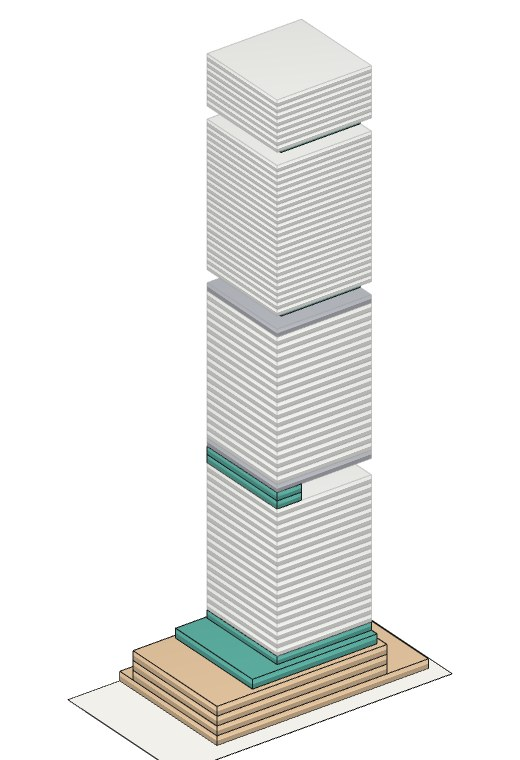<span>A9a</span></li><li>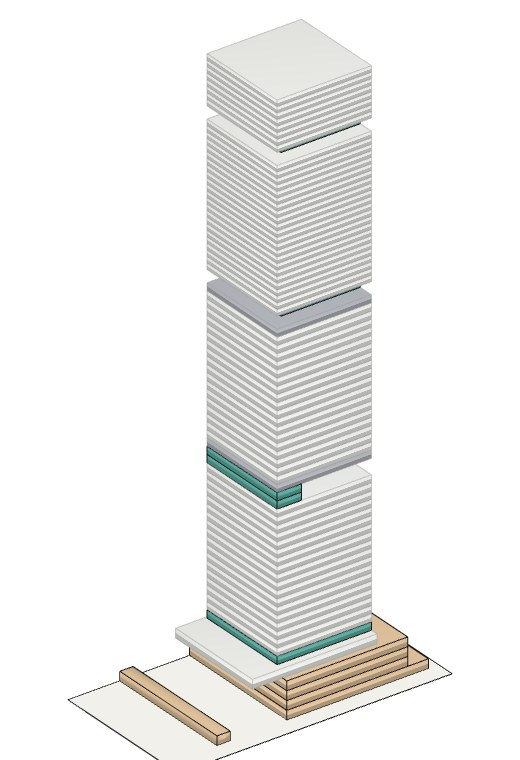<span>A10a</span></li><li><span>A11a</span></li><li><span>A12a</span></li><li><span>A13a</span></li><li><span>A14a</span></li><li><span>A15a</span></li><li><span>A16a</span></li><li><span>A17a</span></li><li>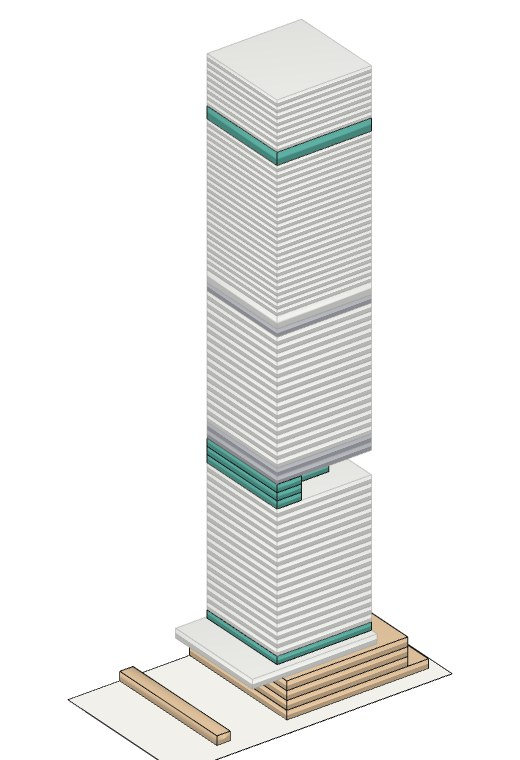<span>A18b</span></li><li>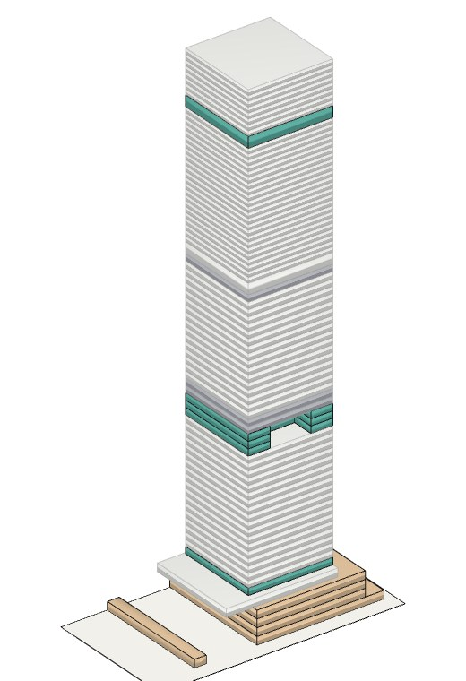<span>A19a</span></li><li>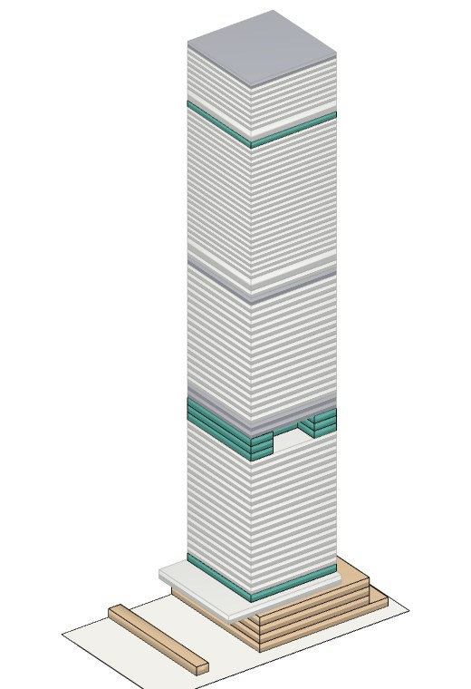<span>A20a</span></li><li>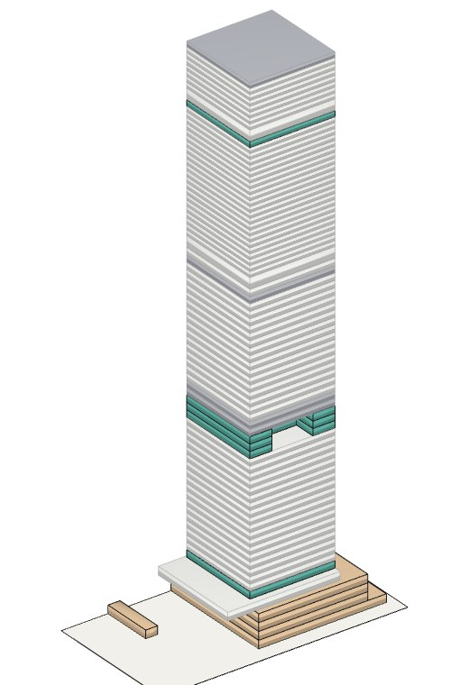<span>A21a</span></li><li><span>A22a</span></li><li><span>A23a</span></li><li><span>A24a</span></li><li><span>A24r</span></li><li><span>A26a</span></li><li>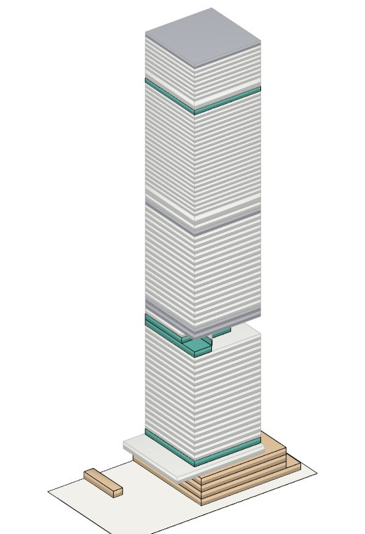<span>A27a</span></li><li><span>A28a</span></li><li><span>A29a</span></li><li>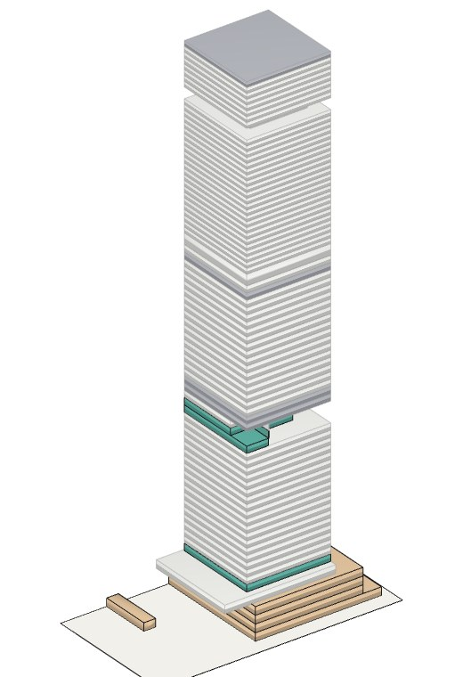<span>A30a</span></li><li><span>A31a</span></li><li><span>A32a</span></li><li><span>A33a</span></li><li><span>A34a</span></li><li><span>A34z</span></li><li><span>A35b</span></li><li><span>A35n</span></li><li><span>A36a</span></li><li><span>A37a</span></li><li><span>A37n</span></li><li><span>A37c</span></li></ol></article><article class="final"><p class="eyebrow">One variable at a time</p><h3 class="th">Tower B · performance-led</h3>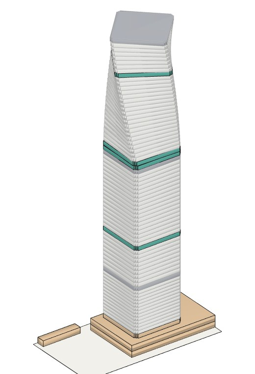<p><b>B38a</b> · margin +9,640 m² · 621 homes · 9 Fail lines</p><p><p class="mverdict"><b>Where B stands.</b> One variable at a time, then a stated identity aim: a straight office shaft and a 70° turning top for the hotel and homes, legible from 8 of 8 views, with a free public room where the turn begins (public floor share 1.1%, the only tower off Fail) and the fewest Fail lines (8). The final jury would put B forward first; its condition, a gate that survives a fourth plant floor, is now met (margin +4,679 m², +2,197 m² with a fourth). <b>Trade-off:</b> B bent its keep-rule to get there (wider podium exit stairs, TEUI 63.6), daylight sDA 46%, and the gate still counts the hotel.</p><details class="mround"><summary>Round 2 · 10 iterations · chamfer → public plaza</summary><ol class="msteps"><li><b>B8a</b> chamfer<span class="mwhy">Test the non-box move R2 ranked third for B: soften the windward corners with a 3 m chamfer (5 m left too little margin).</span></li><li><b>B9a</b> recession<span class="mwhy">The chamfer&#x27;s new west-facing facets failed glare, and the wind reviewer pointed out that the precedent (Taipei 101) is a recession, so the corners became a double recession that keeps the box&#x27;s four facings.</span></li><li><b>B10a</b> damper crown<span class="mwhy">The structural reviewer found the gate fails once a third plant floor sits in the office band, so the plant and a damper went into a crown above the homes.</span></li><li><b>B11a</b> deeper devices<span class="mwhy">The energy reviewer showed the energy lines are presets no facade can move, and measured that deeper devices on the two faces that set glare clear it; that became the next single variable.</span></li><li><b>B12b</b> no transfer<span class="mwhy">The cost reviewer found the transfer storey was an office floor priced as plant and no geometry needs a transfer; making it office lifts the margin to 3,920 m², and the podium storey above the lobby took the plant.</span></li><li><b>B13a</b> edge stair<span class="mwhy">Like A, B&#x27;s two exit stairs could never be far enough apart inside a 24 m core; one stair moved to the plate corner, the only change.</span></li><li><b>B14a</b> station plaza<span class="mwhy">B had not touched its ground since round 1 and its centred podium left only strips; sliding the podium east opens a station plaza and cuts the open-site shadow from 40% to 14%, but the plaza loses its windward shelter.</span></li><li><b>B15a</b> plaza nature<span class="mwhy">Every City in Nature line was empty; the new plaza got trees, a rain pathway and bird-safe glass as declared choices, the only change, while the wind fix waits for a tool that can read it.</span></li><li><b>B16a</b> hotel base<span class="mwhy">The developer flagged 41 office storeys in one stack as a leasing risk and an unleasable L3; the low-rise lift zone became a hotel whose lobby opens onto the new plaza, the only change.</span></li><li><b>B17a</b> public plaza<span class="mwhy">The cultural reviewer found the plaza&#x27;s public share was an undeclared default and nothing was held for others; the plaza is now declared fully public with a 24-hour right of way, the only measured change.</span></li></ol></details><details class="mround"><summary>Round 3 · 10 iterations · twist test → turning top</summary><ol class="msteps"><li><b>B17r</b> twist test (variants rejected)<span class="mwhy">The jury asked for a whole-tower twist; it held floor area but no reading improved, because the across-wind screen credits corners only, so the twist waits for a twist-aware screen (tool G19, built next).</span></li><li><b>B19a</b> windbreak<span class="mwhy">The plaza wind Fail could now be read correctly, so a 6 m pavilion on the plaza&#x27;s windward edge was tested against a row of trees; the pavilion cut the peak from 6.1 to 4.0 m/s.</span></li><li><b>B20a</b> crown damper<span class="mwhy">The across-wind screen built tonight made the tower&#x27;s sway at the top B&#x27;s governing Fail; a declared damper in the existing crown adds damping at no floor cost and turns it to Check.</span></li><li><b>B21c</b> twist 90° + bands<span class="mwhy">With the twist now read and credited, and a silhouette reader, the jury&#x27;s twist finally moved a measured reading: the outline goes from straight (0 of 8 views legible) to legible in 8 of 8; the facade was re-banded so glare still passes.</span></li><li><b>B22c</b> 70° twist<span class="mwhy">The energy reviewer found no facade list under 40% glass wins daylight back, and that the envelope Fail mostly counts each storey&#x27;s twist step as a terrace; twisting 70° instead of 90° improved every reading it touched and broke none, so B&#x27;s keep-rule picks it over more glass.</span></li><li><b>B23b</b> lighter devices<span class="mwhy">On the 70° twist, the energy reviewer&#x27;s shallower devices raise daylight from 45 to 48% with glare unchanged, so B keeps them; moving the facade band split to where the faces now point due N/E/S/W made glare worse.</span></li><li><b>B24a</b> podium exits<span class="mwhy">Read on the true podium outline (a tool built tonight), the podium&#x27;s far corner is 60.8 m from the core stairs, not 56.2 m; two podium exit stairs bring it to 41.2 m, and no other line moves.</span></li><li><b>B25a</b> one system<span class="mwhy">The facade reviewer showed no facade change reaches L41&#x27;s overheating: the hot zone is the floor&#x27;s windowless interior ring, read as heated only while the energy line already counts cooling; setting the floor to the system the energy line assumes clears it, logged as an assumption correction.</span></li><li><b>B26a</b> openable 30%<span class="mwhy">With the system corrected, the remaining comfort Fail is openable area; raising the window opening share from 10% to 30% passes it and moves nothing else.</span></li><li><b>B27b</b> turning top<span class="mwhy">The juror lifted round 2&#x27;s &quot;box with refinements&quot; verdict but found the twist unrelated to anything inside; turning only the hotel and homes above the +180 m outrigger gives a straight office shaft and a turning top, and restoring the upper N fins keeps every reading in its state, so B takes it as a stated change of method.</span></li></ol></details><details class="mround"><summary>Round 4 · 6 iterations · public room at the turn → L3 not a deck</summary><ol class="msteps"><li><b>B28a</b> public room at the turn<span class="mwhy">The comparative jury found B the only tower with no public room above grade; a free, enclosed sky room at L45, where the top starts to turn, gives B a public floor share above the Fail line, the only one of the three.</span></li><li><b>B29a</b> lobby above the room<span class="mwhy">The vertical-transport reviewer moved the residents’ sky lobby from L47 to L46, directly above the public room, so the one-storey lift zone disappears and every group has two cars again, with three fewer cars in all.</span></li><li><b>B30a</b> deck screens<span class="mwhy">The ground-wind reviewer found the downwash line reads height alone (every tower in the 244–305 m band fails it), so the one move left at B’s foot is 2.5 m deck-edge screens: the pavilion roof passes and the L3 terrace improves, nothing worse.</span></li><li><b>B31a</b> bird-safe glass<span class="mwhy">The City in Nature reviewer found B’s ecological figures are all typed numbers; the one move that improves a nature line and worsens nothing is treating all glass in the bird-collision zone, so B takes it.</span></li><li><b>B32a</b> plaza trees<span class="mwhy">The canopy B claims now stands in the model: 20 plaza trees entered in the ground wind study bring the site peak wind down and worsen nothing.</span></li><li><b>B33b</b> L3 not a deck<span class="mwhy">The final jury put B forward first; the L3 terrace was its last comfort Fail, and declaring that podium roof not a deck clears it with nothing else moving, which B’s keep-rule prefers to planting it (the weight step would rise to 253%).</span></li></ol></details><details class="mround"><summary>Round 5 · 4 iterations · base canopy → nature from the model</summary><ol class="msteps"><li><b>B34a</b> base canopy<span class="mwhy">Re-read on tool cycle 6, the downwash line credits B’s deep podium steps toward the WNW and W winds (8.8 → 5.5 m/s); one variable, a 6 m canopy round the base, brings it under 5 m/s and nothing else moves.</span></li><li><b>B35a</b> plant into the tower<span class="mwhy">The jury’s condition for putting B forward was a gate that survives a fourth plant floor; moving the podium plant floor up into the tower and letting L2 as retail keeps the margin above zero even with four, at the cost of wider podium exit stairs.</span></li><li><b>B35z</b> last re-read<span class="mwhy">The last two tool fixes of the night (plant floors counted in the tower only, G44; exit stairs on the stepped core, G46) re-read on the final design: no design change.</span></li><li><b>B35n</b> nature from the model<span class="mwhy">The last tool of the night reads City in Nature canopy and cover from the model (trees in the ground wind study, planted decks) beside the typed values (G12); re-read on the final design, with no design change.</span></li></ol></details><details class="mround"><summary>Round 6 · 4 iterations · hotel storeys 3.3 m → re-read, cycle 11</summary><ol class="msteps"><li><b>B36a</b> hotel storeys 3.3 m<span class="mwhy">Re-read on the 14 book nodes, B’s hotel spent 7.7 m on 4.0 m storeys that the gate needed more than the hotel did; at 3.3 m with the height kept, the hotel gains two storeys and the margin roughly doubles.</span></li><li><b>B37a</b> column ring<span class="mwhy">The floor-reach node from the books read 21.6 m from core to facade in the turning top, beyond any flat plate; B’s light readings rested on 480 mm slabs that the toolkit itself calls an extrapolation. An interior column ring halves the spans and makes the structure honest, at a cost in two values.</span></li><li><b>B37n</b> re-read, node placement<span class="mwhy">Tool cycle 10 (node placement) merged to main 14e8ebb: the Higher Buildings lines moved to their own node, Structure split into tabs, stair doors and the KPF slenderness band in the developer view. Re-read on the final design, with no design change.</span></li><li><b>B37c</b> re-read, cycle 11<span class="mwhy">Tool cycle 11 merged to main 6c1a70a: posted occupant loads, shared levels counted by who can reach them, the column ring by storeys, and sloped columns (Type 10). Re-read on the final design, with no design change.</span></li></ol></details><details class="mround"><summary>Round 7 · 1 iterations · top turned 45° → top turned 45°</summary><ol class="msteps"><li><b>B38a</b> top turned 45°<span class="mwhy">The landmark research found B’s turning angle untraced; 45° is the grid’s offset from north, so a top turned 45° ends facing the compass. One variable, and the edge stair that no round-6 move could place now fits far enough from the core.</span></li></ol></details></p><ol class="path"><li>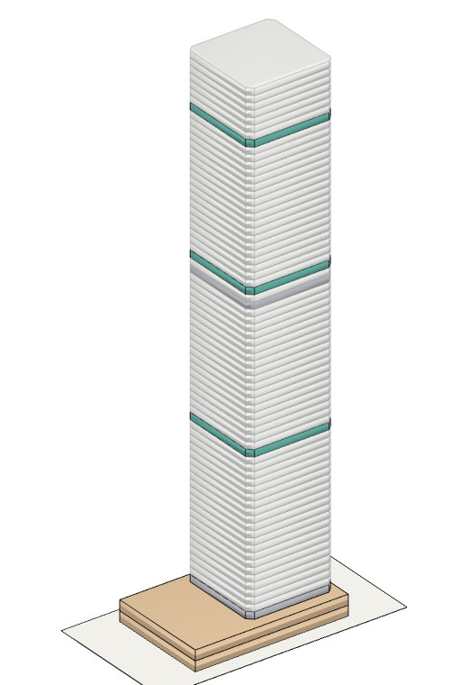<span>B8a</span></li><li><span>B9a</span></li><li><span>B10a</span></li><li>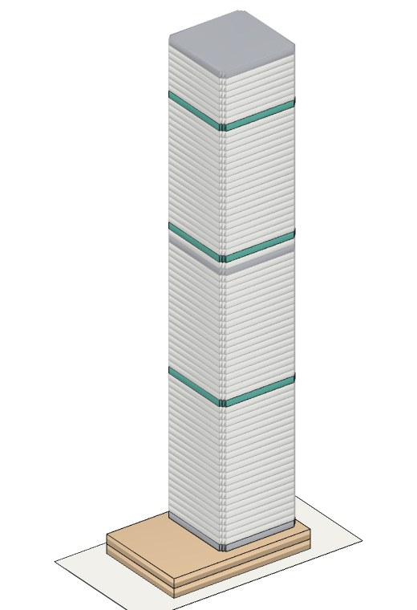<span>B11a</span></li><li>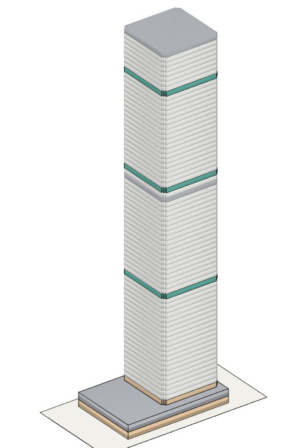<span>B12b</span></li><li><span>B13a</span></li><li><span>B14a</span></li><li><span>B15a</span></li><li><span>B16a</span></li><li><span>B17a</span></li><li>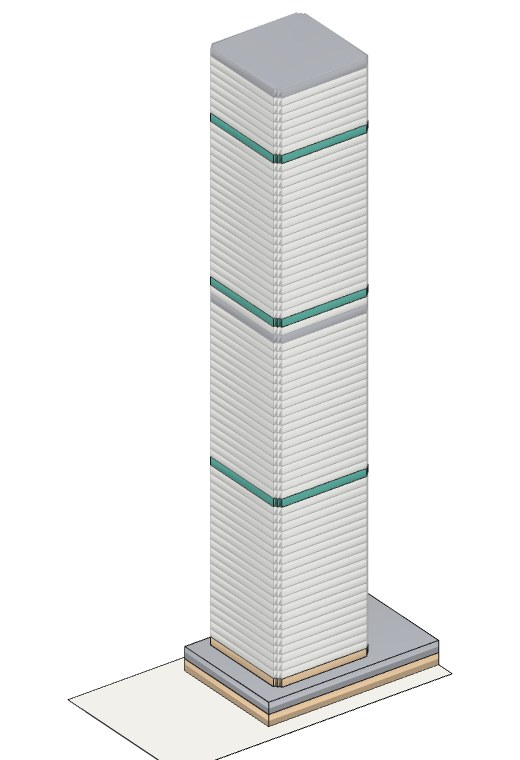<span>B17r</span></li><li><span>B19a</span></li><li>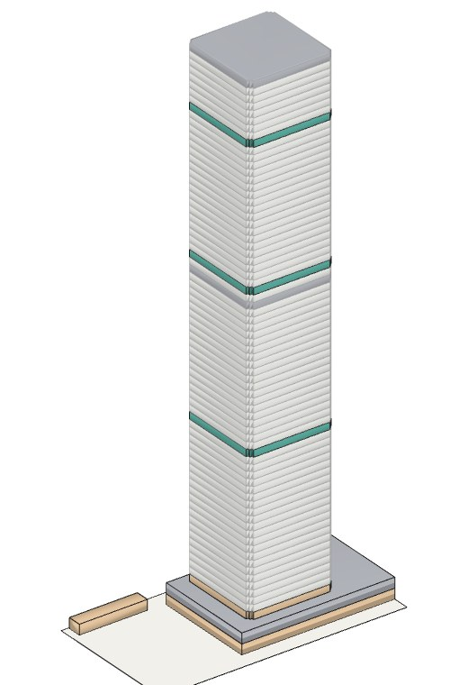<span>B20a</span></li><li>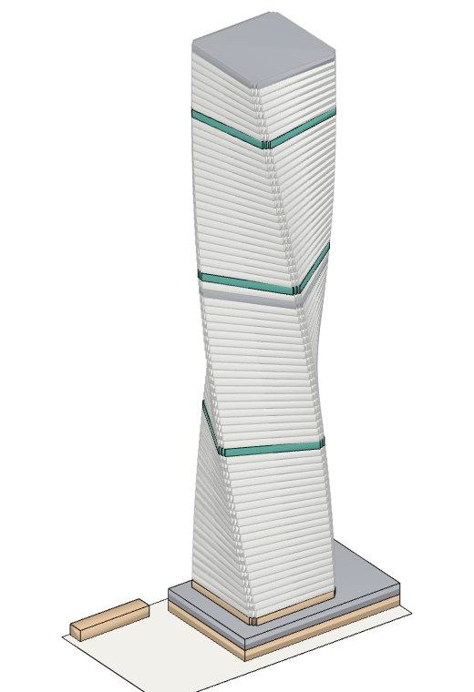<span>B21c</span></li><li><span>B22c</span></li><li><span>B23b</span></li><li><span>B24a</span></li><li>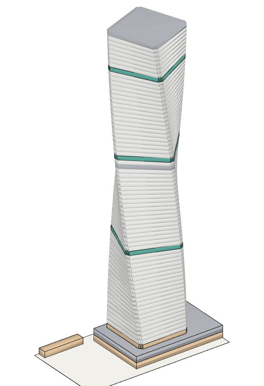<span>B25a</span></li><li><span>B26a</span></li><li><span>B27b</span></li><li>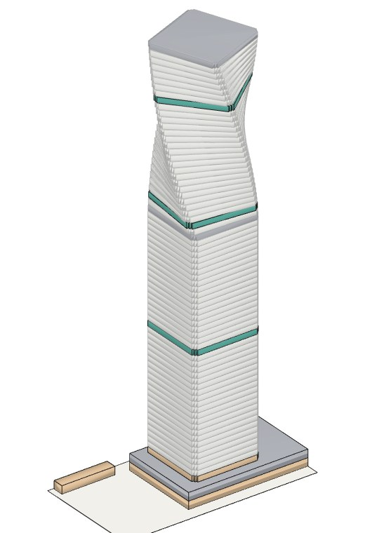<span>B28a</span></li><li><span>B29a</span></li><li><span>B30a</span></li><li><span>B31a</span></li><li><span>B32a</span></li><li><span>B33b</span></li><li><span>B34a</span></li><li><span>B35a</span></li><li><span>B35z</span></li><li><span>B35n</span></li><li><span>B36a</span></li><li><span>B37a</span></li><li><span>B37n</span></li><li><span>B37c</span></li><li><span>B38a</span></li></ol></article><article class="final"><p class="eyebrow">A unit, a rule, a family, a pick</p><h3 class="th">Tower C · form-led</h3><p><b>C42e</b> · margin +8,351 m² · 755 homes · 7 Fail lines</p><p><p class="mverdict"><b>Where C stands.</b> The soundest of the three: the only across-wind Pass (0.8% g), sDA 65%, 715 homes, a stepping core whose long-term sway fell from 814 to 533 mm once the steps were balanced, and a free public sky room on the calm loggia at +203 m (public share 1.1% once the toolkit read the stepped core). <b>Trade-off:</b> the steps read only 15′ from 2 km, two of three outdoor steps became winter gardens, and 533 mm of sway still needs pre-set floors and belts as tie-downs.</p><details class="mround"><summary>Round 2 · 10 iterations · one-face steps → residents lobby</summary><ol class="msteps"><li><b>C7d</b> one-face steps<span class="mwhy">Test the non-box move R2 ranked second for C: step one face at a time (after Burj Khalifa); C7d kept the full margin, the most homes and the least off-centre load.</span></li><li><b>C8a</b> three faces<span class="mwhy">Both reviewers asked to end the spiral before the exposed NW hotel terrace and to belt the core at the steps; the public terrace got end walls against wind along the face.</span></li><li><b>C9b</b> glass follows depth<span class="mwhy">C had never set its facade, so the glare Fail sat on the default curtain wall; the facade reviewer tied the skin to the setback rule (less glass above each step) and the step went to 4.5 m so every face fits whole panels.</span></li><li><b>C10b</b> planting rule<span class="mwhy">City in Nature carries part of the 30% cultural weight and C had entered nothing; a third reading of the same rule sets planting height by each terrace&#x27;s wind exposure, and the basement was pulled back so the plaza trees have soil.</span></li><li><b>C11a</b> level solar gain<span class="mwhy">The energy reviewer found the energy lines are presets, so the measurable gain was overheating; giving the glass more solar control where there is more of it keeps the gain per zone level and cuts overheating from 229 to 86 hours.</span></li><li><b>C12a</b> unit pavilion<span class="mwhy">The high street had no streetwall west of the podium; C&#x27;s 4.5 m unit came down to the ground as a pavilion of nine units, the smallest count that reaches 80% continuity.</span></li><li><b>C13a</b> held unit<span class="mwhy">C had nothing honest to show for cultural context; it now holds one unit and one terrace wall empty for a commission only if a Nation chooses one, keeps the sky room open longer, and says &quot;not sought&quot; rather than borrowing anything.</span></li><li><b>C14a</b> belt per step<span class="mwhy">The one step over homes had no belt under it; making that storey plant means every step now lands on a belt-and-plant storey, so no terrace waterproofing sits over a home.</span></li><li><b>C15b</b> edge stair, 3 rises<span class="mwhy">Exit separation could not pass with both stairs in the core, so one stair went to the edge and stops below the steps like the columns; the office lifts were split into three rises so they pass handling capacity.</span></li><li><b>C16a</b> residents lobby<span class="mwhy">The developer&#x27;s first risk was 1,774 residents and guests changing lifts inside the public sky room; a residents&#x27; and hotel lobby on the storey above the SE step takes them out of it and gives that terrace an owner.</span></li></ol></details><details class="mround"><summary>Round 3 · 10 iterations · deeper steps → one-storey loggia</summary><ol class="msteps"><li><b>C16r</b> deeper steps (variants rejected)<span class="mwhy">The jury said three 4.5 m steps do not read from the city; two-unit steps on the leeward faces read deeper but cut homes to 589, under C&#x27;s 600 line, because the fixed 24 m core cannot shrink with the tiers (tool G18, built next).</span></li><li><b>C18a</b> terrace screens<span class="mwhy">The new terrace-wind check read every terrace &quot;uncomfortable&quot;; a 2 m screen at 25% open brought the residents&#x27; terrace at +203 m to walking, while a denser screen did worse.</span></li><li><b>C19a</b> top damper<span class="mwhy">The structural reviewer found any deeper-step version of C needs at least 4.5% added damping at the top; making the top hotel storey a damper storey brings across-wind under the 1.5% g limit even at the lower-bound frequency.</span></li><li><b>C20a</b> stepped core<span class="mwhy">With a core that steps with the tiers, the jury&#x27;s &quot;rule at city scale&quot; works: 9 m steps on the leeward faces read in 8 of 8 views, homes come back above 600, and sway falls, because the core walls now stop at the belts like the columns.</span></li><li><b>C21a</b> loggias<span class="mwhy">The wind reviewer found the 9 m terraces read exactly like the 4.5 m ones, because the wake of the storey above governs them; carrying that storey out over each step turns the terraces into two-storey loggias, and the public one drops from 12 h to 0 h a year at unsafe wind.</span></li><li><b>C22a</b> core recentred<span class="mwhy">The structural reviewer found the loggias keep C&#x27;s rule (no column starts or moves) but the top core sat off the core below; recentring the 15 m core on the 19.5 m core&#x27;s line cuts the off-centre weight from 0.134 to 0.095 and the long-term sway by a third.</span></li><li><b>C23a</b> podium exits<span class="mwhy">Read on the true podium outline, the podium&#x27;s far corner is 56.2 m from the core stairs; three exit stairs on the two local streets bring it to 39.7 m and keep the high street, the link and the plaza clear.</span></li><li><b>C24a</b> public on the calm step<span class="mwhy">The juror found the calmest deck (+203 m, standing) belonged to the residents&#x27; lobby while the public room had the windiest; moving the public sky room to the calm step and making it fully public turns its terrace from Fail to Check, at a cost of 21 homes.</span></li><li><b>C25a</b> decks declared<span class="mwhy">The deck tools built in cycle 4 let C say what each deck is: the loggias occupied and paved, the roofs over them planted with their own soil; the planted roofs leave the comfort Fails, and the soil moves to where the design puts it, so sway falls again.</span></li><li><b>C26a</b> one-storey loggia<span class="mwhy">The cover factor showed the +235 m loggia was too shallow for its two-storey height; carrying L60 out over it makes it one storey high, so its 4 m depth shelters it, and the unsafe hours fall from 8 to 2.</span></li></ol></details><details class="mround"><summary>Round 4 · 5 iterations · sway with the jog → second winter garden</summary><ol class="msteps"><li><b>C26r</b> sway with the jog (variants rejected)<span class="mwhy">Read with the core jog (a tool built in cycle 5), C&#x27;s long-term sway is about 814 mm, not 183 mm; neither the jury&#x27;s move (uncover and plant the two exposed steps) nor concentric cores is a clear gain, so C keeps C26a and states the sway openly.</span></li><li><b>C28a</b> depths swapped<span class="mwhy">The structural reviewer found the core cannot fix the lean: the weight above L43 sat to one side because the NE and SW steps were unequal; swapping the step depths balances it, cutting the long-term sway with the core jog from 814 to 533 mm and adding 53 homes.</span></li><li><b>C29a</b> winter garden<span class="mwhy">The wind reviewer found no open-air change within C’s rule brings either loggia to standing (the toolkit gives a cornered point under a slab no screen credit); glazing the +235 m loggia as an unheated winter garden takes it out of the wind and leaves C one public loggia and one private open step.</span></li><li><b>C30a</b> board text + AI log<span class="mwhy">The cultural reviewer found none of C’s board text had a person recorded as reviewing it and the held unit’s wording could read as an arrangement with a Nation; six new sentences say only what the model measures, and the AI-use log now names the text as AI-generated, waiting for a person.</span></li><li><b>C31a</b> second winter garden<span class="mwhy">The final jury found C sounder but no more legible; glazing the +171 m loggia as a winter garden too clears C’s last loggia Fail, leaving the public loggia at +203 m as C’s one open-air step.</span></li></ol></details><details class="mround"><summary>Round 5 · 7 iterations · base canopy → nature from the model</summary><ol class="msteps"><li><b>C32a</b> base canopy<span class="mwhy">Re-read on tool cycle 6, C’s downwash reads 5.3 m/s with its podium step, its retention gains 6 mm from the planted roofs’ soil, and 713 m² of glass beside planted decks joins the bird line; a 6 m canopy round the base brings the downwash under 5 m/s.</span></li><li><b>C33a</b> bird-safe glass<span class="mwhy">Tool cycle 6 counts the glass beside C’s planted decks for birds at any height; treating all bird-zone glass, including that, clears the bird line.</span></li><li><b>C33a</b> public share: a tool bug (variants rejected)<span class="mwhy">The public-floor reviewer found every glazed public room that lifts C’s share off Fail makes the public loggia windier (standing → walking, Fail), and that most of the 0.9% Fail is the toolkit subtracting the full base core on a floor where the core has stepped to 15 m; C keeps C33a and the bug goes to the toolkit.</span></li><li><b>C33r</b> found, fixed, re-read<span class="mwhy">The measuring error the public-floor reviewer found was fixed in the toolkit within half an hour (G45); re-read on the fix, C’s public sky room counts its true area and the public share leaves Fail with no design change.</span></li><li><b>C33z</b> last re-read<span class="mwhy">The last two tool fixes of the night (plant floors counted in the tower only, G44; exit stairs on the stepped core, G46) re-read on the final design: no design change.</span></li><li><b>C35a</b> winter gardens not homes<span class="mwhy">Tool cycle 7 lets part of a storey carry its own use (G14); the two winter gardens are declared unconditioned, so the toolkit stops counting them as homes and floor area, and C’s home count matches the reviewers’ reading.</span></li><li><b>C35n</b> nature from the model<span class="mwhy">The last tool of the night reads City in Nature canopy and cover from the model (trees in the ground wind study, planted decks) beside the typed values (G12); re-read on the final design, with no design change.</span></li></ol></details><details class="mround"><summary>Round 6 · 5 iterations · L44 amenity, L5 plant → re-read, cycle 11</summary><ol class="msteps"><li><b>C36a</b> L44 amenity, L5 plant<span class="mwhy">Re-read on the 14 book nodes, C’s L44 civic floor counted at the lounge load (1,371 people) set 5,483 mm stairs for the tower below it, and no plant served the low floors; four inputs clear the core, the exits and the plant reach together.</span></li><li><b>C37a</b> homes 3.45 m, +4 office<span class="mwhy">The storey-height node from the books read C’s homes at 4.00 m, 26.6 m above a typical 3.05 m, while C’s gate margin was thin (+3,484 m²) and would fall short without the hotel. C’s pick order puts the gate first, so the freed height goes to office.</span></li><li><b>C38a</b> podium roof planted<span class="mwhy">The podium roof at +19 m Failed as a walking terrace, though it has been plant since C36a and C10b drew it as a blue-green roof. Declaring it planted makes the reading honest and adds the only real deck below L47 to the planted levels.</span></li><li><b>C38n</b> re-read, node placement<span class="mwhy">Tool cycle 10 (node placement) merged to main 14e8ebb: the Higher Buildings lines moved to their own node, Structure split into tabs, stair doors and the KPF slenderness band in the developer view. Re-read on the final design, with no design change.</span></li><li><b>C38c</b> re-read, cycle 11<span class="mwhy">Tool cycle 11 merged to main 6c1a70a: posted occupant loads, shared levels counted by who can reach them, the column ring by storeys, and sloped columns (Type 10). Re-read on the final design, with no design change.</span></li></ol></details><details class="mround"><summary>Round 7 · 9 iterations · Compass Turn → CT+RG · 4 m bridge</summary><ol class="msteps"><li><b>C39a</b> Compass Turn<span class="mwhy">Concept 1 of 4. C’s grid square turns into a true-N/E/S/W octagon above +181.7 m, so the top turns from the street grid to true north (the block edge 44.8° off true north, defaultSite.json); the strongest QE Park reading of the research, and the only concept that raises both margin and homes.</span></li><li><b>C39s</b> CT · belt at L71<span class="mwhy">The structural review found the corner columns crossed by the facets at about 8°: leaning breaks C’s rule and Type 10, a facet diagrid is unsourced for SC4; a belt at L71 lets them stop on belts, halving the cantilevers.</span></li><li><b>C40k</b> Datum Bundle<span class="mwhy">Concept 2 of 4. Nine 18 m rounded shafts end whole, in opposite pairs, on the belts and at the neighbours’ roof heights: the only concept that answers the 29 m articulation test, and the closest to C’s rule (columns only stop).</span></li><li><b>C40n</b> DB · corner shading<span class="mwhy">The Datum Bundle’s one new Fail was low-sun glare from the rounded W and S corners; the facade review found the cure is in how the corner is drawn and shaded, not in grooves.</span></li><li><b>C41e</b> Sightline Opening<span class="mwhy">Concept 3 of 4. An open opening along the Queen Elizabeth Park sightline (356.8°) through C’s top, above the core top, its sill above the +242.6 m ridge: the only concept set by a City view cone and the only tall void; unreadable until tool cycle 12 gave a core top, parts without floor area and openings.</span></li><li><b>C41k</b> RG · ear stairs<span class="mwhy">The ears of the Sightline Opening each had one stair; two ways out from every part above the core top.</span></li><li><b>C41m</b> RG · 4 m bridge<span class="mwhy">The wind review found no wind line sees the opening; the worse downwash and podium step came from the 304.8 m top sitting exactly on two height-ratio cut-offs, and the ear roofs were read as terraces. A 4 m bridge and plant roofs correct the reading, not the wind.</span></li><li><b>C42a</b> Compass Turn + Sightline Opening<span class="mwhy">Concept 4 of 4, the lead designer’s addition: the Sightline Opening cut through the Compass Turn’s octagonal top, to keep the turn’s homes and QE outline and add the opening’s sky.</span></li><li><b>C42e</b> CT+RG · 4 m bridge<span class="mwhy">The same reading correction as the Sightline Opening: a 4 m bridge takes the top off the exact height-ratio cut-offs, and the ear and bridge roofs are plant roofs.</span></li></ol></details></p><ol class="path"><li>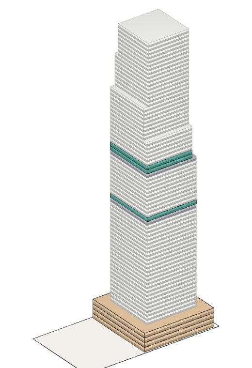<span>C7d</span></li><li><span>C8a</span></li><li><span>C9b</span></li><li><span>C10b</span></li><li><span>C11a</span></li><li><span>C12a</span></li><li>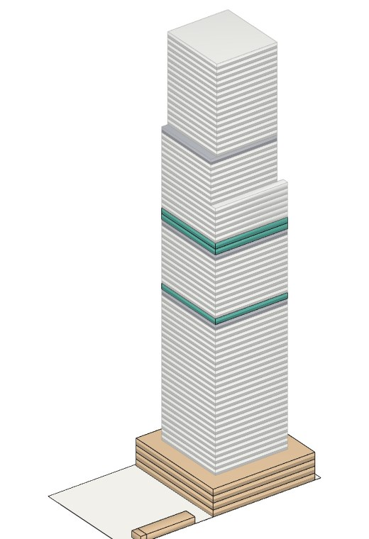<span>C13a</span></li><li><span>C14a</span></li><li>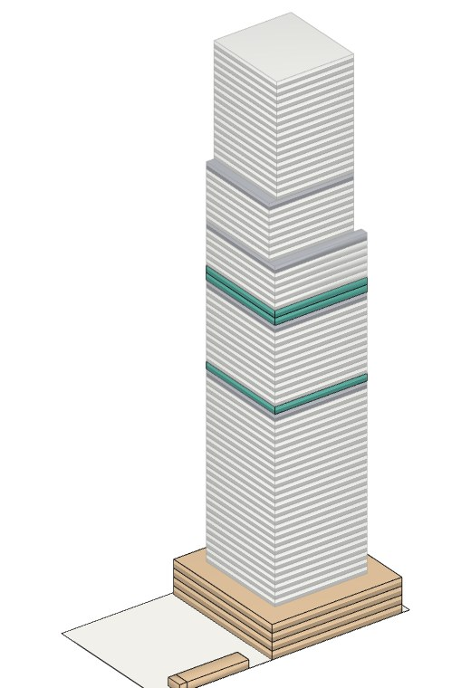<span>C15b</span></li><li><span>C16a</span></li><li>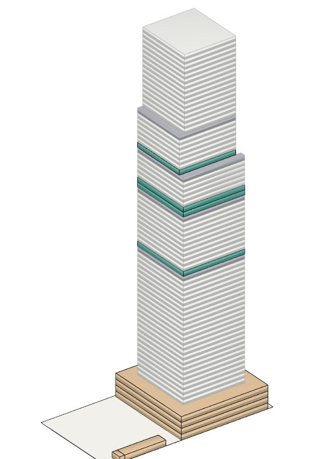<span>C16r</span></li><li><span>C18a</span></li><li>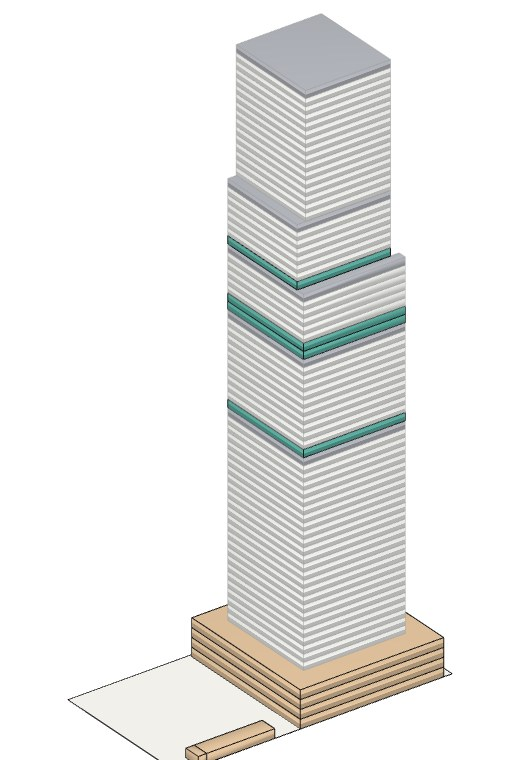<span>C19a</span></li><li><span>C20a</span></li><li><span>C21a</span></li><li>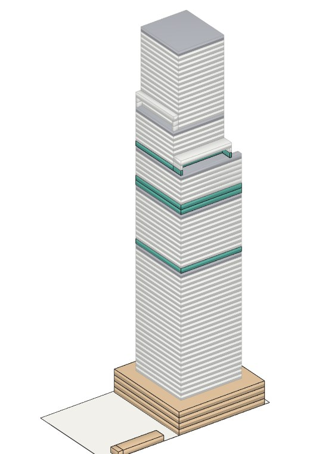<span>C22a</span></li><li><span>C23a</span></li><li><span>C24a</span></li><li><span>C25a</span></li><li><span>C26a</span></li><li>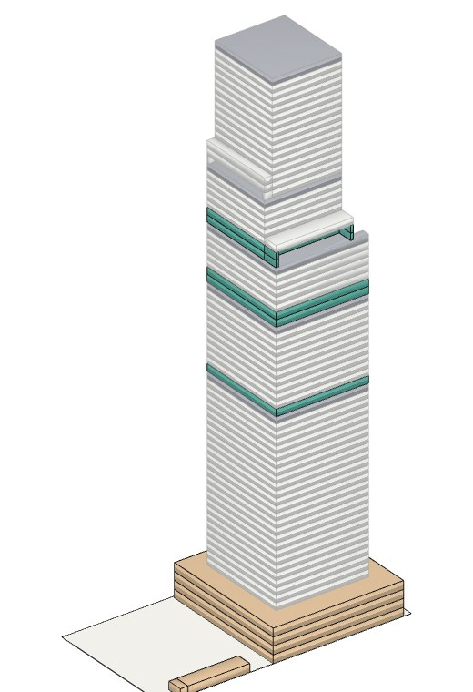<span>C26r</span></li><li>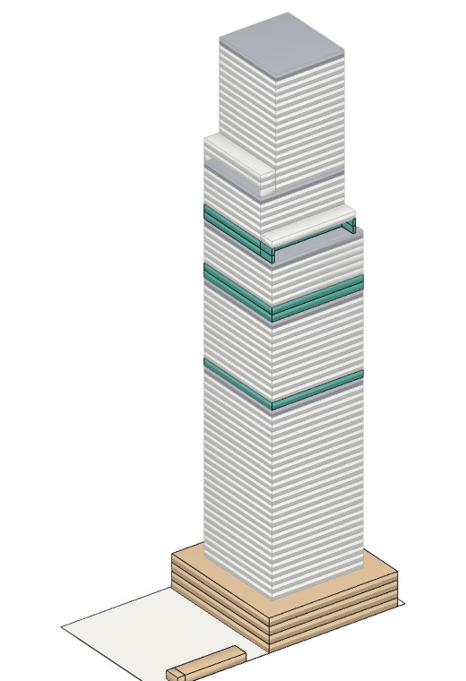<span>C28a</span></li><li><span>C29a</span></li><li><span>C30a</span></li><li><span>C31a</span></li><li><span>C32a</span></li><li><span>C33a</span></li><li><span>C33a</span></li><li><span>C33r</span></li><li><span>C33z</span></li><li><span>C35a</span></li><li><span>C35n</span></li><li><span>C36a</span></li><li><span>C37a</span></li><li><span>C38a</span></li><li><span>C38n</span></li><li><span>C38c</span></li><li><span>C39a</span></li><li>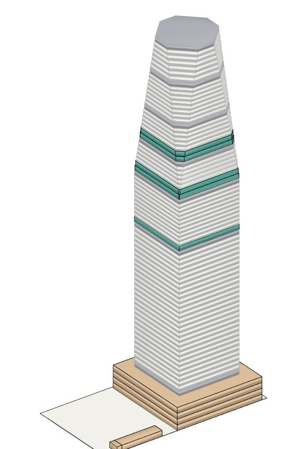<span>C39s</span></li><li>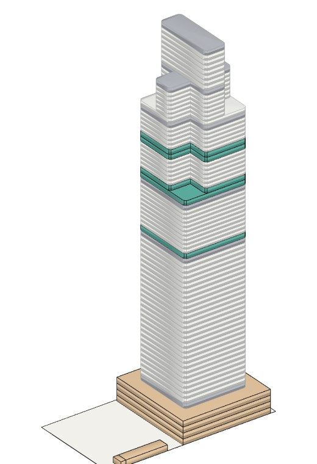<span>C40k</span></li><li><span>C40n</span></li><li><span>C41e</span></li><li><span>C41k</span></li><li>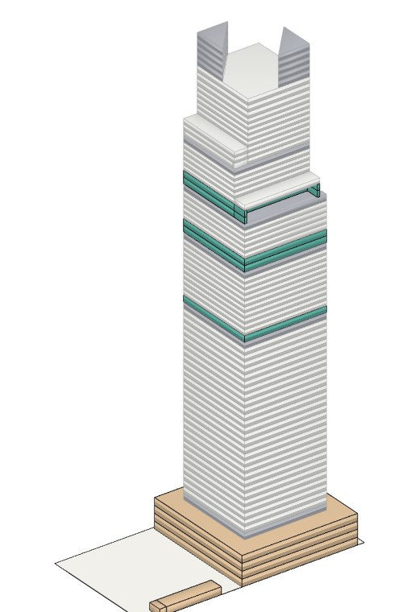<span>C41m</span></li><li><span>C42a</span></li><li><span>C42e</span></li></ol></article></div><figure class="dgwrap">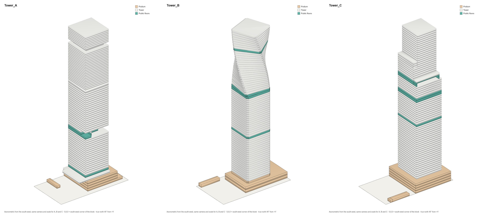<figcaption>The three final designs from the delivered .3dm files: same camera and scale, from the south-west; public floors in green, podium in sand.</figcaption></figure></section>
<section class="tab" data-tab="round-1" id="round-1"><header class="r2head"><p class="eyebrow">Round 1 · 20 Nov</p><h2>Thirty-five boxes: the first round, before the night</h2></header>
<section class="box" id="why-boxes">
  <p class="eyebrow">Read this first</p>
  <h2>Why all three towers are boxes</h2>
  <p>The toolkit is not limited to boxes. The forms came out rectangular because of how I set up the work, and because of what the checks reward.</p>
  <div class="cando">
    <div><h4>Polygons and holes</h4><p>The drawing tools (Line, Circle, Offset, Boolean, Split, Push/pull) make any polygon or round footprint, with holes, and every storey is measured from its true outline.</p></div>
    <div><h4>Curved and free forms</h4><p>A model from Rhino or Grasshopper (.3dm, OBJ, glTF, IFC) is cut floor by floor. Floor area, FSR and shadows read the real outline.</p></div>
    <div><h4>Twist and taper</h4><p>The parametric tower can twist floor by floor, taper, step in tiers or shift its blocks.</p></div>
    <div class="no"><h4>Where it gets weaker</h4><p>For drawn or imported forms, core, lifts and stairs use an equivalent rectangle; a drawn podium and tower count as two separate towers; daylight depth reads one box. Free forms are possible, but the checks become less exact.</p></div>
  </div>
  <ul>
    <li><b>My brief narrowed the vocabulary.</b> I described the toolkit to the three designers as stacked rectangular blocks plus four forms, and left out drawn polygons and imported models. My run harness accepted only that path.</li>
    <li><b>The given scheme was square.</b> Tower A started from a 50 × 50 m plate and a 24 × 24 m core; tower B starts from the same baseline and changes one variable at a time.</li>
    <li><b>The checks reward big square plates.</b> 9.0 FSR plus 600 homes plus a centred square core favour large, regular plates. Tower B's elongated plates lost 54 homes for that reason and were dropped.</li>
    <li><b>Nobody tried the twist, or a non-square unit.</b> Tower C chose a square ring because I had told it only rectangles exist.</li>
  </ul>
  <p>The trade I made, without saying so, was check fidelity over form freedom. The next round can lift it: one free-form iteration per tower, drawn or imported, run through the same checks, with the weaker checks marked as such.</p>
</section>

<section class="tower" id="tower-a">
  <header class="towerhead"><p class="eyebrow">Concept first: &quot;the canopy gap&quot;</p><h2>Tower A · architect-led</h2>
  <p class="count"><b>7</b> designs run through the toolkit · winning path: A1 → A2 → A3 → A4 → A6 → A7</p></header>
  <ol class="path"><li><span>A1</span></li><li><span>A2</span></li><li>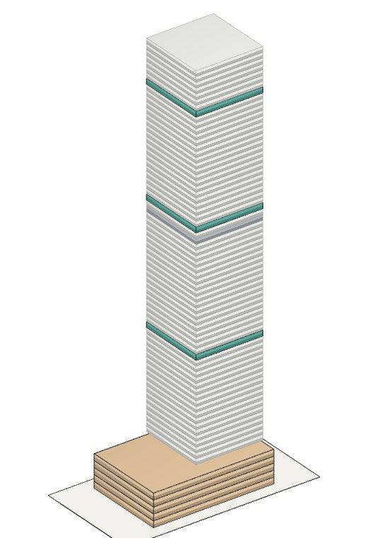<span>A3</span></li><li>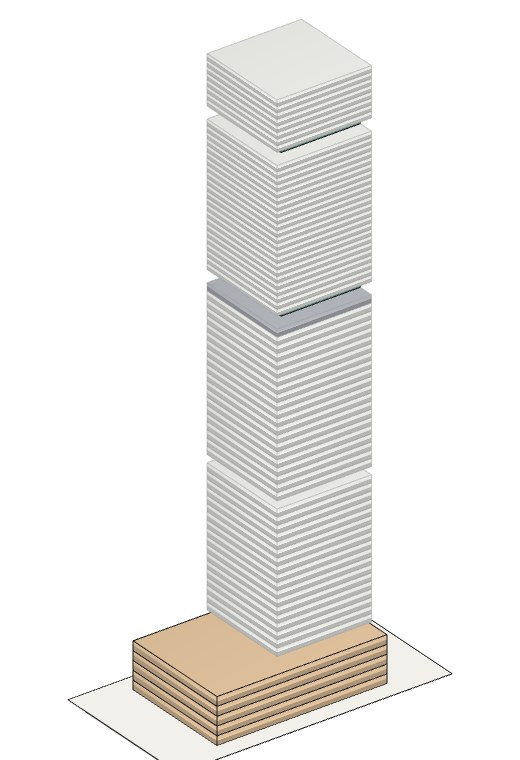<span>A4</span></li><li><span>A6</span></li><li><span>A7</span></li></ol>
  <div class="box"><p class="eyebrow">Independent critic</p><p>Gate on A6: <b>FAIL</b>. Two blockers: the saved project file carried the demo's public realm instead of the run's (fixed in the harness for every file written since), and A6's set-back fifth storey put the mid-block link under the tower (Fail). Majors: two egress Fails (exit separation 22.8 m against 35.4 m; podium travel distance), the 42% → 8% shadow pass partly bought by shrinking the open space (4,843 → 2,936 m²), the outdoor clearings unassessed for wind, no cultural-context evidence, and the plate question read without the CDDG Check lines. The critic set the test for A7 before it ran (link stops failing, tier 2 ≥ 9.0, homes ≥ 600, every other line equal to A6); A7 met it.</p></div>
  <article class="step">
  <header><span class="stepno">Step 1</span><h3>Move the tower into the north corner</h3><span class="tested">2 designs run</span></header>
  <div class="thumbs"><figure class=""><figcaption><b>A1</b> Baseline from the brief</figcaption></figure><figure class="on"><figcaption><b>A2</b> Clearing: tower to the north corner</figcaption></figure></div>
  <div class="tablewrap"><table><thead><tr><th scope="col">Design</th><th scope="col">Non-res FSR</th><th scope="col">Homes</th><th scope="col">GFA m²</th><th scope="col">Open site in new shadow</th><th scope="col">New shadow on ground</th><th scope="col">Sun lost by neighbours, kWh</th><th scope="col">Streetwalls passing</th><th scope="col">Step-back</th></tr></thead><tbody><tr><th scope="row">A1</th><td>8.28</td><td>621</td><td>199,500</td><td>42%</td><td>8,964 m²</td><td>50,934</td><td>0 of 4</td><td>0.0 m at the least</td></tr><tr class="chosen"><th scope="row">A2 ✓</th><td>8.28</td><td>621</td><td>199,500</td><td>42%</td><td>8,888 m²</td><td>51,613</td><td>0 of 4</td><td>3.0 m at the least</td></tr></tbody></table></div>
  <dl class="why">
    <div><dt>What prompted it</dt><dd>In the scheme as given (A1) the tower stands flush with the podium's east face: step-back 0.0 m (Check) and the east streetwall reads the full 300 m (Fail). Open site in new shadow is 42% (Fail).</dd></div>
    <div><dt>Options tested</dt><dd>One position only: the tower moved 3 m inside the podium's north-east and north-west faces. True north is 45° off the grid, so this is the podium's true-north corner.</dd></div>
    <div><dt>Choice</dt><dd>Keep the corner. Step-back passes (3.0 m) and ground shadow falls slightly (8,964 → 8,888 m²), but open-site shadow stays at 42%. The architect read that as a sign the podium, not the tower, shades the open ground.</dd></div>
    <div><dt>Who decided</dt><dd>Architect role agent (concept "the canopy gap": open the mass where people gather).</dd></div>
    <div><dt>What it cost</dt><dd>Nothing in area. The forum gets its sun from the south-west side only by inference: there is no forum surface in the model to measure.</dd></div>
    <div class="q"><dt>Question for critics</dt><dd>One position was tested where tower B tested three. Is a single concept-led move enough evidence here, or should the architect also have compared positions?</dd></div>
  </dl>
</article><article class="step">
  <header><span class="stepno">Step 2</span><h3>Street → forum → station → sky</h3><span class="tested">2 designs run</span></header>
  <div class="thumbs"><figure class=""><figcaption><b>A2</b> Clearing: tower to the north corner</figcaption></figure><figure class="on"><figcaption><b>A3</b> Descent and rise: street, forum, station, sky</figcaption></figure></div>
  <div class="tablewrap"><table><thead><tr><th scope="col">Design</th><th scope="col">Non-res FSR</th><th scope="col">Homes</th><th scope="col">GFA m²</th><th scope="col">Weight irregularity</th><th scope="col">Mid-block link open to sky</th><th scope="col">Sky-room exit stairs</th></tr></thead><tbody><tr><th scope="row">A2</th><td>8.28</td><td>621</td><td>199,500</td><td>216% between L5 and L6</td><td>Clear of the buildings, open to the sky</td><td>—</td></tr><tr class="chosen"><th scope="row">A3 ✓</th><td>8.54</td><td>621</td><td>197,900</td><td>600% between L5 and L6</td><td>Cuts through the podium, open to the sky</td><td>1,170 people → 4,680 mm per stair</td></tr></tbody></table></div>
  <dl class="why">
    <div><dt>What prompted it</dt><dd>A2 still failed the non-residential FSR (8.28) and had no declared transit entrance.</dd></div>
    <div><dt>Options tested</dt><dd>One bundle of moves around a single question (the route people take): transit route declared from the forum's south-west corner at B1; floor 1 retail; a 30 × 30 m glass room at +24–28 m; a public sky room at +188 m on its own lifts; frontage and a mid-block link. The architect changes several things at once; that is the method, not an error.</dd></div>
    <div><dt>Choice</dt><dd>Keep the route and the sky room; send the +24–28 m level back to the full plate.</dd></div>
    <div><dt>Who decided</dt><dd>Architect role agent. I re-ran A3–A5 once after noticing I had mapped the sky room to the shared shuttle and 12 h instead of the architect's own lifts and 16 h.</dd></div>
    <div><dt>What it cost</dt><dd>The 30 × 30 m room made the storey weight jump 600% (Check), and floor 1 counts entirely as retail although the forum void is not cut out of it.</dd></div>
    <div class="q"><dt>Question for critics</dt><dd>The transit route is declared, not drawn or checked. Should a declared route count in a ledger that claims every decision is checked?</dd></div>
  </dl>
</article><article class="step">
  <header><span class="stepno">Step 3</span><h3>Three public clearings up the tower</h3><span class="tested">2 designs run</span></header>
  <div class="thumbs"><figure class=""><figcaption><b>A3</b> Descent and rise: street, forum, station, sky</figcaption></figure><figure class="on"><figcaption><b>A4</b> Three clearings in the sky</figcaption></figure></div>
  <div class="tablewrap"><table><thead><tr><th scope="col">Design</th><th scope="col">Non-res FSR</th><th scope="col">Homes</th><th scope="col">GFA m²</th><th scope="col">Mid-block link open to sky</th><th scope="col">Sky-room exit stairs</th></tr></thead><tbody><tr><th scope="row">A3</th><td>8.54</td><td>621</td><td>197,900</td><td>Cuts through the podium, open to the sky</td><td>1,170 people → 4,680 mm per stair</td></tr><tr class="chosen"><th scope="row">A4 ✓</th><td>9.63</td><td>621</td><td>208,192</td><td>Cuts through the podium, open to the sky</td><td>722 people → 2,890 mm per stair</td></tr></tbody></table></div>
  <dl class="why">
    <div><dt>What prompted it</dt><dd>A3: FSR 8.54, still 8,000 m² short of 9.0 on office + commercial + hotel.</dd></div>
    <div><dt>Options tested</dt><dd>Notch the three public floors (42 × 42 m, pulled 8 m from the sunny faces), make +188 and +268 double height, drop the floors above +188 to 3.2 m, add four hotel floors.</dd></div>
    <div><dt>Choice</dt><dd>Carry: FSR 9.63 with 621 homes. This is the first iteration that passes both the FSR gate and the 600-home brief.</dd></div>
    <div><dt>Who decided</dt><dd>Architect role agent.</dd></div>
    <div><dt>What it cost</dt><dd>The 3.2 m floors cut the share of homes within daylight reach from 57% to 46%. Exit separation fails (22.5 m) because the toolkit can't place a third stair.</dd></div>
    <div class="q"><dt>Question for critics</dt><dd>Is it right to buy FSR with lower residential floors (daylight quality) rather than with podium retail?</dd></div>
  </dl>
</article><article class="step">
  <header><span class="stepno">Step 4</span><h3>Step the crown in (rejected)</h3><span class="tested">2 designs run</span></header>
  <div class="thumbs"><figure class="on"><figcaption><b>A4</b> Three clearings in the sky</figcaption></figure><figure class=""><figcaption><b>A5</b> Crown steps back, home gets its loggia</figcaption></figure></div>
  <div class="tablewrap"><table><thead><tr><th scope="col">Design</th><th scope="col">Non-res FSR</th><th scope="col">Homes</th><th scope="col">GFA m²</th><th scope="col">Low-sun glare</th><th scope="col">Daylight autonomy</th><th scope="col">Sun exposure (ASE)</th><th scope="col">Heating demand (TEDI)</th></tr></thead><tbody><tr class="chosen"><th scope="row">A4 ✓</th><td>9.63</td><td>621</td><td>208,192</td><td>413 h a year</td><td>61%</td><td>15%</td><td>4.3 kWh/m²</td></tr><tr><th scope="row">A5</th><td>9.41</td><td>596</td><td>205,120</td><td>842 h a year</td><td>71%</td><td>13%</td><td>5.2 kWh/m²</td></tr></tbody></table></div>
  <dl class="why">
    <div><dt>What prompted it</dt><dd>A4's residential plates (2,500 m²) and width (50 m) fail the downtown guidelines, which are unverified.</dd></div>
    <div><dt>Options tested</dt><dd>Crown at 46 × 46 m, one hotel floor turned into homes, facade zones with loggias.</dd></div>
    <div><dt>Choice</dt><dd>Rejected: 596 homes (under 600), and glare rose from 413 h to 842 h.</dd></div>
    <div><dt>Who decided</dt><dd>Architect role agent, by its own rule (600 homes is part of the given scheme).</dd></div>
    <div><dt>What it cost</dt><dd>Back to A4's crown, so the plate guideline stays failed.</dd></div>
    <div class="q"><dt>Question for critics</dt><dd>Should the 600-home brief override a lighter top? Tower C treats 600 as a pass line, not an input.</dd></div>
  </dl>
</article><article class="step">
  <header><span class="stepno">Step 5</span><h3>Step the base down toward the streets</h3><span class="tested">2 designs run</span></header>
  <div class="thumbs"><figure class=""><figcaption><b>A4</b> Three clearings in the sky</figcaption></figure><figure class="on"><figcaption><b>A6</b> Stepped base: the clearing faces the sun</figcaption></figure></div>
  <div class="tablewrap"><table><thead><tr><th scope="col">Design</th><th scope="col">Non-res FSR</th><th scope="col">Homes</th><th scope="col">GFA m²</th><th scope="col">Open site in new shadow</th><th scope="col">New shadow on ground</th><th scope="col">Sun lost by neighbours, kWh</th><th scope="col">Streetwalls passing</th><th scope="col">Step-back</th><th scope="col">Weight irregularity</th><th scope="col">Mid-block link open to sky</th><th scope="col">Sky-room exit stairs</th></tr></thead><tbody><tr><th scope="row">A4</th><td>9.63</td><td>621</td><td>208,192</td><td>42%</td><td>8,888 m²</td><td>51,613</td><td>0 of 4</td><td>3.0 m at the least</td><td>600% between L5 and L6</td><td>Cuts through the podium, open to the sky</td><td>722 people → 2,890 mm per stair</td></tr><tr class="chosen"><th scope="row">A6 ✓</th><td>9.83</td><td>621</td><td>210,406</td><td>8%</td><td>6,432 m²</td><td>51,546</td><td>4 of 4</td><td>7.0 m at the least</td><td>149% between L4 and L5</td><td>Passes under the tower</td><td>478 people → 1,914 mm per stair</td></tr></tbody></table></div>
  <dl class="why">
    <div><dt>What prompted it</dt><dd>Moving the tower never changed the 42% open-site shadow; the 24 m podium failed the streetwall on all four streets; the weight check read 600%.</dd></div>
    <div><dt>Options tested</dt><dd>A one-storey base over the shaded north and east strips, a 19.2 m podium with a set-back fifth storey, a 50 × 50 m garden hall at +24–28 m, and the sky room on its own lifts (16 h, posted limit 350).</dd></div>
    <div><dt>Choice</dt><dd>Selected. Open site in new shadow 8% (Pass), all four streetwalls pass, weight 149% (Pass), FSR 9.83, 621 homes, sky-room exits pass.</dd></div>
    <div><dt>Who decided</dt><dd>Architect role agent; it set its acceptance conditions before the run, and the run met them.</dd></div>
    <div><dt>What it cost</dt><dd>Floor 1 grows to 7,784 m² of retail, so the FSR pass relies further on uncut retail area.</dd></div>
    <div class="q"><dt>Question for critics</dt><dd><b>The 42% → 8% drop comes mostly from building over the shaded open ground</b>: public open space fell from 4,843 to 2,936 m², and the sun lost by neighbours barely moved (51,613 → 51,546 kWh). The independent critic confirmed this. Is that a design gain or a way of gaming the metric?</dd></div>
  </dl>
</article><article class="step">
  <header><span class="stepno">Step 6</span><h3>Critic&#x27;s correction: the link and the street edge</h3><span class="tested">2 designs run</span></header>
  <div class="thumbs"><figure class=""><figcaption><b>A6</b> Stepped base: the clearing faces the sun</figcaption></figure><figure class="on"><figcaption><b>A7</b> A6 corrected: link in the open forum, finer street edge</figcaption></figure></div>
  <div class="tablewrap"><table><thead><tr><th scope="col">Design</th><th scope="col">Non-res FSR</th><th scope="col">Homes</th><th scope="col">GFA m²</th><th scope="col">Mid-block link open to sky</th><th scope="col">Sky-room exit stairs</th><th scope="col">Streetwalls passing</th><th scope="col">Step-back</th></tr></thead><tbody><tr><th scope="row">A6</th><td>9.83</td><td>621</td><td>210,406</td><td>Passes under the tower</td><td>478 people → 1,914 mm per stair</td><td>4 of 4</td><td>7.0 m at the least</td></tr><tr class="chosen"><th scope="row">A7 ✓</th><td>9.83</td><td>621</td><td>210,406</td><td>Cuts through the podium, open to the sky</td><td>478 people → 1,914 mm per stair</td><td>4 of 4</td><td>7.0 m at the least</td></tr></tbody></table></div>
  <dl class="why">
    <div><dt>What prompted it</dt><dd>The critic found a new Fail in A6: "Connection open to the sky: passes under the tower". The set-back fifth storey covers the mid-block link. Entrance spacing and weather protection were Check on three streets.</dd></div>
    <div><dt>Options tested</dt><dd>Public-realm inputs only: the link moved to x −31, clear of the fifth storey; more entrances and canopy on every street; east-street active frontage 70%. The massing is identical, so the thumbnails match.</dd></div>
    <div><dt>Choice</dt><dd>Selected, by the critic's test set before the run: the link no longer fails (now Check, it cuts through the podium); entrance spacing and weather protection pass; FSR 9.83 and 621 homes unchanged.</dd></div>
    <div><dt>Who decided</dt><dd>Critic agent (independent of the architect).</dd></div>
    <div><dt>What it cost</dt><dd>Longest block side without a public route grows from 98.4 m to 103.4 m (Check). Podium travel distance still fails (63.0 m).</dd></div>
    <div class="q"><dt>Question for critics</dt><dd>Without floor 1's uncut retail (7,784 m²) the FSR margin is 1,735 m², less than one floor (critic's arithmetic on toolkit areas). Should a tower be presented whose FSR pass rests on area the toolkit cannot cut?</dd></div>
  </dl>
</article>
</section>
<section class="tower" id="tower-b">
  <header class="towerhead"><p class="eyebrow">One variable at a time, Pareto comparison, no single score</p><h2>Tower B · performance-led</h2>
  <p class="count"><b>18</b> designs run through the toolkit · winning path: B1 → B2b → B3b → B5a → B7q</p></header>
  <ol class="path"><li>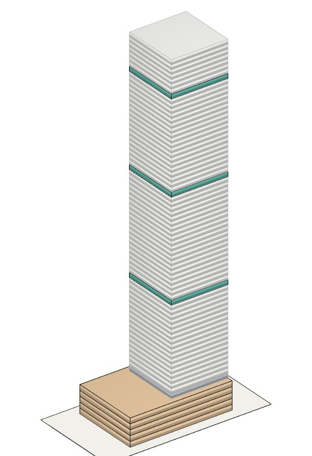<span>B1</span></li><li><span>B2b</span></li><li><span>B3b</span></li><li><span>B5a</span></li><li>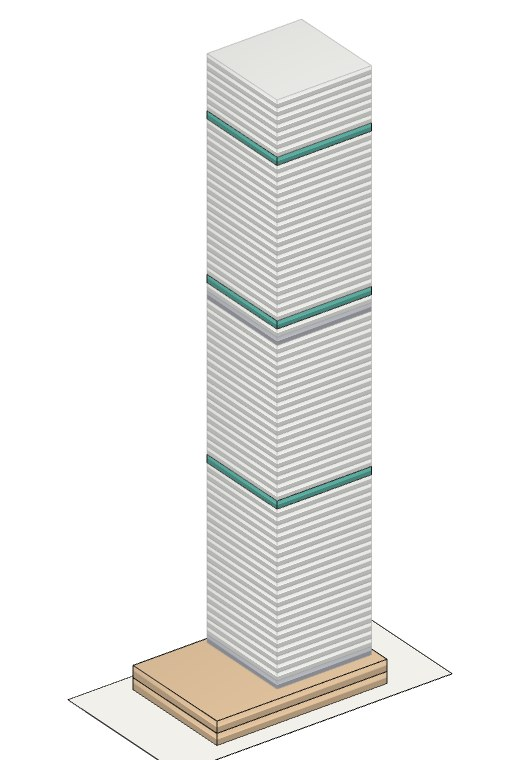<span>B7q</span></li></ol>
  
  <article class="step">
  <header><span class="stepno">Step 1</span><h3>Position: where the tower stands on the podium</h3><span class="tested">4 designs run</span></header>
  <div class="thumbs"><figure class=""><figcaption><b>B1</b> Tower A iteration 1, unchanged</figcaption></figure><figure class="">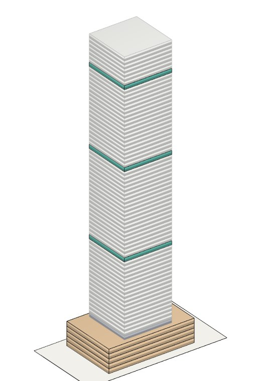<figcaption><b>B2a</b> Centred on the podium</figcaption></figure><figure class="on"><figcaption><b>B2b</b> True-north corner, 3 m step-back</figcaption></figure><figure class="">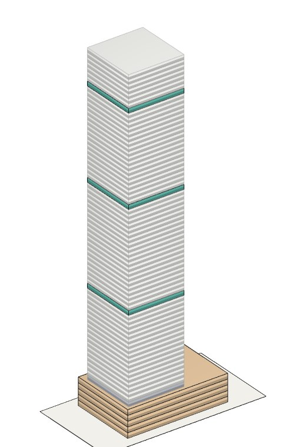<figcaption><b>B2c</b> True-south (station) corner, 3 m step-back</figcaption></figure></div>
  <div class="tablewrap"><table><thead><tr><th scope="col">Design</th><th scope="col">Open site in new shadow</th><th scope="col">New shadow on ground</th><th scope="col">Sun lost by neighbours, kWh</th><th scope="col">Ground calm to stand</th><th scope="col">Downwash</th><th scope="col">Streetwalls passing</th><th scope="col">Step-back</th></tr></thead><tbody><tr><th scope="row">B1</th><td>42%</td><td>8,964 m²</td><td>50,934</td><td>89%</td><td>High from SE; Low from WNW, W</td><td>0 of 4</td><td>0.0 m at the least</td></tr><tr><th scope="row">B2a</th><td>42%</td><td>8,660 m²</td><td>54,035</td><td>89%</td><td>High from SE; Medium from W; Low from WNW</td><td>0 of 4</td><td>5.0 m at the least</td></tr><tr class="chosen"><th scope="row">B2b ✓</th><td>42%</td><td>8,888 m²</td><td>51,613</td><td>89%</td><td>High from SE; Low from WNW, W</td><td>0 of 4</td><td>3.0 m at the least</td></tr><tr><th scope="row">B2c</th><td>42%</td><td>8,192 m²</td><td>53,245</td><td>89%</td><td>High from SE; Medium from W; Low from WNW</td><td>0 of 4</td><td>3.0 m at the least</td></tr></tbody></table></div>
  <dl class="why">
    <div><dt>What prompted it</dt><dd>The shared baseline (B1 = A1): step-back 0.0 m (Check), east streetwall 300 m (Fail), open-site shadow 42% (Fail).</dd></div>
    <div><dt>Options tested</dt><dd>Three positions, one variable: centred (B2a), the true-north corner (B2b), the station corner (B2c). Floor area is identical in all four.</dd></div>
    <div><dt>Choice</dt><dd>B2b. B2a is beaten by B2c on every decisive line. B1 fails the step-back guard. Between B2b and B2c the tie-break order goes ground comfort first (split), then neighbours' sun: B2b loses 51,613 kWh against B2c's 53,245.</dd></div>
    <div><dt>Who decided</dt><dd>Performance role agent's Pareto rule and tie-break order, set before the run. The tie band (equal reported values are ties, nothing wider) is my assumption, which the agent accepted.</dd></div>
    <div><dt>What it cost</dt><dd>B2b gives up 696 m² of ground shadow against B2c.</dd></div>
    <div class="q"><dt>Question for critics</dt><dd>Open-site shadow (42%) and ground comfort (89%) did not move across 37 m of tower movement. Are the screening tools able to tell positions apart, or is this choice resting on noise?</dd></div>
  </dl>
</article><article class="step">
  <header><span class="stepno">Step 2</span><h3>Podium height</h3><span class="tested">3 designs run</span></header>
  <div class="thumbs"><figure class=""><figcaption><b>B2b</b> True-north corner, 3 m step-back</figcaption></figure><figure class=""><figcaption><b>B3a</b> Podium 16 m + transfer, top at 20 m (on B2b)</figcaption></figure><figure class="on"><figcaption><b>B3b</b> Podium 12 m + transfer, top at 16 m (on B2b)</figcaption></figure></div>
  <div class="tablewrap"><table><thead><tr><th scope="col">Design</th><th scope="col">Non-res FSR</th><th scope="col">Homes</th><th scope="col">GFA m²</th><th scope="col">Open site in new shadow</th><th scope="col">New shadow on ground</th><th scope="col">Sun lost by neighbours, kWh</th><th scope="col">Streetwalls passing</th><th scope="col">Step-back</th><th scope="col">Land residual, C$ M</th></tr></thead><tbody><tr><th scope="row">B2b</th><td>8.28</td><td>621</td><td>199,500</td><td>42%</td><td>8,888 m²</td><td>51,613</td><td>0 of 4</td><td>3.0 m at the least</td><td>-1486.8</td></tr><tr><th scope="row">B3a</th><td>8.72</td><td>621</td><td>193,700</td><td>41%</td><td>8,400 m²</td><td>51,504</td><td>4 of 4</td><td>3.0 m at the least</td><td>-1373.9</td></tr><tr class="chosen"><th scope="row">B3b ✓</th><td>8.94</td><td>621</td><td>190,800</td><td>40%</td><td>8,156 m²</td><td>51,497</td><td>4 of 4</td><td>3.0 m at the least</td><td>-1317.5</td></tr></tbody></table></div>
  <dl class="why">
    <div><dt>What prompted it</dt><dd>B2b: streetwalls 0 of 4 pass at 28 m; non-residential area 95,000 m² (FSR 8.28).</dd></div>
    <div><dt>Options tested</dt><dd>Podium 16 m (B3a) or 12 m (B3b), tower top held at 300 m, with the freed floors going to office.</dd></div>
    <div><dt>Choice</dt><dd>B3b, at least as good as both others on every decisive line: 4 of 4 streetwalls, 102,500 m² non-residential, least shadow, best residual.</dd></div>
    <div><dt>Who decided</dt><dd>The agent's rule, applied by me and confirmed by the agent.</dd></div>
    <div><dt>What it cost</dt><dd>Total floor area falls by 8,700 m², and civic floor area from 27,000 to 10,800 m².</dd></div>
    <div class="q"><dt>Question for critics</dt><dd>A lower podium is the most effective move in tower B, and it costs public floor area. Does a performance-led tower undervalue the podium as public space?</dd></div>
  </dl>
</article><article class="step">
  <header><span class="stepno">Step 3</span><h3>Plate shape and orientation (no change)</h3><span class="tested">4 designs run</span></header>
  <div class="thumbs"><figure class="on"><figcaption><b>B3b</b> Podium 12 m + transfer, top at 16 m (on B2b)</figcaption></figure><figure class="">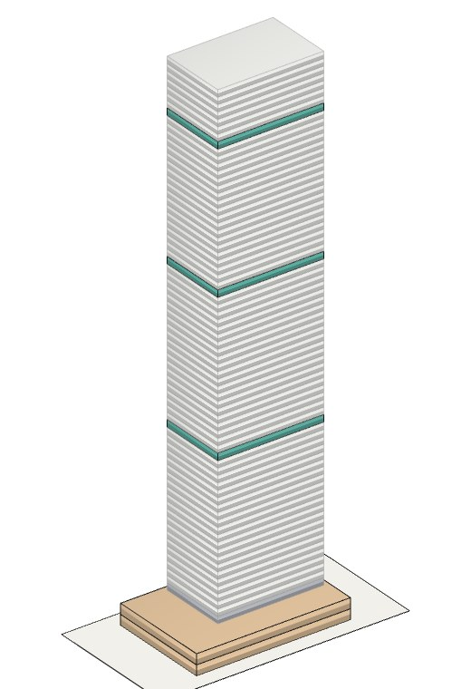<figcaption><b>B4a</b> 62 x 40 m, long faces SE/NW</figcaption></figure><figure class="">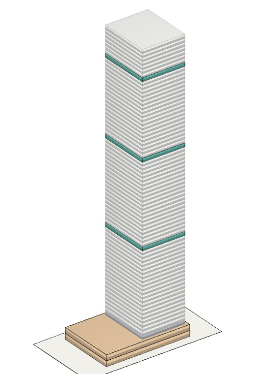<figcaption><b>B4b</b> 46 x 54 m, long faces SW/NE</figcaption></figure><figure class="">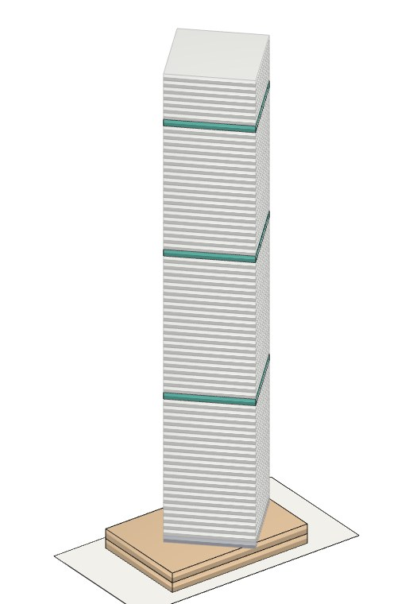<figcaption><b>B4c</b> 50 x 50 m turned 45 degrees to true north</figcaption></figure></div>
  <div class="tablewrap"><table><thead><tr><th scope="col">Design</th><th scope="col">Non-res FSR</th><th scope="col">Homes</th><th scope="col">GFA m²</th><th scope="col">Open site in new shadow</th><th scope="col">New shadow on ground</th><th scope="col">Sun lost by neighbours, kWh</th><th scope="col">Low-sun glare</th><th scope="col">Daylight autonomy</th><th scope="col">Sun exposure (ASE)</th><th scope="col">Heating demand (TEDI)</th><th scope="col">Streetwalls passing</th><th scope="col">Step-back</th></tr></thead><tbody><tr class="chosen"><th scope="row">B3b ✓</th><td>8.94</td><td>621</td><td>190,800</td><td>40%</td><td>8,156 m²</td><td>51,497</td><td>413 h a year</td><td>73%</td><td>15%</td><td>5.9 kWh/m²</td><td>4 of 4</td><td>3.0 m at the least</td></tr><tr><th scope="row">B4a</th><td>8.87</td><td>567</td><td>189,360</td><td>38%</td><td>7,840 m²</td><td>54,442</td><td>413 h a year</td><td>81%</td><td>22%</td><td>6.1 kWh/m²</td><td>4 of 4</td><td>3.0 m at the least</td></tr><tr><th scope="row">B4b</th><td>8.88</td><td>567</td><td>189,648</td><td>41%</td><td>8,272 m²</td><td>50,900</td><td>413 h a year</td><td>72%</td><td>15%</td><td>5.9 kWh/m²</td><td>4 of 4</td><td>3.0 m at the least</td></tr><tr><th scope="row">B4c</th><td>8.94</td><td>621</td><td>190,800</td><td>40%</td><td>8,240 m²</td><td>54,706</td><td>563 h a year</td><td>88%</td><td>23%</td><td>5.8 kWh/m²</td><td>2 of 4</td><td>-5.4 m at the least</td></tr></tbody></table></div>
  <dl class="why">
    <div><dt>What prompted it</dt><dd>Could an elongated or turned plate cut shadow and solar gain?</dd></div>
    <div><dt>Options tested</dt><dd>62 × 40 m with its long faces SE/NW (B4a), 46 × 54 m (B4b), and 50 × 50 m turned 45° (B4c).</dd></div>
    <div><dt>Choice</dt><dd>None kept. B4a and B4b drop to 567 homes (the 600 guard); B4c's corners pass the podium edge (step-back −5.4 m).</dd></div>
    <div><dt>Who decided</dt><dd>The agent's guards, applied by me and confirmed by the agent.</dd></div>
    <div><dt>What it cost</dt><dd>B4a had the least ground shadow of all B designs (7,840 m²) and better daylight (sDA 81%), and it was dropped.</dd></div>
    <div class="q"><dt>Question for critics</dt><dd>The homes were lost because the toolkit's core is a centred square, which wastes an elongated plate (tool proposal D7). Should a toolkit limitation be allowed to eliminate the best-performing shape?</dd></div>
  </dl>
</article><article class="step">
  <header><span class="stepno">Step 4</span><h3>Envelope (rule overridden)</h3><span class="tested">4 designs run</span></header>
  <div class="thumbs"><figure class=""><figcaption><b>B3b</b> Podium 12 m + transfer, top at 16 m (on B2b)</figcaption></figure><figure class="on"><figcaption><b>B5a</b> Shading devices by sun path</figcaption></figure><figure class=""><figcaption><b>B5b</b> Glass only: WWR and SHGC by face</figcaption></figure><figure class=""><figcaption><b>B5c</b> PV spandrels on the sun faces</figcaption></figure></div>
  <div class="tablewrap"><table><thead><tr><th scope="col">Design</th><th scope="col">Low-sun glare</th><th scope="col">Daylight autonomy</th><th scope="col">Sun exposure (ASE)</th><th scope="col">Heating demand (TEDI)</th></tr></thead><tbody><tr><th scope="row">B3b</th><td>413 h a year</td><td>73%</td><td>15%</td><td>5.9 kWh/m²</td></tr><tr class="chosen"><th scope="row">B5a ✓</th><td>269 h a year</td><td>62%</td><td>9%</td><td>6.2 kWh/m²</td></tr><tr><th scope="row">B5b</th><td>685 h a year</td><td>84%</td><td>12%</td><td>6.3 kWh/m²</td></tr><tr><th scope="row">B5c</th><td>685 h a year</td><td>85%</td><td>17%</td><td>6.2 kWh/m²</td></tr></tbody></table></div>
  <dl class="why">
    <div><dt>What prompted it</dt><dd>B3b: low-sun glare 413 h (Fail), sun exposure 15% (Check).</dd></div>
    <div><dt>Options tested</dt><dd>Shading by sun path (B5a), glass only with lower SHGC (B5b), PV spandrels on the sun faces (B5c). Geometry doesn't change, so the thumbnails are identical.</dd></div>
    <div><dt>Choice</dt><dd>The rule chose the default facade for 0.3 kWh/m² lower heating demand. The agent overrode it to B5a, because B5a turns a Fail into a Check (glare 269 h) and makes ASE pass (9%).</dd></div>
    <div><dt>Who decided</dt><dd>Performance role agent, override with a stated reason. It then changed its rule so that a pass/fail state change ranks first, after seeing the results.</dd></div>
    <div><dt>What it cost</dt><dd>Daylight autonomy drops from 73% to 62%; the material in the shading devices is counted nowhere.</dd></div>
    <div class="q"><dt>Question for critics</dt><dd>The rule was changed after the data was seen. Does that undermine the claim that the rules were set before the runs?</dd></div>
  </dl>
</article><article class="step">
  <header><span class="stepno">Step 5</span><h3>Program for the FSR gate</h3><span class="tested">4 designs run</span></header>
  <div class="thumbs"><figure class=""><figcaption><b>B3b</b> Podium 12 m + transfer, top at 16 m (on B2b)</figcaption></figure><figure class="on">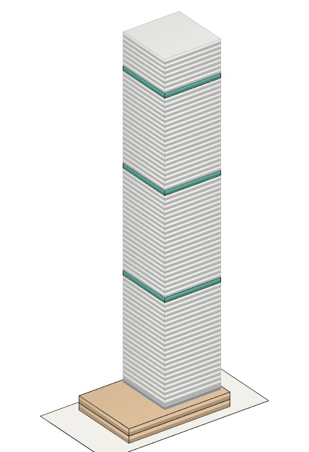<figcaption><b>B6a</b> Retail on podium L1</figcaption></figure><figure class=""><figcaption><b>B6b</b> Retail on podium L1-L2</figcaption></figure><figure class=""><figcaption><b>B6c</b> Retail on L1 + hotel band</figcaption></figure></div>
  <div class="tablewrap"><table><thead><tr><th scope="col">Design</th><th scope="col">Non-res FSR</th><th scope="col">Homes</th><th scope="col">GFA m²</th><th scope="col">Land residual, C$ M</th></tr></thead><tbody><tr><th scope="row">B3b</th><td>8.94</td><td>621</td><td>190,800</td><td>-1317.5</td></tr><tr class="chosen"><th scope="row">B6a ✓</th><td>9.41</td><td>621</td><td>190,800</td><td>-1250.1</td></tr><tr><th scope="row">B6b</th><td>9.88</td><td>621</td><td>190,800</td><td>-1223.1</td></tr><tr><th scope="row">B6c</th><td>9.41</td><td>621</td><td>190,800</td><td>-1228.0</td></tr></tbody></table></div>
  <dl class="why">
    <div><dt>What prompted it</dt><dd>B3b reached 8.94 FSR, short of 9.0.</dd></div>
    <div><dt>Options tested</dt><dd>Retail on podium L1 (B6a), retail on L1–L2 (B6b), or L1 plus a ten-floor hotel band (B6c).</dd></div>
    <div><dt>Choice</dt><dd>B6a. All three pass the gate; B6c is dominated by B6b; B6a beats B6b on the energy tier (TEUI 63.6 vs 64.0 kWh/m²).</dd></div>
    <div><dt>Who decided</dt><dd>The agent's rule, applied by me and confirmed by the agent.</dd></div>
    <div><dt>What it cost</dt><dd>B6b had the larger FSR margin (9.88) and the better residual. B6a wins on an energy difference of 0.4 kWh/m².</dd></div>
    <div class="q"><dt>Question for critics</dt><dd>B6a's small FSR margin came back as a problem in the next step. Should the gate margin have been a decisive metric here?</dd></div>
  </dl>
</article><article class="step">
  <header><span class="stepno">Step 6</span><h3>Final: transit and the plant floor check</h3><span class="tested">3 designs run</span></header>
  <div class="thumbs"><figure class=""><figcaption><b>B7</b> Final: B6a program on the B5a envelope, transit link declare</figcaption></figure><figure class=""><figcaption><b>B7p</b> B7 with plant and outrigger floors at +96 and +180 m</figcaption></figure><figure class="on"><figcaption><b>B7q</b> B7 with one plant and outrigger floor at +180 m (fallback ru</figcaption></figure></div>
  <div class="tablewrap"><table><thead><tr><th scope="col">Design</th><th scope="col">Non-res FSR</th><th scope="col">Homes</th><th scope="col">GFA m²</th></tr></thead><tbody><tr><th scope="row">B7</th><td>9.41</td><td>621</td><td>190,800</td></tr><tr><th scope="row">B7p</th><td>8.97</td><td>621</td><td>190,800</td></tr><tr class="chosen"><th scope="row">B7q ✓</th><td>9.19</td><td>621</td><td>190,800</td></tr></tbody></table></div>
  <dl class="why">
    <div><dt>What prompted it</dt><dd>The FSR margin was about 4,700 m², and plant floors had not been placed yet.</dd></div>
    <div><dt>Options tested</dt><dd>B7 (B6a program on the B5a envelope, transit declared), then B7p with two plant and outrigger floors, then B7q with one.</dd></div>
    <div><dt>Choice</dt><dd>B7q. Two plant floors fail the gate (8.97); one passes (9.19). The agent's fallback, if two prove necessary, is retail on podium L2 (B6b).</dd></div>
    <div><dt>Who decided</dt><dd>Performance role agent's fallback rule.</dd></div>
    <div><dt>What it cost</dt><dd>Nothing sizes the plant, so whether one floor is enough is unknown.</dd></div>
    <div class="q"><dt>Question for critics</dt><dd>Should the tower be presented with one plant floor when the toolkit cannot say whether two are needed?</dd></div>
  </dl>
</article>
</section>
<section class="tower" id="tower-c">
  <header class="towerhead"><p class="eyebrow">A unit, a rule, a family, a pick</p><h2>Tower C · parametric</h2>
  <p class="count"><b>10</b> designs run through the toolkit · winning path: C1 → C2b → C3a → C5 → C6</p></header>
  <ol class="path"><li>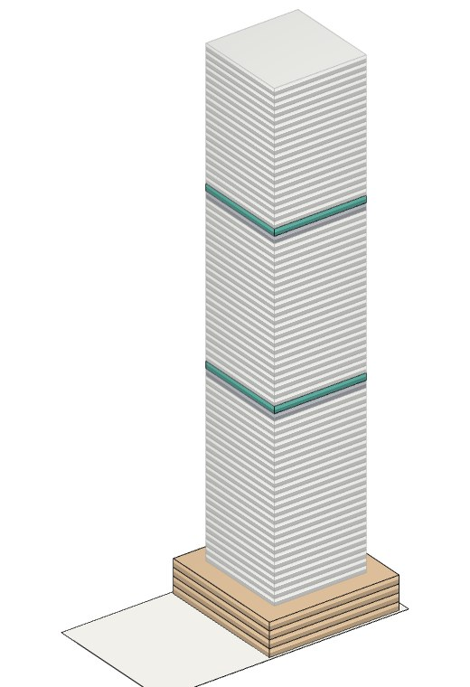<span>C1</span></li><li>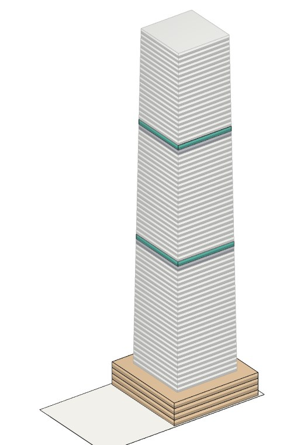<span>C2b</span></li><li><span>C3a</span></li><li>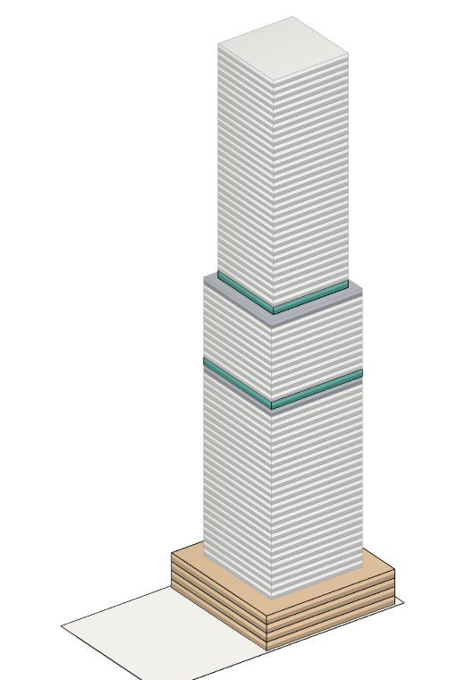<span>C5</span></li><li>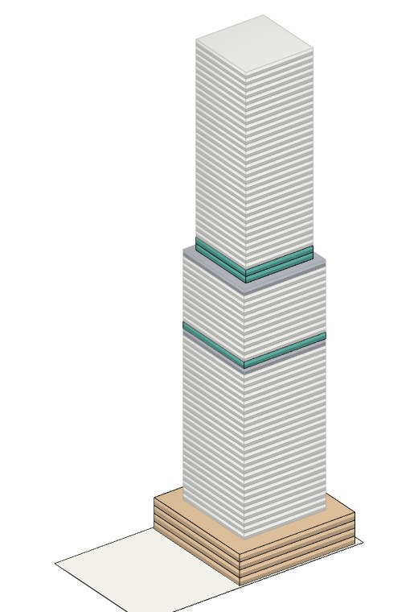<span>C6</span></li></ol>
  <div class="box"><p class="eyebrow">Independent critic</p><p>Gate on C5: <b>FAIL</b>. The conditions were to stop claiming the terrace as an "outdoor room" while its wind is unknown, publish every Fail and Check line, run a corrective variant (C6), fill in or mark the cultural-context lines, mark "600 homes" as a team assumption, and show which steps AI drafted and which a person decided. C6 met the numeric conditions; the text conditions are in Tower_C.json.</p></div>
  <article class="step">
  <header><span class="stepno">Step 1</span><h3>The unit</h3><span class="tested">1 design run</span></header>
  <div class="thumbs"><figure class="on"><figcaption><b>C1</b> Unit, core and podium (box)</figcaption></figure></div>
  <div class="tablewrap"><table><thead><tr><th scope="col">Design</th><th scope="col">Non-res FSR</th><th scope="col">Homes</th><th scope="col">GFA m²</th><th scope="col">Open site in new shadow</th><th scope="col">New shadow on ground</th><th scope="col">Sun lost by neighbours, kWh</th><th scope="col">Mid-block link open to sky</th><th scope="col">Sky-room exit stairs</th></tr></thead><tbody><tr class="chosen"><th scope="row">C1 ✓</th><td>10.41</td><td>924</td><td>227,224</td><td>8%</td><td>6,580 m²</td><td>53,366</td><td>Passes under the tower</td><td>1,423 people → 5,692 mm per stair</td></tr></tbody></table></div>
  <dl class="why">
    <div><dt>What prompted it</dt><dd>Starting point (designer's choice): a square ring of floor around a fixed 24 m core, 15 m deep at the base. The podium is 76 × 76 m retail at the far end of the block, leaving the station corner as an open plaza.</dd></div>
    <div><dt>Options tested</dt><dd>One unit. Its surplus (FSR 10.41, 924 homes) is the budget the family can spend.</dd></div>
    <div><dt>Choice</dt><dd>Reference. The core is short (576 m² modelled against 713 m² needed, Fail).</dd></div>
    <div><dt>Who decided</dt><dd>Parametric role agent. It chose a square because I told it the toolkit only has rectangles (see "Why boxes" above).</dd></div>
    <div><dt>What it cost</dt><dd>A very large plate: 2,916 m², 54 m wide.</dd></div>
    <div class="q"><dt>Question for critics</dt><dd>Would a different unit (a polygon or a round plate, both possible in the toolkit) have changed the whole family?</dd></div>
  </dl>
</article><article class="step">
  <header><span class="stepno">Step 2</span><h3>Taper family</h3><span class="tested">4 designs run</span></header>
  <div class="thumbs"><figure class=""><figcaption><b>C1</b> Unit, core and podium (box)</figcaption></figure><figure class=""><figcaption><b>C2a</b> Taper S 0.92</figcaption></figure><figure class="on"><figcaption><b>C2b</b> Taper S 0.85</figcaption></figure><figure class="">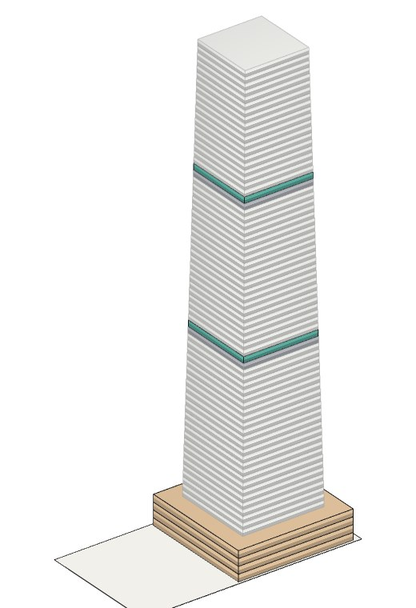<figcaption><b>C2c</b> Taper S 0.78 (depth edge)</figcaption></figure></div>
  <div class="tablewrap"><table><thead><tr><th scope="col">Design</th><th scope="col">Non-res FSR</th><th scope="col">Homes</th><th scope="col">GFA m²</th><th scope="col">Open site in new shadow</th><th scope="col">New shadow on ground</th><th scope="col">Sun lost by neighbours, kWh</th></tr></thead><tbody><tr><th scope="row">C1</th><td>10.41</td><td>924</td><td>227,224</td><td>8%</td><td>6,580 m²</td><td>53,366</td></tr><tr><th scope="row">C2a</th><td>9.93</td><td>786</td><td>211,330</td><td>8%</td><td>6,556 m²</td><td>51,922</td></tr><tr class="chosen"><th scope="row">C2b ✓</th><td>9.54</td><td>675</td><td>198,137</td><td>8%</td><td>6,544 m²</td><td>49,998</td></tr><tr><th scope="row">C2c</th><td>9.16</td><td>576</td><td>185,610</td><td>8%</td><td>6,516 m²</td><td>48,140</td></tr></tbody></table></div>
  <dl class="why">
    <div><dt>What prompted it</dt><dd>Spend C1's surplus on a slimmer top.</dd></div>
    <div><dt>Options tested</dt><dd>Top plate scale 0.92, 0.85 and 0.78, one parameter.</dd></div>
    <div><dt>Choice</dt><dd>All dropped. No terraces, the taper loses area against tiers at the same scale, and C2c falls to 576 homes. C2b stays as the reference trend.</dd></div>
    <div><dt>Who decided</dt><dd>Parametric role agent.</dd></div>
    <div><dt>What it cost</dt><dd>None carried forward.</dd></div>
    <div class="q"><dt>Question for critics</dt><dd>Shadow (8%) and wind (91%) did not change across the whole family. Is the street even part of this tower's argument?</dd></div>
  </dl>
</article><article class="step">
  <header><span class="stepno">Step 3</span><h3>Tier family</h3><span class="tested">3 designs run</span></header>
  <div class="thumbs"><figure class="on"><figcaption><b>C3a</b> 2 tiers at S 0.85</figcaption></figure><figure class=""><figcaption><b>C3b</b> 3 tiers at S 0.85</figcaption></figure><figure class=""><figcaption><b>C3c</b> 4 tiers at S 0.85</figcaption></figure></div>
  <div class="tablewrap"><table><thead><tr><th scope="col">Design</th><th scope="col">Non-res FSR</th><th scope="col">Homes</th><th scope="col">GFA m²</th></tr></thead><tbody><tr class="chosen"><th scope="row">C3a ✓</th><td>9.84</td><td>682</td><td>201,330</td></tr><tr><th scope="row">C3b</th><td>9.84</td><td>693</td><td>200,557</td></tr><tr><th scope="row">C3c</th><td>9.76</td><td>681</td><td>201,297</td></tr></tbody></table></div>
  <dl class="why">
    <div><dt>What prompted it</dt><dd>Tiers keep the full plate at the base, so they keep more area than a taper.</dd></div>
    <div><dt>Options tested</dt><dd>2, 3 and 4 tiers at the same top scale.</dd></div>
    <div><dt>Choice</dt><dd>C3a, 2 tiers, is the parent: 682 homes, FSR 9.84, one 4.05 m terrace, but away from the lift nodes.</dd></div>
    <div><dt>Who decided</dt><dd>Parametric role agent.</dd></div>
    <div><dt>What it cost</dt><dd>More tiers give thinner ledges (about 1.3–2.1 m), which are balconies, not rooms.</dd></div>
    <div class="q"><dt>Question for critics</dt><dd>Does the method prefer fewer, bigger steps for a reason the jury would share, or because of the 2.5 m "outdoor room" threshold the designer set?</dd></div>
  </dl>
</article><article class="step">
  <header><span class="stepno">Step 4</span><h3>Combine the two parameters</h3><span class="tested">1 design run</span></header>
  <div class="thumbs"><figure class=""><figcaption><b>C4</b> 3 tiers at S 0.78</figcaption></figure></div>
  <div class="tablewrap"><table><thead><tr><th scope="col">Design</th><th scope="col">Non-res FSR</th><th scope="col">Homes</th><th scope="col">GFA m²</th></tr></thead><tbody><tr><th scope="row">C4</th><td>9.61</td><td>528</td><td>188,939</td></tr></tbody></table></div>
  <dl class="why">
    <div><dt>What prompted it</dt><dd>Try both trends together: 3 tiers at a 0.78 top scale.</dd></div>
    <div><dt>Options tested</dt><dd>One combination.</dd></div>
    <div><dt>Choice</dt><dd>Dropped: 528 homes.</dd></div>
    <div><dt>Who decided</dt><dd>Parametric role agent.</dd></div>
    <div><dt>What it cost</dt><dd>The domain edge for homes turned out to be jagged: the designer's unsaved probe runs found 583, 649, 627 and 572 homes for small setback changes.</dd></div>
    <div class="q"><dt>Question for critics</dt><dd>The probe runs were not saved (the critic flagged this). Should unsaved runs count as evidence at all?</dd></div>
  </dl>
</article><article class="step">
  <header><span class="stepno">Step 5</span><h3>Put the public node on the step</h3><span class="tested">2 designs run</span></header>
  <div class="thumbs"><figure class=""><figcaption><b>C3a</b> 2 tiers at S 0.85</figcaption></figure><figure class="on"><figcaption><b>C5</b> 2 tiers at S 0.82, public sky room on the step</figcaption></figure></div>
  <div class="tablewrap"><table><thead><tr><th scope="col">Design</th><th scope="col">Non-res FSR</th><th scope="col">Homes</th><th scope="col">GFA m²</th><th scope="col">Mid-block link open to sky</th><th scope="col">Sky-room exit stairs</th><th scope="col">Weight irregularity</th></tr></thead><tbody><tr><th scope="row">C3a</th><td>9.84</td><td>682</td><td>201,330</td><td>Passes under the tower</td><td>931 people → 3,724 mm per stair</td><td>198% between L4 and L5</td></tr><tr class="chosen"><th scope="row">C5 ✓</th><td>9.74</td><td>625</td><td>196,655</td><td>Passes under the tower</td><td>842 people → 3,368 mm per stair</td><td>198% between L4 and L5</td></tr></tbody></table></div>
  <dl class="why">
    <div><dt>What prompted it</dt><dd>C4 under 600 homes; C3a's terrace sat away from the lift nodes.</dd></div>
    <div><dt>Options tested</dt><dd>Setback 0.18 (two tiers), with the plant floor and the public sky room moved onto the step at +167 / +171 m.</dd></div>
    <div><dt>Choice</dt><dd>Selected by the designer: 625 homes, FSR 9.74, one 4.86 m terrace opening off the public sky room.</dd></div>
    <div><dt>Who decided</dt><dd>Parametric role agent. Then an independent critic agent reviewed it: FAIL.</dd></div>
    <div><dt>What it cost</dt><dd>The critic found the mid-block link passing under the tower (Fail), sky-room exit stairs at 3,368 mm (Check), visitors on the tenants' shuttle, and nine Fail lines missing from my summary table.</dd></div>
    <div class="q"><dt>Question for critics</dt><dd>The terrace is the main gain, and its wind is "Not assessed". Can a design be selected for a gain the toolkit cannot check?</dd></div>
  </dl>
</article><article class="step">
  <header><span class="stepno">Step 6</span><h3>Critic&#x27;s correction</h3><span class="tested">2 designs run</span></header>
  <div class="thumbs"><figure class=""><figcaption><b>C5</b> 2 tiers at S 0.82, public sky room on the step</figcaption></figure><figure class="on"><figcaption><b>C6</b> C5 corrected: link in the plaza, own public lifts, two-store</figcaption></figure></div>
  <div class="tablewrap"><table><thead><tr><th scope="col">Design</th><th scope="col">Non-res FSR</th><th scope="col">Homes</th><th scope="col">GFA m²</th><th scope="col">Mid-block link open to sky</th><th scope="col">Sky-room exit stairs</th></tr></thead><tbody><tr><th scope="row">C5</th><td>9.74</td><td>625</td><td>196,655</td><td>Passes under the tower</td><td>842 people → 3,368 mm per stair</td></tr><tr class="chosen"><th scope="row">C6 ✓</th><td>9.74</td><td>610</td><td>196,655</td><td>Clear of the buildings, open to the sky</td><td>431 people → 1,723 mm per stair</td></tr></tbody></table></div>
  <dl class="why">
    <div><dt>What prompted it</dt><dd>The critic's conditions on C5.</dd></div>
    <div><dt>Options tested</dt><dd>Link moved into the plaza (x −13), sky room on its own lifts with a posted limit of 281, level 44 civic.</dd></div>
    <div><dt>Choice</dt><dd>Selected, by the critic's test set before the run: FSR ≥ 9.0, homes ≥ 600, link passes, no verified pass turns into a fail. Result: 610 homes, FSR 9.74, link Pass, sky-room exits Pass.</dd></div>
    <div><dt>Who decided</dt><dd>Critic agent (independent of the designer).</dd></div>
    <div><dt>What it cost</dt><dd>15 homes (625 → 610).</dd></div>
    <div class="q"><dt>Question for critics</dt><dd>Office lifts still fail their handling-capacity test and terrace wind is unknown. Is C6 ready to present, or only less wrong than C5?</dd></div>
  </dl>
</article>
</section>

<section class="box" id="plant">
  <p class="eyebrow">Open for all three towers</p>
  <h2>Plant floors: does each tower still pass?</h2>
  <p>The toolkit's systems estimate (a team preset with no sourced value) asks for 3–4 plant floors in every tower. A7 models 1; B7q and C6 model 2. Assuming each extra plant floor replaces one office floor, A7 (9,571 m² above the 9.0 requirement) and C6 (8,477 m²) still pass with 3–4. B7q (2,187 m² above) fails with one more. This is team arithmetic on the toolkit's areas, not a check result.</p>
</section>

<section class="box" id="coordinator">
  <p class="eyebrow">Transparency</p>
  <h2>Where I, the coordinator, shaped the outcome</h2>
  <p>The three designers and the two critics were AI role agents. I wrote their brief, ran every design through the toolkit, and applied tower B's rules between its rounds. These are the points where my choices, not theirs, affected the result.</p>
  <ul class="me"><li><b>I limited the form vocabulary.</b><span>The brief I wrote for the three role agents described the toolkit as &quot;a tower = stacked rectangular blocks&quot; plus four forms (taper, twist, tiers, shifted stack). I left out the drawing tools (polygons, circles, Boolean cuts and holes) and imported models (any curved form, cut floor by floor). My run harness only accepted the parametric path. This is the main reason all three towers are boxes.</span></li><li><b>I set tower A&#x27;s starting assumptions.</b><span>Where the scheme was silent I chose: podium centred, &quot;right side&quot; = +x, a 4.0 m floor-to-floor so the public floors fall on floor lines, a transfer level at +24–28 m, upper plates held at 50 × 50 m (A-1 to A-13 in tower-A/LOG.md).</span></li><li><b>I set tower B&#x27;s tie band.</b><span>Equal reported values are ties, nothing wider. The agent accepted it.</span></li><li><b>I made and fixed a mapping slip.</b><span>A3–A5 first ran with the sky room on the shared shuttle and 12 h instead of the architect&#x27;s own lifts and 16 h; I re-ran them.</span></li><li><b>I applied tower B&#x27;s rules mechanically for steps B3–B6.</b><span>The agent reviewed and confirmed three steps and overrode one (B5).</span></li><li><b>My summary table hid Fail lines.</b><span>It filtered by check family, so nine of C5&#x27;s Fail lines were missing; the critic caught it. The JSON files now list every Fail and Check line.</span></li><li><b>My harness saved the wrong public realm into project files.</b><span>The results were computed with each design’s own public-realm inputs, but the saved project files carried the demo’s; the tower A critic caught it, and it is fixed for every file written since.</span></li><li><b>My vocabulary left out stair placement.</b><span>The toolkit can put exit stairs at the core edge or the plate edge (the Core tool offers it), but I did not list it, so every tower kept the stairs in the core and exit separation fails in all three.</span></li><li><b>I placed the core in the exported models.</b><span>Under the tower shaft. The toolkit&#x27;s own export puts it at the tower origin, outside an offset shaft (toolkit issue T8).</span></li></ul>
  <p>No step has been approved by a person yet. Every decision on this page is open to your review.</p>
</section>
</section>
<section class="tab" data-tab="round-2" id="round-2"><header class="r2head"><p class="eyebrow">Round 2 · 20–21 Nov, night</p><h2>Ten iterations per tower, starting with the non-box test</h2><p class="lede">Each tower first tests one non-box move against its own box, then keeps developing by its own logic. After every design, an AI consultant in a rotating role reviews it; the BLOCKER or MAJOR finding sets the next change.</p>
<p>Free forms go through the toolkit's import route and are compared with their box sent through the same route. Numbers marked <i>harness arithmetic</i> are team sums on the true storey outlines, not toolkit checks.</p></header><section class="tower"><header class="towerhead"><p class="eyebrow">Concept first: &quot;the canopy gap&quot;</p><h3 class="th">Tower A · architect-led</h3><p class="count">14 new designs run in round 2 · path: A7 (box) → A8b → A9a → A10a → A11a → A12a → A13a → A14a → A15a → A16a → A17a</p></header><ol class="changes"><li class="change" id="r-A2-1">
  
  <div class="cbody"><p class="cno"><b>1</b> · A8b <span class="chip" style="--c:#00a9d6;--i:#006b85;--s:#e7f7fc">Site</span><span class="chip" style="--c:#ff6b4a;--i:#a93920;--s:#fff0eb">Form</span></p>
  <h4>The non-box test: an open garden through the tower (after CapitaSpring)</h4><p class="reason">Test the non-box move R2 ranked first for A: open the tower where people gather, as CapitaSpring does, and keep two storeys (A8b) because three break the gate with 3 plant floors.</p><p class="cmeta">margin +7,071 m² · 621 homes · 15 Fail lines · off-centre 0.09 m</p><details class="full"><summary>Full record: options, choice, cost, checks, reviews</summary>
  <div class="thumbs"><figure class="">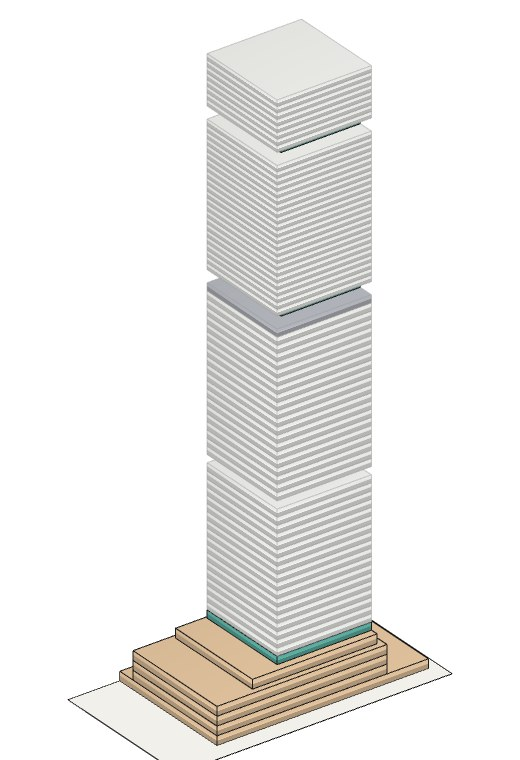<figcaption><b>A7-imp</b> A6 corrected: link in the open forum, finer street edge (the same box </figcaption></figure><figure class="">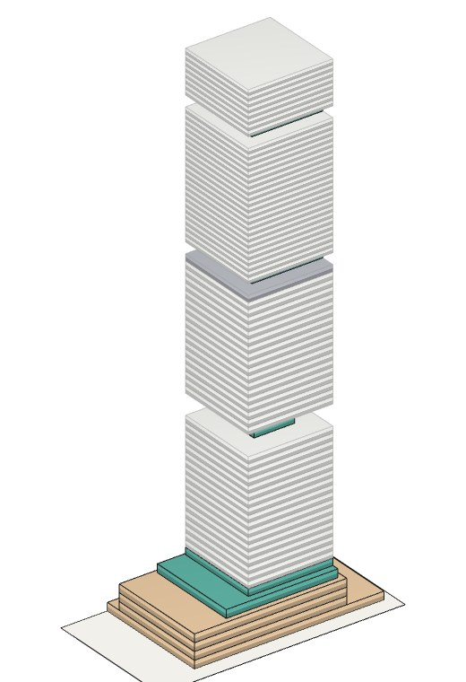<figcaption><b>A8a</b> A7 + open garden through the tower, +100 to +112 m (three storeys)</figcaption></figure><figure class="on"><figcaption><b>A8b</b> A7 + open garden through the tower, +100 to +108 m (two storeys)</figcaption></figure></div>
  <div class="tablewrap"><table><thead><tr><th scope="col">Design</th><th scope="col">Non-res FSR</th><th scope="col">Margin m²</th><th scope="col">Margin, 3 plant floors</th><th scope="col">Homes (true plates)</th><th scope="col">Weight irregularity</th><th scope="col">Plate types</th><th scope="col">Off-centre m</th><th scope="col">Envelope / GFA</th><th scope="col">Fail lines</th><th scope="col">Check lines</th></tr></thead><tbody><tr><th scope="row">A7-imp</th><td>9.83</td><td>+9,571</td><td>+4,571</td><td>621</td><td>149% LL4 and L5</td><td>3</td><td>0.09</td><td>0.341</td><td>14</td><td>64</td></tr><tr><th scope="row">A8a</th><td>9.40</td><td>+4,571</td><td>-429</td><td>621</td><td>434% LL24 and L25</td><td>4</td><td>0.1</td><td>0.35</td><td>15</td><td>64</td></tr><tr class="chosen"><th scope="row">A8b ✓</th><td>9.62</td><td>+7,071</td><td>+2,071</td><td>621</td><td>434% LL24 and L25</td><td>4</td><td>0.09</td><td>0.349</td><td>15</td><td>65</td></tr></tbody></table></div>
  <dl class="why">
    <div><dt>What changed</dt><dd>The work-commons notch at +100 m and the office storeys above it become an open garden: three storeys (A8a, +100 to +112 m) or two (A8b, +100 to +108 m). Each open storey keeps only the 24 m core, counted as amenity (team assumption); the garden is outdoor and not floor area. Nothing else changes.</dd></div>
    <div><dt>Why</dt><dd>The non-box iteration still owed from the last round. R2 ranked this move first for A: CapitaSpring runs four open, planted, public levels mid-tower beside office plates, and here it makes the concept, "the canopy gap", literal at a public floor.</dd></div>
    <div><dt>Options tested</dt><dd>A8a (three storeys) and A8b (two storeys), each against A7 sent through the same import route (A7-imp). <b>Route difference</b>, A7 parametric → A7-imp, counted as part of the cost of switching: core continuity Pass → Unknown; podium step toward the wind 25.7 / 35.0 / 7.0 m → 0 m; roof PV 882 → 200 kWp, so TEUI net of PV 63.0 → 65.1 kWh/m²·yr; ground calm 90% → 89%; site peak 4.5 → 4.8 m/s. Every other line matched.</dd></div>
    <div><dt>Choice</dt><dd><b>Switch, to A8b.</b> A8a was rejected: its margin turns negative once the 3 plant floors the toolkit asks for are counted (−429 m², harness arithmetic).</dd></div>
    <div><dt>Who decided</dt><dd>Coordinator, applying A's architect-led method, after the structural and wind reviews. Both recommended A8b with conditions.</dd></div>
    <div><dt>Cost and trade-off</dt><dd>Margin 9,571 → 7,071 m² (A8b loses one 2,500 m² office storey; A8a two). With 3 plant floors: +2,071 m² (A8b), −429 m² (A8a) (harness arithmetic). Weight irregularity Pass 149% → Check 434% at L24/L25: the structural review reads this as a modelling artefact, because the garden deck carries soil and trees while the toolkit takes storey weight as floor area. Envelope per floor area Check → Fail (0.39 → 0.40). Plate types 3 → 4. The all-round open deck faces 64% of the strong-wind hours (harness arithmetic).</dd></div>
    <div class="wide"><dt>Check results (value · state · source)</dt><dd><ul class="checks"><li><span class="st warn">Check</span> <b>Non-residential FSR ≥ 9.0</b> 9.62 (A8b)<span class="src">VTC brief p.16, p.19</span></li><li><span class="st warn">Check</span> <b>Weight irregularity (Type 2)</b> 434% between L24 and L25<span class="src">NBC 2020 Div B 4.1.8, Table 4.1.8.6</span></li><li><span class="st bad">Fail</span> <b>Envelope per floor area</b> 0.40<span class="src">Sun &amp; Wind Studio engines, CWEC 2020 Vancouver Intl</span></li><li><span class="st bad">Fail</span> <b>Windiest roof or terrace</b> 9.6 m/s at 300 m<span class="src">Sun &amp; Wind Studio engines, CWEC 2020 Vancouver Intl</span></li><li><span class="st unk">Unknown</span> <b>Wind on an outdoor terrace</b> Not assessed<span class="src">Research P03-M08</span></li><li><span class="st unk">Unknown</span> <b>Core walls continuous to the foundation</b> core not modelled for imported massing<span class="src">NBC 2020 Div B 4.1.8, Table 4.1.8.6</span></li></ul></dd></div>
    <div class="wide"><dt>Reviews of this design (they set the next change)</dt><dd><div class="reviews"><div class="rev"><p class="role">Structural engineer · switch to A8b with conditions</p><ul><li><b>MAJOR</b> The 434% weight reading is a modelling artefact: the garden deck at +100 m carries soil and trees and is likely the heaviest level. <i>Fix:</i> declare the garden load; the check does not separate A7 from A8.</li><li><b>MAJOR</b> "Core only" implies the floors above hang on a transfer. <i>Fix:</i> declare perimeter columns through the garden; they are unbraced over 8 m (A8b) or 12 m (A8a) instead of 4 m.</li><li><b>MAJOR</b> <i>Fix:</i> make the storey above the garden an outrigger and plant storey: outriggerHeights and plantHeights [108, 184].</li></ul><p class="file">tower-A/iter/review_R1_structural.md</p></div><div class="rev"><p class="role">Wind and microclimate engineer · switch to A8b only with the windward faces enclosed</p><ul><li><b>BLOCKER</b> A public garden open all round at +100 m with no wind check; free wind there about 7.3 m/s by the toolkit's own power law (reviewer's arithmetic). <i>Fix:</i> a "garden wind wall" polygon enclosing the NW and SW faces, leaving an open L of 793 m² on the SE and NE faces.</li><li><b>MAJOR</b> No comfort target. <i>Fix:</i> adopt the Toronto 2022 table the toolkit already cites (sitting in summer for seats, standing in every season for walks).</li><li><b>MAJOR</b> Do not claim the opening reduces sway across the wind: openings work best at 0.6–0.8 H; this one sits at 0.33–0.37 H.</li></ul><p class="file">tower-A/iter/review_R1_wind.md</p></div></div></dd></div>
    <div class="wide"><dt>Toolkit map</dt><dd><b>Design node</b> design.site, design.massing · <b>prompted by</b> research R2, built.wind-screen (corners High) · <b>judged by</b> built.vtc-rules, built.fsr, built.structure, built.sw-form, built.sw-wind-height, built.life-safety · <b>tools</b> rhino-import (free form), massing (voids)</dd></div>
    <div class="q"><dt>Open question for critics</dt><dd>The garden costs one office storey and gives the street a readable gap. Does a gap at a third of the height read as "the canopy gap", or should it sit higher, at 0.6–0.8 H, where it could also vent the tower?</dd></div>
  </dl></details></div></li><li class="change" id="r-A2-2">
  
  <div class="cbody"><p class="cno"><b>2</b> · A9a <span class="chip" style="--c:#ff6b4a;--i:#a93920;--s:#fff0eb">Form</span><span class="chip" style="--c:#8b5cf6;--i:#5b21b6;--s:#f3eeff">Schematic</span></p>
  <h4>Wall the garden against the wind; put an outrigger floor above it</h4><p class="reason">The wind reviewer blocked a public garden open on all sides, so its windward faces became a winter garden; the structural reviewer asked for an outrigger floor directly above the gap.</p><p class="cmeta">margin +4,571 m² · 621 homes · 14 Fail lines · off-centre 0.23 m</p><details class="full"><summary>Full record: options, choice, cost, checks, reviews</summary>
  <div class="thumbs"><figure class=""><figcaption><b>A8b</b> A7 + open garden through the tower, +100 to +108 m (two storeys)</figcaption></figure><figure class="on"><figcaption><b>A9a</b> A8b + garden wind wall (NW and SW faces enclosed (glazed winter garden</figcaption></figure><figure class="">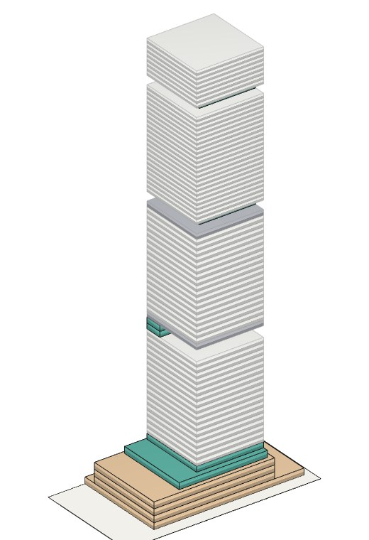<figcaption><b>A9b</b> A8b + garden wind wall (NW face only enclosed, open U toward the forum</figcaption></figure></div>
  <div class="tablewrap"><table><thead><tr><th scope="col">Design</th><th scope="col">Non-res FSR</th><th scope="col">Margin m²</th><th scope="col">Margin, 3 plant floors</th><th scope="col">Homes (true plates)</th><th scope="col">Weight irregularity</th><th scope="col">Plate types</th><th scope="col">Off-centre m</th><th scope="col">Envelope / GFA</th><th scope="col">Fail lines</th><th scope="col">Check lines</th></tr></thead><tbody><tr><th scope="row">A8b</th><td>9.62</td><td>+7,071</td><td>+2,071</td><td>621</td><td>434% LL24 and L25</td><td>4</td><td>0.09</td><td>0.349</td><td>15</td><td>65</td></tr><tr class="chosen"><th scope="row">A9a ✓</th><td>9.40</td><td>+4,571</td><td>+2,071</td><td>621</td><td>149% LL4 and L5</td><td>4</td><td>0.23</td><td>0.344</td><td>14</td><td>65</td></tr><tr><th scope="row">A9b</th><td>9.40</td><td>+4,571</td><td>+2,071</td><td>621</td><td>204% LL24 and L25</td><td>4</td><td>0.19</td><td>0.347</td><td>14</td><td>66</td></tr></tbody></table></div>
  <dl class="why">
    <div><dt>What changed</dt><dd>The open garden at +100 to +108 m keeps a glazed enclosure on its windward side (a "garden wind wall" part, polygon points as design choices). The rest stays open deck. L27 (+108 m), the storey above the garden, becomes an outrigger and plant storey, with L46 as the upper one. Columns through the garden and the garden's soil load are declared in the record; the toolkit does not model either.</dd></div>
    <div><dt>Why</dt><dd>Round-1 reviews: the wind BLOCKER (open all round, no comfort check) and the structural MAJORs (no transfer: columns through the garden; outrigger directly above it).</dd></div>
    <div><dt>Options tested</dt><dd>A9a: NW and SW faces enclosed as a winter garden, open L of 793 m² facing SE and NE. A9b: NW face only enclosed, open U of 1,274 m² toward the forum (SW) and the high street (SE).</dd></div>
    <div><dt>Choice</dt><dd><b>A9a.</b> Weight irregularity back to Pass (149%, at the podium junction); envelope back to Check (0.39); the deck faces E, 12% of strong-wind hours (harness arithmetic). A9b kept the forum view the concept asks for, but its SW arm sits in the W wind (23%), its largest storey sits 9.81 m off the core (harness) and weight reads Check 204%.</dd></div>
    <div><dt>Who decided</dt><dd>Coordinator, in A's method. The concept argued for A9b (the gap facing the forum); the wind blocker decided for A9a.</dd></div>
    <div><dt>Cost and trade-off</dt><dd>Margin 7,071 → 4,571 m² (L27 becomes plant), +2,071 m² with 3 plant floors. Open deck 1,924 → 793 m². The gap reads from the high street and the east street, and from the forum only through the winter-garden glass. A new Check: outrigger floors L27, L46.</dd></div>
    <div class="wide"><dt>Check results (value · state · source)</dt><dd><ul class="checks"><li><span class="st warn">Check</span> <b>Non-residential FSR ≥ 9.0</b> 9.40<span class="src">VTC brief p.16, p.19</span></li><li><span class="st ok">Pass</span> <b>Weight irregularity (Type 2)</b> 149% between L4 and L5<span class="src">NBC 2020 Div B 4.1.8, Table 4.1.8.6</span></li><li><span class="st warn">Check</span> <b>Outrigger floors</b> L27, L46<span class="src">NBC 2020 Div B 4.1.8, Table 4.1.8.6</span></li><li><span class="st warn">Check</span> <b>Plant floors in the tower</b> 3–4 needed; 2 modelled<span class="src">Team preset (research P11-M03)</span></li><li><span class="st warn">Check</span> <b>Envelope per floor area</b> 0.39<span class="src">Sun &amp; Wind Studio engines, CWEC 2020 Vancouver Intl</span></li><li><span class="st unk">Unknown</span> <b>Wind on an outdoor terrace</b> Not assessed<span class="src">Research P03-M08</span></li></ul></dd></div>
    <div class="wide"><dt>Reviews of this design (they set the next change)</dt><dd><div class="reviews"><div class="rev"><p class="role">Urban designer, public realm · do not go forward until the forum is in the model</p><ul><li><b>BLOCKER</b> The forum and the link exist in the text, not in the model: floor 1 counts all 7,784 m² as retail, so the FSR is not honest, and sun, wind and open-space checks never see the forum. <i>Fix:</i> split the podium at the lane; the upper podium storey roofs a covered passage-room (R4); L5 becomes office.</li><li><b>MAJOR</b> The garden at +100 m is private and its open sides face away from where people gather. <i>Fix:</i> a public-lift stop at L25 (3 cars carry 133 visitors per 5 min against 44 needed); the SW arm and the deck free and public.</li><li><b>MINOR</b> "Public uses extend vertically" now reads Pass; the 0.4% public-share Fail will not move, because the toolkit counts one public room.</li></ul><p class="file">tower-A/iter/review_R2_urban.md</p></div></div></dd></div>
    <div class="wide"><dt>Toolkit map</dt><dd><b>Design node</b> design.massing, design.plates · <b>prompted by</b> built.sky-room (terrace wind not assessed), built.structure (weight), built.wind-screen · <b>judged by</b> built.structure, built.sw-form, built.fsr, built.life-safety · <b>tools</b> massing (polygon part), program (plant floor), anatomy (outriggers)</dd></div>
    <div class="q"><dt>Open question for critics</dt><dd>Should the garden face the forum, as the concept asks, or the lee, as the wind asks? A9a chose the lee; is a garden seen through glass from the forum still "the canopy gap"?</dd></div>
  </dl></details></div></li><li class="change" id="r-A2-3">
  
  <div class="cbody"><p class="cno"><b>3</b> · A10a <span class="chip" style="--c:#f4c430;--i:#785a00;--s:#fff8dd">Program</span><span class="chip" style="--c:#ff6b4a;--i:#a93920;--s:#fff0eb">Form</span><span class="ret">↻ back to Program</span></p>
  <h4>Cut the forum out of the podium; a covered passage-room beside the lane</h4><p class="reason">The urban reviewer found the forum existed only in the text, so floor 1 was all counted as retail; the podium was split at the lane and the covered room cut out, with level 5 turned to office to pay for it.</p><p class="cmeta">margin +6,116 m² · 621 homes · 13 Fail lines · off-centre 0.23 m</p><details class="full"><summary>Full record: options, choice, cost, checks, reviews</summary>
  <div class="thumbs"><figure class=""><figcaption><b>A9a</b> A8b + garden wind wall (NW and SW faces enclosed (glazed winter garden</figcaption></figure><figure class="on"><figcaption><b>A10a</b> A9a with the forum cut out of the podium with a one-storey pavilion on</figcaption></figure><figure class="">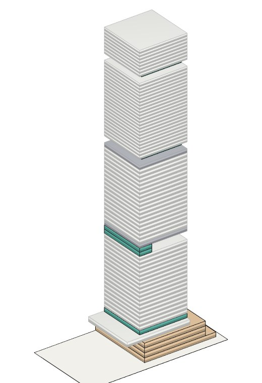<figcaption><b>A10b</b> A9a with the forum cut out of the podium without the pavilion (one ope</figcaption></figure></div>
  <div class="tablewrap"><table><thead><tr><th scope="col">Design</th><th scope="col">Non-res FSR</th><th scope="col">Margin m²</th><th scope="col">Margin, 3 plant floors</th><th scope="col">Homes (true plates)</th><th scope="col">Public share above podium</th><th scope="col">Link open to sky</th><th scope="col">Sky-room exits</th><th scope="col">Open site in new shadow</th><th scope="col">Sun lost by neighbours kWh</th><th scope="col">Fail lines</th><th scope="col">Check lines</th></tr></thead><tbody><tr><th scope="row">A9a</th><td>9.40</td><td>+4,571</td><td>+2,071</td><td>621</td><td>0.4% of tower floor area</td><td>Cuts through the podium, open to the sky</td><td>478 people → 1,914 mm per stair</td><td>8%</td><td>50,344</td><td>14</td><td>65</td></tr><tr class="chosen"><th scope="row">A10a ✓</th><td>9.53</td><td>+6,116</td><td>+3,616</td><td>621</td><td>0.4% of tower floor area</td><td>Cuts through the podium, open to the sky</td><td>478 people → 1,914 mm per stair</td><td>17%</td><td>50,336</td><td>13</td><td>67</td></tr><tr><th scope="row">A10b</th><td>9.49</td><td>+5,630</td><td>+3,130</td><td>621</td><td>0.4% of tower floor area</td><td>Clear of the buildings, open to the sky</td><td>478 people → 1,914 mm per stair</td><td>10%</td><td>50,336</td><td>14</td><td>65</td></tr></tbody></table></div>
  <dl class="why">
    <div><dt>What changed</dt><dd>The ground base and public podium stop covering the forum: the podium splits at the open lane (x −38 to −24), a one-storey pavilion edges the arterial street (A10a), and the upper podium storey roofs a 16 × 55 m covered passage-room. L5 becomes office. The garden at +100 m is declared public, with a public-lift stop at L25 (declared).</dd></div>
    <div><dt>Why</dt><dd>Urban review R2, BLOCKER: the FSR was not honest and the public checks never saw the forum. R4 (2+U, Alberni): a covered room beside the open lane, so people choose sky or roof by the weather.</dd></div>
    <div><dt>Options tested</dt><dd>A10a with the pavilion; A10b without it (one open square, 64 × 79 m).</dd></div>
    <div><dt>Choice</dt><dd><b>A10a</b>, the reviewer's plan: the pavilion gives the forecourt an edge on the arterial street. Margin 6,116 m², +3,616 m² with 3 plant floors; podium travel distance Fail → Pass.</dd></div>
    <div><dt>Who decided</dt><dd>Coordinator, in A's method, on the urban reviewer's recommendation.</dd></div>
    <div><dt>Cost and trade-off</dt><dd>Civic area falls (L5 office). <b>The checks still cannot see the forum in A10a</b>: open space stays at 26%, POPS shape Check and the link "cuts through the podium", because the public-realm checks read the podium as one hull spanning the pavilion (tool gap G10). A10b let the checks see the square (open space 44%, POPS and link Pass), but tripped a false streetwall Fail, 300 m on the arterial for a tower face 64 m back (tool gap G9). Sky-room exit stairs Pass → Check.</dd></div>
    <div class="wide"><dt>Check results (value · state · source)</dt><dd><ul class="checks"><li><span class="st warn">Check</span> <b>Non-residential FSR ≥ 9.0</b> 9.53<span class="src">VTC brief p.16, p.19</span></li><li><span class="st ok">Pass</span> <b>Travel distance, podium floors</b> 44.0 m to the core stairs<span class="src">VBBL 2019, 3.4.2.5</span></li><li><span class="st warn">Check</span> <b>Connection open to the sky</b> Cuts through the podium (A10a); clear of the buildings (A10b)<span class="src">CDDG draft Appendix A</span></li><li><span class="st ok">Pass</span> <b>Public open space on the site</b> 26% (A10a); 44% (A10b)<span class="src">CDDG draft Appendix A</span></li><li><span class="st ok">Pass</span> <b>Streetwall on the arterial street</b> 19.2 m (A10a); 300 m (A10b)<span class="src">CDDG draft Appendix A</span></li><li><span class="st warn">Check</span> <b>Exit stairs from the sky room</b> 478 people → 1,914 mm per stair<span class="src">VBBL 2019, 3.4.3.2</span></li></ul></dd></div>
    <div class="wide"><dt>Reviews of this design (they set the next change)</dt><dd><div class="reviews"><div class="rev"><p class="role">Vertical transport and life safety · cannot go forward as is</p><ul><li><b>BLOCKER</b> Exit separation fails (24.9 m against ≥ 35.4 m), and no layout with both stairs in the 24 m core can pass: the core's own diagonal is 33.9 m. <i>Fix:</i> one stair at the plate edge ("mixed").</li><li><b>MAJOR</b> Both lift transfer floors are public floors: office workers change lifts in the public garden at L25, residents and hotel guests inside the public sky room at L47. <i>Fix:</i> move the office transfer to L26.</li><li><b>MAJOR</b> The public garden is missing from the egress check; unposted, its load would need 3,664 mm stairs. <i>Fix:</i> post it at about 200 visitors.</li></ul><p class="file">tower-A/iter/review_R3_vt.md</p></div></div></dd></div>
    <div class="wide"><dt>Toolkit map</dt><dd><b>Design node</b> design.program, design.massing · <b>prompted by</b> built.fsr (floor 1 retail), built.pr-ground (link, open space), built.egress (podium travel) · <b>judged by</b> built.fsr, built.pr-ground, built.pr-streetwall, built.egress, built.sw-shadow, built.sw-wind-comfort · <b>tools</b> massing (podium parts), program (floor uses), ground (link, station)</dd></div>
    <div class="q"><dt>Open question for critics</dt><dd>The covered room beside the open lane lets people choose sky or roof by the weather. Is a roofed public room at the base worth the civic floor area it costs, in a city where it rains about half the days?</dd></div>
  </dl></details></div></li><li class="change" id="r-A2-4">
  
  <div class="cbody"><p class="cno"><b>4</b> · A11a <span class="chip" style="--c:#8b5cf6;--i:#5b21b6;--s:#f3eeff">Schematic</span></p>
  <h4>One exit stair to the plate edge; office transfer off the public floor</h4><p class="reason">Exit separation could never pass with both stairs inside a 24 m core, so one stair went to the plate edge; the office lift transfer left the public garden floor.</p><p class="cmeta">margin +6,116 m² · 621 homes · 12 Fail lines · off-centre 0.23 m</p><details class="full"><summary>Full record: options, choice, cost, checks, reviews</summary>
  <div class="thumbs"><figure class=""><figcaption><b>A10a</b> A9a with the forum cut out of the podium with a one-storey pavilion on</figcaption></figure><figure class="on"><figcaption><b>A11a</b> A10a with one exit stair moved to the plate edge; office transfer move</figcaption></figure><figure class=""><figcaption><b>A11b</b> A10a with both exit stairs at opposite plate corners; office transfer </figcaption></figure></div>
  <div class="tablewrap"><table><thead><tr><th scope="col">Design</th><th scope="col">Exit separation</th><th scope="col">Lift rises failing</th><th scope="col">Non-res FSR</th><th scope="col">Margin m²</th><th scope="col">Margin, 3 plant floors</th><th scope="col">Homes (true plates)</th><th scope="col">Fail lines</th><th scope="col">Check lines</th></tr></thead><tbody><tr><th scope="row">A10a</th><td>24.9 m between the stairs</td><td>0</td><td>9.53</td><td>+6,116</td><td>+3,616</td><td>621</td><td>13</td><td>67</td></tr><tr class="chosen"><th scope="row">A11a ✓</th><td>43.8 m between the stairs</td><td>0</td><td>9.53</td><td>+6,116</td><td>+3,616</td><td>621</td><td>12</td><td>67</td></tr><tr><th scope="row">A11b</th><td>62.7 m between the stairs</td><td>0</td><td>9.53</td><td>+6,116</td><td>+3,616</td><td>621</td><td>14</td><td>68</td></tr></tbody></table></div>
  <dl class="why">
    <div><dt>What changed</dt><dd>Exit stairs "mixed": one in the core, one at the plate corner (the toolkit puts it at the true-S corner). The office sky lobby moves from L25 to L26. The public garden is posted at about 200 visitors, with a public-lift stop at L25 (declared).</dd></div>
    <div><dt>Why</dt><dd>Vertical transport review R3, BLOCKER: the core diagonal (33.9 m) is shorter than the required separation (35.4 m), so no in-core layout can pass.</dd></div>
    <div><dt>Options tested</dt><dd>A11a, one stair at the edge ("mixed"); A11b, both stairs at opposite plate corners ("perimeter").</dd></div>
    <div><dt>Choice</dt><dd><b>A11a.</b> Exit separation 24.9 → 43.8 m (Fail → Pass). A11b separates them by 62.7 m but pushes tower travel distance to 46.3 m (Fail).</dd></div>
    <div><dt>Who decided</dt><dd>Coordinator, in A's method, on the reviewer's recommendation.</dd></div>
    <div><dt>Cost and trade-off</dt><dd>Podium travel distance 44.0 → 47.2 m (Pass → Fail), because the toolkit measures only to the core stairs and knows no podium exits (tool gap G11). The edge stair takes 29 m² of floor and about 11 m of facade per storey; net-to-gross 77 → 76%. The reviewer wanted it at the true-N corner, which the toolkit cannot choose.</dd></div>
    <div class="wide"><dt>Check results (value · state · source)</dt><dd><ul class="checks"><li><span class="st ok">Pass</span> <b>Exit separation</b> 43.8 m between the stairs<span class="src">VBBL 2019, 3.4.2.3</span></li><li><span class="st bad">Fail</span> <b>Travel distance, podium floors</b> 47.2 m to the core stairs<span class="src">VBBL 2019, 3.4.2.5</span></li><li><span class="st ok">Pass</span> <b>Travel distance, tower floors</b> 38.6 m from the farthest corner<span class="src">VBBL 2019, 3.4.2.5</span></li><li><span class="st ok">Pass</span> <b>Net-to-gross, typical tower floor</b> 76%<span class="src">Team presets</span></li><li><span class="st warn">Check</span> <b>Non-residential FSR ≥ 9.0</b> 9.53<span class="src">VTC brief p.16, p.19</span></li></ul></dd></div>
    <div class="wide"><dt>Reviews of this design (they set the next change)</dt><dd><div class="reviews"><div class="rev"><p class="role">Facade and envelope engineer · set the skin by the concept</p><ul><li><b>MAJOR</b> A runs on the toolkit's four default zones: the 413 h Fail is the NW zone, and fixing NW alone still leaves SE (376 h) and SW (318 h) at Check. <i>Fix:</i> 22 zones that open the skin at the public floors (80%), office 45% behind fins, homes punched 35%, louvre bands at the plant floors.</li><li><b>MAJOR</b> The public glass is also the bird-collision glass: the planted garden, the see-through winter garden and the lit sky room need exterior markers.</li><li><b>MAJOR</b> The toolkit reads overheating only at L43, so the garden and sky room are unknown; the honest fix is cooled offices with heat recovery.</li></ul><p class="file">tower-A/iter/review_R4_facade.md</p></div></div></dd></div>
    <div class="wide"><dt>Toolkit map</dt><dd><b>Design node</b> design.plates · <b>prompted by</b> built.egress (exit separation Fail), built.core-lifts, built.sky-room · <b>judged by</b> built.egress, built.life-safety, built.core-lifts, built.sky-room · <b>tools</b> core (stair placement), program (sky lobby)</dd></div>
    <div class="q"><dt>Open question for critics</dt><dd>The second stair takes a corner of every floor. Should it be a visible element of the tower (a stair you can see from the street), or hidden inside the plate?</dd></div>
  </dl></details></div></li><li class="change" id="r-A2-5">
  
  <div class="cbody"><p class="cno"><b>5</b> · A12a <span class="chip" style="--c:#8b5cf6;--i:#5b21b6;--s:#f3eeff">Schematic</span><span class="chip" style="--c:#e145c2;--i:#9b227c;--s:#fdecf8">Presentation</span></p>
  <h4>A skin that opens where the public floors are</h4><p class="reason">A ran on the default curtain wall and failed glare; the facade reviewer made the skin say the concept: the public floors are the most open glass, the plant floors become louvre bands that frame the garden and the sky room.</p><p class="cmeta">margin +6,116 m² · 621 homes · 11 Fail lines · off-centre 0.23 m</p><details class="full"><summary>Full record: options, choice, cost, checks, reviews</summary>
  <div class="thumbs"><figure class=""><figcaption><b>A11a</b> A10a with one exit stair moved to the plate edge; office transfer move</figcaption></figure><figure class="on"><figcaption><b>A12a</b> A11a + a skin that opens at the public floors: 80% glass at L1-6, L25-</figcaption></figure></div>
  <div class="tablewrap"><table><thead><tr><th scope="col">Design</th><th scope="col">Low-sun glare</th><th scope="col">sDA</th><th scope="col">TEUI net of PV</th><th scope="col">Non-res FSR</th><th scope="col">Margin m²</th><th scope="col">Margin, 3 plant floors</th><th scope="col">Homes (true plates)</th><th scope="col">Fail lines</th><th scope="col">Check lines</th></tr></thead><tbody><tr><th scope="row">A11a</th><td>413 h/yr</td><td>62%</td><td>64.4 kWh/m²·yr -36%</td><td>9.53</td><td>+6,116</td><td>+3,616</td><td>621</td><td>12</td><td>67</td></tr><tr class="chosen"><th scope="row">A12a ✓</th><td>192 h/yr</td><td>56%</td><td>64.4 kWh/m²·yr -36%</td><td>9.53</td><td>+6,116</td><td>+3,616</td><td>621</td><td>11</td><td>67</td></tr></tbody></table></div>
  <dl class="why">
    <div><dt>What changed</dt><dd>22 facade zones: 80% glass at the public floors (L1–6, garden L25–26, sky room L47, residents' commons L71); office 45% behind vertical fins (none on NE); hotel and homes punched windows at 35%; louvre bands at the plant and outrigger floors L27 and L46.</dd></div>
    <div><dt>Why</dt><dd>Facade review R4: the default zones failed glare on three faces, and the concept had never reached the skin.</dd></div>
    <div><dt>Options tested</dt><dd>One variant (the reviewer tested several in scratch runs).</dd></div>
    <div><dt>Choice</dt><dd><b>A12a.</b> Low-sun glare 413 → 192 h (Fail → Pass); sDA 62 → 56% (still above 55%); ASE 13 → 12%.</dd></div>
    <div><dt>Who decided</dt><dd>Coordinator, in A's method.</dd></div>
    <div><dt>Cost and trade-off</dt><dd>Glare passes by only 8 h. Window-to-wall about 47% (Check); the policy heating-demand figure assumes 40% glass and is unknown at 47%. Overheating and openable area stay Fail. More unit types (three glass families and louvres).</dd></div>
    <div class="wide"><dt>Check results (value · state · source)</dt><dd><ul class="checks"><li><span class="st ok">Pass</span> <b>Most low-sun glare (one zone)</b> 192 h a year<span class="src">Sun &amp; Wind Studio engines</span></li><li><span class="st ok">Pass</span> <b>Daylight autonomy (sDA300/50%, LEED)</b> 56%<span class="src">Sun &amp; Wind Studio engines</span></li><li><span class="st warn">Check</span> <b>Annual sun exposure (ASE1000/250h)</b> 12%<span class="src">Sun &amp; Wind Studio engines</span></li></ul></dd></div>
    <div class="wide"><dt>Reviews of this design (they set the next change)</dt><dd><div class="reviews"><div class="rev"><p class="role">Energy and carbon consultant · the concept costs nothing in the energy check, which is the problem</p><ul><li><b>MAJOR</b> The glass public floors (9,442 m²) are treated as unheated sky gardens; heated, they would add about 0.8–1.8 kWh/m², more than the 0.4 headroom on the preset TEDI Pass. Garden soil, trees, outriggers and 80% glass are not in embodied carbon.</li><li><b>MAJOR</b> The overheating Fail is a setting mismatch: TEUI assumes heating, cooling and heat recovery, the overheating line assumes heating and opening windows. <i>Fix:</i> declare heating and cooling, seal above L6, label natural ventilation "not claimed".</li><li><i>Next:</i> declared system + W fins 2.0 m + L6 and L71 civic (reviewer run V11: overheating 1,229 → 141 h).</li></ul><p class="file">tower-A/iter/review_R5_energy.md</p></div></div></dd></div>
    <div class="wide"><dt>Toolkit map</dt><dd><b>Design node</b> design.plates, design.frame · <b>prompted by</b> built.sw-glazing (glare Fail), built.facade · <b>judged by</b> built.sw-glazing, built.sw-daylight, built.facade, built.sw-indoor-temp · <b>tools</b> facade-zones</dd></div>
    <div class="q"><dt>Open question for critics</dt><dd>The skin now tells the street where the public floors are. Is 80% glass at the public floors a readable expression of "the canopy gap", or simply more glass?</dd></div>
  </dl></details></div></li><li class="change" id="r-A2-6">
  
  <div class="cbody"><p class="cno"><b>6</b> · A13a <span class="chip" style="--c:#8b5cf6;--i:#5b21b6;--s:#f3eeff">Schematic</span></p>
  <h4>Declare the cooling the energy figure already assumed</h4><p class="reason">The overheating Fail came from a setting mismatch (the energy figure already assumed cooling); declaring the system honestly, sealing the windows above the podium and deepening the west fins turned it to Pass.</p><p class="cmeta">margin +6,116 m² · 621 homes · 10 Fail lines · off-centre 0.23 m</p><details class="full"><summary>Full record: options, choice, cost, checks, reviews</summary>
  <div class="thumbs"><figure class=""><figcaption><b>A12a</b> A11a + a skin that opens at the public floors: 80% glass at L1-6, L25-</figcaption></figure><figure class="on"><figcaption><b>A13a</b> A12a with heating and cooling declared, windows sealed above L6, W fin</figcaption></figure></div>
  <div class="tablewrap"><table><thead><tr><th scope="col">Design</th><th scope="col">Low-sun glare</th><th scope="col">sDA</th><th scope="col">TEUI net of PV</th><th scope="col">Non-res FSR</th><th scope="col">Margin m²</th><th scope="col">Margin, 3 plant floors</th><th scope="col">Homes (true plates)</th><th scope="col">Fail lines</th><th scope="col">Check lines</th></tr></thead><tbody><tr><th scope="row">A12a</th><td>192 h/yr</td><td>56%</td><td>64.4 kWh/m²·yr -36%</td><td>9.53</td><td>+6,116</td><td>+3,616</td><td>621</td><td>11</td><td>67</td></tr><tr class="chosen"><th scope="row">A13a ✓</th><td>185 h/yr</td><td>55%</td><td>64.4 kWh/m²·yr -36%</td><td>9.53</td><td>+6,116</td><td>+3,616</td><td>621</td><td>10</td><td>67</td></tr></tbody></table></div>
  <dl class="why">
    <div><dt>What changed</dt><dd>Interior temperature system declared "heating and cooling"; windows above L6 sealed (natural ventilation not claimed); W fins 1.5 → 2.0 m; the garden hall L6 and the residents' commons L71 become civic.</dd></div>
    <div><dt>Why</dt><dd>Energy review R5: the overheating line and the energy line assumed different systems.</dd></div>
    <div><dt>Options tested</dt><dd>One variant (the reviewer ran 12 to find it; its run V11).</dd></div>
    <div><dt>Choice</dt><dd><b>A13a.</b> Overheating 1,229 → 141 h (Fail → Pass); glare 192 → 185 h; sDA 56 → 55%.</dd></div>
    <div><dt>Who decided</dt><dd>Coordinator, in A's method.</dd></div>
    <div><dt>Cost and trade-off</dt><dd>TEUI 60 → 61; the openable-area line stays Fail ("natural ventilation not claimed"); the sky room's west edge still runs hot (504 h, reviewer run). The glass public floors are still unheated in the model, so the concept's energy cost stays uncounted.</dd></div>
    <div class="wide"><dt>Check results (value · state · source)</dt><dd><ul class="checks"><li><span class="st ok">Pass</span> <b>Overheating, level 43 (West side)</b> 141 h over 26 °C<span class="src">ISO 13790 5R1C; ASHRAE 55</span></li><li><span class="st ok">Pass</span> <b>Most low-sun glare (one zone)</b> 185 h a year<span class="src">Sun &amp; Wind Studio engines</span></li><li><span class="st bad">Fail</span> <b>Openable area (ASHRAE 62.1)</b> 2.8% (natural ventilation not claimed)<span class="src">ASHRAE 62.1</span></li></ul></dd></div>
    <div class="wide"><dt>Reviews of this design (they set the next change)</dt><dd><div class="reviews"><div class="rev"><p class="role">City in Nature and ecology · BLOCKER: nothing entered; three MAJOR on the garden</p><ul><li><b>BLOCKER</b> None of the City in Nature inputs are entered.</li><li><b>MAJOR</b> The winter garden puts trees behind about 806 m² of glass on the windward NW and SW faces, a bird trap the toolkit's 19.2 m collision zone misses. <i>Fix:</i> frit that glass.</li><li><b>MAJOR</b> The open deck sits under the office floors above: no rain, side light only. <i>Fix:</i> plant by light, irrigate from a roof-fed cistern, keep it out of vegetated cover.</li><li><b>MAJOR</b> The garden soil load is still undeclared (about 473 m³ of soil by the reviewer's depths; load unknown until a saturated density is sourced).</li></ul><p class="file">tower-A/iter/review_R6_cin.md</p></div></div></dd></div>
    <div class="wide"><dt>Toolkit map</dt><dd><b>Design node</b> design.plates · <b>prompted by</b> built.sw-indoor-temp (Fail), built.sw-natvent · <b>judged by</b> built.sw-indoor-temp, built.sw-natvent, built.sw-glazing, built.sw-energy · <b>tools</b> facade-zones, Sun &amp; Wind settings (harness field added tonight)</dd></div>
    <div class="q"><dt>Open question for critics</dt><dd>A sealed, cooled tower with an open garden halfway up: is the garden then the only place in the building where the outside air comes in, and should the design say so?</dd></div>
  </dl></details></div></li><li class="change" id="r-A2-7">
  
  <div class="cbody"><p class="cno"><b>7</b> · A14a <span class="chip" style="--c:#ff6b4a;--i:#a93920;--s:#fff0eb">Form</span><span class="chip" style="--c:#f4c430;--i:#785a00;--s:#fff8dd">Program</span><span class="ret">↻ back to Form</span></p>
  <h4>One canopy, two heights</h4><p class="reason">Nothing was entered for City in Nature; the forecourt became urban forest on deep soil and the +100 m garden its upper layer, so the "canopy" of the concept is literal planting at two heights.</p><p class="cmeta">margin +6,116 m² · 621 homes · 10 Fail lines · off-centre 0.23 m</p><details class="full"><summary>Full record: options, choice, cost, checks, reviews</summary>
  <div class="thumbs"><figure class=""><figcaption><b>A13a</b> A12a with heating and cooling declared, windows sealed above L6, W fin</figcaption></figure><figure class="on"><figcaption><b>A14a</b> A13a + &quot;one canopy, two heights&quot;: the forecourt and lane as urban fore</figcaption></figure></div>
  <div class="tablewrap"><table><thead><tr><th scope="col">Design</th><th scope="col">Non-res FSR</th><th scope="col">Margin m²</th><th scope="col">Margin, 3 plant floors</th><th scope="col">Homes (true plates)</th><th scope="col">Fail lines</th><th scope="col">Check lines</th></tr></thead><tbody><tr><th scope="row">A13a</th><td>9.53</td><td>+6,116</td><td>+3,616</td><td>621</td><td>10</td><td>67</td></tr><tr class="chosen"><th scope="row">A14a ✓</th><td>9.53</td><td>+6,116</td><td>+3,616</td><td>621</td><td>10</td><td>69</td></tr></tbody></table></div>
  <dl class="why">
    <div><dt>What changed</dt><dd>City in Nature inputs as declared choices: canopy 1,380 m² at grade on deep soil, vegetated 2,600 m² (the garden at +100 m kept out because it gets no rain), 550 m³ retained with a roof-fed cistern on L27 irrigating the garden, habitat assessment and rain pathway planned, 90% bird glass including frit on the winter garden. The station link runs under the covered room, not under the trees.</dd></div>
    <div><dt>Why</dt><dd>City in Nature review R6: a BLOCKER (nothing entered) and three MAJORs on the garden.</dd></div>
    <div><dt>Options tested</dt><dd>One variant.</dd></div>
    <div><dt>Choice</dt><dd><b>A14a.</b> Canopy 12%, habitat, rain pathway and bird glass Pass; retention 48 mm (Check).</dd></div>
    <div><dt>Who decided</dt><dd>Coordinator, in A's method.</dd></div>
    <div><dt>Cost and trade-off</dt><dd>Every Pass rests on declared values that need an arborist, planner, geotechnical or drainage engineer, ecologist and a frit product. The garden soil load is still unknown, and the toolkit cannot see planting at height or under floors (gap G12).</dd></div>
    <div class="wide"><dt>Check results (value · state · source)</dt><dd><ul class="checks"><li><span class="st ok">Pass</span> <b>Tree canopy at maturity, share of site</b> 12% (declared)<span class="src">City in Nature node</span></li><li><span class="st warn">Check</span> <b>Rainfall retained</b> 48 mm (declared)<span class="src">City in Nature node</span></li><li><span class="st ok">Pass</span> <b>Bird-friendly glazing treated in the risk zone</b> 90% (declared)<span class="src">City in Nature node</span></li></ul></dd></div>
    <div class="wide"><dt>Reviews of this design (they set the next change)</dt><dd><div class="reviews"><div class="rev"><p class="role">Cultural-context reviewer (claims no engagement) · three MAJOR, one a correction</p><ul><li><b>MAJOR</b> A's record named a Nation-owned project as a source for the covered passage-room, and the forest under the raised tower matches how R4 reads that project: borrowed imagery once shown. <i>Fix:</i> cite only 2+U and Alberni; justify the forest on ecology. (Done in iteration 8.)</li><li><b>MAJOR</b> "Canopy" is safe as an ecology word only if the board defines it and says the +100 m garden is not canopy (it gets no rain); never show the room as a longhouse, cultural scenes in renders, or plants captioned by cultural use.</li><li><b>MAJOR</b> The covered room and the garden are public only in the write-up. <i>Fix:</i> a board card, "the route's hours": five places × six fields, every cell filled or "unknown".</li></ul><p class="file">tower-A/iter/review_R7_cultural.md</p></div></div></dd></div>
    <div class="wide"><dt>Toolkit map</dt><dd><b>Design node</b> design.massing, design.program · <b>prompted by</b> built.city-in-nature (all not entered) · <b>judged by</b> built.city-in-nature, built.facade · <b>tools</b> City in Nature inputs</dd></div>
    <div class="q"><dt>Open question for critics</dt><dd>Is "the canopy gap" stronger now that the canopy is trees at two heights, or does literal planting weaken an architectural idea?</dd></div>
  </dl></details></div></li><li class="change" id="r-A2-8">
  
  <div class="cbody"><p class="cno"><b>8</b> · A15a <span class="chip" style="--c:#e145c2;--i:#9b227c;--s:#fdecf8">Presentation</span></p>
  <h4>The route&#x27;s hours on the board; a citation withdrawn</h4><p class="reason">The cultural reviewer found the public route was public only in prose and that an earlier citation borrowed from a Nation-owned project; the citation is withdrawn and a board card now states each public place's hours, entry, route and capacity.</p><p class="cmeta">margin +6,116 m² · 621 homes · 10 Fail lines · off-centre 0.23 m</p><details class="full"><summary>Full record: options, choice, cost, checks, reviews</summary>
  <div class="thumbs"><figure class=""><figcaption><b>A14a</b> A13a + &quot;one canopy, two heights&quot;: the forecourt and lane as urban fore</figcaption></figure><figure class="on"><figcaption><b>A15a</b> A14a + the route&#x27;s hours on the board (forum, lane, covered room, gard</figcaption></figure></div>
  <div class="tablewrap"><table><thead><tr><th scope="col">Design</th><th scope="col">Non-res FSR</th><th scope="col">Margin m²</th><th scope="col">Margin, 3 plant floors</th><th scope="col">Homes (true plates)</th><th scope="col">Fail lines</th><th scope="col">Check lines</th></tr></thead><tbody><tr><th scope="row">A14a</th><td>9.53</td><td>+6,116</td><td>+3,616</td><td>621</td><td>10</td><td>69</td></tr><tr class="chosen"><th scope="row">A15a ✓</th><td>9.53</td><td>+6,116</td><td>+3,616</td><td>621</td><td>10</td><td>69</td></tr></tbody></table></div>
  <dl class="why">
    <div><dt>What changed</dt><dd>No input change. A board card fills 30 cells (forum, lane, covered room, garden, sky room × hours, entry, route, capacity, programming, weather), each from the spec or marked as a choice or unknown (tower-A/iter/A15_route_hours_card.md). The citation of a Nation-owned project for the covered room is withdrawn.</dd></div>
    <div><dt>Why</dt><dd>Cultural-context review R7.</dd></div>
    <div><dt>Options tested</dt><dd>One (a board item).</dd></div>
    <div><dt>Choice</dt><dd><b>A15a.</b> The checks are identical to A14a (0 line changes); the public places become checkable on the board.</dd></div>
    <div><dt>Who decided</dt><dd>Coordinator, in A's method.</dd></div>
    <div><dt>Cost and trade-off</dt><dd>Several hours are design choices the owner must commit to (24 h at grade, 16 h at height). The toolkit cannot check the card or the claims (gap G15).</dd></div>
    <div class="wide"><dt>Check results (value · state · source)</dt><dd><ul class="checks"><li><span class="st unk">Unknown</span> <b>All toolkit lines</b> identical to A14a<span class="src">route_compare A14a → A15a</span></li></ul></dd></div>
    <div class="wide"><dt>Reviews of this design (they set the next change)</dt><dd><div class="reviews"><div class="rev"><p class="role">Cost consultant · the toolkit counts the concept as a gain</p><ul><li><b>MAJOR</b> The toolkit scores A's concept as a C$73.7 M gain since A7, almost all of it the forum cut counted as saved floor area; the garden, 80% glass, cooling and the covered room add nothing to the cost line.</li><li><b>MAJOR</b> The garden is priced as 3,414 m² of ordinary amenity, missing the L27 belt, the 8 m columns, about 473 m³ of soil and the cistern; three different glass ratios (60%, 47%, 40%) feed different checks.</li><li><i>Next:</i> L28 office becomes plant, a two-storey lid at L27–28 (reviewer run: margin +3,616 m², plant floors Pass).</li></ul><p class="file">tower-A/iter/review_R8_cost.md</p></div></div></dd></div>
    <div class="wide"><dt>Toolkit map</dt><dd><b>Design node</b> design.frame · <b>prompted by</b> built.culture-claims (not runnable), built.sky-room · <b>judged by</b> built.culture-claims (not runnable) · <b>tools</b> board (Presentation)</dd></div>
    <div class="q"><dt>Open question for critics</dt><dd>Are 24-hour public places at grade and 16-hour ones at height a real commitment a jury can hold the owner to, or a promise the drawings cannot enforce?</dd></div>
  </dl></details></div></li><li class="change" id="r-A2-9">
  
  <div class="cbody"><p class="cno"><b>9</b> · A16a <span class="chip" style="--c:#8b5cf6;--i:#5b21b6;--s:#f3eeff">Schematic</span><span class="chip" style="--c:#f4c430;--i:#785a00;--s:#fff8dd">Program</span></p>
  <h4>A two-storey lid over the garden</h4><p class="reason">The toolkit had asked for a third plant floor since round 1 and the garden needed a structural lid; the office storey above the outrigger became plant, spending 2,500 m² of margin to make the garden buildable.</p><p class="cmeta">margin +3,616 m² · 621 homes · 10 Fail lines · off-centre 0.23 m</p><details class="full"><summary>Full record: options, choice, cost, checks, reviews</summary>
  <div class="thumbs"><figure class=""><figcaption><b>A15a</b> A14a + the route&#x27;s hours on the board (forum, lane, covered room, gard</figcaption></figure><figure class="on"><figcaption><b>A16a</b> A15a with L28 as plant: a two-storey structural lid (L27-28) over the </figcaption></figure></div>
  <div class="tablewrap"><table><thead><tr><th scope="col">Design</th><th scope="col">Non-res FSR</th><th scope="col">Margin m²</th><th scope="col">Margin, 3 plant floors</th><th scope="col">Homes (true plates)</th><th scope="col">Fail lines</th><th scope="col">Check lines</th></tr></thead><tbody><tr><th scope="row">A15a</th><td>9.53</td><td>+6,116</td><td>+3,616</td><td>621</td><td>10</td><td>69</td></tr><tr class="chosen"><th scope="row">A16a ✓</th><td>9.32</td><td>+3,616</td><td>+3,616</td><td>621</td><td>10</td><td>68</td></tr></tbody></table></div>
  <dl class="why">
    <div><dt>What changed</dt><dd>L28 (office) becomes plant: L27–28 form a two-storey lid over the garden, carrying the belt, the cistern and the plant.</dd></div>
    <div><dt>Why</dt><dd>Cost review R8: the garden's real costs were invisible, and the toolkit still asked for 3–4 plant floors.</dd></div>
    <div><dt>Options tested</dt><dd>One variant (the reviewer's alternative, a plant floor in the homes, left 598 homes, under the 600 line).</dd></div>
    <div><dt>Choice</dt><dd><b>A16a.</b> Plant floors Check → Pass (3 modelled); lift cars 47 → 45.</dd></div>
    <div><dt>Who decided</dt><dd>Coordinator, in A's method.</dd></div>
    <div><dt>Cost and trade-off</dt><dd>Margin 6,116 → 3,616 m² (one office storey). The lid's structure, soil and cistern are still not priced by the toolkit.</dd></div>
    <div class="wide"><dt>Check results (value · state · source)</dt><dd><ul class="checks"><li><span class="st ok">Pass</span> <b>Plant floors in the tower</b> 3–4 needed; 3 modelled<span class="src">Team preset</span></li><li><span class="st warn">Check</span> <b>Non-residential FSR ≥ 9.0</b> 9.32<span class="src">VTC brief p.16, p.19</span></li></ul></dd></div>
    <div class="wide"><dt>Reviews of this design (they set the next change)</dt><dd><div class="reviews"><div class="rev"><p class="role">Developer / client · the garden in the office stack survives a lender; two MAJOR</p><ul><li><b>MAJOR</b> The garden's only modelled lift is office car R2: the public lifts stop only at L47. <i>Fix:</i> one public height — the free public room moves to the garden at L25; L47 becomes the hotel lobby and bar.</li><li><b>MAJOR</b> The +3,616 m² margin rests on a 10,000 m² hotel with no operator (−6,384 m² without it).</li><li>Survives a lender: the garden in the office stack (CapitaSpring precedent) and an office split into two products of about 48,600 and 42,500 m², each with its own address.</li></ul><p class="file">tower-A/iter/review_R9_developer.md</p></div></div></dd></div>
    <div class="wide"><dt>Toolkit map</dt><dd><b>Design node</b> design.plates, design.program · <b>prompted by</b> built.life-safety (plant floors), built.economics · <b>judged by</b> built.life-safety, built.fsr, built.core-lifts · <b>tools</b> program (plant floor)</dd></div>
    <div class="q"><dt>Open question for critics</dt><dd>The garden now costs two storeys of structure above it. Should the lid be expressed as the "canopy" over the gap, the most visible structure on the tower?</dd></div>
  </dl></details></div></li><li class="change" id="r-A2-10">
  
  <div class="cbody"><p class="cno"><b>10</b> · A17a <span class="chip" style="--c:#f4c430;--i:#785a00;--s:#fff8dd">Program</span><span class="chip" style="--c:#8b5cf6;--i:#5b21b6;--s:#f3eeff">Schematic</span><span class="ret">↻ back to Program</span></p>
  <h4>One public height: the public room moves to the garden</h4><p class="reason">The garden was public in name but reached only by an office lift; the free public room moved down to the garden, so the canopy gap is the one public height, and the old sky room became the hotel lobby.</p><p class="cmeta">margin +5,380 m² · 621 homes · 10 Fail lines · off-centre 0.23 m</p><details class="full"><summary>Full record: options, choice, cost, checks, reviews</summary>
  <div class="thumbs"><figure class=""><figcaption><b>A16a</b> A15a with L28 as plant: a two-storey structural lid (L27-28) over the </figcaption></figure><figure class="on"><figcaption><b>A17a</b> A16a with one public height: the free public room moves to the garden </figcaption></figure></div>
  <div class="tablewrap"><table><thead><tr><th scope="col">Design</th><th scope="col">Non-res FSR</th><th scope="col">Margin m²</th><th scope="col">Margin, 3 plant floors</th><th scope="col">Homes (true plates)</th><th scope="col">Public share above podium</th><th scope="col">Link open to sky</th><th scope="col">Sky-room exits</th><th scope="col">Fail lines</th><th scope="col">Check lines</th></tr></thead><tbody><tr><th scope="row">A16a</th><td>9.32</td><td>+3,616</td><td>+3,616</td><td>621</td><td>0.4% of tower floor area</td><td>Cuts through the podium, open to the sky</td><td>478 people → 1,914 mm per stair</td><td>10</td><td>68</td></tr><tr class="chosen"><th scope="row">A17a ✓</th><td>9.47</td><td>+5,380</td><td>+5,380</td><td>621</td><td>0.4% of tower floor area</td><td>Cuts through the podium, open to the sky</td><td>322 people → 1,289 mm per stair</td><td>10</td><td>66</td></tr></tbody></table></div>
  <dl class="why">
    <div><dt>What changed</dt><dd>The free public room, with its own public lifts, moves from L47 (+188 m) to the garden at L25 (+100 m), posted at 200 visitors; L47 becomes the hotel lobby and bar. No geometry change.</dd></div>
    <div><dt>Why</dt><dd>Developer review R9, MAJOR: the garden had no public lift in the model.</dd></div>
    <div><dt>Options tested</dt><dd>One variant.</dd></div>
    <div><dt>Choice</dt><dd><b>A17a.</b> The public lifts serve the garden; sky-room exit stairs Check → Pass; accessible lifts per group Pass; margin 3,616 → 5,380 m².</dd></div>
    <div><dt>Who decided</dt><dd>Coordinator, in A's method: the concept (open the mass where people gather) favours one public height at the gap.</dd></div>
    <div><dt>Cost and trade-off</dt><dd>The free view from +188 m is lost: the public now rises only to +100 m. The public-share line still Fails (0.4%), because the toolkit counts one room's area.</dd></div>
    <div class="wide"><dt>Check results (value · state · source)</dt><dd><ul class="checks"><li><span class="st ok">Pass</span> <b>Public amenity at height</b> Public sky room at level 25, +100 m, about 679 m² open to visitors<span class="src">General Policy for Higher Buildings (1997)</span></li><li><span class="st ok">Pass</span> <b>Exit stairs from the sky room</b> 322 people → 1,289 mm per stair<span class="src">VBBL 2019, 3.4.3.2</span></li><li><span class="st bad">Fail</span> <b>Public floor area above the podium</b> 0.4% of tower floor area<span class="src">Team preset (P06-M07)</span></li><li><span class="st warn">Check</span> <b>Non-residential FSR ≥ 9.0</b> 9.47<span class="src">VTC brief p.16, p.19</span></li></ul></dd></div>
    <div class="wide"><dt>Reviews of this design (they set the next change)</dt><dd><div class="reviews"><div class="rev"><p class="role">Jury member · not distinctive enough: the gap reads as a notch</p><ul><li><b>BLOCKER (for premiation, not buildability)</b> The garden is 8 m of 300 m (2.7%); the 24 m core blocks the middle of every face, so the street sees through only the 13 m strips beside it; the two private notches at +188 and +268 m are about the same size, so the one public height does not stand out.</li><li><i>Next round:</i> make the gap larger and more open, fill the upper notches rather than repeat them, and raise it only if a skyline silhouette reader shows +100 m is hidden behind the other towers.</li><li>All four criteria adequate. Concept-first turned ten reviews into one object, but the gap shrank under every review and no review looked at it from the city.</li></ul><p class="file">tower-A/iter/review_R10_jury.md</p></div></div></dd></div>
    <div class="wide"><dt>Toolkit map</dt><dd><b>Design node</b> design.program, design.plates · <b>prompted by</b> built.sky-room, built.core-lifts · <b>judged by</b> built.sky-room, built.core-lifts, built.egress, built.fsr · <b>tools</b> program (sky room level)</dd></div>
    <div class="q"><dt>Open question for critics</dt><dd>Is one public height at +100 m a stronger "canopy gap" than two public floors, or did the tower give up its best public view to a hotel bar?</dd></div>
  </dl></details></div></li></ol><details class="mapd"><summary>Process map, tower A, round 2</summary><figure class="dgwrap"><div class="scrollx"><svg viewBox="0 0 1030 352" role="img" aria-labelledby="dg-2A-t" class="diagram" style="min-width:900px"><title id="dg-2A-t">Tower A: each iteration placed on the toolkit phase it worked in, with returns to earlier phases</title><defs><marker id="ar-2A" viewBox="0 0 10 10" refX="9" refY="5" markerWidth="7" markerHeight="7" orient="auto"><path d="M0,0 L10,5 L0,10 z" fill="#d9480f"/></marker></defs><rect x="0" y="24.0" width="1030" height="44" fill="#e7f7fc"/><text x="12" y="45" class="dl" fill="#006b85">Site</text><text x="12" y="60" class="dm">design.site</text><rect x="0" y="74.0" width="1030" height="44" fill="#fff0eb"/><text x="12" y="95" class="dl" fill="#a93920">Form</text><text x="12" y="110" class="dm">design.massing</text><rect x="0" y="124.0" width="1030" height="44" fill="#fff8dd"/><text x="12" y="145" class="dl" fill="#785a00">Program</text><text x="12" y="160" class="dm">design.program</text><rect x="0" y="174.0" width="1030" height="44" fill="#f3eeff"/><text x="12" y="195" class="dl" fill="#5b21b6">Schematic</text><text x="12" y="210" class="dm">design.plates</text><rect x="0" y="224.0" width="1030" height="44" fill="#fdecf8"/><text x="12" y="245" class="dl" fill="#9b227c">Presentation</text><text x="12" y="260" class="dm">design.frame</text><line x1="150" y1="46" x2="150" y2="96" stroke="#8a8f94" stroke-width="2"/><circle cx="150" cy="46" r="7" fill="#fff" stroke="#006b85" stroke-width="2.5"/><text x="150" y="322" text-anchor="middle" class="dl">A8b</text><text x="150" y="339" text-anchor="middle" class="dm">open garden</text><line x1="234" y1="96" x2="234" y2="196" stroke="#8a8f94" stroke-width="2"/><circle cx="234" cy="196" r="7" fill="#fff" stroke="#5b21b6" stroke-width="2.5"/><text x="234" y="322" text-anchor="middle" class="dl">A9a</text><text x="234" y="339" text-anchor="middle" class="dm">garden wall</text><line x1="318" y1="96" x2="318" y2="146" stroke="#8a8f94" stroke-width="2"/><circle cx="318" cy="96" r="7" fill="#fff" stroke="#a93920" stroke-width="2.5"/><text x="318" y="322" text-anchor="middle" class="dl">A10a</text><text x="318" y="339" text-anchor="middle" class="dm">cut forum</text><text x="402" y="322" text-anchor="middle" class="dl">A11a</text><text x="402" y="339" text-anchor="middle" class="dm">edge stair</text><line x1="486" y1="196" x2="486" y2="246" stroke="#8a8f94" stroke-width="2"/><circle cx="486" cy="246" r="7" fill="#fff" stroke="#9b227c" stroke-width="2.5"/><text x="486" y="322" text-anchor="middle" class="dl">A12a</text><text x="486" y="339" text-anchor="middle" class="dm">public skin</text><text x="570" y="322" text-anchor="middle" class="dl">A13a</text><text x="570" y="339" text-anchor="middle" class="dm">declared sys</text><line x1="654" y1="96" x2="654" y2="146" stroke="#8a8f94" stroke-width="2"/><circle cx="654" cy="146" r="7" fill="#fff" stroke="#785a00" stroke-width="2.5"/><text x="654" y="322" text-anchor="middle" class="dl">A14a</text><text x="654" y="339" text-anchor="middle" class="dm">two canopies</text><text x="738" y="322" text-anchor="middle" class="dl">A15a</text><text x="738" y="339" text-anchor="middle" class="dm">route hours</text><line x1="822" y1="146" x2="822" y2="196" stroke="#8a8f94" stroke-width="2"/><circle cx="822" cy="146" r="7" fill="#fff" stroke="#785a00" stroke-width="2.5"/><text x="822" y="322" text-anchor="middle" class="dl">A16a</text><text x="822" y="339" text-anchor="middle" class="dm">garden lid</text><line x1="906" y1="146" x2="906" y2="196" stroke="#8a8f94" stroke-width="2"/><circle cx="906" cy="196" r="7" fill="#fff" stroke="#5b21b6" stroke-width="2.5"/><text x="906" y="322" text-anchor="middle" class="dl">A17a</text><text x="906" y="339" text-anchor="middle" class="dm">one public h</text><line x1="150" y1="96" x2="234" y2="96" stroke="#5d646b" stroke-width="2"/><path d="M234,96 C264,96 278,146 302,146" fill="none" stroke="#d9480f" stroke-width="3" stroke-dasharray="7 4" marker-end="url(#ar-2A)"/><text x="276.0" y="88" text-anchor="middle" class="dr">↻</text><line x1="318" y1="146" x2="402" y2="196" stroke="#5d646b" stroke-width="2"/><line x1="402" y1="196" x2="486" y2="196" stroke="#5d646b" stroke-width="2"/><line x1="486" y1="196" x2="570" y2="196" stroke="#5d646b" stroke-width="2"/><path d="M570,196 C600,196 614,96 638,96" fill="none" stroke="#d9480f" stroke-width="3" stroke-dasharray="7 4" marker-end="url(#ar-2A)"/><text x="612.0" y="88" text-anchor="middle" class="dr">↻</text><line x1="654" y1="96" x2="738" y2="246" stroke="#5d646b" stroke-width="2"/><line x1="738" y1="246" x2="822" y2="196" stroke="#5d646b" stroke-width="2"/><path d="M822,196 C852,196 866,146 890,146" fill="none" stroke="#d9480f" stroke-width="3" stroke-dasharray="7 4" marker-end="url(#ar-2A)"/><text x="864.0" y="138" text-anchor="middle" class="dr">↻</text><circle cx="150" cy="96" r="15" fill="#ff6b4a" stroke="#a93920" stroke-width="2"/><text x="150" y="101" text-anchor="middle" class="dn">1</text><circle cx="234" cy="96" r="15" fill="#ff6b4a" stroke="#a93920" stroke-width="2"/><text x="234" y="101" text-anchor="middle" class="dn">2</text><circle cx="318" cy="146" r="15" fill="#f4c430" stroke="#785a00" stroke-width="2"/><text x="318" y="151" text-anchor="middle" class="dn">3</text><circle cx="402" cy="196" r="15" fill="#8b5cf6" stroke="#5b21b6" stroke-width="2"/><text x="402" y="201" text-anchor="middle" class="dn">4</text><circle cx="486" cy="196" r="15" fill="#8b5cf6" stroke="#5b21b6" stroke-width="2"/><text x="486" y="201" text-anchor="middle" class="dn">5</text><circle cx="570" cy="196" r="15" fill="#8b5cf6" stroke="#5b21b6" stroke-width="2"/><text x="570" y="201" text-anchor="middle" class="dn">6</text><circle cx="654" cy="96" r="15" fill="#ff6b4a" stroke="#a93920" stroke-width="2"/><text x="654" y="101" text-anchor="middle" class="dn">7</text><circle cx="738" cy="246" r="15" fill="#e145c2" stroke="#9b227c" stroke-width="2"/><text x="738" y="251" text-anchor="middle" class="dn">8</text><circle cx="822" cy="196" r="15" fill="#8b5cf6" stroke="#5b21b6" stroke-width="2"/><text x="822" y="201" text-anchor="middle" class="dn">9</text><circle cx="906" cy="146" r="15" fill="#f4c430" stroke="#785a00" stroke-width="2"/><text x="906" y="151" text-anchor="middle" class="dn">10</text></svg></div><figcaption>Each column is one iteration on the toolkit phase it mainly worked in (filled), with the other phases it touched (rings). Orange: a return to an earlier phase. Dashed ring: the iteration used a tool built tonight.</figcaption></figure></details></section><section class="tower"><header class="towerhead"><p class="eyebrow">One variable at a time, Pareto comparison, no single score</p><h3 class="th">Tower B · performance-led</h3><p class="count">15 new designs run in round 2 · path: B7q (box) → B8a → B9a → B10a → B11a → B12b → B13a → B14a → B15a → B16a → B17a</p></header><ol class="changes"><li class="change" id="r-B2-1">
  
  <div class="cbody"><p class="cno"><b>1</b> · B8a <span class="chip" style="--c:#00a9d6;--i:#006b85;--s:#e7f7fc">Site</span><span class="chip" style="--c:#ff6b4a;--i:#a93920;--s:#fff0eb">Form</span></p>
  <h4>The non-box test: chamfer the corners, nothing else (after Taipei 101)</h4><p class="reason">Test the non-box move R2 ranked third for B: soften the windward corners with a 3 m chamfer (5 m left too little margin).</p><p class="cmeta">margin +1,467 m² · 621 homes · 13 Fail lines</p><details class="full"><summary>Full record: options, choice, cost, checks, reviews</summary>
  <div class="thumbs"><figure class=""><figcaption><b>B7q-imp</b> B7 with one plant and outrigger floor at +180 m (fallback rule, step 1</figcaption></figure><figure class="on"><figcaption><b>B8a</b> B7q with chamfer 3 m, corner declared chamfered</figcaption></figure><figure class=""><figcaption><b>B8b</b> B7q with chamfer 5 m, corner declared chamfered</figcaption></figure><figure class="">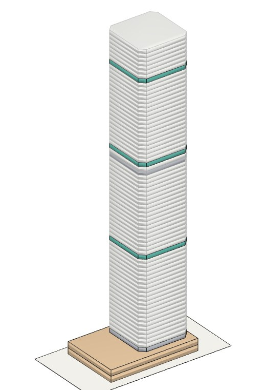<figcaption><b>B8c</b> B7q with chamfer 5 m, corner setting left at sharp</figcaption></figure></div>
  <div class="tablewrap"><table><thead><tr><th scope="col">Design</th><th scope="col">Non-res FSR</th><th scope="col">Margin m²</th><th scope="col">Margin, 3 plant floors</th><th scope="col">Homes (true plates)</th><th scope="col">Corners (declared)</th><th scope="col">Downwash</th><th scope="col">Windiest deck</th><th scope="col">Ground calm</th><th scope="col">Low-sun glare</th><th scope="col">sDA</th><th scope="col">TEUI net of PV</th><th scope="col">Fail lines</th><th scope="col">Check lines</th></tr></thead><tbody><tr><th scope="row">B7q-imp</th><td>9.19</td><td>+2,187</td><td>-313</td><td>621</td><td>High</td><td>High from SE; Low from WNW, W</td><td>9.6 m/s at 300 m</td><td>89%</td><td>269 h/yr</td><td>62%</td><td>63.9 kWh/m²·yr -36%</td><td>12</td><td>64</td></tr><tr class="chosen"><th scope="row">B8a ✓</th><td>9.13</td><td>+1,467</td><td>-1,015</td><td>621</td><td>Low</td><td>High from SE; Low from WNW, W</td><td>9.6 m/s at 300 m</td><td>89%</td><td>513 h/yr</td><td>62%</td><td>63.9 kWh/m²·yr -36%</td><td>13</td><td>62</td></tr><tr><th scope="row">B8b</th><td>9.02</td><td>+187</td><td>-2,263</td><td>621</td><td>Low</td><td>High from SE; Low from WNW, W</td><td>9.6 m/s at 300 m</td><td>89%</td><td>513 h/yr</td><td>61%</td><td>63.9 kWh/m²·yr -36%</td><td>13</td><td>62</td></tr><tr><th scope="row">B8c</th><td>9.02</td><td>+187</td><td>-2,263</td><td>621</td><td>High</td><td>High from SE; Low from WNW, W</td><td>9.6 m/s at 300 m</td><td>89%</td><td>513 h/yr</td><td>61%</td><td>63.9 kWh/m²·yr -36%</td><td>13</td><td>63</td></tr></tbody></table></div>
  <dl class="why">
    <div><dt>What changed</dt><dd>The transfer storey and the tower become a 50 × 50 m plate with 45° corner cuts: 3 m legs (B8a) or 5 m (B8b, B8c). In B8a and B8b the wind screen corner setting is declared "chamfered", as a user would set it; in B8c it is left at "sharp".</dd></div>
    <div><dt>Why</dt><dd>The non-box iteration owed from the last round. R2 ranked this move third (cheapest, best evidenced, but it spends B's thin margin): one variable aimed at the flag all three towers share, "sharp windward corners: High".</dd></div>
    <div><dt>Options tested</dt><dd>B8a, B8b, B8c against B7q sent through the same import route (B7q-imp). <b>Route difference</b> (B7q parametric → B7q-imp): core continuity Pass → Unknown and the podium step toward the wind read as 0 m, as for A; roof PV is smaller, so TEUI rises by about 1–2 kWh/m²·yr.</dd></div>
    <div><dt>Choice</dt><dd><b>Switch, with conditions, to B8a.</b> B8b was rejected: its 187 m² margin is under a tenth of one office storey, and there is no evidence for how much a 10% chamfer helps. B8c is diagnostic: with the setting left at "sharp", the corner line does not move at all.</dd></div>
    <div><dt>Who decided</dt><dd>Coordinator, applying B's one-variable rule, after the facade and wind reviews. Both: B8a with conditions, B8b no.</dd></div>
    <div><dt>Cost and trade-off</dt><dd>Margin 2,187 → 1,467 m² (B8a) or 187 m² (B8b). <b>A new Fail:</b> low-sun glare 269 → 513 h a year. The chamfer facets face true W, and the W eggcrate lets low west sun through. The toolkit measures the chamfer's costs (area, glare) but not its benefit: the corner line moves only because it is declared, and downwash, roof wind, ground calm and across-wind dominance (0.17) do not change. The benefit rests on literature (recession −31% to −42% cross-wind moment on a 318 m tower, R3 S2).</dd></div>
    <div class="wide"><dt>Check results (value · state · source)</dt><dd><ul class="checks"><li><span class="st warn">Check</span> <b>Non-residential FSR ≥ 9.0</b> 9.13 (B8a)<span class="src">VTC brief p.16, p.19</span></li><li><span class="st ok">Pass</span> <b>Tower B: windward corners</b> chamfered: Low (declared)<span class="src">City of Toronto wind study ToR (2022) 6.7.2</span></li><li><span class="st bad">Fail</span> <b>Most low-sun glare (one zone)</b> 513 h a year (zone W)<span class="src">Sun &amp; Wind Studio engines, CWEC 2020 Vancouver Intl</span></li><li><span class="st warn">Check</span> <b>Across-wind dominance √(w·d) / H</b> 0.17<span class="src">NBC 2020 Commentary I</span></li><li><span class="st bad">Fail</span> <b>Lowest natural frequency f1</b> no model frequency<span class="src">Team assumption (research P10)</span></li></ul></dd></div>
    <div class="wide"><dt>Reviews of this design (they set the next change)</dt><dd><div class="reviews"><div class="rev"><p class="role">Facade and envelope engineer · B8a with conditions; B8b no</p><ul><li><b>MAJOR</b> The glare jump is real: each facet borrows a neighbour's device, and the eggcrate slats cut only half the sun above 26.6° while glare counts sun below 25°. A face-by-face re-run of the toolkit's rule (tools/glare_check.mjs) matches 269 h and 513 h and finds three zones over 200 h. <i>Fix:</i> deeper zones (N fins 1.0, E fins 0.6, S eggcrate 0.7, W eggcrate 1.0), or a notched corner whose faces keep the box's directions.</li><li><b>MINOR</b> Panel types per storey about double (16 against 8); corner suction strength unknown, so the tunnel test should also measure cladding pressures.</li></ul><p class="file">tower-B/iter/review_R1_facade.md</p></div><div class="rev"><p class="role">Wind engineer · B8a with conditions; B8b no</p><ul><li><b>MAJOR</b> The precedent is a recession, not a chamfer: Taipei 101 uses a double recession (−25% base moment), and recessed corners were generally more efficient than chamfers (Tse & Kwok 2012, abstract). <i>Fix:</i> run a double recession of two 1.25 m steps, declared "stepped".</li><li><b>MAJOR</b> Comfort, not base moment, is B's wind risk (homes at the top); both precedents paired shaping with a damper. <i>Fix:</i> a damper crown at 300–304 m.</li><li><b>MAJOR</b> (challenges B's method) Under the keep-rule the only gain is a declared flag: mark it "declared" on the boards and cite tests on other buildings as such.</li></ul><p class="file">tower-B/iter/review_R1_wind.md</p></div></div></dd></div>
    <div class="wide"><dt>Toolkit map</dt><dd><b>Design node</b> design.site, design.massing · <b>prompted by</b> research R2, built.wind-screen (corners High) · <b>judged by</b> built.vtc-rules, built.wind-screen, built.sw-glazing, built.wind-procedure, built.sw-wind-comfort · <b>tools</b> rhino-import (free form), massing (chamfer plan), wind screen setting (declared)</dd></div>
    <div class="q"><dt>Open question for critics</dt><dd>B keeps a change only if a measured reading improves. The chamfer improves only a declared flag and literature. Should B's method accept cited evidence on other buildings as a measured gain?</dd></div>
  </dl></details></div></li><li class="change" id="r-B2-2">
  
  <div class="cbody"><p class="cno"><b>2</b> · B9a <span class="chip" style="--c:#ff6b4a;--i:#a93920;--s:#fff0eb">Form</span><span class="chip" style="--c:#8b5cf6;--i:#5b21b6;--s:#f3eeff">Schematic</span></p>
  <h4>Swap the chamfer for a Taipei-style double recession</h4><p class="reason">The chamfer's new west-facing facets failed glare, and the wind reviewer pointed out that the precedent (Taipei 101) is a recession, so the corners became a double recession that keeps the box's four facings.</p><p class="cmeta">margin +1,439 m² · 621 homes · 12 Fail lines</p><details class="full"><summary>Full record: options, choice, cost, checks, reviews</summary>
  <div class="thumbs"><figure class=""><figcaption><b>B8a</b> B7q with chamfer 3 m, corner declared chamfered</figcaption></figure><figure class="on"><figcaption><b>B9a</b> B7q with a double corner recession, two 1.25 m steps (5% of width), co</figcaption></figure><figure class="">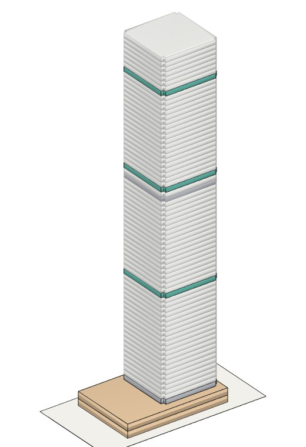<figcaption><b>B9b</b> B7q with a single 2.5 m square notch at each corner (5% of width), cor</figcaption></figure></div>
  <div class="tablewrap"><table><thead><tr><th scope="col">Design</th><th scope="col">Non-res FSR</th><th scope="col">Margin m²</th><th scope="col">Margin, 3 plant floors</th><th scope="col">Homes (true plates)</th><th scope="col">Corners (declared)</th><th scope="col">Downwash</th><th scope="col">Windiest deck</th><th scope="col">Ground calm</th><th scope="col">Low-sun glare</th><th scope="col">sDA</th><th scope="col">TEUI net of PV</th><th scope="col">Fail lines</th><th scope="col">Check lines</th></tr></thead><tbody><tr><th scope="row">B8a</th><td>9.13</td><td>+1,467</td><td>-1,015</td><td>621</td><td>Low</td><td>High from SE; Low from WNW, W</td><td>9.6 m/s at 300 m</td><td>89%</td><td>513 h/yr</td><td>62%</td><td>63.9 kWh/m²·yr -36%</td><td>13</td><td>62</td></tr><tr class="chosen"><th scope="row">B9a ✓</th><td>9.13</td><td>+1,439</td><td>-1,042</td><td>621</td><td>Low</td><td>High from SE; Low from WNW, W</td><td>9.6 m/s at 300 m</td><td>89%</td><td>269 h/yr</td><td>62%</td><td>63.9 kWh/m²·yr -36%</td><td>12</td><td>63</td></tr><tr><th scope="row">B9b</th><td>9.10</td><td>+1,187</td><td>-1,288</td><td>621</td><td>Low</td><td>High from SE; Low from WNW, W</td><td>9.6 m/s at 300 m</td><td>89%</td><td>269 h/yr</td><td>62%</td><td>63.9 kWh/m²·yr -36%</td><td>12</td><td>63</td></tr></tbody></table></div>
  <dl class="why">
    <div><dt>What changed</dt><dd>The corner treatment changes from a 3 m chamfer to a double recession, two 1.25 m steps (B9a, 5% of width), or a single 2.5 m notch (B9b). Both are declared "stepped" in the wind screen. Nothing else changes.</dd></div>
    <div><dt>Why</dt><dd>Round-1 reviews: the wind engineer (Taipei 101 is a recession; recessions outperform chamfers in one study) and the facade engineer (keep the box's four facings, so no new true-W facet).</dd></div>
    <div><dt>Options tested</dt><dd>B9a (double recession) and B9b (single notch), against B8a.</dd></div>
    <div><dt>Choice</dt><dd><b>B9a.</b> Glare back to Check (269 h, zone N), margin 1,439 m², only 28 m² below B8a. That met the wind reviewer's pre-set condition (clear the glare Fail with a margin within about 30 m² of B8a). B9b clears the glare too but keeps less margin (1,187 m²).</dd></div>
    <div><dt>Who decided</dt><dd>Coordinator, by the condition the wind reviewer set before the run.</dd></div>
    <div><dt>Cost and trade-off</dt><dd>Margin 1,467 → 1,439 m²; −1,042 m² with the 3 plant floors the toolkit asks for (harness arithmetic). Eight re-entrant corners per storey: more wall (59,176 → 61,200 m², envelope / GFA 0.341 → 0.352) and more corner cladding units. The benefit is still literature only, and the wind-tunnel condition is written into the record: a high-frequency force-balance test of B7q, B8a and B9a with the three future towers, for cross-wind moment and top-floor accelerations, plus corner pressures.</dd></div>
    <div class="wide"><dt>Check results (value · state · source)</dt><dd><ul class="checks"><li><span class="st warn">Check</span> <b>Non-residential FSR ≥ 9.0</b> 9.13<span class="src">VTC brief p.16, p.19</span></li><li><span class="st ok">Pass</span> <b>Tower B: windward corners</b> stepped: Low (declared)<span class="src">City of Toronto wind study ToR (2022) 6.7.2</span></li><li><span class="st warn">Check</span> <b>Most low-sun glare (one zone)</b> 269 h a year (zone N)<span class="src">Sun &amp; Wind Studio engines, CWEC 2020 Vancouver Intl</span></li><li><span class="st warn">Check</span> <b>Envelope per floor area</b> 0.38<span class="src">Sun &amp; Wind Studio engines, CWEC 2020 Vancouver Intl</span></li><li><span class="st warn">Check</span> <b>Plant floors in the tower</b> 3–4 needed; 2 modelled<span class="src">Team preset (research P11-M03)</span></li></ul></dd></div>
    <div class="wide"><dt>Reviews of this design (they set the next change)</dt><dd><div class="reviews"><div class="rev"><p class="role">Structural engineer · B9a holds only if the third plant storey leaves the office band</p><ul><li><b>BLOCKER</b> With the 3 plant floors the toolkit asks for, the third storey inside the office band takes the margin to −1,042 m². <i>Fix:</i> a damper and plant crown at 300–304 m (cap 304.8 m) keeps +1,439 m².</li><li><b>MAJOR</b> The +180 m outrigger is not in the spec, and the transfer at +12–16 m sits on the podium step (218% Type 2), the weakness seen at Wellington; nothing in the geometry needs it.</li><li><b>MAJOR</b> Twist 120° is not next: columns following the twist lean 10–14°, past the 10° where Cayan Tower stopped; vertical columns leave corner cantilevers up to 9.6 m.</li></ul><p class="file">tower-B/iter/review_R2_structural.md</p></div></div></dd></div>
    <div class="wide"><dt>Toolkit map</dt><dd><b>Design node</b> design.massing, design.plates · <b>prompted by</b> built.sw-glazing (glare Fail), built.wind-screen · <b>judged by</b> built.sw-glazing, built.wind-screen, built.fsr, built.sw-form · <b>tools</b> massing (polygon plan), wind screen setting (declared)</dd></div>
    <div class="q"><dt>Open question for critics</dt><dd>The recession costs as much area as the chamfer but keeps the facade zones working. Is "keeps the facade logic" a legitimate reason to choose a corner, when the wind gain itself is unmeasured?</dd></div>
  </dl></details></div></li><li class="change" id="r-B2-3">
  
  <div class="cbody"><p class="cno"><b>3</b> · B10a <span class="chip" style="--c:#f4c430;--i:#785a00;--s:#fff8dd">Program</span><span class="chip" style="--c:#8b5cf6;--i:#5b21b6;--s:#f3eeff">Schematic</span></p>
  <h4>Lift the third plant storey into a damper crown</h4><p class="reason">The structural reviewer found the gate fails once a third plant floor sits in the office band, so the plant and a damper went into a crown above the homes.</p><p class="cmeta">margin +1,439 m² · 621 homes · 13 Fail lines</p><details class="full"><summary>Full record: options, choice, cost, checks, reviews</summary>
  <div class="thumbs"><figure class=""><figcaption><b>B9a</b> B7q with a double corner recession, two 1.25 m steps (5% of width), co</figcaption></figure><figure class="on"><figcaption><b>B10a</b> B9a + a damper and plant crown at +300 to +304 m (third plant storey a</figcaption></figure><figure class=""><figcaption><b>B10b</b> B9a with the top residential storey (L74) turned into plant (third pla</figcaption></figure></div>
  <div class="tablewrap"><table><thead><tr><th scope="col">Design</th><th scope="col">Non-res FSR</th><th scope="col">Margin m²</th><th scope="col">Margin, 3 plant floors</th><th scope="col">Homes (true plates)</th><th scope="col">Corners (declared)</th><th scope="col">Downwash</th><th scope="col">Windiest deck</th><th scope="col">Ground calm</th><th scope="col">Fail lines</th><th scope="col">Check lines</th></tr></thead><tbody><tr><th scope="row">B9a</th><td>9.13</td><td>+1,439</td><td>-1,042</td><td>621</td><td>Low</td><td>High from SE; Low from WNW, W</td><td>9.6 m/s at 300 m</td><td>89%</td><td>12</td><td>63</td></tr><tr class="chosen"><th scope="row">B10a ✓</th><td>9.13</td><td>+1,439</td><td>+1,439</td><td>621</td><td>Low</td><td>High from SE; Low from WNW, W</td><td>9.6 m/s at 304 m</td><td>89%</td><td>13</td><td>62</td></tr><tr><th scope="row">B10b</th><td>9.13</td><td>+1,439</td><td>+1,439</td><td>598</td><td>Low</td><td>High from SE; Low from WNW, W</td><td>9.6 m/s at 300 m</td><td>89%</td><td>12</td><td>63</td></tr></tbody></table></div>
  <dl class="why">
    <div><dt>What changed</dt><dd>One storey is added on top (+300 to +304 m) as plant and a damper; the +180 m outrigger is declared. The alternative put the plant in the top residential storey instead.</dd></div>
    <div><dt>Why</dt><dd>Structural review R2, BLOCKER F1: the toolkit asks for 3–4 plant floors, and a third one inside the office floors breaks the gate (−1,042 m²).</dd></div>
    <div><dt>Options tested</dt><dd>B10a: a crown at 300–304 m. B10b: L74 becomes plant (height stays 300 m).</dd></div>
    <div><dt>Choice</dt><dd><b>B10a.</b> Plant floors Pass with the margin unchanged (+1,439 m²). B10b also passes plant but drops homes to 598, under the 600 line.</dd></div>
    <div><dt>Who decided</dt><dd>Coordinator, by B's keep-rule (a reading improves and no gate worsens; slenderness is not a gate).</dd></div>
    <div><dt>Cost and trade-off</dt><dd>Height 300 → 304 m; slenderness 5.96 → 6.04 : 1, which turns that line from Check to Fail (over 6 : 1 a wind-tunnel study is required, already part of the record). Damper type and mass are unknown; one storey only fits shallow sloshing tanks.</dd></div>
    <div class="wide"><dt>Check results (value · state · source)</dt><dd><ul class="checks"><li><span class="st ok">Pass</span> <b>Plant floors in the tower</b> 3–4 needed; 3 modelled<span class="src">Team preset (research P11-M03)</span></li><li><span class="st warn">Check</span> <b>Outrigger floors</b> L45<span class="src">NBC 2020 Div B 4.1.8</span></li><li><span class="st ok">Pass</span> <b>Height band: Tower B</b> 304.0 m<span class="src">VTC brief p.16, p.19</span></li><li><span class="st bad">Fail</span> <b>Slenderness H / effective width</b> 6.04 : 1 (w = 50.3 m)<span class="src">NBC 2020 Div B 4.1.7</span></li><li><span class="st warn">Check</span> <b>Non-residential FSR ≥ 9.0</b> 9.13<span class="src">VTC brief p.16, p.19</span></li></ul></dd></div>
    <div class="wide"><dt>Reviews of this design (they set the next change)</dt><dd><div class="reviews"><div class="rev"><p class="role">Energy and carbon consultant · go forward; no BLOCKER</p><ul><li><b>MAJOR</b> The governing TEDI, TEUI and GHGI lines are presets: TEDI is 15 × the non-plant share of floor area, so no facade change can move them; B10a's "gain" came only from the plant storey.</li><li><b>MAJOR</b> R4's two moves fail when run: residential WWR 0.50 turns two Pass lines to Check, and PV spandrels take about 140 years to repay their carbon on BC power.</li><li><b>MAJOR</b> The two Fails (overheating, openable area) are not facade problems: the overheating sits in the windowless interior zone at L41; homes at L60 read 0 h.</li><li><i>Next variable:</i> deeper devices on N and W (measured by the reviewer: glare 269 → 189 h, beam through glass −16%).</li></ul><p class="file">tower-B/iter/review_R3_energy.md</p></div></div></dd></div>
    <div class="wide"><dt>Toolkit map</dt><dd><b>Design node</b> design.program, design.plates · <b>prompted by</b> built.life-safety (plant floors), built.structure · <b>judged by</b> built.life-safety, built.structure, built.wind-procedure, built.vtc-rules · <b>tools</b> program (plant floor), anatomy (outriggers), massing (height)</dd></div>
    <div class="q"><dt>Open question for critics</dt><dd>Is a 4 m damper crown a structural feature worth expressing on the skyline, or should it stay hidden plant?</dd></div>
  </dl></details></div></li><li class="change" id="r-B2-4">
  
  <div class="cbody"><p class="cno"><b>4</b> · B11a <span class="chip" style="--c:#8b5cf6;--i:#5b21b6;--s:#f3eeff">Schematic</span></p>
  <h4>Deepen the devices on the two faces that set glare</h4><p class="reason">The energy reviewer showed the energy lines are presets no facade can move, and measured that deeper devices on the two faces that set glare clear it; that became the next single variable.</p><p class="cmeta">margin +1,439 m² · 621 homes · 13 Fail lines</p><details class="full"><summary>Full record: options, choice, cost, checks, reviews</summary>
  <div class="thumbs"><figure class=""><figcaption><b>B10a</b> B9a + a damper and plant crown at +300 to +304 m (third plant storey a</figcaption></figure><figure class="on"><figcaption><b>B11a</b> B10a with deeper devices on the N and W faces (N fins 0.6 -&gt; 1.0 m, W </figcaption></figure></div>
  <div class="tablewrap"><table><thead><tr><th scope="col">Design</th><th scope="col">Low-sun glare</th><th scope="col">sDA</th><th scope="col">TEUI net of PV</th><th scope="col">Non-res FSR</th><th scope="col">Margin m²</th><th scope="col">Margin, 3 plant floors</th><th scope="col">Homes (true plates)</th><th scope="col">Fail lines</th><th scope="col">Check lines</th></tr></thead><tbody><tr><th scope="row">B10a</th><td>269 h/yr</td><td>62%</td><td>63.1 kWh/m²·yr -37%</td><td>9.13</td><td>+1,439</td><td>+1,439</td><td>621</td><td>13</td><td>62</td></tr><tr class="chosen"><th scope="row">B11a ✓</th><td>189 h/yr</td><td>59%</td><td>63.1 kWh/m²·yr -37%</td><td>9.13</td><td>+1,439</td><td>+1,439</td><td>621</td><td>13</td><td>61</td></tr></tbody></table></div>
  <dl class="why">
    <div><dt>What changed</dt><dd>N fins 0.6 → 1.0 m and W eggcrate 0.5 → 0.6 m; every other zone unchanged.</dd></div>
    <div><dt>Why</dt><dd>Energy review R3: of the facade variables, only this one moved a reading without worsening another (the reviewer ran three one-variable versions).</dd></div>
    <div><dt>Options tested</dt><dd>One variant, B11a, measured against B10a (the reviewer's two R4-derived variants, WWR 0.50 and PV spandrels, made readings worse and were not carried).</dd></div>
    <div><dt>Choice</dt><dd><b>B11a.</b> Low-sun glare 269 → 189 h (Check → Pass); devices block 64 → 70% of the beam; ASE 9 → 8%.</dd></div>
    <div><dt>Who decided</dt><dd>Coordinator, by B's keep-rule (a reading improves, no gate worsens).</dd></div>
    <div><dt>Cost and trade-off</dt><dd>sDA 62 → 59% (still above the 55% line); side views on N narrow from 68° to 56° (reviewer's arithmetic); a glare margin of only 11 h; the added fin carbon is not counted by the toolkit (unknown).</dd></div>
    <div class="wide"><dt>Check results (value · state · source)</dt><dd><ul class="checks"><li><span class="st ok">Pass</span> <b>Most low-sun glare (one zone)</b> 189 h a year<span class="src">Sun &amp; Wind Studio engines, CWEC 2020 Vancouver Intl</span></li><li><span class="st ok">Pass</span> <b>Daylight autonomy (sDA300/50%, LEED)</b> 59%<span class="src">Sun &amp; Wind Studio engines, CWEC 2020 Vancouver Intl</span></li><li><span class="st warn">Check</span> <b>Annual sun exposure (ASE1000/250h)</b> 8%<span class="src">Sun &amp; Wind Studio engines, CWEC 2020 Vancouver Intl</span></li><li><span class="st warn">Check</span> <b>Non-residential FSR ≥ 9.0</b> 9.13<span class="src">VTC brief p.16, p.19</span></li></ul></dd></div>
    <div class="wide"><dt>Reviews of this design (they set the next change)</dt><dd><div class="reviews"><div class="rev"><p class="role">Cost consultant · the economics line cannot judge B&#x27;s moves</p><ul><li><b>MAJOR</b> The economics line reads only area, use and storey count; under its unverified presets every m² loses money, so the corners score +C$8.7 M just for losing area and the damper crown −C$45.1 M, while the devices score C$0 though they add about 8,400 m² of surface.</li><li><b>MAJOR</b> The land residual is −C$1.30 B, about C$1.7 B short of the land value; the largest form move is 2.6% of that gap.</li><li><b>MAJOR</b> The transfer storey is an office floor priced as plant. <i>Fix:</i> L3 becomes office, columns to the foundation: margin 1,439 → 3,920 m².</li></ul><p class="file">tower-B/iter/review_R4_cost.md</p></div></div></dd></div>
    <div class="wide"><dt>Toolkit map</dt><dd><b>Design node</b> design.plates · <b>prompted by</b> built.sw-glazing (glare Check), built.sw-energy (presets) · <b>judged by</b> built.sw-glazing, built.sw-daylight, built.sw-energy, built.energy-carbon · <b>tools</b> facade-zones</dd></div>
    <div class="q"><dt>Open question for critics</dt><dd>B has spent four iterations on its skin and corners while its gate margin sits at 1,439 m². Is that the right order, or should the next variable win back area first?</dd></div>
  </dl></details></div></li><li class="change" id="r-B2-5">
  
  <div class="cbody"><p class="cno"><b>5</b> · B12b <span class="chip" style="--c:#f4c430;--i:#785a00;--s:#fff8dd">Program</span><span class="chip" style="--c:#8b5cf6;--i:#5b21b6;--s:#f3eeff">Schematic</span><span class="ret">↻ back to Program</span></p>
  <h4>Drop the transfer storey: office at L3, plant at L2</h4><p class="reason">The cost reviewer found the transfer storey was an office floor priced as plant and no geometry needs a transfer; making it office lifts the margin to 3,920 m², and the podium storey above the lobby took the plant.</p><p class="cmeta">margin +3,920 m² · 621 homes · 13 Fail lines</p><details class="full"><summary>Full record: options, choice, cost, checks, reviews</summary>
  <div class="thumbs"><figure class=""><figcaption><b>B11a</b> B10a with deeper devices on the N and W faces (N fins 0.6 -&gt; 1.0 m, W </figcaption></figure><figure class=""><figcaption><b>B12a</b> B11a with the transfer storey (L3, +12 to +16 m) turned into office; o</figcaption></figure><figure class="on"><figcaption><b>B12b</b> B12a with the podium storey L2 as plant, so three plant floors remain</figcaption></figure></div>
  <div class="tablewrap"><table><thead><tr><th scope="col">Design</th><th scope="col">Non-res FSR</th><th scope="col">Margin m²</th><th scope="col">Margin, 3 plant floors</th><th scope="col">Homes (true plates)</th><th scope="col">Fail lines</th><th scope="col">Check lines</th></tr></thead><tbody><tr><th scope="row">B11a</th><td>9.13</td><td>+1,439</td><td>+1,439</td><td>621</td><td>13</td><td>61</td></tr><tr><th scope="row">B12a</th><td>9.34</td><td>+3,920</td><td>+1,439</td><td>621</td><td>13</td><td>62</td></tr><tr class="chosen"><th scope="row">B12b ✓</th><td>9.34</td><td>+3,920</td><td>+3,920</td><td>621</td><td>13</td><td>61</td></tr></tbody></table></div>
  <dl class="why">
    <div><dt>What changed</dt><dd>L3 (+12 to +16 m), the transfer storey, becomes office; columns are declared continuous to the foundation. In B12b the civic podium storey L2 becomes plant so three plant floors remain.</dd></div>
    <div><dt>Why</dt><dd>Cost review R4 (an office floor priced as plant); structural review R2 (the tower outline sits at least 3 m inside the podium, so nothing needs a transfer); R4 research (the transfer was the Wellington weakness).</dd></div>
    <div><dt>Options tested</dt><dd>B12a: L3 office only. B12b: L3 office and L2 plant.</dd></div>
    <div><dt>Choice</dt><dd><b>B12b.</b> Margin 1,439 → 3,920 m², and +1,439 m² even with a fourth plant floor; plant floors stay Pass. B12a has the same margin but plant floors drop to 2 (Check).</dd></div>
    <div><dt>Who decided</dt><dd>Coordinator, by B's keep-rule (a reading improves, no gate worsens).</dd></div>
    <div><dt>Cost and trade-off</dt><dd>Civic floor area at the base falls (tier 3 FSR 10.46 → 9.99). Plant sits on the second floor of the podium, above the lobbies. The column continuity is declared; the toolkit still reads "core walls continuous" as unknown on the import route.</dd></div>
    <div class="wide"><dt>Check results (value · state · source)</dt><dd><ul class="checks"><li><span class="st warn">Check</span> <b>Non-residential FSR ≥ 9.0</b> 9.34<span class="src">VTC brief p.16, p.19</span></li><li><span class="st ok">Pass</span> <b>Plant floors in the tower</b> 3–4 needed; 3 modelled<span class="src">Team preset (research P11-M03)</span></li><li><span class="st warn">Check</span> <b>Non-residential FSR (tier 3)</b> 9.99<span class="src">VTC brief p.16, p.19</span></li></ul></dd></div>
    <div class="wide"><dt>Reviews of this design (they set the next change)</dt><dd><div class="reviews"><div class="rev"><p class="role">Vertical transport and life safety · BLOCKER on exit separation</p><ul><li><b>BLOCKER</b> Exit stairs 26.7 m apart against ≥ 35.2 m; no layout with both stairs inside a 24 m core can pass. <i>Fix:</i> stair placement "mixed" (reviewer arithmetic: 45.4 m spacing, 38.6 m travel).</li><li><b>MAJOR</b> Residents of L46 change lifts in the office sky lobby at L25; L3 office has no lift stop.</li><li><b>MINOR</b> Podium travel grows to about 56 m; no lift runs the full height for firefighters and plant goods.</li></ul><p class="file">tower-B/iter/review_R5_vt.md</p></div></div></dd></div>
    <div class="wide"><dt>Toolkit map</dt><dd><b>Design node</b> design.program, design.plates · <b>prompted by</b> built.fsr (margin), built.economics, built.structure (transfer) · <b>judged by</b> built.fsr, built.vtc-rules, built.life-safety, built.economics · <b>tools</b> program (floor uses)</dd></div>
    <div class="q"><dt>Open question for critics</dt><dd>B won 2,481 m² by deleting a storey of structure rather than by shaping. Should a performance-led tower present that as a performance result?</dd></div>
  </dl></details></div></li><li class="change" id="r-B2-6">
  
  <div class="cbody"><p class="cno"><b>6</b> · B13a <span class="chip" style="--c:#8b5cf6;--i:#5b21b6;--s:#f3eeff">Schematic</span></p>
  <h4>One exit stair to the plate corner</h4><p class="reason">Like A, B's two exit stairs could never be far enough apart inside a 24 m core; one stair moved to the plate corner, the only change.</p><p class="cmeta">margin +3,920 m² · 621 homes · 11 Fail lines</p><details class="full"><summary>Full record: options, choice, cost, checks, reviews</summary>
  <div class="thumbs"><figure class=""><figcaption><b>B12b</b> B12a with the podium storey L2 as plant, so three plant floors remain</figcaption></figure><figure class="on"><figcaption><b>B13a</b> B12b with one exit stair moved to the plate edge (stair placement &quot;mix</figcaption></figure></div>
  <div class="tablewrap"><table><thead><tr><th scope="col">Design</th><th scope="col">Exit separation</th><th scope="col">Lift rises failing</th><th scope="col">Non-res FSR</th><th scope="col">Margin m²</th><th scope="col">Margin, 3 plant floors</th><th scope="col">Homes (true plates)</th><th scope="col">Fail lines</th><th scope="col">Check lines</th></tr></thead><tbody><tr><th scope="row">B12b</th><td>26.7 m between the stairs</td><td>0</td><td>9.34</td><td>+3,920</td><td>+3,920</td><td>621</td><td>13</td><td>61</td></tr><tr class="chosen"><th scope="row">B13a ✓</th><td>45.4 m between the stairs</td><td>0</td><td>9.34</td><td>+3,920</td><td>+3,920</td><td>621</td><td>11</td><td>61</td></tr></tbody></table></div>
  <dl class="why">
    <div><dt>What changed</dt><dd>Stair placement "mixed": one stair in the core, one at the plate corner (the toolkit puts it at the true-S corner, just inside the corner recess).</dd></div>
    <div><dt>Why</dt><dd>Vertical transport review R5, BLOCKER on exit separation.</dd></div>
    <div><dt>Options tested</dt><dd>One variant against B12b (the reviewer's arithmetic ruled out "perimeter": travel 46.9 m).</dd></div>
    <div><dt>Choice</dt><dd><b>B13a.</b> Exit separation 26.7 → 45.4 m (Fail → Pass); Fail lines 13 → 11; margin unchanged.</dd></div>
    <div><dt>Who decided</dt><dd>Coordinator, by B's keep-rule.</dd></div>
    <div><dt>Cost and trade-off</dt><dd>About 17 m² of floor and 9 m of facade per storey for the edge stair (reviewer arithmetic). Podium travel distance 56.2 m stays Fail, because the toolkit knows only the core stairs (gap G11).</dd></div>
    <div class="wide"><dt>Check results (value · state · source)</dt><dd><ul class="checks"><li><span class="st ok">Pass</span> <b>Exit separation</b> 45.4 m between the stairs<span class="src">VBBL 2019, 3.4.2.3</span></li><li><span class="st bad">Fail</span> <b>Travel distance, podium floors</b> 56.2 m to the core stairs<span class="src">VBBL 2019, 3.4.2.5</span></li><li><span class="st warn">Check</span> <b>Non-residential FSR ≥ 9.0</b> 9.34<span class="src">VTC brief p.16, p.19</span></li></ul></dd></div>
    <div class="wide"><dt>Reviews of this design (they set the next change)</dt><dd><div class="reviews"><div class="rev"><p class="role">Urban designer, public realm · one MAJOR: the centred podium leaves only strips</p><ul><li><b>MAJOR</b> The centred podium leaves strips of open ground (POPS shape Check, 1:2.9). <i>Fix:</i> slide the podium to the east property line and move the link to x −23, a station plaza at no margin cost.</li><li><b>MINOR</b> B's frontage and station passes are toolkit defaults: the spec has no public-realm inputs.</li><li><b>MINOR</b> The podium step toward the wind reads 0 m because the toolkit ignored imported podiums (fixed in source tonight, T10).</li></ul><p class="file">tower-B/iter/review_R6_urban.md</p></div></div></dd></div>
    <div class="wide"><dt>Toolkit map</dt><dd><b>Design node</b> design.plates · <b>prompted by</b> built.egress (exit separation Fail) · <b>judged by</b> built.egress, built.life-safety, built.core-lifts · <b>tools</b> core (stair placement)</dd></div>
    <div class="q"><dt>Open question for critics</dt><dd>Two towers with different methods reached the same stair fix the same night. Is that evidence the toolkit's default (both stairs in the core) should change?</dd></div>
  </dl></details></div></li><li class="change" id="r-B2-7">
  
  <div class="cbody"><p class="cno"><b>7</b> · B14a <span class="chip" style="--c:#f4c430;--i:#785a00;--s:#fff8dd">Program</span><span class="chip" style="--c:#ff6b4a;--i:#a93920;--s:#fff0eb">Form</span><span class="ret">↻ back to Program</span></p>
  <h4>Slide the podium east: a station plaza</h4><p class="reason">B had not touched its ground since round 1 and its centred podium left only strips; sliding the podium east opens a station plaza and cuts the open-site shadow from 40% to 14%, but the plaza loses its windward shelter.</p><p class="cmeta">margin +3,920 m² · 621 homes · 12 Fail lines</p><details class="full"><summary>Full record: options, choice, cost, checks, reviews</summary>
  <div class="thumbs"><figure class=""><figcaption><b>B13a</b> B12b with one exit stair moved to the plate edge (stair placement &quot;mix</figcaption></figure><figure class="on"><figcaption><b>B14a</b> B13a with the podium slid to the east property line: a station plaza o</figcaption></figure></div>
  <div class="tablewrap"><table><thead><tr><th scope="col">Design</th><th scope="col">Open site in new shadow</th><th scope="col">Sun lost by neighbours kWh</th><th scope="col">Corners (declared)</th><th scope="col">Downwash</th><th scope="col">Windiest deck</th><th scope="col">Ground calm</th><th scope="col">Public share above podium</th><th scope="col">Link open to sky</th><th scope="col">Sky-room exits</th><th scope="col">Fail lines</th><th scope="col">Check lines</th></tr></thead><tbody><tr><th scope="row">B13a</th><td>40%</td><td>50,417</td><td>Low</td><td>High from SE; Low from WNW, W</td><td>9.6 m/s at 304 m</td><td>89%</td><td>—</td><td>Clear of the buildings, open to the sky</td><td>—</td><td>11</td><td>61</td></tr><tr class="chosen"><th scope="row">B14a ✓</th><td>14%</td><td>50,414</td><td>Low</td><td>High from SE; Low from WNW, W</td><td>9.6 m/s at 304 m</td><td>90%</td><td>—</td><td>Clear of the buildings, open to the sky</td><td>—</td><td>12</td><td>57</td></tr></tbody></table></div>
  <dl class="why">
    <div><dt>What changed</dt><dd>The 90 × 60 m, 12 m podium slides to the east property line (centre x 27.39); the tower stays put. The mid-block link moves to x −23, 9.1 m wide, open to the sky.</dd></div>
    <div><dt>Why</dt><dd>Urban review R6, MAJOR: the open ground was strips, not a place.</dd></div>
    <div><dt>Options tested</dt><dd>One variant against B13a (the reviewer rejected growing the podium to the high street: shadow Check → Fail).</dd></div>
    <div><dt>Choice</dt><dd><b>B14a.</b> POPS shape Check → Pass (54.9 × 79.3 m); longest block side Check → Pass; open site in new shadow 40% → 14% (Pass); public open space 45%.</dd></div>
    <div><dt>Who decided</dt><dd>Coordinator, by B's keep-rule (three readings improve; no gate worsens).</dd></div>
    <div><dt>Cost and trade-off</dt><dd><b>Site peak wind 4.4 → 6.1 m/s (Check → Fail):</b> the plaza lost the podium's shelter on its windward W/WNW side, and the toolkit measured it. Fail lines 11 → 12. That sets the next variable.</dd></div>
    <div class="wide"><dt>Check results (value · state · source)</dt><dd><ul class="checks"><li><span class="st ok">Pass</span> <b>Open site in new shadow</b> 14%<span class="src">Sun &amp; Wind Studio engines</span></li><li><span class="st ok">Pass</span> <b>POPS shape</b> 54.9 × 79.3 m (1:1.4)<span class="src">CDDG draft Appendix A</span></li><li><span class="st bad">Fail</span> <b>Site peak wind</b> 6.1 m/s<span class="src">Sun &amp; Wind Studio engines</span></li><li><span class="st ok">Pass</span> <b>Connection open to the sky</b> Clear of the buildings<span class="src">CDDG draft Appendix A</span></li></ul></dd></div>
    <div class="wide"><dt>Reviews of this design (they set the next change)</dt><dd><div class="reviews"><div class="rev"><p class="role">City in Nature and ecology · BLOCKER: every City in Nature line is empty</p><ul><li><b>BLOCKER</b> Every City in Nature line reads "not entered". <i>Fix:</i> enter a plaza package (canopy 1,720 m², vegetated 3,500 m², 275 m³ retained, pathway, habitat assessment, 90% bird glass) as declared choices.</li><li><b>MAJOR</b> The wind engine ignores trees, so planting cannot clear the 6.1 m/s plaza Fail; in test runs a 6 m retail pavilion on the plaza's north edge cut it to 4.6 m/s (and adds 334 m² of retail), but the hull reading (G10) then misreads open space.</li><li><b>MINOR</b> A 12 m pavilion read worse than a 6 m one: the engine reads the tower base from the podium's second storey (new gap G13).</li></ul><p class="file">tower-B/iter/review_R7_cin.md</p></div></div></dd></div>
    <div class="wide"><dt>Toolkit map</dt><dd><b>Design node</b> design.program, design.massing · <b>prompted by</b> built.pr-ground (POPS strips), built.sw-shadow (40%) · <b>judged by</b> built.pr-ground, built.pr-streetwall, built.sw-shadow, built.sw-wind-comfort · <b>tools</b> massing (podium position), ground (link)</dd></div>
    <div class="q"><dt>Open question for critics</dt><dd>The plaza traded shelter for sun: 14% shadow but a 6.1 m/s peak. In Vancouver, which matters more for a station plaza, sun or shelter?</dd></div>
  </dl></details></div></li><li class="change" id="r-B2-8">
  
  <div class="cbody"><p class="cno"><b>8</b> · B15a <span class="chip" style="--c:#ff6b4a;--i:#a93920;--s:#fff0eb">Form</span><span class="chip" style="--c:#f4c430;--i:#785a00;--s:#fff8dd">Program</span></p>
  <h4>Plant the station plaza (City in Nature inputs)</h4><p class="reason">Every City in Nature line was empty; the new plaza got trees, a rain pathway and bird-safe glass as declared choices, the only change, while the wind fix waits for a tool that can read it.</p><p class="cmeta">margin +3,920 m² · 621 homes · 12 Fail lines</p><details class="full"><summary>Full record: options, choice, cost, checks, reviews</summary>
  <div class="thumbs"><figure class=""><figcaption><b>B14a</b> B13a with the podium slid to the east property line: a station plaza o</figcaption></figure><figure class="on"><figcaption><b>B15a</b> B14a + a City in Nature package for the station plaza (canopy 1,720 m2</figcaption></figure></div>
  <div class="tablewrap"><table><thead><tr><th scope="col">Design</th><th scope="col">Open site in new shadow</th><th scope="col">Sun lost by neighbours kWh</th><th scope="col">Corners (declared)</th><th scope="col">Downwash</th><th scope="col">Windiest deck</th><th scope="col">Ground calm</th><th scope="col">Fail lines</th><th scope="col">Check lines</th></tr></thead><tbody><tr><th scope="row">B14a</th><td>14%</td><td>50,414</td><td>Low</td><td>High from SE; Low from WNW, W</td><td>9.6 m/s at 304 m</td><td>90%</td><td>12</td><td>57</td></tr><tr class="chosen"><th scope="row">B15a ✓</th><td>14%</td><td>50,414</td><td>Low</td><td>High from SE; Low from WNW, W</td><td>9.6 m/s at 304 m</td><td>90%</td><td>12</td><td>59</td></tr></tbody></table></div>
  <dl class="why">
    <div><dt>What changed</dt><dd>City in Nature inputs entered for the first time as declared design choices: canopy 1,720 m² (15% of the site), vegetated cover 3,500 m², 275 m³ retained, rainwater pathway and habitat assessment planned, 90% bird-treated glass.</dd></div>
    <div><dt>Why</dt><dd>City in Nature review R7, BLOCKER (30% jury criterion, nothing entered).</dd></div>
    <div><dt>Options tested</dt><dd>One variant (the reviewer's windbreak pavilion was set aside: it needs the public-realm tool to be read correctly).</dd></div>
    <div><dt>Choice</dt><dd><b>B15a.</b> Canopy 15%, habitat, rain pathway and bird glass Pass; retention 24 mm Check; detention 438 → 315 m³.</dd></div>
    <div><dt>Who decided</dt><dd>Coordinator, by B's keep-rule; the pavilion deferred to round 3 for lack of a tool.</dd></div>
    <div><dt>Cost and trade-off</dt><dd>Every new Pass rests on a declared value that needs its professional source. The plaza wind Fail (6.1 m/s) remains, because trees do not exist in the wind engine (gap G13).</dd></div>
    <div class="wide"><dt>Check results (value · state · source)</dt><dd><ul class="checks"><li><span class="st ok">Pass</span> <b>Tree canopy at maturity, share of site</b> 15% (declared)<span class="src">City in Nature node</span></li><li><span class="st ok">Pass</span> <b>Rainwater: engineered detention pathway</b> planned (declared)<span class="src">City in Nature node</span></li><li><span class="st warn">Check</span> <b>Rainfall retained</b> 24 mm (declared)<span class="src">City in Nature node</span></li><li><span class="st bad">Fail</span> <b>Site peak wind</b> 6.1 m/s<span class="src">Sun &amp; Wind Studio engines</span></li></ul></dd></div>
    <div class="wide"><dt>Reviews of this design (they set the next change)</dt><dd><div class="reviews"><div class="rev"><p class="role">Developer / client · all eight moves survive a lender review; one BLOCKER</p><ul><li><b>BLOCKER</b> L3 office has no lift stop, so the floor cannot be leased.</li><li><b>MAJOR</b> 41 office storeys in one stack (about 1.10 M sq ft) is a leasing risk; Vancouver vacancy and absorption are unknown (no invented market figures). <i>Fix:</i> L3–L14 hotel in the existing low-rise lift zone.</li><li><b>MAJOR</b> The 6.1 m/s plaza wind Fail sits at the station entrance; residents of L46 change lifts in the office sky lobby.</li></ul><p class="file">tower-B/iter/review_R8_developer.md</p></div></div></dd></div>
    <div class="wide"><dt>Toolkit map</dt><dd><b>Design node</b> design.massing, design.program · <b>prompted by</b> built.city-in-nature (all not entered), built.sw-wind-comfort (plaza peak) · <b>judged by</b> built.city-in-nature, built.sw-wind-comfort · <b>tools</b> City in Nature inputs</dd></div>
    <div class="q"><dt>Open question for critics</dt><dd>Trees are the plaza's natural windbreak, yet the toolkit can only shelter it with a building. Should the design wait for a tree-aware wind tool, or build the pavilion now?</dd></div>
  </dl></details></div></li><li class="change" id="r-B2-9">
  
  <div class="cbody"><p class="cno"><b>9</b> · B16a <span class="chip" style="--c:#f4c430;--i:#785a00;--s:#fff8dd">Program</span><span class="ret">↻ back to Program</span></p>
  <h4>The low-rise zone becomes a hotel on the plaza</h4><p class="reason">The developer flagged 41 office storeys in one stack as a leasing risk and an unleasable L3; the low-rise lift zone became a hotel whose lobby opens onto the new plaza, the only change.</p><p class="cmeta">margin +3,921 m² · 621 homes · 12 Fail lines</p><details class="full"><summary>Full record: options, choice, cost, checks, reviews</summary>
  <div class="thumbs"><figure class=""><figcaption><b>B15a</b> B14a + a City in Nature package for the station plaza (canopy 1,720 m2</figcaption></figure><figure class="on"><figcaption><b>B16a</b> B15a with L3-L14 as hotel (12 storeys, the existing low-rise lift zone</figcaption></figure></div>
  <div class="tablewrap"><table><thead><tr><th scope="col">Design</th><th scope="col">Non-res FSR</th><th scope="col">Margin m²</th><th scope="col">Margin, 3 plant floors</th><th scope="col">Homes (true plates)</th><th scope="col">Fail lines</th><th scope="col">Check lines</th></tr></thead><tbody><tr><th scope="row">B15a</th><td>9.34</td><td>+3,920</td><td>+3,920</td><td>621</td><td>12</td><td>59</td></tr><tr class="chosen"><th scope="row">B16a ✓</th><td>9.34</td><td>+3,921</td><td>+3,921</td><td>621</td><td>12</td><td>64</td></tr></tbody></table></div>
  <dl class="why">
    <div><dt>What changed</dt><dd>L3–L14 (12 storeys, the existing low-rise lift zone) become hotel; office runs L15–L44 (29 storeys).</dd></div>
    <div><dt>Why</dt><dd>Developer review R8: an unleasable L3 (no lift stop) and leasing risk in a 41-storey office stack.</dd></div>
    <div><dt>Options tested</dt><dd>One variant (the reviewer's alternative, the windward pavilion, waits for the public-realm tool).</dd></div>
    <div><dt>Choice</dt><dd><b>B16a.</b> Margin unchanged (+3,921 m²; hotel counts toward the gate); 396 keys; lift cars 49 → 45; Fail lines unchanged.</dd></div>
    <div><dt>Who decided</dt><dd>Coordinator, by B's keep-rule (lift cars fall, no gate worsens); the leasing gain is a client judgement, not a check.</dd></div>
    <div><dt>Cost and trade-off</dt><dd>Hotel fit-out (about C$43 M at the toolkit's unverified C$100,000-per-key preset, reviewer arithmetic); operator terms unknown; an acoustic slab over the L2 plant; market data unknown.</dd></div>
    <div class="wide"><dt>Check results (value · state · source)</dt><dd><ul class="checks"><li><span class="st warn">Check</span> <b>Non-residential FSR ≥ 9.0</b> 9.34<span class="src">VTC brief p.16, p.19</span></li><li><span class="st unk">Unknown</span> <b>Hotel keys</b> 396<span class="src">Interior node (unit-mix preset)</span></li><li><span class="st unk">Unknown</span> <b>Lift cars</b> 45<span class="src">Core and lifts node</span></li></ul></dd></div>
    <div class="wide"><dt>Reviews of this design (they set the next change)</dt><dd><div class="reviews"><div class="rev"><p class="role">Cultural-context reviewer (claims no engagement) · three MAJOR</p><ul><li><b>MAJOR</b> The plaza's public share is a toolkit default (85%) B never declared; only the link has a right of way. <i>Fix:</i> declare the plaza fully public with a statutory right of way, open 24 h.</li><li><b>MAJOR</b> Nothing is held for others to decide. <i>Fix:</i> a 108 m² rent-free room on the plaza face, unnamed and assigned to no group.</li><li><b>MAJOR</b> Carbon is shown as savings (−37%, −72%, "ratio 0.80"). <i>Fix:</i> one panel in tonnes with no offsets, after reconciling the digest's three TEUI values.</li></ul><p class="file">tower-B/iter/review_R9_cultural.md</p></div></div></dd></div>
    <div class="wide"><dt>Toolkit map</dt><dd><b>Design node</b> design.program · <b>prompted by</b> built.core-lifts (L3 no stop), built.economics · <b>judged by</b> built.fsr, built.core-lifts, built.interior, built.economics · <b>tools</b> program (floor uses)</dd></div>
    <div class="q"><dt>Open question for critics</dt><dd>Would a lender fund 29 office storeys plus a 12-storey hotel sooner than 41 office storeys? The toolkit cannot say; who should?</dd></div>
  </dl></details></div></li><li class="change" id="r-B2-10">
  
  <div class="cbody"><p class="cno"><b>10</b> · B17a <span class="chip" style="--c:#e145c2;--i:#9b227c;--s:#fdecf8">Presentation</span><span class="chip" style="--c:#f4c430;--i:#785a00;--s:#fff8dd">Program</span></p>
  <h4>The plaza becomes public land: a 24-hour right of way</h4><p class="reason">The cultural reviewer found the plaza's public share was an undeclared default and nothing was held for others; the plaza is now declared fully public with a 24-hour right of way, the only measured change.</p><p class="cmeta">margin +3,921 m² · 621 homes · 12 Fail lines</p><details class="full"><summary>Full record: options, choice, cost, checks, reviews</summary>
  <div class="thumbs"><figure class=""><figcaption><b>B16a</b> B15a with L3-L14 as hotel (12 storeys, the existing low-rise lift zone</figcaption></figure><figure class="on"><figcaption><b>B17a</b> B16a with the plaza and side strips declared fully public: statutory r</figcaption></figure></div>
  <div class="tablewrap"><table><thead><tr><th scope="col">Design</th><th scope="col">Open site in new shadow</th><th scope="col">Sun lost by neighbours kWh</th><th scope="col">Public share above podium</th><th scope="col">Link open to sky</th><th scope="col">Sky-room exits</th><th scope="col">Fail lines</th><th scope="col">Check lines</th></tr></thead><tbody><tr><th scope="row">B16a</th><td>14%</td><td>50,414</td><td>—</td><td>Clear of the buildings, open to the sky</td><td>—</td><td>12</td><td>64</td></tr><tr class="chosen"><th scope="row">B17a ✓</th><td>14%</td><td>50,414</td><td>—</td><td>Clear of the buildings, open to the sky</td><td>—</td><td>12</td><td>64</td></tr></tbody></table></div>
  <dl class="why">
    <div><dt>What changed</dt><dd>openPublicShare 0.85 (default) → 1.0 (a design choice), backed by a statutory right of way over the plaza and side strips, open 24 h; hotel drop-off on the east street; a 108 m² rent-free plaza room held for others to decide (declared); carbon shown in tonnes without offsets (board).</dd></div>
    <div><dt>Why</dt><dd>Cultural-context review R9.</dd></div>
    <div><dt>Options tested</dt><dd>B17a (all open ground public); the reviewer's alternative B17b (plaza only, 0.72) was not run.</dd></div>
    <div><dt>Choice</dt><dd><b>B17a.</b> Public open space 45% → 53% (6,054 m²).</dd></div>
    <div><dt>Who decided</dt><dd>Coordinator, by B's keep-rule.</dd></div>
    <div><dt>Cost and trade-off</dt><dd>A right of way limits what the owner can do with the plaza for good; the rent-free room is income given up (amount unknown). The claims guard cannot check the board text (gap G15).</dd></div>
    <div class="wide"><dt>Check results (value · state · source)</dt><dd><ul class="checks"><li><span class="st ok">Pass</span> <b>Public open space on the site</b> 53% (6,054 m² of 11,474 m²)<span class="src">CDDG draft Appendix A</span></li><li><span class="st unk">Unknown</span> <b>Engagement and claims guard</b> not runnable in the harness<span class="src">Culture claims node</span></li></ul></dd></div>
    <div class="wide"><dt>Reviews of this design (they set the next change)</dt><dd><div class="reviews"><div class="rev"><p class="role">Jury member · form not distinctive enough: a box with refinements</p><ul><li><b>BLOCKER (for premiation, not buildability)</b> B17a is still the B7q shaft: one plate type, no slab-edge movement, the same three bands. <i>Next round:</i> a whole-tower twist (90° and 180°, as design choices), which costs no floor area, read by a geometry-based corner/twist reader and an across-wind screen.</li><li><b>MAJOR</b> Human scale is weak: the station plaza peaks at 6.1 m/s (Fail) and the high street has 0% streetwall. The plaza needs a wind model that counts trees.</li><li>Scores: human scale weak; cultural context adequate (honest, declared, not visible in the tower); design excellence weak; urban integration strong (53% public open space, plaza to the station).</li><li>Method: every keep and reject is traceable, and real costs surfaced (glare, plaza wind); but the form was never reopened after B7q, and the keep-rule favours what the toolkit can measure.</li></ul><p class="file">tower-B/iter/review_R10_jury.md</p></div></div></dd></div>
    <div class="wide"><dt>Toolkit map</dt><dd><b>Design node</b> design.frame, design.program · <b>prompted by</b> built.pr-ground (default share), built.culture-claims · <b>judged by</b> built.pr-ground, built.culture-claims (not runnable) · <b>tools</b> ground (public share)</dd></div>
    <div class="q"><dt>Open question for critics</dt><dd>Does a jury read a measured, 24-hour right of way over a plaza as cultural context, or only as urban design?</dd></div>
  </dl></details></div></li></ol><details class="mapd"><summary>Process map, tower B, round 2</summary><figure class="dgwrap"><div class="scrollx"><svg viewBox="0 0 1030 352" role="img" aria-labelledby="dg-2B-t" class="diagram" style="min-width:900px"><title id="dg-2B-t">Tower B: each iteration placed on the toolkit phase it worked in, with returns to earlier phases</title><defs><marker id="ar-2B" viewBox="0 0 10 10" refX="9" refY="5" markerWidth="7" markerHeight="7" orient="auto"><path d="M0,0 L10,5 L0,10 z" fill="#d9480f"/></marker></defs><rect x="0" y="24.0" width="1030" height="44" fill="#e7f7fc"/><text x="12" y="45" class="dl" fill="#006b85">Site</text><text x="12" y="60" class="dm">design.site</text><rect x="0" y="74.0" width="1030" height="44" fill="#fff0eb"/><text x="12" y="95" class="dl" fill="#a93920">Form</text><text x="12" y="110" class="dm">design.massing</text><rect x="0" y="124.0" width="1030" height="44" fill="#fff8dd"/><text x="12" y="145" class="dl" fill="#785a00">Program</text><text x="12" y="160" class="dm">design.program</text><rect x="0" y="174.0" width="1030" height="44" fill="#f3eeff"/><text x="12" y="195" class="dl" fill="#5b21b6">Schematic</text><text x="12" y="210" class="dm">design.plates</text><rect x="0" y="224.0" width="1030" height="44" fill="#fdecf8"/><text x="12" y="245" class="dl" fill="#9b227c">Presentation</text><text x="12" y="260" class="dm">design.frame</text><line x1="150" y1="46" x2="150" y2="96" stroke="#8a8f94" stroke-width="2"/><circle cx="150" cy="46" r="7" fill="#fff" stroke="#006b85" stroke-width="2.5"/><text x="150" y="322" text-anchor="middle" class="dl">B8a</text><text x="150" y="339" text-anchor="middle" class="dm">chamfer</text><line x1="234" y1="96" x2="234" y2="196" stroke="#8a8f94" stroke-width="2"/><circle cx="234" cy="196" r="7" fill="#fff" stroke="#5b21b6" stroke-width="2.5"/><text x="234" y="322" text-anchor="middle" class="dl">B9a</text><text x="234" y="339" text-anchor="middle" class="dm">recession</text><line x1="318" y1="146" x2="318" y2="196" stroke="#8a8f94" stroke-width="2"/><circle cx="318" cy="146" r="7" fill="#fff" stroke="#785a00" stroke-width="2.5"/><text x="318" y="322" text-anchor="middle" class="dl">B10a</text><text x="318" y="339" text-anchor="middle" class="dm">damper crown</text><text x="402" y="322" text-anchor="middle" class="dl">B11a</text><text x="402" y="339" text-anchor="middle" class="dm">deeper devic</text><line x1="486" y1="146" x2="486" y2="196" stroke="#8a8f94" stroke-width="2"/><circle cx="486" cy="196" r="7" fill="#fff" stroke="#5b21b6" stroke-width="2.5"/><text x="486" y="322" text-anchor="middle" class="dl">B12b</text><text x="486" y="339" text-anchor="middle" class="dm">no transfer</text><text x="570" y="322" text-anchor="middle" class="dl">B13a</text><text x="570" y="339" text-anchor="middle" class="dm">edge stair</text><line x1="654" y1="96" x2="654" y2="146" stroke="#8a8f94" stroke-width="2"/><circle cx="654" cy="96" r="7" fill="#fff" stroke="#a93920" stroke-width="2.5"/><text x="654" y="322" text-anchor="middle" class="dl">B14a</text><text x="654" y="339" text-anchor="middle" class="dm">station plaz</text><line x1="738" y1="96" x2="738" y2="146" stroke="#8a8f94" stroke-width="2"/><circle cx="738" cy="146" r="7" fill="#fff" stroke="#785a00" stroke-width="2.5"/><text x="738" y="322" text-anchor="middle" class="dl">B15a</text><text x="738" y="339" text-anchor="middle" class="dm">plaza nature</text><text x="822" y="322" text-anchor="middle" class="dl">B16a</text><text x="822" y="339" text-anchor="middle" class="dm">hotel base</text><line x1="906" y1="146" x2="906" y2="246" stroke="#8a8f94" stroke-width="2"/><circle cx="906" cy="146" r="7" fill="#fff" stroke="#785a00" stroke-width="2.5"/><text x="906" y="322" text-anchor="middle" class="dl">B17a</text><text x="906" y="339" text-anchor="middle" class="dm">public plaza</text><line x1="150" y1="96" x2="234" y2="96" stroke="#5d646b" stroke-width="2"/><line x1="234" y1="96" x2="318" y2="196" stroke="#5d646b" stroke-width="2"/><line x1="318" y1="196" x2="402" y2="196" stroke="#5d646b" stroke-width="2"/><path d="M402,196 C432,196 446,146 470,146" fill="none" stroke="#d9480f" stroke-width="3" stroke-dasharray="7 4" marker-end="url(#ar-2B)"/><text x="444.0" y="138" text-anchor="middle" class="dr">↻</text><line x1="486" y1="146" x2="570" y2="196" stroke="#5d646b" stroke-width="2"/><path d="M570,196 C600,196 614,146 638,146" fill="none" stroke="#d9480f" stroke-width="3" stroke-dasharray="7 4" marker-end="url(#ar-2B)"/><text x="612.0" y="138" text-anchor="middle" class="dr">↻</text><line x1="654" y1="146" x2="738" y2="96" stroke="#5d646b" stroke-width="2"/><path d="M738,96 C768,96 782,146 806,146" fill="none" stroke="#d9480f" stroke-width="3" stroke-dasharray="7 4" marker-end="url(#ar-2B)"/><text x="780.0" y="88" text-anchor="middle" class="dr">↻</text><line x1="822" y1="146" x2="906" y2="246" stroke="#5d646b" stroke-width="2"/><circle cx="150" cy="96" r="15" fill="#ff6b4a" stroke="#a93920" stroke-width="2"/><text x="150" y="101" text-anchor="middle" class="dn">1</text><circle cx="234" cy="96" r="15" fill="#ff6b4a" stroke="#a93920" stroke-width="2"/><text x="234" y="101" text-anchor="middle" class="dn">2</text><circle cx="318" cy="196" r="15" fill="#8b5cf6" stroke="#5b21b6" stroke-width="2"/><text x="318" y="201" text-anchor="middle" class="dn">3</text><circle cx="402" cy="196" r="15" fill="#8b5cf6" stroke="#5b21b6" stroke-width="2"/><text x="402" y="201" text-anchor="middle" class="dn">4</text><circle cx="486" cy="146" r="15" fill="#f4c430" stroke="#785a00" stroke-width="2"/><text x="486" y="151" text-anchor="middle" class="dn">5</text><circle cx="570" cy="196" r="15" fill="#8b5cf6" stroke="#5b21b6" stroke-width="2"/><text x="570" y="201" text-anchor="middle" class="dn">6</text><circle cx="654" cy="146" r="15" fill="#f4c430" stroke="#785a00" stroke-width="2"/><text x="654" y="151" text-anchor="middle" class="dn">7</text><circle cx="738" cy="96" r="15" fill="#ff6b4a" stroke="#a93920" stroke-width="2"/><text x="738" y="101" text-anchor="middle" class="dn">8</text><circle cx="822" cy="146" r="15" fill="#f4c430" stroke="#785a00" stroke-width="2"/><text x="822" y="151" text-anchor="middle" class="dn">9</text><circle cx="906" cy="246" r="15" fill="#e145c2" stroke="#9b227c" stroke-width="2"/><text x="906" y="251" text-anchor="middle" class="dn">10</text></svg></div><figcaption>Each column is one iteration on the toolkit phase it mainly worked in (filled), with the other phases it touched (rings). Orange: a return to an earlier phase. Dashed ring: the iteration used a tool built tonight.</figcaption></figure></details></section><section class="tower"><header class="towerhead"><p class="eyebrow">A unit, a rule, a family, a pick</p><h3 class="th">Tower C · form-led</h3><p class="count">18 new designs run in round 2 · path: C6 (box) → C7d → C8a → C9b → C10b → C11a → C12a → C13a → C14a → C15b → C16a</p></header><ol class="changes"><li class="change" id="r-C2-1">
  
  <div class="cbody"><p class="cno"><b>1</b> · C7d <span class="chip" style="--c:#00a9d6;--i:#006b85;--s:#e7f7fc">Site</span><span class="chip" style="--c:#ff6b4a;--i:#a93920;--s:#fff0eb">Form</span></p>
  <h4>The non-box test: setbacks that take one face at a time (after Burj Khalifa)</h4><p class="reason">Test the non-box move R2 ranked second for C: step one face at a time (after Burj Khalifa); C7d kept the full margin, the most homes and the least off-centre load.</p><p class="cmeta">margin +8,477 m² · 718 homes · 15 Fail lines · off-centre 0.72 m</p><details class="full"><summary>Full record: options, choice, cost, checks, reviews</summary>
  <div class="thumbs"><figure class=""><figcaption><b>C6-imp</b> C5 corrected: link in the plaza, own public lifts, two-storey public n</figcaption></figure><figure class=""><figcaption><b>C7a</b> C6 rule changed to one-face setbacks: start +x (NE), clockwise, 6 m, e</figcaption></figure><figure class=""><figcaption><b>C7b</b> C6 rule changed to one-face setbacks: start +x (NE), anticlockwise, 6 </figcaption></figure><figure class=""><figcaption><b>C7c</b> C6 rule changed to one-face setbacks: start -y (SE), clockwise, 6 m, e</figcaption></figure><figure class="on"><figcaption><b>C7d</b> C6 rule changed to one-face setbacks: start +x (NE), clockwise, 4.86 m</figcaption></figure><figure class=""><figcaption><b>C7e</b> C6 rule changed to one-face setbacks: start +x (NE), clockwise, 6 m, e</figcaption></figure></div>
  <div class="tablewrap"><table><thead><tr><th scope="col">Design</th><th scope="col">Non-res FSR</th><th scope="col">Margin m²</th><th scope="col">Margin, 3 plant floors</th><th scope="col">Homes (true plates)</th><th scope="col">Plate types</th><th scope="col">Off-centre m</th><th scope="col">Envelope / GFA</th><th scope="col">Fail lines</th><th scope="col">Check lines</th></tr></thead><tbody><tr><th scope="row">C6-imp</th><td>9.74</td><td>+8,477</td><td>+5,561</td><td>610</td><td>2</td><td>0.0</td><td>0.341</td><td>15</td><td>69</td></tr><tr><th scope="row">C7a</th><td>9.60</td><td>+6,903</td><td>+3,987</td><td>698</td><td>5</td><td>0.87</td><td>0.336</td><td>15</td><td>70</td></tr><tr><th scope="row">C7b</th><td>9.60</td><td>+6,903</td><td>+3,987</td><td>698</td><td>5</td><td>0.87</td><td>0.336</td><td>15</td><td>70</td></tr><tr><th scope="row">C7c</th><td>9.60</td><td>+6,903</td><td>+3,987</td><td>692</td><td>5</td><td>0.87</td><td>0.336</td><td>15</td><td>70</td></tr><tr class="chosen"><th scope="row">C7d ✓</th><td>9.74</td><td>+8,477</td><td>+5,561</td><td>718</td><td>5</td><td>0.72</td><td>0.332</td><td>15</td><td>70</td></tr><tr><th scope="row">C7e</th><td>9.52</td><td>+5,931</td><td>+3,015</td><td>572</td><td>5</td><td>1.4</td><td>0.347</td><td>16</td><td>65</td></tr></tbody></table></div>
  <dl class="why">
    <div><dt>What changed</dt><dd>C6's rule (all four faces step in 4.86 m at once at +171.2 m) becomes a rule that steps one face at a time, with the core fixed at (30, 0). A family of five: start face, direction, step depth (6 m or 4.86 m) and spacing (8 or 12 storeys).</dd></div>
    <div><dt>Why</dt><dd>The non-box iteration owed from the last round. R2 ranked this move second for C: it keeps C's unit and turns one rule into the kind of family the Burj team ran in its wind-tunnel loop; columns only stop, none starts.</dd></div>
    <div><dt>Options tested</dt><dd>C7a (NE first, clockwise, 6 m, every 8 storeys), C7b (anticlockwise), C7c (SE first), C7d (as C7a with 4.86 m steps), C7e (every 12 storeys), against C6 sent through the same import route (C6-imp). <b>Route difference</b> (C6 parametric → C6-imp): core continuity Pass → Unknown; the podium step toward the wind reads 0 m (native 11–15.6 m); the toolkit's own home count on the typical plate reads 896, which is why the harness count on the true plates (610) is used (T11).</dd></div>
    <div><dt>Choice</dt><dd><b>Switch, with conditions, to C7d.</b> By C's pick order, all but C7e pass the gate and 600 homes (C7e: 572 homes and slenderness Fail). Among the rest, C7d keeps C6's full margin (8,477 m²), has the most homes (718) and the least off-centre load (0.72 m net), and its public terrace faces NE, away from the W and WNW winds.</dd></div>
    <div><dt>Who decided</dt><dd>Coordinator, by C's pick order, after the structural and wind reviews. Both: C7d with conditions.</dd></div>
    <div><dt>Cost and trade-off</dt><dd>Plates move off the core: largest storey offset 3.44 m, net gravity eccentricity 0.72 m (C6: 0), harness arithmetic. Plate types 2 → 5. Sky-room exit stairs Pass → Check (the public floor above the first step is bigger). Terraces are 4.86 m deep instead of 6 m. Terrace wind stays "Not assessed".</dd></div>
    <div class="wide"><dt>Check results (value · state · source)</dt><dd><ul class="checks"><li><span class="st warn">Check</span> <b>Non-residential FSR ≥ 9.0</b> 9.74<span class="src">VTC brief p.16, p.19</span></li><li><span class="st warn">Check</span> <b>Exit stairs from the sky room</b> 506 people → 2,022 mm per stair<span class="src">VBBL 2019, 3.4.3.2</span></li><li><span class="st warn">Check</span> <b>Plant floors in the tower</b> 3–4 needed; 2 modelled<span class="src">Team preset (research P11-M03)</span></li><li><span class="st unk">Unknown</span> <b>Wind on an outdoor terrace</b> Not assessed<span class="src">Research P03-M08</span></li><li><span class="st unk">Unknown</span> <b>Core walls continuous to the foundation</b> core not modelled for imported massing<span class="src">NBC 2020 Div B 4.1.8, Table 4.1.8.6</span></li></ul></dd></div>
    <div class="wide"><dt>Reviews of this design (they set the next change)</dt><dd><div class="reviews"><div class="rev"><p class="role">Structural engineer · switch to C7d with conditions</p><ul><li><b>MAJOR</b> "Columns stop but never start" is only an intent: no columns are modelled. <i>Fix:</i> declare an inner column line at the step depth on each face, running from the foundation.</li><li><b>MAJOR</b> The off-centre load is declared nowhere: up to 4.24 m in the upper third, close to the code's accidental-torsion allowance (0.10 × 48 m; NBC clause cited, not opened). <i>Fix:</i> an outrigger and belt at L42, just under the first step, and a belt in a third plant floor at L58.</li><li><b>MINOR</b> Opposite-pair steps cut the net offset to about 0.4 m but give up the spiral: run it alongside.</li></ul><p class="file">tower-C/iter/review_R1_structural.md</p></div><div class="rev"><p class="role">Wind and microclimate engineer · switch to C7d with conditions</p><ul><li><b>MAJOR</b> "Facing away from the wind" screens only head-on wind: the NE face takes 41% of strong hours along its face, and the gap to Future tower 1 runs parallel to the SE wind. <i>Fix:</i> 4.86 m end walls at both ends of the public terrace.</li><li><b>MAJOR</b> The hotel's NW terrace at +267 m is the most exposed outdoor space in the family. <i>Fix:</i> end the rule after three faces.</li><li><b>MAJOR</b> No evidence that one face per step cuts across-wind response: make no "confusing the wind" claim; cite Burj for its method only.</li></ul><p class="file">tower-C/iter/review_R1_wind.md</p></div></div></dd></div>
    <div class="wide"><dt>Toolkit map</dt><dd><b>Design node</b> design.site, design.massing · <b>prompted by</b> research R2, built.sky-room (terrace wind not assessed) · <b>judged by</b> built.vtc-rules, built.fsr, built.interior, built.wind-procedure, built.sky-room, built.structure · <b>tools</b> rhino-import (free form), massing (tiers per part)</dd></div>
    <div class="q"><dt>Open question for critics</dt><dd>C7a and C7b have identical plates; the direction of the spiral only changes which use gets which wind. Is a rule whose direction does not matter to any check still the design's argument?</dd></div>
  </dl></details></div></li><li class="change" id="r-C2-2">
  
  <div class="cbody"><p class="cno"><b>2</b> · C8a <span class="chip" style="--c:#ff6b4a;--i:#a93920;--s:#fff0eb">Form</span><span class="chip" style="--c:#f4c430;--i:#785a00;--s:#fff8dd">Program</span><span class="chip" style="--c:#8b5cf6;--i:#5b21b6;--s:#f3eeff">Schematic</span></p>
  <h4>End the spiral after three faces; belts at the steps</h4><p class="reason">Both reviewers asked to end the spiral before the exposed NW hotel terrace and to belt the core at the steps; the public terrace got end walls against wind along the face.</p><p class="cmeta">margin +10,198 m² · 705 homes · 15 Fail lines · off-centre 0.85 m</p><details class="full"><summary>Full record: options, choice, cost, checks, reviews</summary>
  <div class="thumbs"><figure class=""><figcaption><b>C7d</b> C6 rule changed to one-face setbacks: start +x (NE), clockwise, 4.86 m</figcaption></figure><figure class="on"><figcaption><b>C8a</b> C7d rule with three faces clockwise from NE (the NW step dropped), end</figcaption></figure><figure class=""><figcaption><b>C8b</b> C7d rule with opposite pairs (NE, SW, SE, NW): the structural balancin</figcaption></figure></div>
  <div class="tablewrap"><table><thead><tr><th scope="col">Design</th><th scope="col">Non-res FSR</th><th scope="col">Margin m²</th><th scope="col">Margin, 3 plant floors</th><th scope="col">Homes (true plates)</th><th scope="col">Plate types</th><th scope="col">Off-centre m</th><th scope="col">Envelope / GFA</th><th scope="col">Weight irregularity</th><th scope="col">Fail lines</th><th scope="col">Check lines</th></tr></thead><tbody><tr><th scope="row">C7d</th><td>9.74</td><td>+8,477</td><td>+5,561</td><td>718</td><td>5</td><td>0.72</td><td>0.332</td><td>198% LL4 and L5</td><td>15</td><td>70</td></tr><tr class="chosen"><th scope="row">C8a ✓</th><td>9.89</td><td>+10,198</td><td>+10,198</td><td>705</td><td>4</td><td>0.85</td><td>0.333</td><td>198% LL4 and L5</td><td>15</td><td>70</td></tr><tr><th scope="row">C8b</th><td>9.74</td><td>+8,477</td><td>+8,477</td><td>713</td><td>5</td><td>0.36</td><td>0.333</td><td>198% LL4 and L5</td><td>15</td><td>70</td></tr></tbody></table></div>
  <dl class="why">
    <div><dt>What changed</dt><dd>Two members of a new family, both with an outrigger and belt storey declared at L42 (+167.2 m, just under the first step) and a third plant floor with a belt at L58 (+231.2 m). C8a: three faces clockwise (NE, SE, SW); the NW step is dropped, so the hotel keeps 44.28 × 49.14 m, and the public terrace at +171.2 m gets 4.86 m end walls. C8b: opposite pairs (NE, SW, SE, NW).</dd></div>
    <div><dt>Why</dt><dd>Round-1 reviews: structural (declare the off-centre load, belts at the steps, a third plant floor; try opposite pairs) and wind (end walls on the public terrace; remove the exposed NW hotel terrace).</dd></div>
    <div><dt>Options tested</dt><dd>C8a (three-face spiral) and C8b (opposite pairs), against C7d.</dd></div>
    <div><dt>Choice</dt><dd><b>C8a.</b> Margin 10,198 m² (the hotel tier stays larger), 705 homes on true plates, plant floors Pass (3 modelled), three terraces facing 0%, 12% and 52% of the strong-wind hours (harness arithmetic). C8b halves the net off-centre load (0.36 m against 0.85 m) but gives up the spiral and keeps two terraces facing the 52% sectors, including the hotel terrace at +267 m.</dd></div>
    <div><dt>Who decided</dt><dd>Coordinator, by C's pick order (gate, homes, then the rule's purpose); the structural reviewer's balancing order is kept as an open question.</dd></div>
    <div><dt>Cost and trade-off</dt><dd>Net off-centre load 0.72 → 0.85 m (the top tier sits 2.43 m off the core); one residential storey becomes plant (homes 718 → 705); the public terrace shrinks to 220 m² with end walls; a new Check: outrigger floors L42, L58. The sky-room exit stairs stay at Check.</dd></div>
    <div class="wide"><dt>Check results (value · state · source)</dt><dd><ul class="checks"><li><span class="st warn">Check</span> <b>Non-residential FSR ≥ 9.0</b> 9.89<span class="src">VTC brief p.16, p.19</span></li><li><span class="st ok">Pass</span> <b>Plant floors in the tower</b> 3–4 needed; 3 modelled<span class="src">Team preset (research P11-M03)</span></li><li><span class="st warn">Check</span> <b>Outrigger floors</b> L42, L58<span class="src">NBC 2020 Div B 4.1.8, Table 4.1.8.6</span></li><li><span class="st warn">Check</span> <b>Weight irregularity (Type 2)</b> 198% between L4 and L5<span class="src">NBC 2020 Div B 4.1.8, Table 4.1.8.6</span></li><li><span class="st bad">Fail</span> <b>Most low-sun glare (one zone)</b> 413 h a year<span class="src">Sun &amp; Wind Studio engines, CWEC 2020 Vancouver Intl</span></li><li><span class="st unk">Unknown</span> <b>Wind on an outdoor terrace</b> Not assessed<span class="src">Research P03-M08</span></li></ul></dd></div>
    <div class="wide"><dt>Reviews of this design (they set the next change)</dt><dd><div class="reviews"><div class="rev"><p class="role">Facade and envelope engineer · no BLOCKER; set the skin by a rule tied to the steps</p><ul><li><b>MAJOR</b> C had no facade zones: the toolkit loads four default curtain-wall zones, and the glare Fail (413 h) is the NW face, with SE (363 h) hidden behind it. A face-by-face ladder gives one minimum device per facing: NE plain glass, SE and NW fins 1.0 m, SW fins 1.5 m (worst 192 h).</li><li><b>MAJOR</b> Deeper devices above each step cut daylight (sDA 50%, EN 17037 1%) with no measurable gain, because the upper plates are shallower. <i>Fix:</i> "glass follows depth": each face's WWR drops 0.50 → 0.40 where it steps in.</li><li><b>MAJOR</b> The SE terrace at +203.2 m is the only one over homes; about 290 m of guard and sill edge has no thermal-bridge check, and the toolkit's "windscreen" facade type has no wind effect.</li><li><b>MINOR</b> 4.86 m steps fit no 1.5 m panel module; 4.5 m steps make every stepped face whole units.</li></ul><p class="file">tower-C/iter/review_R2_facade.md</p></div></div></dd></div>
    <div class="wide"><dt>Toolkit map</dt><dd><b>Design node</b> design.massing, design.program, design.plates · <b>prompted by</b> built.structure, built.life-safety (plant floors), built.sky-room (terrace wind) · <b>judged by</b> built.fsr, built.structure, built.life-safety, built.interior · <b>tools</b> massing (tiers per part), program (plant floor), anatomy (outriggers)</dd></div>
    <div class="q"><dt>Open question for critics</dt><dd>Dropping the fourth step makes the spiral end on the SW face. Is a three-face spiral still legible as a rule from the street, or does it read as a box with notches?</dd></div>
  </dl></details></div></li><li class="change" id="r-C2-3">
  
  <div class="cbody"><p class="cno"><b>3</b> · C9b <span class="chip" style="--c:#8b5cf6;--i:#5b21b6;--s:#f3eeff">Schematic</span><span class="chip" style="--c:#ff6b4a;--i:#a93920;--s:#fff0eb">Form</span></p>
  <h4>The skin follows the setback rule: less glass above each step</h4><p class="reason">C had never set its facade, so the glare Fail sat on the default curtain wall; the facade reviewer tied the skin to the setback rule (less glass above each step) and the step went to 4.5 m so every face fits whole panels.</p><p class="cmeta">margin +10,611 m² · 757 homes · 14 Fail lines · off-centre 0.8 m</p><details class="full"><summary>Full record: options, choice, cost, checks, reviews</summary>
  <div class="thumbs"><figure class=""><figcaption><b>C8a</b> C7d rule with three faces clockwise from NE (the NW step dropped), end</figcaption></figure><figure class=""><figcaption><b>C9a</b> C8a + &quot;glass follows depth&quot;: each face&#x27;s glazing steps from 0.50 to 0.</figcaption></figure><figure class="on"><figcaption><b>C9b</b> C9a with 4.5 m steps (whole 1.5 m facade units on every stepped face)</figcaption></figure></div>
  <div class="tablewrap"><table><thead><tr><th scope="col">Design</th><th scope="col">Non-res FSR</th><th scope="col">Margin m²</th><th scope="col">Margin, 3 plant floors</th><th scope="col">Homes (true plates)</th><th scope="col">Low-sun glare</th><th scope="col">sDA</th><th scope="col">TEUI net of PV</th><th scope="col">Plate types</th><th scope="col">Off-centre m</th><th scope="col">Envelope / GFA</th><th scope="col">Fail lines</th><th scope="col">Check lines</th></tr></thead><tbody><tr><th scope="row">C8a</th><td>9.89</td><td>+10,198</td><td>+10,198</td><td>705</td><td>413 h/yr</td><td>62%</td><td>64.5 kWh/m²·yr -37%</td><td>4</td><td>0.85</td><td>0.333</td><td>15</td><td>70</td></tr><tr><th scope="row">C9a</th><td>9.89</td><td>+10,198</td><td>+10,198</td><td>705</td><td>192 h/yr</td><td>61%</td><td>64.5 kWh/m²·yr -37%</td><td>4</td><td>0.85</td><td>0.333</td><td>14</td><td>71</td></tr><tr class="chosen"><th scope="row">C9b ✓</th><td>9.93</td><td>+10,611</td><td>+10,611</td><td>757</td><td>192 h/yr</td><td>61%</td><td>64.5 kWh/m²·yr -37%</td><td>4</td><td>0.8</td><td>0.332</td><td>14</td><td>71</td></tr></tbody></table></div>
  <dl class="why">
    <div><dt>What changed</dt><dd>Facade zones are set for the first time: each face has a window-to-wall ratio of 0.50 below its step and 0.40 above it (NW changes at L67, where the dropped fourth step returns in the skin); fins 1.0 m on SE and NW, 1.5 m on SW, plain curtain wall on NE. C9b also makes the steps 4.5 m instead of 4.86 m.</dd></div>
    <div><dt>Why</dt><dd>Facade review R2: the glare Fail came from the default zones; deeper devices above each step cost daylight for nothing, so the rule moved from the device to the glass; 4.86 m fits no 1.5 m panel module.</dd></div>
    <div><dt>Options tested</dt><dd>C9a: the new skin on C8a. C9b: the new skin with 4.5 m steps.</dd></div>
    <div><dt>Choice</dt><dd><b>C9b.</b> Glare 413 → 192 h (Fail → Pass), 757 homes on true plates, margin 10,611 m², net off-centre 0.80 m. C9a has the same skin readings with 705 homes and margin 10,198 m².</dd></div>
    <div><dt>Who decided</dt><dd>Coordinator, by C's pick order (gate, homes, then the rule's purpose).</dd></div>
    <div><dt>Cost and trade-off</dt><dd>Window-to-wall 40% → 48% (Check: the ASHRAE prescriptive path is lost). The energy-carbon node does not read facade zones, so its heating-demand reading (14.4 of 15) is unknown at 48%. Six unit types (three fin depths × two vision heights); fins up to 1.5 m deep on SW to 299 m carry wind load and noise that no check reads. Terraces are 4.5 m deep.</dd></div>
    <div class="wide"><dt>Check results (value · state · source)</dt><dd><ul class="checks"><li><span class="st ok">Pass</span> <b>Most low-sun glare (one zone)</b> 192 h a year<span class="src">Sun &amp; Wind Studio engines, CWEC 2020 Vancouver Intl</span></li><li><span class="st warn">Check</span> <b>Window-to-wall ratio</b> 48%<span class="src">Sun &amp; Wind Studio engines, CWEC 2020 Vancouver Intl</span></li><li><span class="st warn">Check</span> <b>Non-residential FSR ≥ 9.0</b> 9.93<span class="src">VTC brief p.16, p.19</span></li><li><span class="st ok">Pass</span> <b>Plant floors in the tower</b> 3–4 needed; 3 modelled<span class="src">Team preset (research P11-M03)</span></li><li><span class="st unk">Unknown</span> <b>Wind on an outdoor terrace</b> Not assessed<span class="src">Research P03-M08</span></li></ul></dd></div>
    <div class="wide"><dt>Reviews of this design (they set the next change)</dt><dd><div class="reviews"><div class="rev"><p class="role">City in Nature and ecology · BLOCKER: a 30% criterion has nothing entered</p><ul><li><b>BLOCKER</b> All six City in Nature inputs read "not entered", including the by-law rainwater pathway, and the harness could not pass them. <i>Fix:</i> a cityInNature field in the spec, then enter the values as design choices with the source each needs.</li><li><b>MAJOR</b> The site-wide basement leaves the plaza trees no soil. <i>Fix:</i> pull the basement back under the podium.</li><li><b>MAJOR</b> Planted terraces bring about 474 m² of glass at height into bird-collision risk; terrace soil load, irrigation and maintenance access count nowhere.</li><li><b>MINOR</b> "Native" planting is an ecological choice, not a cultural claim; show embodied carbon without any planting offset.</li></ul><p class="file">tower-C/iter/review_R3_cin.md</p></div></div></dd></div>
    <div class="wide"><dt>Toolkit map</dt><dd><b>Design node</b> design.plates, design.massing · <b>prompted by</b> built.sw-glazing (glare Fail), built.facade · <b>judged by</b> built.sw-glazing, built.sw-daylight, built.sw-indoor-temp, built.sw-energy, built.fsr · <b>tools</b> facade-zones, massing (step depth)</dd></div>
    <div class="q"><dt>Open question for critics</dt><dd>The skin now repeats the setback rule in glass. Does a rule read twice (in mass and in glazing) strengthen the form, or does it look like the same idea used to fix a glare number?</dd></div>
  </dl></details></div></li><li class="change" id="r-C2-4">
  
  <div class="cbody"><p class="cno"><b>4</b> · C10b <span class="chip" style="--c:#ff6b4a;--i:#a93920;--s:#fff0eb">Form</span><span class="chip" style="--c:#f4c430;--i:#785a00;--s:#fff8dd">Program</span><span class="ret">↻ back to Form</span></p>
  <h4>Planting follows exposure; the plaza trees get deep soil</h4><p class="reason">City in Nature carries part of the 30% cultural weight and C had entered nothing; a third reading of the same rule sets planting height by each terrace's wind exposure, and the basement was pulled back so the plaza trees have soil.</p><p class="cmeta">margin +10,611 m² · 757 homes · 14 Fail lines · off-centre 0.8 m</p><details class="full"><summary>Full record: options, choice, cost, checks, reviews</summary>
  <div class="thumbs"><figure class=""><figcaption><b>C9b</b> C9a with 4.5 m steps (whole 1.5 m facade units on every stepped face)</figcaption></figure><figure class=""><figcaption><b>C10a</b> C9b + &quot;planting follows exposure&quot;: planting height falls as terrace ex</figcaption></figure><figure class="on"><figcaption><b>C10b</b> C10a with the two-level basement pulled back under the podium, so the </figcaption></figure></div>
  <div class="tablewrap"><table><thead><tr><th scope="col">Design</th><th scope="col">Non-res FSR</th><th scope="col">Margin m²</th><th scope="col">Margin, 3 plant floors</th><th scope="col">Homes (true plates)</th><th scope="col">Fail lines</th><th scope="col">Check lines</th></tr></thead><tbody><tr><th scope="row">C9b</th><td>9.93</td><td>+10,611</td><td>+10,611</td><td>757</td><td>14</td><td>71</td></tr><tr><th scope="row">C10a</th><td>9.93</td><td>+10,611</td><td>+10,611</td><td>757</td><td>14</td><td>73</td></tr><tr class="chosen"><th scope="row">C10b ✓</th><td>9.93</td><td>+10,611</td><td>+10,611</td><td>757</td><td>14</td><td>73</td></tr></tbody></table></div>
  <dl class="why">
    <div><dt>What changed</dt><dd>Terrace planting up to 4 m on NE, 1 m on SE, a 0.3 m meadow on SW; a blue-green podium roof; canopy trees in the plaza. City in Nature inputs entered as design choices (canopy 1,150 m², 10%; vegetated cover 3,500 m²; habitat assessment and rainwater pathway planned; 275 m³ retained; 90% bird-treated glass). C10b also pulls the basement back under the podium.</dd></div>
    <div><dt>Why</dt><dd>City in Nature review R3: BLOCKER (nothing entered) and MAJOR (no soil for plaza trees over a site-wide basement).</dd></div>
    <div><dt>Options tested</dt><dd>C10a with the site-wide basement; C10b with the basement under the podium only.</dd></div>
    <div><dt>Choice</dt><dd><b>C10b.</b> Canopy, habitat, rainwater pathway and bird-glazing lines move from "not entered" to Pass; retention 24 mm reads Check. The toolkit reads C10a and C10b identically.</dd></div>
    <div><dt>Who decided</dt><dd>Coordinator, by C's pick order, on the reviewer's recommendation.</dd></div>
    <div><dt>Cost and trade-off</dt><dd>Every new Pass rests on a declared value that still needs its professional source (arborist, ecologist, drainage engineer, frit product). Below-grade area falls by about 11,384 m² in C10b, which no check counts. Terrace soil loads and irrigation are not modelled; the toolkit cannot see planting at height at all (tool gap G12).</dd></div>
    <div class="wide"><dt>Check results (value · state · source)</dt><dd><ul class="checks"><li><span class="st ok">Pass</span> <b>Tree canopy at maturity, share of site</b> 10% (declared)<span class="src">City in Nature node</span></li><li><span class="st ok">Pass</span> <b>Habitat assessment and tree strategy</b> planned (declared)<span class="src">City in Nature node</span></li><li><span class="st ok">Pass</span> <b>Rainwater: engineered detention pathway</b> planned (declared)<span class="src">City in Nature node</span></li><li><span class="st warn">Check</span> <b>Rainfall retained</b> 24 mm (declared)<span class="src">City in Nature node</span></li><li><span class="st ok">Pass</span> <b>Bird-friendly glazing treated in the risk zone</b> 90% (declared)<span class="src">City in Nature node</span></li></ul></dd></div>
    <div class="wide"><dt>Reviews of this design (they set the next change)</dt><dd><div class="reviews"><div class="rev"><p class="role">Energy and carbon consultant · B&#x27;s finding holds for C: the energy lines are presets</p><ul><li><b>MAJOR</b> TEDI 14.4, TEUI 64.5 and GHGI 0.71 are presets; none of 14 facade variants moved them. In the Sun & Wind model C's 48% glass costs little (TEDI 7.1 → 7.5) and gives its daylight (sDA 53 → 61%).</li><li><b>MAJOR</b> Carbon is a structure question: embodied about 67,071 t (presets), about 450 years of operations; it misses about 3,466 t saved by the smaller basement and counts no fins or soil.</li><li><i>Next:</i> SHGC = 0.14 ÷ wwr in every zone; NW keeps 0.50 glass to the top (reviewer run K14: overheating 229 → 86 h).</li></ul><p class="file">tower-C/iter/review_R4_energy.md</p></div></div></dd></div>
    <div class="wide"><dt>Toolkit map</dt><dd><b>Design node</b> design.massing, design.program · <b>prompted by</b> built.city-in-nature (all not entered) · <b>judged by</b> built.city-in-nature, built.facade, built.fsr · <b>tools</b> City in Nature inputs (harness field added tonight), basement</dd></div>
    <div class="q"><dt>Open question for critics</dt><dd>The same exposure reading now sets the steps, the glass and the planting. Is one reading used three times a strong rule, or a single idea stretched too far?</dd></div>
  </dl></details></div></li><li class="change" id="r-C2-5">
  
  <div class="cbody"><p class="cno"><b>5</b> · C11a <span class="chip" style="--c:#8b5cf6;--i:#5b21b6;--s:#f3eeff">Schematic</span></p>
  <h4>The skin rule gets a second clause: solar gain stays level</h4><p class="reason">The energy reviewer found the energy lines are presets, so the measurable gain was overheating; giving the glass more solar control where there is more of it keeps the gain per zone level and cuts overheating from 229 to 86 hours.</p><p class="cmeta">margin +10,611 m² · 757 homes · 14 Fail lines · off-centre 0.8 m</p><details class="full"><summary>Full record: options, choice, cost, checks, reviews</summary>
  <div class="thumbs"><figure class=""><figcaption><b>C10b</b> C10a with the two-level basement pulled back under the podium, so the </figcaption></figure><figure class="on"><figcaption><b>C11a</b> C10b + &quot;solar gain stays level&quot;: glass SHGC = 0.14 / wwr in every zone</figcaption></figure></div>
  <div class="tablewrap"><table><thead><tr><th scope="col">Design</th><th scope="col">Low-sun glare</th><th scope="col">sDA</th><th scope="col">TEUI net of PV</th><th scope="col">Non-res FSR</th><th scope="col">Margin m²</th><th scope="col">Margin, 3 plant floors</th><th scope="col">Homes (true plates)</th><th scope="col">Fail lines</th><th scope="col">Check lines</th></tr></thead><tbody><tr><th scope="row">C10b</th><td>192 h/yr</td><td>61%</td><td>64.5 kWh/m²·yr -37%</td><td>9.93</td><td>+10,611</td><td>+10,611</td><td>757</td><td>14</td><td>73</td></tr><tr class="chosen"><th scope="row">C11a ✓</th><td>192 h/yr</td><td>61%</td><td>64.5 kWh/m²·yr -37%</td><td>9.93</td><td>+10,611</td><td>+10,611</td><td>757</td><td>14</td><td>73</td></tr></tbody></table></div>
  <dl class="why">
    <div><dt>What changed</dt><dd>Glass SHGC = 0.14 ÷ wwr in every zone: 0.28 under the 0.50 glass, 0.35 under the 0.40. The NW face, which has no step, keeps 0.50 glass to the top.</dd></div>
    <div><dt>Why</dt><dd>Energy review R4: the facade cannot move the governing energy lines (presets), but overheating at the west side was the reading it could move.</dd></div>
    <div><dt>Options tested</dt><dd>One variant (the reviewer ran 15 facade variants; this is its recommended run K14).</dd></div>
    <div><dt>Choice</dt><dd><b>C11a.</b> Overheating at L41 West 229 → 86 h; glare and daylight unchanged.</dd></div>
    <div><dt>Who decided</dt><dd>Coordinator, by C's pick order.</dd></div>
    <div><dt>Cost and trade-off</dt><dd>Sun & Wind TEDI 7.5 → 8.2 kWh/m² (+9%). The toolkit keeps glass light transmission at 0.60 whatever the SHGC, so the unchanged daylight reading is optimistic.</dd></div>
    <div class="wide"><dt>Check results (value · state · source)</dt><dd><ul class="checks"><li><span class="st ok">Pass</span> <b>Overheating, level 41 (West side)</b> 86 h over 26 °C<span class="src">ISO 13790 5R1C, ASHRAE 55</span></li><li><span class="st ok">Pass</span> <b>Heating demand (TEDI, Sun &amp; Wind)</b> 8.2 kWh/m²<span class="src">Sun &amp; Wind Studio engines</span></li><li><span class="st ok">Pass</span> <b>Most low-sun glare (one zone)</b> 192 h a year<span class="src">Sun &amp; Wind Studio engines</span></li></ul></dd></div>
    <div class="wide"><dt>Reviews of this design (they set the next change)</dt><dd><div class="reviews"><div class="rev"><p class="role">Urban designer, public realm · two MAJOR at the ground</p><ul><li><b>MAJOR</b> The high street has no streetwall west of the podium, and the podium stops 1.6 m short of the property line. <i>Fix:</i> podium to the line plus a one-storey pavilion of nine 4.5 m units (the smallest count that reaches 80% continuity).</li><li><b>MAJOR</b> All four frontage lines are toolkit defaults; the arterial line reads the podium's plaza face 64.4 m back.</li><li><b>MINOR</b> The convex-hull reading (G10) will misread C12a: the reviewer's copy of the open-space code gives the true values.</li></ul><p class="file">tower-C/iter/review_R5_urban.md</p></div></div></dd></div>
    <div class="wide"><dt>Toolkit map</dt><dd><b>Design node</b> design.plates · <b>prompted by</b> built.sw-indoor-temp, built.sw-energy (presets) · <b>judged by</b> built.sw-indoor-temp, built.sw-energy, built.energy-carbon, built.sw-glazing · <b>tools</b> facade-zones</dd></div>
    <div class="q"><dt>Open question for critics</dt><dd>C's rule now lives in its glass more than in its mass. Is the skin where a form-led tower should spend its later iterations?</dd></div>
  </dl></details></div></li><li class="change" id="r-C2-6">
  
  <div class="cbody"><p class="cno"><b>6</b> · C12a <span class="chip" style="--c:#f4c430;--i:#785a00;--s:#fff8dd">Program</span><span class="chip" style="--c:#ff6b4a;--i:#a93920;--s:#fff0eb">Form</span><span class="ret">↻ back to Program</span></p>
  <h4>The street gets the units back: a pavilion of nine 4.5 m units</h4><p class="reason">The high street had no streetwall west of the podium; C's 4.5 m unit came down to the ground as a pavilion of nine units, the smallest count that reaches 80% continuity.</p><p class="cmeta">margin +11,462 m² · 757 homes · 13 Fail lines · off-centre 0.8 m</p><details class="full"><summary>Full record: options, choice, cost, checks, reviews</summary>
  <div class="thumbs"><figure class=""><figcaption><b>C11a</b> C10b + &quot;solar gain stays level&quot;: glass SHGC = 0.14 / wwr in every zone</figcaption></figure><figure class="on"><figcaption><b>C12a</b> C11a + &quot;the street gets the units back&quot;: podium to the property line a</figcaption></figure></div>
  <div class="tablewrap"><table><thead><tr><th scope="col">Design</th><th scope="col">Public share above podium</th><th scope="col">Link open to sky</th><th scope="col">Sky-room exits</th><th scope="col">Open site in new shadow</th><th scope="col">Sun lost by neighbours kWh</th><th scope="col">Non-res FSR</th><th scope="col">Margin m²</th><th scope="col">Margin, 3 plant floors</th><th scope="col">Homes (true plates)</th><th scope="col">Fail lines</th><th scope="col">Check lines</th></tr></thead><tbody><tr><th scope="row">C11a</th><td>0.7% of tower floor area</td><td>Clear of the buildings, open to the sky</td><td>512 people → 2,048 mm per stair</td><td>8%</td><td>52,198</td><td>9.93</td><td>+10,611</td><td>+10,611</td><td>757</td><td>14</td><td>73</td></tr><tr class="chosen"><th scope="row">C12a ✓</th><td>0.7% of tower floor area</td><td>Cuts through the podium, open to the sky</td><td>512 people → 2,048 mm per stair</td><td>16%</td><td>52,203</td><td>10.00</td><td>+11,462</td><td>+11,462</td><td>757</td><td>13</td><td>74</td></tr></tbody></table></div>
  <dl class="why">
    <div><dt>What changed</dt><dd>The podium moves 1.6 m to the high-street property line; a one-storey pavilion of nine 4.5 m units (40.5 × 9 m) lines the high street west of the podium, leaving a 10.4 m gap at the station corner and a 13.5 m gap for the link. Frontage entered on all four streets; the station gets two lifts.</dd></div>
    <div><dt>Why</dt><dd>Urban review R5: no streetwall on the high street west of the podium, and all frontage inputs were defaults.</dd></div>
    <div><dt>Options tested</dt><dd>One variant (the reviewer checked eight units: 77%, short of 80%).</dd></div>
    <div><dt>Choice</dt><dd><b>C12a.</b> Streetwall continuity on the high street Fail → Pass; site peak wind 4.2 → 3.9 m/s (Check → Pass); margin 11,462 m² (+851 m² of retail).</dd></div>
    <div><dt>Who decided</dt><dd>Coordinator, by C's pick order; the true open-space values come from the reviewer's script because the toolkit misreads this podium.</dd></div>
    <div><dt>Cost and trade-off</dt><dd><b>The toolkit misreads this design (gap G10):</b> it reads continuity 90% (true 80.5%), open space 24% (true about 38.6%), POPS 1,384 m² (true 4,524 m²), and says the link cuts through the podium (it does not). True cost: about 407 m² less open space and a pavilion face in midday shade; the arterial streetwall stays Fail by C's founding choice of a plaza at the station corner.</dd></div>
    <div class="wide"><dt>Check results (value · state · source)</dt><dd><ul class="checks"><li><span class="st ok">Pass</span> <b>Streetwall continuity on the retail high street</b> 90% (toolkit); 80.5% (true outline, reviewer script)<span class="src">CDDG draft Appendix A</span></li><li><span class="st ok">Pass</span> <b>Public open space on the site</b> 24% (toolkit, hull); about 38.6% (true)<span class="src">CDDG draft Appendix A</span></li><li><span class="st warn">Check</span> <b>Connection open to the sky</b> cuts through the podium (toolkit, hull)<span class="src">CDDG draft Appendix A</span></li><li><span class="st ok">Pass</span> <b>Site peak wind</b> 3.9 m/s<span class="src">Sun &amp; Wind Studio engines</span></li><li><span class="st warn">Check</span> <b>Non-residential FSR ≥ 9.0</b> 10.00<span class="src">VTC brief p.16, p.19</span></li></ul></dd></div>
    <div class="wide"><dt>Reviews of this design (they set the next change)</dt><dd><div class="reviews"><div class="rev"><p class="role">Cultural-context reviewer (claims no engagement) · three MAJOR</p><ul><li><b>MAJOR</b> The engagement-and-claims check has never run on C: the harness writes no lines for it and its records sit in browser storage. <i>Fix:</i> record all three Nations as "no engagement", log the AI use, check every board sentence.</li><li><b>MAJOR</b> What C can honestly offer: one 4.5 m pavilion unit and one terrace end wall held empty, reserved "a commission only if a Nation chooses one, by its process"; longer free sky-room hours; view captures labelled "captured, not judged".</li><li><b>MAJOR</b> What C must drop: Māori principle words as headings, motifs in frit or fins, "inspired by", "consulted", "co-designed", and any echo of the forms or names of Sen̓áḵw or the Jericho Lands.</li></ul><p class="file">tower-C/iter/review_R6_cultural.md</p></div></div></dd></div>
    <div class="wide"><dt>Toolkit map</dt><dd><b>Design node</b> design.program, design.massing · <b>prompted by</b> built.pr-streetwall (continuity Fail), built.pr-frontage (defaults) · <b>judged by</b> built.pr-streetwall, built.pr-frontage, built.pr-ground, built.sw-wind-comfort · <b>tools</b> massing (pavilion part), ground (frontage, station)</dd></div>
    <div class="q"><dt>Open question for critics</dt><dd>The tower's unit now sets the rhythm of the shopfronts. Will a jury read the 4.5 m pavilion as the same rule as the tower, or as an ordinary retail strip?</dd></div>
  </dl></details></div></li><li class="change" id="r-C2-7">
  
  <div class="cbody"><p class="cno"><b>7</b> · C13a <span class="chip" style="--c:#e145c2;--i:#9b227c;--s:#fdecf8">Presentation</span><span class="chip" style="--c:#f4c430;--i:#785a00;--s:#fff8dd">Program</span></p>
  <h4>The held unit: room left for a decision that is not ours</h4><p class="reason">C had nothing honest to show for cultural context; it now holds one unit and one terrace wall empty for a commission only if a Nation chooses one, keeps the sky room open longer, and says "not sought" rather than borrowing anything.</p><p class="cmeta">margin +11,462 m² · 757 homes · 13 Fail lines · off-centre 0.8 m</p><details class="full"><summary>Full record: options, choice, cost, checks, reviews</summary>
  <div class="thumbs"><figure class=""><figcaption><b>C12a</b> C11a + &quot;the street gets the units back&quot;: podium to the property line a</figcaption></figure><figure class="on"><figcaption><b>C13a</b> C12a + &quot;the held unit&quot;: one 4.5 m pavilion unit at the station corner </figcaption></figure></div>
  <div class="tablewrap"><table><thead><tr><th scope="col">Design</th><th scope="col">Public share above podium</th><th scope="col">Link open to sky</th><th scope="col">Sky-room exits</th><th scope="col">Non-res FSR</th><th scope="col">Margin m²</th><th scope="col">Margin, 3 plant floors</th><th scope="col">Homes (true plates)</th><th scope="col">Fail lines</th><th scope="col">Check lines</th></tr></thead><tbody><tr><th scope="row">C12a</th><td>0.7% of tower floor area</td><td>Cuts through the podium, open to the sky</td><td>512 people → 2,048 mm per stair</td><td>10.00</td><td>+11,462</td><td>+11,462</td><td>757</td><td>13</td><td>74</td></tr><tr class="chosen"><th scope="row">C13a ✓</th><td>0.7% of tower floor area</td><td>Cuts through the podium, open to the sky</td><td>512 people → 2,048 mm per stair</td><td>10.00</td><td>+11,462</td><td>+11,462</td><td>757</td><td>13</td><td>74</td></tr></tbody></table></div>
  <dl class="why">
    <div><dt>What changed</dt><dd>The pavilion splits into eight retail units and one 4.5 m unit at the station corner held empty; one NE terrace end wall reserved the same way; the sky room open 16 h a day with a community room free to book; a board panel: "No Nation engaged; every cultural item: not sought".</dd></div>
    <div><dt>Why</dt><dd>Cultural-context review R6: the claims check had never run, and C had no honest offer.</dd></div>
    <div><dt>Options tested</dt><dd>One variant.</dd></div>
    <div><dt>Choice</dt><dd><b>C13a.</b> Sky-room hours 12 → 16 h. Nothing else moves.</dd></div>
    <div><dt>Who decided</dt><dd>Coordinator, by C's pick order, on the reviewer's recommendation.</dd></div>
    <div><dt>Cost and trade-off</dt><dd><b>The toolkit sees almost none of it:</b> uses are per storey, so the held unit counts as retail (gap G14), and the claims guard cannot run from a spec (gap G15). The held unit is 40.5 m² of retail given up only in intent.</dd></div>
    <div class="wide"><dt>Check results (value · state · source)</dt><dd><ul class="checks"><li><span class="st ok">Pass</span> <b>Free entry and opening hours</b> Free, 16 hours a day<span class="src">Sky room node</span></li><li><span class="st unk">Unknown</span> <b>Engagement and claims guard</b> not runnable in the harness<span class="src">Culture claims node</span></li><li><span class="st warn">Check</span> <b>Non-residential FSR ≥ 9.0</b> 10.00<span class="src">VTC brief p.16, p.19</span></li></ul></dd></div>
    <div class="wide"><dt>Reviews of this design (they set the next change)</dt><dd><div class="reviews"><div class="rev"><p class="role">Cost consultant · the margin is insurance, not over-building</p><ul><li><b>MAJOR</b> The 11,462 m² margin is smaller than the hotel's 17,820 m²: if the organiser leaves hotel out of the count, C is 6,358 m² short. Spend none of it until that is answered.</li><li><b>MAJOR</b> The SE terrace at +203.2 m is the only step over homes (L50) and the only one with no belt under it; about 37,900 m² of fin blade has no cost line; the inner column lines at each step are uncounted.</li><li><i>Next:</i> L50 becomes plant with a belt, so every step lands on a belt-and-plant storey (gate unchanged; about 24 homes).</li></ul><p class="file">tower-C/iter/review_R7_cost.md</p></div></div></dd></div>
    <div class="wide"><dt>Toolkit map</dt><dd><b>Design node</b> design.frame, design.program · <b>prompted by</b> built.culture-claims (never run), built.sky-room · <b>judged by</b> built.sky-room, built.culture-claims (not runnable) · <b>tools</b> massing (pavilion parts), sky room inputs</dd></div>
    <div class="q"><dt>Open question for critics</dt><dd>Is a held, empty unit an honest gesture, or a placeholder that still decides on someone else's behalf where culture should go?</dd></div>
  </dl></details></div></li><li class="change" id="r-C2-8">
  
  <div class="cbody"><p class="cno"><b>8</b> · C14a <span class="chip" style="--c:#8b5cf6;--i:#5b21b6;--s:#f3eeff">Schematic</span><span class="chip" style="--c:#f4c430;--i:#785a00;--s:#fff8dd">Program</span></p>
  <h4>Every step lands on a belt-and-plant storey</h4><p class="reason">The one step over homes had no belt under it; making that storey plant means every step now lands on a belt-and-plant storey, so no terrace waterproofing sits over a home.</p><p class="cmeta">margin +11,462 m² · 731 homes · 13 Fail lines · off-centre 0.8 m</p><details class="full"><summary>Full record: options, choice, cost, checks, reviews</summary>
  <div class="thumbs"><figure class=""><figcaption><b>C13a</b> C12a + &quot;the held unit&quot;: one 4.5 m pavilion unit at the station corner </figcaption></figure><figure class="on"><figcaption><b>C14a</b> C13a + &quot;every step lands on a belt-and-plant storey&quot;: L50 becomes plan</figcaption></figure></div>
  <div class="tablewrap"><table><thead><tr><th scope="col">Design</th><th scope="col">Non-res FSR</th><th scope="col">Margin m²</th><th scope="col">Margin, 3 plant floors</th><th scope="col">Homes (true plates)</th><th scope="col">Plate types</th><th scope="col">Off-centre m</th><th scope="col">Envelope / GFA</th><th scope="col">Fail lines</th><th scope="col">Check lines</th></tr></thead><tbody><tr><th scope="row">C13a</th><td>10.00</td><td>+11,462</td><td>+11,462</td><td>757</td><td>4</td><td>0.8</td><td>0.336</td><td>13</td><td>74</td></tr><tr class="chosen"><th scope="row">C14a ✓</th><td>10.00</td><td>+11,462</td><td>+11,462</td><td>731</td><td>4</td><td>0.8</td><td>0.336</td><td>13</td><td>74</td></tr></tbody></table></div>
  <dl class="why">
    <div><dt>What changed</dt><dd>L50 (under the SE step at +203.2 m) becomes a plant storey; belts at L42, L50 and L58, one under each step.</dd></div>
    <div><dt>Why</dt><dd>Cost review R7: the only terrace over homes was also the only step without a belt.</dd></div>
    <div><dt>Options tested</dt><dd>One variant.</dd></div>
    <div><dt>Choice</dt><dd><b>C14a.</b> Margin unchanged (11,462 m²); plant floors 4 (Pass); outrigger floors L42, L50, L58; terrace area over homes 0.</dd></div>
    <div><dt>Who decided</dt><dd>Coordinator, by C's pick order (the gate and the homes line both hold).</dd></div>
    <div><dt>Cost and trade-off</dt><dd>Homes 757 → 731 on true plates; a third outrigger storey; the toolkit's economics ranks it lower (reviewer estimate about C$32 M worse, unverified presets).</dd></div>
    <div class="wide"><dt>Check results (value · state · source)</dt><dd><ul class="checks"><li><span class="st ok">Pass</span> <b>Plant floors in the tower</b> 3–4 needed; 4 modelled<span class="src">Team preset</span></li><li><span class="st warn">Check</span> <b>Outrigger floors</b> L42, L50, L58<span class="src">NBC 2020 Div B 4.1.8</span></li><li><span class="st warn">Check</span> <b>Non-residential FSR ≥ 9.0</b> 10.00<span class="src">VTC brief p.16, p.19</span></li></ul></dd></div>
    <div class="wide"><dt>Reviews of this design (they set the next change)</dt><dd><div class="reviews"><div class="rev"><p class="role">Vertical transport and life safety · BLOCKER on exit separation; two MAJOR</p><ul><li><b>BLOCKER</b> Exit separation 24.9 m (Fail on two lines). <i>Fix:</i> one stair at the plate edge, running from grade to L44 and stopping below the steps: like the columns, it stops but never starts.</li><li><b>MAJOR</b> Office lifts: a sky lobby does not fix them; three rises from grade (7, 6, 7 cars) pass, but the floors-per-rise preset (15) needed a harness field.</li><li><b>MAJOR</b> 1,774 residents and hotel guests change lifts inside the public sky room at L43. <i>Fix:</i> a declared secured transfer hall on the core's SW face.</li></ul><p class="file">tower-C/iter/review_R8_vt.md</p></div></div></dd></div>
    <div class="wide"><dt>Toolkit map</dt><dd><b>Design node</b> design.plates, design.program · <b>prompted by</b> built.structure, built.economics · <b>judged by</b> built.structure, built.life-safety, built.fsr, built.interior · <b>tools</b> program (plant floor), anatomy (outriggers)</dd></div>
    <div class="q"><dt>Open question for critics</dt><dd>The rule now reaches the structure: each step is a belt. Should the belts be visible in the facade, so the steps read as structure rather than as terraces cut from a box?</dd></div>
  </dl></details></div></li><li class="change" id="r-C2-9">
  
  <div class="cbody"><p class="cno"><b>9</b> · C15b <span class="chip" style="--c:#8b5cf6;--i:#5b21b6;--s:#f3eeff">Schematic</span></p>
  <h4>An edge stair that stops below the steps; office lifts in three rises</h4><p class="reason">Exit separation could not pass with both stairs in the core, so one stair went to the edge and stops below the steps like the columns; the office lifts were split into three rises so they pass handling capacity.</p><p class="cmeta">margin +11,462 m² · 731 homes · 9 Fail lines · off-centre 0.8 m</p><details class="full"><summary>Full record: options, choice, cost, checks, reviews</summary>
  <div class="thumbs"><figure class=""><figcaption><b>C14a</b> C13a + &quot;every step lands on a belt-and-plant storey&quot;: L50 becomes plan</figcaption></figure><figure class=""><figcaption><b>C15a</b> C14a with one exit stair at the plate edge (true S corner), running fr</figcaption></figure><figure class="on"><figcaption><b>C15b</b> C15a with the office lifts in three rises from grade (floors per rise </figcaption></figure></div>
  <div class="tablewrap"><table><thead><tr><th scope="col">Design</th><th scope="col">Exit separation</th><th scope="col">Lift rises failing</th><th scope="col">Non-res FSR</th><th scope="col">Margin m²</th><th scope="col">Margin, 3 plant floors</th><th scope="col">Homes (true plates)</th><th scope="col">Fail lines</th><th scope="col">Check lines</th></tr></thead><tbody><tr><th scope="row">C14a</th><td>24.9 m between the stairs</td><td>2</td><td>10.00</td><td>+11,462</td><td>+11,462</td><td>731</td><td>13</td><td>74</td></tr><tr><th scope="row">C15a</th><td>46.6 m between the stairs</td><td>2</td><td>10.00</td><td>+11,462</td><td>+11,462</td><td>731</td><td>11</td><td>74</td></tr><tr class="chosen"><th scope="row">C15b ✓</th><td>46.6 m between the stairs</td><td>0</td><td>10.00</td><td>+11,462</td><td>+11,462</td><td>731</td><td>9</td><td>74</td></tr></tbody></table></div>
  <dl class="why">
    <div><dt>What changed</dt><dd>Stair placement "mixed" (one stair at the true-S plate corner, declared to stop at L44 below the SE and SW steps); in C15b the Core & lift setting "floors per rise" 15 → 9, so the 25 office floors run in three rises from grade.</dd></div>
    <div><dt>Why</dt><dd>Vertical transport review R8: a BLOCKER on exit separation, and office lifts failing handling capacity since round 1.</dd></div>
    <div><dt>Options tested</dt><dd>C15a (the stair only) and C15b (the stair and three office rises).</dd></div>
    <div><dt>Choice</dt><dd><b>C15b.</b> Exit separation 24.9 → 46.6 m (Fail → Pass); office rises R1–R3 Pass (7, 6, 7 cars); Fail lines 13 → 9. C15a left the two office rises failing.</dd></div>
    <div><dt>Who decided</dt><dd>Coordinator, by C's pick order.</dd></div>
    <div><dt>Cost and trade-off</dt><dd>Lift cars 38 → 44 (the core still holds them: 576 m² against 403 m² needed); about 30 m² of edge stair per storey. The toolkit models the stair full height: it cannot stop a stair below a step (a new limit, logged with G11).</dd></div>
    <div class="wide"><dt>Check results (value · state · source)</dt><dd><ul class="checks"><li><span class="st ok">Pass</span> <b>Exit separation</b> 46.6 m between the stairs<span class="src">VBBL 2019, 3.4.2.3</span></li><li><span class="st ok">Pass</span> <b>R1 Office: levels 5–13</b> 7 cars · HC5 15.0%<span class="src">UQ DS-11 (2023)</span></li><li><span class="st ok">Pass</span> <b>Core holds the lifts</b> 576 m² modelled vs 403 m² needed<span class="src">Team presets</span></li><li><span class="st ok">Pass</span> <b>Travel distance, tower floors</b> 41.1 m<span class="src">VBBL 2019, 3.4</span></li></ul></dd></div>
    <div class="wide"><dt>Reviews of this design (they set the next change)</dt><dd><div class="reviews"><div class="rev"><p class="role">Developer / client · BLOCKER: residents change lifts in the public room</p><ul><li><b>BLOCKER</b> (lender's first risk) Four shuttle cars bring 1,774 residents and hotel guests to the public sky room at L43 to change lifts, beside up to 281 visitors. <i>Fix:</i> a residents' and hotel sky lobby at L51.</li><li><b>MAJOR</b> About 17,690 m² of retail on L2–L4 has no lift stop; if those floors went to a use that does not count, C would miss the gate by about 6,200 m².</li><li>The office in three rises from grade lets one tenant take a whole rise: C's best leasing fact. The 4 plant storeys cost 10,996 m² (5.2% of GFA).</li></ul><p class="file">tower-C/iter/review_R9_developer.md</p></div></div></dd></div>
    <div class="wide"><dt>Toolkit map</dt><dd><b>Design node</b> design.plates · <b>prompted by</b> built.egress (exit separation Fail), built.core-lifts (office rises Fail) · <b>judged by</b> built.egress, built.core-lifts, built.life-safety · <b>tools</b> core (stair placement), Core &amp; lift setting (harness field added tonight)</dd></div>
    <div class="q"><dt>Open question for critics</dt><dd>All three towers moved a stair to the plate edge tonight. Should a stair that stops below a step be shown as part of C's rule, or kept out of sight?</dd></div>
  </dl></details></div></li><li class="change" id="r-C2-10">
  
  <div class="cbody"><p class="cno"><b>10</b> · C16a <span class="chip" style="--c:#f4c430;--i:#785a00;--s:#fff8dd">Program</span><span class="chip" style="--c:#8b5cf6;--i:#5b21b6;--s:#f3eeff">Schematic</span><span class="ret">↻ back to Program</span></p>
  <h4>A residents&#x27; lobby on the SE step</h4><p class="reason">The developer's first risk was 1,774 residents and guests changing lifts inside the public sky room; a residents' and hotel lobby on the storey above the SE step takes them out of it and gives that terrace an owner.</p><p class="cmeta">margin +11,462 m² · 708 homes · 9 Fail lines · off-centre 0.8 m</p><details class="full"><summary>Full record: options, choice, cost, checks, reviews</summary>
  <div class="thumbs"><figure class=""><figcaption><b>C15b</b> C15a with the office lifts in three rises from grade (floors per rise </figcaption></figure><figure class="on"><figcaption><b>C16a</b> C15b with a residents&#x27; and hotel sky lobby at L51, on the SE step, so </figcaption></figure></div>
  <div class="tablewrap"><table><thead><tr><th scope="col">Design</th><th scope="col">Non-res FSR</th><th scope="col">Margin m²</th><th scope="col">Margin, 3 plant floors</th><th scope="col">Homes (true plates)</th><th scope="col">Fail lines</th><th scope="col">Check lines</th></tr></thead><tbody><tr><th scope="row">C15b</th><td>10.00</td><td>+11,462</td><td>+11,462</td><td>731</td><td>9</td><td>74</td></tr><tr class="chosen"><th scope="row">C16a ✓</th><td>10.00</td><td>+11,462</td><td>+11,462</td><td>708</td><td>9</td><td>74</td></tr></tbody></table></div>
  <dl class="why">
    <div><dt>What changed</dt><dd>L51, above the SE step at +203.2 m, becomes a sky lobby for residents and hotel guests (sky lobbies L31 and L51); the public sky room at L43 keeps its own lifts; the SE terrace belongs to the residents' lobby.</dd></div>
    <div><dt>Why</dt><dd>Developer review R9, BLOCKER.</dd></div>
    <div><dt>Options tested</dt><dd>One variant.</dd></div>
    <div><dt>Choice</dt><dd><b>C16a.</b> Shuttle S3 to L51 Pass (3 cars); the core still holds the lifts (576 m² against 420 m²); margin unchanged.</dd></div>
    <div><dt>Who decided</dt><dd>Coordinator, by C's pick order.</dd></div>
    <div><dt>Cost and trade-off</dt><dd>Homes 731 → 708; a third shuttle and a second staffed lobby. The toolkit cannot show the gain: its "visitors kept apart" line reads only the lifts.</dd></div>
    <div class="wide"><dt>Check results (value · state · source)</dt><dd><ul class="checks"><li><span class="st ok">Pass</span> <b>S3 Shuttle to sky lobby L51</b> 3 cars · 8 m/s<span class="src">UQ DS-11</span></li><li><span class="st ok">Pass</span> <b>Core holds the lifts</b> 576 m² vs 420 m² needed<span class="src">Team presets</span></li><li><span class="st warn">Check</span> <b>Non-residential FSR ≥ 9.0</b> 10.00<span class="src">VTC brief p.16, p.19</span></li></ul></dd></div>
    <div class="wide"><dt>Reviews of this design (they set the next change)</dt><dd><div class="reviews"><div class="rev"><p class="role">Jury member · not distinctive enough: the rule does not read in silhouette</p><ul><li><b>BLOCKER (for premiation, not feasibility)</b> C16a's outline is less legible than C6's: seen diagonally it narrows by 6.4 m at most against 13.7 m for C6's single step, about 11 against 24 arcminutes from 2 km (juror arithmetic); the lower 152 m never changes.</li><li><i>Next round:</i> the same rule at city scale, step depth of 1, 2 or 3 units (4.5 / 9 / 13.5 m). Blocked by the fixed 24 m core (9 m steps leave 6 m from core to glass) and by the absence of a silhouette check: it needs a silhouette reader, a core that steps with the tiers, and terrace wind.</li><li><b>MAJOR</b> The pick order (gate, homes, the rule's purpose) cannot see the city, so it keeps the subtlest variant.</li><li>Scores: human scale adequate, cultural context adequate, design excellence adequate, urban integration strong.</li></ul><p class="file">tower-C/iter/review_R10_jury.md</p></div></div></dd></div>
    <div class="wide"><dt>Toolkit map</dt><dd><b>Design node</b> design.program, design.plates · <b>prompted by</b> built.sky-room, built.core-lifts · <b>judged by</b> built.core-lifts, built.sky-room, built.interior · <b>tools</b> program (sky lobbies)</dd></div>
    <div class="q"><dt>Open question for critics</dt><dd>Each of C's three terraces now has an owner: the public, the residents, the plant. Is that a rule a visitor can read, or only a diagram?</dd></div>
  </dl></details></div></li></ol><details class="mapd"><summary>Process map, tower C, round 2</summary><figure class="dgwrap"><div class="scrollx"><svg viewBox="0 0 1030 352" role="img" aria-labelledby="dg-2C-t" class="diagram" style="min-width:900px"><title id="dg-2C-t">Tower C: each iteration placed on the toolkit phase it worked in, with returns to earlier phases</title><defs><marker id="ar-2C" viewBox="0 0 10 10" refX="9" refY="5" markerWidth="7" markerHeight="7" orient="auto"><path d="M0,0 L10,5 L0,10 z" fill="#d9480f"/></marker></defs><rect x="0" y="24.0" width="1030" height="44" fill="#e7f7fc"/><text x="12" y="45" class="dl" fill="#006b85">Site</text><text x="12" y="60" class="dm">design.site</text><rect x="0" y="74.0" width="1030" height="44" fill="#fff0eb"/><text x="12" y="95" class="dl" fill="#a93920">Form</text><text x="12" y="110" class="dm">design.massing</text><rect x="0" y="124.0" width="1030" height="44" fill="#fff8dd"/><text x="12" y="145" class="dl" fill="#785a00">Program</text><text x="12" y="160" class="dm">design.program</text><rect x="0" y="174.0" width="1030" height="44" fill="#f3eeff"/><text x="12" y="195" class="dl" fill="#5b21b6">Schematic</text><text x="12" y="210" class="dm">design.plates</text><rect x="0" y="224.0" width="1030" height="44" fill="#fdecf8"/><text x="12" y="245" class="dl" fill="#9b227c">Presentation</text><text x="12" y="260" class="dm">design.frame</text><line x1="150" y1="46" x2="150" y2="96" stroke="#8a8f94" stroke-width="2"/><circle cx="150" cy="46" r="7" fill="#fff" stroke="#006b85" stroke-width="2.5"/><text x="150" y="322" text-anchor="middle" class="dl">C7d</text><text x="150" y="339" text-anchor="middle" class="dm">one-face ste</text><line x1="234" y1="96" x2="234" y2="196" stroke="#8a8f94" stroke-width="2"/><circle cx="234" cy="146" r="7" fill="#fff" stroke="#785a00" stroke-width="2.5"/><circle cx="234" cy="196" r="7" fill="#fff" stroke="#5b21b6" stroke-width="2.5"/><text x="234" y="322" text-anchor="middle" class="dl">C8a</text><text x="234" y="339" text-anchor="middle" class="dm">three faces</text><line x1="318" y1="96" x2="318" y2="196" stroke="#8a8f94" stroke-width="2"/><circle cx="318" cy="96" r="7" fill="#fff" stroke="#a93920" stroke-width="2.5"/><text x="318" y="322" text-anchor="middle" class="dl">C9b</text><text x="318" y="339" text-anchor="middle" class="dm">glass follow</text><line x1="402" y1="96" x2="402" y2="146" stroke="#8a8f94" stroke-width="2"/><circle cx="402" cy="146" r="7" fill="#fff" stroke="#785a00" stroke-width="2.5"/><text x="402" y="322" text-anchor="middle" class="dl">C10b</text><text x="402" y="339" text-anchor="middle" class="dm">planting rul</text><text x="486" y="322" text-anchor="middle" class="dl">C11a</text><text x="486" y="339" text-anchor="middle" class="dm">level solar </text><line x1="570" y1="96" x2="570" y2="146" stroke="#8a8f94" stroke-width="2"/><circle cx="570" cy="96" r="7" fill="#fff" stroke="#a93920" stroke-width="2.5"/><text x="570" y="322" text-anchor="middle" class="dl">C12a</text><text x="570" y="339" text-anchor="middle" class="dm">unit pavilio</text><line x1="654" y1="146" x2="654" y2="246" stroke="#8a8f94" stroke-width="2"/><circle cx="654" cy="146" r="7" fill="#fff" stroke="#785a00" stroke-width="2.5"/><text x="654" y="322" text-anchor="middle" class="dl">C13a</text><text x="654" y="339" text-anchor="middle" class="dm">held unit</text><line x1="738" y1="146" x2="738" y2="196" stroke="#8a8f94" stroke-width="2"/><circle cx="738" cy="146" r="7" fill="#fff" stroke="#785a00" stroke-width="2.5"/><text x="738" y="322" text-anchor="middle" class="dl">C14a</text><text x="738" y="339" text-anchor="middle" class="dm">belt per ste</text><text x="822" y="322" text-anchor="middle" class="dl">C15b</text><text x="822" y="339" text-anchor="middle" class="dm">edge stair, </text><line x1="906" y1="146" x2="906" y2="196" stroke="#8a8f94" stroke-width="2"/><circle cx="906" cy="196" r="7" fill="#fff" stroke="#5b21b6" stroke-width="2.5"/><text x="906" y="322" text-anchor="middle" class="dl">C16a</text><text x="906" y="339" text-anchor="middle" class="dm">residents lo</text><line x1="150" y1="96" x2="234" y2="96" stroke="#5d646b" stroke-width="2"/><line x1="234" y1="96" x2="318" y2="196" stroke="#5d646b" stroke-width="2"/><path d="M318,196 C348,196 362,96 386,96" fill="none" stroke="#d9480f" stroke-width="3" stroke-dasharray="7 4" marker-end="url(#ar-2C)"/><text x="360.0" y="88" text-anchor="middle" class="dr">↻</text><line x1="402" y1="96" x2="486" y2="196" stroke="#5d646b" stroke-width="2"/><path d="M486,196 C516,196 530,146 554,146" fill="none" stroke="#d9480f" stroke-width="3" stroke-dasharray="7 4" marker-end="url(#ar-2C)"/><text x="528.0" y="138" text-anchor="middle" class="dr">↻</text><line x1="570" y1="146" x2="654" y2="246" stroke="#5d646b" stroke-width="2"/><line x1="654" y1="246" x2="738" y2="196" stroke="#5d646b" stroke-width="2"/><line x1="738" y1="196" x2="822" y2="196" stroke="#5d646b" stroke-width="2"/><path d="M822,196 C852,196 866,146 890,146" fill="none" stroke="#d9480f" stroke-width="3" stroke-dasharray="7 4" marker-end="url(#ar-2C)"/><text x="864.0" y="138" text-anchor="middle" class="dr">↻</text><circle cx="150" cy="96" r="15" fill="#ff6b4a" stroke="#a93920" stroke-width="2"/><text x="150" y="101" text-anchor="middle" class="dn">1</text><circle cx="234" cy="96" r="15" fill="#ff6b4a" stroke="#a93920" stroke-width="2"/><text x="234" y="101" text-anchor="middle" class="dn">2</text><circle cx="318" cy="196" r="15" fill="#8b5cf6" stroke="#5b21b6" stroke-width="2"/><text x="318" y="201" text-anchor="middle" class="dn">3</text><circle cx="402" cy="96" r="15" fill="#ff6b4a" stroke="#a93920" stroke-width="2"/><text x="402" y="101" text-anchor="middle" class="dn">4</text><circle cx="486" cy="196" r="15" fill="#8b5cf6" stroke="#5b21b6" stroke-width="2"/><text x="486" y="201" text-anchor="middle" class="dn">5</text><circle cx="570" cy="146" r="15" fill="#f4c430" stroke="#785a00" stroke-width="2"/><text x="570" y="151" text-anchor="middle" class="dn">6</text><circle cx="654" cy="246" r="15" fill="#e145c2" stroke="#9b227c" stroke-width="2"/><text x="654" y="251" text-anchor="middle" class="dn">7</text><circle cx="738" cy="196" r="15" fill="#8b5cf6" stroke="#5b21b6" stroke-width="2"/><text x="738" y="201" text-anchor="middle" class="dn">8</text><circle cx="822" cy="196" r="15" fill="#8b5cf6" stroke="#5b21b6" stroke-width="2"/><text x="822" y="201" text-anchor="middle" class="dn">9</text><circle cx="906" cy="146" r="15" fill="#f4c430" stroke="#785a00" stroke-width="2"/><text x="906" y="151" text-anchor="middle" class="dn">10</text></svg></div><figcaption>Each column is one iteration on the toolkit phase it mainly worked in (filled), with the other phases it touched (rings). Orange: a return to an earlier phase. Dashed ring: the iteration used a tool built tonight.</figcaption></figure></details></section></section><section class="tab" data-tab="round-3" id="round-3"><header class="r2head"><p class="eyebrow">Round 3 · 21 Nov, night</p><h2>Round 3: the same towers with the tools the night built</h2></header><section class="tower"><header class="towerhead"><p class="eyebrow">Concept first; tools built tonight</p><h3 class="th">Tower A · architect-led</h3><p class="count">15 new designs in round 3 · from A17a (re-read)</p></header><ol class="changes"><li class="change" id="r-A3-1">
  
  <div class="cbody"><p class="cno"><b>1</b> · A18b <span class="chip" style="--c:#ff6b4a;--i:#a93920;--s:#fff0eb">Form</span><span class="chip" style="--c:#8b5cf6;--i:#5b21b6;--s:#f3eeff">Schematic</span><span class="ret">↻ back to Form</span><span class="newtool">new tool: terrace wind (G4), storey weight (G6), public-realm outlines (G10)</span></p>
  <h4>Fill the upper notches; a taller gap</h4><p class="reason">The jury read the gap as a notch among notches; the two upper notches were filled so the garden is the only opening, and the garden grew from 8 m to 12 m tall.</p><p class="cmeta">margin +3,616 m² · 621 homes · 18 Fail lines · off-centre 0.32 m</p><details class="full"><summary>Full record: options, choice, cost, checks, reviews</summary>
  <div class="thumbs"><figure class=""><figcaption><b>A17r</b> A17a re-read on the tools built tonight (toolkit main 5575e41; no harn</figcaption></figure><figure class=""><figcaption><b>A18a</b> A17a with the two upper notches filled (full plates at +188 and +268 m</figcaption></figure><figure class="on"><figcaption><b>A18b</b> A18a with the garden three storeys tall (+100 to +112 m) and the plant</figcaption></figure></div>
  <div class="tablewrap"><table><thead><tr><th scope="col">Design</th><th scope="col">Non-res FSR</th><th scope="col">Margin m²</th><th scope="col">Margin, 3 plant floors</th><th scope="col">Homes (true plates)</th><th scope="col">Fail lines</th><th scope="col">Check lines</th></tr></thead><tbody><tr><th scope="row">A17r</th><td>9.47</td><td>+5,380</td><td>+5,380</td><td>621</td><td>11</td><td>68</td></tr><tr><th scope="row">A18a</th><td>9.53</td><td>+6,116</td><td>+6,116</td><td>621</td><td>18</td><td>68</td></tr><tr class="chosen"><th scope="row">A18b ✓</th><td>9.32</td><td>+3,616</td><td>+3,616</td><td>621</td><td>18</td><td>68</td></tr></tbody></table></div>
  <dl class="why">
    <div><dt>What changed</dt><dd>A17a re-read on the new tools (A17r). The notched storeys at +188 and +268 m get full plates (A18a); A18b also makes the garden three storeys tall (+100 to +112 m) and moves the plant lid up to L28–29.</dd></div>
    <div><dt>Why</dt><dd>Round-2 jury: the gap is 2.7% of the height and the private notches are about the same size, so it reads as a notch.</dd></div>
    <div><dt>Options tested</dt><dd>A18a (notches filled) and A18b (notches filled, taller gap).</dd></div>
    <div><dt>Choice</dt><dd><b>A18b.</b> A single gap 12 m tall; plant floors Pass; margin +3,616 m² (A18a +6,116 m²).</dd></div>
    <div><dt>Who decided</dt><dd>Coordinator, in A's method (concept first: a gap the city can read).</dd></div>
    <div><dt>Cost and trade-off</dt><dd>One office storey (2,500 m²). The new terrace-wind check reads the garden "uncomfortable in winter, 8.9 m/s" (5% exceedance) and exceeds the City of London safety limit (5 h at 15 m/s or more): the first time the garden's wind has been measured. Across-wind 1.8% g (Fail).</dd></div>
    <div class="wide"><dt>Check results (value · state · source)</dt><dd><ul class="checks"><li><span class="st bad">Fail</span> <b>Loggia at +100 m (L25)</b> uncomfortable in winter (8.9 m/s)<span class="src">Terrace wind (R5: NBC 2020 profile, City of London 2019)</span></li><li><span class="st ok">Pass</span> <b>Plant floors in the tower</b> 3–4 needed; 3 modelled<span class="src">Team preset</span></li><li><span class="st warn">Check</span> <b>Weight irregularity (Type 2)</b> 177% by weight (L25–L26)<span class="src">NBC 2020; storey weight (R5)</span></li><li><span class="st warn">Check</span> <b>Non-residential FSR ≥ 9.0</b> 9.32<span class="src">VTC brief p.16, p.19</span></li></ul></dd></div>
    <div class="wide"><dt>Reviews of this design (they set the next change)</dt><dd><p class="pending">Review pending.</p></dd></div>
    <div class="wide"><dt>Toolkit map</dt><dd><b>Design node</b> design.massing, design.plates · <b>prompted by</b> jury R10 (distinctiveness), built.sw-wind-height (terraces, new) · <b>judged by</b> built.sw-wind-height, built.structure, built.fsr, built.life-safety · <b>tools</b> massing (parts), program (plant)</dd></div>
    <div class="q"><dt>Open question for critics</dt><dd>Now that the garden's wind is measured as uncomfortable and unsafe, does a taller gap make the concept stronger or simply windier?</dd></div>
  </dl></details></div></li><li class="change" id="r-A3-2">
  
  <div class="cbody"><p class="cno"><b>2</b> · A19a <span class="chip" style="--c:#ff6b4a;--i:#a93920;--s:#fff0eb">Form</span><span class="newtool">new tool: terrace wind (G4), skyline silhouette (G17)</span></p>
  <h4>Glaze the windward corner of the garden</h4><p class="reason">The wind reviewer traced the garden's unsafe wind to the open corner that faces the E wind; glazing only that bay leaves two open arms that read "standing" in every season.</p><p class="cmeta">margin +3,616 m² · 621 homes · 16 Fail lines · off-centre 0.26 m</p><details class="full"><summary>Full record: options, choice, cost, checks, reviews</summary>
  <div class="thumbs"><figure class=""><figcaption><b>A18b</b> A18a with the garden three storeys tall (+100 to +112 m) and the plant</figcaption></figure><figure class="on"><figcaption><b>A19a</b> A18b with the garden&#x27;s true-E corner bay glazed (13 x 13 m, +100 to +1</figcaption></figure></div>
  <div class="tablewrap"><table><thead><tr><th scope="col">Design</th><th scope="col">Non-res FSR</th><th scope="col">Margin m²</th><th scope="col">Margin, 3 plant floors</th><th scope="col">Homes (true plates)</th><th scope="col">Fail lines</th><th scope="col">Check lines</th></tr></thead><tbody><tr><th scope="row">A18b</th><td>9.32</td><td>+3,616</td><td>+3,616</td><td>621</td><td>18</td><td>68</td></tr><tr class="chosen"><th scope="row">A19a ✓</th><td>9.32</td><td>+3,616</td><td>+3,616</td><td>621</td><td>16</td><td>70</td></tr></tbody></table></div>
  <dl class="why">
    <div><dt>What changed</dt><dd>The garden's true-E corner bay (13 × 13 m, +100 to +112 m) becomes a glazed corner room; the SE and NE arms stay open.</dd></div>
    <div><dt>Why</dt><dd>Wind review R3-1: BLOCKER on safety (5 h a year at 15 m/s or more, against London's 1.9 h) and comfort (uncomfortable in winter); screens alone could not fix it (still 3 h at 2.0 m).</dd></div>
    <div><dt>Options tested</dt><dd>One variant run here (the reviewer ran nine: screens 2.0 and 2.5 m, one face open, the corner glazed with and without screens).</dd></div>
    <div><dt>Choice</dt><dd><b>A19a.</b> Both open arms read standing in every season (SE arm 5.1 m/s in winter; NE arm occasional sitting in summer), Check instead of Fail; no safety exceedance.</dd></div>
    <div><dt>Who decided</dt><dd>Coordinator, in A's method; the concept keeps two open arms facing the street.</dd></div>
    <div><dt>Cost and trade-off</dt><dd>Open deck 793 → 624 m²; the gap reads from the street through two 13 m arms rather than an L. The silhouette reader (built tonight) finds the tower legible in 6 of 8 views, but its largest change is the podium edge, not the gap.</dd></div>
    <div class="wide"><dt>Check results (value · state · source)</dt><dd><ul class="checks"><li><span class="st warn">Check</span> <b>Loggia at +100 m (L25), SE arm</b> standing in winter (5.1 m/s)<span class="src">Terrace wind (R5)</span></li><li><span class="st warn">Check</span> <b>Loggia at +100 m (L25), NE arm</b> standing in winter (4.9 m/s)<span class="src">Terrace wind (R5)</span></li><li><span class="st ok">Pass</span> <b>Skyline silhouette: a legible change</b> 6 of 8 views (28′ from 2 km, at the podium edge)<span class="src">Silhouette (Shang &amp; Bishop 2000, team step)</span></li><li><span class="st warn">Check</span> <b>Non-residential FSR ≥ 9.0</b> 9.32<span class="src">VTC brief p.16, p.19</span></li></ul></dd></div>
    <div class="wide"><dt>Reviews of this design (they set the next change)</dt><dd><p class="pending">Review pending.</p></dd></div>
    <div class="wide"><dt>Toolkit map</dt><dd><b>Design node</b> design.massing · <b>prompted by</b> built.sw-wind-height (garden unsafe) · <b>judged by</b> built.sw-wind-height, built.sky-room, built.silhouette · <b>tools</b> massing (corner room part)</dd></div>
    <div class="q"><dt>Open question for critics</dt><dd>The silhouette reader says the tower's most legible change is still the podium edge, not the gap. Is a gap that the wind will let people use too small for the city to see?</dd></div>
  </dl></details></div></li><li class="change" id="r-A3-3">
  
  <div class="cbody"><p class="cno"><b>3</b> · A20a <span class="chip" style="--c:#8b5cf6;--i:#5b21b6;--s:#f3eeff">Schematic</span><span class="chip" style="--c:#ff6b4a;--i:#a93920;--s:#fff0eb">Form</span><span class="newtool">new tool: across-wind acceleration (G8)</span></p>
  <h4>A damper crown, not a damper in the garden lid</h4><p class="reason">The across-wind screen made sway at the top A's governing Fail; a damper cannot sit in the garden lid (too low to work), so a 4 m crown with water tanks was added on top.</p><p class="cmeta">margin +3,616 m² · 621 homes · 16 Fail lines · off-centre 0.25 m</p><details class="full"><summary>Full record: options, choice, cost, checks, reviews</summary>
  <div class="thumbs"><figure class=""><figcaption><b>A19a</b> A18b with the garden&#x27;s true-E corner bay glazed (13 x 13 m, +100 to +1</figcaption></figure><figure class="on"><figcaption><b>A20a</b> A19a with a mechanical crown at +300 to +304 m holding tuned sloshing </figcaption></figure></div>
  <div class="tablewrap"><table><thead><tr><th scope="col">Design</th><th scope="col">Non-res FSR</th><th scope="col">Margin m²</th><th scope="col">Margin, 3 plant floors</th><th scope="col">Homes (true plates)</th><th scope="col">Fail lines</th><th scope="col">Check lines</th></tr></thead><tbody><tr><th scope="row">A19a</th><td>9.32</td><td>+3,616</td><td>+3,616</td><td>621</td><td>16</td><td>70</td></tr><tr class="chosen"><th scope="row">A20a ✓</th><td>9.32</td><td>+3,616</td><td>+3,616</td><td>621</td><td>16</td><td>71</td></tr></tbody></table></div>
  <dl class="why">
    <div><dt>What changed</dt><dd>A new 4 m plant storey on top (+300 to +304 m) holds tuned sloshing tanks declared at +2.0% damping (total 3.5%).</dd></div>
    <div><dt>Why</dt><dd>Structural review R3-3: at +116 m a damper needs 6 to 17 times the mass of a crown damper, and the gap is no aerodynamic vent (glazed on two faces, at 0.33–0.37 H).</dd></div>
    <div><dt>Options tested</dt><dd>One variant.</dd></div>
    <div><dt>Choice</dt><dd><b>A20a.</b> Across-wind 1.8 → 1.2% g at the central f1 (Fail → Check); plant floors 4.</dd></div>
    <div><dt>Who decided</dt><dd>Coordinator, in A's method.</dd></div>
    <div><dt>Cost and trade-off</dt><dd>Height 300 → 304 m; slenderness 6.00 : 1 reads Fail (it only triggers the wind tunnel A already needs). The 2.0% is declared, not sized; the lower-bound f1 still gives 2.0% g. Garden weight step 156% stays Check, because soil depth cannot be set (new gap G21).</dd></div>
    <div class="wide"><dt>Check results (value · state · source)</dt><dd><ul class="checks"><li><span class="st warn">Check</span> <b>Across-wind acceleration at the top (1-in-10-year wind)</b> 1.2% g at f1 0.151 Hz; 2.0% g at the lower 0.101 Hz<span class="src">NBC 2020 Commentary I, via R5</span></li><li><span class="st bad">Fail</span> <b>Slenderness H / effective width</b> 6.00 : 1<span class="src">NBC 2020 Div B 4.1.7</span></li><li><span class="st ok">Pass</span> <b>Plant floors in the tower</b> 4 modelled<span class="src">Team preset</span></li><li><span class="st ok">Pass</span> <b>Height band: Tower A</b> 304.0 m<span class="src">VTC brief p.16, p.19</span></li></ul></dd></div>
    <div class="wide"><dt>Reviews of this design (they set the next change)</dt><dd><p class="pending">Review pending.</p></dd></div>
    <div class="wide"><dt>Toolkit map</dt><dd><b>Design node</b> design.plates, design.massing · <b>prompted by</b> built.wind-procedure (across-wind Fail) · <b>judged by</b> built.wind-procedure, built.structure, built.vtc-rules · <b>tools</b> massing (crown part), wind presets (damping)</dd></div>
    <div class="q"><dt>Open question for critics</dt><dd>Two of the three towers now end in a damper crown. Is a crown that holds water tanks a feature to express, or plant to hide?</dd></div>
  </dl></details></div></li><li class="change" id="r-A3-4">
  
  <div class="cbody"><p class="cno"><b>4</b> · A21a <span class="chip" style="--c:#f4c430;--i:#785a00;--s:#fff8dd">Program</span><span class="chip" style="--c:#8b5cf6;--i:#5b21b6;--s:#f3eeff">Schematic</span><span class="ret">↻ back to Program</span><span class="newtool">new tool: podium exits (G11), trees in the wind model (G13), public-realm outlines (G10)</span></p>
  <h4>The forest square: podium exits, a square forum, trees in the wind</h4><p class="reason">The forum could now be read on its true outline: two podium exits clear the podium travel Fail, and cutting the pavilion back turns the strip-shaped plaza into a square, with the forecourt trees entered in the wind model.</p><p class="cmeta">margin +3,339 m² · 621 homes · 15 Fail lines · off-centre 0.25 m</p><details class="full"><summary>Full record: options, choice, cost, checks, reviews</summary>
  <div class="thumbs"><figure class=""><figcaption><b>A20r</b> A20a re-read on toolkit main 1aa62ad (adds silhouette, twist and core-</figcaption></figure><figure class="on"><figcaption><b>A21a</b> A20a + &quot;forest square&quot;: two podium exits, the pavilion cut to its nort</figcaption></figure></div>
  <div class="tablewrap"><table><thead><tr><th scope="col">Design</th><th scope="col">Exit separation</th><th scope="col">Lift rises failing</th><th scope="col">Public share above podium</th><th scope="col">Link open to sky</th><th scope="col">Sky-room exits</th><th scope="col">Non-res FSR</th><th scope="col">Margin m²</th><th scope="col">Margin, 3 plant floors</th><th scope="col">Homes (true plates)</th><th scope="col">Fail lines</th><th scope="col">Check lines</th></tr></thead><tbody><tr><th scope="row">A20r</th><td>44.5 m between the stairs</td><td>0</td><td>0.4% of tower floor area</td><td>Clear of the buildings, open to the sky</td><td>341 people → 1,362 mm per stair</td><td>9.32</td><td>+3,616</td><td>+3,616</td><td>621</td><td>16</td><td>71</td></tr><tr class="chosen"><th scope="row">A21a ✓</th><td>44.5 m between the stairs</td><td>0</td><td>0.4% of tower floor area</td><td>Clear of the buildings, open to the sky</td><td>341 people → 1,362 mm per stair</td><td>9.29</td><td>+3,339</td><td>+3,339</td><td>621</td><td>15</td><td>70</td></tr></tbody></table></div>
  <dl class="why">
    <div><dt>What changed</dt><dd>Two podium exits at (−6, 26) and (54, −28); the arterial pavilion cut back to its north 29.9 m; 27 forecourt trees entered in the ground wind study (1,357 m² of crown against the 1,380 m² canopy declared). The high-street streetwall is declared a café terrace.</dd></div>
    <div><dt>Why</dt><dd>Urban review R3-5: the podium travel Fail and the strip-shaped POPS were measurable for the first time with the new public-realm, egress and tree tools.</dd></div>
    <div><dt>Options tested</dt><dd>One variant run here (the reviewer ran six, incl. keeping the pavilion: site peak 4.2 m/s, POPS still Check).</dd></div>
    <div><dt>Choice</dt><dd><b>A21a.</b> Podium travel 47.3 → 38.5 m (Fail → Pass); POPS 27.5 × 79.3 m strip → 48.4 × 49.3 m square (Check → Pass); ground calm 91%.</dd></div>
    <div><dt>Who decided</dt><dd>Coordinator, in A's method (the forum as the concept's ground).</dd></div>
    <div><dt>Cost and trade-off</dt><dd>277 m² of retail (margin 3,616 → 3,339 m²); site peak wind 4.7 m/s (Check; the trees read as a lower bound). Podium travel is measured on a stand-in rectangle, not the true outlines (new gap G22: the reviewer found 49.6 m on the real L2–L4 corner without the exits).</dd></div>
    <div class="wide"><dt>Check results (value · state · source)</dt><dd><ul class="checks"><li><span class="st ok">Pass</span> <b>Travel distance, podium floors</b> 38.5 m to the nearest exit<span class="src">VBBL 2019, 3.4</span></li><li><span class="st ok">Pass</span> <b>POPS shape</b> 48.4 × 49.3 m (1:1.0)<span class="src">CDDG draft Appendix A</span></li><li><span class="st warn">Check</span> <b>Site peak wind</b> 4.7 m/s<span class="src">Sun &amp; Wind Studio engines</span></li><li><span class="st ok">Pass</span> <b>Public open space on the site</b> 36%<span class="src">CDDG draft Appendix A</span></li></ul></dd></div>
    <div class="wide"><dt>Reviews of this design (they set the next change)</dt><dd><p class="pending">Review pending.</p></dd></div>
    <div class="wide"><dt>Toolkit map</dt><dd><b>Design node</b> design.program, design.plates · <b>prompted by</b> built.egress (podium travel Fail), built.pr-ground (POPS strip) · <b>judged by</b> built.egress, built.pr-ground, built.sw-wind-comfort, built.fsr · <b>tools</b> massing (pavilion part), podium exits (new), trees (new)</dd></div>
    <div class="q"><dt>Open question for critics</dt><dd>The forum is now a square under trees. Does a square read as the foot of "the canopy gap", or would a narrower lane have kept the concept tighter?</dd></div>
  </dl></details></div></li><li class="change" id="r-A3-5">
  
  <div class="cbody"><p class="cno"><b>5</b> · A22a <span class="chip" style="--c:#ff6b4a;--i:#a93920;--s:#fff0eb">Form</span><span class="ret">↻ back to Form</span><span class="newtool">new tool: skyline silhouette (G17), terrace wind (G4)</span></p>
  <h4>The gap wraps the corner: sky through the tower</h4><p class="reason">The jury found the gap still read as a loggia: every line through it hit the core or glass. Reopening the windward corner lets the gap wrap it, so sky shows through, and the silhouette reader now finds the gap the tower's largest change.</p><p class="cmeta">margin +3,339 m² · 621 homes · 14 Fail lines · off-centre 0.32 m</p><details class="full"><summary>Full record: options, choice, cost, checks, reviews</summary>
  <div class="thumbs"><figure class=""><figcaption><b>A21a</b> A20a + &quot;forest square&quot;: two podium exits, the pavilion cut to its nort</figcaption></figure><figure class="on"><figcaption><b>A22a</b> A21a with the glazed corner room removed, so the gap wraps the true-E </figcaption></figure></div>
  <div class="tablewrap"><table><thead><tr><th scope="col">Design</th><th scope="col">Non-res FSR</th><th scope="col">Margin m²</th><th scope="col">Margin, 3 plant floors</th><th scope="col">Homes (true plates)</th><th scope="col">Fail lines</th><th scope="col">Check lines</th></tr></thead><tbody><tr><th scope="row">A21a</th><td>9.29</td><td>+3,339</td><td>+3,339</td><td>621</td><td>15</td><td>70</td></tr><tr class="chosen"><th scope="row">A22a ✓</th><td>9.29</td><td>+3,339</td><td>+3,339</td><td>621</td><td>14</td><td>70</td></tr></tbody></table></div>
  <dl class="why">
    <div><dt>What changed</dt><dd>The glazed corner room is removed, so the garden opens round the true-E corner; 2.5 m screens at 25% open on the open edges.</dd></div>
    <div><dt>Why</dt><dd>Jury check R3-6, BLOCKER: the gap was not distinctive (a loggia framing the core); the silhouette reader had found the largest change at the podium edge, not the gap.</dd></div>
    <div><dt>Options tested</dt><dd>One variant (the juror's alternative, a core narrowed to 18 m at the gap, needs a transfer at L24).</dd></div>
    <div><dt>Choice</dt><dd><b>A22a.</b> Silhouette: the largest change is now the gap, 18.4 m at +100 m in the N and S views (32′ from 2 km), larger than the podium edge (28′). Garden standing in winter (5.7 m/s).</dd></div>
    <div><dt>Who decided</dt><dd>Coordinator, in A's method, on the jury check.</dd></div>
    <div><dt>Cost and trade-off</dt><dd>The gap reads in only 2 of 8 views (N and S); garden wind 5.1 → 5.7 m/s with 1 h a year at 15 m/s or more (under London's 1.9 h, but a wind tunnel is needed); the screens hide part of the view. "Sky through" itself is not measured (new gap G23).</dd></div>
    <div class="wide"><dt>Check results (value · state · source)</dt><dd><ul class="checks"><li><span class="st ok">Pass</span> <b>Skyline silhouette: largest change</b> 18.4 m at +100 m seen from N/S (32′ from 2 km)<span class="src">Silhouette (team step on Shang &amp; Bishop 2000)</span></li><li><span class="st warn">Check</span> <b>Loggia at +100 m (L25)</b> standing in winter (5.7 m/s); 1 h at ≥ 15 m/s<span class="src">Terrace wind (R5)</span></li><li><span class="st warn">Check</span> <b>Non-residential FSR ≥ 9.0</b> 9.29<span class="src">VTC brief p.16, p.19</span></li></ul></dd></div>
    <div class="wide"><dt>Reviews of this design (they set the next change)</dt><dd><p class="pending">Review pending.</p></dd></div>
    <div class="wide"><dt>Toolkit map</dt><dd><b>Design node</b> design.massing · <b>prompted by</b> jury check R3-6, built.silhouette (gap not legible) · <b>judged by</b> built.silhouette, built.sw-wind-height · <b>tools</b> massing (parts), wind settings (screens)</dd></div>
    <div class="q"><dt>Open question for critics</dt><dd>The gap now shows sky in two of eight views. Is a gap the city sees from two directions enough to carry the concept, or should it turn a second corner?</dd></div>
  </dl></details></div></li><li class="change" id="r-A3-6">
  
  <div class="cbody"><p class="cno"><b>6</b> · A23a <span class="chip" style="--c:#e145c2;--i:#9b227c;--s:#fdecf8">Presentation</span><span class="newtool">new tool: claims guard (G15)</span></p>
  <h4>Board text through the claims guard</h4><p class="reason">The guard had never run on Tower A; the cultural reviewer wrote board sentences that say only what the model measures ("outline opens", not "sky shows through"), and the route's-hours card lost its stale L47 row.</p><p class="cmeta">margin +3,339 m² · 621 homes · 14 Fail lines · off-centre 0.32 m</p><details class="full"><summary>Full record: options, choice, cost, checks, reviews</summary>
  <div class="thumbs"><figure class=""><figcaption><b>A22a</b> A21a with the glazed corner room removed, so the gap wraps the true-E </figcaption></figure><figure class="on"><figcaption><b>A23a</b> A22a with its board text and corrected route&#x27;s-hours card run through </figcaption></figure></div>
  <div class="tablewrap"><table><thead><tr><th scope="col">Design</th><th scope="col">Non-res FSR</th><th scope="col">Margin m²</th><th scope="col">Margin, 3 plant floors</th><th scope="col">Homes (true plates)</th><th scope="col">Fail lines</th><th scope="col">Check lines</th></tr></thead><tbody><tr><th scope="row">A22a</th><td>9.29</td><td>+3,339</td><td>+3,339</td><td>621</td><td>14</td><td>70</td></tr><tr class="chosen"><th scope="row">A23a ✓</th><td>9.29</td><td>+3,339</td><td>+3,339</td><td>621</td><td>14</td><td>70</td></tr></tbody></table></div>
  <dl class="why">
    <div><dt>What changed</dt><dd>Text only: the culture input (three Nations recorded as no engagement, confirmed) and nine board sentences: the reviewer's five, three route's-hours rows (forum, lane, garden) and "weather cover" for the street awnings.</dd></div>
    <div><dt>Why</dt><dd>Cultural review R3-9: MAJOR, the card still listed a free sky room at L47 (the hotel bar since A17a); MAJOR, "sky shows through" is not measured (G23).</dd></div>
    <div><dt>Options tested</dt><dd>One variant.</dd></div>
    <div><dt>Choice</dt><dd><b>A23a.</b> Claims lint Pass, 0 engagement phrases; three engagement records N0, confirmed. No geometry or area change.</dd></div>
    <div><dt>Who decided</dt><dd>Coordinator, on the cultural reviewer's text.</dd></div>
    <div><dt>Cost and trade-off</dt><dd>Restraint, not a claim: nothing in A's form carries reconciliation, so the board claims none. The guard checks engagement wording only: the reviewer showed a borrowed-motif sentence passes it, so a person must still read every board. The toolkit's own "no engagement" sentence fails its own guard on "consultation" (tool bug, logged).</dd></div>
    <div class="wide"><dt>Check results (value · state · source)</dt><dd><ul class="checks"><li><span class="st ok">Pass</span> <b>Claims lint</b> 0 engagement phrases; three Nations N0, confirmed<span class="src">Culture claims node (G15)</span></li><li><span class="st bad">Fail</span> <b>Public floor area above the podium</b> 0.4% of tower floor area<span class="src">Team preset (P06-M07)</span></li></ul></dd></div>
    <div class="wide"><dt>Reviews of this design (they set the next change)</dt><dd><p class="pending">Review pending.</p></dd></div>
    <div class="wide"><dt>Toolkit map</dt><dd><b>Design node</b> design.frame · <b>prompted by</b> cultural review R3-9 · <b>judged by</b> built.culture-claims · <b>tools</b> culture input (board text)</dd></div>
    <div class="q"><dt>Open question for critics</dt><dd>Is restraint (nothing named, no programme sought) enough for the cultural criterion, or does A need a held space, as C has?</dd></div>
  </dl></details></div></li><li class="change" id="r-A3-7">
  
  <div class="cbody"><p class="cno"><b>7</b> · A24a <span class="chip" style="--c:#f4c430;--i:#785a00;--s:#fff8dd">Program</span></p>
  <h4>The garden&#x27;s top storey lets</h4><p class="reason">The cost reviewer found the margin one plant storey from thin; making the garden's top storey (L27) office and moving its louvres onto the plant lid adds 1,707 m² without touching the gap, its deck or its wind.</p><p class="cmeta">margin +5,046 m² · 621 homes · 14 Fail lines · off-centre 0.32 m</p><details class="full"><summary>Full record: options, choice, cost, checks, reviews</summary>
  <div class="thumbs"><figure class=""><figcaption><b>A23a</b> A22a with its board text and corrected route&#x27;s-hours card run through </figcaption></figure><figure class="on"><figcaption><b>A24a</b> A23a with L27 as office and the louvre band moved up onto the plant li</figcaption></figure><figure class=""><figcaption><b>A24b</b> A23a with the L2 civic floor as retail</figcaption></figure></div>
  <div class="tablewrap"><table><thead><tr><th scope="col">Design</th><th scope="col">Non-res FSR</th><th scope="col">Margin m²</th><th scope="col">Margin, 3 plant floors</th><th scope="col">Homes (true plates)</th><th scope="col">Fail lines</th><th scope="col">Check lines</th></tr></thead><tbody><tr><th scope="row">A23a</th><td>9.29</td><td>+3,339</td><td>+3,339</td><td>621</td><td>14</td><td>70</td></tr><tr class="chosen"><th scope="row">A24a ✓</th><td>9.44</td><td>+5,046</td><td>+5,046</td><td>621</td><td>14</td><td>70</td></tr><tr><th scope="row">A24b</th><td>9.63</td><td>+7,179</td><td>+7,179</td><td>621</td><td>14</td><td>70</td></tr></tbody></table></div>
  <dl class="why">
    <div><dt>What changed</dt><dd>A24a: L27 amenity → office, and the all-round louvre band moves from L27 to the plant storeys L28–29. A24b: the L2 civic floor becomes retail instead.</dd></div>
    <div><dt>Why</dt><dd>Cost review R3-11: MAJOR, margin +3,339 m² is 1.3 office storeys, and one more plant storey leaves +839 m²; MAJOR, the toolkit books the open storey as a saving (the deck, soffit, screens, damper and public lifts are not priced).</dd></div>
    <div><dt>Options tested</dt><dd>A24a and A24b (both from the reviewer's runs).</dd></div>
    <div><dt>Choice</dt><dd><b>A24a.</b> Margin +3,339 → +5,046 m² (FSR 9.29 → 9.44); window-to-wall 47% → 40% design intent (Check → Pass); no check worsens. A24b reached +7,179 m² but turns the civic floor of the forum into retail, which A's concept (the public ground) does not give up.</dd></div>
    <div><dt>Who decided</dt><dd>Coordinator, in A's method: the concept leads, the margin follows.</dd></div>
    <div><dt>Cost and trade-off</dt><dd>Residents lose 1,131 m² net of amenity. The hotel still has no operator: without its 12,500 m² the gate fails by 9,161 m² (reviewer arithmetic). The gap's real costs remain unpriced in the toolkit (deck, soffit, exposed core, screens, damper tanks, public lifts, 27 trees).</dd></div>
    <div class="wide"><dt>Check results (value · state · source)</dt><dd><ul class="checks"><li><span class="st warn">Check</span> <b>Non-residential FSR ≥ 9.0</b> 9.44 (margin +5,046 m²)<span class="src">VTC brief p.16, p.19</span></li><li><span class="st ok">Pass</span> <b>Window-to-wall ratio</b> 40% (design intent)<span class="src">Sun &amp; Wind Studio engines</span></li><li><span class="st bad">Fail</span> <b>Public floor area above the podium</b> 0.4% of tower floor area<span class="src">Team preset (P06-M07)</span></li></ul></dd></div>
    <div class="wide"><dt>Reviews of this design (they set the next change)</dt><dd><p class="pending">Review pending.</p></dd></div>
    <div class="wide"><dt>Toolkit map</dt><dd><b>Design node</b> design.program · <b>prompted by</b> cost review R3-11 · <b>judged by</b> built.fsr, built.cost · <b>tools</b> program (floor uses), facade-zones</dd></div>
    <div class="q"><dt>Open question for critics</dt><dd>The toolkit counts an open storey as money saved. Should a concept tower show what its signature costs, even when no tool prices it?</dd></div>
  </dl></details></div></li><li class="change" id="r-A3-8">
  
  <div class="cbody"><p class="cno"><b>8</b> · A24r <span class="chip" style="--c:#ff6b4a;--i:#a93920;--s:#fff0eb">Form</span><span class="chip" style="--c:#8b5cf6;--i:#5b21b6;--s:#f3eeff">Schematic</span><span class="ret">↻ back to Form</span><span class="newtool">new tool: sky through the tower (G23)</span></p>
  <h4>Turn a second corner? Sky against safety</h4><p class="reason">The new sky-through reading found that A's gap shows sky from the north only, because a neighbour stands behind it from the south; turning a second corner lets sky through from three views, but the garden becomes an open storey with 9–42 h a year of unsafe wind, so A keeps A24a and hands the conflict to the wind consultant.</p><p class="cmeta">margin +5,046 m² · 621 homes · 14 Fail lines · off-centre 0.32 m</p><details class="full"><summary>Full record: options, choice, cost, checks, reviews</summary>
  <div class="thumbs"><figure class="on"><figcaption><b>A24r</b> A24a re-read on the tools of cycle 3 (main ebffc9c), unchanged</figcaption></figure><figure class=""><figcaption><b>A25a</b> A24a with the gap opened along the whole SE side: it now wraps the tru</figcaption></figure><figure class=""><figcaption><b>A25b</b> A24a with the gap opened along the whole NE side: it now wraps the tru</figcaption></figure><figure class=""><figcaption><b>A25c</b> A25b (gap open along the NE side) with 3.0 m screens at 25% open on th</figcaption></figure><figure class=""><figcaption><b>A25d</b> A25b (gap open along the NE side) with 3.0 m screens at 40% open on th</figcaption></figure></div>
  <div class="tablewrap"><table><thead><tr><th scope="col">Design</th><th scope="col">Non-res FSR</th><th scope="col">Margin m²</th><th scope="col">Margin, 3 plant floors</th><th scope="col">Homes (true plates)</th><th scope="col">Fail lines</th><th scope="col">Check lines</th></tr></thead><tbody><tr class="chosen"><th scope="row">A24r ✓</th><td>9.44</td><td>+5,046</td><td>+5,046</td><td>621</td><td>14</td><td>71</td></tr><tr><th scope="row">A25a</th><td>9.43</td><td>+4,877</td><td>+4,877</td><td>621</td><td>16</td><td>68</td></tr><tr><th scope="row">A25b</th><td>9.43</td><td>+4,877</td><td>+4,877</td><td>621</td><td>16</td><td>68</td></tr><tr><th scope="row">A25c</th><td>9.43</td><td>+4,877</td><td>+4,877</td><td>621</td><td>15</td><td>69</td></tr><tr><th scope="row">A25d</th><td>9.43</td><td>+4,877</td><td>+4,877</td><td>621</td><td>15</td><td>69</td></tr></tbody></table></div>
  <dl class="why">
    <div><dt>What changed</dt><dd>A24a re-read on main ebffc9c (A24r: sky through 1 of 8 views, Check). Then the garden wind wall gives up its SE end (A25a: the gap runs the full SE side) or its N corner (A25b: the full NE side); A25c/A25d add 3.0 m screens at 25% or 40% open to A25b.</dd></div>
    <div><dt>Why</dt><dd>Jury question from A22a ("should it turn a second corner?"), now measurable with the sky-through reading built in tool cycle 3 (G23).</dd></div>
    <div><dt>Options tested</dt><dd>A25a, A25b, A25c, A25d against A24r.</dd></div>
    <div><dt>Choice</dt><dd><b>Keep A24r for now.</b> A25b reads sky through 3 of 8 views (Pass: N clear, SE and NW 461 arcmin² with 19% behind); A25a 2 of 8. But both turn the garden into an open storey: A25a 8.7 m/s and 42 h a year at ≥ 15 m/s, A25b 8.1 m/s and 9 h, A25c/A25d (3 m screens) walking 7.3 m/s and 11 h, all over London's 1.9 h. A24r: standing 5.7 m/s, 1 h.</dd></div>
    <div><dt>Who decided</dt><dd>Coordinator, in A's method: the concept wants the sky, but the garden is public, so safety decides; the conflict goes to the wind consultant with A25b as the candidate.</dd></div>
    <div><dt>Cost and trade-off</dt><dd>The gap stays legible from one direction only (sky from N; 98% of the S view has a neighbour behind it). The sky-through reading counts screens as clear (a tool limit), so a screened A25 would read the same sky.</dd></div>
    <div class="wide"><dt>Check results (value · state · source)</dt><dd><ul class="checks"><li><span class="st warn">Check</span> <b>Sky through the tower</b> 1 of 8 views (A24r); 3 of 8 (A25b)<span class="src">Silhouette sky-through (G23, team step on Shang &amp; Bishop 2000)</span></li><li><span class="st warn">Check</span> <b>Loggia at +100 m (L25)</b> standing in winter (5.7 m/s); 1 h at ≥ 15 m/s (A24r)<span class="src">Terrace wind (R5)</span></li><li><span class="st bad">Fail</span> <b>Open storey at +100 m (L25)</b> uncomfortable in winter (8.1 m/s); 9 h at ≥ 15 m/s (A25b)<span class="src">Terrace wind (R5)</span></li></ul></dd></div>
    <div class="wide"><dt>Reviews of this design (they set the next change)</dt><dd><p class="pending">Review pending.</p></dd></div>
    <div class="wide"><dt>Toolkit map</dt><dd><b>Design node</b> design.massing, design.plates · <b>prompted by</b> built.silhouette sky through (new, Check), jury question A22a · <b>judged by</b> built.silhouette, built.sw-wind-height · <b>tools</b> massing (garden wind wall), wind settings (screens)</dd></div>
    <div class="q"><dt>Open question for critics</dt><dd>The gap reads from the city only where it is unsafe to stand in. Should the public garden move indoors so the opening can be fully open, or should the opening stay small so the garden can stay outdoors?</dd></div>
  </dl></details></div></li><li class="change" id="r-A3-9">
  
  <div class="cbody"><p class="cno"><b>9</b> · A26a <span class="chip" style="--c:#f4c430;--i:#785a00;--s:#fff8dd">Program</span><span class="chip" style="--c:#00a9d6;--i:#006b85;--s:#e7f7fc">Site</span><span class="ret">↻ back to Program</span><span class="newtool">new tool: trees in the wind model (G13), claims guard (G15)</span></p>
  <h4>The canopy gap at grade: a clearing in the forest square</h4><p class="reason">The City in Nature reviewer found the canopy passed only under a generous site assumption and the garden at +100 m is a planted room, not canopy; re-laying the forum's tree grid as a ring around a clearing makes "the canopy gap" literal at grade and lifts canopy from 12% to 15.3%.</p><p class="cmeta">margin +5,046 m² · 621 homes · 14 Fail lines · off-centre 0.32 m</p><details class="full"><summary>Full record: options, choice, cost, checks, reviews</summary>
  <div class="thumbs"><figure class=""><figcaption><b>A24r</b> A24a re-read on the tools of cycle 3 (main ebffc9c), unchanged</figcaption></figure><figure class="on"><figcaption><b>A26a</b> A24a with the canopy gap at grade: the forum&#x27;s grid of 12 trees become</figcaption></figure></div>
  <div class="tablewrap"><table><thead><tr><th scope="col">Design</th><th scope="col">Public share above podium</th><th scope="col">Link open to sky</th><th scope="col">Sky-room exits</th><th scope="col">Non-res FSR</th><th scope="col">Margin m²</th><th scope="col">Margin, 3 plant floors</th><th scope="col">Homes (true plates)</th><th scope="col">Fail lines</th><th scope="col">Check lines</th></tr></thead><tbody><tr><th scope="row">A24r</th><td>0.4% of tower floor area</td><td>Clear of the buildings, open to the sky</td><td>322 people → 1,289 mm per stair</td><td>9.44</td><td>+5,046</td><td>+5,046</td><td>621</td><td>14</td><td>71</td></tr><tr class="chosen"><th scope="row">A26a ✓</th><td>0.4% of tower floor area</td><td>Clear of the buildings, open to the sky</td><td>322 people → 1,289 mm per stair</td><td>9.44</td><td>+5,046</td><td>+5,046</td><td>621</td><td>14</td><td>71</td></tr></tbody></table></div>
  <dl class="why">
    <div><dt>What changed</dt><dd>The forum's grid of 12 trees becomes a ring of 10 around a clearing 21 m across; two corner trees, three more in the north grove and seven along the high street: 35 trees in all (crown 8 m, 12 m tall), all entered in the ground wind model; canopy typed 1,380 → 1,759 m². The board sentence on the forest square now names the clearing.</dd></div>
    <div><dt>Why</dt><dd>City in Nature review R3-13: MAJOR, canopy 12% passes only as site Type C (the line's own note says Type B, floor 15%, is likelier); MAJOR, the +100 m garden's soil, water and tree restraint are unsized; MAJOR, bird glass at +100 m is outside the toolkit's bird zone.</dd></div>
    <div><dt>Options tested</dt><dd>One variant (the reviewer also read it as a Type B site: canopy Pass; vegetated cover Check).</dd></div>
    <div><dt>Choice</dt><dd><b>A26a.</b> Canopy 12 → 15.3% (Pass under Type C and Type B); site peak wind 4.7 → 4.4 m/s; ground calm 91%; claims guard Pass; no line worse.</dd></div>
    <div><dt>Who decided</dt><dd>Coordinator, in A's method: the concept's name now holds on the ground as well as in the tower.</dd></div>
    <div><dt>Cost and trade-off</dt><dd>The +100 m garden's soil (600 mm × 793 m² = 476 m³, reviewer arithmetic), irrigation and bird glass remain unsized and unchecked; retention 47.9 mm reads Check against 48 mm and is left honest rather than typed up. The +24 m planted roof is still read as a used terrace (G25).</dd></div>
    <div class="wide"><dt>Check results (value · state · source)</dt><dd><ul class="checks"><li><span class="st ok">Pass</span> <b>Tree canopy at maturity, share of site</b> 15.3%<span class="src">City in Nature inputs (R019 site type C; Pass under B too, reviewer run)</span></li><li><span class="st warn">Check</span> <b>Site peak wind</b> 4.4 m/s<span class="src">Sun &amp; Wind Studio engines</span></li><li><span class="st ok">Pass</span> <b>Claims lint</b> 0 engagement phrases<span class="src">Culture claims node (G15)</span></li></ul></dd></div>
    <div class="wide"><dt>Reviews of this design (they set the next change)</dt><dd><p class="pending">Review pending.</p></dd></div>
    <div class="wide"><dt>Toolkit map</dt><dd><b>Design node</b> design.program, design.site · <b>prompted by</b> City in Nature review R3-13 · <b>judged by</b> built.city-in-nature, built.sw-wind-comfort, built.culture-claims · <b>tools</b> trees (porous drag), City in Nature inputs</dd></div>
    <div class="q"><dt>Open question for critics</dt><dd>A clearing in a ring of trees at the foot of the tower: does it read as the same idea as the gap above, or as a second, unrelated gesture?</dd></div>
  </dl></details></div></li><li class="change" id="r-A3-10">
  
  <div class="cbody"><p class="cno"><b>10</b> · A27a <span class="chip" style="--c:#ff6b4a;--i:#a93920;--s:#fff0eb">Form</span><span class="chip" style="--c:#8b5cf6;--i:#5b21b6;--s:#f3eeff">Schematic</span><span class="ret">↻ back to Form</span><span class="newtool">new tool: sky through the tower (G23), terrace wind (G4)</span></p>
  <h4>A planted sky slot: the gap reads from two directions</h4><p class="reason">The wind reviewer found a way to let the sky through a second view without exposing the public: the true-S corner of the top two garden storeys opens as planting with no public access, behind a glass baffle, so the gap reads from two directions while the public deck keeps its standing comfort.</p><p class="cmeta">margin +4,881 m² · 621 homes · 14 Fail lines · off-centre 0.3 m</p><details class="full"><summary>Full record: options, choice, cost, checks, reviews</summary>
  <div class="thumbs"><figure class=""><figcaption><b>A26a</b> A24a with the canopy gap at grade: the forum&#x27;s grid of 12 trees become</figcaption></figure><figure class="on"><figcaption><b>A27a</b> A26a with a planted sky slot: the true-S corner bay of the top two gar</figcaption></figure></div>
  <div class="tablewrap"><table><thead><tr><th scope="col">Design</th><th scope="col">Non-res FSR</th><th scope="col">Margin m²</th><th scope="col">Margin, 3 plant floors</th><th scope="col">Homes (true plates)</th><th scope="col">Fail lines</th><th scope="col">Check lines</th></tr></thead><tbody><tr><th scope="row">A26a</th><td>9.44</td><td>+5,046</td><td>+5,046</td><td>621</td><td>14</td><td>71</td></tr><tr class="chosen"><th scope="row">A27a ✓</th><td>9.43</td><td>+4,881</td><td>+4,881</td><td>621</td><td>14</td><td>71</td></tr></tbody></table></div>
  <dl class="why">
    <div><dt>What changed</dt><dd>The garden wind wall stops at +104 m in its true-S corner bay (13 × 13 m); above it, from +104 to +112 m, the bay is open, planted and closed to the public; a glass baffle on the bay's inner edge stops air entering that corner from running along the public arm.</dd></div>
    <div><dt>Why</dt><dd>Wind review R3-16: A25b's slot (sky from 3 views) runs within 22.5° of the WNW wind and parallel to the SE wind, so the public garden goes over the safety limit (9–11 h); four other openings were tested and rejected (one over the limit itself, one back to 1 view, one facing the wind head-on).</dd></div>
    <div><dt>Options tested</dt><dd>One variant run here (the reviewer ran five: R316a–e).</dd></div>
    <div><dt>Choice</dt><dd><b>A27a.</b> Sky through 1 → 2 of 8 views (Check → Pass: N 652 arcmin², E 217 arcmin² with nothing behind); the public deck unchanged (standing in winter, 5.7 m/s, 1 h at ≥ 15 m/s); the planted corner standing (4.5 m/s, 0 h).</dd></div>
    <div><dt>Who decided</dt><dd>Coordinator, in A's method: the concept gets its second view; the public keeps its safe deck.</dd></div>
    <div><dt>Cost and trade-off</dt><dd>About 330 m² of floor and a small E opening (about 2.2 times the 100 arcmin² threshold). Off-centre weight e/D 0.073 → 0.105 (Check, now just over the 0.10 accidental arm) and weight step 177 → 169% (Check). Screening values only: the slot needs a wind tunnel. The toolkit reads safety at one point per deck and each storey's deck on its own, which is why the baffle was needed in the model (new gap G38).</dd></div>
    <div class="wide"><dt>Check results (value · state · source)</dt><dd><ul class="checks"><li><span class="st ok">Pass</span> <b>Sky through the tower</b> 2 of 8 views (N 652, E 217 arcmin²)<span class="src">Silhouette sky-through (G23, team step on Shang &amp; Bishop 2000)</span></li><li><span class="st warn">Check</span> <b>Loggia at +100 m (L25), public</b> standing in winter (5.7 m/s); 1 h at ≥ 15 m/s<span class="src">Terrace wind (R5)</span></li><li><span class="st warn">Check</span> <b>Loggia at +104 m (L26), planted</b> standing in spring (4.5 m/s); 0 h<span class="src">Terrace wind (R5)</span></li><li><span class="st warn">Check</span> <b>Off-centre storey weight (e / D)</b> 0.105 at L27<span class="src">NBC 2020 Div B 4.1.8; R5</span></li><li><span class="st warn">Check</span> <b>Non-residential FSR ≥ 9.0</b> 9.43<span class="src">VTC brief p.16, p.19</span></li></ul></dd></div>
    <div class="wide"><dt>Reviews of this design (they set the next change)</dt><dd><p class="pending">Review pending.</p></dd></div>
    <div class="wide"><dt>Toolkit map</dt><dd><b>Design node</b> design.massing, design.plates · <b>prompted by</b> wind review R3-16, built.silhouette sky through · <b>judged by</b> built.silhouette, built.sw-wind-height, built.structure · <b>tools</b> massing (garden parts, glass baffle)</dd></div>
    <div class="q"><dt>Open question for critics</dt><dd>The second view of the sky comes through a corner the public cannot enter. Is a gap one can see through but not stand in still "the canopy gap"?</dd></div>
  </dl></details></div></li></ol><details class="mapd"><summary>Process map, tower A, round 3</summary><figure class="dgwrap"><div class="scrollx"><svg viewBox="0 0 1030 352" role="img" aria-labelledby="dg-3A-t" class="diagram" style="min-width:900px"><title id="dg-3A-t">Tower A: each iteration placed on the toolkit phase it worked in, with returns to earlier phases</title><defs><marker id="ar-3A" viewBox="0 0 10 10" refX="9" refY="5" markerWidth="7" markerHeight="7" orient="auto"><path d="M0,0 L10,5 L0,10 z" fill="#d9480f"/></marker></defs><rect x="0" y="24.0" width="1030" height="44" fill="#e7f7fc"/><text x="12" y="45" class="dl" fill="#006b85">Site</text><text x="12" y="60" class="dm">design.site</text><rect x="0" y="74.0" width="1030" height="44" fill="#fff0eb"/><text x="12" y="95" class="dl" fill="#a93920">Form</text><text x="12" y="110" class="dm">design.massing</text><rect x="0" y="124.0" width="1030" height="44" fill="#fff8dd"/><text x="12" y="145" class="dl" fill="#785a00">Program</text><text x="12" y="160" class="dm">design.program</text><rect x="0" y="174.0" width="1030" height="44" fill="#f3eeff"/><text x="12" y="195" class="dl" fill="#5b21b6">Schematic</text><text x="12" y="210" class="dm">design.plates</text><rect x="0" y="224.0" width="1030" height="44" fill="#fdecf8"/><text x="12" y="245" class="dl" fill="#9b227c">Presentation</text><text x="12" y="260" class="dm">design.frame</text><line x1="150" y1="96" x2="150" y2="196" stroke="#8a8f94" stroke-width="2"/><circle cx="150" cy="196" r="7" fill="#fff" stroke="#5b21b6" stroke-width="2.5"/><text x="150" y="322" text-anchor="middle" class="dl">A18b</text><text x="150" y="339" text-anchor="middle" class="dm">one bigger g</text><text x="234" y="322" text-anchor="middle" class="dl">A19a</text><text x="234" y="339" text-anchor="middle" class="dm">glazed corne</text><line x1="318" y1="96" x2="318" y2="196" stroke="#8a8f94" stroke-width="2"/><circle cx="318" cy="96" r="7" fill="#fff" stroke="#a93920" stroke-width="2.5"/><text x="318" y="322" text-anchor="middle" class="dl">A20a</text><text x="318" y="339" text-anchor="middle" class="dm">damper crown</text><line x1="402" y1="146" x2="402" y2="196" stroke="#8a8f94" stroke-width="2"/><circle cx="402" cy="196" r="7" fill="#fff" stroke="#5b21b6" stroke-width="2.5"/><text x="402" y="322" text-anchor="middle" class="dl">A21a</text><text x="402" y="339" text-anchor="middle" class="dm">forest squar</text><text x="486" y="322" text-anchor="middle" class="dl">A22a</text><text x="486" y="339" text-anchor="middle" class="dm">gap wraps co</text><text x="570" y="322" text-anchor="middle" class="dl">A23a</text><text x="570" y="339" text-anchor="middle" class="dm">board text</text><text x="654" y="322" text-anchor="middle" class="dl">A24a</text><text x="654" y="339" text-anchor="middle" class="dm">L27 lets</text><line x1="738" y1="96" x2="738" y2="196" stroke="#8a8f94" stroke-width="2"/><circle cx="738" cy="196" r="7" fill="#fff" stroke="#5b21b6" stroke-width="2.5"/><text x="738" y="322" text-anchor="middle" class="dl">A24r</text><text x="738" y="339" text-anchor="middle" class="dm">second corne</text><line x1="822" y1="46" x2="822" y2="146" stroke="#8a8f94" stroke-width="2"/><circle cx="822" cy="46" r="7" fill="#fff" stroke="#006b85" stroke-width="2.5"/><text x="822" y="322" text-anchor="middle" class="dl">A26a</text><text x="822" y="339" text-anchor="middle" class="dm">gap at grade</text><line x1="906" y1="96" x2="906" y2="196" stroke="#8a8f94" stroke-width="2"/><circle cx="906" cy="196" r="7" fill="#fff" stroke="#5b21b6" stroke-width="2.5"/><text x="906" y="322" text-anchor="middle" class="dl">A27a</text><text x="906" y="339" text-anchor="middle" class="dm">planted sky </text><line x1="150" y1="96" x2="234" y2="96" stroke="#5d646b" stroke-width="2"/><line x1="234" y1="96" x2="318" y2="196" stroke="#5d646b" stroke-width="2"/><path d="M318,196 C348,196 362,146 386,146" fill="none" stroke="#d9480f" stroke-width="3" stroke-dasharray="7 4" marker-end="url(#ar-3A)"/><text x="360.0" y="138" text-anchor="middle" class="dr">↻</text><path d="M402,146 C432,146 446,96 470,96" fill="none" stroke="#d9480f" stroke-width="3" stroke-dasharray="7 4" marker-end="url(#ar-3A)"/><text x="444.0" y="88" text-anchor="middle" class="dr">↻</text><line x1="486" y1="96" x2="570" y2="246" stroke="#5d646b" stroke-width="2"/><line x1="570" y1="246" x2="654" y2="146" stroke="#5d646b" stroke-width="2"/><path d="M654,146 C684,146 698,96 722,96" fill="none" stroke="#d9480f" stroke-width="3" stroke-dasharray="7 4" marker-end="url(#ar-3A)"/><text x="696.0" y="88" text-anchor="middle" class="dr">↻</text><path d="M738,96 C768,96 782,146 806,146" fill="none" stroke="#d9480f" stroke-width="3" stroke-dasharray="7 4" marker-end="url(#ar-3A)"/><text x="780.0" y="88" text-anchor="middle" class="dr">↻</text><path d="M822,146 C852,146 866,96 890,96" fill="none" stroke="#d9480f" stroke-width="3" stroke-dasharray="7 4" marker-end="url(#ar-3A)"/><text x="864.0" y="88" text-anchor="middle" class="dr">↻</text><circle cx="150" cy="96" r="20" fill="none" stroke="#1c1f22" stroke-width="2" stroke-dasharray="3 3"/><circle cx="150" cy="96" r="15" fill="#ff6b4a" stroke="#a93920" stroke-width="2"/><text x="150" y="101" text-anchor="middle" class="dn">1</text><circle cx="234" cy="96" r="20" fill="none" stroke="#1c1f22" stroke-width="2" stroke-dasharray="3 3"/><circle cx="234" cy="96" r="15" fill="#ff6b4a" stroke="#a93920" stroke-width="2"/><text x="234" y="101" text-anchor="middle" class="dn">2</text><circle cx="318" cy="196" r="20" fill="none" stroke="#1c1f22" stroke-width="2" stroke-dasharray="3 3"/><circle cx="318" cy="196" r="15" fill="#8b5cf6" stroke="#5b21b6" stroke-width="2"/><text x="318" y="201" text-anchor="middle" class="dn">3</text><circle cx="402" cy="146" r="20" fill="none" stroke="#1c1f22" stroke-width="2" stroke-dasharray="3 3"/><circle cx="402" cy="146" r="15" fill="#f4c430" stroke="#785a00" stroke-width="2"/><text x="402" y="151" text-anchor="middle" class="dn">4</text><circle cx="486" cy="96" r="20" fill="none" stroke="#1c1f22" stroke-width="2" stroke-dasharray="3 3"/><circle cx="486" cy="96" r="15" fill="#ff6b4a" stroke="#a93920" stroke-width="2"/><text x="486" y="101" text-anchor="middle" class="dn">5</text><circle cx="570" cy="246" r="20" fill="none" stroke="#1c1f22" stroke-width="2" stroke-dasharray="3 3"/><circle cx="570" cy="246" r="15" fill="#e145c2" stroke="#9b227c" stroke-width="2"/><text x="570" y="251" text-anchor="middle" class="dn">6</text><circle cx="654" cy="146" r="15" fill="#f4c430" stroke="#785a00" stroke-width="2"/><text x="654" y="151" text-anchor="middle" class="dn">7</text><circle cx="738" cy="96" r="20" fill="none" stroke="#1c1f22" stroke-width="2" stroke-dasharray="3 3"/><circle cx="738" cy="96" r="15" fill="#ff6b4a" stroke="#a93920" stroke-width="2"/><text x="738" y="101" text-anchor="middle" class="dn">8</text><circle cx="822" cy="146" r="20" fill="none" stroke="#1c1f22" stroke-width="2" stroke-dasharray="3 3"/><circle cx="822" cy="146" r="15" fill="#f4c430" stroke="#785a00" stroke-width="2"/><text x="822" y="151" text-anchor="middle" class="dn">9</text><circle cx="906" cy="96" r="20" fill="none" stroke="#1c1f22" stroke-width="2" stroke-dasharray="3 3"/><circle cx="906" cy="96" r="15" fill="#ff6b4a" stroke="#a93920" stroke-width="2"/><text x="906" y="101" text-anchor="middle" class="dn">10</text></svg></div><figcaption>Each column is one iteration on the toolkit phase it mainly worked in (filled), with the other phases it touched (rings). Orange: a return to an earlier phase. Dashed ring: the iteration used a tool built tonight.</figcaption></figure></details></section><section class="tower"><header class="towerhead"><p class="eyebrow">One variable at a time; tools built tonight</p><h3 class="th">Tower B · performance-led</h3><p class="count">19 new designs in round 3 · from B17a (re-read)</p></header><ol class="changes"><li class="change" id="r-B3-1">
  
  <div class="cbody"><p class="cno"><b>1</b> · B17r <span class="chip" style="--c:#ff6b4a;--i:#a93920;--s:#fff0eb">Form</span><span class="chip" style="--c:#8b5cf6;--i:#5b21b6;--s:#f3eeff">Schematic</span><span class="ret">↻ back to Form</span><span class="newtool">new tool: corners and across-wind read from geometry (G3, G8)</span></p>
  <h4>Twist 90° and 180°: the toolkit cannot see the gain yet</h4><p class="reason">The jury asked for a whole-tower twist; it held floor area but no reading improved, because the across-wind screen credits corners only, so the twist waits for a twist-aware screen (tool G19, built next).</p><p class="cmeta">margin +3,921 m² · 621 homes · 13 Fail lines</p><details class="full"><summary>Full record: options, choice, cost, checks, reviews</summary>
  <div class="thumbs"><figure class="on"><figcaption><b>B17r</b> B17a re-read on the tools built tonight (toolkit main 5575e41; no harn</figcaption></figure><figure class=""><figcaption><b>B18a</b> B17a twisted 90 degrees over the tower&#x27;s height (recessed-corner plate</figcaption></figure><figure class=""><figcaption><b>B18b</b> B17a twisted 180 degrees over the tower&#x27;s height (recessed-corner plat</figcaption></figure></div>
  <div class="tablewrap"><table><thead><tr><th scope="col">Design</th><th scope="col">Non-res FSR</th><th scope="col">Margin m²</th><th scope="col">Margin, 3 plant floors</th><th scope="col">Homes (true plates)</th><th scope="col">Corners (declared)</th><th scope="col">Downwash</th><th scope="col">Windiest deck</th><th scope="col">Ground calm</th><th scope="col">Fail lines</th><th scope="col">Check lines</th></tr></thead><tbody><tr class="chosen"><th scope="row">B17r ✓</th><td>9.34</td><td>+3,921</td><td>+3,921</td><td>621</td><td>Low</td><td>High from SE; Low from WNW, W</td><td>9.6 m/s at 304 m</td><td>90%</td><td>13</td><td>65</td></tr><tr><th scope="row">B18a</th><td>9.34</td><td>+3,918</td><td>+3,918</td><td>621</td><td>Low</td><td>High from SE; Low from WNW, W</td><td>9.6 m/s at 304 m</td><td>90%</td><td>14</td><td>66</td></tr><tr><th scope="row">B18b</th><td>9.34</td><td>+3,919</td><td>+3,919</td><td>621</td><td>Low</td><td>High from SE; Low from WNW, W</td><td>9.6 m/s at 304 m</td><td>90%</td><td>15</td><td>65</td></tr></tbody></table></div>
  <dl class="why">
    <div><dt>What changed</dt><dd>B17a re-read on the new tools (B17r), then twisted 90° (B18a) and 180° (B18b) about the core, recessed-corner plate kept.</dd></div>
    <div><dt>Why</dt><dd>Round-2 jury: B17a is "a box with refinements"; a twist costs no floor area (R3: 120–180° gives most of the across-wind gain).</dd></div>
    <div><dt>Options tested</dt><dd>B18a (90°) and B18b (180°), against B17r.</dd></div>
    <div><dt>Choice</dt><dd><b>Keep B17r for now.</b> Both twists hold the gate (margin +3,918 m²), but across-wind stays 2.0% g (Fail) and its corner credit does not move; B18b also cuts separation to Future tower 2 from 37.0 to 28.8 m. By B's keep-rule nothing measured improved.</dd></div>
    <div><dt>Who decided</dt><dd>Coordinator, by B's keep-rule; logged as tool gap G19 rather than as a design verdict.</dd></div>
    <div><dt>Cost and trade-off</dt><dd>The jury's move is unproven, not disproven: the toolkit has no twist credit. A twist-aware across-wind screen (G19) was started at once.</dd></div>
    <div class="wide"><dt>Check results (value · state · source)</dt><dd><ul class="checks"><li><span class="st bad">Fail</span> <b>Across-wind acceleration at the top</b> 2.0% g (B17r, B18a, B18b alike)<span class="src">NBC 2020 Commentary I (wind), via R5</span></li><li><span class="st ok">Pass</span> <b>Tower separation</b> 37.0 m (B18a); 28.8 m (B18b)<span class="src">CDDG draft Appendix A</span></li><li><span class="st warn">Check</span> <b>Non-residential FSR ≥ 9.0</b> 9.34<span class="src">VTC brief p.16, p.19</span></li></ul></dd></div>
    <div class="wide"><dt>Reviews of this design (they set the next change)</dt><dd><p class="pending">Review pending.</p></dd></div>
    <div class="wide"><dt>Toolkit map</dt><dd><b>Design node</b> design.massing, design.plates · <b>prompted by</b> jury R10 (distinctiveness), built.wind-procedure (across-wind) · <b>judged by</b> built.wind-procedure, built.wind-screen, built.pr-streetwall (separation) · <b>tools</b> massing (twist)</dd></div>
    <div class="q"><dt>Open question for critics</dt><dd>If a toolkit cannot credit a move, should a performance-led tower still make it on the jury's word?</dd></div>
  </dl></details></div></li><li class="change" id="r-B3-2">
  
  <div class="cbody"><p class="cno"><b>2</b> · B19a <span class="chip" style="--c:#f4c430;--i:#785a00;--s:#fff8dd">Program</span><span class="chip" style="--c:#ff6b4a;--i:#a93920;--s:#fff0eb">Form</span><span class="newtool">new tool: public-realm outlines (G10), trees in the wind model (G13)</span></p>
  <h4>A windbreak pavilion for the station plaza</h4><p class="reason">The plaza wind Fail could now be read correctly, so a 6 m pavilion on the plaza's windward edge was tested against a row of trees; the pavilion cut the peak from 6.1 to 4.0 m/s.</p><p class="cmeta">margin +4,241 m² · 621 homes · 15 Fail lines</p><details class="full"><summary>Full record: options, choice, cost, checks, reviews</summary>
  <div class="thumbs"><figure class=""><figcaption><b>B17r</b> B17a re-read on the tools built tonight (toolkit main 5575e41; no harn</figcaption></figure><figure class="on"><figcaption><b>B19a</b> B17a + a 6 m retail pavilion on the plaza&#x27;s windward (north) edge</figcaption></figure><figure class=""><figcaption><b>B19b</b> B17a + twelve plaza trees (8 m crowns, 14 m tall, porosity 0.5) as the</figcaption></figure></div>
  <div class="tablewrap"><table><thead><tr><th scope="col">Design</th><th scope="col">Corners (declared)</th><th scope="col">Downwash</th><th scope="col">Windiest deck</th><th scope="col">Ground calm</th><th scope="col">Public share above podium</th><th scope="col">Link open to sky</th><th scope="col">Sky-room exits</th><th scope="col">Non-res FSR</th><th scope="col">Margin m²</th><th scope="col">Margin, 3 plant floors</th><th scope="col">Homes (true plates)</th><th scope="col">Fail lines</th><th scope="col">Check lines</th></tr></thead><tbody><tr><th scope="row">B17r</th><td>Low</td><td>High from SE; Low from WNW, W</td><td>9.6 m/s at 304 m</td><td>90%</td><td>—</td><td>Clear of the buildings, open to the sky</td><td>—</td><td>9.34</td><td>+3,921</td><td>+3,921</td><td>621</td><td>13</td><td>65</td></tr><tr class="chosen"><th scope="row">B19a ✓</th><td>Low</td><td>High from SE; Low from WNW, W</td><td>18.2 m/s at 304 m (uncomfortable, winter)</td><td>93%</td><td>—</td><td>Clear of the buildings, open to the sky</td><td>—</td><td>9.37</td><td>+4,241</td><td>+4,241</td><td>621</td><td>15</td><td>66</td></tr><tr><th scope="row">B19b</th><td>Low</td><td>High from SE; Low from WNW, W</td><td>18.2 m/s at 304 m (uncomfortable, winter)</td><td>91%</td><td>—</td><td>Clear of the buildings, open to the sky</td><td>—</td><td>9.34</td><td>+3,921</td><td>+3,921</td><td>621</td><td>14</td><td>66</td></tr></tbody></table></div>
  <dl class="why">
    <div><dt>What changed</dt><dd>B19a: a one-storey 6 m retail pavilion (40 × 8 m) on the plaza's north edge, upwind for the WNW and W winds. B19b: twelve plaza trees (8 m crowns, 14 m tall, porosity 0.5) instead.</dd></div>
    <div><dt>Why</dt><dd>Round-2 jury and the City in Nature review: the station plaza peaked at 6.1 m/s (Fail). The public-realm checks now read true outlines (G10) and the wind model reads trees (G13), so both options can be measured.</dd></div>
    <div><dt>Options tested</dt><dd>B19a (pavilion) and B19b (trees).</dd></div>
    <div><dt>Choice</dt><dd><b>B19a.</b> Site peak wind 6.1 → 4.0 m/s (Fail → Pass); ground calm 93%; link and POPS still Pass; margin slightly up (retail). B19b: 5.3 m/s (Check); the tool reads short runs, so tree shelter is a lower bound.</dd></div>
    <div><dt>Who decided</dt><dd>Coordinator, by B's keep-rule.</dd></div>
    <div><dt>Cost and trade-off</dt><dd>Public open space 53% → 50%; the POPS rectangle 4,352 → 3,887 m². The pavilion is 320 m² of retail on public ground.</dd></div>
    <div class="wide"><dt>Check results (value · state · source)</dt><dd><ul class="checks"><li><span class="st ok">Pass</span> <b>Site peak wind</b> 4.0 m/s<span class="src">Sun &amp; Wind Studio engines</span></li><li><span class="st ok">Pass</span> <b>Ground calm enough to stand</b> 93%<span class="src">Sun &amp; Wind Studio engines</span></li><li><span class="st ok">Pass</span> <b>Public open space on the site</b> 50%<span class="src">CDDG draft Appendix A</span></li><li><span class="st ok">Pass</span> <b>POPS shape</b> 54.9 × 70.8 m, 3,887 m²<span class="src">CDDG draft Appendix A</span></li></ul></dd></div>
    <div class="wide"><dt>Reviews of this design (they set the next change)</dt><dd><p class="pending">Review pending.</p></dd></div>
    <div class="wide"><dt>Toolkit map</dt><dd><b>Design node</b> design.program, design.massing · <b>prompted by</b> built.sw-wind-comfort (plaza peak Fail) · <b>judged by</b> built.sw-wind-comfort, built.pr-ground, built.fsr · <b>tools</b> massing (pavilion part), trees (porous drag, new)</dd></div>
    <div class="q"><dt>Open question for critics</dt><dd>A building shelters the plaza better than trees in the model, but the model under-states trees. Which should a jury believe?</dd></div>
  </dl></details></div></li><li class="change" id="r-B3-3">
  
  <div class="cbody"><p class="cno"><b>3</b> · B20a <span class="chip" style="--c:#8b5cf6;--i:#5b21b6;--s:#f3eeff">Schematic</span><span class="newtool">new tool: across-wind acceleration (G8)</span></p>
  <h4>Damping in the crown: tuned water tanks</h4><p class="reason">The across-wind screen built tonight made the tower's sway at the top B's governing Fail; a declared damper in the existing crown adds damping at no floor cost and turns it to Check.</p><p class="cmeta">margin +4,241 m² · 621 homes · 14 Fail lines</p><details class="full"><summary>Full record: options, choice, cost, checks, reviews</summary>
  <div class="thumbs"><figure class=""><figcaption><b>B19a</b> B17a + a 6 m retail pavilion on the plaza&#x27;s windward (north) edge</figcaption></figure><figure class="on"><figcaption><b>B20a</b> B19a with a declared damper in the crown: tuned sloshing tanks at +300</figcaption></figure></div>
  <div class="tablewrap"><table><thead><tr><th scope="col">Design</th><th scope="col">Non-res FSR</th><th scope="col">Margin m²</th><th scope="col">Margin, 3 plant floors</th><th scope="col">Homes (true plates)</th><th scope="col">Fail lines</th><th scope="col">Check lines</th></tr></thead><tbody><tr><th scope="row">B19a</th><td>9.37</td><td>+4,241</td><td>+4,241</td><td>621</td><td>15</td><td>66</td></tr><tr class="chosen"><th scope="row">B20a ✓</th><td>9.37</td><td>+4,241</td><td>+4,241</td><td>621</td><td>14</td><td>67</td></tr></tbody></table></div>
  <dl class="why">
    <div><dt>What changed</dt><dd>The 4 m plant crown (+300 to +304 m) is declared to hold tuned sloshing tanks adding 2.0% supplemental damping; total damping 1.5% inherent + 2.0% = 3.5%.</dd></div>
    <div><dt>Why</dt><dd>Wind review R3-2: across-wind 2.0% g against 1.5% g for homes (Fail); height, taper and plan changes cannot fix it within the gate, and the twist credit could not change the state.</dd></div>
    <div><dt>Options tested</dt><dd>One variant (the reviewer ruled out a pendulum: it needs 10.9–24.4 m of drop).</dd></div>
    <div><dt>Choice</dt><dd><b>B20a.</b> Across-wind 2.0 → 1.3% g at the central f1 (Fail → Check).</dd></div>
    <div><dt>Who decided</dt><dd>Coordinator, by B's keep-rule.</dd></div>
    <div><dt>Cost and trade-off</dt><dd>The 2.0% is the reviewer's judgement of a moderate value, pending a supplier's sizing. At the lower-bound f1 the acceleration is still 2.1% g, which only the engineer's frequency and a wind tunnel can close. The toolkit labels the damping note as "the Commentary sample's value" even when changed (a small tool fix).</dd></div>
    <div class="wide"><dt>Check results (value · state · source)</dt><dd><ul class="checks"><li><span class="st warn">Check</span> <b>Across-wind acceleration at the top (1-in-10-year wind)</b> 1.3% g at f1 0.151 Hz; 2.1% g at the lower 0.101 Hz<span class="src">NBC 2020 Commentary I (wind), via R5</span></li><li><span class="st warn">Check</span> <b>Vortex shedding: critical wind speed</b> 36–76 m/s against 36 and 41 m/s<span class="src">NBC 2020 Commentary I (wind), via R5</span></li></ul></dd></div>
    <div class="wide"><dt>Reviews of this design (they set the next change)</dt><dd><p class="pending">Review pending.</p></dd></div>
    <div class="wide"><dt>Toolkit map</dt><dd><b>Design node</b> design.plates · <b>prompted by</b> built.wind-procedure (across-wind Fail, new) · <b>judged by</b> built.wind-procedure, built.structure · <b>tools</b> wind presets (damping)</dd></div>
    <div class="q"><dt>Open question for critics</dt><dd>The damper turns the line to Check on a declared 2% that no supplier has sized. Is a declared damper a design result, or a promise?</dd></div>
  </dl></details></div></li><li class="change" id="r-B3-4">
  
  <div class="cbody"><p class="cno"><b>4</b> · B21c <span class="chip" style="--c:#ff6b4a;--i:#a93920;--s:#fff0eb">Form</span><span class="chip" style="--c:#8b5cf6;--i:#5b21b6;--s:#f3eeff">Schematic</span><span class="ret">↻ back to Form</span><span class="newtool">new tool: twist credit (G19), silhouette (G17), facets by facing (G7)</span></p>
  <h4>The twist, re-tested on the new tools</h4><p class="reason">With the twist now read and credited, and a silhouette reader, the jury's twist finally moved a measured reading: the outline goes from straight (0 of 8 views legible) to legible in 8 of 8; the facade was re-banded so glare still passes.</p><p class="cmeta">margin +4,239 m² · 621 homes · 15 Fail lines</p><details class="full"><summary>Full record: options, choice, cost, checks, reviews</summary>
  <div class="thumbs"><figure class=""><figcaption><b>B20r</b> B20a re-read on toolkit main 1aa62ad (adds silhouette, twist and core-</figcaption></figure><figure class=""><figcaption><b>B21a</b> B20a twisted 90 degrees (re-test now that the across-wind screen reads</figcaption></figure><figure class=""><figcaption><b>B21b</b> B20a twisted 180 degrees (re-test now that the across-wind screen read</figcaption></figure><figure class="on"><figcaption><b>B21c</b> B20a twisted 90 degrees clockwise, with facade zones by compass band s</figcaption></figure></div>
  <div class="tablewrap"><table><thead><tr><th scope="col">Design</th><th scope="col">Low-sun glare</th><th scope="col">sDA</th><th scope="col">TEUI net of PV</th><th scope="col">Non-res FSR</th><th scope="col">Margin m²</th><th scope="col">Margin, 3 plant floors</th><th scope="col">Homes (true plates)</th><th scope="col">Fail lines</th><th scope="col">Check lines</th></tr></thead><tbody><tr><th scope="row">B20r</th><td>189 h/yr</td><td>58%</td><td>62.7 kWh/m²·yr -39%</td><td>9.37</td><td>+4,241</td><td>+4,241</td><td>621</td><td>14</td><td>68</td></tr><tr><th scope="row">B21a</th><td>540 h/yr</td><td>59%</td><td>62.6 kWh/m²·yr -40%</td><td>9.37</td><td>+4,238</td><td>+4,238</td><td>621</td><td>16</td><td>68</td></tr><tr><th scope="row">B21b</th><td>533 h/yr</td><td>59%</td><td>62.6 kWh/m²·yr -39%</td><td>9.37</td><td>+4,239</td><td>+4,239</td><td>621</td><td>16</td><td>68</td></tr><tr class="chosen"><th scope="row">B21c ✓</th><td>192 h/yr</td><td>44%</td><td>62.6 kWh/m²·yr -39%</td><td>9.37</td><td>+4,239</td><td>+4,239</td><td>621</td><td>15</td><td>69</td></tr></tbody></table></div>
  <dl class="why">
    <div><dt>What changed</dt><dd>A whole-tower twist about the core: 90° (B21a), 180° (B21b), and 90° clockwise with facade zones by compass band, split at L39/40 where each face points due N, E, S or W (B21c).</dd></div>
    <div><dt>Why</dt><dd>Round-2 jury (a box with refinements) and facade review R3-4 (fixed compass zones sweep across a twisting face, so the twist must carry its own bands). New tools: twist read and credited (G19), silhouette (G17), facets by facing (G7).</dd></div>
    <div><dt>Options tested</dt><dd>B21a, B21b, B21c against B20a re-read (B20r).</dd></div>
    <div><dt>Choice</dt><dd><b>B21c.</b> Silhouette 0 → 8 of 8 views legible (29′ from 2 km); glare 192 h (Pass); across-wind 1.3% g with a twist credit shown as a range; the twist reads 89°. B21a/B21b failed glare (540/533 h) with the old zones; B21b also cut separation to 28.8 m.</dd></div>
    <div><dt>Who decided</dt><dd>Coordinator, by B's keep-rule: a reading improves (silhouette), no gate worsens.</dd></div>
    <div><dt>Cost and trade-off</dt><dd>Daylight sDA 58 → 44% (Pass → Check); envelope per floor area 0.38 → 0.40 (Check → Fail); top sway about +12% at constant load (twist stiffness cost, Moon 2013); panels warp about 33 mm on a 1.5 × 4 m unit (reviewer arithmetic).</dd></div>
    <div class="wide"><dt>Check results (value · state · source)</dt><dd><ul class="checks"><li><span class="st ok">Pass</span> <b>Skyline silhouette: a legible change</b> 8 of 8 views (29′ from 2 km)<span class="src">Silhouette (Shang &amp; Bishop 2000, team step)</span></li><li><span class="st ok">Pass</span> <b>Most low-sun glare (one zone)</b> 192 h a year<span class="src">Sun &amp; Wind Studio engines</span></li><li><span class="st warn">Check</span> <b>Daylight autonomy</b> 44%<span class="src">LEED v4.1</span></li><li><span class="st warn">Check</span> <b>Twist (read from the storey outlines)</b> 89° clockwise; about +12% top sway<span class="src">R3: Tanaka 2013, Moon 2013</span></li><li><span class="st bad">Fail</span> <b>Envelope per floor area</b> 0.40<span class="src">Sun &amp; Wind Studio engines</span></li></ul></dd></div>
    <div class="wide"><dt>Reviews of this design (they set the next change)</dt><dd><p class="pending">Review pending.</p></dd></div>
    <div class="wide"><dt>Toolkit map</dt><dd><b>Design node</b> design.massing, design.plates · <b>prompted by</b> jury R10 (distinctiveness), built.silhouette (0 of 8, new) · <b>judged by</b> built.silhouette, built.wind-procedure, built.sw-glazing, built.sw-daylight, built.sw-form · <b>tools</b> massing (twist), facade-zones (bands)</dd></div>
    <div class="q"><dt>Open question for critics</dt><dd>The twist buys a legible skyline at the cost of daylight and envelope. Is that the trade a performance-led tower should make, and who should decide it?</dd></div>
  </dl></details></div></li><li class="change" id="r-B3-5">
  
  <div class="cbody"><p class="cno"><b>5</b> · B22c <span class="chip" style="--c:#8b5cf6;--i:#5b21b6;--s:#f3eeff">Schematic</span><span class="chip" style="--c:#ff6b4a;--i:#a93920;--s:#fff0eb">Form</span><span class="ret">↻ back to Form</span><span class="newtool">new tool: twist credit (G19), silhouette (G17), facets by facing (G7)</span></p>
  <h4>Less twist, not more glass</h4><p class="reason">The energy reviewer found no facade list under 40% glass wins daylight back, and that the envelope Fail mostly counts each storey's twist step as a terrace; twisting 70° instead of 90° improved every reading it touched and broke none, so B's keep-rule picks it over more glass.</p><p class="cmeta">margin +4,238 m² · 621 homes · 14 Fail lines</p><details class="full"><summary>Full record: options, choice, cost, checks, reviews</summary>
  <div class="thumbs"><figure class=""><figcaption><b>B21c</b> B20a twisted 90 degrees clockwise, with facade zones by compass band s</figcaption></figure><figure class=""><figcaption><b>B22a</b> B21c with window-to-wall 0.50 on all eight facade bands, devices uncha</figcaption></figure><figure class=""><figcaption><b>B22b</b> B21c with shallower devices where glare has room: S louvres 0.8 / 1.0 </figcaption></figure><figure class="on"><figcaption><b>B22c</b> B21c twisted 70 degrees instead of 90, same facade bands</figcaption></figure></div>
  <div class="tablewrap"><table><thead><tr><th scope="col">Design</th><th scope="col">Low-sun glare</th><th scope="col">sDA</th><th scope="col">TEUI net of PV</th><th scope="col">Non-res FSR</th><th scope="col">Margin m²</th><th scope="col">Margin, 3 plant floors</th><th scope="col">Homes (true plates)</th><th scope="col">Fail lines</th><th scope="col">Check lines</th></tr></thead><tbody><tr><th scope="row">B21c</th><td>192 h/yr</td><td>44%</td><td>62.6 kWh/m²·yr -39%</td><td>9.37</td><td>+4,239</td><td>+4,239</td><td>621</td><td>15</td><td>69</td></tr><tr><th scope="row">B22a</th><td>192 h/yr</td><td>56%</td><td>62.6 kWh/m²·yr -39%</td><td>9.37</td><td>+4,239</td><td>+4,239</td><td>621</td><td>15</td><td>69</td></tr><tr><th scope="row">B22b</th><td>193 h/yr</td><td>48%</td><td>62.6 kWh/m²·yr -39%</td><td>9.37</td><td>+4,239</td><td>+4,239</td><td>621</td><td>15</td><td>69</td></tr><tr class="chosen"><th scope="row">B22c ✓</th><td>188 h/yr</td><td>45%</td><td>62.6 kWh/m²·yr -40%</td><td>9.37</td><td>+4,238</td><td>+4,238</td><td>621</td><td>14</td><td>69</td></tr></tbody></table></div>
  <dl class="why">
    <div><dt>What changed</dt><dd>Three single-variable variants on B21c: window-to-wall 0.50 on every band (B22a), shallower S louvres and N fins (B22b), twist 70° instead of 90° (B22c).</dd></div>
    <div><dt>Why</dt><dd>Energy review R3-7: MAJOR, sDA 44% and no zone list at or under 40% glass reaches 55% (best 49%); MAJOR, envelope 0.40 Fail is mostly a slicing artefact of the twist steps.</dd></div>
    <div><dt>Options tested</dt><dd>B22a, B22b, B22c (all from the reviewer's runs).</dd></div>
    <div><dt>Choice</dt><dd><b>B22c.</b> Twist line Check → Pass (+12% → +9% top sway), envelope Fail → Check, glare 192 → 188 h, sDA 44 → 45%; silhouette holds 8 of 8 (29′). B22a reached sDA 56% (Pass) but window-to-wall went Pass → Check, which B's rule forbids; B22b reached 48% with glare 193 h.</dd></div>
    <div><dt>Who decided</dt><dd>Coordinator, by B's keep-rule (a reading improves, nothing gets worse); the reviewer's challenge to the rule is put to the critics.</dd></div>
    <div><dt>Cost and trade-off</dt><dd>Daylight still Check (45%). The envelope gain is 0.403 → 0.399 at the threshold, on a line the reviewer showed is mostly an artefact (new gap G27); glare per zone unions a 45° sweep of facings (per storey it reads 175 h, new gap G28).</dd></div>
    <div class="wide"><dt>Check results (value · state · source)</dt><dd><ul class="checks"><li><span class="st ok">Pass</span> <b>Twist (read from the storey outlines)</b> 69° clockwise; about +9% top sway<span class="src">R3: Tanaka 2013, Moon 2013</span></li><li><span class="st warn">Check</span> <b>Envelope per floor area</b> 0.40 (0.399)<span class="src">Sun &amp; Wind Studio engines</span></li><li><span class="st ok">Pass</span> <b>Most low-sun glare (one zone)</b> 188 h a year<span class="src">Sun &amp; Wind Studio engines</span></li><li><span class="st warn">Check</span> <b>Daylight autonomy</b> 45%<span class="src">LEED v4.1</span></li><li><span class="st ok">Pass</span> <b>Skyline silhouette: a legible change</b> 8 of 8 views (29′ from 2 km)<span class="src">Silhouette (team step on Shang &amp; Bishop 2000)</span></li></ul></dd></div>
    <div class="wide"><dt>Reviews of this design (they set the next change)</dt><dd><p class="pending">Review pending.</p></dd></div>
    <div class="wide"><dt>Toolkit map</dt><dd><b>Design node</b> design.plates, design.massing · <b>prompted by</b> energy review R3-7 · <b>judged by</b> built.sw-daylight, built.sw-glazing, built.sw-form, built.silhouette · <b>tools</b> massing (twist), facade-zones</dd></div>
    <div class="q"><dt>Open question for critics</dt><dd>The reviewer argues B's keep-rule should allow one Pass to fall to Check (glass 40 → 50%) to win daylight. Should a performance-led method rank its own lines?</dd></div>
  </dl></details></div></li><li class="change" id="r-B3-6">
  
  <div class="cbody"><p class="cno"><b>6</b> · B23b <span class="chip" style="--c:#8b5cf6;--i:#5b21b6;--s:#f3eeff">Schematic</span><span class="newtool">new tool: facets by facing (G7)</span></p>
  <h4>Lighter devices on the 70° twist</h4><p class="reason">On the 70° twist, the energy reviewer's shallower devices raise daylight from 45 to 48% with glare unchanged, so B keeps them; moving the facade band split to where the faces now point due N/E/S/W made glare worse.</p><p class="cmeta">margin +4,238 m² · 621 homes · 14 Fail lines</p><details class="full"><summary>Full record: options, choice, cost, checks, reviews</summary>
  <div class="thumbs"><figure class=""><figcaption><b>B22c</b> B21c twisted 70 degrees instead of 90, same facade bands</figcaption></figure><figure class=""><figcaption><b>B23a</b> B22c with the facade band split moved from L39/40 to L49/50, where the</figcaption></figure><figure class="on"><figcaption><b>B23b</b> B22c with shallower devices where glare has room: S louvres 0.8 / 1.0 </figcaption></figure></div>
  <div class="tablewrap"><table><thead><tr><th scope="col">Design</th><th scope="col">Low-sun glare</th><th scope="col">sDA</th><th scope="col">TEUI net of PV</th><th scope="col">Non-res FSR</th><th scope="col">Margin m²</th><th scope="col">Margin, 3 plant floors</th><th scope="col">Homes (true plates)</th><th scope="col">Fail lines</th><th scope="col">Check lines</th></tr></thead><tbody><tr><th scope="row">B22c</th><td>188 h/yr</td><td>45%</td><td>62.6 kWh/m²·yr -40%</td><td>9.37</td><td>+4,238</td><td>+4,238</td><td>621</td><td>14</td><td>69</td></tr><tr><th scope="row">B23a</th><td>191 h/yr</td><td>46%</td><td>62.6 kWh/m²·yr -40%</td><td>9.37</td><td>+4,238</td><td>+4,238</td><td>621</td><td>14</td><td>69</td></tr><tr class="chosen"><th scope="row">B23b ✓</th><td>188 h/yr</td><td>48%</td><td>62.6 kWh/m²·yr -40%</td><td>9.37</td><td>+4,238</td><td>+4,238</td><td>621</td><td>14</td><td>69</td></tr></tbody></table></div>
  <dl class="why">
    <div><dt>What changed</dt><dd>Two single-variable variants on B22c: the band split moved from L39/40 to L49/50, where the 70° twist turns each face due N, E, S or W (B23a); S louvres 1.0/1.2 → 0.8/1.0 m and N fins 0.6 → 0.4 m above L40 (B23b).</dd></div>
    <div><dt>Why</dt><dd>Energy review R3-7: the move inside B's rule; and harness arithmetic: 45 of 70 degrees over L4–L75 falls at about L49.6.</dd></div>
    <div><dt>Options tested</dt><dd>B23a and B23b.</dd></div>
    <div><dt>Choice</dt><dd><b>B23b.</b> sDA 45 → 48% (still Check), glare 188 h unchanged, all other lines unchanged. B23a: sDA 46% but glare 188 → 191 h, so rejected by the rule.</dd></div>
    <div><dt>Who decided</dt><dd>Coordinator, by B's keep-rule.</dd></div>
    <div><dt>Cost and trade-off</dt><dd>Daylight remains Check: within the rule, the reviewer's ceiling is about 49%. Overheating at L41 (1,229 h over 26 °C) and podium travel (56.2 m) remain B's Fails.</dd></div>
    <div class="wide"><dt>Check results (value · state · source)</dt><dd><ul class="checks"><li><span class="st warn">Check</span> <b>Daylight autonomy</b> 48%<span class="src">LEED v4.1</span></li><li><span class="st ok">Pass</span> <b>Most low-sun glare (one zone)</b> 188 h a year<span class="src">Sun &amp; Wind Studio engines</span></li><li><span class="st bad">Fail</span> <b>Travel distance, podium floors</b> 56.2 m to the core stairs<span class="src">VBBL 2019, 3.4</span></li><li><span class="st bad">Fail</span> <b>Overheating, level 41</b> 1,229 h over 26 °C<span class="src">Sun &amp; Wind Studio engines</span></li></ul></dd></div>
    <div class="wide"><dt>Reviews of this design (they set the next change)</dt><dd><p class="pending">Review pending.</p></dd></div>
    <div class="wide"><dt>Toolkit map</dt><dd><b>Design node</b> design.plates · <b>prompted by</b> energy review R3-7 · <b>judged by</b> built.sw-daylight, built.sw-glazing · <b>tools</b> facade-zones (devices)</dd></div>
    <div class="q"><dt>Open question for critics</dt><dd>Three points of daylight from thinner fins: is a performance-led tower right to chase a Check this slowly, or should it accept it and move on?</dd></div>
  </dl></details></div></li><li class="change" id="r-B3-7">
  
  <div class="cbody"><p class="cno"><b>7</b> · B24a <span class="chip" style="--c:#8b5cf6;--i:#5b21b6;--s:#f3eeff">Schematic</span><span class="newtool">new tool: podium travel on true outlines (G22), podium exits (G11)</span></p>
  <h4>Two podium exits, measured on the true outline</h4><p class="reason">Read on the true podium outline (a tool built tonight), the podium's far corner is 60.8 m from the core stairs, not 56.2 m; two podium exit stairs bring it to 41.2 m, and no other line moves.</p><p class="cmeta">margin +4,238 m² · 621 homes · 13 Fail lines</p><details class="full"><summary>Full record: options, choice, cost, checks, reviews</summary>
  <div class="thumbs"><figure class=""><figcaption><b>B23r</b> B23b re-read on the tools of cycle 3 (main ebffc9c), unchanged</figcaption></figure><figure class="on"><figcaption><b>B24a</b> B23b with two podium exit stairs: one on the east-street face, one at </figcaption></figure></div>
  <div class="tablewrap"><table><thead><tr><th scope="col">Design</th><th scope="col">Exit separation</th><th scope="col">Lift rises failing</th><th scope="col">Non-res FSR</th><th scope="col">Margin m²</th><th scope="col">Margin, 3 plant floors</th><th scope="col">Homes (true plates)</th><th scope="col">Fail lines</th><th scope="col">Check lines</th></tr></thead><tbody><tr><th scope="row">B23r</th><td>45.4 m between the stairs</td><td>0</td><td>9.37</td><td>+4,238</td><td>+4,238</td><td>621</td><td>14</td><td>70</td></tr><tr class="chosen"><th scope="row">B24a ✓</th><td>45.4 m between the stairs</td><td>0</td><td>9.37</td><td>+4,238</td><td>+4,238</td><td>621</td><td>13</td><td>70</td></tr></tbody></table></div>
  <dl class="why">
    <div><dt>What changed</dt><dd>B23b re-read on main ebffc9c (B23r: podium travel now on the true L2 outline). Then one variable: two podium exit stairs, on the east-street face at (70.9, −10) and at the plaza corner at (−16.1, 28.5).</dd></div>
    <div><dt>Why</dt><dd>Life-safety review R3-12: MAJOR, podium travel Fail (56.2 m on the stand-in; 60.8 m on the true outline, reviewer arithmetic, now confirmed by the toolkit).</dd></div>
    <div><dt>Options tested</dt><dd>One variant (the reviewer's sky-lobby alternative cut lift cars 45 → 43 but lowered S2 handling capacity, so B's rule rejects it).</dd></div>
    <div><dt>Choice</dt><dd><b>B24a.</b> Podium travel 60.8 → 41.2 m (Fail → Pass); Fail lines 14 → 13; margin +4,238 m² and homes 621 unchanged.</dd></div>
    <div><dt>Who decided</dt><dd>Coordinator, by B's keep-rule.</dd></div>
    <div><dt>Cost and trade-off</dt><dd>Two 1,100 mm stairs, about 61 m² over L1–L2 (31 m² of it retail), not deducted by the toolkit (reviewer arithmetic). The edge stair cannot stay at the plate corner once the plate twists: its centre leaves the facade from L12 (new gap G31); at the best straight position separation falls 45.4 → 36.7 m against 35.2 m (still Pass, reviewer arithmetic).</dd></div>
    <div class="wide"><dt>Check results (value · state · source)</dt><dd><ul class="checks"><li><span class="st ok">Pass</span> <b>Travel distance, podium floors</b> 41.2 m from the farthest point of L2 (core stairs or 2 podium exits)<span class="src">VBBL 2019, 3.4 (true outline, G22)</span></li><li><span class="st ok">Pass</span> <b>Exit separation</b> 45.4 m (toolkit; 36.7 m at the best straight edge-stair position, reviewer arithmetic)<span class="src">VBBL 2019, 3.4</span></li></ul></dd></div>
    <div class="wide"><dt>Reviews of this design (they set the next change)</dt><dd><p class="pending">Review pending.</p></dd></div>
    <div class="wide"><dt>Toolkit map</dt><dd><b>Design node</b> design.plates · <b>prompted by</b> life-safety review R3-12, built.egress (true outline, new) · <b>judged by</b> built.egress, built.life-safety · <b>tools</b> podium exits</dd></div>
    <div class="q"><dt>Open question for critics</dt><dd>The toolkit places the edge stair at a corner that twists away from it. Should a twisted tower's stairs twist too (scissor runs), or stay straight and give up separation?</dd></div>
  </dl></details></div></li><li class="change" id="r-B3-8">
  
  <div class="cbody"><p class="cno"><b>8</b> · B25a <span class="chip" style="--c:#8b5cf6;--i:#5b21b6;--s:#f3eeff">Schematic</span></p>
  <h4>One system for one floor (an assumption correction)</h4><p class="reason">The facade reviewer showed no facade change reaches L41's overheating: the hot zone is the floor's windowless interior ring, read as heated only while the energy line already counts cooling; setting the floor to the system the energy line assumes clears it, logged as an assumption correction.</p><p class="cmeta">margin +4,238 m² · 621 homes · 12 Fail lines</p><details class="full"><summary>Full record: options, choice, cost, checks, reviews</summary>
  <div class="thumbs"><figure class=""><figcaption><b>B24a</b> B23b with two podium exit stairs: one on the east-street face, one at </figcaption></figure><figure class="on"><figcaption><b>B25a</b> B24a with the floors conditioned as the energy line already assumes (h</figcaption></figure><figure class=""><figcaption><b>B25b</b> B24a with a larger free opening share of the glass (10% → 30%)</figcaption></figure></div>
  <div class="tablewrap"><table><thead><tr><th scope="col">Design</th><th scope="col">Low-sun glare</th><th scope="col">sDA</th><th scope="col">TEUI net of PV</th><th scope="col">Non-res FSR</th><th scope="col">Margin m²</th><th scope="col">Margin, 3 plant floors</th><th scope="col">Homes (true plates)</th><th scope="col">Fail lines</th><th scope="col">Check lines</th></tr></thead><tbody><tr><th scope="row">B24a</th><td>188 h/yr</td><td>48%</td><td>62.6 kWh/m²·yr -40%</td><td>9.37</td><td>+4,238</td><td>+4,238</td><td>621</td><td>13</td><td>70</td></tr><tr class="chosen"><th scope="row">B25a ✓</th><td>188 h/yr</td><td>48%</td><td>62.6 kWh/m²·yr -40%</td><td>9.37</td><td>+4,238</td><td>+4,238</td><td>621</td><td>12</td><td>70</td></tr><tr><th scope="row">B25b</th><td>188 h/yr</td><td>48%</td><td>62.6 kWh/m²·yr -40%</td><td>9.37</td><td>+4,238</td><td>+4,238</td><td>621</td><td>12</td><td>70</td></tr></tbody></table></div>
  <dl class="why">
    <div><dt>What changed</dt><dd>B25a: the indoor-temperature check reads the floors as heated and cooled (swSettings system "full"), as the energy line already does. B25b: the window opening share 10% → 30% instead.</dd></div>
    <div><dt>Why</dt><dd>Facade review R3-14: MAJOR, three tools assume three systems for the same floor (energy: cooled; indoor temperature: heating and windows only; natural ventilation: windows only up to L5); a deeper S louvre (R14-2) left overheating at 1,229 h and cost 1 point of sDA.</dd></div>
    <div><dt>Options tested</dt><dd>B25a and B25b (both from the reviewer's runs).</dd></div>
    <div><dt>Choice</dt><dd><b>B25a.</b> Overheating at L41 1,229 → 0 h (Fail → Pass); heat loss 57 → 58 kWh/m² (Unknown); nothing else moves. B25b clears the openable-area Fail instead and is taken next as its own variable.</dd></div>
    <div><dt>Who decided</dt><dd>Coordinator, by B's keep-rule, recorded as an assumption correction rather than a design gain.</dd></div>
    <div><dt>Cost and trade-off</dt><dd>L41 gives up any passive-comfort claim; windows are fresh air and amenity only. The cooling energy is already inside the TEUI preset and cannot be read apart. The check reads one storey (L41); the hottest hotel or home storey is unknown (new gap G37).</dd></div>
    <div class="wide"><dt>Check results (value · state · source)</dt><dd><ul class="checks"><li><span class="st ok">Pass</span> <b>Overheating, level 41</b> 0 h over 26 °C (heated and cooled)<span class="src">Sun &amp; Wind Studio engines</span></li><li><span class="st unk">Unknown</span> <b>Heat loss of the floor</b> 58 kWh/m²<span class="src">Sun &amp; Wind Studio engines</span></li></ul></dd></div>
    <div class="wide"><dt>Reviews of this design (they set the next change)</dt><dd><p class="pending">Review pending.</p></dd></div>
    <div class="wide"><dt>Toolkit map</dt><dd><b>Design node</b> design.plates · <b>prompted by</b> facade review R3-14 · <b>judged by</b> built.sw-indoor-temp, built.sw-energy · <b>tools</b> sw settings (system)</dd></div>
    <div class="q"><dt>Open question for critics</dt><dd>The Fail disappears because the model now assumes what the energy line already assumed. Should a jury see this as a correction or as a design move?</dd></div>
  </dl></details></div></li><li class="change" id="r-B3-9">
  
  <div class="cbody"><p class="cno"><b>9</b> · B26a <span class="chip" style="--c:#8b5cf6;--i:#5b21b6;--s:#f3eeff">Schematic</span></p>
  <h4>Openable area: a larger opening share</h4><p class="reason">With the system corrected, the remaining comfort Fail is openable area; raising the window opening share from 10% to 30% passes it and moves nothing else.</p><p class="cmeta">margin +4,238 m² · 621 homes · 11 Fail lines</p><details class="full"><summary>Full record: options, choice, cost, checks, reviews</summary>
  <div class="thumbs"><figure class=""><figcaption><b>B25a</b> B24a with the floors conditioned as the energy line already assumes (h</figcaption></figure><figure class="on"><figcaption><b>B26a</b> B25a with a larger free opening share of the glass (10% → 30%)</figcaption></figure></div>
  <div class="tablewrap"><table><thead><tr><th scope="col">Design</th><th scope="col">Low-sun glare</th><th scope="col">sDA</th><th scope="col">TEUI net of PV</th><th scope="col">Non-res FSR</th><th scope="col">Margin m²</th><th scope="col">Margin, 3 plant floors</th><th scope="col">Homes (true plates)</th><th scope="col">Fail lines</th><th scope="col">Check lines</th></tr></thead><tbody><tr><th scope="row">B25a</th><td>188 h/yr</td><td>48%</td><td>62.6 kWh/m²·yr -40%</td><td>9.37</td><td>+4,238</td><td>+4,238</td><td>621</td><td>12</td><td>70</td></tr><tr class="chosen"><th scope="row">B26a ✓</th><td>188 h/yr</td><td>48%</td><td>62.6 kWh/m²·yr -40%</td><td>9.37</td><td>+4,238</td><td>+4,238</td><td>621</td><td>11</td><td>70</td></tr></tbody></table></div>
  <dl class="why">
    <div><dt>What changed</dt><dd>The natural-ventilation opening share of the glass 0.10 → 0.30 (vent settings otherwise as the preset). One variable.</dd></div>
    <div><dt>Why</dt><dd>Facade review R3-14: MINOR, openable area 1.4% (ASHRAE 62.1, Fail); taken as its own step after B25a.</dd></div>
    <div><dt>Options tested</dt><dd>One variant.</dd></div>
    <div><dt>Choice</dt><dd><b>B26a.</b> Openable area 1.4 → 4.2% (Fail → Pass); nothing else moves.</dd></div>
    <div><dt>Who decided</dt><dd>Coordinator, by B's keep-rule.</dd></div>
    <div><dt>Cost and trade-off</dt><dd>Gusts still allow open windows only up to L5 (natural-ventilation line); larger openings that high bring wind-pressure and hardware questions the toolkit does not check.</dd></div>
    <div class="wide"><dt>Check results (value · state · source)</dt><dd><ul class="checks"><li><span class="st ok">Pass</span> <b>Openable area (ASHRAE 62.1)</b> 4.2%<span class="src">ASHRAE 62.1 via Sun &amp; Wind Studio engines</span></li></ul></dd></div>
    <div class="wide"><dt>Reviews of this design (they set the next change)</dt><dd><p class="pending">Review pending.</p></dd></div>
    <div class="wide"><dt>Toolkit map</dt><dd><b>Design node</b> design.plates · <b>prompted by</b> facade review R3-14 · <b>judged by</b> built.sw-natvent · <b>tools</b> sw settings (ventilation)</dd></div>
    <div class="q"><dt>Open question for critics</dt><dd>Operable windows a 304 m tower can open only on its lowest floors: are they a comfort feature, or a line passed on paper?</dd></div>
  </dl></details></div></li><li class="change" id="r-B3-10">
  
  <div class="cbody"><p class="cno"><b>10</b> · B27b <span class="chip" style="--c:#ff6b4a;--i:#a93920;--s:#fff0eb">Form</span><span class="chip" style="--c:#8b5cf6;--i:#5b21b6;--s:#f3eeff">Schematic</span><span class="ret">↻ back to Form</span><span class="newtool">new tool: glare per storey (G28), warped envelope (G27), straight edge stair (G31), silhouette (G17)</span></p>
  <h4>A straight shaft and a turning top</h4><p class="reason">The juror lifted round 2's "box with refinements" verdict but found the twist unrelated to anything inside; turning only the hotel and homes above the +180 m outrigger gives a straight office shaft and a turning top, and restoring the upper N fins keeps every reading in its state, so B takes it as a stated change of method.</p><p class="cmeta">margin +4,241 m² · 621 homes · 11 Fail lines</p><details class="full"><summary>Full record: options, choice, cost, checks, reviews</summary>
  <div class="thumbs"><figure class=""><figcaption><b>B26r</b> B26a re-read on the tools of cycle 4 (main e5cf384), unchanged</figcaption></figure><figure class=""><figcaption><b>B27a</b> B26a with the 70-degree twist only above the +180 m outrigger: a strai</figcaption></figure><figure class="on"><figcaption><b>B27b</b> B27a with the upper N fins restored to 1.0 m (the form move carries it</figcaption></figure></div>
  <div class="tablewrap"><table><thead><tr><th scope="col">Design</th><th scope="col">Low-sun glare</th><th scope="col">sDA</th><th scope="col">TEUI net of PV</th><th scope="col">Non-res FSR</th><th scope="col">Margin m²</th><th scope="col">Margin, 3 plant floors</th><th scope="col">Homes (true plates)</th><th scope="col">Fail lines</th><th scope="col">Check lines</th></tr></thead><tbody><tr><th scope="row">B26r</th><td>175 h/yr</td><td>48%</td><td>62.6 kWh/m²·yr -40%</td><td>9.37</td><td>+4,238</td><td>+4,238</td><td>621</td><td>11</td><td>70</td></tr><tr><th scope="row">B27a</th><td>315 h/yr</td><td>48%</td><td>62.5 kWh/m²·yr -40%</td><td>9.37</td><td>+4,241</td><td>+4,241</td><td>621</td><td>11</td><td>71</td></tr><tr class="chosen"><th scope="row">B27b ✓</th><td>175 h/yr</td><td>46%</td><td>62.5 kWh/m²·yr -40%</td><td>9.37</td><td>+4,241</td><td>+4,241</td><td>621</td><td>11</td><td>70</td></tr></tbody></table></div>
  <dl class="why">
    <div><dt>What changed</dt><dd>B26a re-read on main e5cf384 (B26r: glare per storey 175 h, envelope 0.39 Check, straight edge stair 36.9 m). Then the tower splits at the +180 m outrigger: the office shaft below is straight, the top (hotel and homes) turns 70° (B27a); B27b also restores the N fins above L40 to 1.0 m. The damper is now entered as 1.5% inherent + 2.0% supplemental (values unchanged).</dd></div>
    <div><dt>Why</dt><dd>Jury check R3-17: MAJOR, the twist is legible but unrelated to the uses, the plaza or the top, and four keeps changed nothing a juror can see; MAJOR, the damper was filed as inherent damping. The juror challenges B's method: state the identity aim first and let a form move carry its facade correction as one step, as B21c did.</dd></div>
    <div><dt>Options tested</dt><dd>B27a and B27b (from the juror's runs; the juror's seam-split variant read 310 h and was rejected).</dd></div>
    <div><dt>Choice</dt><dd><b>B27b.</b> Silhouette 8 of 8, the largest change moves to the top (widens 17.2 m at +180–248 m, 30′); twist 69° over L44–L75; separation to Future tower 2 33.2 → 35.1 m; glare 175 h (Pass) held; no line changes state. B27a alone took worst-storey glare 175 → 315 h (Pass → Check), which B's rule forbids.</dd></div>
    <div><dt>Who decided</dt><dd>Coordinator, accepting the juror's change to B's method as stated (the identity aim, a base, a shaft and a top that follow the uses, has no toolkit reading).</dd></div>
    <div><dt>Cost and trade-off</dt><dd>Daylight sDA 48 → 46% (Check held); the turn is now 2.2° per storey over the top 44%, so the facade panels warp more than in B21c (reviewer arithmetic not rerun). The gain (a tower whose form follows its uses) is a juror's reading, not a toolkit line.</dd></div>
    <div class="wide"><dt>Check results (value · state · source)</dt><dd><ul class="checks"><li><span class="st ok">Pass</span> <b>Skyline silhouette: a legible change</b> 8 of 8 views; widens 17.2 m at +180–248 m (30′ from 2 km)<span class="src">Silhouette (team step on Shang &amp; Bishop 2000)</span></li><li><span class="st ok">Pass</span> <b>Most low-sun glare (worst storey of one zone)</b> 175 h a year<span class="src">Sun &amp; Wind Studio engines (per storey, G28)</span></li><li><span class="st ok">Pass</span> <b>Twist (read from the storey outlines)</b> 69° clockwise from L44 to L75 (2.2° per storey)<span class="src">R3: Tanaka 2013, Moon 2013</span></li><li><span class="st warn">Check</span> <b>Daylight autonomy</b> 46%<span class="src">LEED v4.1</span></li><li><span class="st ok">Pass</span> <b>Exit separation</b> 36.9 m (straight edge stair)<span class="src">VBBL 2019, 3.4 (G31)</span></li></ul></dd></div>
    <div class="wide"><dt>Reviews of this design (they set the next change)</dt><dd><p class="pending">Review pending.</p></dd></div>
    <div class="wide"><dt>Toolkit map</dt><dd><b>Design node</b> design.massing, design.plates · <b>prompted by</b> jury check R3-17, built.sw-glazing per storey (new) · <b>judged by</b> built.silhouette, built.sw-glazing, built.sw-daylight, built.egress, built.wind-procedure · <b>tools</b> massing (two tower parts, twist), facade-zones, wind presets (supplemental damping)</dd></div>
    <div class="q"><dt>Open question for critics</dt><dd>B's keep-rule could never have picked a move whose gain has no toolkit reading. Should a performance-led method name an identity aim before it starts measuring?</dd></div>
  </dl></details></div></li></ol><details class="mapd"><summary>Process map, tower B, round 3</summary><figure class="dgwrap"><div class="scrollx"><svg viewBox="0 0 1030 352" role="img" aria-labelledby="dg-3B-t" class="diagram" style="min-width:900px"><title id="dg-3B-t">Tower B: each iteration placed on the toolkit phase it worked in, with returns to earlier phases</title><defs><marker id="ar-3B" viewBox="0 0 10 10" refX="9" refY="5" markerWidth="7" markerHeight="7" orient="auto"><path d="M0,0 L10,5 L0,10 z" fill="#d9480f"/></marker></defs><rect x="0" y="24.0" width="1030" height="44" fill="#e7f7fc"/><text x="12" y="45" class="dl" fill="#006b85">Site</text><text x="12" y="60" class="dm">design.site</text><rect x="0" y="74.0" width="1030" height="44" fill="#fff0eb"/><text x="12" y="95" class="dl" fill="#a93920">Form</text><text x="12" y="110" class="dm">design.massing</text><rect x="0" y="124.0" width="1030" height="44" fill="#fff8dd"/><text x="12" y="145" class="dl" fill="#785a00">Program</text><text x="12" y="160" class="dm">design.program</text><rect x="0" y="174.0" width="1030" height="44" fill="#f3eeff"/><text x="12" y="195" class="dl" fill="#5b21b6">Schematic</text><text x="12" y="210" class="dm">design.plates</text><rect x="0" y="224.0" width="1030" height="44" fill="#fdecf8"/><text x="12" y="245" class="dl" fill="#9b227c">Presentation</text><text x="12" y="260" class="dm">design.frame</text><line x1="150" y1="96" x2="150" y2="196" stroke="#8a8f94" stroke-width="2"/><circle cx="150" cy="196" r="7" fill="#fff" stroke="#5b21b6" stroke-width="2.5"/><text x="150" y="322" text-anchor="middle" class="dl">B17r</text><text x="150" y="339" text-anchor="middle" class="dm">twist test</text><line x1="234" y1="96" x2="234" y2="146" stroke="#8a8f94" stroke-width="2"/><circle cx="234" cy="96" r="7" fill="#fff" stroke="#a93920" stroke-width="2.5"/><text x="234" y="322" text-anchor="middle" class="dl">B19a</text><text x="234" y="339" text-anchor="middle" class="dm">windbreak</text><text x="318" y="322" text-anchor="middle" class="dl">B20a</text><text x="318" y="339" text-anchor="middle" class="dm">crown damper</text><line x1="402" y1="96" x2="402" y2="196" stroke="#8a8f94" stroke-width="2"/><circle cx="402" cy="196" r="7" fill="#fff" stroke="#5b21b6" stroke-width="2.5"/><text x="402" y="322" text-anchor="middle" class="dl">B21c</text><text x="402" y="339" text-anchor="middle" class="dm">twist 90° + </text><line x1="486" y1="96" x2="486" y2="196" stroke="#8a8f94" stroke-width="2"/><circle cx="486" cy="96" r="7" fill="#fff" stroke="#a93920" stroke-width="2.5"/><text x="486" y="322" text-anchor="middle" class="dl">B22c</text><text x="486" y="339" text-anchor="middle" class="dm">70° twist</text><text x="570" y="322" text-anchor="middle" class="dl">B23b</text><text x="570" y="339" text-anchor="middle" class="dm">lighter devi</text><text x="654" y="322" text-anchor="middle" class="dl">B24a</text><text x="654" y="339" text-anchor="middle" class="dm">podium exits</text><text x="738" y="322" text-anchor="middle" class="dl">B25a</text><text x="738" y="339" text-anchor="middle" class="dm">one system</text><text x="822" y="322" text-anchor="middle" class="dl">B26a</text><text x="822" y="339" text-anchor="middle" class="dm">openable 30%</text><line x1="906" y1="96" x2="906" y2="196" stroke="#8a8f94" stroke-width="2"/><circle cx="906" cy="196" r="7" fill="#fff" stroke="#5b21b6" stroke-width="2.5"/><text x="906" y="322" text-anchor="middle" class="dl">B27b</text><text x="906" y="339" text-anchor="middle" class="dm">turning top</text><line x1="150" y1="96" x2="234" y2="146" stroke="#5d646b" stroke-width="2"/><line x1="234" y1="146" x2="318" y2="196" stroke="#5d646b" stroke-width="2"/><path d="M318,196 C348,196 362,96 386,96" fill="none" stroke="#d9480f" stroke-width="3" stroke-dasharray="7 4" marker-end="url(#ar-3B)"/><text x="360.0" y="88" text-anchor="middle" class="dr">↻</text><path d="M402,96 C432,96 446,196 470,196" fill="none" stroke="#d9480f" stroke-width="3" stroke-dasharray="7 4" marker-end="url(#ar-3B)"/><text x="444.0" y="88" text-anchor="middle" class="dr">↻</text><line x1="486" y1="196" x2="570" y2="196" stroke="#5d646b" stroke-width="2"/><line x1="570" y1="196" x2="654" y2="196" stroke="#5d646b" stroke-width="2"/><line x1="654" y1="196" x2="738" y2="196" stroke="#5d646b" stroke-width="2"/><line x1="738" y1="196" x2="822" y2="196" stroke="#5d646b" stroke-width="2"/><path d="M822,196 C852,196 866,96 890,96" fill="none" stroke="#d9480f" stroke-width="3" stroke-dasharray="7 4" marker-end="url(#ar-3B)"/><text x="864.0" y="88" text-anchor="middle" class="dr">↻</text><circle cx="150" cy="96" r="20" fill="none" stroke="#1c1f22" stroke-width="2" stroke-dasharray="3 3"/><circle cx="150" cy="96" r="15" fill="#ff6b4a" stroke="#a93920" stroke-width="2"/><text x="150" y="101" text-anchor="middle" class="dn">1</text><circle cx="234" cy="146" r="20" fill="none" stroke="#1c1f22" stroke-width="2" stroke-dasharray="3 3"/><circle cx="234" cy="146" r="15" fill="#f4c430" stroke="#785a00" stroke-width="2"/><text x="234" y="151" text-anchor="middle" class="dn">2</text><circle cx="318" cy="196" r="20" fill="none" stroke="#1c1f22" stroke-width="2" stroke-dasharray="3 3"/><circle cx="318" cy="196" r="15" fill="#8b5cf6" stroke="#5b21b6" stroke-width="2"/><text x="318" y="201" text-anchor="middle" class="dn">3</text><circle cx="402" cy="96" r="20" fill="none" stroke="#1c1f22" stroke-width="2" stroke-dasharray="3 3"/><circle cx="402" cy="96" r="15" fill="#ff6b4a" stroke="#a93920" stroke-width="2"/><text x="402" y="101" text-anchor="middle" class="dn">4</text><circle cx="486" cy="196" r="20" fill="none" stroke="#1c1f22" stroke-width="2" stroke-dasharray="3 3"/><circle cx="486" cy="196" r="15" fill="#8b5cf6" stroke="#5b21b6" stroke-width="2"/><text x="486" y="201" text-anchor="middle" class="dn">5</text><circle cx="570" cy="196" r="20" fill="none" stroke="#1c1f22" stroke-width="2" stroke-dasharray="3 3"/><circle cx="570" cy="196" r="15" fill="#8b5cf6" stroke="#5b21b6" stroke-width="2"/><text x="570" y="201" text-anchor="middle" class="dn">6</text><circle cx="654" cy="196" r="20" fill="none" stroke="#1c1f22" stroke-width="2" stroke-dasharray="3 3"/><circle cx="654" cy="196" r="15" fill="#8b5cf6" stroke="#5b21b6" stroke-width="2"/><text x="654" y="201" text-anchor="middle" class="dn">7</text><circle cx="738" cy="196" r="15" fill="#8b5cf6" stroke="#5b21b6" stroke-width="2"/><text x="738" y="201" text-anchor="middle" class="dn">8</text><circle cx="822" cy="196" r="15" fill="#8b5cf6" stroke="#5b21b6" stroke-width="2"/><text x="822" y="201" text-anchor="middle" class="dn">9</text><circle cx="906" cy="96" r="20" fill="none" stroke="#1c1f22" stroke-width="2" stroke-dasharray="3 3"/><circle cx="906" cy="96" r="15" fill="#ff6b4a" stroke="#a93920" stroke-width="2"/><text x="906" y="101" text-anchor="middle" class="dn">10</text></svg></div><figcaption>Each column is one iteration on the toolkit phase it mainly worked in (filled), with the other phases it touched (rings). Orange: a return to an earlier phase. Dashed ring: the iteration used a tool built tonight.</figcaption></figure></details></section><section class="tower"><header class="towerhead"><p class="eyebrow">A unit, a rule, a family, a pick; tools built tonight</p><h3 class="th">Tower C · form-led</h3><p class="count">14 new designs in round 3 · from C16a (re-read)</p></header><ol class="changes"><li class="change" id="r-C3-1">
  
  <div class="cbody"><p class="cno"><b>1</b> · C16r <span class="chip" style="--c:#ff6b4a;--i:#a93920;--s:#fff0eb">Form</span><span class="chip" style="--c:#8b5cf6;--i:#5b21b6;--s:#f3eeff">Schematic</span><span class="ret">↻ back to Form</span><span class="newtool">new tool: off-centre sway and core placement (G5, G16)</span></p>
  <h4>The rule at city scale: deeper steps meet the fixed core</h4><p class="reason">The jury said three 4.5 m steps do not read from the city; two-unit steps on the leeward faces read deeper but cut homes to 589, under C's 600 line, because the fixed 24 m core cannot shrink with the tiers (tool G18, built next).</p><p class="cmeta">margin +11,462 m² · 708 homes · 10 Fail lines · off-centre 0.8 m</p><details class="full"><summary>Full record: options, choice, cost, checks, reviews</summary>
  <div class="thumbs"><figure class="on"><figcaption><b>C16r</b> C16a re-read on the tools built tonight (toolkit main 5575e41; no harn</figcaption></figure><figure class=""><figcaption><b>C17a</b> C16a rule at city scale: depth by exposure: two units (9 m) on the lee</figcaption></figure><figure class=""><figcaption><b>C17b</b> C16a rule at city scale: as C17a, with the core moved to (27.75, 4.5),</figcaption></figure></div>
  <div class="tablewrap"><table><thead><tr><th scope="col">Design</th><th scope="col">Non-res FSR</th><th scope="col">Margin m²</th><th scope="col">Margin, 3 plant floors</th><th scope="col">Homes (true plates)</th><th scope="col">Plate types</th><th scope="col">Off-centre m</th><th scope="col">Envelope / GFA</th><th scope="col">Fail lines</th><th scope="col">Check lines</th></tr></thead><tbody><tr class="chosen"><th scope="row">C16r ✓</th><td>10.00</td><td>+11,462</td><td>+11,462</td><td>708</td><td>4</td><td>0.8</td><td>0.336</td><td>10</td><td>73</td></tr><tr><th scope="row">C17a</th><td>9.72</td><td>+8,222</td><td>+8,222</td><td>589</td><td>4</td><td>1.67</td><td>0.348</td><td>10</td><td>74</td></tr><tr><th scope="row">C17b</th><td>9.72</td><td>+8,222</td><td>+8,222</td><td>589</td><td>4</td><td>3.5</td><td>0.348</td><td>10</td><td>74</td></tr></tbody></table></div>
  <dl class="why">
    <div><dt>What changed</dt><dd>C16a re-read on the new tools (C16r), then steps by exposure: 9 m on NE and SE, 4.5 m on SW (C17a); C17b also moves the core to the centre of the top tier with the new core-centre input.</dd></div>
    <div><dt>Why</dt><dd>Round-2 jury: C16a's outline is less legible than C6's; "the same rule at city scale".</dd></div>
    <div><dt>Options tested</dt><dd>C17a (core fixed) and C17b (core moved), against C16r.</dd></div>
    <div><dt>Choice</dt><dd><b>Keep C16r for now.</b> Both fail C's pick order on homes (589 < 600). Moving the core makes it worse: off-centre e/D 0.127 and long-term sway about 1,042 mm (C17b) against 685 mm (C17a) and 332 mm (C16r), because the lower 54 m tiers then sit off the core.</dd></div>
    <div><dt>Who decided</dt><dd>Coordinator, by C's pick order; logged as tool gap G18 (a core that steps with the tiers).</dd></div>
    <div><dt>Cost and trade-off</dt><dd>The silhouette gain is not yet measurable either (skyline reader G17 in development). The margin fell to 8,222 m² in both variants.</dd></div>
    <div class="wide"><dt>Check results (value · state · source)</dt><dd><ul class="checks"><li><span class="st warn">Check</span> <b>Homes on true plates</b> 589 (C17a, C17b) against 708 (C16r)<span class="src">Interior node (unit-mix preset)</span></li><li><span class="st warn">Check</span> <b>Net gravity eccentricity and sustained sway</b> ≈ 685 mm (C17a); ≈ 1,042 mm (C17b); ≈ 332 mm (C16r) long term<span class="src">NBC 2020 Div B 4.1.8; R5</span></li><li><span class="st warn">Check</span> <b>Off-centre storey weight (e / D)</b> 0.081 (C17a); 0.127 (C17b)<span class="src">NBC 2020 Div B 4.1.8; R5</span></li></ul></dd></div>
    <div class="wide"><dt>Reviews of this design (they set the next change)</dt><dd><p class="pending">Review pending.</p></dd></div>
    <div class="wide"><dt>Toolkit map</dt><dd><b>Design node</b> design.massing, design.plates · <b>prompted by</b> jury R10 (silhouette), built.structure (sway) · <b>judged by</b> built.structure, built.interior, built.fsr · <b>tools</b> massing (tiers), core centre (new input)</dd></div>
    <div class="q"><dt>Open question for critics</dt><dd>C's rule needs a smaller core at the top to read from the city. Is a stepping core part of the rule, or a second rule?</dd></div>
  </dl></details></div></li><li class="change" id="r-C3-2">
  
  <div class="cbody"><p class="cno"><b>2</b> · C18a <span class="chip" style="--c:#8b5cf6;--i:#5b21b6;--s:#f3eeff">Schematic</span><span class="chip" style="--c:#ff6b4a;--i:#a93920;--s:#fff0eb">Form</span><span class="newtool">new tool: terrace and open-storey wind (G4)</span></p>
  <h4>Screens on the terraces, now that their wind is measured</h4><p class="reason">The new terrace-wind check read every terrace "uncomfortable"; a 2 m screen at 25% open brought the residents' terrace at +203 m to walking, while a denser screen did worse.</p><p class="cmeta">margin +11,462 m² · 708 homes · 17 Fail lines · off-centre 0.8 m</p><details class="full"><summary>Full record: options, choice, cost, checks, reviews</summary>
  <div class="thumbs"><figure class=""><figcaption><b>C16r</b> C16a re-read on the tools built tonight (toolkit main 5575e41; no harn</figcaption></figure><figure class="on"><figcaption><b>C18a</b> C16a + a 2 m screen at 25% open on every terrace edge</figcaption></figure><figure class=""><figcaption><b>C18b</b> C16a + a 2.5 m screen at 10% open on every terrace edge</figcaption></figure></div>
  <div class="tablewrap"><table><thead><tr><th scope="col">Design</th><th scope="col">Non-res FSR</th><th scope="col">Margin m²</th><th scope="col">Margin, 3 plant floors</th><th scope="col">Homes (true plates)</th><th scope="col">Fail lines</th><th scope="col">Check lines</th></tr></thead><tbody><tr><th scope="row">C16r</th><td>10.00</td><td>+11,462</td><td>+11,462</td><td>708</td><td>10</td><td>73</td></tr><tr class="chosen"><th scope="row">C18a ✓</th><td>10.00</td><td>+11,462</td><td>+11,462</td><td>708</td><td>17</td><td>73</td></tr><tr><th scope="row">C18b</th><td>10.00</td><td>+11,462</td><td>+11,462</td><td>708</td><td>17</td><td>74</td></tr></tbody></table></div>
  <dl class="why">
    <div><dt>What changed</dt><dd>A screen on every open terrace edge: 2.0 m at 25% open (C18a) or 2.5 m at 10% open (C18b), declared in the wind settings.</dd></div>
    <div><dt>Why</dt><dd>The terrace-wind check built tonight (G4) read the public terrace at +171 m 11.4 m/s and the upper terraces 14.3–15.8 m/s, all uncomfortable.</dd></div>
    <div><dt>Options tested</dt><dd>C18a and C18b.</dd></div>
    <div><dt>Choice</dt><dd><b>C18a.</b> +203 m: 14.3 → 7.4 m/s (uncomfortable → walking); +171 m: 11.4 → 9.0 m/s; +235 m: 15.8 → 9.4 m/s (both still uncomfortable). The denser C18b read worse (10.3 and 13.5 m/s).</dd></div>
    <div><dt>Who decided</dt><dd>Coordinator, by C's pick order (the rule's purpose: usable terraces).</dd></div>
    <div><dt>Cost and trade-off</dt><dd>No terrace reaches sitting or standing; the public terrace stays uncomfortable in winter. Screens cut the view the terraces exist for.</dd></div>
    <div class="wide"><dt>Check results (value · state · source)</dt><dd><ul class="checks"><li><span class="st bad">Fail</span> <b>Terrace at +171 m (L43)</b> uncomfortable in winter (9.0 m/s)<span class="src">Terrace wind (R5)</span></li><li><span class="st bad">Fail</span> <b>Terrace at +203 m (L51)</b> walking in winter (7.4 m/s)<span class="src">Terrace wind (R5)</span></li><li><span class="st bad">Fail</span> <b>Terrace at +235 m (L59)</b> uncomfortable in fall (9.4 m/s)<span class="src">Terrace wind (R5)</span></li></ul></dd></div>
    <div class="wide"><dt>Reviews of this design (they set the next change)</dt><dd><p class="pending">Review pending.</p></dd></div>
    <div class="wide"><dt>Toolkit map</dt><dd><b>Design node</b> design.plates, design.massing · <b>prompted by</b> built.sw-wind-height (terraces, new) · <b>judged by</b> built.sw-wind-height, built.sky-room · <b>tools</b> wind settings (terrace screens)</dd></div>
    <div class="q"><dt>Open question for critics</dt><dd>At +171 m a screened public terrace is still uncomfortable in winter. Should it be a seasonal terrace, or should the public room move indoors?</dd></div>
  </dl></details></div></li><li class="change" id="r-C3-3">
  
  <div class="cbody"><p class="cno"><b>3</b> · C19a <span class="chip" style="--c:#8b5cf6;--i:#5b21b6;--s:#f3eeff">Schematic</span><span class="chip" style="--c:#f4c430;--i:#785a00;--s:#fff8dd">Program</span><span class="newtool">new tool: across-wind acceleration (G8)</span></p>
  <h4>A damper storey at the top</h4><p class="reason">The structural reviewer found any deeper-step version of C needs at least 4.5% added damping at the top; making the top hotel storey a damper storey brings across-wind under the 1.5% g limit even at the lower-bound frequency.</p><p class="cmeta">margin +9,235 m² · 708 homes · 16 Fail lines · off-centre 0.8 m</p><details class="full"><summary>Full record: options, choice, cost, checks, reviews</summary>
  <div class="thumbs"><figure class=""><figcaption><b>C18a</b> C16a + a 2 m screen at 25% open on every terrace edge</figcaption></figure><figure class="on"><figcaption><b>C19a</b> C18a with the top hotel storey (L74) as a damper storey: declared supp</figcaption></figure></div>
  <div class="tablewrap"><table><thead><tr><th scope="col">Design</th><th scope="col">Non-res FSR</th><th scope="col">Margin m²</th><th scope="col">Margin, 3 plant floors</th><th scope="col">Homes (true plates)</th><th scope="col">Fail lines</th><th scope="col">Check lines</th></tr></thead><tbody><tr><th scope="row">C18a</th><td>10.00</td><td>+11,462</td><td>+11,462</td><td>708</td><td>17</td><td>73</td></tr><tr class="chosen"><th scope="row">C19a ✓</th><td>9.81</td><td>+9,235</td><td>+9,235</td><td>708</td><td>16</td><td>74</td></tr></tbody></table></div>
  <dl class="why">
    <div><dt>What changed</dt><dd>L74 (the top hotel storey) becomes a damper and plant storey; declared supplemental damping 4.5% on the 1.5% inherent preset (total 6%).</dd></div>
    <div><dt>Why</dt><dd>Structural review R3-2: across-wind 1.6% g (Fail) now, worse once the core steps; a top damper of at least 4.5% is the fix.</dd></div>
    <div><dt>Options tested</dt><dd>One variant.</dd></div>
    <div><dt>Choice</dt><dd><b>C19a.</b> Across-wind 1.6 → 0.8% g at the central f1, 1.3% g at the lower bound: Pass, the first tower to pass this line tonight.</dd></div>
    <div><dt>Who decided</dt><dd>Coordinator, by C's pick order (the gate and homes hold).</dd></div>
    <div><dt>Cost and trade-off</dt><dd>Margin 11,462 → 9,235 m² (one hotel storey; keys 288 → 252); five plant floors. The 4.5% is declared, not sized by a supplier; it is high for tanks alone and may need a tuned mass in a taller storey.</dd></div>
    <div class="wide"><dt>Check results (value · state · source)</dt><dd><ul class="checks"><li><span class="st ok">Pass</span> <b>Across-wind acceleration at the top (1-in-10-year wind)</b> 0.8% g at f1 0.154 Hz; 1.3% g at the lower 0.102 Hz<span class="src">NBC 2020 Commentary I, via R5</span></li><li><span class="st ok">Pass</span> <b>Plant floors in the tower</b> 5 modelled<span class="src">Team preset</span></li><li><span class="st warn">Check</span> <b>Non-residential FSR ≥ 9.0</b> 9.81<span class="src">VTC brief p.16, p.19</span></li></ul></dd></div>
    <div class="wide"><dt>Reviews of this design (they set the next change)</dt><dd><p class="pending">Review pending.</p></dd></div>
    <div class="wide"><dt>Toolkit map</dt><dd><b>Design node</b> design.plates, design.program · <b>prompted by</b> built.wind-procedure (across-wind Fail, new) · <b>judged by</b> built.wind-procedure, built.life-safety, built.fsr · <b>tools</b> program (plant storey), wind presets (damping)</dd></div>
    <div class="q"><dt>Open question for critics</dt><dd>The top storey of C's rule now holds a damper, not a terrace or a room. Should the rule end in structure, and should the crown show it?</dd></div>
  </dl></details></div></li><li class="change" id="r-C3-4">
  
  <div class="cbody"><p class="cno"><b>4</b> · C20a <span class="chip" style="--c:#ff6b4a;--i:#a93920;--s:#fff0eb">Form</span><span class="chip" style="--c:#8b5cf6;--i:#5b21b6;--s:#f3eeff">Schematic</span><span class="chip" style="--c:#e145c2;--i:#9b227c;--s:#fdecf8">Presentation</span><span class="ret">↻ back to Form</span><span class="newtool">new tool: core steps (G18), silhouette (G17), claims guard (G15)</span></p>
  <h4>The rule at city scale, with a core that steps</h4><p class="reason">With a core that steps with the tiers, the jury's "rule at city scale" works: 9 m steps on the leeward faces read in 8 of 8 views, homes come back above 600, and sway falls, because the core walls now stop at the belts like the columns.</p><p class="cmeta">margin +6,400 m² · 668 homes · 16 Fail lines · off-centre 1.67 m</p><details class="full"><summary>Full record: options, choice, cost, checks, reviews</summary>
  <div class="thumbs"><figure class=""><figcaption><b>C19a</b> C18a with the top hotel storey (L74) as a damper storey: declared supp</figcaption></figure><figure class="on"><figcaption><b>C20a</b> C19a rule at city scale with a stepping core: steps 9 m on NE and SE, </figcaption></figure><figure class=""><figcaption><b>C20b</b> C19a rule at city scale with a stepping core: steps 9 m on NE and SE, </figcaption></figure></div>
  <div class="tablewrap"><table><thead><tr><th scope="col">Design</th><th scope="col">Non-res FSR</th><th scope="col">Margin m²</th><th scope="col">Margin, 3 plant floors</th><th scope="col">Homes (true plates)</th><th scope="col">Plate types</th><th scope="col">Off-centre m</th><th scope="col">Envelope / GFA</th><th scope="col">Fail lines</th><th scope="col">Check lines</th></tr></thead><tbody><tr><th scope="row">C19a</th><td>9.81</td><td>+9,235</td><td>+9,235</td><td>708</td><td>4</td><td>0.8</td><td>0.336</td><td>16</td><td>74</td></tr><tr class="chosen"><th scope="row">C20a ✓</th><td>9.56</td><td>+6,400</td><td>+6,400</td><td>668</td><td>4</td><td>1.67</td><td>0.348</td><td>16</td><td>75</td></tr><tr><th scope="row">C20b</th><td>9.56</td><td>+6,400</td><td>+6,400</td><td>686</td><td>4</td><td>1.67</td><td>0.348</td><td>17</td><td>75</td></tr></tbody></table></div>
  <dl class="why">
    <div><dt>What changed</dt><dd>Steps by exposure (9 m NE and SE, 4.5 m SW) and a stepping core: 24 m at (30, 0) from L5, 19.5 m at (27.75, 2.25) from L43, 15 m (C20a) or 16.5 m (C20b) at (25.5, 4.5) from L51. The rule now reads "columns and core walls stop at a belt, never start or move". Board text run through the claims guard.</dd></div>
    <div><dt>Why</dt><dd>Round-2 jury (the rule does not read in silhouette) and structural review R3-2 (the core steps). New tools: core steps (G18), silhouette (G17), claims guard from data (G15).</dd></div>
    <div><dt>Options tested</dt><dd>C20a and C20b.</dd></div>
    <div><dt>Choice</dt><dd><b>C20a.</b> Silhouette 8 of 8 views legible (22′ from 2 km); homes 668 (≥ 600); core fit per step Pass; continuity Pass; Type 3 130% (Pass); long-term sway 332 → 273 mm; across-wind 0.8% g (Pass). Claims guard Pass, three Nations "no engagement", confirmed. C20b's 16.5 m top core stands 0.8 m outside the core below (continuity Fail).</dd></div>
    <div><dt>Who decided</dt><dd>Coordinator, by C's pick order; the stepped core accepted as a stated change of method.</dd></div>
    <div><dt>Cost and trade-off</dt><dd>Margin 9,235 → 6,400 m²; off-centre e/D 0.137 at L51 (Check); the L51 sky lobby needs about 31.8 m between exits that a 15 m core cannot give (reviewer: an edge stair to L58). Upper cores are checked by area, not by shaft layout.</dd></div>
    <div class="wide"><dt>Check results (value · state · source)</dt><dd><ul class="checks"><li><span class="st ok">Pass</span> <b>Skyline silhouette: a legible change</b> 8 of 8 views (22′ from 2 km)<span class="src">Silhouette (team step on Shang &amp; Bishop 2000)</span></li><li><span class="st ok">Pass</span> <b>Core holds the lifts</b> each step holds the cars that pass it<span class="src">Team presets</span></li><li><span class="st ok">Pass</span> <b>Core walls continuous to the foundation</b> each upper core inside the one below<span class="src">NBC 2020 Div B 4.1.8; R5</span></li><li><span class="st ok">Pass</span> <b>Vertical geometric irregularity (Type 3)</b> 130% at L51<span class="src">NBC 2020 Div B 4.1.8; R5</span></li><li><span class="st ok">Pass</span> <b>Claims lint</b> 0 engagement phrases; three Nations N0, confirmed<span class="src">Culture claims node (G15)</span></li><li><span class="st warn">Check</span> <b>Off-centre storey weight (e / D)</b> 0.137 at L51<span class="src">NBC 2020 Div B 4.1.8; R5</span></li></ul></dd></div>
    <div class="wide"><dt>Reviews of this design (they set the next change)</dt><dd><p class="pending">Review pending.</p></dd></div>
    <div class="wide"><dt>Toolkit map</dt><dd><b>Design node</b> design.massing, design.plates, design.frame · <b>prompted by</b> jury R10 (silhouette), built.silhouette (4 of 8, new) · <b>judged by</b> built.silhouette, built.core-lifts, built.structure, built.interior, built.culture-claims · <b>tools</b> massing (tiers), core steps (new)</dd></div>
    <div class="q"><dt>Open question for critics</dt><dd>The core now steps with the form. Is a stepping core the same rule seen in section, or a second rule the jury must also learn?</dd></div>
  </dl></details></div></li><li class="change" id="r-C3-5">
  
  <div class="cbody"><p class="cno"><b>5</b> · C21a <span class="chip" style="--c:#ff6b4a;--i:#a93920;--s:#fff0eb">Form</span><span class="chip" style="--c:#8b5cf6;--i:#5b21b6;--s:#f3eeff">Schematic</span><span class="ret">↻ back to Form</span><span class="newtool">new tool: terrace wind with cover (G4), silhouette (G17)</span></p>
  <h4>People under, planting over: loggias in the steps</h4><p class="reason">The wind reviewer found the 9 m terraces read exactly like the 4.5 m ones, because the wake of the storey above governs them; carrying that storey out over each step turns the terraces into two-storey loggias, and the public one drops from 12 h to 0 h a year at unsafe wind.</p><p class="cmeta">margin +6,400 m² · 682 homes · 19 Fail lines · off-centre 1.62 m</p><details class="full"><summary>Full record: options, choice, cost, checks, reviews</summary>
  <div class="thumbs"><figure class=""><figcaption><b>C20a</b> C19a rule at city scale with a stepping core: steps 9 m on NE and SE, </figcaption></figure><figure class="on"><figcaption><b>C21a</b> C20a with each step a two-storey loggia under the storey above, carrie</figcaption></figure><figure class=""><figcaption><b>C21b</b> C20a with the loggia roofs only (no end walls)</figcaption></figure></div>
  <div class="tablewrap"><table><thead><tr><th scope="col">Design</th><th scope="col">Non-res FSR</th><th scope="col">Margin m²</th><th scope="col">Margin, 3 plant floors</th><th scope="col">Homes (true plates)</th><th scope="col">Plate types</th><th scope="col">Off-centre m</th><th scope="col">Envelope / GFA</th><th scope="col">Fail lines</th><th scope="col">Check lines</th></tr></thead><tbody><tr><th scope="row">C20a</th><td>9.56</td><td>+6,400</td><td>+6,400</td><td>668</td><td>4</td><td>1.67</td><td>0.348</td><td>16</td><td>75</td></tr><tr class="chosen"><th scope="row">C21a ✓</th><td>9.56</td><td>+6,400</td><td>+6,400</td><td>682</td><td>9</td><td>1.62</td><td>0.36</td><td>19</td><td>76</td></tr><tr><th scope="row">C21b</th><td>9.56</td><td>+6,400</td><td>+6,400</td><td>680</td><td>7</td><td>1.62</td><td>0.358</td><td>18</td><td>76</td></tr></tbody></table></div>
  <dl class="why">
    <div><dt>What changed</dt><dd>The storey above each step (L45, L53, L61) is carried out over the terrace on the lower tier's columns continued three storeys, so each terrace becomes a two-storey loggia; its top is a planted roof with no public access. C21a adds 1.5 m end walls on the SE and SW loggias; C21b has the roofs only.</dd></div>
    <div><dt>Why</dt><dd>Wind review R3-8, BLOCKER: the public terrace at +171 m read 12 h a year at 15 m/s or more (London 1.9 h); depth, screens and end walls alone could not help (reviewer tests).</dd></div>
    <div><dt>Options tested</dt><dd>C21a (roofs and end walls) and C21b (roofs only).</dd></div>
    <div><dt>Choice</dt><dd><b>C21a.</b> +171 m 9.0 → 6.4 m/s (walking), +203 m 7.7 → 5.7 m/s (standing, the first terrace on C to leave Fail), +235 m 9.4 → 6.3 m/s (walking); unsafe hours 12/9/36 → 0/0/2. C21b drops the SE and SW decks from the terrace check altogether: a roof with no side walls is not read as a loggia (new gap G24).</dd></div>
    <div><dt>Who decided</dt><dd>Coordinator, by C's pick order (the rule's purpose: usable outdoor rooms).</dd></div>
    <div><dt>Cost and trade-off</dt><dd>Silhouette still 8 of 8, but the largest change shrinks 12.7 → 9.0 m (22′ → 15′ from 2 km). The three new roofs (+183, +215, +247 m) read 9.7, 7.9 and 11.0 m/s and must stay planted and closed; the toolkit still lists them as failing terraces (new gap G25). Columns now stop three storeys above the belts (structural review owed). GFA +1,093 m²; homes 668 → 682.</dd></div>
    <div class="wide"><dt>Check results (value · state · source)</dt><dd><ul class="checks"><li><span class="st warn">Check</span> <b>Loggia at +203 m (L51)</b> standing in spring (5.7 m/s); 0 h at ≥ 15 m/s<span class="src">Terrace wind (R5)</span></li><li><span class="st bad">Fail</span> <b>Loggia at +171 m (L43)</b> walking in spring (6.4 m/s); 0 h at ≥ 15 m/s<span class="src">Terrace wind (R5)</span></li><li><span class="st bad">Fail</span> <b>Loggia at +235 m (L59)</b> walking in spring (6.3 m/s); 2 h at ≥ 15 m/s<span class="src">Terrace wind (R5)</span></li><li><span class="st ok">Pass</span> <b>Skyline silhouette: a legible change</b> 8 of 8 views (15′ from 2 km)<span class="src">Silhouette (team step on Shang &amp; Bishop 2000)</span></li><li><span class="st ok">Pass</span> <b>Homes on true plates</b> 682<span class="src">Interior node (unit-mix preset)</span></li></ul></dd></div>
    <div class="wide"><dt>Reviews of this design (they set the next change)</dt><dd><p class="pending">Review pending.</p></dd></div>
    <div class="wide"><dt>Toolkit map</dt><dd><b>Design node</b> design.massing, design.plates · <b>prompted by</b> wind review R3-8, built.sw-wind-height (wake governs) · <b>judged by</b> built.sw-wind-height, built.silhouette, built.interior · <b>tools</b> massing (roof and wall parts)</dd></div>
    <div class="q"><dt>Open question for critics</dt><dd>A loggia at +200 m is comfortable for standing, not sitting. Is a covered walking terrace a credible public room at this height, or should the public room move indoors?</dd></div>
  </dl></details></div></li><li class="change" id="r-C3-6">
  
  <div class="cbody"><p class="cno"><b>6</b> · C22a <span class="chip" style="--c:#8b5cf6;--i:#5b21b6;--s:#f3eeff">Schematic</span><span class="newtool">new tool: core steps (G18), damper (G20)</span></p>
  <h4>The top core on the line of the core below</h4><p class="reason">The structural reviewer found the loggias keep C's rule (no column starts or moves) but the top core sat off the core below; recentring the 15 m core on the 19.5 m core's line cuts the off-centre weight from 0.134 to 0.095 and the long-term sway by a third.</p><p class="cmeta">margin +6,400 m² · 682 homes · 19 Fail lines · off-centre 1.62 m</p><details class="full"><summary>Full record: options, choice, cost, checks, reviews</summary>
  <div class="thumbs"><figure class=""><figcaption><b>C21r</b> C21a re-read on the tools of cycle 3 (main ebffc9c), unchanged</figcaption></figure><figure class="on"><figcaption><b>C22a</b> C21a with the 15 m top core recentred on the 19.5 m core (25.5, 2.25) </figcaption></figure></div>
  <div class="tablewrap"><table><thead><tr><th scope="col">Design</th><th scope="col">Non-res FSR</th><th scope="col">Margin m²</th><th scope="col">Margin, 3 plant floors</th><th scope="col">Homes (true plates)</th><th scope="col">Fail lines</th><th scope="col">Check lines</th></tr></thead><tbody><tr><th scope="row">C21r</th><td>9.56</td><td>+6,400</td><td>+6,400</td><td>682</td><td>19</td><td>77</td></tr><tr class="chosen"><th scope="row">C22a ✓</th><td>9.56</td><td>+6,400</td><td>+6,400</td><td>682</td><td>19</td><td>77</td></tr></tbody></table></div>
  <dl class="why">
    <div><dt>What changed</dt><dd>C21a re-read on main ebffc9c (C21r). Then the 15 m core step moves from (25.5, 4.5) to (25.5, 2.25), on the 19.5 m core's centre line, and the L74 damper is declared as 4.5% supplemental damping on a 1.5% inherent preset (the values are unchanged). Declared but not readable: loggia floors hard; roof soil NE ≤ 450, SE ≤ 300, SW ≤ 600 mm.</dd></div>
    <div><dt>Why</dt><dd>Structural review R3-10: MAJOR, the toolkit plants the loggia floors and reads the planted roofs as hard (e/D about 0.154 at L54 with the loads where the design puts them, reviewer arithmetic); MAJOR, the lean between stepped cores is left out of the sway line; MINOR, the damper was filed as inherent damping.</dd></div>
    <div><dt>Options tested</dt><dd>One variant (the reviewer's S1).</dd></div>
    <div><dt>Choice</dt><dd><b>C22a.</b> e/D 0.134 at L51 → 0.095 at L43 (Check, now under the 0.10 accidental arm); sway 98/328 → 65/217 mm (elastic/long term). Homes 682, margin +6,400 m², silhouette 8 of 8, core continuity, Type 3 and across-wind unchanged.</dd></div>
    <div><dt>Who decided</dt><dd>Coordinator, by C's pick order (no gate moves; a structural Check improves).</dd></div>
    <div><dt>Cost and trade-off</dt><dd>The 15 m core's NW wall stops at the L50 belt and two new walls run to the foundation; tier-3 homes become 12.75 m (SE) and 17.25 m (NW) deep instead of 15/15; the SE roof can hold shrubs, not trees. The lean between stepped cores is still not in the toolkit (reviewer upper bound about 240 mm elastic, 800 mm long term; new gap G30); soil per deck cannot be set (G21 sets one depth for all, new gap G32).</dd></div>
    <div class="wide"><dt>Check results (value · state · source)</dt><dd><ul class="checks"><li><span class="st warn">Check</span> <b>Off-centre storey weight (e / D)</b> 0.095 at L43<span class="src">NBC 2020 Div B 4.1.8; R5</span></li><li><span class="st warn">Check</span> <b>Net gravity eccentricity and sustained sway</b> ≈ 65 mm elastic, ≈ 217 mm long term (toolkit; core jog not included)<span class="src">NBC 2020 Div B 4.1.8; R5</span></li><li><span class="st ok">Pass</span> <b>Homes on true plates</b> 682<span class="src">Interior node (unit-mix preset)</span></li><li><span class="st ok">Pass</span> <b>Across-wind acceleration at the top</b> 0.8% g (4.5% supplemental damping, declared)<span class="src">NBC 2020 Commentary I, via R5</span></li></ul></dd></div>
    <div class="wide"><dt>Reviews of this design (they set the next change)</dt><dd><p class="pending">Review pending.</p></dd></div>
    <div class="wide"><dt>Toolkit map</dt><dd><b>Design node</b> design.plates · <b>prompted by</b> structural review R3-10 · <b>judged by</b> built.structure, built.core-lifts, built.wind-procedure · <b>tools</b> core steps, wind presets (supplemental damping)</dd></div>
    <div class="q"><dt>Open question for critics</dt><dd>Recentring the top core makes the homes on one side 4.5 m deeper than on the other. Should the rule follow the structure, or the plan?</dd></div>
  </dl></details></div></li><li class="change" id="r-C3-7">
  
  <div class="cbody"><p class="cno"><b>7</b> · C23a <span class="chip" style="--c:#8b5cf6;--i:#5b21b6;--s:#f3eeff">Schematic</span><span class="chip" style="--c:#f4c430;--i:#785a00;--s:#fff8dd">Program</span><span class="newtool">new tool: podium travel on true outlines (G22), podium exits (G11)</span></p>
  <h4>Three podium exits on the local streets</h4><p class="reason">Read on the true podium outline, the podium's far corner is 56.2 m from the core stairs; three exit stairs on the two local streets bring it to 39.7 m and keep the high street, the link and the plaza clear.</p><p class="cmeta">margin +6,400 m² · 682 homes · 18 Fail lines · off-centre 1.62 m</p><details class="full"><summary>Full record: options, choice, cost, checks, reviews</summary>
  <div class="thumbs"><figure class=""><figcaption><b>C22a</b> C21a with the 15 m top core recentred on the 19.5 m core (25.5, 2.25) </figcaption></figure><figure class="on"><figcaption><b>C23a</b> C22a with three podium exit stairs: two on the north street (one at th</figcaption></figure></div>
  <div class="tablewrap"><table><thead><tr><th scope="col">Design</th><th scope="col">Exit separation</th><th scope="col">Lift rises failing</th><th scope="col">Public share above podium</th><th scope="col">Link open to sky</th><th scope="col">Sky-room exits</th><th scope="col">Non-res FSR</th><th scope="col">Margin m²</th><th scope="col">Margin, 3 plant floors</th><th scope="col">Homes (true plates)</th><th scope="col">Fail lines</th><th scope="col">Check lines</th></tr></thead><tbody><tr><th scope="row">C22a</th><td>46.8 m between the stairs</td><td>0</td><td>0.7% of tower floor area</td><td>Clear of the buildings, open to the sky</td><td>490 people → 1,961 mm per stair</td><td>9.56</td><td>+6,400</td><td>+6,400</td><td>682</td><td>19</td><td>77</td></tr><tr class="chosen"><th scope="row">C23a ✓</th><td>46.8 m between the stairs</td><td>0</td><td>0.7% of tower floor area</td><td>Clear of the buildings, open to the sky</td><td>490 people → 1,961 mm per stair</td><td>9.56</td><td>+6,400</td><td>+6,400</td><td>682</td><td>18</td><td>77</td></tr></tbody></table></div>
  <dl class="why">
    <div><dt>What changed</dt><dd>Podium exit stairs at (−2, 38) and (40, 38) on the north street (one at the mouth of the walking link) and (68, −10) on the east street; none on the high street, the link or the plaza.</dd></div>
    <div><dt>Why</dt><dd>Urban review R3-15: BLOCKER, podium travel 56.2 m (Fail, on the true outline, a tool built tonight).</dd></div>
    <div><dt>Options tested</dt><dd>One variant run here (the reviewer also ran two exits: 41.2 m, but each stair about 3.9 m wide instead of 2.6 m).</dd></div>
    <div><dt>Choice</dt><dd><b>C23a.</b> Podium travel 56.2 → 39.7 m (Fail → Pass); FSR 9.56 (margin +6,400 m²) and homes 682 unchanged.</dd></div>
    <div><dt>Who decided</dt><dd>Coordinator, by C's pick order.</dd></div>
    <div><dt>Cost and trade-off</dt><dd>The stairs take retail floor the toolkit does not deduct, and their doors land on the north and east streets, whose active frontage is already Check (60%, 50%). C's rule still stops above the podium (a 77.6 m unbroken podium face; the reviewer's arcade test is not credited by the toolkit, new gap G35), and public floor above the podium is 0.7% (Fail).</dd></div>
    <div class="wide"><dt>Check results (value · state · source)</dt><dd><ul class="checks"><li><span class="st ok">Pass</span> <b>Travel distance, podium floors</b> 39.7 m (core stairs or 3 podium exits)<span class="src">VBBL 2019, 3.4 (true outline, G22)</span></li><li><span class="st warn">Check</span> <b>Massing variation along the street</b> 77.6 m of unbroken facade<span class="src">CDDG draft Appendix A</span></li><li><span class="st bad">Fail</span> <b>Public floor area above the podium</b> 0.7% of tower floor area<span class="src">Team preset (P06-M07)</span></li></ul></dd></div>
    <div class="wide"><dt>Reviews of this design (they set the next change)</dt><dd><p class="pending">Review pending.</p></dd></div>
    <div class="wide"><dt>Toolkit map</dt><dd><b>Design node</b> design.plates, design.program · <b>prompted by</b> urban review R3-15, built.egress (true outline) · <b>judged by</b> built.egress, built.pr-ground, built.pr-streetwall · <b>tools</b> podium exits</dd></div>
    <div class="q"><dt>Open question for critics</dt><dd>C's rule shapes the tower but not its podium. Should the 4.5 m step reach the street as an arcade the toolkit cannot credit?</dd></div>
  </dl></details></div></li><li class="change" id="r-C3-8">
  
  <div class="cbody"><p class="cno"><b>8</b> · C24a <span class="chip" style="--c:#f4c430;--i:#785a00;--s:#fff8dd">Program</span><span class="ret">↻ back to Program</span><span class="newtool">new tool: terrace wind (G4)</span></p>
  <h4>The public takes the calm step</h4><p class="reason">The juror found the calmest deck (+203 m, standing) belonged to the residents' lobby while the public room had the windiest; moving the public sky room to the calm step and making it fully public turns its terrace from Fail to Check, at a cost of 21 homes.</p><p class="cmeta">margin +6,400 m² · 661 homes · 17 Fail lines · off-centre 1.62 m</p><details class="full"><summary>Full record: options, choice, cost, checks, reviews</summary>
  <div class="thumbs"><figure class=""><figcaption><b>C23a</b> C22a with three podium exit stairs: two on the north street (one at th</figcaption></figure><figure class="on"><figcaption><b>C24a</b> C23a with the public sky room moved to the calm step: L43 → L51, fully</figcaption></figure></div>
  <div class="tablewrap"><table><thead><tr><th scope="col">Design</th><th scope="col">Non-res FSR</th><th scope="col">Margin m²</th><th scope="col">Margin, 3 plant floors</th><th scope="col">Homes (true plates)</th><th scope="col">Fail lines</th><th scope="col">Check lines</th></tr></thead><tbody><tr><th scope="row">C23a</th><td>9.56</td><td>+6,400</td><td>+6,400</td><td>682</td><td>18</td><td>77</td></tr><tr class="chosen"><th scope="row">C24a ✓</th><td>9.56</td><td>+6,400</td><td>+6,400</td><td>661</td><td>17</td><td>77</td></tr></tbody></table></div>
  <dl class="why">
    <div><dt>What changed</dt><dd>The public sky room moves from L43 (+171 m) to L51 (+203 m) with its whole visitor share public (0.6 → 1.0, a choice and a claim); the residents' and hotel lobby moves up to L52; L43 becomes the residents' amenity floor.</dd></div>
    <div><dt>Why</dt><dd>Jury check R3-18: MAJOR, public life above the podium is one room on the windiest loggia (walking, Fail) while the calm loggia serves residents; MAJOR, the rule still stops above a 77.6 m unbroken podium face. The juror challenges C's pick order: after the gate and homes, rank who gets the calmest step, with the public first.</dd></div>
    <div><dt>Options tested</dt><dd>One variant run here (the juror also ran the whole L43 floor public: 1.1% public floor area, Check, but still on the windy deck; and removing the SE end wall: 22′ back on the skyline but the +203 m deck to Fail, so the wall stays).</dd></div>
    <div><dt>Choice</dt><dd><b>C24a.</b> Sky-room terrace walking 6.4 → standing 5.7 m/s (Fail → Check); sky-room exit stairs Check → Pass; public lifts to L51 Pass; no tenant shuttle stops on the public floor any more; margin +6,400 m² unchanged.</dd></div>
    <div><dt>Who decided</dt><dd>Coordinator, accepting the juror's change to C's pick order as a stated change of method.</dd></div>
    <div><dt>Cost and trade-off</dt><dd>Homes 682 → 661 (still above 600); visitor lifts climb 32 m higher; residents lose the calm deck; public floor area 0.7 → 0.8% (still Fail: the smaller upper plate caps the room).</dd></div>
    <div class="wide"><dt>Check results (value · state · source)</dt><dd><ul class="checks"><li><span class="st warn">Check</span> <b>Wind on the sky room terrace</b> standing in spring (5.7 m/s)<span class="src">Terrace wind (R5)</span></li><li><span class="st ok">Pass</span> <b>Exit stairs from the sky room</b> 281 people → 1,124 mm per stair<span class="src">VBBL 2019, 3.4</span></li><li><span class="st bad">Fail</span> <b>Public floor area above the podium</b> 0.8% of tower floor area<span class="src">Team preset (P06-M07)</span></li><li><span class="st ok">Pass</span> <b>Homes on true plates</b> 661<span class="src">Interior node (unit-mix preset)</span></li></ul></dd></div>
    <div class="wide"><dt>Reviews of this design (they set the next change)</dt><dd><p class="pending">Review pending.</p></dd></div>
    <div class="wide"><dt>Toolkit map</dt><dd><b>Design node</b> design.program · <b>prompted by</b> jury check R3-18 · <b>judged by</b> built.sky-room, built.core-lifts, built.sw-wind-height, built.interior · <b>tools</b> program (sky room, sky lobbies, floor uses)</dd></div>
    <div class="q"><dt>Open question for critics</dt><dd>The rule decides where the steps are; who gets each step was left to the program. Should a form-led method rank its rooms by comfort, public first, as part of the rule?</dd></div>
  </dl></details></div></li><li class="change" id="r-C3-9">
  
  <div class="cbody"><p class="cno"><b>9</b> · C25a <span class="chip" style="--c:#8b5cf6;--i:#5b21b6;--s:#f3eeff">Schematic</span><span class="newtool">new tool: deck uses and soil per deck (G25, G32), cover factor (G24)</span></p>
  <h4>Say what each deck is: loggias for people, roofs for planting</h4><p class="reason">The deck tools built in cycle 4 let C say what each deck is: the loggias occupied and paved, the roofs over them planted with their own soil; the planted roofs leave the comfort Fails, and the soil moves to where the design puts it, so sway falls again.</p><p class="cmeta">margin +6,400 m² · 661 homes · 14 Fail lines · off-centre 1.62 m</p><details class="full"><summary>Full record: options, choice, cost, checks, reviews</summary>
  <div class="thumbs"><figure class=""><figcaption><b>C24r</b> C24a re-read on the deck tools of cycle 4 (main 508db18), unchanged</figcaption></figure><figure class="on"><figcaption><b>C25a</b> C24a with its decks declared: the three loggias occupied and hard, the</figcaption></figure></div>
  <div class="tablewrap"><table><thead><tr><th scope="col">Design</th><th scope="col">Non-res FSR</th><th scope="col">Margin m²</th><th scope="col">Margin, 3 plant floors</th><th scope="col">Homes (true plates)</th><th scope="col">Fail lines</th><th scope="col">Check lines</th></tr></thead><tbody><tr><th scope="row">C24r</th><td>9.56</td><td>+6,400</td><td>+6,400</td><td>661</td><td>17</td><td>77</td></tr><tr class="chosen"><th scope="row">C25a ✓</th><td>9.56</td><td>+6,400</td><td>+6,400</td><td>661</td><td>14</td><td>80</td></tr></tbody></table></div>
  <dl class="why">
    <div><dt>What changed</dt><dd>C24a re-read on main 508db18 (C24r: every deck under a slab is a loggia with a cover factor). Then deck uses: L43, L51, L59 occupied with no soil; L46 (NE roof) planted 450 mm, L54 (SE roof) planted 300 mm, L62 (SW roof) planted 600 mm (the soil caps from structural review R3-10).</dd></div>
    <div><dt>Why</dt><dd>Tool gaps G25 and G32, found on C21a: the planted roofs read as failing terraces, and the soil sat on the loggia floors instead of the roofs. Both built in tool cycle 4.</dd></div>
    <div><dt>Options tested</dt><dd>One variant.</dd></div>
    <div><dt>Choice</dt><dd><b>C25a.</b> The three planted roofs read as maintenance lines (Check) instead of comfort Fails; long-term sway 217 → 193 mm (toolkit, core jog still excluded); e/D 0.095 (Check). But the re-read also found the +235 m loggia, only 4 m deep under 8 m of headroom, shelters little (cover factor 0.33): uncomfortable, 8.0 m/s, 8 h a year at ≥ 15 m/s.</dd></div>
    <div><dt>Who decided</dt><dd>Coordinator, by C's pick order; the new cover factor's finding is taken next.</dd></div>
    <div><dt>Cost and trade-off</dt><dd>The SW loggia's weakness was hidden until the cover factor existed (it read walking, 6.3 m/s, with full shelter). Planted roofs at +183 and +247 m read uncomfortable even for maintenance.</dd></div>
    <div class="wide"><dt>Check results (value · state · source)</dt><dd><ul class="checks"><li><span class="st warn">Check</span> <b>Planted terrace at +183 m (L46)</b> maintenance access: uncomfortable in winter (9.7 m/s)<span class="src">Terrace wind with deck use (G25)</span></li><li><span class="st bad">Fail</span> <b>Loggia at +235 m (L59)</b> uncomfortable in spring (8.0 m/s); cover factor 0.33; 8 h at ≥ 15 m/s<span class="src">Terrace wind with cover factor (G24)</span></li><li><span class="st warn">Check</span> <b>Net gravity eccentricity and sustained sway</b> ≈ 58 mm elastic, ≈ 193 mm long term<span class="src">NBC 2020 Div B 4.1.8; R5</span></li></ul></dd></div>
    <div class="wide"><dt>Reviews of this design (they set the next change)</dt><dd><p class="pending">Review pending.</p></dd></div>
    <div class="wide"><dt>Toolkit map</dt><dd><b>Design node</b> design.plates · <b>prompted by</b> tool gaps G25, G32 (built), built.sw-wind-height cover factor (new) · <b>judged by</b> built.sw-wind-height, built.structure · <b>tools</b> deck uses (new)</dd></div>
    <div class="q"><dt>Open question for critics</dt><dd>A new tool turned a passing loggia into a failing one. Should a design be judged by the tool it was made with, or the better one built after it?</dd></div>
  </dl></details></div></li><li class="change" id="r-C3-10">
  
  <div class="cbody"><p class="cno"><b>10</b> · C26a <span class="chip" style="--c:#ff6b4a;--i:#a93920;--s:#fff0eb">Form</span><span class="ret">↻ back to Form</span><span class="newtool">new tool: cover factor (G24)</span></p>
  <h4>The top loggia one storey high</h4><p class="reason">The cover factor showed the +235 m loggia was too shallow for its two-storey height; carrying L60 out over it makes it one storey high, so its 4 m depth shelters it, and the unsafe hours fall from 8 to 2.</p><p class="cmeta">margin +6,400 m² · 662 homes · 14 Fail lines · off-centre 1.64 m</p><details class="full"><summary>Full record: options, choice, cost, checks, reviews</summary>
  <div class="thumbs"><figure class=""><figcaption><b>C25a</b> C24a with its decks declared: the three loggias occupied and hard, the</figcaption></figure><figure class="on"><figcaption><b>C26a</b> C25a with the SW loggia at +235 m one storey high: the storey above (L</figcaption></figure></div>
  <div class="tablewrap"><table><thead><tr><th scope="col">Design</th><th scope="col">Non-res FSR</th><th scope="col">Margin m²</th><th scope="col">Margin, 3 plant floors</th><th scope="col">Homes (true plates)</th><th scope="col">Fail lines</th><th scope="col">Check lines</th></tr></thead><tbody><tr><th scope="row">C25a</th><td>9.56</td><td>+6,400</td><td>+6,400</td><td>661</td><td>14</td><td>80</td></tr><tr class="chosen"><th scope="row">C26a ✓</th><td>9.56</td><td>+6,400</td><td>+6,400</td><td>662</td><td>14</td><td>80</td></tr></tbody></table></div>
  <dl class="why">
    <div><dt>What changed</dt><dd>A part fills L60 over the SW loggia (+239.2 to +243.2 m, the roof outline 4.5 × 45 m), so the loggia is one storey (4 m) high; its end walls stop at +239.2 m. The L60 slab edge sits on the same face columns as the roof above.</dd></div>
    <div><dt>Why</dt><dd>Tool cycle 4 cover factor on C25a: 4 m deep under 8 m of headroom reads 0.33; the loggia uncomfortable (8.0 m/s), 8 h a year at ≥ 15 m/s against London's 1.9 h.</dd></div>
    <div><dt>Options tested</dt><dd>One variant.</dd></div>
    <div><dt>Choice</dt><dd><b>C26a.</b> +235 m loggia uncomfortable 8.0 → walking 6.3 m/s, unsafe hours 8 → 2 (still just over 1.9 h, Fail); homes 661 → 662; sway 193 → 183 mm long term; silhouette, margin (+6,400 m²) and every gate unchanged.</dd></div>
    <div><dt>Who decided</dt><dd>Coordinator, by C's pick order (the rule's purpose: usable outdoor rooms).</dd></div>
    <div><dt>Cost and trade-off</dt><dd>The +235 m loggia still reads Fail (walking, and 2 h over London's 1.9 h); it needs a closing protocol above a set wind speed (wind review R3-8 MINOR). The SW step reads one storey shallower on the skyline (the largest silhouette change is unchanged).</dd></div>
    <div class="wide"><dt>Check results (value · state · source)</dt><dd><ul class="checks"><li><span class="st bad">Fail</span> <b>Loggia at +235 m (L59)</b> walking in spring (6.3 m/s); 2 h at ≥ 15 m/s<span class="src">Terrace wind with cover factor (G24)</span></li><li><span class="st ok">Pass</span> <b>Homes on true plates</b> 662<span class="src">Interior node (unit-mix preset)</span></li><li><span class="st warn">Check</span> <b>Net gravity eccentricity and sustained sway</b> ≈ 55 mm elastic, ≈ 183 mm long term<span class="src">NBC 2020 Div B 4.1.8; R5</span></li><li><span class="st warn">Check</span> <b>Non-residential FSR ≥ 9.0</b> 9.56 (margin +6,400 m²)<span class="src">VTC brief p.16, p.19</span></li></ul></dd></div>
    <div class="wide"><dt>Reviews of this design (they set the next change)</dt><dd><p class="pending">Review pending.</p></dd></div>
    <div class="wide"><dt>Toolkit map</dt><dd><b>Design node</b> design.massing · <b>prompted by</b> built.sw-wind-height cover factor (new) · <b>judged by</b> built.sw-wind-height, built.interior, built.structure · <b>tools</b> massing (loggia lid part)</dd></div>
    <div class="q"><dt>Open question for critics</dt><dd>Each step now has a different loggia height (two storeys, two storeys, one). Is that still one rule, or has the rule become a set of cases?</dd></div>
  </dl></details></div></li></ol><details class="mapd"><summary>Process map, tower C, round 3</summary><figure class="dgwrap"><div class="scrollx"><svg viewBox="0 0 1030 352" role="img" aria-labelledby="dg-3C-t" class="diagram" style="min-width:900px"><title id="dg-3C-t">Tower C: each iteration placed on the toolkit phase it worked in, with returns to earlier phases</title><defs><marker id="ar-3C" viewBox="0 0 10 10" refX="9" refY="5" markerWidth="7" markerHeight="7" orient="auto"><path d="M0,0 L10,5 L0,10 z" fill="#d9480f"/></marker></defs><rect x="0" y="24.0" width="1030" height="44" fill="#e7f7fc"/><text x="12" y="45" class="dl" fill="#006b85">Site</text><text x="12" y="60" class="dm">design.site</text><rect x="0" y="74.0" width="1030" height="44" fill="#fff0eb"/><text x="12" y="95" class="dl" fill="#a93920">Form</text><text x="12" y="110" class="dm">design.massing</text><rect x="0" y="124.0" width="1030" height="44" fill="#fff8dd"/><text x="12" y="145" class="dl" fill="#785a00">Program</text><text x="12" y="160" class="dm">design.program</text><rect x="0" y="174.0" width="1030" height="44" fill="#f3eeff"/><text x="12" y="195" class="dl" fill="#5b21b6">Schematic</text><text x="12" y="210" class="dm">design.plates</text><rect x="0" y="224.0" width="1030" height="44" fill="#fdecf8"/><text x="12" y="245" class="dl" fill="#9b227c">Presentation</text><text x="12" y="260" class="dm">design.frame</text><line x1="150" y1="96" x2="150" y2="196" stroke="#8a8f94" stroke-width="2"/><circle cx="150" cy="196" r="7" fill="#fff" stroke="#5b21b6" stroke-width="2.5"/><text x="150" y="322" text-anchor="middle" class="dl">C16r</text><text x="150" y="339" text-anchor="middle" class="dm">deeper steps</text><line x1="234" y1="96" x2="234" y2="196" stroke="#8a8f94" stroke-width="2"/><circle cx="234" cy="96" r="7" fill="#fff" stroke="#a93920" stroke-width="2.5"/><text x="234" y="322" text-anchor="middle" class="dl">C18a</text><text x="234" y="339" text-anchor="middle" class="dm">terrace scre</text><line x1="318" y1="146" x2="318" y2="196" stroke="#8a8f94" stroke-width="2"/><circle cx="318" cy="146" r="7" fill="#fff" stroke="#785a00" stroke-width="2.5"/><text x="318" y="322" text-anchor="middle" class="dl">C19a</text><text x="318" y="339" text-anchor="middle" class="dm">top damper</text><line x1="402" y1="96" x2="402" y2="246" stroke="#8a8f94" stroke-width="2"/><circle cx="402" cy="196" r="7" fill="#fff" stroke="#5b21b6" stroke-width="2.5"/><circle cx="402" cy="246" r="7" fill="#fff" stroke="#9b227c" stroke-width="2.5"/><text x="402" y="322" text-anchor="middle" class="dl">C20a</text><text x="402" y="339" text-anchor="middle" class="dm">stepped core</text><line x1="486" y1="96" x2="486" y2="196" stroke="#8a8f94" stroke-width="2"/><circle cx="486" cy="196" r="7" fill="#fff" stroke="#5b21b6" stroke-width="2.5"/><text x="486" y="322" text-anchor="middle" class="dl">C21a</text><text x="486" y="339" text-anchor="middle" class="dm">loggias</text><text x="570" y="322" text-anchor="middle" class="dl">C22a</text><text x="570" y="339" text-anchor="middle" class="dm">core recentr</text><line x1="654" y1="146" x2="654" y2="196" stroke="#8a8f94" stroke-width="2"/><circle cx="654" cy="146" r="7" fill="#fff" stroke="#785a00" stroke-width="2.5"/><text x="654" y="322" text-anchor="middle" class="dl">C23a</text><text x="654" y="339" text-anchor="middle" class="dm">podium exits</text><text x="738" y="322" text-anchor="middle" class="dl">C24a</text><text x="738" y="339" text-anchor="middle" class="dm">public on th</text><text x="822" y="322" text-anchor="middle" class="dl">C25a</text><text x="822" y="339" text-anchor="middle" class="dm">decks declar</text><text x="906" y="322" text-anchor="middle" class="dl">C26a</text><text x="906" y="339" text-anchor="middle" class="dm">one-storey l</text><line x1="150" y1="96" x2="234" y2="196" stroke="#5d646b" stroke-width="2"/><line x1="234" y1="196" x2="318" y2="196" stroke="#5d646b" stroke-width="2"/><path d="M318,196 C348,196 362,96 386,96" fill="none" stroke="#d9480f" stroke-width="3" stroke-dasharray="7 4" marker-end="url(#ar-3C)"/><text x="360.0" y="88" text-anchor="middle" class="dr">↻</text><path d="M402,96 C432,96 446,96 470,96" fill="none" stroke="#d9480f" stroke-width="3" stroke-dasharray="7 4" marker-end="url(#ar-3C)"/><text x="444.0" y="88" text-anchor="middle" class="dr">↻</text><line x1="486" y1="96" x2="570" y2="196" stroke="#5d646b" stroke-width="2"/><line x1="570" y1="196" x2="654" y2="196" stroke="#5d646b" stroke-width="2"/><path d="M654,196 C684,196 698,146 722,146" fill="none" stroke="#d9480f" stroke-width="3" stroke-dasharray="7 4" marker-end="url(#ar-3C)"/><text x="696.0" y="138" text-anchor="middle" class="dr">↻</text><line x1="738" y1="146" x2="822" y2="196" stroke="#5d646b" stroke-width="2"/><path d="M822,196 C852,196 866,96 890,96" fill="none" stroke="#d9480f" stroke-width="3" stroke-dasharray="7 4" marker-end="url(#ar-3C)"/><text x="864.0" y="88" text-anchor="middle" class="dr">↻</text><circle cx="150" cy="96" r="20" fill="none" stroke="#1c1f22" stroke-width="2" stroke-dasharray="3 3"/><circle cx="150" cy="96" r="15" fill="#ff6b4a" stroke="#a93920" stroke-width="2"/><text x="150" y="101" text-anchor="middle" class="dn">1</text><circle cx="234" cy="196" r="20" fill="none" stroke="#1c1f22" stroke-width="2" stroke-dasharray="3 3"/><circle cx="234" cy="196" r="15" fill="#8b5cf6" stroke="#5b21b6" stroke-width="2"/><text x="234" y="201" text-anchor="middle" class="dn">2</text><circle cx="318" cy="196" r="20" fill="none" stroke="#1c1f22" stroke-width="2" stroke-dasharray="3 3"/><circle cx="318" cy="196" r="15" fill="#8b5cf6" stroke="#5b21b6" stroke-width="2"/><text x="318" y="201" text-anchor="middle" class="dn">3</text><circle cx="402" cy="96" r="20" fill="none" stroke="#1c1f22" stroke-width="2" stroke-dasharray="3 3"/><circle cx="402" cy="96" r="15" fill="#ff6b4a" stroke="#a93920" stroke-width="2"/><text x="402" y="101" text-anchor="middle" class="dn">4</text><circle cx="486" cy="96" r="20" fill="none" stroke="#1c1f22" stroke-width="2" stroke-dasharray="3 3"/><circle cx="486" cy="96" r="15" fill="#ff6b4a" stroke="#a93920" stroke-width="2"/><text x="486" y="101" text-anchor="middle" class="dn">5</text><circle cx="570" cy="196" r="20" fill="none" stroke="#1c1f22" stroke-width="2" stroke-dasharray="3 3"/><circle cx="570" cy="196" r="15" fill="#8b5cf6" stroke="#5b21b6" stroke-width="2"/><text x="570" y="201" text-anchor="middle" class="dn">6</text><circle cx="654" cy="196" r="20" fill="none" stroke="#1c1f22" stroke-width="2" stroke-dasharray="3 3"/><circle cx="654" cy="196" r="15" fill="#8b5cf6" stroke="#5b21b6" stroke-width="2"/><text x="654" y="201" text-anchor="middle" class="dn">7</text><circle cx="738" cy="146" r="20" fill="none" stroke="#1c1f22" stroke-width="2" stroke-dasharray="3 3"/><circle cx="738" cy="146" r="15" fill="#f4c430" stroke="#785a00" stroke-width="2"/><text x="738" y="151" text-anchor="middle" class="dn">8</text><circle cx="822" cy="196" r="20" fill="none" stroke="#1c1f22" stroke-width="2" stroke-dasharray="3 3"/><circle cx="822" cy="196" r="15" fill="#8b5cf6" stroke="#5b21b6" stroke-width="2"/><text x="822" y="201" text-anchor="middle" class="dn">9</text><circle cx="906" cy="96" r="20" fill="none" stroke="#1c1f22" stroke-width="2" stroke-dasharray="3 3"/><circle cx="906" cy="96" r="15" fill="#ff6b4a" stroke="#a93920" stroke-width="2"/><text x="906" y="101" text-anchor="middle" class="dn">10</text></svg></div><figcaption>Each column is one iteration on the toolkit phase it mainly worked in (filled), with the other phases it touched (rings). Orange: a return to an earlier phase. Dashed ring: the iteration used a tool built tonight.</figcaption></figure></details></section></section><section class="tab" data-tab="round-4" id="round-4"><header class="r2head"><p class="eyebrow">Round 4 · 21 Nov, early morning</p><h2>Round 4: the three towers compared, on the tools of cycles 4 and 5</h2></header><section class="tower"><header class="towerhead"><p class="eyebrow">Concept first; after tool cycles 4 and 5</p><h3 class="th">Tower A · architect-led</h3><p class="count">5 new designs in round 4 · from A27a (re-read)</p></header><ol class="changes"><li class="change" id="r-A4-1">
  
  <div class="cbody"><p class="cno"><b>1</b> · A28a <span class="chip" style="--c:#ff6b4a;--i:#a93920;--s:#fff0eb">Form</span><span class="ret">↻ back to Form</span><span class="newtool">new tool: sky through (G23), deck uses (G25), safety over every deck point (G38)</span></p>
  <h4>A second gap, above the neighbours</h4><p class="reason">The comparative jury asked A to be unmistakable beside B and C; pulling the residents' commons at +268 m in to a ring round the core makes a second gap above the neighbours, and sky shows through the tower from all 8 views.</p><p class="cmeta">margin +4,881 m² · 621 homes · 14 Fail lines · off-centre 0.3 m</p><details class="full"><summary>Full record: options, choice, cost, checks, reviews</summary>
  <div class="thumbs"><figure class=""><figcaption><b>A27r</b> A27a re-read on the tools of cycle 5 (main 13d9628), unchanged</figcaption></figure><figure class="on"><figcaption><b>A28a</b> A27a with a second gap above the neighbours: the residents&#x27; commons at</figcaption></figure></div>
  <div class="tablewrap"><table><thead><tr><th scope="col">Design</th><th scope="col">Non-res FSR</th><th scope="col">Margin m²</th><th scope="col">Margin, 3 plant floors</th><th scope="col">Homes (true plates)</th><th scope="col">Fail lines</th><th scope="col">Check lines</th></tr></thead><tbody><tr><th scope="row">A27r</th><td>9.43</td><td>+4,881</td><td>+4,881</td><td>621</td><td>14</td><td>72</td></tr><tr class="chosen"><th scope="row">A28a ✓</th><td>9.43</td><td>+4,881</td><td>+4,881</td><td>621</td><td>14</td><td>73</td></tr></tbody></table></div>
  <dl class="why">
    <div><dt>What changed</dt><dd>A27a re-read on main 13d9628 (A27r: hottest storey L4, 295 h over 26 °C, Check; worst-storey glare 261 h, Check; deck readings unchanged). Then the residents' commons storey (+268 to +274.4 m) is pulled in to a 28 × 28 m ring round the core, leaving an open planted ring (deck use planted, 450 mm, closed to people).</dd></div>
    <div><dt>Why</dt><dd>Comparative jury R4-1: A's gap reads from two directions only, and at +100 m the neighbours stand behind it; a second opening above the future towers would read from every side.</dd></div>
    <div><dt>Options tested</dt><dd>One variant run here (the juror also tested a four-storey gap at +100 m: the public deck went from standing to walking, Check → Fail, so rejected).</dd></div>
    <div><dt>Choice</dt><dd><b>A28a.</b> Sky through 2 → 8 of 8 views; silhouette 6 → 8 of 8, largest change 31.1 m at +269 m (53′ from 2 km, was 32′); margin (+4,881 m²) and homes (621) unchanged.</dd></div>
    <div><dt>Who decided</dt><dd>Coordinator, in A's method: the concept now reads from every side of the city.</dd></div>
    <div><dt>Cost and trade-off</dt><dd>The open ring at +269 m reads 14.5 m/s for maintenance (uncomfortable; the juror counted about 266 h a year at ≥ 15 m/s): planting there is doubtful and the ring needs columns the model does not show. The ring cuts only the 3.2 m storey L71, not the 6.4 m storey above (found by review R4-2); the weight step moves to L70/71 (183%, Check). Residents lose their commons floor area to the ring.</dd></div>
    <div class="wide"><dt>Check results (value · state · source)</dt><dd><ul class="checks"><li><span class="st ok">Pass</span> <b>Sky through the tower</b> 8 of 8 views<span class="src">Silhouette sky-through (G23, team step)</span></li><li><span class="st ok">Pass</span> <b>Skyline silhouette: a legible change</b> 8 of 8 views; 31.1 m at +269 m (53′ from 2 km)<span class="src">Silhouette (team step on Shang &amp; Bishop 2000)</span></li><li><span class="st warn">Check</span> <b>Planted loggia (open storey) at +269 m (L71)</b> maintenance access: uncomfortable in spring (14.5 m/s)<span class="src">Terrace wind with deck use (G25)</span></li><li><span class="st warn">Check</span> <b>Weight irregularity (Type 2)</b> 183% (L70–L71)<span class="src">NBC 2020; storey weight (R5)</span></li><li><span class="st warn">Check</span> <b>Non-residential FSR ≥ 9.0</b> 9.43<span class="src">VTC brief p.16, p.19</span></li></ul></dd></div>
    <div class="wide"><dt>Reviews of this design (they set the next change)</dt><dd><p class="pending">Review pending.</p></dd></div>
    <div class="wide"><dt>Toolkit map</dt><dd><b>Design node</b> design.massing · <b>prompted by</b> comparative jury R4-1 · <b>judged by</b> built.silhouette, built.sw-wind-height, built.structure · <b>tools</b> massing (commons ring), deck uses</dd></div>
    <div class="q"><dt>Open question for critics</dt><dd>The second gap makes A legible from every side, but its ring is too windy to plant or use. Is a gap that only the city uses still a canopy?</dd></div>
  </dl></details></div></li><li class="change" id="r-A4-2">
  
  <div class="cbody"><p class="cno"><b>2</b> · A29a <span class="chip" style="--c:#ff6b4a;--i:#a93920;--s:#fff0eb">Form</span><span class="chip" style="--c:#f4c430;--i:#785a00;--s:#fff8dd">Program</span><span class="newtool">new tool: deck uses (G25), safety over every deck point (G38), sky through (G23)</span></p>
  <h4>The top gap made honest: full height, no garden claimed</h4><p class="reason">The landscape and wind reviewer found no planting that can survive the ring at +270 m, and found the ring cut only a half-height storey; the ring moves onto its true 6.4 m storey and is declared no deck, so the concept keeps its sky from every side without claiming a garden there.</p><p class="cmeta">margin +4,881 m² · 621 homes · 14 Fail lines · off-centre 0.3 m</p><details class="full"><summary>Full record: options, choice, cost, checks, reviews</summary>
  <div class="thumbs"><figure class=""><figcaption><b>A28a</b> A27a with a second gap above the neighbours: the residents&#x27; commons at</figcaption></figure><figure class="on"><figcaption><b>A29a</b> A28a with the upper gap moved onto its true 6.4 m storey (+272 to +278</figcaption></figure></div>
  <div class="tablewrap"><table><thead><tr><th scope="col">Design</th><th scope="col">Non-res FSR</th><th scope="col">Margin m²</th><th scope="col">Margin, 3 plant floors</th><th scope="col">Homes (true plates)</th><th scope="col">Fail lines</th><th scope="col">Check lines</th></tr></thead><tbody><tr><th scope="row">A28a</th><td>9.43</td><td>+4,881</td><td>+4,881</td><td>621</td><td>14</td><td>73</td></tr><tr class="chosen"><th scope="row">A29a ✓</th><td>9.43</td><td>+4,881</td><td>+4,881</td><td>621</td><td>14</td><td>72</td></tr></tbody></table></div>
  <dl class="why">
    <div><dt>What changed</dt><dd>The hotel-and-homes part ends at +272 m; the residents’ commons ring sits on the 6.4 m storey from +272 to +278.4 m; the crown homes start there; floor uses L71 and L72 swapped; deck use L72 none (no soil, no planting, no access but facade maintenance in calm weather).</dd></div>
    <div><dt>Why</dt><dd>Landscape and wind review R4-2: BLOCKER, no species source for 266 h a year at ≥ 15 m/s and gusts over 25 m/s (glass baffles that keep 6 of 8 views still leave 13–14 m/s); MAJOR, the opening was modelled on the 3.2 m storey L71, not the 6.4 m storey above.</dd></div>
    <div><dt>Options tested</dt><dd>One variant run here (the reviewer ran six: baffles, screens, a lower ring; only baffles on all four arms got under 11 m/s, and they cut sky through to 4 of 8).</dd></div>
    <div><dt>Choice</dt><dd><b>A29a.</b> Sky through 8 of 8 at full height (the N view grows from 946 to 1,240 arcmin², reviewer reading); silhouette 8 of 8 (53′); weight step back to 169% (Check); no planted deck left failing; homes 621 and margin unchanged.</dd></div>
    <div><dt>Who decided</dt><dd>Coordinator, in A's method; the canopy is claimed only where it can grow (the forest square and the +100 m garden).</dd></div>
    <div><dt>Cost and trade-off</dt><dd>The top gap holds no plants or habitat; the canopy story stops at +100 m. The commons room left round the core is a 2 m strip (about 208 m², reviewer arithmetic): residents lose their commons in practice.</dd></div>
    <div class="wide"><dt>Check results (value · state · source)</dt><dd><ul class="checks"><li><span class="st ok">Pass</span> <b>Sky through the tower</b> 8 of 8 views (full-height opening at +272 m)<span class="src">Silhouette sky-through (G23)</span></li><li><span class="st ok">Pass</span> <b>Skyline silhouette: a legible change</b> 8 of 8 views; 31.1 m at +272 m (53′)<span class="src">Silhouette (team step on Shang &amp; Bishop 2000)</span></li><li><span class="st warn">Check</span> <b>Weight irregularity (Type 2)</b> 169%<span class="src">NBC 2020; storey weight (R5)</span></li><li><span class="st warn">Check</span> <b>Non-residential FSR ≥ 9.0</b> 9.43<span class="src">VTC brief p.16, p.19</span></li></ul></dd></div>
    <div class="wide"><dt>Reviews of this design (they set the next change)</dt><dd><p class="pending">Review pending.</p></dd></div>
    <div class="wide"><dt>Toolkit map</dt><dd><b>Design node</b> design.massing, design.program · <b>prompted by</b> landscape and wind review R4-2 · <b>judged by</b> built.silhouette, built.sw-wind-height, built.structure · <b>tools</b> massing (parts), deck uses (none), program (floor uses)</dd></div>
    <div class="q"><dt>Open question for critics</dt><dd>The top gap is now an opening only, with no garden and no use. Is an empty gap the honest form of “the canopy gap”, or a loss of it?</dd></div>
  </dl></details></div></li><li class="change" id="r-A4-3">
  
  <div class="cbody"><p class="cno"><b>3</b> · A30a <span class="chip" style="--c:#f4c430;--i:#785a00;--s:#fff8dd">Program</span><span class="newtool">new tool: the concept’s own costs (G29), read by the reviewer in the app</span></p>
  <h4>A sky restaurant in the upper ring</h4><p class="reason">The cost reviewer, reading the new concept-cost residual, found the second gap costs about C$5.4 M and earns sky from every side, but leaves residents a 2 m commons strip; letting the ring’s core room as a sky restaurant lifts the margin by about 1,150 m² and keeps both gaps open.</p><p class="cmeta">margin +6,037 m² · 621 homes · 14 Fail lines · off-centre 0.3 m</p><details class="full"><summary>Full record: options, choice, cost, checks, reviews</summary>
  <div class="thumbs"><figure class=""><figcaption><b>A29a</b> A28a with the upper gap moved onto its true 6.4 m storey (+272 to +278</figcaption></figure><figure class="on"><figcaption><b>A30a</b> A29a with a sky restaurant in the upper ring: the commons widened to 3</figcaption></figure></div>
  <div class="tablewrap"><table><thead><tr><th scope="col">Design</th><th scope="col">Non-res FSR</th><th scope="col">Margin m²</th><th scope="col">Margin, 3 plant floors</th><th scope="col">Homes (true plates)</th><th scope="col">Fail lines</th><th scope="col">Check lines</th></tr></thead><tbody><tr><th scope="row">A29a</th><td>9.43</td><td>+4,881</td><td>+4,881</td><td>621</td><td>14</td><td>72</td></tr><tr class="chosen"><th scope="row">A30a ✓</th><td>9.53</td><td>+6,037</td><td>+6,037</td><td>621</td><td>14</td><td>72</td></tr></tbody></table></div>
  <dl class="why">
    <div><dt>What changed</dt><dd>The commons part becomes a 34 × 34 m sky restaurant on the core (L72 civic → retail); the open ring stays, 8 m deep instead of 11 m, declared no deck. The damper is entered as 1.5% inherent + 2.0% supplemental (values unchanged).</dd></div>
    <div><dt>Why</dt><dd>Cost review R4-5: MAJOR, the residents’ commons is 208 m² net (0.33 m² per home) and valued at 0; MAJOR, without the hotel the gate misses by 7,619 m²; the concept’s own hard cost is about C$23.2 M (range 13.6–40.7 M, team-assumption unit costs), 43% of it the damper allowance.</dd></div>
    <div><dt>Options tested</dt><dd>One variant run here (the reviewer also ran L26 let as office, rejected: it moves the tenants’ lift transfer onto the free public garden).</dd></div>
    <div><dt>Choice</dt><dd><b>A30a.</b> Margin +4,881 → +6,037 m² (FSR 9.43 → 9.53); sky through 8 of 8; silhouette 8 of 8 (53′ → 39′ from 2 km, still the largest change); homes 621.</dd></div>
    <div><dt>Who decided</dt><dd>Coordinator, in A's method: both gaps stay open; the ring earns its keep.</dd></div>
    <div><dt>Cost and trade-off</dt><dd>The restaurant needs its own lift route (guests must not ride the residents’ lifts), which the toolkit does not check and the residual does not price; its rent is unknown; residents lose the commons and keep the L26 lounge. The concept-cost residual is not in the harness results (the harness writes no economics lines; new harness gap noted).</dd></div>
    <div class="wide"><dt>Check results (value · state · source)</dt><dd><ul class="checks"><li><span class="st warn">Check</span> <b>Non-residential FSR ≥ 9.0</b> 9.53 (margin +6,037 m²)<span class="src">VTC brief p.16, p.19</span></li><li><span class="st ok">Pass</span> <b>Sky through the tower</b> 8 of 8 views<span class="src">Silhouette sky-through (G23)</span></li><li><span class="st ok">Pass</span> <b>Skyline silhouette: a legible change</b> 8 of 8 views; 22.6 m at +272 m (39′)<span class="src">Silhouette (team step on Shang &amp; Bishop 2000)</span></li></ul></dd></div>
    <div class="wide"><dt>Reviews of this design (they set the next change)</dt><dd><p class="pending">Review pending.</p></dd></div>
    <div class="wide"><dt>Toolkit map</dt><dd><b>Design node</b> design.program · <b>prompted by</b> cost review R4-5 · <b>judged by</b> built.economics, built.fsr, built.silhouette · <b>tools</b> program (floor uses), massing (ring room)</dd></div>
    <div class="q"><dt>Open question for critics</dt><dd>The top gap now frames a restaurant. Does a paying room in the sky weaken the idea of a public canopy, or make it last?</dd></div>
  </dl></details></div></li><li class="change" id="r-A4-4">
  
  <div class="cbody"><p class="cno"><b>4</b> · A31a <span class="chip" style="--c:#8b5cf6;--i:#5b21b6;--s:#f3eeff">Schematic</span><span class="chip" style="--c:#ff6b4a;--i:#a93920;--s:#fff0eb">Form</span><span class="newtool">new tool: straight edge stair and stairAt (G31), podium travel on true outlines (G22)</span></p>
  <h4>A second exit inside every storey</h4><p class="reason">The life-safety reviewer found the restaurant and the garden storeys could reach only one exit stair, the second standing in the open ring and the planted slot; placing the stair by hand inside every storey gives them a second exit, and the honest reading now shows an L5 travel distance the standard plate had hidden.</p><p class="cmeta">margin +6,325 m² · 621 homes · 16 Fail lines · off-centre 0.3 m</p><details class="full"><summary>Full record: options, choice, cost, checks, reviews</summary>
  <div class="thumbs"><figure class=""><figcaption><b>A30a</b> A29a with a sky restaurant in the upper ring: the commons widened to 3</figcaption></figure><figure class="on"><figcaption><b>A31a</b> A30a with the second exit stair placed by hand inside every storey (NE</figcaption></figure></div>
  <div class="tablewrap"><table><thead><tr><th scope="col">Design</th><th scope="col">Exit separation</th><th scope="col">Lift rises failing</th><th scope="col">Non-res FSR</th><th scope="col">Margin m²</th><th scope="col">Margin, 3 plant floors</th><th scope="col">Homes (true plates)</th><th scope="col">Fail lines</th><th scope="col">Check lines</th></tr></thead><tbody><tr><th scope="row">A30a</th><td>44.5 m between the stairs</td><td>0</td><td>9.53</td><td>+6,037</td><td>+6,037</td><td>621</td><td>14</td><td>72</td></tr><tr class="chosen"><th scope="row">A31a ✓</th><td>35.9 m between the stairs</td><td>0</td><td>9.55</td><td>+6,325</td><td>+6,325</td><td>621</td><td>16</td><td>72</td></tr></tbody></table></div>
  <dl class="why">
    <div><dt>What changed</dt><dd>The edge stair placed by hand at (34.2, 17.5) on the NE (stairAt, a tool built in cycle 4), a straight shaft inside every storey; the sky restaurant widened 34 → 38 m to reach it, so the open ring is 6 m deep.</dd></div>
    <div><dt>Why</dt><dd>Life-safety and lifts review R4-8: BLOCKER, the restaurant at L72 (and L26–L27) could reach only one exit stair; the separation Pass (44.5 m) was read on the standard plate; MAJOR, diners, office workers and hotel guests all change lifts in the residents’ lounge at L26.</dd></div>
    <div><dt>Options tested</dt><dd>One variant run here (the reviewer also gave the office its own shuttle: it cost 36 hotel keys and 2,500 m² of margin).</dd></div>
    <div><dt>Choice</dt><dd><b>A31a.</b> “Edge stair, straight shaft” Pass (inside L5–L80); separation 35.9 m (Pass, 0.5 m to spare); podium travel 29.5 m; sky through 8 of 8; margin +6,325 m² (FSR 9.55); homes 621.</dd></div>
    <div><dt>Who decided</dt><dd>Coordinator, in A's method; an honest Fail is preferred to a hidden one.</dd></div>
    <div><dt>Cost and trade-off</dt><dd>Tower travel now reads Fail at L5, 46.2 m from its farthest point (A30a read 38.8 m on the standard plate; its true outline gave 50.6 m, reviewer arithmetic): it clears only if the NW podium exit stair rises to L5, which the spec cannot say yet. The ring is 6 m deep (silhouette 39′ → 32′, the largest change back at the +100 m gap); the stair takes the restaurant’s mountain-view corner; the restaurant needs a posted limit of about 324 diners. Lift routes still cross in the residents’ lounge.</dd></div>
    <div class="wide"><dt>Check results (value · state · source)</dt><dd><ul class="checks"><li><span class="st ok">Pass</span> <b>Edge stair, straight shaft</b> placed at (34.2, 17.5) m, inside every tower storey (L5–L80)<span class="src">VBBL 2019, 3.4 (G31)</span></li><li><span class="st ok">Pass</span> <b>Exit separation</b> 35.9 m<span class="src">VBBL 2019, 3.4</span></li><li><span class="st bad">Fail</span> <b>Travel distance, tower floors</b> 46.2 m from the farthest point of L5<span class="src">VBBL 2019, 3.4</span></li><li><span class="st ok">Pass</span> <b>Sky through the tower</b> 8 of 8 views<span class="src">Silhouette sky-through (G23)</span></li><li><span class="st warn">Check</span> <b>Non-residential FSR ≥ 9.0</b> 9.55<span class="src">VTC brief p.16, p.19</span></li></ul></dd></div>
    <div class="wide"><dt>Reviews of this design (they set the next change)</dt><dd><p class="pending">Review pending.</p></dd></div>
    <div class="wide"><dt>Toolkit map</dt><dd><b>Design node</b> design.plates, design.massing · <b>prompted by</b> life-safety and lifts review R4-8 · <b>judged by</b> built.egress, built.life-safety, built.core-lifts · <b>tools</b> stair placement (stairAt), massing (restaurant room)</dd></div>
    <div class="q"><dt>Open question for critics</dt><dd>Placing the stair honestly turned a Pass into a Fail that was always there. Should the boards show the Fail, or wait for the stair that fixes it?</dd></div>
  </dl></details></div></li><li class="change" id="r-A4-5">
  
  <div class="cbody"><p class="cno"><b>5</b> · A32a <span class="chip" style="--c:#ff6b4a;--i:#a93920;--s:#fff0eb">Form</span><span class="chip" style="--c:#8b5cf6;--i:#5b21b6;--s:#f3eeff">Schematic</span><span class="ret">↻ back to Form</span><span class="newtool">new tool: straight edge stair (G31), true outlines (T10)</span></p>
  <h4>A notch over the forum clears the last egress Fail</h4><p class="reason">The final jury found the L5 travel Fail could be cleared from below: a 6 m notch at the upper podium’s true-W corner, over the forum, brings L5’s far corner within reach of the stairs.</p><p class="cmeta">margin +6,289 m² · 621 homes · 14 Fail lines · off-centre 0.29 m</p><details class="full"><summary>Full record: options, choice, cost, checks, reviews</summary>
  <div class="thumbs"><figure class=""><figcaption><b>A31a</b> A30a with the second exit stair placed by hand inside every storey (NE</figcaption></figure><figure class="on"><figcaption><b>A32a</b> A31a with a 6 × 6 m notch at the upper podium storey&#x27;s true-W corner, </figcaption></figure></div>
  <div class="tablewrap"><table><thead><tr><th scope="col">Design</th><th scope="col">Exit separation</th><th scope="col">Lift rises failing</th><th scope="col">Non-res FSR</th><th scope="col">Margin m²</th><th scope="col">Margin, 3 plant floors</th><th scope="col">Homes (true plates)</th><th scope="col">Fail lines</th><th scope="col">Check lines</th></tr></thead><tbody><tr><th scope="row">A31a</th><td>35.9 m between the stairs</td><td>0</td><td>9.55</td><td>+6,325</td><td>+6,325</td><td>621</td><td>16</td><td>72</td></tr><tr class="chosen"><th scope="row">A32a ✓</th><td>35.9 m between the stairs</td><td>0</td><td>9.55</td><td>+6,289</td><td>+6,289</td><td>621</td><td>14</td><td>72</td></tr></tbody></table></div>
  <dl class="why">
    <div><dt>What changed</dt><dd>The upper podium storey loses a 6 × 6 m square at its true-W corner, over the forum (design choice).</dd></div>
    <div><dt>Why</dt><dd>Final comparative jury R4-11: A is the most distinct of the three (sky through 8 of 8, against 0 for B and C) but has the most Fails (16), led by the L5 travel distance exposed in A31a.</dd></div>
    <div><dt>Options tested</dt><dd>One variant run here (the juror’s 45° corner cut turned glare from Check to Fail, 261 → 563 h, and was rejected).</dd></div>
    <div><dt>Choice</dt><dd><b>A32a.</b> L5 tower travel 46.2 → 42.4 m (Fail → Pass); Fail lines 16 → 14; margin +6,289 m² (FSR 9.55); homes 621; sky through 8 of 8.</dd></div>
    <div><dt>Who decided</dt><dd>Coordinator, in A's method; round 4 for A closes here.</dd></div>
    <div><dt>Cost and trade-off</dt><dd>The +24 m terrace reads 7.5 → 7.6 m/s (still Fail); public floor share stays the lowest of the three (0.4%); lift routes still cross in the residents’ lounge.</dd></div>
    <div class="wide"><dt>Check results (value · state · source)</dt><dd><ul class="checks"><li><span class="st ok">Pass</span> <b>Travel distance, tower floors</b> 42.4 m from the farthest point of L5<span class="src">VBBL 2019, 3.4</span></li><li><span class="st ok">Pass</span> <b>Sky through the tower</b> 8 of 8 views<span class="src">Silhouette sky-through (G23)</span></li><li><span class="st bad">Fail</span> <b>Terrace at +24 m (L6)</b> walking in spring (7.6 m/s)<span class="src">Terrace wind (R5)</span></li><li><span class="st warn">Check</span> <b>Non-residential FSR ≥ 9.0</b> 9.55<span class="src">VTC brief p.16, p.19</span></li></ul></dd></div>
    <div class="wide"><dt>Reviews of this design (they set the next change)</dt><dd><p class="pending">Review pending.</p></dd></div>
    <div class="wide"><dt>Toolkit map</dt><dd><b>Design node</b> design.massing, design.plates · <b>prompted by</b> final comparative jury R4-11 · <b>judged by</b> built.egress, built.sw-wind-height · <b>tools</b> massing (podium notch)</dd></div>
    <div class="q"><dt>Open question for critics</dt><dd>The last egress Fail was solved by cutting the podium, not by adding a stair. Should the forum read the notch as a gesture, or hide it as plumbing?</dd></div>
  </dl></details></div></li></ol><details class="mapd"><summary>Process map, tower A, round 4</summary><figure class="dgwrap"><div class="scrollx"><svg viewBox="0 0 610 352" role="img" aria-labelledby="dg-4A-t" class="diagram" style="min-width:610px"><title id="dg-4A-t">Tower A: each iteration placed on the toolkit phase it worked in, with returns to earlier phases</title><defs><marker id="ar-4A" viewBox="0 0 10 10" refX="9" refY="5" markerWidth="7" markerHeight="7" orient="auto"><path d="M0,0 L10,5 L0,10 z" fill="#d9480f"/></marker></defs><rect x="0" y="24.0" width="610" height="44" fill="#e7f7fc"/><text x="12" y="45" class="dl" fill="#006b85">Site</text><text x="12" y="60" class="dm">design.site</text><rect x="0" y="74.0" width="610" height="44" fill="#fff0eb"/><text x="12" y="95" class="dl" fill="#a93920">Form</text><text x="12" y="110" class="dm">design.massing</text><rect x="0" y="124.0" width="610" height="44" fill="#fff8dd"/><text x="12" y="145" class="dl" fill="#785a00">Program</text><text x="12" y="160" class="dm">design.program</text><rect x="0" y="174.0" width="610" height="44" fill="#f3eeff"/><text x="12" y="195" class="dl" fill="#5b21b6">Schematic</text><text x="12" y="210" class="dm">design.plates</text><rect x="0" y="224.0" width="610" height="44" fill="#fdecf8"/><text x="12" y="245" class="dl" fill="#9b227c">Presentation</text><text x="12" y="260" class="dm">design.frame</text><text x="150" y="322" text-anchor="middle" class="dl">A28a</text><text x="150" y="339" text-anchor="middle" class="dm">second gap a</text><line x1="234" y1="96" x2="234" y2="146" stroke="#8a8f94" stroke-width="2"/><circle cx="234" cy="146" r="7" fill="#fff" stroke="#785a00" stroke-width="2.5"/><text x="234" y="322" text-anchor="middle" class="dl">A29a</text><text x="234" y="339" text-anchor="middle" class="dm">honest top g</text><text x="318" y="322" text-anchor="middle" class="dl">A30a</text><text x="318" y="339" text-anchor="middle" class="dm">sky restaura</text><line x1="402" y1="96" x2="402" y2="196" stroke="#8a8f94" stroke-width="2"/><circle cx="402" cy="96" r="7" fill="#fff" stroke="#a93920" stroke-width="2.5"/><text x="402" y="322" text-anchor="middle" class="dl">A31a</text><text x="402" y="339" text-anchor="middle" class="dm">second exit</text><line x1="486" y1="96" x2="486" y2="196" stroke="#8a8f94" stroke-width="2"/><circle cx="486" cy="196" r="7" fill="#fff" stroke="#5b21b6" stroke-width="2.5"/><text x="486" y="322" text-anchor="middle" class="dl">A32a</text><text x="486" y="339" text-anchor="middle" class="dm">podium notch</text><line x1="150" y1="96" x2="234" y2="96" stroke="#5d646b" stroke-width="2"/><line x1="234" y1="96" x2="318" y2="146" stroke="#5d646b" stroke-width="2"/><line x1="318" y1="146" x2="402" y2="196" stroke="#5d646b" stroke-width="2"/><path d="M402,196 C432,196 446,96 470,96" fill="none" stroke="#d9480f" stroke-width="3" stroke-dasharray="7 4" marker-end="url(#ar-4A)"/><text x="444.0" y="88" text-anchor="middle" class="dr">↻</text><circle cx="150" cy="96" r="20" fill="none" stroke="#1c1f22" stroke-width="2" stroke-dasharray="3 3"/><circle cx="150" cy="96" r="15" fill="#ff6b4a" stroke="#a93920" stroke-width="2"/><text x="150" y="101" text-anchor="middle" class="dn">1</text><circle cx="234" cy="96" r="20" fill="none" stroke="#1c1f22" stroke-width="2" stroke-dasharray="3 3"/><circle cx="234" cy="96" r="15" fill="#ff6b4a" stroke="#a93920" stroke-width="2"/><text x="234" y="101" text-anchor="middle" class="dn">2</text><circle cx="318" cy="146" r="20" fill="none" stroke="#1c1f22" stroke-width="2" stroke-dasharray="3 3"/><circle cx="318" cy="146" r="15" fill="#f4c430" stroke="#785a00" stroke-width="2"/><text x="318" y="151" text-anchor="middle" class="dn">3</text><circle cx="402" cy="196" r="20" fill="none" stroke="#1c1f22" stroke-width="2" stroke-dasharray="3 3"/><circle cx="402" cy="196" r="15" fill="#8b5cf6" stroke="#5b21b6" stroke-width="2"/><text x="402" y="201" text-anchor="middle" class="dn">4</text><circle cx="486" cy="96" r="20" fill="none" stroke="#1c1f22" stroke-width="2" stroke-dasharray="3 3"/><circle cx="486" cy="96" r="15" fill="#ff6b4a" stroke="#a93920" stroke-width="2"/><text x="486" y="101" text-anchor="middle" class="dn">5</text></svg></div><figcaption>Each column is one iteration on the toolkit phase it mainly worked in (filled), with the other phases it touched (rings). Orange: a return to an earlier phase. Dashed ring: the iteration used a tool built tonight.</figcaption></figure></details></section><section class="tower"><header class="towerhead"><p class="eyebrow">One variable at a time, with a stated identity aim; after tool cycles 4 and 5</p><h3 class="th">Tower B · performance-led</h3><p class="count">8 new designs in round 4 · from B27b (re-read)</p></header><ol class="changes"><li class="change" id="r-B4-1">
  
  <div class="cbody"><p class="cno"><b>1</b> · B28a <span class="chip" style="--c:#f4c430;--i:#785a00;--s:#fff8dd">Program</span><span class="ret">↻ back to Program</span><span class="newtool">new tool: public uses by level (G36), hottest storey (G37)</span></p>
  <h4>A public room where the turn begins</h4><p class="reason">The comparative jury found B the only tower with no public room above grade; a free, enclosed sky room at L45, where the top starts to turn, gives B a public floor share above the Fail line, the only one of the three.</p><p class="cmeta">margin +1,759 m² · 621 homes · 11 Fail lines</p><details class="full"><summary>Full record: options, choice, cost, checks, reviews</summary>
  <div class="thumbs"><figure class=""><figcaption><b>B27r</b> B27b re-read on the tools of cycle 5 (main 13d9628), unchanged</figcaption></figure><figure class="on"><figcaption><b>B28a</b> B27b with a free, enclosed public room at L45, where the turn begins</figcaption></figure><figure class=""><figcaption><b>B28b</b> B28a with L46 as the residents&#x27; amenity floor, so no one-storey reside</figcaption></figure></div>
  <div class="tablewrap"><table><thead><tr><th scope="col">Design</th><th scope="col">Non-res FSR</th><th scope="col">Margin m²</th><th scope="col">Margin, 3 plant floors</th><th scope="col">Homes (true plates)</th><th scope="col">Fail lines</th><th scope="col">Check lines</th></tr></thead><tbody><tr><th scope="row">B27r</th><td>9.37</td><td>+4,241</td><td>+4,241</td><td>621</td><td>11</td><td>70</td></tr><tr class="chosen"><th scope="row">B28a ✓</th><td>9.15</td><td>+1,759</td><td>+1,759</td><td>621</td><td>11</td><td>71</td></tr><tr><th scope="row">B28b</th><td>9.15</td><td>+1,759</td><td>+1,759</td><td>598</td><td>11</td><td>71</td></tr></tbody></table></div>
  <dl class="why">
    <div><dt>What changed</dt><dd>B27b re-read on main 13d9628 (B27r: massing variation 50 m on the arterial street; overheating 0 h, hottest of 7 storeys). Then L45 becomes a free public sky room on its own lifts (visitor share 1.0, 16 h, posted 300), the plant floor moves to L44 and the outrigger to +176 m (B28a). B28b also makes L46 the residents' amenity floor.</dd></div>
    <div><dt>Why</dt><dd>Comparative jury R4-1: B has no public space above grade ("Public uses extend vertically: at grade only"; "Sky lobby is tenant-only"), the weakest public story of the three.</dd></div>
    <div><dt>Options tested</dt><dd>B28a and B28b.</dd></div>
    <div><dt>Choice</dt><dd><b>B28a.</b> Public uses extend vertically Check → Pass; public amenity at height Check → Pass; public floor area 1.1% (Check, the only one of the three towers above the Fail line); free, 16 h, own lifts and street entrance; enclosed, so no wind line. B28b took homes to 598 (< 600) and did not clear the lift Check.</dd></div>
    <div><dt>Who decided</dt><dd>Coordinator, under B's stated identity aim (round 3, iteration 10): a public room is a reading B lacked.</dd></div>
    <div><dt>Cost and trade-off</dt><dd>Margin +4,241 → about +1,759 m² (FSR 9.37 → 9.15, juror arithmetic on the toolkit areas); one Pass falls to Check ("Two accessible lifts per group": the single residential storey L46 between the public room and the residents' lobby gets one car), which B's strict rule would forbid.</dd></div>
    <div class="wide"><dt>Check results (value · state · source)</dt><dd><ul class="checks"><li><span class="st ok">Pass</span> <b>Public uses extend vertically</b> Public sky room at L45 (free entry, 100% open to visitors)<span class="src">VTC brief p.19 (G36)</span></li><li><span class="st warn">Check</span> <b>Public floor area above the podium</b> 1.1% of tower floor area<span class="src">Team preset (P06-M07)</span></li><li><span class="st warn">Check</span> <b>Non-residential FSR ≥ 9.0</b> 9.15<span class="src">VTC brief p.16, p.19</span></li><li><span class="st warn">Check</span> <b>Two accessible lifts per group</b> L46 zone: one car<span class="src">Team presets</span></li></ul></dd></div>
    <div class="wide"><dt>Reviews of this design (they set the next change)</dt><dd><p class="pending">Review pending.</p></dd></div>
    <div class="wide"><dt>Toolkit map</dt><dd><b>Design node</b> design.program · <b>prompted by</b> comparative jury R4-1 · <b>judged by</b> built.sky-room, built.vtc-rules, built.core-lifts, built.fsr · <b>tools</b> program (sky room, floor uses)</dd></div>
    <div class="q"><dt>Open question for critics</dt><dd>B gives up 2,500 m² of margin for a public room. Should a performance-led tower spend its margin on a reading no performance line asks for?</dd></div>
  </dl></details></div></li><li class="change" id="r-B4-2">
  
  <div class="cbody"><p class="cno"><b>2</b> · B29a <span class="chip" style="--c:#f4c430;--i:#785a00;--s:#fff8dd">Program</span><span class="chip" style="--c:#8b5cf6;--i:#5b21b6;--s:#f3eeff">Schematic</span></p>
  <h4>The residents’ lobby directly above the public room</h4><p class="reason">The vertical-transport reviewer moved the residents’ sky lobby from L47 to L46, directly above the public room, so the one-storey lift zone disappears and every group has two cars again, with three fewer cars in all.</p><p class="cmeta">margin +1,759 m² · 621 homes · 11 Fail lines</p><details class="full"><summary>Full record: options, choice, cost, checks, reviews</summary>
  <div class="thumbs"><figure class=""><figcaption><b>B28a</b> B27b with a free, enclosed public room at L45, where the turn begins</figcaption></figure><figure class="on"><figcaption><b>B29a</b> B28a with the residents&#x27; sky lobby at L46, directly above the public r</figcaption></figure></div>
  <div class="tablewrap"><table><thead><tr><th scope="col">Design</th><th scope="col">Non-res FSR</th><th scope="col">Margin m²</th><th scope="col">Margin, 3 plant floors</th><th scope="col">Homes (true plates)</th><th scope="col">Fail lines</th><th scope="col">Check lines</th></tr></thead><tbody><tr><th scope="row">B28a</th><td>9.15</td><td>+1,759</td><td>+1,759</td><td>621</td><td>11</td><td>71</td></tr><tr class="chosen"><th scope="row">B29a ✓</th><td>9.15</td><td>+1,759</td><td>+1,759</td><td>621</td><td>11</td><td>70</td></tr></tbody></table></div>
  <dl class="why">
    <div><dt>What changed</dt><dd>Sky lobby levels [25, 47, 67] → [25, 46, 67]: L46 becomes the residents’ lobby and amenity floor, L47 homes. One variable.</dd></div>
    <div><dt>Why</dt><dd>Vertical-transport review R4-3: MAJOR, the single residential storey L46 between the public room (L45) and the residents’ lobby (L47) had one car (Check), and residents changed lifts on the public floor.</dd></div>
    <div><dt>Options tested</dt><dd>One variant run here (the reviewer’s other test, dropping the L47 lobby, worsened tier 3 and energy, so B’s rule rejects it).</dd></div>
    <div><dt>Choice</dt><dd><b>B29a.</b> Two accessible lifts per group Check → Pass; lift cars 48 → 45; residents no longer change lifts on the public floor; homes 621 and margin (FSR 9.15) unchanged; no line worse in state.</dd></div>
    <div><dt>Who decided</dt><dd>Coordinator, by B’s keep-rule.</dd></div>
    <div><dt>Cost and trade-off</dt><dd>Some lift values move within Pass (lowest home HC5 15.3 → 14.6%; worst interval 37 → 33 s, reviewer reading). The margin stays thin (about +1,759 m²) after B28a’s public room.</dd></div>
    <div class="wide"><dt>Check results (value · state · source)</dt><dd><ul class="checks"><li><span class="st ok">Pass</span> <b>Two accessible lifts per group</b> every local group has 2 or more cars<span class="src">Team presets</span></li><li><span class="st warn">Check</span> <b>Non-residential FSR ≥ 9.0</b> 9.15<span class="src">VTC brief p.16, p.19</span></li><li><span class="st ok">Pass</span> <b>Homes on true plates</b> 621<span class="src">Interior node (unit-mix preset)</span></li></ul></dd></div>
    <div class="wide"><dt>Reviews of this design (they set the next change)</dt><dd><p class="pending">Review pending.</p></dd></div>
    <div class="wide"><dt>Toolkit map</dt><dd><b>Design node</b> design.program, design.plates · <b>prompted by</b> vertical-transport review R4-3 · <b>judged by</b> built.core-lifts, built.sky-room · <b>tools</b> program (sky lobby levels)</dd></div>
    <div class="q"><dt>Open question for critics</dt><dd>The public room and the residents’ lobby now sit one floor apart. Should the boards show that adjacency as a meeting point, or keep the two worlds apart?</dd></div>
  </dl></details></div></li><li class="change" id="r-B4-3">
  
  <div class="cbody"><p class="cno"><b>3</b> · B30a <span class="chip" style="--c:#8b5cf6;--i:#5b21b6;--s:#f3eeff">Schematic</span><span class="newtool">new tool: safety over every deck point (G38)</span></p>
  <h4>Screens on the podium decks</h4><p class="reason">The ground-wind reviewer found the downwash line reads height alone (every tower in the 244–305 m band fails it), so the one move left at B’s foot is 2.5 m deck-edge screens: the pavilion roof passes and the L3 terrace improves, nothing worse.</p><p class="cmeta">margin +1,759 m² · 621 homes · 10 Fail lines</p><details class="full"><summary>Full record: options, choice, cost, checks, reviews</summary>
  <div class="thumbs"><figure class=""><figcaption><b>B29a</b> B28a with the residents&#x27; sky lobby at L46, directly above the public r</figcaption></figure><figure class="on"><figcaption><b>B30a</b> B29a with 2.5 m deck-edge screens at 25% open</figcaption></figure></div>
  <div class="tablewrap"><table><thead><tr><th scope="col">Design</th><th scope="col">Corners (declared)</th><th scope="col">Downwash</th><th scope="col">Windiest deck</th><th scope="col">Ground calm</th><th scope="col">Non-res FSR</th><th scope="col">Margin m²</th><th scope="col">Margin, 3 plant floors</th><th scope="col">Homes (true plates)</th><th scope="col">Fail lines</th><th scope="col">Check lines</th></tr></thead><tbody><tr><th scope="row">B29a</th><td>Low</td><td>High from SE; Low from WNW, W</td><td>18.3 m/s at 304 m (uncomfortable, winter)</td><td>93%</td><td>9.15</td><td>+1,759</td><td>+1,759</td><td>621</td><td>11</td><td>70</td></tr><tr class="chosen"><th scope="row">B30a ✓</th><td>Low</td><td>High from SE; Low from WNW, W</td><td>17.3 m/s at 304 m (uncomfortable, winter)</td><td>93%</td><td>9.15</td><td>+1,759</td><td>+1,759</td><td>621</td><td>10</td><td>70</td></tr></tbody></table></div>
  <dl class="why">
    <div><dt>What changed</dt><dd>Deck screens 2.5 m high at 25% open on every open deck edge (at the +304 m crown read as the crown’s own parapet inside +304 m). One variable.</dd></div>
    <div><dt>Why</dt><dd>Ground-wind review R4-6: MAJOR, the L3 terrace uncomfortable (8.4 m/s) and over the safety limit; the downwash line (8.8 m/s) is read from height alone, so no design move inside the height band can clear it (toolkit limit, new gap G40); a deeper podium step earned no credit and failed podium travel.</dd></div>
    <div><dt>Options tested</dt><dd>One variant run here (the reviewer rejected a facade wind-screen zone at L3: glare 175 → 685 h).</dd></div>
    <div><dt>Choice</dt><dd><b>B30a.</b> Pavilion roof (+6 m) walking 7.6 → occasional sitting 3.1 m/s (Fail → Pass); L3 terrace 8.4 → 7.2 m/s (walking, still Fail); crown roof 18.3 → 17.3 m/s; plaza, POPS, streetwalls, FSR 9.15 and homes 621 unchanged.</dd></div>
    <div><dt>Who decided</dt><dd>Coordinator, by B's keep-rule.</dd></div>
    <div><dt>Cost and trade-off</dt><dd>L3 still exceeds the indicative safety limit (13 h at ≥ 15 m/s against 1.9 h): the team must decide whether it is a public terrace (then a blocker) or a planted roof. The crown screen must stay inside +304 m (a 2.5 m addition would take the tower to 306.5 m, over the 305 m cap).</dd></div>
    <div class="wide"><dt>Check results (value · state · source)</dt><dd><ul class="checks"><li><span class="st ok">Pass</span> <b>Roof at +6 m</b> occasional sitting (3.1 m/s)<span class="src">Terrace wind (R5)</span></li><li><span class="st bad">Fail</span> <b>Terrace at +12 m (L3)</b> walking in spring (7.2 m/s); 13 h at ≥ 15 m/s<span class="src">Terrace wind (R5, G38)</span></li><li><span class="st bad">Fail</span> <b>Wind brought down the face</b> 8.8 m/s<span class="src">Sun &amp; Wind Studio engines (height only, G40)</span></li></ul></dd></div>
    <div class="wide"><dt>Reviews of this design (they set the next change)</dt><dd><p class="pending">Review pending.</p></dd></div>
    <div class="wide"><dt>Toolkit map</dt><dd><b>Design node</b> design.plates · <b>prompted by</b> ground-wind review R4-6 · <b>judged by</b> built.sw-wind-height, built.sw-wind-comfort · <b>tools</b> sw settings (deck screens)</dd></div>
    <div class="q"><dt>Open question for critics</dt><dd>Every tower in the competition’s height band fails the downwash line by height alone. Should a jury read that line at all, or ask for a wind tunnel instead?</dd></div>
  </dl></details></div></li><li class="change" id="r-B4-4">
  
  <div class="cbody"><p class="cno"><b>4</b> · B31a <span class="chip" style="--c:#8b5cf6;--i:#5b21b6;--s:#f3eeff">Schematic</span></p>
  <h4>All glass in the bird zone treated</h4><p class="reason">The City in Nature reviewer found B’s ecological figures are all typed numbers; the one move that improves a nature line and worsens nothing is treating all glass in the bird-collision zone, so B takes it.</p><p class="cmeta">margin +1,759 m² · 621 homes · 10 Fail lines</p><details class="full"><summary>Full record: options, choice, cost, checks, reviews</summary>
  <div class="thumbs"><figure class=""><figcaption><b>B30a</b> B29a with 2.5 m deck-edge screens at 25% open</figcaption></figure><figure class="on"><figcaption><b>B31a</b> B30a with bird-friendly treatment on all glass in the bird-collision z</figcaption></figure></div>
  <div class="tablewrap"><table><thead><tr><th scope="col">Design</th><th scope="col">Non-res FSR</th><th scope="col">Margin m²</th><th scope="col">Margin, 3 plant floors</th><th scope="col">Homes (true plates)</th><th scope="col">Fail lines</th><th scope="col">Check lines</th></tr></thead><tbody><tr><th scope="row">B30a</th><td>9.15</td><td>+1,759</td><td>+1,759</td><td>621</td><td>10</td><td>70</td></tr><tr class="chosen"><th scope="row">B31a ✓</th><td>9.15</td><td>+1,759</td><td>+1,759</td><td>621</td><td>10</td><td>69</td></tr></tbody></table></div>
  <dl class="why">
    <div><dt>What changed</dt><dd>City in Nature bird-treated share 90% → 100%. One variable.</dd></div>
    <div><dt>Why</dt><dd>City in Nature review R4-9: MAJOR, canopy, vegetated cover and retention are typed, not modelled (canopy Pass only as site Type C; 14.99% against 15% as Type B); MAJOR, the L3 terrace should be a planted roof (but declaring it raises the L3/L4 weight step 192 → 253%, a structural decision); MINOR, 337 m² of untreated glass in the bird zone.</dd></div>
    <div><dt>Options tested</dt><dd>One variant run here (the reviewer ran six, incl. L3 planted at 150 and 450 mm and a Type B reading).</dd></div>
    <div><dt>Choice</dt><dd><b>B31a.</b> Untreated glass in the bird zone 337 → 0 m² (Check → Pass); nothing else moves.</dd></div>
    <div><dt>Who decided</dt><dd>Coordinator, by B's keep-rule.</dd></div>
    <div><dt>Cost and trade-off</dt><dd>A small, honest gain. The L3 decision (public terrace or planted roof) is left to the structural team: planting it costs a 253% weight step. The harness does not pass the bird share to the facade check (it reads "not entered"), and the rain lines do not read soil per deck (new gaps).</dd></div>
    <div class="wide"><dt>Check results (value · state · source)</dt><dd><ul class="checks"><li><span class="st ok">Pass</span> <b>Glazing in Vancouver’s bird-collision zone</b> about 3,372 m² of glazing, 0 m² untreated<span class="src">City of Vancouver bird-friendly guidelines</span></li><li><span class="st warn">Check</span> <b>Non-residential FSR ≥ 9.0</b> 9.15<span class="src">VTC brief p.16, p.19</span></li></ul></dd></div>
    <div class="wide"><dt>Reviews of this design (they set the next change)</dt><dd><p class="pending">Review pending.</p></dd></div>
    <div class="wide"><dt>Toolkit map</dt><dd><b>Design node</b> design.plates · <b>prompted by</b> City in Nature review R4-9 · <b>judged by</b> built.city-in-nature · <b>tools</b> City in Nature inputs</dd></div>
    <div class="q"><dt>Open question for critics</dt><dd>Every nature figure B claims is typed. Should a performance-led tower present any ecological number the model did not compute?</dd></div>
  </dl></details></div></li><li class="change" id="r-B4-5">
  
  <div class="cbody"><p class="cno"><b>5</b> · B32a <span class="chip" style="--c:#f4c430;--i:#785a00;--s:#fff8dd">Program</span><span class="newtool">new tool: trees in the wind model (G13)</span></p>
  <h4>The claimed canopy entered as trees</h4><p class="reason">The canopy B claims now stands in the model: 20 plaza trees entered in the ground wind study bring the site peak wind down and worsen nothing.</p><p class="cmeta">margin +1,759 m² · 621 homes · 10 Fail lines</p><details class="full"><summary>Full record: options, choice, cost, checks, reviews</summary>
  <div class="thumbs"><figure class=""><figcaption><b>B31a</b> B30a with bird-friendly treatment on all glass in the bird-collision z</figcaption></figure><figure class="on"><figcaption><b>B32a</b> B31a with 20 plaza trees entered in the ground wind model, matching th</figcaption></figure></div>
  <div class="tablewrap"><table><thead><tr><th scope="col">Design</th><th scope="col">Corners (declared)</th><th scope="col">Downwash</th><th scope="col">Windiest deck</th><th scope="col">Ground calm</th><th scope="col">Public share above podium</th><th scope="col">Link open to sky</th><th scope="col">Sky-room exits</th><th scope="col">Non-res FSR</th><th scope="col">Margin m²</th><th scope="col">Margin, 3 plant floors</th><th scope="col">Homes (true plates)</th><th scope="col">Fail lines</th><th scope="col">Check lines</th></tr></thead><tbody><tr><th scope="row">B31a</th><td>Low</td><td>High from SE; Low from WNW, W</td><td>17.3 m/s at 304 m (uncomfortable, winter)</td><td>93%</td><td>1.1% of tower floor area</td><td>Clear of the buildings, open to the sky</td><td>300 people → 1,200 mm per stair</td><td>9.15</td><td>+1,759</td><td>+1,759</td><td>621</td><td>10</td><td>69</td></tr><tr class="chosen"><th scope="row">B32a ✓</th><td>Low</td><td>High from SE; Low from WNW, W</td><td>17.3 m/s at 304 m (uncomfortable, winter)</td><td>93%</td><td>1.1% of tower floor area</td><td>Clear of the buildings, open to the sky</td><td>300 people → 1,200 mm per stair</td><td>9.15</td><td>+1,759</td><td>+1,759</td><td>621</td><td>10</td><td>69</td></tr></tbody></table></div>
  <dl class="why">
    <div><dt>What changed</dt><dd>20 trees on the station plaza (positions, crowns and porosity as set by the City in Nature reviewer) entered in the ground wind model, matching the 1,720 m² canopy already typed. One variable.</dd></div>
    <div><dt>Why</dt><dd>City in Nature review R4-9 (second option, R49e): the typed canopy existed only as a number.</dd></div>
    <div><dt>Options tested</dt><dd>One variant.</dd></div>
    <div><dt>Choice</dt><dd><b>B32a.</b> Site peak wind 3.1 → 2.8 m/s (Pass held); plaza, POPS, FSR 9.15 and homes 621 unchanged.</dd></div>
    <div><dt>Who decided</dt><dd>Coordinator, by B's keep-rule.</dd></div>
    <div><dt>Cost and trade-off</dt><dd>The tree positions are not checked against soil depth over the station link or the basement; the wind tool reads trees as a lower bound.</dd></div>
    <div class="wide"><dt>Check results (value · state · source)</dt><dd><ul class="checks"><li><span class="st ok">Pass</span> <b>Site peak wind</b> 2.8 m/s<span class="src">Sun &amp; Wind Studio engines (trees, G13)</span></li></ul></dd></div>
    <div class="wide"><dt>Reviews of this design (they set the next change)</dt><dd><p class="pending">Review pending.</p></dd></div>
    <div class="wide"><dt>Toolkit map</dt><dd><b>Design node</b> design.program · <b>prompted by</b> City in Nature review R4-9 · <b>judged by</b> built.sw-wind-comfort, built.city-in-nature · <b>tools</b> trees (porous drag)</dd></div>
    <div class="q"><dt>Open question for critics</dt><dd>The plaza was calm already; the trees make it calmer. Is a measured improvement inside a Pass worth a line on the boards?</dd></div>
  </dl></details></div></li><li class="change" id="r-B4-6">
  
  <div class="cbody"><p class="cno"><b>6</b> · B33b <span class="chip" style="--c:#8b5cf6;--i:#5b21b6;--s:#f3eeff">Schematic</span><span class="newtool">new tool: deck uses (G25)</span></p>
  <h4>The L3 roof is not a terrace</h4><p class="reason">The final jury put B forward first; the L3 terrace was its last comfort Fail, and declaring that podium roof not a deck clears it with nothing else moving, which B’s keep-rule prefers to planting it (the weight step would rise to 253%).</p><p class="cmeta">margin +1,759 m² · 621 homes · 9 Fail lines</p><details class="full"><summary>Full record: options, choice, cost, checks, reviews</summary>
  <div class="thumbs"><figure class=""><figcaption><b>B32a</b> B31a with 20 plaza trees entered in the ground wind model, matching th</figcaption></figure><figure class=""><figcaption><b>B33a</b> B32a with the L3 podium roof declared planted, 150 mm, closed but for </figcaption></figure><figure class="on"><figcaption><b>B33b</b> B32a with the L3 podium roof declared not a deck (no planting, no acce</figcaption></figure></div>
  <div class="tablewrap"><table><thead><tr><th scope="col">Design</th><th scope="col">Non-res FSR</th><th scope="col">Margin m²</th><th scope="col">Margin, 3 plant floors</th><th scope="col">Homes (true plates)</th><th scope="col">Fail lines</th><th scope="col">Check lines</th></tr></thead><tbody><tr><th scope="row">B32a</th><td>9.15</td><td>+1,759</td><td>+1,759</td><td>621</td><td>10</td><td>69</td></tr><tr><th scope="row">B33a</th><td>9.15</td><td>+1,759</td><td>+1,759</td><td>621</td><td>9</td><td>70</td></tr><tr class="chosen"><th scope="row">B33b ✓</th><td>9.15</td><td>+1,759</td><td>+1,759</td><td>621</td><td>9</td><td>69</td></tr></tbody></table></div>
  <dl class="why">
    <div><dt>What changed</dt><dd>The L3 podium roof declared planted, 150 mm (B33a), or not a deck at all: no planting, no access (B33b). One variable.</dd></div>
    <div><dt>Why</dt><dd>Final comparative jury R4-11 (B put forward first: the easiest chain to audit, the fewest Fails, the only public share above the Fail line) and ground-wind review R4-6 (L3 13 h a year at ≥ 15 m/s, a blocker if shown as public).</dd></div>
    <div><dt>Options tested</dt><dd>B33a and B33b.</dd></div>
    <div><dt>Choice</dt><dd><b>B33b.</b> The L3 terrace Fail leaves the check; Fail lines 10 → 9; nothing else moves. B33a also cleared it but raised the L3/L4 weight step 192 → 253% (a reading worse, so B’s rule rejects it).</dd></div>
    <div><dt>Who decided</dt><dd>Coordinator, by B's keep-rule; round 4 for B closes here.</dd></div>
    <div><dt>Cost and trade-off</dt><dd>A bare roof where the City in Nature reviewer wanted planting: the ecological gain waits for the structural team. The jury’s condition stands: settle the plant count, since a fourth plant floor takes the margin below zero (−722 m², juror arithmetic).</dd></div>
    <div class="wide"><dt>Check results (value · state · source)</dt><dd><ul class="checks"><li><span class="st unk">—</span> <b>Fail lines</b> 9 (was 10)<span class="src">Toolkit results</span></li><li><span class="st warn">Check</span> <b>Non-residential FSR ≥ 9.0</b> 9.15<span class="src">VTC brief p.16, p.19</span></li><li><span class="st warn">Check</span> <b>Public floor area above the podium</b> 1.1% of tower floor area<span class="src">Team preset (P06-M07)</span></li></ul></dd></div>
    <div class="wide"><dt>Reviews of this design (they set the next change)</dt><dd><p class="pending">Review pending.</p></dd></div>
    <div class="wide"><dt>Toolkit map</dt><dd><b>Design node</b> design.plates · <b>prompted by</b> final comparative jury R4-11, ground-wind review R4-6 · <b>judged by</b> built.sw-wind-height, built.structure · <b>tools</b> deck uses (none)</dd></div>
    <div class="q"><dt>Open question for critics</dt><dd>B clears its last comfort Fail by declaring a roof not a terrace. Is that a design decision or a definition?</dd></div>
  </dl></details></div></li></ol><details class="mapd"><summary>Process map, tower B, round 4</summary><figure class="dgwrap"><div class="scrollx"><svg viewBox="0 0 694 352" role="img" aria-labelledby="dg-4B-t" class="diagram" style="min-width:694px"><title id="dg-4B-t">Tower B: each iteration placed on the toolkit phase it worked in, with returns to earlier phases</title><defs><marker id="ar-4B" viewBox="0 0 10 10" refX="9" refY="5" markerWidth="7" markerHeight="7" orient="auto"><path d="M0,0 L10,5 L0,10 z" fill="#d9480f"/></marker></defs><rect x="0" y="24.0" width="694" height="44" fill="#e7f7fc"/><text x="12" y="45" class="dl" fill="#006b85">Site</text><text x="12" y="60" class="dm">design.site</text><rect x="0" y="74.0" width="694" height="44" fill="#fff0eb"/><text x="12" y="95" class="dl" fill="#a93920">Form</text><text x="12" y="110" class="dm">design.massing</text><rect x="0" y="124.0" width="694" height="44" fill="#fff8dd"/><text x="12" y="145" class="dl" fill="#785a00">Program</text><text x="12" y="160" class="dm">design.program</text><rect x="0" y="174.0" width="694" height="44" fill="#f3eeff"/><text x="12" y="195" class="dl" fill="#5b21b6">Schematic</text><text x="12" y="210" class="dm">design.plates</text><rect x="0" y="224.0" width="694" height="44" fill="#fdecf8"/><text x="12" y="245" class="dl" fill="#9b227c">Presentation</text><text x="12" y="260" class="dm">design.frame</text><text x="150" y="322" text-anchor="middle" class="dl">B28a</text><text x="150" y="339" text-anchor="middle" class="dm">public room </text><line x1="234" y1="146" x2="234" y2="196" stroke="#8a8f94" stroke-width="2"/><circle cx="234" cy="196" r="7" fill="#fff" stroke="#5b21b6" stroke-width="2.5"/><text x="234" y="322" text-anchor="middle" class="dl">B29a</text><text x="234" y="339" text-anchor="middle" class="dm">lobby above </text><text x="318" y="322" text-anchor="middle" class="dl">B30a</text><text x="318" y="339" text-anchor="middle" class="dm">deck screens</text><text x="402" y="322" text-anchor="middle" class="dl">B31a</text><text x="402" y="339" text-anchor="middle" class="dm">bird-safe gl</text><text x="486" y="322" text-anchor="middle" class="dl">B32a</text><text x="486" y="339" text-anchor="middle" class="dm">plaza trees</text><text x="570" y="322" text-anchor="middle" class="dl">B33b</text><text x="570" y="339" text-anchor="middle" class="dm">L3 not a dec</text><line x1="150" y1="146" x2="234" y2="146" stroke="#5d646b" stroke-width="2"/><line x1="234" y1="146" x2="318" y2="196" stroke="#5d646b" stroke-width="2"/><line x1="318" y1="196" x2="402" y2="196" stroke="#5d646b" stroke-width="2"/><line x1="402" y1="196" x2="486" y2="146" stroke="#5d646b" stroke-width="2"/><line x1="486" y1="146" x2="570" y2="196" stroke="#5d646b" stroke-width="2"/><circle cx="150" cy="146" r="20" fill="none" stroke="#1c1f22" stroke-width="2" stroke-dasharray="3 3"/><circle cx="150" cy="146" r="15" fill="#f4c430" stroke="#785a00" stroke-width="2"/><text x="150" y="151" text-anchor="middle" class="dn">1</text><circle cx="234" cy="146" r="15" fill="#f4c430" stroke="#785a00" stroke-width="2"/><text x="234" y="151" text-anchor="middle" class="dn">2</text><circle cx="318" cy="196" r="20" fill="none" stroke="#1c1f22" stroke-width="2" stroke-dasharray="3 3"/><circle cx="318" cy="196" r="15" fill="#8b5cf6" stroke="#5b21b6" stroke-width="2"/><text x="318" y="201" text-anchor="middle" class="dn">3</text><circle cx="402" cy="196" r="15" fill="#8b5cf6" stroke="#5b21b6" stroke-width="2"/><text x="402" y="201" text-anchor="middle" class="dn">4</text><circle cx="486" cy="146" r="20" fill="none" stroke="#1c1f22" stroke-width="2" stroke-dasharray="3 3"/><circle cx="486" cy="146" r="15" fill="#f4c430" stroke="#785a00" stroke-width="2"/><text x="486" y="151" text-anchor="middle" class="dn">5</text><circle cx="570" cy="196" r="20" fill="none" stroke="#1c1f22" stroke-width="2" stroke-dasharray="3 3"/><circle cx="570" cy="196" r="15" fill="#8b5cf6" stroke="#5b21b6" stroke-width="2"/><text x="570" y="201" text-anchor="middle" class="dn">6</text></svg></div><figcaption>Each column is one iteration on the toolkit phase it mainly worked in (filled), with the other phases it touched (rings). Orange: a return to an earlier phase. Dashed ring: the iteration used a tool built tonight.</figcaption></figure></details></section><section class="tower"><header class="towerhead"><p class="eyebrow">A unit, a rule, a family, a pick; after tool cycles 4 and 5</p><h3 class="th">Tower C · form-led</h3><p class="count">6 new designs in round 4 · from C26a (re-read)</p></header><ol class="changes"><li class="change" id="r-C4-1">
  
  <div class="cbody"><p class="cno"><b>1</b> · C26r <span class="chip" style="--c:#8b5cf6;--i:#5b21b6;--s:#f3eeff">Schematic</span><span class="chip" style="--c:#ff6b4a;--i:#a93920;--s:#fff0eb">Form</span><span class="newtool">new tool: sway with the core jog (G30), public uses by level (G36), hottest storey (G37)</span></p>
  <h4>The core jog read: keep the steps, state the sway</h4><p class="reason">Read with the core jog (a tool built in cycle 5), C's long-term sway is about 814 mm, not 183 mm; neither the jury's move (uncover and plant the two exposed steps) nor concentric cores is a clear gain, so C keeps C26a and states the sway openly.</p><p class="cmeta">margin +6,400 m² · 662 homes · 14 Fail lines · off-centre 1.64 m</p><details class="full"><summary>Full record: options, choice, cost, checks, reviews</summary>
  <div class="thumbs"><figure class="on"><figcaption><b>C26r</b> C26a re-read on the tools of cycle 5 (main 13d9628), unchanged</figcaption></figure><figure class=""><figcaption><b>C27a</b> C26a with the two exposed steps (NE +171 m, SW +235 m) uncovered and p</figcaption></figure><figure class=""><figcaption><b>C27b</b> C26a with concentric core steps: the 19.5 m and 15 m cores centred on </figcaption></figure></div>
  <div class="tablewrap"><table><thead><tr><th scope="col">Design</th><th scope="col">Non-res FSR</th><th scope="col">Margin m²</th><th scope="col">Margin, 3 plant floors</th><th scope="col">Homes (true plates)</th><th scope="col">Fail lines</th><th scope="col">Check lines</th></tr></thead><tbody><tr class="chosen"><th scope="row">C26r ✓</th><td>9.56</td><td>+6,400</td><td>+6,400</td><td>662</td><td>14</td><td>80</td></tr><tr><th scope="row">C27a</th><td>9.56</td><td>+6,400</td><td>+6,400</td><td>656</td><td>12</td><td>80</td></tr><tr><th scope="row">C27b</th><td>9.56</td><td>+6,400</td><td>+6,400</td><td>662</td><td>14</td><td>80</td></tr></tbody></table></div>
  <dl class="why">
    <div><dt>What changed</dt><dd>C26a re-read on main 13d9628 (C26r: sway with the core jog 243 mm elastic, 814 mm long term, against 55/183 mm storey by storey; public uses extend vertically Check → Pass, now that the sky room counts; hottest storey L29, 186 h over 26 °C). Then the jury's move: the NE and SW loggia roofs removed, those steps planted and closed (C27a); and concentric core steps at (30, 0) (C27b).</dd></div>
    <div><dt>Why</dt><dd>Comparative jury R4-1 (C put forward first: the only across-wind Pass, sDA 66%, 662 homes; its weakness is legibility from afar) and the new core-jog sway line (G30, built in cycle 5).</dd></div>
    <div><dt>Options tested</dt><dd>C27a and C27b against C26r.</dd></div>
    <div><dt>Choice</dt><dd><b>Keep C26r.</b> C27a removes two occupied-loggia Fails only by closing the decks to people (homes 656), against the rule's purpose of usable outdoor rooms, and the silhouette does not improve. C27b cuts the long-term sway only 814 → 729 mm while e/D worsens 0.095 → 0.140.</dd></div>
    <div><dt>Who decided</dt><dd>Coordinator, by C's pick order; the jury's move is recorded as tested and rejected.</dd></div>
    <div><dt>Cost and trade-off</dt><dd>The long-term sway with the core jog (814 mm, Check) is now on the record: it needs the engineer's floor pre-set and the belts acting as tie-downs (structural review R3-10), which the spec cannot express. The silhouette stays at 15′ from 2 km.</dd></div>
    <div class="wide"><dt>Check results (value · state · source)</dt><dd><ul class="checks"><li><span class="st warn">Check</span> <b>Net gravity eccentricity and sustained sway</b> ≈ 243 mm elastic, ≈ 814 mm long term with the core jog (55/183 mm storey by storey)<span class="src">NBC 2020 Div B 4.1.8; R5 (G30)</span></li><li><span class="st ok">Pass</span> <b>Public uses extend vertically</b> civic floor L44; public sky room at L51<span class="src">VTC brief p.19 (G36)</span></li><li><span class="st warn">Check</span> <b>Overheating (hottest of 6 storeys)</b> L29: 186 h over 26 °C<span class="src">Sun &amp; Wind Studio engines (G37)</span></li></ul></dd></div>
    <div class="wide"><dt>Reviews of this design (they set the next change)</dt><dd><p class="pending">Review pending.</p></dd></div>
    <div class="wide"><dt>Toolkit map</dt><dd><b>Design node</b> design.plates, design.massing · <b>prompted by</b> comparative jury R4-1, built.structure core jog (new) · <b>judged by</b> built.structure, built.vtc-rules, built.sw-indoor-temp · <b>tools</b> core steps, deck uses</dd></div>
    <div class="q"><dt>Open question for critics</dt><dd>A better tool quadrupled C's long-term sway on paper. Should the rule ("core walls stop at a belt, never move") have forbidden the core from moving at all?</dd></div>
  </dl></details></div></li><li class="change" id="r-C4-2">
  
  <div class="cbody"><p class="cno"><b>2</b> · C28a <span class="chip" style="--c:#ff6b4a;--i:#a93920;--s:#fff0eb">Form</span><span class="chip" style="--c:#8b5cf6;--i:#5b21b6;--s:#f3eeff">Schematic</span><span class="ret">↻ back to Form</span><span class="newtool">new tool: sway with the core jog (G30), deck uses (G25, G32)</span></p>
  <h4>Balance the steps, not the core</h4><p class="reason">The structural reviewer found the core cannot fix the lean: the weight above L43 sat to one side because the NE and SW steps were unequal; swapping the step depths balances it, cutting the long-term sway with the core jog from 814 to 533 mm and adding 53 homes.</p><p class="cmeta">margin +6,400 m² · 715 homes · 14 Fail lines · off-centre 1.13 m</p><details class="full"><summary>Full record: options, choice, cost, checks, reviews</summary>
  <div class="thumbs"><figure class=""><figcaption><b>C26r</b> C26a re-read on the tools of cycle 5 (main 13d9628), unchanged</figcaption></figure><figure class="on"><figcaption><b>C28a</b> C26a with the step depths swapped: NE 4.5 m, SE 9 m, SW 9 m (the weigh</figcaption></figure></div>
  <div class="tablewrap"><table><thead><tr><th scope="col">Design</th><th scope="col">Non-res FSR</th><th scope="col">Margin m²</th><th scope="col">Margin, 3 plant floors</th><th scope="col">Homes (true plates)</th><th scope="col">Plate types</th><th scope="col">Off-centre m</th><th scope="col">Envelope / GFA</th><th scope="col">Fail lines</th><th scope="col">Check lines</th></tr></thead><tbody><tr><th scope="row">C26r</th><td>9.56</td><td>+6,400</td><td>+6,400</td><td>662</td><td>9</td><td>1.64</td><td>0.361</td><td>14</td><td>80</td></tr><tr class="chosen"><th scope="row">C28a ✓</th><td>9.56</td><td>+6,400</td><td>+6,400</td><td>715</td><td>9</td><td>1.13</td><td>0.358</td><td>14</td><td>80</td></tr></tbody></table></div>
  <dl class="why">
    <div><dt>What changed</dt><dd>Step depths by face [NE 9, SE 9, SW 4.5] → [NE 4.5, SE 9, SW 9]; the upper cores at (30, 2.25); tiers, loggia roofs, lids and end walls redrawn to the new depths (a new 4.5 m NE loggia lid at L44); SW roof soil capped at 300 mm.</dd></div>
    <div><dt>Why</dt><dd>Structural review R4-4: MAJOR, long-term sway with the core jog 814 mm (G30); the lower section, its core fixed at (30, 0), sets almost all of it because the weight above L43 sits on the −x/+y side; shifting the upper cores moves only their own walls.</dd></div>
    <div><dt>Options tested</dt><dd>One variant run here (the reviewer ran four: a deeper top tier 712 mm; the swap with concentric cores 505 mm but 19.5 m deep homes; the swap with 600 mm SW soil e/D 0.125).</dd></div>
    <div><dt>Choice</dt><dd><b>C28a.</b> Sway with the core jog 243/814 → 159/533 mm (Check); homes 662 → 715; e/D 0.095 (Check); gate 9.56, silhouette 8 of 8, core fit and continuity unchanged; the public sky room grows to about 1,679 m².</dd></div>
    <div><dt>Who decided</dt><dd>Coordinator, by C's pick order; the steps-by-exposure rule changes (NE shallow, SW deep), consistent with wind review R3-8 (C's exposure input misread the NE face).</dd></div>
    <div><dt>Cost and trade-off</dt><dd>533 mm still needs the floor pre-set and belts as tie-downs (R3-10). The +235 m SW loggia is windier (6.4 → 6.7 m/s, Fail) and its planted roof reads 12.6 m/s; the first (NE) step is now only 4.5 m; the exit stairs widen to 2,035 mm (set by L44).</dd></div>
    <div class="wide"><dt>Check results (value · state · source)</dt><dd><ul class="checks"><li><span class="st warn">Check</span> <b>Net gravity eccentricity and sustained sway</b> ≈ 159 mm elastic, ≈ 533 mm long term with the core jog<span class="src">NBC 2020 Div B 4.1.8; R5 (G30)</span></li><li><span class="st ok">Pass</span> <b>Homes on true plates</b> 715<span class="src">Interior node (unit-mix preset)</span></li><li><span class="st bad">Fail</span> <b>Loggia at +235 m (L59)</b> walking in winter (6.7 m/s)<span class="src">Terrace wind (R5, G24, G38)</span></li><li><span class="st warn">Check</span> <b>Non-residential FSR ≥ 9.0</b> 9.56<span class="src">VTC brief p.16, p.19</span></li></ul></dd></div>
    <div class="wide"><dt>Reviews of this design (they set the next change)</dt><dd><p class="pending">Review pending.</p></dd></div>
    <div class="wide"><dt>Toolkit map</dt><dd><b>Design node</b> design.massing, design.plates · <b>prompted by</b> structural review R4-4, built.structure core jog · <b>judged by</b> built.structure, built.interior, built.silhouette, built.sw-wind-height · <b>tools</b> massing (tiers, loggia parts), core steps, deck uses</dd></div>
    <div class="q"><dt>Open question for critics</dt><dd>The steps are now set by balance, not by exposure. Is that still C’s rule, or a structural rule wearing its clothes?</dd></div>
  </dl></details></div></li><li class="change" id="r-C4-3">
  
  <div class="cbody"><p class="cno"><b>3</b> · C29a <span class="chip" style="--c:#ff6b4a;--i:#a93920;--s:#fff0eb">Form</span><span class="chip" style="--c:#8b5cf6;--i:#5b21b6;--s:#f3eeff">Schematic</span><span class="newtool">new tool: deck uses with facing (G25), cover factor (G24), safety over every point (G38)</span></p>
  <h4>The top loggia becomes a winter garden</h4><p class="reason">The wind reviewer found no open-air change within C’s rule brings either loggia to standing (the toolkit gives a cornered point under a slab no screen credit); glazing the +235 m loggia as an unheated winter garden takes it out of the wind and leaves C one public loggia and one private open step.</p><p class="cmeta">margin +6,400 m² · 721 homes · 11 Fail lines · off-centre 1.15 m</p><details class="full"><summary>Full record: options, choice, cost, checks, reviews</summary>
  <div class="thumbs"><figure class=""><figcaption><b>C28a</b> C26a with the step depths swapped: NE 4.5 m, SE 9 m, SW 9 m (the weigh</figcaption></figure><figure class="on"><figcaption><b>C29a</b> C28a with the +235 m loggia glazed as an unheated winter garden, and t</figcaption></figure></div>
  <div class="tablewrap"><table><thead><tr><th scope="col">Design</th><th scope="col">Non-res FSR</th><th scope="col">Margin m²</th><th scope="col">Margin, 3 plant floors</th><th scope="col">Homes (true plates)</th><th scope="col">Fail lines</th><th scope="col">Check lines</th></tr></thead><tbody><tr><th scope="row">C28a</th><td>9.56</td><td>+6,400</td><td>+6,400</td><td>715</td><td>14</td><td>80</td></tr><tr class="chosen"><th scope="row">C29a ✓</th><td>9.56</td><td>+6,400</td><td>+6,400</td><td>721</td><td>11</td><td>80</td></tr></tbody></table></div>
  <dl class="why">
    <div><dt>What changed</dt><dd>A glazed, unheated winter-garden part fills the SW loggia at L59 (+235.2 to +239.2 m, 9 × 42 m); the L51 deck-use entry names the SE public loggia, and the small NE corner roof at L51 is declared not a deck.</dd></div>
    <div><dt>Why</dt><dd>Wind review R4-7: MAJOR, the +235 m loggia walking (6.7 m/s) with unsafe hours over 1.9 h; open-air tests failed (removing an end wall 7.7 m/s and 37 h; a 4.5 m loggia 6.3 m/s and 2 h); two 20 m² corner roofs at +203 m read as occupied because the deck-use entry named no facing.</dd></div>
    <div><dt>Options tested</dt><dd>One variant run here (the reviewer ran six; glazing the +171 m loggia too would close C’s last private open-air step, so it stays a comfort Fail).</dd></div>
    <div><dt>Choice</dt><dd><b>C29a.</b> Fail lines 14 → 11; FSR 9.56, silhouette 8 of 8, core fit and continuity, sway 533 mm unchanged; the +171 m loggia stays walking with 0 h unsafe.</dd></div>
    <div><dt>Who decided</dt><dd>Coordinator, by C's pick order; the rule's purpose (usable outdoor rooms) bends: one step becomes indoor.</dd></div>
    <div><dt>Cost and trade-off</dt><dd>C loses its open air at +235 m; about 180 m² of operable glazing (45 × 4 m) with unknown wind pressures; the toolkit counts the winter garden as homes (715 → 721; the reviewer reads 715) and adds 378 m² of floor whose FSR treatment is unchecked (uses are per storey, not per part, G14).</dd></div>
    <div class="wide"><dt>Check results (value · state · source)</dt><dd><ul class="checks"><li><span class="st unk">—</span> <b>Fail lines</b> 11 (was 14)<span class="src">Toolkit results</span></li><li><span class="st bad">Fail</span> <b>Loggia at +171 m (L43)</b> walking (6.4 m/s); 0 h at ≥ 15 m/s<span class="src">Terrace wind (R5, G24, G38)</span></li><li><span class="st warn">Check</span> <b>Net gravity eccentricity and sustained sway</b> ≈ 533 mm long term with the core jog<span class="src">NBC 2020 Div B 4.1.8; R5 (G30)</span></li><li><span class="st warn">Check</span> <b>Non-residential FSR ≥ 9.0</b> 9.56<span class="src">VTC brief p.16, p.19</span></li></ul></dd></div>
    <div class="wide"><dt>Reviews of this design (they set the next change)</dt><dd><p class="pending">Review pending.</p></dd></div>
    <div class="wide"><dt>Toolkit map</dt><dd><b>Design node</b> design.massing, design.plates · <b>prompted by</b> wind review R4-7 · <b>judged by</b> built.sw-wind-height, built.interior · <b>tools</b> massing (winter-garden part), deck uses (facing)</dd></div>
    <div class="q"><dt>Open question for critics</dt><dd>C’s steps were meant to be outdoor rooms; one is now glass. At +235 m, is a winter garden the honest form of the rule, or the point where the rule gives way?</dd></div>
  </dl></details></div></li><li class="change" id="r-C4-4">
  
  <div class="cbody"><p class="cno"><b>4</b> · C30a <span class="chip" style="--c:#e145c2;--i:#9b227c;--s:#fdecf8">Presentation</span><span class="newtool">new tool: claims guard and AI-use log (G15)</span></p>
  <h4>Board text that says only what is measured, and an honest AI log</h4><p class="reason">The cultural reviewer found none of C’s board text had a person recorded as reviewing it and the held unit’s wording could read as an arrangement with a Nation; six new sentences say only what the model measures, and the AI-use log now names the text as AI-generated, waiting for a person.</p><p class="cmeta">margin +6,400 m² · 721 homes · 11 Fail lines · off-centre 1.15 m</p><details class="full"><summary>Full record: options, choice, cost, checks, reviews</summary>
  <div class="thumbs"><figure class=""><figcaption><b>C29a</b> C28a with the +235 m loggia glazed as an unheated winter garden, and t</figcaption></figure><figure class="on"><figcaption><b>C30a</b> C29a with its board text rewritten to say only what the model measures</figcaption></figure></div>
  <div class="tablewrap"><table><thead><tr><th scope="col">Design</th><th scope="col">Non-res FSR</th><th scope="col">Margin m²</th><th scope="col">Margin, 3 plant floors</th><th scope="col">Homes (true plates)</th><th scope="col">Fail lines</th><th scope="col">Check lines</th></tr></thead><tbody><tr><th scope="row">C29a</th><td>9.56</td><td>+6,400</td><td>+6,400</td><td>721</td><td>11</td><td>80</td></tr><tr class="chosen"><th scope="row">C30a ✓</th><td>9.56</td><td>+6,400</td><td>+6,400</td><td>721</td><td>11</td><td>82</td></tr></tbody></table></div>
  <dl class="why">
    <div><dt>What changed</dt><dd>Text only: six board sentences (no Nation took part; the steps are a form and structure rule and represent nothing else; the silhouette and sky-room figures as read; the held unit with no use, name or art, no Nation asked; the ground and ecology choices) and one AI-use log entry naming them as AI-generated, with the person-review fields left empty on purpose.</dd></div>
    <div><dt>Why</dt><dd>Cultural review R4-10: MAJOR, no person recorded as reviewing C’s board text; MAJOR, the held unit (“reserved for a commission only if a Nation chooses one”) can read as a placeholder for art or an arrangement with a Nation; the guard checks only sentences that name a Nation, and a borrowed-motif sentence still passes it (tested).</dd></div>
    <div><dt>Options tested</dt><dd>One variant (the reviewer also confirmed that a false engagement sentence fails the guard).</dd></div>
    <div><dt>Choice</dt><dd><b>C30a.</b> Claims lint Pass; AI-use log Unknown → Check (“1 element logged, 3 to fix”: a person must accept the text, state their contribution and name a reviewer); no other line moves; Fail lines 11.</dd></div>
    <div><dt>Who decided</dt><dd>Coordinator, on the cultural reviewer's text; the AI log is left open because only a person can close it.</dd></div>
    <div><dt>Cost and trade-off</dt><dd>The “not sought” stance can read as “we did not try”; the community room is in the text but not in the model; L44 is typed civic but only residents’ lifts reach it (it still counts toward public uses: new gap G42).</dd></div>
    <div class="wide"><dt>Check results (value · state · source)</dt><dd><ul class="checks"><li><span class="st ok">Pass</span> <b>Claims lint</b> 0 engagement phrases; three Nations N0, confirmed<span class="src">Culture claims node (G15)</span></li><li><span class="st warn">Check</span> <b>AI-use log</b> 1 element logged, 3 to fix<span class="src">IPTC NewsCodes digital source type (research P07-M07)</span></li></ul></dd></div>
    <div class="wide"><dt>Reviews of this design (they set the next change)</dt><dd><p class="pending">Review pending.</p></dd></div>
    <div class="wide"><dt>Toolkit map</dt><dd><b>Design node</b> design.frame · <b>prompted by</b> cultural review R4-10 · <b>judged by</b> built.culture-claims, built.provenance · <b>tools</b> culture input (board text, AI log)</dd></div>
    <div class="q"><dt>Open question for critics</dt><dd>The AI log stays open until a person accepts the text. Should a team submit boards whose words no person has yet signed?</dd></div>
  </dl></details></div></li><li class="change" id="r-C4-5">
  
  <div class="cbody"><p class="cno"><b>5</b> · C31a <span class="chip" style="--c:#ff6b4a;--i:#a93920;--s:#fff0eb">Form</span><span class="newtool">new tool: deck uses (G25)</span></p>
  <h4>Two winter gardens and one public loggia</h4><p class="reason">The final jury found C sounder but no more legible; glazing the +171 m loggia as a winter garden too clears C’s last loggia Fail, leaving the public loggia at +203 m as C’s one open-air step.</p><p class="cmeta">margin +6,400 m² · 721 homes · 10 Fail lines · off-centre 1.14 m</p><details class="full"><summary>Full record: options, choice, cost, checks, reviews</summary>
  <div class="thumbs"><figure class=""><figcaption><b>C30a</b> C29a with its board text rewritten to say only what the model measures</figcaption></figure><figure class="on"><figcaption><b>C31a</b> C30a with the NE loggia at +171 m glazed as an unheated winter garden</figcaption></figure></div>
  <div class="tablewrap"><table><thead><tr><th scope="col">Design</th><th scope="col">Non-res FSR</th><th scope="col">Margin m²</th><th scope="col">Margin, 3 plant floors</th><th scope="col">Homes (true plates)</th><th scope="col">Fail lines</th><th scope="col">Check lines</th></tr></thead><tbody><tr><th scope="row">C30a</th><td>9.56</td><td>+6,400</td><td>+6,400</td><td>721</td><td>11</td><td>82</td></tr><tr class="chosen"><th scope="row">C31a ✓</th><td>9.56</td><td>+6,400</td><td>+6,400</td><td>721</td><td>10</td><td>82</td></tr></tbody></table></div>
  <dl class="why">
    <div><dt>What changed</dt><dd>A glazed, unheated winter-garden part fills the NE loggia at L43 (+171.2 to +175.2 m, 4.5 × 45 m); its occupied deck-use entry removed.</dd></div>
    <div><dt>Why</dt><dd>Final comparative jury R4-11: C is the soundest of the three (the only across-wind Pass, sway with the core jog 533 mm, 715 homes) but its steps still read only 15′ from 2 km, and the +171 m loggia was its last comfort Fail.</dd></div>
    <div><dt>Options tested</dt><dd>One variant.</dd></div>
    <div><dt>Choice</dt><dd><b>C31a.</b> Fail lines 11 → 10; FSR 9.56, silhouette 8 of 8, sway 533 mm, core fit and continuity unchanged.</dd></div>
    <div><dt>Who decided</dt><dd>Coordinator, by C's pick order; round 4 for C closes here.</dd></div>
    <div><dt>Cost and trade-off</dt><dd>C’s rule of outdoor rooms becomes two winter gardens (residents) and one public loggia: the residents lose their last open-air step. The toolkit counts both winter gardens as homes (721; the wind reviewer reads 715) and as floor area whose FSR treatment is unchecked (G14).</dd></div>
    <div class="wide"><dt>Check results (value · state · source)</dt><dd><ul class="checks"><li><span class="st unk">—</span> <b>Fail lines</b> 10 (was 11)<span class="src">Toolkit results</span></li><li><span class="st warn">Check</span> <b>Wind on the sky room terrace (+203 m)</b> standing (5.7 m/s)<span class="src">Terrace wind (R5)</span></li><li><span class="st warn">Check</span> <b>Net gravity eccentricity and sustained sway</b> ≈ 533 mm long term with the core jog<span class="src">NBC 2020 Div B 4.1.8; R5 (G30)</span></li><li><span class="st warn">Check</span> <b>Non-residential FSR ≥ 9.0</b> 9.56<span class="src">VTC brief p.16, p.19</span></li></ul></dd></div>
    <div class="wide"><dt>Reviews of this design (they set the next change)</dt><dd><p class="pending">Review pending.</p></dd></div>
    <div class="wide"><dt>Toolkit map</dt><dd><b>Design node</b> design.massing · <b>prompted by</b> final comparative jury R4-11 · <b>judged by</b> built.sw-wind-height, built.interior · <b>tools</b> massing (winter-garden part), deck uses</dd></div>
    <div class="q"><dt>Open question for critics</dt><dd>At +171 m and +235 m the steps are now glass. Is a rule of outdoor rooms that keeps only one outdoor room still the rule?</dd></div>
  </dl></details></div></li></ol><details class="mapd"><summary>Process map, tower C, round 4</summary><figure class="dgwrap"><div class="scrollx"><svg viewBox="0 0 610 352" role="img" aria-labelledby="dg-4C-t" class="diagram" style="min-width:610px"><title id="dg-4C-t">Tower C: each iteration placed on the toolkit phase it worked in, with returns to earlier phases</title><defs><marker id="ar-4C" viewBox="0 0 10 10" refX="9" refY="5" markerWidth="7" markerHeight="7" orient="auto"><path d="M0,0 L10,5 L0,10 z" fill="#d9480f"/></marker></defs><rect x="0" y="24.0" width="610" height="44" fill="#e7f7fc"/><text x="12" y="45" class="dl" fill="#006b85">Site</text><text x="12" y="60" class="dm">design.site</text><rect x="0" y="74.0" width="610" height="44" fill="#fff0eb"/><text x="12" y="95" class="dl" fill="#a93920">Form</text><text x="12" y="110" class="dm">design.massing</text><rect x="0" y="124.0" width="610" height="44" fill="#fff8dd"/><text x="12" y="145" class="dl" fill="#785a00">Program</text><text x="12" y="160" class="dm">design.program</text><rect x="0" y="174.0" width="610" height="44" fill="#f3eeff"/><text x="12" y="195" class="dl" fill="#5b21b6">Schematic</text><text x="12" y="210" class="dm">design.plates</text><rect x="0" y="224.0" width="610" height="44" fill="#fdecf8"/><text x="12" y="245" class="dl" fill="#9b227c">Presentation</text><text x="12" y="260" class="dm">design.frame</text><line x1="150" y1="96" x2="150" y2="196" stroke="#8a8f94" stroke-width="2"/><circle cx="150" cy="96" r="7" fill="#fff" stroke="#a93920" stroke-width="2.5"/><text x="150" y="322" text-anchor="middle" class="dl">C26r</text><text x="150" y="339" text-anchor="middle" class="dm">sway with th</text><line x1="234" y1="96" x2="234" y2="196" stroke="#8a8f94" stroke-width="2"/><circle cx="234" cy="196" r="7" fill="#fff" stroke="#5b21b6" stroke-width="2.5"/><text x="234" y="322" text-anchor="middle" class="dl">C28a</text><text x="234" y="339" text-anchor="middle" class="dm">depths swapp</text><line x1="318" y1="96" x2="318" y2="196" stroke="#8a8f94" stroke-width="2"/><circle cx="318" cy="196" r="7" fill="#fff" stroke="#5b21b6" stroke-width="2.5"/><text x="318" y="322" text-anchor="middle" class="dl">C29a</text><text x="318" y="339" text-anchor="middle" class="dm">winter garde</text><text x="402" y="322" text-anchor="middle" class="dl">C30a</text><text x="402" y="339" text-anchor="middle" class="dm">board text +</text><text x="486" y="322" text-anchor="middle" class="dl">C31a</text><text x="486" y="339" text-anchor="middle" class="dm">second winte</text><path d="M150,196 C180,196 194,96 218,96" fill="none" stroke="#d9480f" stroke-width="3" stroke-dasharray="7 4" marker-end="url(#ar-4C)"/><text x="192.0" y="88" text-anchor="middle" class="dr">↻</text><line x1="234" y1="96" x2="318" y2="96" stroke="#5d646b" stroke-width="2"/><line x1="318" y1="96" x2="402" y2="246" stroke="#5d646b" stroke-width="2"/><line x1="402" y1="246" x2="486" y2="96" stroke="#5d646b" stroke-width="2"/><circle cx="150" cy="196" r="20" fill="none" stroke="#1c1f22" stroke-width="2" stroke-dasharray="3 3"/><circle cx="150" cy="196" r="15" fill="#8b5cf6" stroke="#5b21b6" stroke-width="2"/><text x="150" y="201" text-anchor="middle" class="dn">1</text><circle cx="234" cy="96" r="20" fill="none" stroke="#1c1f22" stroke-width="2" stroke-dasharray="3 3"/><circle cx="234" cy="96" r="15" fill="#ff6b4a" stroke="#a93920" stroke-width="2"/><text x="234" y="101" text-anchor="middle" class="dn">2</text><circle cx="318" cy="96" r="20" fill="none" stroke="#1c1f22" stroke-width="2" stroke-dasharray="3 3"/><circle cx="318" cy="96" r="15" fill="#ff6b4a" stroke="#a93920" stroke-width="2"/><text x="318" y="101" text-anchor="middle" class="dn">3</text><circle cx="402" cy="246" r="20" fill="none" stroke="#1c1f22" stroke-width="2" stroke-dasharray="3 3"/><circle cx="402" cy="246" r="15" fill="#e145c2" stroke="#9b227c" stroke-width="2"/><text x="402" y="251" text-anchor="middle" class="dn">4</text><circle cx="486" cy="96" r="20" fill="none" stroke="#1c1f22" stroke-width="2" stroke-dasharray="3 3"/><circle cx="486" cy="96" r="15" fill="#ff6b4a" stroke="#a93920" stroke-width="2"/><text x="486" y="101" text-anchor="middle" class="dn">5</text></svg></div><figcaption>Each column is one iteration on the toolkit phase it mainly worked in (filled), with the other phases it touched (rings). Orange: a return to an earlier phase. Dashed ring: the iteration used a tool built tonight.</figcaption></figure></details></section></section><section class="tab" data-tab="round-5" id="round-5"><header class="r2head"><p class="eyebrow">Round 5 · 21 Nov, morning</p><h2>Round 5: the finals re-read on tool cycle 6, and the moves it opened</h2></header><section class="tower"><header class="towerhead"><p class="eyebrow">Concept first; on tool cycle 6</p><h3 class="th">Tower A · architect-led</h3><p class="count">6 new designs in round 5 · from A32a (re-read on tool cycle 6)</p></header><ol class="changes"><li class="change" id="r-A5-1">
  
  <div class="cbody"><p class="cno"><b>1</b> · A33a <span class="chip" style="--c:#00a9d6;--i:#006b85;--s:#e7f7fc">Site</span><span class="newtool">new tool: downwash with podium step and canopy (G40), public route (G42)</span></p>
  <h4>A canopy at the base, now that the downwash line can see it</h4><p class="reason">Re-read on tool cycle 6, the downwash line now credits A’s podium step (8.8 → 5.5 m/s, Fail → Check) and the public line credits the garden room’s own lifts; a 6 m canopy round the base brings the downwash under 5 m/s.</p><p class="cmeta">margin +6,289 m² · 621 homes · 13 Fail lines · off-centre 0.29 m</p><details class="full"><summary>Full record: options, choice, cost, checks, reviews</summary>
  <div class="thumbs"><figure class=""><figcaption><b>A32r</b> A32a re-read on the tools of cycle 6 (main 6d6b5bc), unchanged</figcaption></figure><figure class="on"><figcaption><b>A33a</b> A32a with a 6 m canopy round the tower base</figcaption></figure></div>
  <div class="tablewrap"><table><thead><tr><th scope="col">Design</th><th scope="col">Non-res FSR</th><th scope="col">Margin m²</th><th scope="col">Margin, 3 plant floors</th><th scope="col">Homes (true plates)</th><th scope="col">Fail lines</th><th scope="col">Check lines</th></tr></thead><tbody><tr><th scope="row">A32r</th><td>9.55</td><td>+6,289</td><td>+6,289</td><td>621</td><td>13</td><td>73</td></tr><tr class="chosen"><th scope="row">A33a ✓</th><td>9.55</td><td>+6,289</td><td>+6,289</td><td>621</td><td>13</td><td>72</td></tr></tbody></table></div>
  <dl class="why">
    <div><dt>What changed</dt><dd>A32a re-read on main 6d6b5bc (A32r). Then: A 6 m deep canopy round the tower base. The downwash line reads it since tool cycle 6 (G40): a canopy takes up to 20% off, in full at 6 m (team factor, unverified). One variable.</dd></div>
    <div><dt>Why</dt><dd>Tool cycle 6 (main 6d6b5bc): the downwash line now reads the podium step and a canopy (G40); public uses count only where a public route stops (G42); glass beside planted decks counts for birds at any height (G34); deck soil joins the retention line (G41).</dd></div>
    <div><dt>Options tested</dt><dd>One variant.</dd></div>
    <div><dt>Choice</dt><dd><b>A33a.</b> Wind brought down the face (screening) 5.5 → 4.4 m/s (Check → Pass; 8.8 m/s from the height alone); nothing else moves.</dd></div>
    <div><dt>Who decided</dt><dd>Coordinator, in A's method; the last move of the night for A.</dd></div>
    <div><dt>Cost and trade-off</dt><dd>A screening value only: the line itself says a wind-tunnel study must clear the base. The canopy is not drawn in the massing (it is an input to the wind reading).</dd></div>
    <div class="wide"><dt>Check results (value · state · source)</dt><dd><ul class="checks"><li><span class="st ok">Pass</span> <b>Wind brought down the face (screening)</b> 4.4 m/s (8.8 m/s from the height alone)<span class="src">Sun &amp; Wind Studio engines; team factor G40</span></li><li><span class="st ok">Pass</span> <b>Public uses extend vertically</b> public sky room at L25, its own public lifts<span class="src">VTC brief p.19 (G42)</span></li></ul></dd></div>
    <div class="wide"><dt>Reviews of this design (they set the next change)</dt><dd><p class="pending">Review pending.</p></dd></div>
    <div class="wide"><dt>Toolkit map</dt><dd><b>Design node</b> design.site · <b>prompted by</b> tool cycle 6 re-read · <b>judged by</b> built.sw-wind-height, built.vtc-rules, built.city-in-nature · <b>tools</b> wind inputs (canopy)</dd></div>
    <div class="q"><dt>Open question for critics</dt><dd>A podium step and a canopy now count against downwash. Should the boards draw the canopy as part of the forum, or leave it as a line in the wind settings?</dd></div>
  </dl></details></div></li><li class="change" id="r-A5-2">
  
  <div class="cbody"><p class="cno"><b>2</b> · A34a <span class="chip" style="--c:#f4c430;--i:#785a00;--s:#fff8dd">Program</span><span class="newtool">new tool: public route (G42)</span></p>
  <h4>The garden room opened to visitors as far as one room allows</h4><p class="reason">The public-life reviewer found no single change reaches a 1% public floor share without losing the garden’s public route, because the toolkit counts one public room per tower; opening 90% of the L25 garden room to visitors raises the share as far as one room allows.</p><p class="cmeta">margin +6,289 m² · 621 homes · 13 Fail lines · off-centre 0.29 m</p><details class="full"><summary>Full record: options, choice, cost, checks, reviews</summary>
  <div class="thumbs"><figure class=""><figcaption><b>A33a</b> A32a with a 6 m canopy round the tower base</figcaption></figure><figure class="on"><figcaption><b>A34a</b> A33a with 90% of the L25 garden room open to visitors (was 60%)</figcaption></figure></div>
  <div class="tablewrap"><table><thead><tr><th scope="col">Design</th><th scope="col">Non-res FSR</th><th scope="col">Margin m²</th><th scope="col">Margin, 3 plant floors</th><th scope="col">Homes (true plates)</th><th scope="col">Fail lines</th><th scope="col">Check lines</th></tr></thead><tbody><tr><th scope="row">A33a</th><td>9.55</td><td>+6,289</td><td>+6,289</td><td>621</td><td>13</td><td>72</td></tr><tr class="chosen"><th scope="row">A34a ✓</th><td>9.55</td><td>+6,289</td><td>+6,289</td><td>621</td><td>13</td><td>72</td></tr></tbody></table></div>
  <dl class="why">
    <div><dt>What changed</dt><dd>The L25 garden room’s visitor share 0.6 → 0.9 (a design choice and a claim). One variable.</dd></div>
    <div><dt>Why</dt><dd>Public-life review R5-1: MAJOR, public floor share 0.4% (Fail); MAJOR, diners ride the residents’ lift through the L26 lounge, so the restaurant cannot be claimed as public; making the restaurant the public room instead (tested) took the garden’s public lifts away and read 0.3%, Ticketed (Fail).</dd></div>
    <div><dt>Options tested</dt><dd>One variant run here (the reviewer’s counter-test, the restaurant as the public room, rejected).</dd></div>
    <div><dt>Choice</dt><dd><b>A34a.</b> Public amenity at height 679 → 1,018 m² open to visitors; public floor share 0.4 → 0.5% (still Fail); sky-room exit stairs 1,289 → 1,100 mm per stair (Pass); margin, homes, lifts and both gaps unchanged.</dd></div>
    <div><dt>Who decided</dt><dd>Coordinator, in A's method; the last move of the night for A.</dd></div>
    <div><dt>Cost and trade-off</dt><dd>Still Fail: one room on one storey caps the share at about 0.60% (reviewer arithmetic); 1% needs about 1,840–1,870 m² of visitor area, which the toolkit can only count as a second public stop it does not model (new gap G43). The 200-visitor posted limit stays (the table load would be 848).</dd></div>
    <div class="wide"><dt>Check results (value · state · source)</dt><dd><ul class="checks"><li><span class="st bad">Fail</span> <b>Public floor area above the podium</b> 0.5% of tower floor area<span class="src">Team preset (P06-M07)</span></li><li><span class="st ok">Pass</span> <b>Public amenity at height</b> public sky room at L25, about 1,018 m² open to visitors<span class="src">VTC brief p.19</span></li></ul></dd></div>
    <div class="wide"><dt>Reviews of this design (they set the next change)</dt><dd><p class="pending">Review pending.</p></dd></div>
    <div class="wide"><dt>Toolkit map</dt><dd><b>Design node</b> design.program · <b>prompted by</b> public-life review R5-1 · <b>judged by</b> built.sky-room, built.vtc-rules · <b>tools</b> program (sky room visitor share)</dd></div>
    <div class="q"><dt>Open question for critics</dt><dd>A tower with two gaps can count only one public room. Should the toolkit count the restaurant once it has its own route, or should A give it one?</dd></div>
  </dl></details></div></li><li class="change" id="r-A5-3">
  
  <div class="cbody"><p class="cno"><b>3</b> · A34z <span class="chip" style="--c:#8b5cf6;--i:#5b21b6;--s:#f3eeff">Schematic</span><span class="newtool">new tool: plant count in the tower (G44), exit stairs on the stepped core (G46)</span></p>
  <h4>The final design on the night’s last toolkit</h4><p class="reason">The last two tool fixes of the night (plant floors counted in the tower only, G44; exit stairs on the stepped core, G46) re-read on the final design: no design change.</p><p class="cmeta">margin +6,289 m² · 621 homes · 13 Fail lines · off-centre 0.29 m</p><details class="full"><summary>Full record: options, choice, cost, checks, reviews</summary>
  <div class="thumbs"><figure class=""><figcaption><b>A34a</b> A33a with 90% of the L25 garden room open to visitors (was 60%)</figcaption></figure><figure class="on"><figcaption><b>A34z</b> A34a re-read on main d82567a (G44, G46), unchanged</figcaption></figure></div>
  <div class="tablewrap"><table><thead><tr><th scope="col">Design</th><th scope="col">Non-res FSR</th><th scope="col">Margin m²</th><th scope="col">Margin, 3 plant floors</th><th scope="col">Homes (true plates)</th><th scope="col">Fail lines</th><th scope="col">Check lines</th></tr></thead><tbody><tr><th scope="row">A34a</th><td>9.55</td><td>+6,289</td><td>+6,289</td><td>621</td><td>13</td><td>72</td></tr><tr class="chosen"><th scope="row">A34z ✓</th><td>9.55</td><td>+6,289</td><td>+6,289</td><td>621</td><td>13</td><td>72</td></tr></tbody></table></div>
  <dl class="why">
    <div><dt>What changed</dt><dd>No design change: A34a run on main d82567a (G44 5eab629: plant floors counted above the podium, podium plant shown apart, a mechanical top storey named; G46 d82567a: each storey’s exit load on its net area less the core at its level).</dd></div>
    <div><dt>Why</dt><dd>Margin review R5-2 (podium plant counted as tower plant) and the G45 engineer (stair check still on the base core).</dd></div>
    <div><dt>Options tested</dt><dd>None (a re-read).</dd></div>
    <div><dt>Choice</dt><dd><b>A34z.</b> Plant floors “4 modelled, one the roof storey L80” (Pass, the damper crown storey named); every other line unchanged; Fail lines 13.</dd></div>
    <div><dt>Who decided</dt><dd>Coordinator; the final pick for A.</dd></div>
    <div><dt>Cost and trade-off</dt><dd>None from the re-read itself; the readings are now closer to the design.</dd></div>
    <div class="wide"><dt>Check results (value · state · source)</dt><dd><ul class="checks"><li><span class="st ok">Pass</span> <b>Plant floors in the tower</b> 3–4 needed; 4 modelled, one the roof storey L80<span class="src">Team preset (P11-M03); G44</span></li></ul></dd></div>
    <div class="wide"><dt>Reviews of this design (they set the next change)</dt><dd><p class="pending">Review pending.</p></dd></div>
    <div class="wide"><dt>Toolkit map</dt><dd><b>Design node</b> design.plates · <b>prompted by</b> tool fixes G44, G46 · <b>judged by</b> built.life-safety, built.egress · <b>tools</b> (none: a re-read)</dd></div>
    <div class="q"><dt>Open question for critics</dt><dd>After six tool cycles, what would the seventh need to read before a jury sees these towers?</dd></div>
  </dl></details></div></li><li class="change" id="r-A5-4">
  
  <div class="cbody"><p class="cno"><b>4</b> · A35b <span class="chip" style="--c:#f4c430;--i:#785a00;--s:#fff8dd">Program</span><span class="newtool">new tool: second public stop (G43)</span></p>
  <h4>The sky restaurant on the public lifts</h4><p class="reason">Tool cycle 7 lets a tower count a second public level on its public lifts (G43); the sky restaurant becomes a public stop on the garden’s own lifts, so diners stop riding the residents’ lifts and A’s public share leaves Fail for the first time tonight.</p><p class="cmeta">margin +6,289 m² · 621 homes · 12 Fail lines · off-centre 0.29 m</p><details class="full"><summary>Full record: options, choice, cost, checks, reviews</summary>
  <div class="thumbs"><figure class=""><figcaption><b>A34z</b> A34a re-read on main d82567a (G44, G46), unchanged</figcaption></figure><figure class=""><figcaption><b>A35a</b> A34a with the sky restaurant at L72 as a public stop on the garden&#x27;s p</figcaption></figure><figure class="on"><figcaption><b>A35b</b> A35a with the whole sky restaurant floor open to visitors (visitor sha</figcaption></figure></div>
  <div class="tablewrap"><table><thead><tr><th scope="col">Design</th><th scope="col">Non-res FSR</th><th scope="col">Margin m²</th><th scope="col">Margin, 3 plant floors</th><th scope="col">Homes (true plates)</th><th scope="col">Fail lines</th><th scope="col">Check lines</th></tr></thead><tbody><tr><th scope="row">A34z</th><td>9.55</td><td>+6,289</td><td>+6,289</td><td>621</td><td>13</td><td>72</td></tr><tr><th scope="row">A35a</th><td>9.55</td><td>+6,289</td><td>+6,289</td><td>621</td><td>13</td><td>72</td></tr><tr class="chosen"><th scope="row">A35b ✓</th><td>9.55</td><td>+6,289</td><td>+6,289</td><td>621</td><td>12</td><td>73</td></tr></tbody></table></div>
  <dl class="why">
    <div><dt>What changed</dt><dd>A public stop at L72 (the sky restaurant; paying, 14 h a day) on the L25 garden room’s dedicated public lifts: visitor share 0.8 (A35a) or the whole floor net of core, 1.0 (A35b).</dd></div>
    <div><dt>Why</dt><dd>Public-life review R5-1 and life-safety review R4-8: diners rode the residents’ lift through the L26 lounge, and the toolkit counted one public room per tower (G43, built in tool cycle 7, main e4e141c).</dd></div>
    <div><dt>Options tested</dt><dd>A35a and A35b.</dd></div>
    <div><dt>Choice</dt><dd><b>A35b.</b> Public floor share 0.5 → 1.0% (Fail → Check; garden L25 1,018 m² + restaurant L72 868 m²); the public lifts P1 grow 2 → 4 cars at 8 m/s and serve both levels (Pass); the core still holds the lifts; Fail lines 13 → 12; margin +6,289 m² and homes 621 unchanged. A35a read 0.9%.</dd></div>
    <div><dt>Who decided</dt><dd>Coordinator, in A's method; the final pick for A.</dd></div>
    <div><dt>Cost and trade-off</dt><dd>Two more public lift cars run from grade to L72 (shafts and cost the residual does not price); the restaurant is paying, not free; the exit-stair load and the opening-hours line still read the garden room only (noted by the engineer).</dd></div>
    <div class="wide"><dt>Check results (value · state · source)</dt><dd><ul class="checks"><li><span class="st warn">Check</span> <b>Public floor area above the podium</b> 1.0% (sky room L25 1,018 m², L72 sky restaurant 868 m²)<span class="src">Team preset (P06-M07); G43</span></li><li><span class="st ok">Pass</span> <b>P1 public lifts to L25 and L72</b> 4 cars · 8 m/s · 137 people per 5 min<span class="src">Team lift presets</span></li><li><span class="st ok">Pass</span> <b>Sky through the tower</b> 8 of 8 views<span class="src">Silhouette sky-through (G23)</span></li></ul></dd></div>
    <div class="wide"><dt>Reviews of this design (they set the next change)</dt><dd><p class="pending">Review pending.</p></dd></div>
    <div class="wide"><dt>Toolkit map</dt><dd><b>Design node</b> design.program · <b>prompted by</b> tool cycle 7 (G43), public-life review R5-1, life-safety review R4-8 · <b>judged by</b> built.sky-room, built.core-lifts, built.vtc-rules · <b>tools</b> public stops (new)</dd></div>
    <div class="q"><dt>Open question for critics</dt><dd>Both gaps now hold public rooms on public lifts, one free and one paying. Is a paying room in the sky part of the public canopy?</dd></div>
  </dl></details></div></li><li class="change" id="r-A5-5">
  
  <div class="cbody"><p class="cno"><b>5</b> · A35n <span class="chip" style="--c:#00a9d6;--i:#006b85;--s:#e7f7fc">Site</span><span class="newtool">new tool: City in Nature from the model (G12)</span></p>
  <h4>The ecology claim checked against the model</h4><p class="reason">The last tool of the night reads City in Nature canopy and cover from the model (trees in the ground wind study, planted decks) beside the typed values (G12); re-read on the final design, with no design change.</p><p class="cmeta">margin +6,289 m² · 621 homes · 12 Fail lines · off-centre 0.29 m</p><details class="full"><summary>Full record: options, choice, cost, checks, reviews</summary>
  <div class="thumbs"><figure class=""><figcaption><b>A35b</b> A35a with the whole sky restaurant floor open to visitors (visitor sha</figcaption></figure><figure class="on"><figcaption><b>A35n</b> A35b re-read on main 4224d39 (G12), unchanged</figcaption></figure></div>
  <div class="tablewrap"><table><thead><tr><th scope="col">Design</th><th scope="col">Non-res FSR</th><th scope="col">Margin m²</th><th scope="col">Margin, 3 plant floors</th><th scope="col">Homes (true plates)</th><th scope="col">Fail lines</th><th scope="col">Check lines</th></tr></thead><tbody><tr><th scope="row">A35b</th><td>9.55</td><td>+6,289</td><td>+6,289</td><td>621</td><td>12</td><td>73</td></tr><tr class="chosen"><th scope="row">A35n ✓</th><td>9.55</td><td>+6,289</td><td>+6,289</td><td>621</td><td>12</td><td>73</td></tr></tbody></table></div>
  <dl class="why">
    <div><dt>What changed</dt><dd>No design change: A35b run on main 4224d39 (G12 963ae9b: canopy from the model’s trees and cover from planted decks, shown beside the typed values; 4224d39: the evidence input passes the ground trees).</dd></div>
    <div><dt>Why</dt><dd>City in Nature reviews R3-13 and R4-9: every nature figure was typed, not modelled.</dd></div>
    <div><dt>Options tested</dt><dd>None (a re-read).</dd></div>
    <div><dt>Choice</dt><dd><b>A35n.</b> Canopy 15.3%: modelled 1,759 m² against typed 1,759 m² (the 35 trees of the forest square); the claim holds.</dd></div>
    <div><dt>Who decided</dt><dd>Coordinator; the final reading for this tower.</dd></div>
    <div><dt>Cost and trade-off</dt><dd>None.</dd></div>
    <div class="wide"><dt>Check results (value · state · source)</dt><dd><ul class="checks"><li><span class="st ok">Pass</span> <b>Tree canopy at maturity, share of site</b> 15.3%: modelled 1,759 m² (typed 1,759 m²)<span class="src">City in Nature (G12)</span></li></ul></dd></div>
    <div class="wide"><dt>Reviews of this design (they set the next change)</dt><dd><p class="pending">Review pending.</p></dd></div>
    <div class="wide"><dt>Toolkit map</dt><dd><b>Design node</b> design.site · <b>prompted by</b> tool fix G12 · <b>judged by</b> built.city-in-nature · <b>tools</b> (none: a re-read)</dd></div>
    <div class="q"><dt>Open question for critics</dt><dd>The canopy A claims is now the canopy A draws. What other claims on the boards could the model check?</dd></div>
  </dl></details></div></li></ol><details class="mapd"><summary>Process map, tower A, round 5</summary><figure class="dgwrap"><div class="scrollx"><svg viewBox="0 0 610 352" role="img" aria-labelledby="dg-5A-t" class="diagram" style="min-width:610px"><title id="dg-5A-t">Tower A: each iteration placed on the toolkit phase it worked in, with returns to earlier phases</title><defs><marker id="ar-5A" viewBox="0 0 10 10" refX="9" refY="5" markerWidth="7" markerHeight="7" orient="auto"><path d="M0,0 L10,5 L0,10 z" fill="#d9480f"/></marker></defs><rect x="0" y="24.0" width="610" height="44" fill="#e7f7fc"/><text x="12" y="45" class="dl" fill="#006b85">Site</text><text x="12" y="60" class="dm">design.site</text><rect x="0" y="74.0" width="610" height="44" fill="#fff0eb"/><text x="12" y="95" class="dl" fill="#a93920">Form</text><text x="12" y="110" class="dm">design.massing</text><rect x="0" y="124.0" width="610" height="44" fill="#fff8dd"/><text x="12" y="145" class="dl" fill="#785a00">Program</text><text x="12" y="160" class="dm">design.program</text><rect x="0" y="174.0" width="610" height="44" fill="#f3eeff"/><text x="12" y="195" class="dl" fill="#5b21b6">Schematic</text><text x="12" y="210" class="dm">design.plates</text><rect x="0" y="224.0" width="610" height="44" fill="#fdecf8"/><text x="12" y="245" class="dl" fill="#9b227c">Presentation</text><text x="12" y="260" class="dm">design.frame</text><text x="150" y="322" text-anchor="middle" class="dl">A33a</text><text x="150" y="339" text-anchor="middle" class="dm">base canopy</text><text x="234" y="322" text-anchor="middle" class="dl">A34a</text><text x="234" y="339" text-anchor="middle" class="dm">garden room </text><text x="318" y="322" text-anchor="middle" class="dl">A34z</text><text x="318" y="339" text-anchor="middle" class="dm">last re-read</text><text x="402" y="322" text-anchor="middle" class="dl">A35b</text><text x="402" y="339" text-anchor="middle" class="dm">restaurant o</text><text x="486" y="322" text-anchor="middle" class="dl">A35n</text><text x="486" y="339" text-anchor="middle" class="dm">nature from </text><line x1="150" y1="46" x2="234" y2="146" stroke="#5d646b" stroke-width="2"/><line x1="234" y1="146" x2="318" y2="196" stroke="#5d646b" stroke-width="2"/><line x1="318" y1="196" x2="402" y2="146" stroke="#5d646b" stroke-width="2"/><line x1="402" y1="146" x2="486" y2="46" stroke="#5d646b" stroke-width="2"/><circle cx="150" cy="46" r="20" fill="none" stroke="#1c1f22" stroke-width="2" stroke-dasharray="3 3"/><circle cx="150" cy="46" r="15" fill="#00a9d6" stroke="#006b85" stroke-width="2"/><text x="150" y="51" text-anchor="middle" class="dn">1</text><circle cx="234" cy="146" r="20" fill="none" stroke="#1c1f22" stroke-width="2" stroke-dasharray="3 3"/><circle cx="234" cy="146" r="15" fill="#f4c430" stroke="#785a00" stroke-width="2"/><text x="234" y="151" text-anchor="middle" class="dn">2</text><circle cx="318" cy="196" r="20" fill="none" stroke="#1c1f22" stroke-width="2" stroke-dasharray="3 3"/><circle cx="318" cy="196" r="15" fill="#8b5cf6" stroke="#5b21b6" stroke-width="2"/><text x="318" y="201" text-anchor="middle" class="dn">3</text><circle cx="402" cy="146" r="20" fill="none" stroke="#1c1f22" stroke-width="2" stroke-dasharray="3 3"/><circle cx="402" cy="146" r="15" fill="#f4c430" stroke="#785a00" stroke-width="2"/><text x="402" y="151" text-anchor="middle" class="dn">4</text><circle cx="486" cy="46" r="20" fill="none" stroke="#1c1f22" stroke-width="2" stroke-dasharray="3 3"/><circle cx="486" cy="46" r="15" fill="#00a9d6" stroke="#006b85" stroke-width="2"/><text x="486" y="51" text-anchor="middle" class="dn">5</text></svg></div><figcaption>Each column is one iteration on the toolkit phase it mainly worked in (filled), with the other phases it touched (rings). Orange: a return to an earlier phase. Dashed ring: the iteration used a tool built tonight.</figcaption></figure></details></section><section class="tower"><header class="towerhead"><p class="eyebrow">One variable at a time, with a stated identity aim; on tool cycle 6</p><h3 class="th">Tower B · performance-led</h3><p class="count">4 new designs in round 5 · from B33b (re-read on tool cycle 6)</p></header><ol class="changes"><li class="change" id="r-B5-1">
  
  <div class="cbody"><p class="cno"><b>1</b> · B34a <span class="chip" style="--c:#00a9d6;--i:#006b85;--s:#e7f7fc">Site</span><span class="newtool">new tool: downwash with podium step and canopy (G40)</span></p>
  <h4>A canopy at the base, one variable</h4><p class="reason">Re-read on tool cycle 6, the downwash line credits B’s deep podium steps toward the WNW and W winds (8.8 → 5.5 m/s); one variable, a 6 m canopy round the base, brings it under 5 m/s and nothing else moves.</p><p class="cmeta">margin +1,759 m² · 621 homes · 8 Fail lines</p><details class="full"><summary>Full record: options, choice, cost, checks, reviews</summary>
  <div class="thumbs"><figure class=""><figcaption><b>B33r</b> B33b re-read on the tools of cycle 6 (main 6d6b5bc), unchanged</figcaption></figure><figure class="on"><figcaption><b>B34a</b> B33b with a 6 m canopy round the tower base</figcaption></figure></div>
  <div class="tablewrap"><table><thead><tr><th scope="col">Design</th><th scope="col">Non-res FSR</th><th scope="col">Margin m²</th><th scope="col">Margin, 3 plant floors</th><th scope="col">Homes (true plates)</th><th scope="col">Fail lines</th><th scope="col">Check lines</th></tr></thead><tbody><tr><th scope="row">B33r</th><td>9.15</td><td>+1,759</td><td>+1,759</td><td>621</td><td>8</td><td>70</td></tr><tr class="chosen"><th scope="row">B34a ✓</th><td>9.15</td><td>+1,759</td><td>+1,759</td><td>621</td><td>8</td><td>69</td></tr></tbody></table></div>
  <dl class="why">
    <div><dt>What changed</dt><dd>B33b re-read on main 6d6b5bc (B33r). Then: A 6 m deep canopy round the tower base. The downwash line reads it since tool cycle 6 (G40): a canopy takes up to 20% off, in full at 6 m (team factor, unverified). One variable.</dd></div>
    <div><dt>Why</dt><dd>Tool cycle 6 (main 6d6b5bc): the downwash line now reads the podium step and a canopy (G40); public uses count only where a public route stops (G42); glass beside planted decks counts for birds at any height (G34); deck soil joins the retention line (G41).</dd></div>
    <div><dt>Options tested</dt><dd>One variant.</dd></div>
    <div><dt>Choice</dt><dd><b>B34a.</b> Wind brought down the face (screening) 5.5 → 4.4 m/s (Check → Pass); nothing else moves. The re-read already took Fail lines 9 → 8 (the downwash Fail became a Check with the podium step); B now has the fewest Fail lines of the three (8).</dd></div>
    <div><dt>Who decided</dt><dd>Coordinator, by B's keep-rule; the last move of the night for B.</dd></div>
    <div><dt>Cost and trade-off</dt><dd>A screening value only (a wind tunnel must clear the base); the canopy is a wind input, not drawn.</dd></div>
    <div class="wide"><dt>Check results (value · state · source)</dt><dd><ul class="checks"><li><span class="st ok">Pass</span> <b>Wind brought down the face (screening)</b> 4.4 m/s (8.8 m/s from the height alone)<span class="src">Sun &amp; Wind Studio engines; team factor G40</span></li></ul></dd></div>
    <div class="wide"><dt>Reviews of this design (they set the next change)</dt><dd><p class="pending">Review pending.</p></dd></div>
    <div class="wide"><dt>Toolkit map</dt><dd><b>Design node</b> design.site · <b>prompted by</b> tool cycle 6 re-read · <b>judged by</b> built.sw-wind-height, built.vtc-rules, built.city-in-nature · <b>tools</b> wind inputs (canopy)</dd></div>
    <div class="q"><dt>Open question for critics</dt><dd>The line that every tower failed by height alone now passes with a canopy. Was it ever measuring the design?</dd></div>
  </dl></details></div></li><li class="change" id="r-B5-2">
  
  <div class="cbody"><p class="cno"><b>2</b> · B35a <span class="chip" style="--c:#f4c430;--i:#785a00;--s:#fff8dd">Program</span></p>
  <h4>A gate that survives a fourth plant floor</h4><p class="reason">The jury’s condition for putting B forward was a gate that survives a fourth plant floor; moving the podium plant floor up into the tower and letting L2 as retail keeps the margin above zero even with four, at the cost of wider podium exit stairs.</p><p class="cmeta">margin +4,678 m² · 621 homes · 8 Fail lines</p><details class="full"><summary>Full record: options, choice, cost, checks, reviews</summary>
  <div class="thumbs"><figure class=""><figcaption><b>B34a</b> B33b with a 6 m canopy round the tower base</figcaption></figure><figure class="on"><figcaption><b>B35a</b> B34a with the podium plant floor moved into the tower: L2 mechanical →</figcaption></figure></div>
  <div class="tablewrap"><table><thead><tr><th scope="col">Design</th><th scope="col">Non-res FSR</th><th scope="col">Margin m²</th><th scope="col">Margin, 3 plant floors</th><th scope="col">Homes (true plates)</th><th scope="col">Fail lines</th><th scope="col">Check lines</th></tr></thead><tbody><tr><th scope="row">B34a</th><td>9.15</td><td>+1,759</td><td>+1,759</td><td>621</td><td>8</td><td>69</td></tr><tr class="chosen"><th scope="row">B35a ✓</th><td>9.41</td><td>+4,678</td><td>+4,678</td><td>621</td><td>8</td><td>69</td></tr></tbody></table></div>
  <dl class="why">
    <div><dt>What changed</dt><dd>Floor uses: L2 mechanical → retail; L15 office → mechanical (the plant floor moves from the podium into the tower, above the hotel). One variable: where the plant floor sits.</dd></div>
    <div><dt>Why</dt><dd>Margin review R5-2: MAJOR, a fourth plant floor taken from office takes B to −721 m² (FSR 8.94; the jury’s arithmetic confirmed); MAJOR, the plant line counts the podium plant floor L2 as a tower plant floor (new gap G44).</dd></div>
    <div><dt>Options tested</dt><dd>One variant run here (the reviewer also ran the stress test with a fourth plant floor at L34: +2,197 m²).</dd></div>
    <div><dt>Choice</dt><dd><b>B35a.</b> Margin +1,760 → +4,679 m² (FSR 9.15 → 9.41), and +2,197 m² even with a fourth plant floor (reviewer run); no line changes state; Fail lines 8; homes 621; lift cars 45 → 44.</dd></div>
    <div><dt>Who decided</dt><dd>Coordinator, accepting a breach of B's strict keep-rule on two values below their thresholds (podium exit stair width and TEUI) because the jury made the gate's robustness the condition; the last move of the night for B.</dd></div>
    <div><dt>Cost and trade-off</dt><dd>The L2 retail brings 861 people, so the podium exit stairs need about 6.9 m of width instead of 0.8 m (Check held); TEUI 62.4 → 63.6 kWh/m² (Pass held). Two podium floors above grade now need a lift (barrier-free Check). The gate still relies on counting hotel space (office only: 6.06 to 5.84 in every variant).</dd></div>
    <div class="wide"><dt>Check results (value · state · source)</dt><dd><ul class="checks"><li><span class="st warn">Check</span> <b>Non-residential FSR ≥ 9.0</b> 9.41 (margin +4,679 m²; +2,197 m² with a fourth plant floor)<span class="src">VTC brief p.16, p.19</span></li><li><span class="st warn">Check</span> <b>Podium exits</b> L2: 861 people need about 6.9 m of exit stair width<span class="src">VBBL 2019, 3.4</span></li><li><span class="st ok">Pass</span> <b>TEUI (net of PV)</b> 63.6 kWh/m²·yr<span class="src">Higher Buildings Policy</span></li></ul></dd></div>
    <div class="wide"><dt>Reviews of this design (they set the next change)</dt><dd><p class="pending">Review pending.</p></dd></div>
    <div class="wide"><dt>Toolkit map</dt><dd><b>Design node</b> design.program · <b>prompted by</b> margin review R5-2, final comparative jury R4-11 (condition) · <b>judged by</b> built.fsr, built.egress, built.sw-energy · <b>tools</b> program (floor uses)</dd></div>
    <div class="q"><dt>Open question for critics</dt><dd>B broke its own rule once more, on two values that stay inside their lines, to make its gate robust. Is a rule a performance-led tower keeps bending still its method?</dd></div>
  </dl></details></div></li><li class="change" id="r-B5-3">
  
  <div class="cbody"><p class="cno"><b>3</b> · B35z <span class="chip" style="--c:#8b5cf6;--i:#5b21b6;--s:#f3eeff">Schematic</span><span class="newtool">new tool: plant count in the tower (G44), exit stairs on the stepped core (G46)</span></p>
  <h4>The final design on the night’s last toolkit</h4><p class="reason">The last two tool fixes of the night (plant floors counted in the tower only, G44; exit stairs on the stepped core, G46) re-read on the final design: no design change.</p><p class="cmeta">margin +4,678 m² · 621 homes · 8 Fail lines</p><details class="full"><summary>Full record: options, choice, cost, checks, reviews</summary>
  <div class="thumbs"><figure class=""><figcaption><b>B35a</b> B34a with the podium plant floor moved into the tower: L2 mechanical →</figcaption></figure><figure class="on"><figcaption><b>B35z</b> B35a re-read on main d82567a (G44, G46), unchanged</figcaption></figure></div>
  <div class="tablewrap"><table><thead><tr><th scope="col">Design</th><th scope="col">Non-res FSR</th><th scope="col">Margin m²</th><th scope="col">Margin, 3 plant floors</th><th scope="col">Homes (true plates)</th><th scope="col">Fail lines</th><th scope="col">Check lines</th></tr></thead><tbody><tr><th scope="row">B35a</th><td>9.41</td><td>+4,678</td><td>+4,678</td><td>621</td><td>8</td><td>69</td></tr><tr class="chosen"><th scope="row">B35z ✓</th><td>9.41</td><td>+4,678</td><td>+4,678</td><td>621</td><td>8</td><td>69</td></tr></tbody></table></div>
  <dl class="why">
    <div><dt>What changed</dt><dd>No design change: B35a run on main d82567a (G44 5eab629: plant floors counted above the podium, podium plant shown apart, a mechanical top storey named; G46 d82567a: each storey’s exit load on its net area less the core at its level).</dd></div>
    <div><dt>Why</dt><dd>Margin review R5-2 (podium plant counted as tower plant) and the G45 engineer (stair check still on the base core).</dd></div>
    <div><dt>Options tested</dt><dd>None (a re-read).</dd></div>
    <div><dt>Choice</dt><dd><b>B35z.</b> Plant floors “3 modelled, one the roof storey L75” (Pass): the gate’s plant count is read honestly after B35a moved the podium plant up; every other line unchanged; Fail lines 8.</dd></div>
    <div><dt>Who decided</dt><dd>Coordinator; the final pick for B.</dd></div>
    <div><dt>Cost and trade-off</dt><dd>None from the re-read itself; the readings are now closer to the design.</dd></div>
    <div class="wide"><dt>Check results (value · state · source)</dt><dd><ul class="checks"><li><span class="st ok">Pass</span> <b>Plant floors in the tower</b> 3–4 needed; 3 modelled, one the roof storey L75<span class="src">Team preset (P11-M03); G44</span></li></ul></dd></div>
    <div class="wide"><dt>Reviews of this design (they set the next change)</dt><dd><p class="pending">Review pending.</p></dd></div>
    <div class="wide"><dt>Toolkit map</dt><dd><b>Design node</b> design.plates · <b>prompted by</b> tool fixes G44, G46 · <b>judged by</b> built.life-safety, built.egress · <b>tools</b> (none: a re-read)</dd></div>
    <div class="q"><dt>Open question for critics</dt><dd>After six tool cycles, what would the seventh need to read before a jury sees these towers?</dd></div>
  </dl></details></div></li><li class="change" id="r-B5-4">
  
  <div class="cbody"><p class="cno"><b>4</b> · B35n <span class="chip" style="--c:#00a9d6;--i:#006b85;--s:#e7f7fc">Site</span><span class="newtool">new tool: City in Nature from the model (G12)</span></p>
  <h4>The ecology claim checked against the model</h4><p class="reason">The last tool of the night reads City in Nature canopy and cover from the model (trees in the ground wind study, planted decks) beside the typed values (G12); re-read on the final design, with no design change.</p><p class="cmeta">margin +4,678 m² · 621 homes · 8 Fail lines</p><details class="full"><summary>Full record: options, choice, cost, checks, reviews</summary>
  <div class="thumbs"><figure class=""><figcaption><b>B35z</b> B35a re-read on main d82567a (G44, G46), unchanged</figcaption></figure><figure class="on"><figcaption><b>B35n</b> B35z re-read on main 4224d39 (G12), unchanged</figcaption></figure></div>
  <div class="tablewrap"><table><thead><tr><th scope="col">Design</th><th scope="col">Non-res FSR</th><th scope="col">Margin m²</th><th scope="col">Margin, 3 plant floors</th><th scope="col">Homes (true plates)</th><th scope="col">Fail lines</th><th scope="col">Check lines</th></tr></thead><tbody><tr><th scope="row">B35z</th><td>9.41</td><td>+4,678</td><td>+4,678</td><td>621</td><td>8</td><td>69</td></tr><tr class="chosen"><th scope="row">B35n ✓</th><td>9.41</td><td>+4,678</td><td>+4,678</td><td>621</td><td>8</td><td>69</td></tr></tbody></table></div>
  <dl class="why">
    <div><dt>What changed</dt><dd>No design change: B35z run on main 4224d39 (G12 963ae9b: canopy from the model’s trees and cover from planted decks, shown beside the typed values; 4224d39: the evidence input passes the ground trees).</dd></div>
    <div><dt>Why</dt><dd>City in Nature reviews R3-13 and R4-9: every nature figure was typed, not modelled.</dd></div>
    <div><dt>Options tested</dt><dd>None (a re-read).</dd></div>
    <div><dt>Choice</dt><dd><b>B35n.</b> Canopy 15%: modelled 1,732 m² against typed 1,720 m² (the 20 plaza trees of B32a); the claim holds.</dd></div>
    <div><dt>Who decided</dt><dd>Coordinator; the final reading for this tower.</dd></div>
    <div><dt>Cost and trade-off</dt><dd>None; vegetated cover is still typed (no planted decks or ground planting in the model).</dd></div>
    <div class="wide"><dt>Check results (value · state · source)</dt><dd><ul class="checks"><li><span class="st ok">Pass</span> <b>Tree canopy at maturity, share of site</b> 15%: modelled 1,732 m² (typed 1,720 m²)<span class="src">City in Nature (G12)</span></li></ul></dd></div>
    <div class="wide"><dt>Reviews of this design (they set the next change)</dt><dd><p class="pending">Review pending.</p></dd></div>
    <div class="wide"><dt>Toolkit map</dt><dd><b>Design node</b> design.site · <b>prompted by</b> tool fix G12 · <b>judged by</b> built.city-in-nature · <b>tools</b> (none: a re-read)</dd></div>
    <div class="q"><dt>Open question for critics</dt><dd>B entered its canopy as trees one round before the tool could read them. Should every typed figure wait for its model?</dd></div>
  </dl></details></div></li></ol><details class="mapd"><summary>Process map, tower B, round 5</summary><figure class="dgwrap"><div class="scrollx"><svg viewBox="0 0 526 352" role="img" aria-labelledby="dg-5B-t" class="diagram" style="min-width:526px"><title id="dg-5B-t">Tower B: each iteration placed on the toolkit phase it worked in, with returns to earlier phases</title><defs><marker id="ar-5B" viewBox="0 0 10 10" refX="9" refY="5" markerWidth="7" markerHeight="7" orient="auto"><path d="M0,0 L10,5 L0,10 z" fill="#d9480f"/></marker></defs><rect x="0" y="24.0" width="526" height="44" fill="#e7f7fc"/><text x="12" y="45" class="dl" fill="#006b85">Site</text><text x="12" y="60" class="dm">design.site</text><rect x="0" y="74.0" width="526" height="44" fill="#fff0eb"/><text x="12" y="95" class="dl" fill="#a93920">Form</text><text x="12" y="110" class="dm">design.massing</text><rect x="0" y="124.0" width="526" height="44" fill="#fff8dd"/><text x="12" y="145" class="dl" fill="#785a00">Program</text><text x="12" y="160" class="dm">design.program</text><rect x="0" y="174.0" width="526" height="44" fill="#f3eeff"/><text x="12" y="195" class="dl" fill="#5b21b6">Schematic</text><text x="12" y="210" class="dm">design.plates</text><rect x="0" y="224.0" width="526" height="44" fill="#fdecf8"/><text x="12" y="245" class="dl" fill="#9b227c">Presentation</text><text x="12" y="260" class="dm">design.frame</text><text x="150" y="322" text-anchor="middle" class="dl">B34a</text><text x="150" y="339" text-anchor="middle" class="dm">base canopy</text><text x="234" y="322" text-anchor="middle" class="dl">B35a</text><text x="234" y="339" text-anchor="middle" class="dm">plant into t</text><text x="318" y="322" text-anchor="middle" class="dl">B35z</text><text x="318" y="339" text-anchor="middle" class="dm">last re-read</text><text x="402" y="322" text-anchor="middle" class="dl">B35n</text><text x="402" y="339" text-anchor="middle" class="dm">nature from </text><line x1="150" y1="46" x2="234" y2="146" stroke="#5d646b" stroke-width="2"/><line x1="234" y1="146" x2="318" y2="196" stroke="#5d646b" stroke-width="2"/><line x1="318" y1="196" x2="402" y2="46" stroke="#5d646b" stroke-width="2"/><circle cx="150" cy="46" r="20" fill="none" stroke="#1c1f22" stroke-width="2" stroke-dasharray="3 3"/><circle cx="150" cy="46" r="15" fill="#00a9d6" stroke="#006b85" stroke-width="2"/><text x="150" y="51" text-anchor="middle" class="dn">1</text><circle cx="234" cy="146" r="15" fill="#f4c430" stroke="#785a00" stroke-width="2"/><text x="234" y="151" text-anchor="middle" class="dn">2</text><circle cx="318" cy="196" r="20" fill="none" stroke="#1c1f22" stroke-width="2" stroke-dasharray="3 3"/><circle cx="318" cy="196" r="15" fill="#8b5cf6" stroke="#5b21b6" stroke-width="2"/><text x="318" y="201" text-anchor="middle" class="dn">3</text><circle cx="402" cy="46" r="20" fill="none" stroke="#1c1f22" stroke-width="2" stroke-dasharray="3 3"/><circle cx="402" cy="46" r="15" fill="#00a9d6" stroke="#006b85" stroke-width="2"/><text x="402" y="51" text-anchor="middle" class="dn">4</text></svg></div><figcaption>Each column is one iteration on the toolkit phase it mainly worked in (filled), with the other phases it touched (rings). Orange: a return to an earlier phase. Dashed ring: the iteration used a tool built tonight.</figcaption></figure></details></section><section class="tower"><header class="towerhead"><p class="eyebrow">A unit, a rule, a family, a pick; on tool cycle 6</p><h3 class="th">Tower C · form-led</h3><p class="count">7 new designs in round 5 · from C31a (re-read on tool cycle 6)</p></header><ol class="changes"><li class="change" id="r-C5-1">
  
  <div class="cbody"><p class="cno"><b>1</b> · C32a <span class="chip" style="--c:#00a9d6;--i:#006b85;--s:#e7f7fc">Site</span><span class="newtool">new tool: downwash with podium step and canopy (G40), rain in deck soil (G41), bird glass at height (G34)</span></p>
  <h4>A canopy at the base, now that the downwash line can see it</h4><p class="reason">Re-read on tool cycle 6, C’s downwash reads 5.3 m/s with its podium step, its retention gains 6 mm from the planted roofs’ soil, and 713 m² of glass beside planted decks joins the bird line; a 6 m canopy round the base brings the downwash under 5 m/s.</p><p class="cmeta">margin +6,400 m² · 721 homes · 9 Fail lines · off-centre 1.14 m</p><details class="full"><summary>Full record: options, choice, cost, checks, reviews</summary>
  <div class="thumbs"><figure class=""><figcaption><b>C31r</b> C31a re-read on the tools of cycle 6 (main 6d6b5bc), unchanged</figcaption></figure><figure class="on"><figcaption><b>C32a</b> C31a with a 6 m canopy round the tower base</figcaption></figure></div>
  <div class="tablewrap"><table><thead><tr><th scope="col">Design</th><th scope="col">Non-res FSR</th><th scope="col">Margin m²</th><th scope="col">Margin, 3 plant floors</th><th scope="col">Homes (true plates)</th><th scope="col">Fail lines</th><th scope="col">Check lines</th></tr></thead><tbody><tr><th scope="row">C31r</th><td>9.56</td><td>+6,400</td><td>+6,400</td><td>721</td><td>9</td><td>83</td></tr><tr class="chosen"><th scope="row">C32a ✓</th><td>9.56</td><td>+6,400</td><td>+6,400</td><td>721</td><td>9</td><td>82</td></tr></tbody></table></div>
  <dl class="why">
    <div><dt>What changed</dt><dd>C31a re-read on main 6d6b5bc (C31r: downwash 5.3 m/s; retention 24 → 30 mm with deck soil; 713 m² of glass beside planted decks added to the bird line). Then: A 6 m deep canopy round the tower base. The downwash line reads it since tool cycle 6 (G40): a canopy takes up to 20% off, in full at 6 m (team factor, unverified). One variable.</dd></div>
    <div><dt>Why</dt><dd>Tool cycle 6 (main 6d6b5bc): the downwash line now reads the podium step and a canopy (G40); public uses count only where a public route stops (G42); glass beside planted decks counts for birds at any height (G34); deck soil joins the retention line (G41).</dd></div>
    <div><dt>Options tested</dt><dd>One variant.</dd></div>
    <div><dt>Choice</dt><dd><b>C32a.</b> Wind brought down the face (screening) 5.3 → 4.2 m/s (Check → Pass); nothing else moves.</dd></div>
    <div><dt>Who decided</dt><dd>Coordinator, by C's pick order.</dd></div>
    <div><dt>Cost and trade-off</dt><dd>A screening value only; the canopy is a wind input, not drawn.</dd></div>
    <div class="wide"><dt>Check results (value · state · source)</dt><dd><ul class="checks"><li><span class="st ok">Pass</span> <b>Wind brought down the face (screening)</b> 4.2 m/s (8.8 m/s from the height alone)<span class="src">Sun &amp; Wind Studio engines; team factor G40</span></li><li><span class="st warn">Check</span> <b>Rainfall retained</b> 30 mm: 24 mm typed + 6.0 mm held in deck soil<span class="src">City in Nature (G41)</span></li></ul></dd></div>
    <div class="wide"><dt>Reviews of this design (they set the next change)</dt><dd><p class="pending">Review pending.</p></dd></div>
    <div class="wide"><dt>Toolkit map</dt><dd><b>Design node</b> design.site · <b>prompted by</b> tool cycle 6 re-read · <b>judged by</b> built.sw-wind-height, built.vtc-rules, built.city-in-nature · <b>tools</b> wind inputs (canopy)</dd></div>
    <div class="q"><dt>Open question for critics</dt><dd>The planted roofs now hold rain and add bird-risk glass in the same reading. Is a planted step a net gain for nature at +247 m?</dd></div>
  </dl></details></div></li><li class="change" id="r-C5-2">
  
  <div class="cbody"><p class="cno"><b>2</b> · C33a <span class="chip" style="--c:#8b5cf6;--i:#5b21b6;--s:#f3eeff">Schematic</span><span class="newtool">new tool: bird glass at height (G34)</span></p>
  <h4>Bird-safe glass, including beside the planted decks</h4><p class="reason">Tool cycle 6 counts the glass beside C’s planted decks for birds at any height; treating all bird-zone glass, including that, clears the bird line.</p><p class="cmeta">margin +6,400 m² · 721 homes · 9 Fail lines · off-centre 1.14 m</p><details class="full"><summary>Full record: options, choice, cost, checks, reviews</summary>
  <div class="thumbs"><figure class=""><figcaption><b>C32a</b> C31a with a 6 m canopy round the tower base</figcaption></figure><figure class="on"><figcaption><b>C33a</b> C32a with bird-friendly treatment on all glass in the bird zone and be</figcaption></figure></div>
  <div class="tablewrap"><table><thead><tr><th scope="col">Design</th><th scope="col">Non-res FSR</th><th scope="col">Margin m²</th><th scope="col">Margin, 3 plant floors</th><th scope="col">Homes (true plates)</th><th scope="col">Fail lines</th><th scope="col">Check lines</th></tr></thead><tbody><tr><th scope="row">C32a</th><td>9.56</td><td>+6,400</td><td>+6,400</td><td>721</td><td>9</td><td>82</td></tr><tr class="chosen"><th scope="row">C33a ✓</th><td>9.56</td><td>+6,400</td><td>+6,400</td><td>721</td><td>9</td><td>81</td></tr></tbody></table></div>
  <dl class="why">
    <div><dt>What changed</dt><dd>City in Nature bird-treated share 100%, covering the 713 m² of glass beside the planted decks at height (G34). One variable.</dd></div>
    <div><dt>Why</dt><dd>Tool cycle 6 (main 6d6b5bc): the downwash line now reads the podium step and a canopy (G40); public uses count only where a public route stops (G42); glass beside planted decks counts for birds at any height (G34); deck soil joins the retention line (G41).</dd></div>
    <div><dt>Options tested</dt><dd>One variant.</dd></div>
    <div><dt>Choice</dt><dd><b>C33a.</b> Glazing in the bird-collision zone Check → Pass; nothing else moves.</dd></div>
    <div><dt>Who decided</dt><dd>Coordinator, by C's pick order; the last move of the night for C.</dd></div>
    <div><dt>Cost and trade-off</dt><dd>Treating glass at +180 to +250 m beside planted decks is a cost the toolkit does not price.</dd></div>
    <div class="wide"><dt>Check results (value · state · source)</dt><dd><ul class="checks"><li><span class="st ok">Pass</span> <b>Glazing in Vancouver’s bird-collision zone</b> about 4,461 m² of glazing (713 m² beside planted decks at height), treated<span class="src">City of Vancouver bird-friendly guidelines 3.3(c)(ii), as cited by the team, to confirm (G34)</span></li></ul></dd></div>
    <div class="wide"><dt>Reviews of this design (they set the next change)</dt><dd><p class="pending">Review pending.</p></dd></div>
    <div class="wide"><dt>Toolkit map</dt><dd><b>Design node</b> design.plates · <b>prompted by</b> tool cycle 6 re-read · <b>judged by</b> built.sw-wind-height, built.vtc-rules, built.city-in-nature · <b>tools</b> City in Nature inputs</dd></div>
    <div class="q"><dt>Open question for critics</dt><dd>Planting at height brings birds to glass the old zone never counted. Should a form-led tower plant its steps at all, or keep them hard?</dd></div>
  </dl></details></div></li><li class="change" id="r-C5-3">
  
  <div class="cbody"><p class="cno"><b>3</b> · C33a <span class="chip" style="--c:#f4c430;--i:#785a00;--s:#fff8dd">Program</span></p>
  <h4>The public share Fail is mostly a measuring error</h4><p class="reason">The public-floor reviewer found every glazed public room that lifts C’s share off Fail makes the public loggia windier (standing → walking, Fail), and that most of the 0.9% Fail is the toolkit subtracting the full base core on a floor where the core has stepped to 15 m; C keeps C33a and the bug goes to the toolkit.</p><p class="cmeta">margin +6,400 m² · 721 homes · 9 Fail lines · off-centre 1.14 m</p><details class="full"><summary>Full record: options, choice, cost, checks, reviews</summary>
  <div class="thumbs"><figure class="on"><figcaption><b>C33a</b> C32a with bird-friendly treatment on all glass in the bird zone and be</figcaption></figure><figure class=""><figcaption><b>C34a</b> C33a with a glazed public winter room (18 × 9 m) at the NE end of the </figcaption></figure></div>
  <div class="tablewrap"><table><thead><tr><th scope="col">Design</th><th scope="col">Non-res FSR</th><th scope="col">Margin m²</th><th scope="col">Margin, 3 plant floors</th><th scope="col">Homes (true plates)</th><th scope="col">Fail lines</th><th scope="col">Check lines</th></tr></thead><tbody><tr class="chosen"><th scope="row">C33a ✓</th><td>9.56</td><td>+6,400</td><td>+6,400</td><td>721</td><td>9</td><td>81</td></tr><tr><th scope="row">C34a</th><td>9.56</td><td>+6,400</td><td>+6,400</td><td>721</td><td>10</td><td>80</td></tr></tbody></table></div>
  <dl class="why">
    <div><dt>What changed</dt><dd>Tested: a glazed public winter room (18 × 9 m) at the NE end of the +203 m public loggia (C34a).</dd></div>
    <div><dt>Why</dt><dd>Public-floor review R5-3: MAJOR, public floor share 0.9% (Fail); the check subtracts the full-size core (about 576 m²) on the sky-room floor, where the core has stepped to 15 m (225 m²), while the interior check reads the room as about 2,030 m² (≈ 1.1% by the reviewer’s arithmetic, to confirm after a fix); MAJOR, the public lifts can stop only at the sky-room level.</dd></div>
    <div><dt>Options tested</dt><dd>C34a run here; the reviewer also ran one-storey rooms at either end (their roofs become windy decks) and a second public level at L52 (not counted; 30 homes lost).</dd></div>
    <div><dt>Choice</dt><dd><b>Keep C33a.</b> C34a takes the share to 1.0% (Check) but turns the public loggia from standing (5.7 m/s) to walking in winter (6.1 m/s, Fail): the public would lose the calm step C24a gave it.</dd></div>
    <div><dt>Who decided</dt><dd>Coordinator, by C's pick order (the calmest step stays with the public); the measuring error goes to the toolkit as gap G45.</dd></div>
    <div><dt>Cost and trade-off</dt><dd>The share stays Fail until the toolkit reads the stepped core on the sky-room floor (G45, being fixed). Visitor egress from +203 m relies on a posted limit of 281 against a table load of 1,399, with no evacuation-lift provision (a code consultant is needed); L44 is typed civic but reached only by residents’ lifts and should not be shown as public.</dd></div>
    <div class="wide"><dt>Check results (value · state · source)</dt><dd><ul class="checks"><li><span class="st bad">Fail</span> <b>Public floor area above the podium</b> 0.9% (C33a); 1.0% with the glazed room (C34a)<span class="src">Team preset (P06-M07); G45</span></li><li><span class="st warn">Check</span> <b>Wind on the sky room terrace</b> standing (5.7 m/s, C33a); walking in winter (6.1 m/s, C34a)<span class="src">Terrace wind (R5)</span></li></ul></dd></div>
    <div class="wide"><dt>Reviews of this design (they set the next change)</dt><dd><p class="pending">Review pending.</p></dd></div>
    <div class="wide"><dt>Toolkit map</dt><dd><b>Design node</b> design.program · <b>prompted by</b> public-floor review R5-3 · <b>judged by</b> built.sky-room, built.sw-wind-height · <b>tools</b> massing (glazed room part)</dd></div>
    <div class="q"><dt>Open question for critics</dt><dd>The Fail was the toolkit’s, not the design’s. How many of the night’s Fails were measurements of the tool rather than of the tower?</dd></div>
  </dl></details></div></li><li class="change" id="r-C5-4">
  
  <div class="cbody"><p class="cno"><b>4</b> · C33r <span class="chip" style="--c:#f4c430;--i:#785a00;--s:#fff8dd">Program</span><span class="newtool">new tool: sky-room share with the stepped core (G45)</span></p>
  <h4>The public share, measured correctly</h4><p class="reason">The measuring error the public-floor reviewer found was fixed in the toolkit within half an hour (G45); re-read on the fix, C’s public sky room counts its true area and the public share leaves Fail with no design change.</p><p class="cmeta">margin +6,400 m² · 721 homes · 8 Fail lines · off-centre 1.14 m</p><details class="full"><summary>Full record: options, choice, cost, checks, reviews</summary>
  <div class="thumbs"><figure class=""><figcaption><b>C33a</b> C32a with bird-friendly treatment on all glass in the bird zone and be</figcaption></figure><figure class="on"><figcaption><b>C33r</b> C33a re-read on main 8af5704 (G45), unchanged</figcaption></figure></div>
  <div class="tablewrap"><table><thead><tr><th scope="col">Design</th><th scope="col">Non-res FSR</th><th scope="col">Margin m²</th><th scope="col">Margin, 3 plant floors</th><th scope="col">Homes (true plates)</th><th scope="col">Fail lines</th><th scope="col">Check lines</th></tr></thead><tbody><tr><th scope="row">C33a</th><td>9.56</td><td>+6,400</td><td>+6,400</td><td>721</td><td>9</td><td>81</td></tr><tr class="chosen"><th scope="row">C33r ✓</th><td>9.56</td><td>+6,400</td><td>+6,400</td><td>721</td><td>8</td><td>82</td></tr></tbody></table></div>
  <dl class="why">
    <div><dt>What changed</dt><dd>No design change: C33a re-read on main 8af5704, where the public-floor share subtracts the core at the sky room’s level (15 m, 225 m²) instead of the base core (24 m, 576 m²).</dd></div>
    <div><dt>Why</dt><dd>Public-floor review R5-3 found the error; tool fix G45 (8af5704) built, tested and pushed in this round.</dd></div>
    <div><dt>Options tested</dt><dd>None (a re-read).</dd></div>
    <div><dt>Choice</dt><dd><b>C33r.</b> Public amenity at height 1,679 → 2,030 m² open to visitors; public floor share 0.9 → 1.1% (Fail → Check); Fail lines 9 → 8. The reviewer’s arithmetic (≈ 1.1%) confirmed.</dd></div>
    <div><dt>Who decided</dt><dd>Coordinator, by C's pick order; the last record of the night for C.</dd></div>
    <div><dt>Cost and trade-off</dt><dd>The exit-stair check still subtracts the base core on every floor, so the posted limit (281 visitors against a table load of 1,691) and the stair width now read different floor areas (noted by the engineer, a separate fix).</dd></div>
    <div class="wide"><dt>Check results (value · state · source)</dt><dd><ul class="checks"><li><span class="st warn">Check</span> <b>Public floor area above the podium</b> 1.1% of tower floor area<span class="src">Team preset (P06-M07); G45 fixed</span></li><li><span class="st ok">Pass</span> <b>Public amenity at height</b> public sky room at L51, +203 m, about 2,030 m² open to visitors<span class="src">VTC brief p.19</span></li></ul></dd></div>
    <div class="wide"><dt>Reviews of this design (they set the next change)</dt><dd><p class="pending">Review pending.</p></dd></div>
    <div class="wide"><dt>Toolkit map</dt><dd><b>Design node</b> design.program · <b>prompted by</b> tool fix G45 (8af5704) · <b>judged by</b> built.sky-room · <b>tools</b> (none: a re-read)</dd></div>
    <div class="q"><dt>Open question for critics</dt><dd>A Fail the night carried for two rounds was the toolkit’s. Which of the remaining Fails would a better tool also clear?</dd></div>
  </dl></details></div></li><li class="change" id="r-C5-5">
  
  <div class="cbody"><p class="cno"><b>5</b> · C33z <span class="chip" style="--c:#8b5cf6;--i:#5b21b6;--s:#f3eeff">Schematic</span><span class="newtool">new tool: plant count in the tower (G44), exit stairs on the stepped core (G46)</span></p>
  <h4>The final design on the night’s last toolkit</h4><p class="reason">The last two tool fixes of the night (plant floors counted in the tower only, G44; exit stairs on the stepped core, G46) re-read on the final design: no design change.</p><p class="cmeta">margin +6,400 m² · 721 homes · 8 Fail lines · off-centre 1.14 m</p><details class="full"><summary>Full record: options, choice, cost, checks, reviews</summary>
  <div class="thumbs"><figure class=""><figcaption><b>C33r</b> C33a re-read on main 8af5704 (G45), unchanged</figcaption></figure><figure class="on"><figcaption><b>C33z</b> C33r re-read on main d82567a (G44, G46), unchanged</figcaption></figure></div>
  <div class="tablewrap"><table><thead><tr><th scope="col">Design</th><th scope="col">Non-res FSR</th><th scope="col">Margin m²</th><th scope="col">Margin, 3 plant floors</th><th scope="col">Homes (true plates)</th><th scope="col">Fail lines</th><th scope="col">Check lines</th></tr></thead><tbody><tr><th scope="row">C33r</th><td>9.56</td><td>+6,400</td><td>+6,400</td><td>721</td><td>8</td><td>82</td></tr><tr class="chosen"><th scope="row">C33z ✓</th><td>9.56</td><td>+6,400</td><td>+6,400</td><td>721</td><td>8</td><td>82</td></tr></tbody></table></div>
  <dl class="why">
    <div><dt>What changed</dt><dd>No design change: C33r run on main d82567a (G44 5eab629: plant floors counted above the podium, podium plant shown apart, a mechanical top storey named; G46 d82567a: each storey’s exit load on its net area less the core at its level).</dd></div>
    <div><dt>Why</dt><dd>Margin review R5-2 (podium plant counted as tower plant) and the G45 engineer (stair check still on the base core).</dd></div>
    <div><dt>Options tested</dt><dd>None (a re-read).</dd></div>
    <div><dt>Choice</dt><dd><b>C33z.</b> Exit stairs 2,035 → 2,205 mm (L44 sets them, 551 people), still Pass; exit separation 46.2 m; every other line unchanged; Fail lines 8.</dd></div>
    <div><dt>Who decided</dt><dd>Coordinator; the final pick for C.</dd></div>
    <div><dt>Cost and trade-off</dt><dd>None from the re-read itself; the readings are now closer to the design.</dd></div>
    <div class="wide"><dt>Check results (value · state · source)</dt><dd><ul class="checks"><li><span class="st ok">Pass</span> <b>Exit stair width</b> 2 stairs × 2,205 mm (set by L44, 551 people)<span class="src">VBBL 2019, 3.4; G46</span></li><li><span class="st warn">Check</span> <b>Public floor area above the podium</b> 1.1%<span class="src">Team preset; G45</span></li></ul></dd></div>
    <div class="wide"><dt>Reviews of this design (they set the next change)</dt><dd><p class="pending">Review pending.</p></dd></div>
    <div class="wide"><dt>Toolkit map</dt><dd><b>Design node</b> design.plates · <b>prompted by</b> tool fixes G44, G46 · <b>judged by</b> built.life-safety, built.egress · <b>tools</b> (none: a re-read)</dd></div>
    <div class="q"><dt>Open question for critics</dt><dd>After six tool cycles, what would the seventh need to read before a jury sees these towers?</dd></div>
  </dl></details></div></li><li class="change" id="r-C5-6">
  
  <div class="cbody"><p class="cno"><b>6</b> · C35a <span class="chip" style="--c:#f4c430;--i:#785a00;--s:#fff8dd">Program</span><span class="newtool">new tool: uses per part (G14)</span></p>
  <h4>The winter gardens counted as what they are</h4><p class="reason">Tool cycle 7 lets part of a storey carry its own use (G14); the two winter gardens are declared unconditioned, so the toolkit stops counting them as homes and floor area, and C’s home count matches the reviewers’ reading.</p><p class="cmeta">margin +6,400 m² · 721 homes · 8 Fail lines · off-centre 1.14 m</p><details class="full"><summary>Full record: options, choice, cost, checks, reviews</summary>
  <div class="thumbs"><figure class=""><figcaption><b>C33z</b> C33r re-read on main d82567a (G44, G46), unchanged</figcaption></figure><figure class="on"><figcaption><b>C35a</b> C33a with the two winter gardens declared unconditioned parts of their</figcaption></figure></div>
  <div class="tablewrap"><table><thead><tr><th scope="col">Design</th><th scope="col">Non-res FSR</th><th scope="col">Margin m²</th><th scope="col">Margin, 3 plant floors</th><th scope="col">Homes (true plates)</th><th scope="col">Fail lines</th><th scope="col">Check lines</th></tr></thead><tbody><tr><th scope="row">C33z</th><td>9.56</td><td>+6,400</td><td>+6,400</td><td>721</td><td>8</td><td>82</td></tr><tr class="chosen"><th scope="row">C35a ✓</th><td>9.56</td><td>+6,400</td><td>+6,400</td><td>721</td><td>8</td><td>82</td></tr></tbody></table></div>
  <dl class="why">
    <div><dt>What changed</dt><dd>The NE (L43) and SW (L59) winter-garden parts carry use “none” (unheated, unconditioned): homes are laid out only on the rest of those storeys and the gardens are not counted as floor area.</dd></div>
    <div><dt>Why</dt><dd>Wind review R4-7 and the final jury (R4-11): the toolkit counted the winter gardens as 6 homes (715 → 721) and as floor area, because uses were set per storey only (G14, built in tool cycle 7, main e5e18d4).</dd></div>
    <div><dt>Options tested</dt><dd>None (a declaration on the parts).</dd></div>
    <div><dt>Choice</dt><dd><b>C35a.</b> Homes 721 → 715 (the toolkit now agrees with the reviewers); GFA 205,773 → 205,192 m²; non-residential FSR 9.56 and every other line unchanged; Fail lines 8.</dd></div>
    <div><dt>Who decided</dt><dd>Coordinator, by C's pick order; the final pick for C.</dd></div>
    <div><dt>Cost and trade-off</dt><dd>None to the design; some estimates (lift and egress fallbacks, economics) still read the whole storey (noted by the engineer).</dd></div>
    <div class="wide"><dt>Check results (value · state · source)</dt><dd><ul class="checks"><li><span class="st ok">Pass</span> <b>Homes per floor</b> 715 in the tower<span class="src">Interior node (unit-mix preset); G14</span></li><li><span class="st warn">Check</span> <b>Non-residential FSR ≥ 9.0</b> 9.56<span class="src">VTC brief p.16, p.19</span></li></ul></dd></div>
    <div class="wide"><dt>Reviews of this design (they set the next change)</dt><dd><p class="pending">Review pending.</p></dd></div>
    <div class="wide"><dt>Toolkit map</dt><dd><b>Design node</b> design.program · <b>prompted by</b> tool cycle 7 (G14) · <b>judged by</b> built.interior, built.fsr · <b>tools</b> part uses (new)</dd></div>
    <div class="q"><dt>Open question for critics</dt><dd>The toolkit can now say a winter garden is not a home. What else on the boards is counted as something it is not?</dd></div>
  </dl></details></div></li><li class="change" id="r-C5-7">
  
  <div class="cbody"><p class="cno"><b>7</b> · C35n <span class="chip" style="--c:#00a9d6;--i:#006b85;--s:#e7f7fc">Site</span><span class="newtool">new tool: City in Nature from the model (G12)</span></p>
  <h4>The ecology claim checked against the model</h4><p class="reason">The last tool of the night reads City in Nature canopy and cover from the model (trees in the ground wind study, planted decks) beside the typed values (G12); re-read on the final design, with no design change.</p><p class="cmeta">margin +6,400 m² · 721 homes · 8 Fail lines · off-centre 1.14 m</p><details class="full"><summary>Full record: options, choice, cost, checks, reviews</summary>
  <div class="thumbs"><figure class=""><figcaption><b>C35a</b> C33a with the two winter gardens declared unconditioned parts of their</figcaption></figure><figure class="on"><figcaption><b>C35n</b> C35a re-read on main 4224d39 (G12), unchanged</figcaption></figure></div>
  <div class="tablewrap"><table><thead><tr><th scope="col">Design</th><th scope="col">Non-res FSR</th><th scope="col">Margin m²</th><th scope="col">Margin, 3 plant floors</th><th scope="col">Homes (true plates)</th><th scope="col">Fail lines</th><th scope="col">Check lines</th></tr></thead><tbody><tr><th scope="row">C35a</th><td>9.56</td><td>+6,400</td><td>+6,400</td><td>721</td><td>8</td><td>82</td></tr><tr class="chosen"><th scope="row">C35n ✓</th><td>9.56</td><td>+6,400</td><td>+6,400</td><td>721</td><td>8</td><td>83</td></tr></tbody></table></div>
  <dl class="why">
    <div><dt>What changed</dt><dd>No design change: C35a run on main 4224d39 (G12 963ae9b: canopy from the model’s trees and cover from planted decks, shown beside the typed values; 4224d39: the evidence input passes the ground trees).</dd></div>
    <div><dt>Why</dt><dd>City in Nature reviews R3-13 and R4-9: every nature figure was typed, not modelled.</dd></div>
    <div><dt>Options tested</dt><dd>None (a re-read).</dd></div>
    <div><dt>Choice</dt><dd><b>C35n.</b> Vegetative cover 30.5% typed, but the model holds only 1,053 m² of planted decks against 3,500 m² typed: Unknown → Check (typed 232% above the model).</dd></div>
    <div><dt>Who decided</dt><dd>Coordinator; the final reading for this tower.</dd></div>
    <div><dt>Cost and trade-off</dt><dd>C’s typed vegetated cover is not in the model: either the ground planting is drawn (or typed as ground planting), or the board figure falls to the planted decks (1,053 m²).</dd></div>
    <div class="wide"><dt>Check results (value · state · source)</dt><dd><ul class="checks"><li><span class="st warn">Check</span> <b>Vegetative cover at maturity, share of site</b> 30.5%: modelled 1,053 m² (typed 3,500 m²); typed 232% above the model<span class="src">City in Nature (G12)</span></li></ul></dd></div>
    <div class="wide"><dt>Reviews of this design (they set the next change)</dt><dd><p class="pending">Review pending.</p></dd></div>
    <div class="wide"><dt>Toolkit map</dt><dd><b>Design node</b> design.site · <b>prompted by</b> tool fix G12 · <b>judged by</b> built.city-in-nature · <b>tools</b> (none: a re-read)</dd></div>
    <div class="q"><dt>Open question for critics</dt><dd>The model found C claiming three times the planting it draws. Should the board show the modelled figure until the ground planting is designed?</dd></div>
  </dl></details></div></li></ol><details class="mapd"><summary>Process map, tower C, round 5</summary><figure class="dgwrap"><div class="scrollx"><svg viewBox="0 0 778 352" role="img" aria-labelledby="dg-5C-t" class="diagram" style="min-width:778px"><title id="dg-5C-t">Tower C: each iteration placed on the toolkit phase it worked in, with returns to earlier phases</title><defs><marker id="ar-5C" viewBox="0 0 10 10" refX="9" refY="5" markerWidth="7" markerHeight="7" orient="auto"><path d="M0,0 L10,5 L0,10 z" fill="#d9480f"/></marker></defs><rect x="0" y="24.0" width="778" height="44" fill="#e7f7fc"/><text x="12" y="45" class="dl" fill="#006b85">Site</text><text x="12" y="60" class="dm">design.site</text><rect x="0" y="74.0" width="778" height="44" fill="#fff0eb"/><text x="12" y="95" class="dl" fill="#a93920">Form</text><text x="12" y="110" class="dm">design.massing</text><rect x="0" y="124.0" width="778" height="44" fill="#fff8dd"/><text x="12" y="145" class="dl" fill="#785a00">Program</text><text x="12" y="160" class="dm">design.program</text><rect x="0" y="174.0" width="778" height="44" fill="#f3eeff"/><text x="12" y="195" class="dl" fill="#5b21b6">Schematic</text><text x="12" y="210" class="dm">design.plates</text><rect x="0" y="224.0" width="778" height="44" fill="#fdecf8"/><text x="12" y="245" class="dl" fill="#9b227c">Presentation</text><text x="12" y="260" class="dm">design.frame</text><text x="150" y="322" text-anchor="middle" class="dl">C32a</text><text x="150" y="339" text-anchor="middle" class="dm">base canopy</text><text x="234" y="322" text-anchor="middle" class="dl">C33a</text><text x="234" y="339" text-anchor="middle" class="dm">bird-safe gl</text><text x="318" y="322" text-anchor="middle" class="dl">C33a</text><text x="318" y="339" text-anchor="middle" class="dm">public share</text><text x="402" y="322" text-anchor="middle" class="dl">C33r</text><text x="402" y="339" text-anchor="middle" class="dm">found, fixed</text><text x="486" y="322" text-anchor="middle" class="dl">C33z</text><text x="486" y="339" text-anchor="middle" class="dm">last re-read</text><text x="570" y="322" text-anchor="middle" class="dl">C35a</text><text x="570" y="339" text-anchor="middle" class="dm">winter garde</text><text x="654" y="322" text-anchor="middle" class="dl">C35n</text><text x="654" y="339" text-anchor="middle" class="dm">nature from </text><line x1="150" y1="46" x2="234" y2="196" stroke="#5d646b" stroke-width="2"/><line x1="234" y1="196" x2="318" y2="146" stroke="#5d646b" stroke-width="2"/><line x1="318" y1="146" x2="402" y2="146" stroke="#5d646b" stroke-width="2"/><line x1="402" y1="146" x2="486" y2="196" stroke="#5d646b" stroke-width="2"/><line x1="486" y1="196" x2="570" y2="146" stroke="#5d646b" stroke-width="2"/><line x1="570" y1="146" x2="654" y2="46" stroke="#5d646b" stroke-width="2"/><circle cx="150" cy="46" r="20" fill="none" stroke="#1c1f22" stroke-width="2" stroke-dasharray="3 3"/><circle cx="150" cy="46" r="15" fill="#00a9d6" stroke="#006b85" stroke-width="2"/><text x="150" y="51" text-anchor="middle" class="dn">1</text><circle cx="234" cy="196" r="20" fill="none" stroke="#1c1f22" stroke-width="2" stroke-dasharray="3 3"/><circle cx="234" cy="196" r="15" fill="#8b5cf6" stroke="#5b21b6" stroke-width="2"/><text x="234" y="201" text-anchor="middle" class="dn">2</text><circle cx="318" cy="146" r="15" fill="#f4c430" stroke="#785a00" stroke-width="2"/><text x="318" y="151" text-anchor="middle" class="dn">3</text><circle cx="402" cy="146" r="20" fill="none" stroke="#1c1f22" stroke-width="2" stroke-dasharray="3 3"/><circle cx="402" cy="146" r="15" fill="#f4c430" stroke="#785a00" stroke-width="2"/><text x="402" y="151" text-anchor="middle" class="dn">4</text><circle cx="486" cy="196" r="20" fill="none" stroke="#1c1f22" stroke-width="2" stroke-dasharray="3 3"/><circle cx="486" cy="196" r="15" fill="#8b5cf6" stroke="#5b21b6" stroke-width="2"/><text x="486" y="201" text-anchor="middle" class="dn">5</text><circle cx="570" cy="146" r="20" fill="none" stroke="#1c1f22" stroke-width="2" stroke-dasharray="3 3"/><circle cx="570" cy="146" r="15" fill="#f4c430" stroke="#785a00" stroke-width="2"/><text x="570" y="151" text-anchor="middle" class="dn">6</text><circle cx="654" cy="46" r="20" fill="none" stroke="#1c1f22" stroke-width="2" stroke-dasharray="3 3"/><circle cx="654" cy="46" r="15" fill="#00a9d6" stroke="#006b85" stroke-width="2"/><text x="654" y="51" text-anchor="middle" class="dn">7</text></svg></div><figcaption>Each column is one iteration on the toolkit phase it mainly worked in (filled), with the other phases it touched (rings). Orange: a return to an earlier phase. Dashed ring: the iteration used a tool built tonight.</figcaption></figure></details></section></section><section class="tab" data-tab="round-6" id="round-6"><header class="r2head"><p class="eyebrow">Round 6 · 21 Nov</p><h2>Round 6 · from the books</h2><p class="lede">Ten books read for the toolkit (codes, policy, structure, environment, placemaking) became 14 P1 nodes in tool cycle 8; the three towers are re-read on them and iterated where a node changes a verdict or opens a lever.</p></header><section class="tower"><header class="towerhead"><p class="eyebrow">Concept first; on the book nodes (tool cycle 8)</p><h3 class="th">Tower A · architect-led</h3><p class="count">4 new designs in round 6 · from A35n (re-read on the book nodes as A35b6)</p></header><ol class="changes"><li class="change" id="r-A6-1">
  
  <div class="cbody"><p class="cno"><b>1</b> · A36a <span class="chip" style="--c:#f4c430;--i:#785a00;--s:#fff8dd">Program</span><span class="chip" style="--c:#8b5cf6;--i:#5b21b6;--s:#f3eeff">Schematic</span><span class="newtool">new tool: occupant loads (BOOK-12), smoke path (BOOK-11), services space (BOOK-14)</span></p>
  <h4>The garden hall becomes the low fan room</h4><p class="reason">Re-read on the 14 book nodes, A’s L6 civic hall counted at the lounge load (1,040 people) set 4,160 mm stairs, so no edge stair could pass the separation without standing in a gap; as the low plant floor, with the core stair opening on the face it stands on, both exit readings pass.</p><p class="cmeta">margin +6,289 m² · 621 homes · 13 Fail lines · off-centre 0.29 m</p><details class="full"><summary>Full record: options, choice, cost, checks, reviews</summary>
  <div class="thumbs"><figure class=""><figcaption><b>A35b6</b> A35n re-read on the 14 P1 book nodes (main db92d94), unchanged</figcaption></figure><figure class="on"><figcaption><b>A36a</b> A35n with L6 as the low plant floor and the core stair opening on the </figcaption></figure></div>
  <div class="tablewrap"><table><thead><tr><th scope="col">Design</th><th scope="col">Exit separation</th><th scope="col">Lift rises failing</th><th scope="col">Non-res FSR</th><th scope="col">Margin m²</th><th scope="col">Margin, 3 plant floors</th><th scope="col">Homes (true plates)</th><th scope="col">Fail lines</th><th scope="col">Check lines</th></tr></thead><tbody><tr><th scope="row">A35b6</th><td>32.4 m between the stairs</td><td>0</td><td>9.55</td><td>+6,289</td><td>+6,289</td><td>621</td><td>17</td><td>85</td></tr><tr class="chosen"><th scope="row">A36a ✓</th><td>36.5 m between the stairs</td><td>0</td><td>9.55</td><td>+6,289</td><td>+6,289</td><td>621</td><td>13</td><td>82</td></tr></tbody></table></div>
  <dl class="why">
    <div><dt>What changed</dt><dd>A35n re-read on the 14 P1 book nodes (A35b6, main db92d94). Then: L6 (the civic garden hall over the forum) becomes the low plant floor, and the core stair door moves to the core’s W face, where the SW-corner stair stands. Two inputs for one move: the stair width and both separation readings follow from the L6 use.</dd></div>
    <div><dt>Why</dt><dd>Life-safety and services review R6-1, on the occupant-load, smoke-path and services-space nodes from the books (BOOK-12, BOOK-11, BOOK-14): BLOCKER, with L6 as an unprogrammed civic floor (1,040 people at 1.85 m² each) the separation and the gaps cannot both stand (reviewer arithmetic from the outlines; keeping L6 civic leaves 32.4 m, Fail); MAJOR, the smoke-path door was on the wrong face (N, while the stair stands in the SW corner); MAJOR, plant reach 27 storeys with no low plant floor.</dd></div>
    <div><dt>Options tested</dt><dd>Five variants tested by the reviewer (R1 the door face alone: smoke path 41.4 m, straight line unchanged; R2 L6 plant + W door; R3 L6 office + L14 plant; R4 L6 kept civic: 32.4 m, Fail; R5 air-water HVAC); R2 run here as A36a.</dd></div>
    <div><dt>Choice</dt><dd><b>A36a.</b> Exit separation 32.4 → 36.5 m (Fail → Pass); smoke path 17.6 → 41.4 m (Fail → Pass); stairs 4,160 → 1,298 mm; plant reach 27 → 17 storeys (Fail → Check); core holds the lifts 623 → 518 m² needed of 576 (Check → Pass); net-to-gross 71 → 76% (Check → Pass); the edge stair now fits inside every storey (Check → Pass). Fail lines 17 → 13; Tier 2 9.55 unchanged; neither gap touched.</dd></div>
    <div><dt>Who decided</dt><dd>Coordinator; the reviewer's recommended move. A's keep-rule (the gaps and the sky through them) holds.</dd></div>
    <div><dt>Cost and trade-off</dt><dd>The hall’s 2,500 m² of civic floor at +24 m is lost (it was on office lifts only, not a public route), and a louvred plant storey now sits over the forum. Tier 3 FSR 11.05 → 10.84. The +24 m terrace wind line stays Fail with no room serving that roof; the homes near L63 are 17 storeys from the L46 plant floor (Check, for the MEP engineer).</dd></div>
    <div class="wide"><dt>Check results (value · state · source)</dt><dd><ul class="checks"><li><span class="st ok">Pass</span> <b>Exit separation</b> 36.5 m between the stairs<span class="src">BCBC 2024 3.4.2.3 (BOOK-12)</span></li><li><span class="st ok">Pass</span> <b>Exit separation (smoke path)</b> 41.4 m door to door round the core (W face) vs 36.5 m straight<span class="src">BCBC 2024 3.4.2.3(3) p.3-233, Note p.3-381 (BOOK-11, a code-consultant reading: unverified)</span></li><li><span class="st warn">Check</span> <b>Plant floor reach</b> farthest coverage 17 storeys (L63 home, from the L46 plant floor)<span class="src">Allen &amp; Iano pp.192–194 (BOOK-14, NBC 2010 analogue: unverified)</span></li></ul></dd></div>
    <div class="wide"><dt>Reviews of this design (they set the next change)</dt><dd><div class="reviews"><div class="rev"><p class="role">Life safety and building services · take R2: L6 to plant, the stair door on the W face</p><ul><li><b>BLOCKER</b> With L6 as an unprogrammed civic floor, the separation and the gaps cannot both stand. <i>Fix:</i> L6 becomes plant (R2).</li><li><b>MAJOR</b> The smoke-path door is on the wrong face. <i>Fix:</i> stairDoorFaces W; the straight line stays the check of record until a code consultant accepts the smoke path.</li><li><b>MAJOR</b> Plant reach reads 17 storeys once L6 is plant (Check). <i>Fix:</i> the MEP engineer decides on in-suite systems or a plant storey near L63.</li><li><b>MAJOR</b> Podium exits: L2 needs about 14.1 m of exit width (Check); the two podium exits are not modelled.</li><li><b>MINOR</b> Core alone 0.084 Hz (Fail, a proxy with a specialist marker): structural, unchanged.</li></ul><p class="file">tower-A/iter/review_R6-1_lifesafety.md</p></div></div></dd></div>
    <div class="wide"><dt>Toolkit map</dt><dd><b>Design node</b> design.program, design.plates · <b>prompted by</b> tool cycle 8 re-read, review R6-1 · <b>judged by</b> built.egress, built.life-safety, built.core-lifts · <b>tools</b> floorUses, stairDoorFaces</dd></div>
    <div class="q"><dt>Open question for critics</dt><dd>A hall nobody had programmed was counted as a crowded lounge and set the stairs for the whole tower. Should an unprogrammed civic floor ask for its programme before it is counted?</dd></div>
  </dl></details></div></li><li class="change" id="r-A6-2">
  
  <div class="cbody"><p class="cno"><b>2</b> · A37a <span class="chip" style="--c:#ff6b4a;--i:#a93920;--s:#fff0eb">Form</span><span class="chip" style="--c:#f4c430;--i:#785a00;--s:#fff8dd">Program</span><span class="newtool">new tool: green and shared levels (BOOK-15), green ratio (BOOK-16)</span></p>
  <h4>The gardens A already has, made to count</h4><p class="reason">The green-and-shared-levels node read A, the “canopy gap” tower, as having no planted level from grade to roof: its 2,600 m² of planting was typed, never drawn. Declaring the two planted decks A’s geometry already has makes the gardens count, and the planted gap shrinks from 80 to 55 storeys.</p><p class="cmeta">margin +6,289 m² · 621 homes · 12 Fail lines · off-centre 0.29 m</p><details class="full"><summary>Full record: options, choice, cost, checks, reviews</summary>
  <div class="thumbs"><figure class=""><figcaption><b>A36a</b> A35n with L6 as the low plant floor and the core stair opening on the </figcaption></figure><figure class="on"><figcaption><b>A37a</b> A36a with the +24 m roof and the L26 slot declared planted, and the ty</figcaption></figure></div>
  <div class="tablewrap"><table><thead><tr><th scope="col">Design</th><th scope="col">Non-res FSR</th><th scope="col">Margin m²</th><th scope="col">Margin, 3 plant floors</th><th scope="col">Homes (true plates)</th><th scope="col">Fail lines</th><th scope="col">Check lines</th></tr></thead><tbody><tr><th scope="row">A36a</th><td>9.55</td><td>+6,289</td><td>+6,289</td><td>621</td><td>13</td><td>82</td></tr><tr class="chosen"><th scope="row">A37a ✓</th><td>9.55</td><td>+6,289</td><td>+6,289</td><td>621</td><td>12</td><td>81</td></tr></tbody></table></div>
  <dl class="why">
    <div><dt>What changed</dt><dd>deckUses: L6 (the +24 m roof, 1,094 m², extensive planting closed to people, 150 mm soil: a design choice) and L26 (the planted slot at +104 m, 169 m², no public access since A27a) declared planted. cityInNature.groundPlantedM2 1,500 m² (the ground share of the typed 2,600 m², as split by an earlier City in Nature review: a team assumption). The public deck at L25 stays undeclared so its terrace-wind Check stays visible.</dd></div>
    <div><dt>Why</dt><dd>Green and vertical-community review R6-4 (landscape architect), on the green-and-shared-levels and green-ratio nodes from the books (BOOK-15, BOOK-16; Park, Ecocity pp.49, 70–71, 84–85, 146; precedents, unverified): MAJOR, no planted level above grade (80 storeys) while the concept is a canopy; MAJOR, the shared-level gap of 46 storeys (L26 → L72) cannot close without a residents’ commons the toolkit cannot specify; MINOR, the square-edge Check (4% building face) is the forest forum’s nature, not a defect.</dd></div>
    <div><dt>Options tested</dt><dd>Five variants tested by the reviewer (R64a decks only: the cover line goes Unknown → Check, 1,263 m² modelled against 2,600 typed; R64b decks + ground planting; R64c a residents’ commons at L51: shared gap 46 → 25, Pass, but −36 keys, margin 6,289 → 3,789 m² and wider stairs that fail the exit separation; R64d commons at L52: homes 621 → 598, below A’s 600; R64e an arcade face under the covered room: edge face 4 → 22%, still Check); R64b run here as A37a.</dd></div>
    <div><dt>Choice</dt><dd><b>A37a.</b> Planted levels gap 80 → 55 storeys (Check held: it cannot close honestly without planted levels near L51 and L76); vegetated area 0 → 0.24 × site (2,763 m²); planted area above grade 0 → 23.3% of the footprint; 2.2 m² per resident; rain retained 48 → 53 mm (Check → Pass, on the team’s soil coefficient); the +24 m terrace Fail → Check (planted, maintenance access only). Fail lines 13 → 12; homes, keys, Tier 2 margin and sky through unchanged.</dd></div>
    <div><dt>Who decided</dt><dd>Coordinator; the reviewer's recommended move. The two commons tests were rejected: each fails the exit separation again and costs keys or homes below A's 600.</dd></div>
    <div><dt>Cost and trade-off</dt><dd>The +24 m roof becomes maintenance-only (no room has used it since L6 became plant); 782 m² of glass beside the planted decks now counts for birds (untreated glass 312 → 391 m², Check held; fritting the L6–L7 glass is suggested); roof upkeep and irrigation are not priced. The L26 slot sits under a slab 8 m above, yet counts as cover and as rain storage (a new toolkit gap).</dd></div>
    <div class="wide"><dt>Check results (value · state · source)</dt><dd><ul class="checks"><li><span class="st warn">Check</span> <b>Planted levels up the tower: largest gap</b> grade, L6 deck, L26 deck: 55 storeys (L26 → roof, 200 m)<span class="src">Park, Ecocity pp.49, 70–71 (BOOK-15, a precedent, not a rule)</span></li><li><span class="st unk">Unknown</span> <b>Vegetated area ÷ site</b> 0.24 × site, 2,763 m² (decks 46%, grade 54%)<span class="src">Park, Ecocity pp.84–85 (BOOK-16, no book threshold)</span></li><li><span class="st ok">Pass</span> <b>Rainfall retained</b> 53 mm: 48 mm typed + 4.6 mm held in deck soil<span class="src">Rain City Strategy 48 mm (reference only)</span></li></ul></dd></div>
    <div class="wide"><dt>Reviews of this design (they set the next change)</dt><dd><div class="reviews"><div class="rev"><p class="role">Landscape architect and vertical-community designer · take R64b; leave the square edge as it is</p><ul><li><b>MAJOR</b> No planted level above grade while the concept is a canopy. <i>Fix:</i> declare the +24 m roof and the L26 slot planted, and enter the ground share of the typed planting (R64b).</li><li><b>MAJOR</b> The shared gap of 46 storeys needs a residents’ commons; the toolkit fixes such a floor at 604 people, which widens the stairs and fails the separation. <i>Fix:</i> not now; a toolkit gap.</li><li><b>MINOR</b> The square edge (4% face) reads the forest forum as blank; an arcade only reaches 22%. <i>Fix:</i> leave it; a glazed lobby is clipped to the 7 m pavilion face.</li><li><b>MINOR</b> The L25 public deck stays undeclared so its terrace-wind Check stays visible.</li></ul><p class="file">tower-A/iter/review_R6-4_green.md</p></div></div></dd></div>
    <div class="wide"><dt>Toolkit map</dt><dd><b>Design node</b> design.massing, design.program · <b>prompted by</b> review R6-4 · <b>judged by</b> built.sky-villages, built.city-in-nature, built.sw-wind-height · <b>tools</b> deckUses (planted), cityInNature</dd></div>
    <div class="q"><dt>Open question for critics</dt><dd>A called itself a canopy tower for four rounds while the model held no planting above grade. Should a concept word be checked against the model before it goes on a board?</dd></div>
  </dl></details></div></li><li class="change" id="r-A6-3">
  
  <div class="cbody"><p class="cno"><b>3</b> · A37n <span class="chip" style="--c:#8b5cf6;--i:#5b21b6;--s:#f3eeff">Schematic</span><span class="newtool">new tool: node placement (tool cycle 10)</span></p>
  <h4>The final design on the merged toolkit</h4><p class="reason">Tool cycle 10 (node placement) merged to main 14e8ebb: the Higher Buildings lines moved to their own node, Structure split into tabs, stair doors and the KPF slenderness band in the developer view. Re-read on the final design, with no design change.</p><p class="cmeta">margin +6,289 m² · 621 homes · 12 Fail lines · off-centre 0.29 m</p><details class="full"><summary>Full record: options, choice, cost, checks, reviews</summary>
  <div class="thumbs"><figure class=""><figcaption><b>A37a</b> A36a with the +24 m roof and the L26 slot declared planted, and the ty</figcaption></figure><figure class="on"><figcaption><b>A37n</b> A37a re-read on main 14e8ebb (node placement merged)</figcaption></figure></div>
  <div class="tablewrap"><table><thead><tr><th scope="col">Design</th><th scope="col">Non-res FSR</th><th scope="col">Margin m²</th><th scope="col">Margin, 3 plant floors</th><th scope="col">Homes (true plates)</th><th scope="col">Fail lines</th><th scope="col">Check lines</th></tr></thead><tbody><tr><th scope="row">A37a</th><td>9.55</td><td>+6,289</td><td>+6,289</td><td>621</td><td>12</td><td>81</td></tr><tr class="chosen"><th scope="row">A37n ✓</th><td>9.55</td><td>+6,289</td><td>+6,289</td><td>621</td><td>12</td><td>81</td></tr></tbody></table></div>
  <dl class="why">
    <div><dt>What changed</dt><dd>No design change: A37a run on main 14e8ebb (tool cycle 10, node placement).</dd></div>
    <div><dt>Why</dt><dd>Node placement moved lines between nodes and added inputs; a re-read shows whether any reading of this design changed.</dd></div>
    <div><dt>Options tested</dt><dd>None (a re-read).</dd></div>
    <div><dt>Choice</dt><dd><b>A37n.</b> No line changes state; Fail lines 12 (as A37a). One line added, reported only: Slenderness, KPF higher-risk band: Outside the higher-risk band: 6.08:1 (50 m): KPF efficient 5–6.67; CDDG ≥ 6; in KPF’s efficient band.</dd></div>
    <div><dt>Who decided</dt><dd>Coordinator; the final reading for this tower in round 6.</dd></div>
    <div><dt>Cost and trade-off</dt><dd>None.</dd></div>
    <div class="wide"><dt>Check results (value · state · source)</dt><dd><ul class="checks"><li><span class="st unk">Unknown</span> <b>Slenderness, KPF higher-risk band</b> Outside the higher-risk band: 6.08:1 (50 m): KPF efficient 5–6.67; CDDG ≥ 6; in KPF’s effi<span class="src">KPF 2025 pp.29–34 (reported only, unverified)</span></li></ul></dd></div>
    <div class="wide"><dt>Reviews of this design (they set the next change)</dt><dd><p class="pending">Review pending.</p></dd></div>
    <div class="wide"><dt>Toolkit map</dt><dd><b>Design node</b> design.plates · <b>prompted by</b> tool cycle 10 · <b>judged by</b> built.hbp, built.structure, built.egress, built.economics · <b>tools</b> (none: a re-read)</dd></div>
    <div class="q"><dt>Open question for critics</dt><dd>Moving lines between nodes changed none of this design’s readings. Is the placement of a check a matter for its users rather than its results?</dd></div>
  </dl></details></div></li><li class="change" id="r-A6-4">
  
  <div class="cbody"><p class="cno"><b>4</b> · A37c <span class="chip" style="--c:#8b5cf6;--i:#5b21b6;--s:#f3eeff">Schematic</span><span class="newtool">new tool: tool cycle 11</span></p>
  <h4>The final design on the round-6 tools</h4><p class="reason">Tool cycle 11 merged to main 6c1a70a: posted occupant loads, shared levels counted by who can reach them, the column ring by storeys, and sloped columns (Type 10). Re-read on the final design, with no design change.</p><p class="cmeta">margin +6,289 m² · 621 homes · 12 Fail lines · off-centre 0.29 m</p><details class="full"><summary>Full record: options, choice, cost, checks, reviews</summary>
  <div class="thumbs"><figure class=""><figcaption><b>A37n</b> A37a re-read on main 14e8ebb (node placement merged)</figcaption></figure><figure class="on"><figcaption><b>A37c</b> A37n re-read on main 6c1a70a (tool cycle 11)</figcaption></figure></div>
  <div class="tablewrap"><table><thead><tr><th scope="col">Design</th><th scope="col">Non-res FSR</th><th scope="col">Margin m²</th><th scope="col">Margin, 3 plant floors</th><th scope="col">Homes (true plates)</th><th scope="col">Fail lines</th><th scope="col">Check lines</th></tr></thead><tbody><tr><th scope="row">A37n</th><td>9.55</td><td>+6,289</td><td>+6,289</td><td>621</td><td>12</td><td>81</td></tr><tr class="chosen"><th scope="row">A37c ✓</th><td>9.55</td><td>+6,289</td><td>+6,289</td><td>621</td><td>12</td><td>81</td></tr></tbody></table></div>
  <dl class="why">
    <div><dt>What changed</dt><dd>No design change: A37n run on main 6c1a70a (tool cycle 11).</dd></div>
    <div><dt>Why</dt><dd>The round-6 reviewers named these limits; a re-read shows what the new lines say about the finals before any design acts on them.</dd></div>
    <div><dt>Options tested</dt><dd>None (a re-read).</dd></div>
    <div><dt>Choice</dt><dd><b>A37c.</b> Homes’ shared levels: 3 of 3 reached, the homes’ largest gap 20 storeys (L52 → L72, homes L52–L79, Pass); the 46-storey gap the shared-levels line reports lies below the homes. Sloped columns: straight (Pass). Fail lines 12.</dd></div>
    <div><dt>Who decided</dt><dd>Coordinator; the reading for the next round.</dd></div>
    <div><dt>Cost and trade-off</dt><dd>The homes are well served; the long gap is the office and hotel stack’s.</dd></div>
    <div class="wide"><dt>Check results (value · state · source)</dt><dd></dd></div>
    <div class="wide"><dt>Reviews of this design (they set the next change)</dt><dd><p class="pending">Review pending.</p></dd></div>
    <div class="wide"><dt>Toolkit map</dt><dd><b>Design node</b> design.plates · <b>prompted by</b> tool cycle 11 · <b>judged by</b> built.sky-villages, built.structure, built.egress · <b>tools</b> (none: a re-read)</dd></div>
    <div class="q"><dt>Open question for critics</dt><dd>The new lines split a tower’s shared levels by who can reach them. Should the boards show the homes’ gap and the office workers’ gap side by side?</dd></div>
  </dl></details></div></li></ol><details class="mapd"><summary>Process map, tower A, round 6</summary><figure class="dgwrap"><div class="scrollx"><svg viewBox="0 0 526 352" role="img" aria-labelledby="dg-6A-t" class="diagram" style="min-width:526px"><title id="dg-6A-t">Tower A: each iteration placed on the toolkit phase it worked in, with returns to earlier phases</title><defs><marker id="ar-6A" viewBox="0 0 10 10" refX="9" refY="5" markerWidth="7" markerHeight="7" orient="auto"><path d="M0,0 L10,5 L0,10 z" fill="#d9480f"/></marker></defs><rect x="0" y="24.0" width="526" height="44" fill="#e7f7fc"/><text x="12" y="45" class="dl" fill="#006b85">Site</text><text x="12" y="60" class="dm">design.site</text><rect x="0" y="74.0" width="526" height="44" fill="#fff0eb"/><text x="12" y="95" class="dl" fill="#a93920">Form</text><text x="12" y="110" class="dm">design.massing</text><rect x="0" y="124.0" width="526" height="44" fill="#fff8dd"/><text x="12" y="145" class="dl" fill="#785a00">Program</text><text x="12" y="160" class="dm">design.program</text><rect x="0" y="174.0" width="526" height="44" fill="#f3eeff"/><text x="12" y="195" class="dl" fill="#5b21b6">Schematic</text><text x="12" y="210" class="dm">design.plates</text><rect x="0" y="224.0" width="526" height="44" fill="#fdecf8"/><text x="12" y="245" class="dl" fill="#9b227c">Presentation</text><text x="12" y="260" class="dm">design.frame</text><line x1="150" y1="146" x2="150" y2="196" stroke="#8a8f94" stroke-width="2"/><circle cx="150" cy="146" r="7" fill="#fff" stroke="#785a00" stroke-width="2.5"/><text x="150" y="322" text-anchor="middle" class="dl">A36a</text><text x="150" y="339" text-anchor="middle" class="dm">L6 hall → pl</text><line x1="234" y1="96" x2="234" y2="146" stroke="#8a8f94" stroke-width="2"/><circle cx="234" cy="146" r="7" fill="#fff" stroke="#785a00" stroke-width="2.5"/><text x="234" y="322" text-anchor="middle" class="dl">A37a</text><text x="234" y="339" text-anchor="middle" class="dm">decks declar</text><text x="318" y="322" text-anchor="middle" class="dl">A37n</text><text x="318" y="339" text-anchor="middle" class="dm">re-read, nod</text><text x="402" y="322" text-anchor="middle" class="dl">A37c</text><text x="402" y="339" text-anchor="middle" class="dm">re-read, cyc</text><line x1="150" y1="196" x2="234" y2="96" stroke="#5d646b" stroke-width="2"/><line x1="234" y1="96" x2="318" y2="196" stroke="#5d646b" stroke-width="2"/><line x1="318" y1="196" x2="402" y2="196" stroke="#5d646b" stroke-width="2"/><circle cx="150" cy="196" r="20" fill="none" stroke="#1c1f22" stroke-width="2" stroke-dasharray="3 3"/><circle cx="150" cy="196" r="15" fill="#8b5cf6" stroke="#5b21b6" stroke-width="2"/><text x="150" y="201" text-anchor="middle" class="dn">1</text><circle cx="234" cy="96" r="20" fill="none" stroke="#1c1f22" stroke-width="2" stroke-dasharray="3 3"/><circle cx="234" cy="96" r="15" fill="#ff6b4a" stroke="#a93920" stroke-width="2"/><text x="234" y="101" text-anchor="middle" class="dn">2</text><circle cx="318" cy="196" r="20" fill="none" stroke="#1c1f22" stroke-width="2" stroke-dasharray="3 3"/><circle cx="318" cy="196" r="15" fill="#8b5cf6" stroke="#5b21b6" stroke-width="2"/><text x="318" y="201" text-anchor="middle" class="dn">3</text><circle cx="402" cy="196" r="20" fill="none" stroke="#1c1f22" stroke-width="2" stroke-dasharray="3 3"/><circle cx="402" cy="196" r="15" fill="#8b5cf6" stroke="#5b21b6" stroke-width="2"/><text x="402" y="201" text-anchor="middle" class="dn">4</text></svg></div><figcaption>Each column is one iteration on the toolkit phase it mainly worked in (filled), with the other phases it touched (rings). Orange: a return to an earlier phase. Dashed ring: the iteration used a tool built tonight.</figcaption></figure></details></section><section class="tower"><header class="towerhead"><p class="eyebrow">One variable at a time, with a stated identity aim; on the book nodes (tool cycle 8)</p><h3 class="th">Tower B · performance-led</h3><p class="count">4 new designs in round 6 · from B35n (re-read on the book nodes as B35b6)</p></header><ol class="changes"><li class="change" id="r-B6-1">
  
  <div class="cbody"><p class="cno"><b>1</b> · B36a <span class="chip" style="--c:#f4c430;--i:#785a00;--s:#fff8dd">Program</span><span class="chip" style="--c:#8b5cf6;--i:#5b21b6;--s:#f3eeff">Schematic</span><span class="newtool">new tool: storey height by use (BOOK-8)</span></p>
  <h4>The hotel at 3.3 m storeys, the height kept</h4><p class="reason">Re-read on the 14 book nodes, B’s hotel spent 7.7 m on 4.0 m storeys that the gate needed more than the hotel did; at 3.3 m with the height kept, the hotel gains two storeys and the margin roughly doubles.</p><p class="cmeta">margin +9,640 m² · 621 homes · 11 Fail lines</p><details class="full"><summary>Full record: options, choice, cost, checks, reviews</summary>
  <div class="thumbs"><figure class=""><figcaption><b>B35b6</b> B35n re-read on the 14 P1 book nodes (main db92d94), unchanged</figcaption></figure><figure class="on"><figcaption><b>B36a</b> B35n with hotel storeys at 3.3 m and the height kept: two more hotel s</figcaption></figure></div>
  <div class="tablewrap"><table><thead><tr><th scope="col">Design</th><th scope="col">Non-res FSR</th><th scope="col">Margin m²</th><th scope="col">Margin, 3 plant floors</th><th scope="col">Homes (true plates)</th><th scope="col">Fail lines</th><th scope="col">Check lines</th></tr></thead><tbody><tr><th scope="row">B35b6</th><td>9.41</td><td>+4,678</td><td>+4,678</td><td>621</td><td>11</td><td>76</td></tr><tr class="chosen"><th scope="row">B36a ✓</th><td>9.84</td><td>+9,640</td><td>+9,640</td><td>621</td><td>11</td><td>75</td></tr></tbody></table></div>
  <dl class="why">
    <div><dt>What changed</dt><dd>B35n re-read on the 14 P1 book nodes (B35b6, main db92d94). Then: the hotel band at 3.3 m storeys (was 4.0 m) with the tower height unchanged, so the hotel gains two storeys (L3–L16) and every level above renumbers by two (sky lobbies 27/48/69, sky room L47). One variable: the hotel storey height.</dd></div>
    <div><dt>Why</dt><dd>Storey-height review R6-2 (architect-developer), on the storey-height node from the books (BOOK-8; Dobson p.73, Allen & Iano pp.206, 208): MAJOR, the hotel storeys spend 7.7 m that the gate needs more than the hotel does; MAJOR, the residential storeys spend 25.6 m but lowering them alone breaks openable area (4.2 → 3.8–3.9%, line ≥ 4%), so held; MAJOR, exit separation Fails at 34.5 m since the 1.85 m² lounge loads widened the stairs (BOOK-12), and the storey lever does not move it.</dd></div>
    <div><dt>Options tested</dt><dd>Three variants tested by the reviewer (R62a residential at 3.45 m with the top lowered; R62b residential at 3.2 m with the height kept; R62c hotel at 3.3 m with the height kept); R62c run here as B36a.</dd></div>
    <div><dt>Choice</dt><dd><b>B36a.</b> Non-residential FSR 9.41 → 9.84 (margin +4,678 → about +9,640 m², our arithmetic); keys 396 → 468; hotel storey height Check → Pass (7.7 → 0.0 m above 3.3 m); no line changes state for the worse; Fail lines 11 → 11; homes 621.</dd></div>
    <div><dt>Who decided</dt><dd>Coordinator, by B's keep-rule (no state worsens); the reviewer's recommended move.</dd></div>
    <div><dt>Cost and trade-off</dt><dd>Daylight autonomy 46 → 43% (Check held); the hotel window head 2.8 → 2.2 m and the hotel’s daylit share 45 → 36%; weight step 163 → 168% (Check held); public floor share 1.1 → 1.0%, on the edge of its line; embodied carbon likely 319 → 321 kgCO₂e/m². The top is 1.1 m lower (302.9 m).</dd></div>
    <div class="wide"><dt>Check results (value · state · source)</dt><dd><ul class="checks"><li><span class="st warn">Check</span> <b>Non-residential FSR ≥ 9.0</b> 9.84 (Tier 2: office + commercial + hotel)<span class="src">VTC brief p.16, p.19</span></li><li><span class="st ok">Pass</span> <b>Hotel: storey height</b> hotel 3.30 m × 13 floors: 0.0 m above 3.30 m<span class="src">Dobson p.73; Allen &amp; Iano pp.206, 208 (BOOK-8, unverified)</span></li><li><span class="st bad">Fail</span> <b>Exit separation</b> 34.7 m between the stairs (smoke path 39.0 m, Pass, a code-consultant reading)<span class="src">BCBC 2024 3.4.2.3 (BOOK-11, BOOK-12)</span></li></ul></dd></div>
    <div class="wide"><dt>Reviews of this design (they set the next change)</dt><dd><div class="reviews"><div class="rev"><p class="role">Architect-developer (storey heights) · take R62c; hold the residential storeys</p><ul><li><b>MAJOR</b> The hotel storeys spend 7.7 m that the gate needs more than the hotel does. <i>Fix:</i> R62c, hotel storeys at 3.3 m with the height kept.</li><li><b>MAJOR</b> The residential storeys spend 25.6 m, but lowering them alone breaks openable area. <i>Fix:</i> two steps (storey, then the opening share), held until the head drop is set by use.</li><li><b>MAJOR</b> Exit separation Fails since the lounge loads widened the stairs; the storey lever does not move it.</li><li><b>MAJOR</b> Floor reach 21.5 m in the turning top against a flat-plate range; no test moves it without an interior column ring.</li></ul><p class="file">tower-B/iter/review_R6-2_f2f.md</p></div></div></dd></div>
    <div class="wide"><dt>Toolkit map</dt><dd><b>Design node</b> design.program, design.plates · <b>prompted by</b> tool cycle 8 re-read, review R6-2 · <b>judged by</b> built.f2f-use, built.vtc-rules, built.interior, built.daylight-depth · <b>tools</b> bands f2f</dd></div>
    <div class="q"><dt>Open question for critics</dt><dd>The books say a hotel storey is about 3.3 m; B had used 4.0 m because every band started at 4.0 m. How many of a tower’s metres are spent by a default nobody chose?</dd></div>
  </dl></details></div></li><li class="change" id="r-B6-2">
  
  <div class="cbody"><p class="cno"><b>2</b> · B37a <span class="chip" style="--c:#8b5cf6;--i:#5b21b6;--s:#f3eeff">Schematic</span><span class="newtool">new tool: floor reach and the column ring (BOOK-13), core stiffness (BOOK-10)</span></p>
  <h4>An interior column ring, so the slabs are real</h4><p class="reason">The floor-reach node from the books read 21.6 m from core to facade in the turning top, beyond any flat plate; B’s light readings rested on 480 mm slabs that the toolkit itself calls an extrapolation. An interior column ring halves the spans and makes the structure honest, at a cost in two values.</p><p class="cmeta">margin +9,640 m² · 621 homes · 11 Fail lines</p><details class="full"><summary>Full record: options, choice, cost, checks, reviews</summary>
  <div class="thumbs"><figure class=""><figcaption><b>B36a</b> B35n with hotel storeys at 3.3 m and the height kept: two more hotel s</figcaption></figure><figure class="on"><figcaption><b>B37a</b> B36a with an interior column ring, so the slabs span half the reach</figcaption></figure></div>
  <div class="tablewrap"><table><thead><tr><th scope="col">Design</th><th scope="col">Non-res FSR</th><th scope="col">Margin m²</th><th scope="col">Margin, 3 plant floors</th><th scope="col">Homes (true plates)</th><th scope="col">Fail lines</th><th scope="col">Check lines</th></tr></thead><tbody><tr><th scope="row">B36a</th><td>9.84</td><td>+9,640</td><td>+9,640</td><td>621</td><td>11</td><td>75</td></tr><tr class="chosen"><th scope="row">B37a ✓</th><td>9.84</td><td>+9,640</td><td>+9,640</td><td>621</td><td>11</td><td>75</td></tr></tbody></table></div>
  <dl class="why">
    <div><dt>What changed</dt><dd>freeform.columnRing true: past one flat plate (9.1 m) the slab spans half the reach. The toolkit has one switch for the whole tower, so the 13 m office shaft gets a ring too; read the gains as the most a ring can give. One variable.</dd></div>
    <div><dt>Why</dt><dd>Structural and life-safety review R6-5, on the floor-reach and core-stiffness nodes from the books (BOOK-13, BOOK-10; Ching pp.3, 8, 10; Allen & Iano pp.118–119; RC seismic pp.26, 32, 381; unverified): MAJOR, floor reach 21.6 m with slabs to 480 mm and residential dead load +66%; MAJOR, core alone 0.083 Hz (Fail, a lower-bound proxy); MAJOR, exit separation 34.7 m (Fail): no move the spec can express clears it and keeps B’s rule.</dd></div>
    <div><dt>Options tested</dt><dd>Four variants tested by the reviewer (R65a the ring; R65b 216 m² less lounge in each sky lobby: 598 → 530 people, separation 35.3 m Pass, but glare Pass → Fail and sustained sway Pass → Check, both artefacts of how added rooms are read; R65c a 25 m core: homes 621 → 513; R65d both stairs at the plate edge: net-to-gross Pass → Check); R65a run here as B37a.</dd></div>
    <div><dt>Choice</dt><dd><b>B37a.</b> Slabs from the span with the ring (spans about 10.8 m; reach still Check, past one flat plate); residential dead load +66% → −5% against the old presets; tower weight +22% → −13%; core alone 0.083 → 0.101 Hz (Fail held, 30 → 44% of 46/H); P-Δ ×1.23 → ×1.15. No line changes state; Fail lines 11; FSR 9.84, homes 621, keys 468.</dd></div>
    <div><dt>Who decided</dt><dd>Coordinator, accepting two worse values inside their Check (as in B35a) because B36a's lighter readings rested on extrapolated slabs; the reviewer's recommendation.</dd></div>
    <div><dt>Cost and trade-off</dt><dd>Weight step L3/L4 168 → 232% (Check held; the tower got lighter above the podium); across-wind 0.9 → 1.3% g at 46/H, 2.2% g with the core alone (Check held). The office shaft gets a ring the design does not want (long-span floors suit it); a ring of vertical columns leaves about 10.8 m cantilevers at the turned corners unless the perimeter columns lean with the twist. Exit separation stays Fail (34.7 m) until a sky lobby can be programmed or a code consultant accepts the smoke path (39.0 m).</dd></div>
    <div class="wide"><dt>Check results (value · state · source)</dt><dd><ul class="checks"><li><span class="st warn">Check</span> <b>Floor reach: core to facade</b> axial 21.6 m; with the column ring, spans ≈ 10.8 m<span class="src">Ching p.8; Allen &amp; Iano pp.118–119 (BOOK-13, unverified)</span></li><li><span class="st bad">Fail</span> <b>Core alone: first frequency</b> 0.101 Hz vs 46/H 0.152 Hz (44%)<span class="src">RC seismic pp.26, 32, 381 (BOOK-10, a lower-bound proxy)</span></li><li><span class="st warn">Check</span> <b>Weight irregularity (Type 2)</b> 232% by weight between L3 and L4<span class="src">BCBC 2024 4.1.8.6, Table 4.1.8.6</span></li></ul></dd></div>
    <div class="wide"><dt>Reviews of this design (they set the next change)</dt><dd><div class="reviews"><div class="rev"><p class="role">Structural engineer (life-safety coordination) · take R65a; keep the exit-separation Fail on record</p><ul><li><b>MAJOR</b> Floor reach 21.6 m with slabs to 480 mm. <i>Fix:</i> an interior column ring (R65a); the spec cannot set it for the turning top only.</li><li><b>MAJOR</b> Exit separation 34.7 m: door faces and the edge stair cannot move it; the lever is the sky-lobby occupant load, which the spec cannot program. <i>Fix:</i> a toolkit field, or a code consultant on the smoke path.</li><li><b>MAJOR</b> Core alone 0.083 → 0.101 Hz with the ring: still Fail (a lower bound).</li><li><b>MINOR</b> A part with its own use inside a plate is read as an extra outline (facade, off-centre weight): a new toolkit gap.</li></ul><p class="file">tower-B/iter/review_R6-5_structure.md</p></div></div></dd></div>
    <div class="wide"><dt>Toolkit map</dt><dd><b>Design node</b> design.plates · <b>prompted by</b> review R6-5 · <b>judged by</b> built.structure, built.wind-procedure · <b>tools</b> columnRing</dd></div>
    <div class="q"><dt>Open question for critics</dt><dd>The lighter tower was the one with impossible slabs. When a check gets better because an input is unrealistic, how would a jury ever see it?</dd></div>
  </dl></details></div></li><li class="change" id="r-B6-3">
  
  <div class="cbody"><p class="cno"><b>3</b> · B37n <span class="chip" style="--c:#8b5cf6;--i:#5b21b6;--s:#f3eeff">Schematic</span><span class="newtool">new tool: node placement (tool cycle 10)</span></p>
  <h4>The final design on the merged toolkit</h4><p class="reason">Tool cycle 10 (node placement) merged to main 14e8ebb: the Higher Buildings lines moved to their own node, Structure split into tabs, stair doors and the KPF slenderness band in the developer view. Re-read on the final design, with no design change.</p><p class="cmeta">margin +9,640 m² · 621 homes · 11 Fail lines</p><details class="full"><summary>Full record: options, choice, cost, checks, reviews</summary>
  <div class="thumbs"><figure class=""><figcaption><b>B37a</b> B36a with an interior column ring, so the slabs span half the reach</figcaption></figure><figure class="on"><figcaption><b>B37n</b> B37a re-read on main 14e8ebb (node placement merged)</figcaption></figure></div>
  <div class="tablewrap"><table><thead><tr><th scope="col">Design</th><th scope="col">Non-res FSR</th><th scope="col">Margin m²</th><th scope="col">Margin, 3 plant floors</th><th scope="col">Homes (true plates)</th><th scope="col">Fail lines</th><th scope="col">Check lines</th></tr></thead><tbody><tr><th scope="row">B37a</th><td>9.84</td><td>+9,640</td><td>+9,640</td><td>621</td><td>11</td><td>75</td></tr><tr class="chosen"><th scope="row">B37n ✓</th><td>9.84</td><td>+9,640</td><td>+9,640</td><td>621</td><td>11</td><td>75</td></tr></tbody></table></div>
  <dl class="why">
    <div><dt>What changed</dt><dd>No design change: B37a run on main 14e8ebb (tool cycle 10, node placement).</dd></div>
    <div><dt>Why</dt><dd>Node placement moved lines between nodes and added inputs; a re-read shows whether any reading of this design changed.</dd></div>
    <div><dt>Options tested</dt><dd>None (a re-read).</dd></div>
    <div><dt>Choice</dt><dd><b>B37n.</b> No line changes state; Fail lines 11 (as B37a). One line added, reported only: Slenderness, KPF higher-risk band: Outside the higher-risk band: 6.08:1 (49.8 m): KPF efficient 5–6.67; CDDG ≥ 6; in KPF’s efficient band.</dd></div>
    <div><dt>Who decided</dt><dd>Coordinator; the final reading for this tower in round 6.</dd></div>
    <div><dt>Cost and trade-off</dt><dd>None.</dd></div>
    <div class="wide"><dt>Check results (value · state · source)</dt><dd><ul class="checks"><li><span class="st unk">Unknown</span> <b>Slenderness, KPF higher-risk band</b> Outside the higher-risk band: 6.08:1 (49.8 m): KPF efficient 5–6.67; CDDG ≥ 6; in KPF’s ef<span class="src">KPF 2025 pp.29–34 (reported only, unverified)</span></li></ul></dd></div>
    <div class="wide"><dt>Reviews of this design (they set the next change)</dt><dd><p class="pending">Review pending.</p></dd></div>
    <div class="wide"><dt>Toolkit map</dt><dd><b>Design node</b> design.plates · <b>prompted by</b> tool cycle 10 · <b>judged by</b> built.hbp, built.structure, built.egress, built.economics · <b>tools</b> (none: a re-read)</dd></div>
    <div class="q"><dt>Open question for critics</dt><dd>Moving lines between nodes changed none of this design’s readings. Is the placement of a check a matter for its users rather than its results?</dd></div>
  </dl></details></div></li><li class="change" id="r-B6-4">
  
  <div class="cbody"><p class="cno"><b>4</b> · B37c <span class="chip" style="--c:#8b5cf6;--i:#5b21b6;--s:#f3eeff">Schematic</span><span class="newtool">new tool: tool cycle 11</span></p>
  <h4>The final design on the round-6 tools</h4><p class="reason">Tool cycle 11 merged to main 6c1a70a: posted occupant loads, shared levels counted by who can reach them, the column ring by storeys, and sloped columns (Type 10). Re-read on the final design, with no design change.</p><p class="cmeta">margin +9,640 m² · 621 homes · 11 Fail lines</p><details class="full"><summary>Full record: options, choice, cost, checks, reviews</summary>
  <div class="thumbs"><figure class=""><figcaption><b>B37n</b> B37a re-read on main 14e8ebb (node placement merged)</figcaption></figure><figure class="on"><figcaption><b>B37c</b> B37n re-read on main 6c1a70a (tool cycle 11)</figcaption></figure></div>
  <div class="tablewrap"><table><thead><tr><th scope="col">Design</th><th scope="col">Non-res FSR</th><th scope="col">Margin m²</th><th scope="col">Margin, 3 plant floors</th><th scope="col">Homes (true plates)</th><th scope="col">Fail lines</th><th scope="col">Check lines</th></tr></thead><tbody><tr><th scope="row">B37n</th><td>9.84</td><td>+9,640</td><td>+9,640</td><td>621</td><td>11</td><td>75</td></tr><tr class="chosen"><th scope="row">B37c ✓</th><td>9.84</td><td>+9,640</td><td>+9,640</td><td>621</td><td>11</td><td>76</td></tr></tbody></table></div>
  <dl class="why">
    <div><dt>What changed</dt><dd>No design change: B37n run on main 6c1a70a (tool cycle 11).</dd></div>
    <div><dt>Why</dt><dd>The round-6 reviewers named these limits; a re-read shows what the new lines say about the finals before any design acts on them.</dd></div>
    <div><dt>Options tested</dt><dd>None (a re-read).</dd></div>
    <div><dt>Choice</dt><dd><b>B37c.</b> Sloped columns (Type 10): perimeter columns that follow the turn lean about 18.4° at L56 (2.3° per storey, 33.6 m from the axis): Pass → Check, new, with a structural specialist. Homes’ shared levels: 3 of 4 reached, the homes’ largest gap 21 storeys (Pass); the L27 sky lobby is reached by office lifts only. Fail lines 11.</dd></div>
    <div><dt>Who decided</dt><dd>Coordinator; the reading for the next round.</dd></div>
    <div><dt>Cost and trade-off</dt><dd>B’s turning top now carries a Type 10 question: vertical perimeter columns with cantilevered corners, or sloped columns designed for vertical ground motion.</dd></div>
    <div class="wide"><dt>Check results (value · state · source)</dt><dd></dd></div>
    <div class="wide"><dt>Reviews of this design (they set the next change)</dt><dd><p class="pending">Review pending.</p></dd></div>
    <div class="wide"><dt>Toolkit map</dt><dd><b>Design node</b> design.plates · <b>prompted by</b> tool cycle 11 · <b>judged by</b> built.sky-villages, built.structure, built.egress · <b>tools</b> (none: a re-read)</dd></div>
    <div class="q"><dt>Open question for critics</dt><dd>The new lines split a tower’s shared levels by who can reach them. Should the boards show the homes’ gap and the office workers’ gap side by side?</dd></div>
  </dl></details></div></li></ol><details class="mapd"><summary>Process map, tower B, round 6</summary><figure class="dgwrap"><div class="scrollx"><svg viewBox="0 0 526 352" role="img" aria-labelledby="dg-6B-t" class="diagram" style="min-width:526px"><title id="dg-6B-t">Tower B: each iteration placed on the toolkit phase it worked in, with returns to earlier phases</title><defs><marker id="ar-6B" viewBox="0 0 10 10" refX="9" refY="5" markerWidth="7" markerHeight="7" orient="auto"><path d="M0,0 L10,5 L0,10 z" fill="#d9480f"/></marker></defs><rect x="0" y="24.0" width="526" height="44" fill="#e7f7fc"/><text x="12" y="45" class="dl" fill="#006b85">Site</text><text x="12" y="60" class="dm">design.site</text><rect x="0" y="74.0" width="526" height="44" fill="#fff0eb"/><text x="12" y="95" class="dl" fill="#a93920">Form</text><text x="12" y="110" class="dm">design.massing</text><rect x="0" y="124.0" width="526" height="44" fill="#fff8dd"/><text x="12" y="145" class="dl" fill="#785a00">Program</text><text x="12" y="160" class="dm">design.program</text><rect x="0" y="174.0" width="526" height="44" fill="#f3eeff"/><text x="12" y="195" class="dl" fill="#5b21b6">Schematic</text><text x="12" y="210" class="dm">design.plates</text><rect x="0" y="224.0" width="526" height="44" fill="#fdecf8"/><text x="12" y="245" class="dl" fill="#9b227c">Presentation</text><text x="12" y="260" class="dm">design.frame</text><line x1="150" y1="146" x2="150" y2="196" stroke="#8a8f94" stroke-width="2"/><circle cx="150" cy="196" r="7" fill="#fff" stroke="#5b21b6" stroke-width="2.5"/><text x="150" y="322" text-anchor="middle" class="dl">B36a</text><text x="150" y="339" text-anchor="middle" class="dm">hotel storey</text><text x="234" y="322" text-anchor="middle" class="dl">B37a</text><text x="234" y="339" text-anchor="middle" class="dm">column ring</text><text x="318" y="322" text-anchor="middle" class="dl">B37n</text><text x="318" y="339" text-anchor="middle" class="dm">re-read, nod</text><text x="402" y="322" text-anchor="middle" class="dl">B37c</text><text x="402" y="339" text-anchor="middle" class="dm">re-read, cyc</text><line x1="150" y1="146" x2="234" y2="196" stroke="#5d646b" stroke-width="2"/><line x1="234" y1="196" x2="318" y2="196" stroke="#5d646b" stroke-width="2"/><line x1="318" y1="196" x2="402" y2="196" stroke="#5d646b" stroke-width="2"/><circle cx="150" cy="146" r="20" fill="none" stroke="#1c1f22" stroke-width="2" stroke-dasharray="3 3"/><circle cx="150" cy="146" r="15" fill="#f4c430" stroke="#785a00" stroke-width="2"/><text x="150" y="151" text-anchor="middle" class="dn">1</text><circle cx="234" cy="196" r="20" fill="none" stroke="#1c1f22" stroke-width="2" stroke-dasharray="3 3"/><circle cx="234" cy="196" r="15" fill="#8b5cf6" stroke="#5b21b6" stroke-width="2"/><text x="234" y="201" text-anchor="middle" class="dn">2</text><circle cx="318" cy="196" r="20" fill="none" stroke="#1c1f22" stroke-width="2" stroke-dasharray="3 3"/><circle cx="318" cy="196" r="15" fill="#8b5cf6" stroke="#5b21b6" stroke-width="2"/><text x="318" y="201" text-anchor="middle" class="dn">3</text><circle cx="402" cy="196" r="20" fill="none" stroke="#1c1f22" stroke-width="2" stroke-dasharray="3 3"/><circle cx="402" cy="196" r="15" fill="#8b5cf6" stroke="#5b21b6" stroke-width="2"/><text x="402" y="201" text-anchor="middle" class="dn">4</text></svg></div><figcaption>Each column is one iteration on the toolkit phase it mainly worked in (filled), with the other phases it touched (rings). Orange: a return to an earlier phase. Dashed ring: the iteration used a tool built tonight.</figcaption></figure></details></section><section class="tower"><header class="towerhead"><p class="eyebrow">A unit, a rule, a family, a pick; on the book nodes (tool cycle 8)</p><h3 class="th">Tower C · form-led</h3><p class="count">5 new designs in round 6 · from C35n (re-read on the book nodes as C35b6)</p></header><ol class="changes"><li class="change" id="r-C6-1">
  
  <div class="cbody"><p class="cno"><b>1</b> · C36a <span class="chip" style="--c:#f4c430;--i:#785a00;--s:#fff8dd">Program</span><span class="chip" style="--c:#8b5cf6;--i:#5b21b6;--s:#f3eeff">Schematic</span><span class="newtool">new tool: occupant loads (BOOK-12), services space (BOOK-14)</span></p>
  <h4>The core and the exits, read on the books</h4><p class="reason">Re-read on the 14 book nodes, C’s L44 civic floor counted at the lounge load (1,371 people) set 5,483 mm stairs for the tower below it, and no plant served the low floors; four inputs clear the core, the exits and the plant reach together.</p><p class="cmeta">margin +3,484 m² · 705 homes · 9 Fail lines · off-centre 1.14 m</p><details class="full"><summary>Full record: options, choice, cost, checks, reviews</summary>
  <div class="thumbs"><figure class=""><figcaption><b>C35b6</b> C35n re-read on the 14 P1 book nodes (main db92d94), unchanged</figcaption></figure><figure class="on"><figcaption><b>C36a</b> C35n with L44 as residents’ amenity, a plant floor at L5, a 16.5 m top</figcaption></figure></div>
  <div class="tablewrap"><table><thead><tr><th scope="col">Design</th><th scope="col">Exit separation</th><th scope="col">Lift rises failing</th><th scope="col">Non-res FSR</th><th scope="col">Margin m²</th><th scope="col">Margin, 3 plant floors</th><th scope="col">Homes (true plates)</th><th scope="col">Fail lines</th><th scope="col">Check lines</th></tr></thead><tbody><tr><th scope="row">C35b6</th><td>36.9 m between the stairs</td><td>1</td><td>9.56</td><td>+6,400</td><td>+6,400</td><td>721</td><td>13</td><td>92</td></tr><tr class="chosen"><th scope="row">C36a ✓</th><td>43.4 m between the stairs</td><td>0</td><td>9.30</td><td>+3,484</td><td>+3,484</td><td>705</td><td>9</td><td>91</td></tr></tbody></table></div>
  <dl class="why">
    <div><dt>What changed</dt><dd>C35n re-read on the 14 P1 book nodes (C35b6, main db92d94). Then four inputs for one reading: L44 civic → residents’ amenity; L5 office → the low plant floor; the top core step 15 → 16.5 m (centre unchanged, mirrored in the core-step rule); HVAC air-water instead of all-air.</dd></div>
    <div><dt>Why</dt><dd>Core and services review R6-3, on the occupant-load, services-space and floor-reach nodes from the books (BOOK-12, BOOK-14, BOOK-13): BLOCKER, the civic floor at L44 sets the stairs for the tower below it (and is reached only by the residents’ lifts); MAJOR, no plant serves the low office floors and the podium (reach 29 storeys); MAJOR, the 15 m top core is short at L52 whatever the stairs do; MINOR, all-air office HVAC sets the services area.</dd></div>
    <div><dt>Options tested</dt><dd>Six variants tested by the reviewer (R63a air-water alone: the core still needs 648 m²; R63b L5 plant; R63c L44 amenity alone: separation clears, L52 still short; R63d; R63e all four; R63f without air-water: core Check 593 vs 576 m²); R63e run here as C36a.</dd></div>
    <div><dt>Choice</dt><dd><b>C36a.</b> Core holds the lifts Fail → Pass (526 of 576 m² at L6; 307 of 380 at L43); exit separation 36.9 → 43.4 m (Fail → Pass); plant reach 29 → 12 storeys (Fail → Pass); net-to-gross 70 → 78% (Check → Pass); stairs 5,483 → 3,182 mm. Fail lines 13 → 9.</dd></div>
    <div><dt>Who decided</dt><dd>Coordinator; the reviewer's recommended move, accepted against C's pick order because the margin stays positive.</dd></div>
    <div><dt>Cost and trade-off</dt><dd>Tier 2 FSR 9.56 → 9.30 (margin about +6,400 → +3,483 m², the reviewer’s arithmetic); homes 715 → 699; the civic label at L44 (the community-benefit line now names only the public room at L51; public share 1.1%, Check); one office storey; weight step 164 → 180% (Check held); sky-room gallery 1,015 → 991 m². Keys 196 → 210 read as a layout artefact, not a gain.</dd></div>
    <div class="wide"><dt>Check results (value · state · source)</dt><dd><ul class="checks"><li><span class="st ok">Pass</span> <b>Core holds the lifts</b> 576 m² modelled vs 526 m² needed at L6; from L43, 380 vs 307 m²<span class="src">Allen &amp; Iano pp.185, 192–194 (BOOK-14, analogue: unverified)</span></li><li><span class="st ok">Pass</span> <b>Exit separation</b> 43.4 m between the stairs<span class="src">BCBC 2024 3.4.2.3 (BOOK-12)</span></li><li><span class="st warn">Check</span> <b>Non-residential FSR ≥ 9.0</b> 9.30 (Tier 2: office + commercial + hotel)<span class="src">VTC brief p.16, p.19</span></li></ul></dd></div>
    <div class="wide"><dt>Reviews of this design (they set the next change)</dt><dd><div class="reviews"><div class="rev"><p class="role">Building services and vertical transport · take R63e: L44 amenity, L5 plant, 16.5 m top core, air-water</p><ul><li><b>BLOCKER</b> The civic floor at L44 sets the stairs for the tower below it. <i>Fix:</i> floorUses 44 civic → amenity; keeping it civic needs a posted limit from a fire engineer, which the toolkit cannot express.</li><li><b>MAJOR</b> No plant serves the low office floors and the podium. <i>Fix:</i> floorUses 5 → mechanical (reach 12 storeys); structural to accept plant on the transfer storey.</li><li><b>MAJOR</b> The 15 m top core is short at L52. <i>Fix:</i> core step 15 → 16.5 m; the walls must run from the foundation inside the lower cores.</li><li><b>MINOR</b> All-air office HVAC sets the services area. <i>Fix:</i> air-water; plant size and risers are not checked.</li></ul><p class="file">tower-C/iter/review_R6-3_services.md</p></div></div></dd></div>
    <div class="wide"><dt>Toolkit map</dt><dd><b>Design node</b> design.program, design.plates · <b>prompted by</b> tool cycle 8 re-read, review R6-3 · <b>judged by</b> built.egress, built.life-safety, built.core-lifts, built.vtc-rules · <b>tools</b> floorUses, core steps, hvac</dd></div>
    <div class="q"><dt>Open question for critics</dt><dd>C gave up its civic floor at L44 to clear the stairs. Should a public floor high in a tower come with a posted occupant limit, as a sky room does, rather than be counted as a crowd?</dd></div>
  </dl></details></div></li><li class="change" id="r-C6-2">
  
  <div class="cbody"><p class="cno"><b>2</b> · C37a <span class="chip" style="--c:#f4c430;--i:#785a00;--s:#fff8dd">Program</span><span class="chip" style="--c:#8b5cf6;--i:#5b21b6;--s:#f3eeff">Schematic</span><span class="newtool">new tool: storey height by use (BOOK-8)</span></p>
  <h4>Storeys that pay for the gate</h4><p class="reason">The storey-height node from the books read C’s homes at 4.00 m, 26.6 m above a typical 3.05 m, while C’s gate margin was thin (+3,484 m²) and would fall short without the hotel. C’s pick order puts the gate first, so the freed height goes to office.</p><p class="cmeta">margin +15,148 m² · 705 homes · 9 Fail lines · off-centre 1.07 m</p><details class="full"><summary>Full record: options, choice, cost, checks, reviews</summary>
  <div class="thumbs"><figure class=""><figcaption><b>C36a</b> C35n with L44 as residents’ amenity, a plant floor at L5, a 16.5 m top</figcaption></figure><figure class="on"><figcaption><b>C37a</b> C36a with residential storeys at 3.45 m and the freed 15.4 m spent on </figcaption></figure></div>
  <div class="tablewrap"><table><thead><tr><th scope="col">Design</th><th scope="col">Non-res FSR</th><th scope="col">Margin m²</th><th scope="col">Margin, 3 plant floors</th><th scope="col">Homes (true plates)</th><th scope="col">Fail lines</th><th scope="col">Check lines</th></tr></thead><tbody><tr><th scope="row">C36a</th><td>9.30</td><td>+3,484</td><td>+3,484</td><td>705</td><td>9</td><td>91</td></tr><tr class="chosen"><th scope="row">C37a ✓</th><td>10.32</td><td>+15,148</td><td>+15,148</td><td>705</td><td>9</td><td>91</td></tr></tbody></table></div>
  <dl class="why">
    <div><dt>What changed</dt><dd>From C36a: the 28 residential storeys at 3.45 m (was 4.00 m), the height kept; four office storeys added at L30–L33; every level-keyed input above moved up by four (sky lobbies, sky room L55, core steps, belts). One variable: the residential storey height, with its height spent on office.</dd></div>
    <div><dt>Why</dt><dd>Architect-developer review R6-6, on the storey-height node from the books (BOOK-8; Dobson p.73, Allen & Iano pp.206, 208; unverified): MAJOR, 4.00 m homes spend the margin C needs; MAJOR, the vertical community stops in the office stack and no existing deck closes the planted gap; MINOR, the L5 terrace Fail reads a roof nobody uses; MINOR, stop at 3.45 m, not 3.05 m, while the floors span core to facade without columns.</dd></div>
    <div><dt>Options tested</dt><dd>Five variants tested by the reviewer (R66a lower the top to 283.8 m: structure lines improve, the margin does not move; R66b four more office storeys; R66c four more residential storeys: homes 811, margin unchanged; R66d the podium roof declared planted; R66e R66b plus the podium roof plus an L25 tenants’ garden floor); R66b run here as C37a.</dd></div>
    <div><dt>Choice</dt><dd><b>C37a.</b> Non-residential FSR 9.30 → 10.32 (margin about +3,484 → +15,148 m²; without hotel about +2,390 m², the reviewer’s arithmetic); residential storey height Check → Pass (26.6 → 11.2 m above 3.05 m); top 299.2 → 299.8 m; homes 699, keys 210. Fail lines 9 → 9.</dd></div>
    <div><dt>Who decided</dt><dd>Coordinator, by C's pick order (the gate first); the reviewer's preferred move was R66e, taken apart in iteration 3.</dd></div>
    <div><dt>Cost and trade-off</dt><dd>Plant reach 12 → 14 storeys (Pass → Check); shared gap 27 → 31 and planted gap 42 → 46 storeys (both Check held); four more storeys of office for the L5 plant to serve; lift plan 38 → 40 cars.</dd></div>
    <div class="wide"><dt>Check results (value · state · source)</dt><dd><ul class="checks"><li><span class="st warn">Check</span> <b>Non-residential FSR ≥ 9.0</b> 10.32 (Tier 2: office + commercial + hotel)<span class="src">VTC brief p.16, p.19</span></li><li><span class="st ok">Pass</span> <b>Residential: storey height</b> residential 3.45 m × 28 floors: 11.2 m above 3.05 m<span class="src">Dobson p.73; Allen &amp; Iano pp.206, 208 (BOOK-8, unverified)</span></li><li><span class="st warn">Check</span> <b>Plant floor reach</b> farthest coverage 14 storeys (L19 office, from the L5 plant)<span class="src">Allen &amp; Iano p.185 (BOOK-14, unverified)</span></li></ul></dd></div>
    <div class="wide"><dt>Reviews of this design (they set the next change)</dt><dd><div class="reviews"><div class="rev"><p class="role">Architect-developer (storey heights and vertical community) · take R66e; R66b if the organiser rules hotel out</p><ul><li><b>MAJOR</b> 4.00 m homes spend the margin C needs. <i>Fix:</i> spend the height on office (R66b or R66e).</li><li><b>MAJOR</b> The vertical community stops in the office stack; no existing deck closes the planted gap. <i>Fix:</i> R66e, an L25 tenants’ garden floor with two planting beds.</li><li><b>MINOR</b> The L5 terrace Fail reads a roof nobody can use. <i>Fix:</i> R66d, declare the podium roof planted.</li><li><b>MINOR</b> Stop at 3.45 m, not 3.05 m: the floors span core to facade without columns.</li></ul><p class="file">tower-C/iter/review_R6-6_storeys.md</p></div></div></dd></div>
    <div class="wide"><dt>Toolkit map</dt><dd><b>Design node</b> design.program, design.plates · <b>prompted by</b> review R6-6 · <b>judged by</b> built.f2f-use, built.vtc-rules, built.fsr, built.sky-villages · <b>tools</b> bands f2f, floorUses</dd></div>
    <div class="q"><dt>Open question for critics</dt><dd>C’s homes had 4.00 m storeys because every band started there. Four office floors came out of that default. Which other defaults in a tower are quietly spending its height?</dd></div>
  </dl></details></div></li><li class="change" id="r-C6-3">
  
  <div class="cbody"><p class="cno"><b>3</b> · C38a <span class="chip" style="--c:#8b5cf6;--i:#5b21b6;--s:#f3eeff">Schematic</span><span class="newtool">new tool: green and shared levels (BOOK-15), green ratio (BOOK-16)</span></p>
  <h4>The podium roof, planted</h4><p class="reason">The podium roof at +19 m Failed as a walking terrace, though it has been plant since C36a and C10b drew it as a blue-green roof. Declaring it planted makes the reading honest and adds the only real deck below L47 to the planted levels.</p><p class="cmeta">margin +15,148 m² · 705 homes · 8 Fail lines · off-centre 1.07 m</p><details class="full"><summary>Full record: options, choice, cost, checks, reviews</summary>
  <div class="thumbs"><figure class=""><figcaption><b>C37a</b> C36a with residential storeys at 3.45 m and the freed 15.4 m spent on </figcaption></figure><figure class="on"><figcaption><b>C38a</b> C37a with the podium roof (+19 m, L5) declared planted, the blue-green</figcaption></figure></div>
  <div class="tablewrap"><table><thead><tr><th scope="col">Design</th><th scope="col">Non-res FSR</th><th scope="col">Margin m²</th><th scope="col">Margin, 3 plant floors</th><th scope="col">Homes (true plates)</th><th scope="col">Fail lines</th><th scope="col">Check lines</th></tr></thead><tbody><tr><th scope="row">C37a</th><td>10.32</td><td>+15,148</td><td>+15,148</td><td>705</td><td>9</td><td>91</td></tr><tr class="chosen"><th scope="row">C38a ✓</th><td>10.32</td><td>+15,148</td><td>+15,148</td><td>705</td><td>8</td><td>92</td></tr></tbody></table></div>
  <dl class="why">
    <div><dt>What changed</dt><dd>From C37a: deckUses L5 planted, 150 mm soil (a design choice). One variable.</dd></div>
    <div><dt>Why</dt><dd>The same review R6-6 (m1 MINOR; City in Nature review R3 for the blue-green roof): the L5 Fail reads a roof nobody can use. The reviewer’s R66e (an L25 tenants’ garden floor) was set aside: its shared-gap Pass counts an office-tenant floor, reached only by the office lifts, as a residents’ level, which is a toolkit gap, not a design gain.</dd></div>
    <div><dt>Options tested</dt><dd>R66d (the podium roof planted) alone, added to C37a; R66e not taken (see why).</dd></div>
    <div><dt>Choice</dt><dd><b>C38a.</b> +19 m terrace Fail → Check (a maintenance line); modelled vegetated area 1,053 → 4,035 m² (the typed 3,500 m² is now 13% under the model, not 232% over); retention 30 → 38 mm; planted gap 46 → 42 storeys. Fail lines 9 → 8. FSR 10.32, homes 699.</dd></div>
    <div><dt>Who decided</dt><dd>Coordinator; the reviewer's minor fix, kept apart from R66e for the reason above.</dd></div>
    <div><dt>Cost and trade-off</dt><dd>Weight step 180 → 207% (Check held); a public podium roof (round 3’s idea) is off the table; shared gap still 31 storeys (Check).</dd></div>
    <div class="wide"><dt>Check results (value · state · source)</dt><dd><ul class="checks"><li><span class="st warn">Check</span> <b>Planted levels up the tower: largest gap</b> 42 storeys (L5 → L47)<span class="src">Park, Ecocity in the Sky pp.49, 70–71 (BOOK-15, precedent, unverified)</span></li><li><span class="st ok">Pass</span> <b>Vegetative cover at maturity</b> modelled 4,035 m² (typed 3,500 m²)<span class="src">Rain City Strategy; City in Nature (team reading)</span></li><li><span class="st warn">Check</span> <b>Weight irregularity (Type 2)</b> 207% between L5 and L6<span class="src">NBC 2020 Table 4.1.8.6</span></li></ul></dd></div>
    <div class="wide"><dt>Reviews of this design (they set the next change)</dt><dd><p class="pending">Review pending.</p></dd></div>
    <div class="wide"><dt>Toolkit map</dt><dd><b>Design node</b> design.plates · <b>prompted by</b> review R6-6 · <b>judged by</b> built.sky-villages, built.city-in-nature, built.structure · <b>tools</b> deckUses</dd></div>
    <div class="q"><dt>Open question for critics</dt><dd>A garden floor for office tenants would have passed the shared-levels line for the residents too, because the toolkit did not ask who can reach it. Should a shared level count only for the people whose lifts stop there?</dd></div>
  </dl></details></div></li><li class="change" id="r-C6-4">
  
  <div class="cbody"><p class="cno"><b>4</b> · C38n <span class="chip" style="--c:#8b5cf6;--i:#5b21b6;--s:#f3eeff">Schematic</span><span class="newtool">new tool: node placement (tool cycle 10)</span></p>
  <h4>The final design on the merged toolkit</h4><p class="reason">Tool cycle 10 (node placement) merged to main 14e8ebb: the Higher Buildings lines moved to their own node, Structure split into tabs, stair doors and the KPF slenderness band in the developer view. Re-read on the final design, with no design change.</p><p class="cmeta">margin +15,148 m² · 705 homes · 8 Fail lines · off-centre 1.07 m</p><details class="full"><summary>Full record: options, choice, cost, checks, reviews</summary>
  <div class="thumbs"><figure class=""><figcaption><b>C38a</b> C37a with the podium roof (+19 m, L5) declared planted, the blue-green</figcaption></figure><figure class="on"><figcaption><b>C38n</b> C38a re-read on main 14e8ebb (node placement merged)</figcaption></figure></div>
  <div class="tablewrap"><table><thead><tr><th scope="col">Design</th><th scope="col">Non-res FSR</th><th scope="col">Margin m²</th><th scope="col">Margin, 3 plant floors</th><th scope="col">Homes (true plates)</th><th scope="col">Fail lines</th><th scope="col">Check lines</th></tr></thead><tbody><tr><th scope="row">C38a</th><td>10.32</td><td>+15,148</td><td>+15,148</td><td>705</td><td>8</td><td>92</td></tr><tr class="chosen"><th scope="row">C38n ✓</th><td>10.32</td><td>+15,148</td><td>+15,148</td><td>705</td><td>8</td><td>92</td></tr></tbody></table></div>
  <dl class="why">
    <div><dt>What changed</dt><dd>No design change: C38a run on main 14e8ebb (tool cycle 10, node placement).</dd></div>
    <div><dt>Why</dt><dd>Node placement moved lines between nodes and added inputs; a re-read shows whether any reading of this design changed.</dd></div>
    <div><dt>Options tested</dt><dd>None (a re-read).</dd></div>
    <div><dt>Choice</dt><dd><b>C38n.</b> No line changes state; Fail lines 8 (as C38a). One line added, reported only: Slenderness, KPF higher-risk band: Outside the higher-risk band: 5.55:1 (54 m): KPF efficient 5–6.67; CDDG ≥ 6; in KPF’s efficient band.</dd></div>
    <div><dt>Who decided</dt><dd>Coordinator; the final reading for this tower in round 6.</dd></div>
    <div><dt>Cost and trade-off</dt><dd>None.</dd></div>
    <div class="wide"><dt>Check results (value · state · source)</dt><dd><ul class="checks"><li><span class="st unk">Unknown</span> <b>Slenderness, KPF higher-risk band</b> Outside the higher-risk band: 5.55:1 (54 m): KPF efficient 5–6.67; CDDG ≥ 6; in KPF’s effi<span class="src">KPF 2025 pp.29–34 (reported only, unverified)</span></li></ul></dd></div>
    <div class="wide"><dt>Reviews of this design (they set the next change)</dt><dd><p class="pending">Review pending.</p></dd></div>
    <div class="wide"><dt>Toolkit map</dt><dd><b>Design node</b> design.plates · <b>prompted by</b> tool cycle 10 · <b>judged by</b> built.hbp, built.structure, built.egress, built.economics · <b>tools</b> (none: a re-read)</dd></div>
    <div class="q"><dt>Open question for critics</dt><dd>Moving lines between nodes changed none of this design’s readings. Is the placement of a check a matter for its users rather than its results?</dd></div>
  </dl></details></div></li><li class="change" id="r-C6-5">
  
  <div class="cbody"><p class="cno"><b>5</b> · C38c <span class="chip" style="--c:#8b5cf6;--i:#5b21b6;--s:#f3eeff">Schematic</span><span class="newtool">new tool: tool cycle 11</span></p>
  <h4>The final design on the round-6 tools</h4><p class="reason">Tool cycle 11 merged to main 6c1a70a: posted occupant loads, shared levels counted by who can reach them, the column ring by storeys, and sloped columns (Type 10). Re-read on the final design, with no design change.</p><p class="cmeta">margin +15,148 m² · 705 homes · 8 Fail lines · off-centre 1.07 m</p><details class="full"><summary>Full record: options, choice, cost, checks, reviews</summary>
  <div class="thumbs"><figure class=""><figcaption><b>C38n</b> C38a re-read on main 14e8ebb (node placement merged)</figcaption></figure><figure class="on"><figcaption><b>C38c</b> C38n re-read on main 6c1a70a (tool cycle 11)</figcaption></figure></div>
  <div class="tablewrap"><table><thead><tr><th scope="col">Design</th><th scope="col">Non-res FSR</th><th scope="col">Margin m²</th><th scope="col">Margin, 3 plant floors</th><th scope="col">Homes (true plates)</th><th scope="col">Fail lines</th><th scope="col">Check lines</th></tr></thead><tbody><tr><th scope="row">C38n</th><td>10.32</td><td>+15,148</td><td>+15,148</td><td>705</td><td>8</td><td>92</td></tr><tr class="chosen"><th scope="row">C38c ✓</th><td>10.32</td><td>+15,148</td><td>+15,148</td><td>705</td><td>8</td><td>92</td></tr></tbody></table></div>
  <dl class="why">
    <div><dt>What changed</dt><dd>No design change: C38n run on main 6c1a70a (tool cycle 11).</dd></div>
    <div><dt>Why</dt><dd>The round-6 reviewers named these limits; a re-read shows what the new lines say about the finals before any design acts on them.</dd></div>
    <div><dt>Options tested</dt><dd>None (a re-read).</dd></div>
    <div><dt>Choice</dt><dd><b>C38c.</b> Homes’ shared levels: 5 of 5 reached, the homes’ largest gap 15 storeys (L56 → roof, homes L36–L70, Pass); the 31-storey gap lies in the office stack below the homes. Sloped columns: straight (Pass). Fail lines 8.</dd></div>
    <div><dt>Who decided</dt><dd>Coordinator; the reading for the next round.</dd></div>
    <div><dt>Cost and trade-off</dt><dd>C’s vertical community holds for its homes; the office workers’ 31-storey gap remains.</dd></div>
    <div class="wide"><dt>Check results (value · state · source)</dt><dd></dd></div>
    <div class="wide"><dt>Reviews of this design (they set the next change)</dt><dd><p class="pending">Review pending.</p></dd></div>
    <div class="wide"><dt>Toolkit map</dt><dd><b>Design node</b> design.plates · <b>prompted by</b> tool cycle 11 · <b>judged by</b> built.sky-villages, built.structure, built.egress · <b>tools</b> (none: a re-read)</dd></div>
    <div class="q"><dt>Open question for critics</dt><dd>The new lines split a tower’s shared levels by who can reach them. Should the boards show the homes’ gap and the office workers’ gap side by side?</dd></div>
  </dl></details></div></li></ol><details class="mapd"><summary>Process map, tower C, round 6</summary><figure class="dgwrap"><div class="scrollx"><svg viewBox="0 0 610 352" role="img" aria-labelledby="dg-6C-t" class="diagram" style="min-width:610px"><title id="dg-6C-t">Tower C: each iteration placed on the toolkit phase it worked in, with returns to earlier phases</title><defs><marker id="ar-6C" viewBox="0 0 10 10" refX="9" refY="5" markerWidth="7" markerHeight="7" orient="auto"><path d="M0,0 L10,5 L0,10 z" fill="#d9480f"/></marker></defs><rect x="0" y="24.0" width="610" height="44" fill="#e7f7fc"/><text x="12" y="45" class="dl" fill="#006b85">Site</text><text x="12" y="60" class="dm">design.site</text><rect x="0" y="74.0" width="610" height="44" fill="#fff0eb"/><text x="12" y="95" class="dl" fill="#a93920">Form</text><text x="12" y="110" class="dm">design.massing</text><rect x="0" y="124.0" width="610" height="44" fill="#fff8dd"/><text x="12" y="145" class="dl" fill="#785a00">Program</text><text x="12" y="160" class="dm">design.program</text><rect x="0" y="174.0" width="610" height="44" fill="#f3eeff"/><text x="12" y="195" class="dl" fill="#5b21b6">Schematic</text><text x="12" y="210" class="dm">design.plates</text><rect x="0" y="224.0" width="610" height="44" fill="#fdecf8"/><text x="12" y="245" class="dl" fill="#9b227c">Presentation</text><text x="12" y="260" class="dm">design.frame</text><line x1="150" y1="146" x2="150" y2="196" stroke="#8a8f94" stroke-width="2"/><circle cx="150" cy="146" r="7" fill="#fff" stroke="#785a00" stroke-width="2.5"/><text x="150" y="322" text-anchor="middle" class="dl">C36a</text><text x="150" y="339" text-anchor="middle" class="dm">L44 amenity,</text><line x1="234" y1="146" x2="234" y2="196" stroke="#8a8f94" stroke-width="2"/><circle cx="234" cy="196" r="7" fill="#fff" stroke="#5b21b6" stroke-width="2.5"/><text x="234" y="322" text-anchor="middle" class="dl">C37a</text><text x="234" y="339" text-anchor="middle" class="dm">homes 3.45 m</text><text x="318" y="322" text-anchor="middle" class="dl">C38a</text><text x="318" y="339" text-anchor="middle" class="dm">podium roof </text><text x="402" y="322" text-anchor="middle" class="dl">C38n</text><text x="402" y="339" text-anchor="middle" class="dm">re-read, nod</text><text x="486" y="322" text-anchor="middle" class="dl">C38c</text><text x="486" y="339" text-anchor="middle" class="dm">re-read, cyc</text><line x1="150" y1="196" x2="234" y2="146" stroke="#5d646b" stroke-width="2"/><line x1="234" y1="146" x2="318" y2="196" stroke="#5d646b" stroke-width="2"/><line x1="318" y1="196" x2="402" y2="196" stroke="#5d646b" stroke-width="2"/><line x1="402" y1="196" x2="486" y2="196" stroke="#5d646b" stroke-width="2"/><circle cx="150" cy="196" r="20" fill="none" stroke="#1c1f22" stroke-width="2" stroke-dasharray="3 3"/><circle cx="150" cy="196" r="15" fill="#8b5cf6" stroke="#5b21b6" stroke-width="2"/><text x="150" y="201" text-anchor="middle" class="dn">1</text><circle cx="234" cy="146" r="20" fill="none" stroke="#1c1f22" stroke-width="2" stroke-dasharray="3 3"/><circle cx="234" cy="146" r="15" fill="#f4c430" stroke="#785a00" stroke-width="2"/><text x="234" y="151" text-anchor="middle" class="dn">2</text><circle cx="318" cy="196" r="20" fill="none" stroke="#1c1f22" stroke-width="2" stroke-dasharray="3 3"/><circle cx="318" cy="196" r="15" fill="#8b5cf6" stroke="#5b21b6" stroke-width="2"/><text x="318" y="201" text-anchor="middle" class="dn">3</text><circle cx="402" cy="196" r="20" fill="none" stroke="#1c1f22" stroke-width="2" stroke-dasharray="3 3"/><circle cx="402" cy="196" r="15" fill="#8b5cf6" stroke="#5b21b6" stroke-width="2"/><text x="402" y="201" text-anchor="middle" class="dn">4</text><circle cx="486" cy="196" r="20" fill="none" stroke="#1c1f22" stroke-width="2" stroke-dasharray="3 3"/><circle cx="486" cy="196" r="15" fill="#8b5cf6" stroke="#5b21b6" stroke-width="2"/><text x="486" y="201" text-anchor="middle" class="dn">5</text></svg></div><figcaption>Each column is one iteration on the toolkit phase it mainly worked in (filled), with the other phases it touched (rings). Orange: a return to an earlier phase. Dashed ring: the iteration used a tool built tonight.</figcaption></figure></details></section></section><section class="tab" data-tab="round-7" id="round-7"><header class="r2head"><p class="eyebrow">Round 7 · 21–22 Nov</p><h2>Round 7 · Landmark form</h2><style>.r7grid{display:grid;grid-template-columns:repeat(auto-fit,minmax(260px,1fr));gap:12px;margin:12px 0}.r7card{background:var(--sheet);border:1px solid var(--rule);padding:12px}.r7card h3{margin:0 0 8px;font:600 16px var(--body)}.r7id{font:12px var(--mono);color:var(--muted)}.r7imgs{display:grid;grid-template-columns:1fr 1fr;gap:6px}.r7imgs img{width:100%;height:auto;border:1px solid var(--rule);background:#fff}.r7num{border-collapse:collapse;font-size:13px;width:100%;margin:6px 0}.r7num th,.r7num td{border-top:1px solid var(--rule);padding:4px 6px;text-align:left;vertical-align:top}.r7num th{font-weight:500;color:var(--muted);width:55%}.r7b{background:var(--sheet);border:1px solid var(--rule);padding:12px;display:grid;grid-template-columns:120px 1fr;gap:12px}.r7b img{width:120px;height:auto;border:1px solid var(--rule)}</style><p class="lede">Landmark research R7 (KPF, Foster and SOM readings and ten Vancouver tests) set three concepts for C; the lead designer added a fourth, the Compass Turn with the Sightline Opening. Tool cycle 12 built what they needed first (viewpoint silhouette, column starts, plan morph, core top and opening, soft storey). Each concept ran as a family, was picked by C’s order (the FSR gate, homes ≥ 600, then a reading from Queen Elizabeth Park under overcast), and was reviewed (structure, facade, wind; a juror on the ten tests; a cultural check). The four stand side by side: the lead designer picks one to deepen. Each view from QE Park is drawn from the toolkit’s outline export, to scale, with the ridge line and the overcast legibility bar.</p><div class="r7grid"><article class="r7card"><h3>Compass Turn <span class="r7id">C39s</span></h3><div class="r7imgs"></div><p><b>Vancouver line.</b> The street grid’s 44.8° offset from true north: above +181.7 m the square morphs into an octagon whose facets face true N, E, S and W.</p><p><b>Precedent moves.</b> A chamfer growing into an octagon (SOM One WTC); tapered notches (KPF ICC, SWFC); peeled corners with flat panels (Foster Hearst); a street-grid rule locally (The Stack). References for moves, not forms.</p><table class="r7num"><tr><th>Margin m², with / without hotel</th><td>+13,485 / +2,390</td></tr><tr><th>Homes · keys</th><td>751 · 176</td></tr><tr><th>Fail lines (C38c: 8)</th><td>9</td></tr><tr><th>From QE Park, overcast</th><td>23′ by its outline (narrows 32.3 m)</td></tr><tr><th>Sky through the opening</th><td>—</td></tr></table><p><b>Trade-off.</b> Most homes and margin of the four; glare Fail from the true-W facets (facade zones re-map on long facets, G57); corner columns stop on a new L71 belt with about 5 m cantilevers; the face columns lean 1.82° (a declared exception to C’s rule); a facet diagrid is unsourced for SC4.</p></article><article class="r7card"><h3>Datum Bundle <span class="r7id">C40n</span></h3><div class="r7imgs"></div><p><b>Vancouver line.</b> The CDDG 29 m articulation and the neighbours’ heights: nine 18 m shafts end whole, in opposite pairs, at +181.7, +240.2 and +267.8 m.</p><p><b>Precedent moves.</b> Whole tubes ending on their column lines (SOM Willis; Burj tiers on walls); volumes stopping at different heights (KPF One Vanderbilt); setbacks on neighbours’ datums, with Trump’s transfers as a warning; recessed breezeways locally (The Butterfly).</p><table class="r7num"><tr><th>Margin m², with / without hotel</th><td>+8,732 / +2,020</td></tr><tr><th>Homes · keys</th><td>646 · 168</td></tr><tr><th>Fail lines (C38c: 8)</th><td>8</td></tr><tr><th>From QE Park, overcast</th><td>18′ by its outline (narrows 24.2 m at +243 m)</td></tr><tr><th>Sky through the opening</th><td>—</td></tr></table><p><b>Trade-off.</b> The most native to C’s rule (columns only stop, no cantilevers) and the only answer to the 29 m test; about half the hotel and the least margin; 6 of 8 views at 2 km; glare cured by two-chord corners with egg-crate on W and S; grooves left out (they cost homes and buy nothing the checks read).</p></article><article class="r7card"><h3>Sightline Opening (the research’s Ridge Gate) <span class="r7id">C41m</span></h3><div class="r7imgs"></div><p><b>Vancouver line.</b> Queen Elizabeth Park view cone 3.2.3 (bearing 356.8°) and the ridge line (+242.6 m): an open 30 × 20 m opening through the top, its sill 37 m above the ridge.</p><p><b>Precedent moves.</b> A portal clear of the core with ears tied by a bridge (KPF SWFC, Lotte); a crown portal (Foster Torre Bankia); a slot at a plant storey (SOM Pearl River); form from a protected sightline (KPF 52 Lime; Shangri-La locally).</p><table class="r7num"><tr><th>Margin m², with / without hotel</th><td>+7,858 / +2,390</td></tr><tr><th>Homes · keys</th><td>699 · 90</td></tr><tr><th>Fail lines (C38c: 8)</th><td>7</td></tr><tr><th>From QE Park, overcast</th><td>18′ by its outline and its sky</td></tr><tr><th>Sky through the opening</th><td>595 m², 314 arcmin²</td></tr></table><p><b>Trade-off.</b> The most place-specific image and the fewest Fail lines (7); the opening holds no one and earns no wind credit; hotel down to 90 keys; the crown over the core top is a lateral change (Check, specialist) and a soft-storey proxy; a wind tunnel must test the ears’ vortex shedding at the first mode.</p></article><article class="r7card"><h3>Compass Turn + Sightline Opening (the lead designer’s Compass Turn + Ridge Gate) <span class="r7id">C42e</span></h3><div class="r7imgs"></div><p><b>Vancouver line.</b> Both lines: the octagon turned to the compass, and the opening on the QE Park sightline cut through its top (the lead designer’s addition).</p><p><b>Precedent moves.</b> The Compass Turn’s and the Sightline Opening’s references together.</p><table class="r7num"><tr><th>Margin m², with / without hotel</th><td>+8,351 / +2,390</td></tr><tr><th>Homes · keys</th><td>755 · 96</td></tr><tr><th>Fail lines (C38c: 8)</th><td>7</td></tr><tr><th>From QE Park, overcast</th><td>24′ by its outline and its sky (narrows 33.5 m)</td></tr><tr><th>Sky through the opening</th><td>593 m², 313 arcmin²</td></tr></table><p><b>Trade-off.</b> The widest QE reading and the opening’s sky with the turn’s homes (755) and 7 Fail lines; glare 685 h; Type 10 back to Check; the facetted ears hold about 999 m² of plant against 1,648 m² needed (smaller ear stairs or one more plant storey, −32 keys); the bridge had to be written four times to match the slicer (G67).</p></article></div><details class="rsec" open><summary>Jury on R7d’s ten Vancouver tests (review R7-4) and the cultural check (R7-5)</summary><div class="scrollx"><table class="rtable" style="min-width:520px"><thead><tr><th></th><th>Pass</th><th>Partly</th><th>No</th><th>?</th></tr></thead><tbody><tr><td>C38c (parent)</td><td>1</td><td>8</td><td>1</td><td>0</td></tr><tr><td>C39s Compass Turn</td><td>3</td><td>5</td><td>2</td><td>0</td></tr><tr><td>C40n Datum Bundle</td><td>2</td><td>8</td><td>0</td><td>0</td></tr><tr><td>C41m Sightline Opening</td><td>3</td><td>4</td><td>3</td><td>0</td></tr><tr><td>C42e Compass Turn + Sightline Opening</td><td>3</td><td>4</td><td>3</td><td>0</td></tr></tbody></table></div><p><b>Juror’s ranking (judgement, the ten tests first):</b> 1 Datum Bundle (no No; the only one that moves the articulation test; needs proof its +243.1 m step reads against the mountainside, since it sits 0.1 m under the ridge); 2 Compass Turn (strongest outline, 23′, most margin; needs planting and an open public place inside the turn); 3 Compass Turn + Sightline Opening (reads best from QE Park by outline and sky, 755 homes; needs an engineer’s frame for the crown and a wind tunnel); 4 Sightline Opening (the purest place image; its outline change comes only from the 4 m bridge; needs a use the opening can hold). C’s own pick order would favour the combination, the only one that reads by both outline and sky.</p><p><b>The juror’s ridge split (arithmetic):</b> above the +243.2 m ridge the Compass Turn’s taper shows 15.5 m (11.3′), past the clear 10′ line but under the overcast 16′; the openings sit 36.6 m above the ridge, all sky.</p><p><b>Cultural check:</b> no blocker; every form traces to measured lines (the block edge 44.8° off true north, the neighbours’ roofs at 185.5 and 243.8 m, the QE Park sightline at 356.8° and the ridge); precedents are used for moves, not forms; “Ridge Gate” renamed “Sightline Opening” so the word cannot read as a threshold onto the mountains. No Nation took part and no cultural meaning is stated or implied; every concept enters QE Park cone 3.2.3, whose UNDRIP strategy (PVG 3.4.8) the team cannot write alone.</p></details><div class="r7b"><div><h3 style="margin:0 0 6px">B · the top turned 45° (B38a)</h3><p>One variable, B’s method: the turning top −70° → −45°, the grid’s offset from north, so it ends facing the compass. Exit separation 34.7 → 36.2 m (Fail → Pass), the edge stair now fitting a straight shaft; column lean about 18° → 12.1° (Type 10 Check); silhouette 8 of 8; glare 175 h (Pass). Fail lines 11 → 9; FSR 9.84, 621 homes, 468 keys unchanged. Kept by B’s keep-rule.</p></div></div></header><section class="tower"><header class="towerhead"><p class="eyebrow">One variable at a time; the landmark research’s one move for B</p><h3 class="th">Tower B · performance-led</h3><p class="count">1 new design in round 7 · from B37c</p></header><ol class="changes"><li class="change" id="r-B7-1">
  
  <div class="cbody"><p class="cno"><b>1</b> · B38a <span class="chip" style="--c:#ff6b4a;--i:#a93920;--s:#fff0eb">Form</span><span class="chip" style="--c:#8b5cf6;--i:#5b21b6;--s:#f3eeff">Schematic</span><span class="newtool">new tool: (none: one variable on round-6 tools)</span></p>
  <h4>The top turned 45°, to the compass</h4><p class="reason">The landmark research found B’s turning angle untraced; 45° is the grid’s offset from north, so a top turned 45° ends facing the compass. One variable, and the edge stair that no round-6 move could place now fits far enough from the core.</p><p class="cmeta">margin +9,640 m² · 621 homes · 9 Fail lines</p><details class="full"><summary>Full record: options, choice, cost, checks, reviews</summary>
  <div class="thumbs"><figure class=""><figcaption><b>B37c</b> B37n re-read on main 6c1a70a (tool cycle 11)</figcaption></figure><figure class="on"><figcaption><b>B38a</b> B37c with the turning top at 45°, so it ends facing the compass</figcaption></figure></div>
  <div class="tablewrap"><table><thead><tr><th scope="col">Design</th><th scope="col">Exit separation</th><th scope="col">Lift rises failing</th><th scope="col">Non-res FSR</th><th scope="col">Margin m²</th><th scope="col">Margin, 3 plant floors</th><th scope="col">Homes (true plates)</th><th scope="col">Fail lines</th><th scope="col">Check lines</th></tr></thead><tbody><tr><th scope="row">B37c</th><td>34.7 m between the stairs</td><td>0</td><td>9.84</td><td>+9,640</td><td>+9,640</td><td>621</td><td>11</td><td>76</td></tr><tr class="chosen"><th scope="row">B38a ✓</th><td>36.2 m between the stairs</td><td>0</td><td>9.84</td><td>+9,640</td><td>+9,640</td><td>621</td><td>9</td><td>76</td></tr></tbody></table></div>
  <dl class="why">
    <div><dt>What changed</dt><dd>The turning top’s twist −70° → −45° (the toolkit reads 68° → 44° from the storey outlines). 45° traces to the street grid’s 44.8° offset from north, so the top ends with faces to true N, E, S and W (R7d test 9: each form number traced to a measured line; R7_SYNTHESIS §4); the top faces end within about 1° of true north (the toolkit reads a 44° turn). One variable.</dd></div>
    <div><dt>Why</dt><dd>Landmark research R7 (KPF, Foster, SOM readings and the Vancouver principles; R7_SYNTHESIS §4): B’s 70° had no Vancouver line behind it; at 45° the QE Park narrowing was expected to hold, the widening back to disappear and the column lean to fall about 18° → 12° (arithmetic on an idealised square); risk, a full true-W face at the top (B8a’s true-W facet failed glare).</dd></div>
    <div><dt>Options tested</dt><dd>One variant (B’s method: one variable at a time).</dd></div>
    <div><dt>Choice</dt><dd><b>B38a.</b> Exit separation 34.7 → 36.2 m (Fail → Pass): with less turn the straight edge stair sits at (−5.6, −7.6) m instead of (−0.3, −12.4); the smoke path reads 36.0 m beside it. Sloped columns about 18° → 12.1° at L75 (Check held). Silhouette 8 of 8 (widens 17.1 m, 29′ from 2 km). Glare 174 → 175 h (Pass held). Fail lines 11 → 9; FSR 9.84, homes 621, keys 468 unchanged. B’s keep-rule holds: readings improve, no gate worsens.</dd></div>
    <div><dt>Who decided</dt><dd>Coordinator, by B's keep-rule.</dd></div>
    <div><dt>Cost and trade-off</dt><dd>Travel distance 37.5 → 39.9 m (Pass held); envelope per floor area 0.38 → 0.37; the turn is less dramatic (44° over 31 storeys, 1.4° per storey). The true-W face did not fail glare here.</dd></div>
    <div class="wide"><dt>Check results (value · state · source)</dt><dd><ul class="checks"><li><span class="st ok">Pass</span> <b>Exit separation</b> 36.2 m between the stairs (smoke path 36.0 m)<span class="src">BCBC 2024 3.4.2.3</span></li><li><span class="st warn">Check</span> <b>Sloped columns (Type 10)</b> perimeter columns lean about 12.1° at L75 (33.6 m from the axis)<span class="src">BCBC 2024 Table 4.1.8.6 (G50)</span></li><li><span class="st ok">Pass</span> <b>Twist (read from the storey outlines)</b> 44° clockwise from L46 to L77 (1.4° per storey)<span class="src">toolkit, from the outlines</span></li></ul></dd></div>
    <div class="wide"><dt>Reviews of this design (they set the next change)</dt><dd><p class="pending">Review pending.</p></dd></div>
    <div class="wide"><dt>Toolkit map</dt><dd><b>Design node</b> design.massing, design.plates · <b>prompted by</b> landmark research R7 §4 · <b>judged by</b> built.silhouette, built.egress, built.structure · <b>tools</b> parts twist</dd></div>
    <div class="q"><dt>Open question for critics</dt><dd>The angle that made B’s exit stairs fit came from the street grid, not from a check. How many of a form’s numbers should a jury expect to be traced to a line in the city?</dd></div>
  </dl></details></div></li></ol><details class="mapd"><summary>Process map, tower B, round 7</summary><figure class="dgwrap"><div class="scrollx"><svg viewBox="0 0 274 352" role="img" aria-labelledby="dg-7B-t" class="diagram" style="min-width:274px"><title id="dg-7B-t">Tower B: each iteration placed on the toolkit phase it worked in, with returns to earlier phases</title><defs><marker id="ar-7B" viewBox="0 0 10 10" refX="9" refY="5" markerWidth="7" markerHeight="7" orient="auto"><path d="M0,0 L10,5 L0,10 z" fill="#d9480f"/></marker></defs><rect x="0" y="24.0" width="274" height="44" fill="#e7f7fc"/><text x="12" y="45" class="dl" fill="#006b85">Site</text><text x="12" y="60" class="dm">design.site</text><rect x="0" y="74.0" width="274" height="44" fill="#fff0eb"/><text x="12" y="95" class="dl" fill="#a93920">Form</text><text x="12" y="110" class="dm">design.massing</text><rect x="0" y="124.0" width="274" height="44" fill="#fff8dd"/><text x="12" y="145" class="dl" fill="#785a00">Program</text><text x="12" y="160" class="dm">design.program</text><rect x="0" y="174.0" width="274" height="44" fill="#f3eeff"/><text x="12" y="195" class="dl" fill="#5b21b6">Schematic</text><text x="12" y="210" class="dm">design.plates</text><rect x="0" y="224.0" width="274" height="44" fill="#fdecf8"/><text x="12" y="245" class="dl" fill="#9b227c">Presentation</text><text x="12" y="260" class="dm">design.frame</text><line x1="150" y1="96" x2="150" y2="196" stroke="#8a8f94" stroke-width="2"/><circle cx="150" cy="196" r="7" fill="#fff" stroke="#5b21b6" stroke-width="2.5"/><text x="150" y="322" text-anchor="middle" class="dl">B38a</text><text x="150" y="339" text-anchor="middle" class="dm">top turned 4</text><circle cx="150" cy="96" r="20" fill="none" stroke="#1c1f22" stroke-width="2" stroke-dasharray="3 3"/><circle cx="150" cy="96" r="15" fill="#ff6b4a" stroke="#a93920" stroke-width="2"/><text x="150" y="101" text-anchor="middle" class="dn">1</text></svg></div><figcaption>Each column is one iteration on the toolkit phase it mainly worked in (filled), with the other phases it touched (rings). Orange: a return to an earlier phase. Dashed ring: the iteration used a tool built tonight.</figcaption></figure></details></section><section class="tower"><header class="towerhead"><p class="eyebrow">A unit, a rule, a family, a pick; four landmark concepts side by side (the lead designer picks one to deepen). No Nation took part; no cultural meaning is stated or implied</p><h3 class="th">Tower C · form-led</h3><p class="count">40 new designs in round 7 · four concepts from C38c, side by side (not a chain)</p></header><ol class="changes"><li class="change" id="r-C7-1">
  
  <div class="cbody"><p class="cno"><b>1</b> · C39a <span class="chip" style="--c:#ff6b4a;--i:#a93920;--s:#fff0eb">Form</span><span class="newtool">new tool: viewpoint silhouette (G60), plan morph (G62), column starts (G61), panel sizes (G66)</span></p>
  <h4>Compass Turn: the grid square turns to the compass</h4><p class="reason">Concept 1 of 4. C’s grid square turns into a true-N/E/S/W octagon above +181.7 m, so the top turns from the street grid to true north (the block edge 44.8° off true north, defaultSite.json); the strongest QE Park reading of the research, and the only concept that raises both margin and homes.</p><p class="cmeta">margin +15,525 m² · 755 homes · 9 Fail lines</p><details class="full"><summary>Full record: options, choice, cost, checks, reviews</summary>
  <div class="thumbs"><figure class=""><figcaption><b>C38c</b> C38n re-read on main 6c1a70a (tool cycle 11)</figcaption></figure><figure class="on"><figcaption><b>C39a</b> Compass Turn, pick: c 16.5 m, faces retreat 3.75 m, linear, all corner</figcaption></figure><figure class=""><figcaption><b>C39b</b> Compass Turn, c 9 m</figcaption></figure><figure class=""><figcaption><b>C39c</b> Compass Turn, c 13.5 m</figcaption></figure><figure class=""><figcaption><b>C39d</b> Compass Turn, c 22.5 m</figcaption></figure><figure class=""><figcaption><b>C39e</b> Compass Turn, faces vertical (retreat 0)</figcaption></figure><figure class=""><figcaption><b>C39f</b> Compass Turn, faces retreat 3 m</figcaption></figure><figure class=""><figcaption><b>C39g</b> Compass Turn, arc profile</figcaption></figure><figure class=""><figcaption><b>C39h</b> Compass Turn, one corner per belt clockwise from true E</figcaption></figure><figure class=""><figcaption><b>C39i</b> Compass Turn starting at +240.2 m (L62 belt)</figcaption></figure><figure class=""><figcaption><b>C39j</b> C39a with facade zones on the compass facets</figcaption></figure></div>
  <div class="tablewrap"><table><thead><tr><th scope="col">Design</th><th scope="col">Non-res FSR</th><th scope="col">Margin m²</th><th scope="col">Margin, 3 plant floors</th><th scope="col">Homes (true plates)</th><th scope="col">Plate types</th><th scope="col">Off-centre m</th><th scope="col">Envelope / GFA</th><th scope="col">Fail lines</th><th scope="col">Check lines</th></tr></thead><tbody><tr><th scope="row">C38c</th><td>10.32</td><td>+15,148</td><td>+15,148</td><td>705</td><td>9</td><td>1.07</td><td>0.339</td><td>8</td><td>92</td></tr><tr class="chosen"><th scope="row">C39a ✓</th><td>10.35</td><td>+15,525</td><td>+15,525</td><td>755</td><td>33</td><td>0.0</td><td>0.312</td><td>9</td><td>88</td></tr><tr><th scope="row">C39b</th><td>10.52</td><td>+17,461</td><td>+17,461</td><td>776</td><td>33</td><td>0.0</td><td>0.311</td><td>9</td><td>87</td></tr><tr><th scope="row">C39c</th><td>10.43</td><td>+16,436</td><td>+16,436</td><td>762</td><td>33</td><td>0.0</td><td>0.312</td><td>9</td><td>87</td></tr><tr><th scope="row">C39d</th><td>10.15</td><td>+13,156</td><td>+13,156</td><td>732</td><td>33</td><td>0.0</td><td>0.316</td><td>10</td><td>84</td></tr><tr><th scope="row">C39e</th><td>10.75</td><td>+20,046</td><td>+20,046</td><td>832</td><td>32</td><td>0.0</td><td>0.304</td><td>10</td><td>87</td></tr><tr><th scope="row">C39f</th><td>10.43</td><td>+16,384</td><td>+16,384</td><td>769</td><td>33</td><td>0.0</td><td>0.311</td><td>9</td><td>87</td></tr><tr><th scope="row">C39g</th><td>10.42</td><td>+16,257</td><td>+16,257</td><td>775</td><td>33</td><td>0.0</td><td>0.312</td><td>9</td><td>87</td></tr><tr><th scope="row">C39h</th><td>10.49</td><td>+17,105</td><td>+17,105</td><td>776</td><td>33</td><td>0.19</td><td>0.313</td><td>9</td><td>88</td></tr><tr><th scope="row">C39i</th><td>10.49</td><td>+17,118</td><td>+17,118</td><td>836</td><td>17</td><td>0.0</td><td>0.309</td><td>10</td><td>86</td></tr><tr><th scope="row">C39j</th><td>10.35</td><td>+15,525</td><td>+15,525</td><td>755</td><td>33</td><td>0.0</td><td>0.312</td><td>9</td><td>87</td></tr></tbody></table></div>
  <dl class="why">
    <div><dt>What changed</dt><dd>Above +181.7 m the 54 m square morphs to a 46.5 m octagon with 16.5 m facets facing true N, E, S and W (linear, faces retreating 3.75 m); every other input of C38c kept. Nine members vary one thing: the facet c (9 / 13.5 / 16.5 / 22.5 m), vertical or retreating faces, an arc profile, one corner per belt, a turn starting at +240.2 m; C39j adds facade zones on the facets.</dd></div>
    <div><dt>Why</dt><dd>Landmark research R7 (R7_SYNTHESIS §1–§2): C38c read only 4.7–6.8′ from Queen Elizabeth Park, under the overcast line (16′); the turn traces to a measured line (the block edge 44.8° off true north, defaultSite.json; R7d test 9). Tool cycle 12 read it: the viewpoint silhouette (G60), column starts and Type 10 from a moving facade (G61), the plan morph (G62: C39p, one morph part, reads identically to the 32 storey parts), panel sizes (G66).</dd></div>
    <div><dt>Options tested</dt><dd>C39a (c 16.5): margin +15,525 / +2,390 m², 755 homes, 23′ from QE Park. C39b (c 9): +17,461, 776 homes, 16.2′ (passes by 0.3 m). C39c (c 13.5): 762 homes, 20.5′. C39d (c 22.5): 29.1′, 732 homes, 10 Fails. C39e (vertical faces): 832 homes but 15.8′ (fails overcast) and 4 of 8 views. C39f: 6 of 8 views. C39g (arc): loses the across-wind corner credit (G59). C39h (one corner per belt): 19.4′. C39i (from +240.2 m): face lean 3.6°.</dd></div>
    <div><dt>Choice</dt><dd><b>C39a</b>, by C’s order: the gate holds in every member (+2,390 m² without the hotel), homes ≥ 600 everywhere, and C39a has 46% headroom over the overcast line (23′; C39b only 0.3 m). From QE Park it reads by its outline: narrows 32.3 m at +182–296 m. No column starts; Type 10 Check (8.3° at L59); 63 sloped panel sizes, all flat. Fail lines 8 → 9.</dd></div>
    <div><dt>Who decided</dt><dd>Concept designer (Opus), by C's pick order; the morph re-read by the coordinator on tool cycle 12.</dd></div>
    <div><dt>Cost and trade-off</dt><dd>Low-sun glare Pass → Fail (563 h) from the true-W facets that no facade zone covers; zones on the facets (C39j) still fail at 479 h because facade zones re-map once facets are long (new gap G57). Daylight Pass → Check; the 16.5 m top core 8 m² short at L56; the sky-room terrace gone; every board height must be rewritten.</dd></div>
    <div class="wide"><dt>Check results (value · state · source)</dt><dd><ul class="checks"><li><span class="st ok">Pass</span> <b>Skyline silhouette from Queen Elizabeth Park (overcast)</b> narrows 32.3 m at +182–296 m, 23′ from 4.7 km<span class="src">R7d §2, §4, §7; Garnero &amp; Fabrizio pp.4, 6 citing Shang &amp; Bishop (overcast line, team assumption); toolkit viewpoint silhouette (G60)</span></li><li><span class="st warn">Check</span> <b>Non-residential FSR ≥ 9.0</b> 10.35 (margin +15,525 m²; +2,390 m² without the hotel, arith)<span class="src">VTC brief p.16, p.19</span></li><li><span class="st warn">Check</span> <b>Sloped columns (Type 10)</b> columns following the sloping facade lean about 8.3° at L59<span class="src">BCBC 2024 Table 4.1.8.6 (G50, G61)</span></li><li><span class="st bad">Fail</span> <b>Most low-sun glare</b> 563 h a year (true-W facets)<span class="src">Sun &amp; Wind Studio glare</span></li></ul></dd></div>
    <div class="wide"><dt>Reviews of this design (they set the next change)</dt><dd><p class="pending">Review pending.</p></dd></div>
    <div class="wide"><dt>Toolkit map</dt><dd><b>Design node</b> design.massing · <b>prompted by</b> landmark research R7 · <b>judged by</b> built.silhouette, built.structure, built.facade · <b>tools</b> planTop, profile, viewpoint silhouette</dd></div>
    <div class="q"><dt>Open question for critics</dt><dd>The square turns 44.8°, from the street grid to true north. Is a measured angle enough reason for a form, or a story told after it?</dd></div>
  </dl></details></div></li><li class="change" id="r-C7-2">
  
  <div class="cbody"><p class="cno"><b>2</b> · C39s <span class="chip" style="--c:#8b5cf6;--i:#5b21b6;--s:#f3eeff">Schematic</span><span class="newtool">new tool: column starts and Type 10 from a moving facade (G61)</span></p>
  <h4>Compass Turn: the corner columns stop on a new belt</h4><p class="reason">The structural review found the corner columns crossed by the facets at about 8°: leaning breaks C’s rule and Type 10, a facet diagrid is unsourced for SC4; a belt at L71 lets them stop on belts, halving the cantilevers.</p><p class="cmeta">margin +13,485 m² · 751 homes · 9 Fail lines</p><details class="full"><summary>Full record: options, choice, cost, checks, reviews</summary>
  <div class="thumbs"><figure class=""><figcaption><b>C39a</b> Compass Turn, pick: c 16.5 m, faces retreat 3.75 m, linear, all corner</figcaption></figure><figure class="on"><figcaption><b>C39s</b> C39a with a belt at L71 (corner columns stop on belts) and the 19.5 m </figcaption></figure></div>
  <div class="tablewrap"><table><thead><tr><th scope="col">Design</th><th scope="col">Non-res FSR</th><th scope="col">Margin m²</th><th scope="col">Margin, 3 plant floors</th><th scope="col">Homes (true plates)</th><th scope="col">Fail lines</th><th scope="col">Check lines</th></tr></thead><tbody><tr><th scope="row">C39a</th><td>10.35</td><td>+15,525</td><td>+15,525</td><td>755</td><td>9</td><td>88</td></tr><tr class="chosen"><th scope="row">C39s ✓</th><td>10.18</td><td>+13,485</td><td>+13,485</td><td>751</td><td>9</td><td>87</td></tr></tbody></table></div>
  <dl class="why">
    <div><dt>What changed</dt><dd>outriggerHeights + 267.8 m: a belt and plant storey at L71 (floorUses 71 hotel → mechanical), where the homes end and the hotel begins; core step 2 from L55 → L63, so the 19.5 m walls stop at the L62 belt.</dd></div>
    <div><dt>Why</dt><dd>Structural review R7-1 (tool cycle 12 column-start reader and Type 10): MAJOR, the corner columns cannot lean (8.3°, Type 10; at the L46 kink each pushes 14.6% of its load sideways, reviewer arithmetic); MAJOR, a facet diagrid falls under the systems barred in SC4 (no NBC category; NBC 2020 4.1.8.9 and Commentary J, or a FEMA P695 study, would settle it: not read); MAJOR, stopping at belts leaves about 10.2 m cantilevers above L62; MINOR, the face columns’ 1.82° lean breaks “never move” and is declared a bounded exception (under 2°).</dd></div>
    <div><dt>Options tested</dt><dd>Four variants tested by the reviewer: R71a the L71 belt alone (lifts pass with no margin); R71b the belt + the core step; R71c a column ring to L62 (core alone 0.095 Hz, still Fail; weight step 207 → 257%; across-wind 1.4% g against 1.5%); R71d a 17.0 m top core (−6 homes). R71b run here as C39s.</dd></div>
    <div><dt>Choice</dt><dd><b>C39s.</b> Core holds the lifts Check → Pass (272 against 137 m² at L72); corner cantilevers about 10.2 → 5.4 / 4.8 m (reviewer arithmetic; still over the 3.0 m team limit, so post-tensioned corner beams); plant floors 6 → 7; hotel lift R10 3 → 2 cars. Fail lines 9; margin +13,485 / +2,390 m²; homes 751; keys 176.</dd></div>
    <div><dt>Who decided</dt><dd>Coordinator; the reviewer's recommendation, with the face columns' 1.82° lean declared as a bounded exception to C's rule (a deliberate break, put to critics).</dd></div>
    <div><dt>Cost and trade-off</dt><dd>One hotel floor (2,040 m²) and 32 keys; one belt truss (cost unknown); the sky room −108 m²; corner cantilevers of about 5 m remain. The toolkit reads a taper’s column stops as Pass (it skips storey-by-storey moves), so the column-path lines say nothing about the corners.</dd></div>
    <div class="wide"><dt>Check results (value · state · source)</dt><dd><ul class="checks"><li><span class="st ok">Pass</span> <b>Core holds the lifts</b> 272 against 137 m² needed at L72<span class="src">Allen &amp; Iano pp.185, 192–194 (analogue)</span></li><li><span class="st warn">Check</span> <b>Outrigger floors</b> L46, L54, L62, L71<span class="src">Ching pp.13, 41, 45–46</span></li></ul></dd></div>
    <div class="wide"><dt>Reviews of this design (they set the next change)</dt><dd><div class="reviews"><div class="rev"><p class="role">Structural engineer (tall concrete, seismic) · take R71b; declare the 1.82° face lean as a bounded exception</p><ul><li><b>MAJOR</b> Leaning corner columns: rejected (Type 10, and C’s “never move”).</li><li><b>MAJOR</b> Facet diagrid: rejected for now; no NBC category under SC4 (source to read: NBC 2020 4.1.8.9 and Commentary J, or FEMA P695).</li><li><b>MAJOR</b> Stop at belts with a new belt at L71: about 5 m cantilevers remain (post-tensioned corner beams).</li><li><b>MINOR</b> The damper is still labelled L74 in the wind inputs; it should be L78, and the across-wind Pass relies on it.</li></ul><p class="file">tower-C/iter/review_R7-1_structure.md</p></div></div></dd></div>
    <div class="wide"><dt>Toolkit map</dt><dd><b>Design node</b> design.plates · <b>prompted by</b> review R7-1 · <b>judged by</b> built.structure, built.core-lifts · <b>tools</b> outriggerHeights, core steps</dd></div>
    <div class="q"><dt>Open question for critics</dt><dd>C’s rule says columns never start or move; the turn makes every face column lean 1.8°. Is a bounded exception still a rule?</dd></div>
  </dl></details></div></li><li class="change" id="r-C7-3">
  
  <div class="cbody"><p class="cno"><b>3</b> · C40k <span class="chip" style="--c:#ff6b4a;--i:#a93920;--s:#fff0eb">Form</span><span class="newtool">new tool: viewpoint silhouette (G60), grooves (G65), column starts (G61)</span></p>
  <h4>Datum Bundle: shafts that end whole on the neighbours’ roof heights</h4><p class="reason">Concept 2 of 4. Nine 18 m rounded shafts end whole, in opposite pairs, on the belts and at the neighbours’ roof heights: the only concept that answers the 29 m articulation test, and the closest to C’s rule (columns only stop).</p><p class="cmeta">margin +8,879 m² · 646 homes · 9 Fail lines</p><details class="full"><summary>Full record: options, choice, cost, checks, reviews</summary>
  <div class="thumbs"><figure class=""><figcaption><b>C38c</b> C38n re-read on main 6c1a70a (tool cycle 11)</figcaption></figure><figure class=""><figcaption><b>C40a</b> Datum Bundle, pick: 3 x 3 shafts of 18 m, r 3 m, ends by belt (E/W +18</figcaption></figure><figure class=""><figcaption><b>C40b</b> Datum Bundle, r 4.5 m</figcaption></figure><figure class=""><figcaption><b>C40c</b> Datum Bundle, ends by datum (E/W +185.7, N/S +243.1, arms +267.8)</figcaption></figure><figure class=""><figcaption><b>C40d</b> Datum Bundle, order swapped: N/S corners at +181.7, E/W at +239.65</figcaption></figure><figure class=""><figcaption><b>C40e</b> C40a with grooves drawn by hand (r 3 m, 3 m deep) - pick support, stan</figcaption></figure><figure class=""><figcaption><b>C40f</b> C40b with grooves drawn by hand (r 4.5 m, 4.5 m deep) - pick support, </figcaption></figure><figure class=""><figcaption><b>C40g</b> C40d with each rounded corner drawn as two chords turned 30 deg (all c</figcaption></figure><figure class=""><figcaption><b>C40h</b> C40g with egg-crate 1.5 m on all corner facets - pick support, glare f</figcaption></figure><figure class=""><figcaption><b>C40i</b> C40d with the toolkit `grooves` field as rounded shafts meeting in a c</figcaption></figure><figure class=""><figcaption><b>C40j</b> C40d with the synthesis spec sketch grooves {depth 3, radius 3} (half-</figcaption></figure><figure class="on"><figcaption><b>C40k</b> C40d + C40c: order swapped and ends by datum (N/S corners +185.7, E/W </figcaption></figure></div>
  <div class="tablewrap"><table><thead><tr><th scope="col">Design</th><th scope="col">Non-res FSR</th><th scope="col">Margin m²</th><th scope="col">Margin, 3 plant floors</th><th scope="col">Homes (true plates)</th><th scope="col">Plate types</th><th scope="col">Off-centre m</th><th scope="col">Envelope / GFA</th><th scope="col">Fail lines</th><th scope="col">Check lines</th></tr></thead><tbody><tr><th scope="row">C38c</th><td>10.32</td><td>+15,148</td><td>+15,148</td><td>705</td><td>9</td><td>1.07</td><td>0.339</td><td>8</td><td>92</td></tr><tr><th scope="row">C40a</th><td>9.77</td><td>+8,879</td><td>+8,879</td><td>638</td><td>4</td><td>0.0</td><td>0.342</td><td>9</td><td>90</td></tr><tr><th scope="row">C40b</th><td>9.75</td><td>+8,550</td><td>+8,550</td><td>628</td><td>4</td><td>0.0</td><td>0.339</td><td>9</td><td>90</td></tr><tr><th scope="row">C40c</th><td>9.77</td><td>+8,879</td><td>+8,879</td><td>646</td><td>4</td><td>0.0</td><td>0.34</td><td>9</td><td>90</td></tr><tr><th scope="row">C40d</th><td>9.77</td><td>+8,879</td><td>+8,879</td><td>638</td><td>4</td><td>0.0</td><td>0.342</td><td>9</td><td>90</td></tr><tr><th scope="row">C40e</th><td>9.68</td><td>+7,745</td><td>+7,745</td><td>628</td><td>4</td><td>0.0</td><td>0.382</td><td>10</td><td>89</td></tr><tr><th scope="row">C40f</th><td>9.54</td><td>+6,229</td><td>+6,229</td><td>590</td><td>4</td><td>0.0</td><td>0.404</td><td>10</td><td>87</td></tr><tr><th scope="row">C40g</th><td>9.76</td><td>+8,732</td><td>+8,732</td><td>638</td><td>4</td><td>0.0</td><td>0.341</td><td>9</td><td>90</td></tr><tr><th scope="row">C40h</th><td>9.76</td><td>+8,732</td><td>+8,732</td><td>638</td><td>4</td><td>0.0</td><td>0.341</td><td>8</td><td>89</td></tr><tr><th scope="row">C40i</th><td>9.68</td><td>+7,745</td><td>+7,745</td><td>628</td><td>4</td><td>0.0</td><td>0.372</td><td>10</td><td>89</td></tr><tr><th scope="row">C40j</th><td>9.48</td><td>+5,477</td><td>+5,477</td><td>584</td><td>4</td><td>0.0</td><td>0.38</td><td>10</td><td>87</td></tr><tr class="chosen"><th scope="row">C40k ✓</th><td>9.77</td><td>+8,879</td><td>+8,879</td><td>646</td><td>4</td><td>0.0</td><td>0.34</td><td>9</td><td>90</td></tr></tbody></table></div>
  <dl class="why">
    <div><dt>What changed</dt><dd>Tiers 1–4, the three loggias and the two winter gardens replaced by four polygon tiers of 18 m shafts on a 3 × 3 grid round (30, 0), convex corners rounded; whole shafts end in opposite pairs on belts. Members vary the corner radius (3 / 4.5 m), the end heights (on belts, or at the neighbours’ roofs), the end order, grooves (by hand and by the new field), and corner shading.</dd></div>
    <div><dt>Why</dt><dd>Landmark research R7 (R7_SYNTHESIS §1 Concept 3; R7d test 3, volumetric articulation, CDDG 29 m). Tool cycle 12: viewpoint silhouette (G60), column starts (G61), grooves (G65), panel sizes (G66).</dd></div>
    <div><dt>Options tested</dt><dd>C40a (synthesis pick): +8,879 / +2,138 m², 638 homes. C40c (ends at the neighbours’ roofs): 646 homes. C40d (end order swapped). C40k (c + d). C40e/i (grooves): 628 homes, 10 Fails. C40f (grooves r 4.5): −189 m² without the hotel, 590 homes. C40j (the synthesis’s groove sketch): fails both. C40h (egg-crate corners): glare 471 → 192 h.</dd></div>
    <div><dt>Choice</dt><dd><b>C40k</b>: every member passes the gate (with the hotel); C40k has the most homes (646); from QE Park all members read alike, about 10% over the overcast line (18′, 24.2 m at +182 m); tie-break (judgement): each corner end meets the line it faces (N end 0.2 m above the 185.5 m neighbour’s roof, W end 0.7 m below 243.8 m; the end QE Park sees 0.1 m under the ridge). 6 of 8 views at 2 km; no column starts; every stop on a belt; across-wind 0.6% g Pass. Fail lines 8 → 9 (glare 471 h).</dd></div>
    <div><dt>Who decided</dt><dd>Concept designer (Opus), by C's pick order.</dd></div>
    <div><dt>Cost and trade-off</dt><dd>Margin falls to +8,879 m² (+2,138 without the hotel); about half the hotel (168 keys); low-sun glare Fail (471 h) until the corners are shaded; grooves cost homes and the gate without the hotel at r ≥ 4.5 (the synthesis was wrong on this). The corner columns run one storey past their belt (the reader counts it on the belt; a structural reviewer should confirm). Type 2 reports only the worst pair: the 166% step at L70/L71 is unread (G72).</dd></div>
    <div class="wide"><dt>Check results (value · state · source)</dt><dd><ul class="checks"><li><span class="st ok">Pass</span> <b>Skyline silhouette from Queen Elizabeth Park (overcast)</b> 24.2 m change at +182 m, 18′<span class="src">R7d §2, §4, §7; Garnero &amp; Fabrizio pp.4, 6 citing Shang &amp; Bishop (overcast line, team assumption); toolkit viewpoint silhouette (G60)</span></li><li><span class="st warn">Check</span> <b>Non-residential FSR ≥ 9.0</b> 9.77 (margin +8,879 m²; +2,138 m² without the hotel, arith)<span class="src">VTC brief p.16, p.19</span></li><li><span class="st bad">Fail</span> <b>Most low-sun glare</b> 471 h a year<span class="src">Sun &amp; Wind Studio glare</span></li></ul></dd></div>
    <div class="wide"><dt>Reviews of this design (they set the next change)</dt><dd><p class="pending">Review pending.</p></dd></div>
    <div class="wide"><dt>Toolkit map</dt><dd><b>Design node</b> design.massing · <b>prompted by</b> landmark research R7 · <b>judged by</b> built.silhouette, built.structure, built.facade · <b>tools</b> parts (shafts), grooves</dd></div>
    <div class="q"><dt>Open question for critics</dt><dd>Each shaft ends at a neighbour’s roof or on the ridge line. Does a datum the eye cannot see from the street still make a skyline?</dd></div>
  </dl></details></div></li><li class="change" id="r-C7-4">
  
  <div class="cbody"><p class="cno"><b>4</b> · C40n <span class="chip" style="--c:#8b5cf6;--i:#5b21b6;--s:#f3eeff">Schematic</span><span class="newtool">new tool: panel sizes (G66)</span></p>
  <h4>Datum Bundle: corners of two chords, egg-crate on W and S</h4><p class="reason">The Datum Bundle’s one new Fail was low-sun glare from the rounded W and S corners; the facade review found the cure is in how the corner is drawn and shaded, not in grooves.</p><p class="cmeta">margin +8,732 m² · 646 homes · 8 Fail lines</p><details class="full"><summary>Full record: options, choice, cost, checks, reviews</summary>
  <div class="thumbs"><figure class=""><figcaption><b>C40k</b> C40d + C40c: order swapped and ends by datum (N/S corners +185.7, E/W </figcaption></figure><figure class="on"><figcaption><b>C40n</b> C40k with each rounded corner drawn as two 2.2 m chords and egg-crate </figcaption></figure></div>
  <div class="tablewrap"><table><thead><tr><th scope="col">Design</th><th scope="col">Non-res FSR</th><th scope="col">Margin m²</th><th scope="col">Margin, 3 plant floors</th><th scope="col">Homes (true plates)</th><th scope="col">Fail lines</th><th scope="col">Check lines</th></tr></thead><tbody><tr><th scope="row">C40k</th><td>9.77</td><td>+8,879</td><td>+8,879</td><td>646</td><td>9</td><td>90</td></tr><tr class="chosen"><th scope="row">C40n ✓</th><td>9.76</td><td>+8,732</td><td>+8,732</td><td>646</td><td>8</td><td>89</td></tr></tbody></table></div>
  <dl class="why">
    <div><dt>What changed</dt><dd>Every convex corner of tiers T1–T4 drawn as two 2.196 m chords at 30° (r 3 kept); facet-W fins 1.5 → egg-crate 1.2, facet-S fins 1.5 → egg-crate 0.8.</dd></div>
    <div><dt>Why</dt><dd>Facade review R7-2: MAJOR, the glare is real (a copy of the glare rule gives the true-W corner rooms 463 h and true-S 396 h), and C40h’s cure worked only because C40g drew each corner as two chords the check reads as facets (G73); MAJOR, grooves add a Fail (envelope per floor area) and 9–14% more wall and buy nothing the checks read; MINOR, the bird Pass comes from a typed 100%: the rounded corners need markers on all corner glass plus 5 m each way (about 8,650 m², reviewer arithmetic); no glass guards on planted roofs, no floodlit crown.</dd></div>
    <div><dt>Options tested</dt><dd>Four variants tested by the reviewer: R72a zones only (glare Pass but sDA 60 → 42%); R72b two-chord corners + egg-crate (sDA 59%); R72c R72a + cusp grooves (636 homes); R72d R72b + slot grooves (625 homes, +1 Fail). R72b run here as C40n.</dd></div>
    <div><dt>Choice</dt><dd><b>C40n.</b> Low-sun glare 471 → 192 h (Fail → Pass); overheating at L33 173 → 124 h (Check → Pass); sDA 60 → 59%; panel sizes 17 → 15 (all flat, 4 plate types). Fail lines 9 → 8; homes 646; margin +8,732 m² (+2,020 without the hotel, reviewer arithmetic).</dd></div>
    <div><dt>Who decided</dt><dd>Coordinator; the reviewer's recommendation. Grooves left out until an articulation reader credits recesses of 3 m or more.</dd></div>
    <div><dt>Cost and trade-off</dt><dd>147 m² of margin; about 2,930 m² of egg-crate on 11 of 22 corner runs; the corner unit 2.20 m wide instead of 1.5 m; egg-crate cuts views steeper than about 23° on the W and S corners. Frit cannot clear the line (the glare check does not read glass type).</dd></div>
    <div class="wide"><dt>Check results (value · state · source)</dt><dd><ul class="checks"><li><span class="st ok">Pass</span> <b>Most low-sun glare</b> 192 h a year<span class="src">Sun &amp; Wind Studio glare</span></li><li><span class="st ok">Pass</span> <b>Daylight autonomy (sDA)</b> 59%<span class="src">LEED sDA300/50%</span></li></ul></dd></div>
    <div class="wide"><dt>Reviews of this design (they set the next change)</dt><dd><div class="reviews"><div class="rev"><p class="role">Facade engineer · take R72b; leave grooves out</p><ul><li><b>MAJOR</b> The glare is real; the cure is two-chord corners with egg-crate on W and S (R72b), not zones alone (sDA 42%).</li><li><b>MAJOR</b> Grooves add a Fail and wall area and buy nothing the checks read.</li><li><b>MINOR</b> Bird markers on all rounded-corner glass plus 5 m each way; no glass guards on planted roofs, no floodlit crown.</li></ul><p class="file">tower-C/iter/review_R7-2_facade.md</p></div></div></dd></div>
    <div class="wide"><dt>Toolkit map</dt><dd><b>Design node</b> design.plates · <b>prompted by</b> review R7-2 · <b>judged by</b> built.facade, built.sw-glazing · <b>tools</b> parts (corner chords), facadeZones</dd></div>
    <div class="q"><dt>Open question for critics</dt><dd>The glare check reads a rounded corner by how many chords draw it. Should a check that depends on the drawing ever be on a board?</dd></div>
  </dl></details></div></li><li class="change" id="r-C7-5">
  
  <div class="cbody"><p class="cno"><b>5</b> · C41e <span class="chip" style="--c:#ff6b4a;--i:#a93920;--s:#fff0eb">Form</span><span class="chip" style="--c:#8b5cf6;--i:#5b21b6;--s:#f3eeff">Schematic</span><span class="newtool">new tool: core top, opening and bridge (G63), soft storey (G64), viewpoint silhouette (G60)</span></p>
  <h4>Sightline Opening (the research’s Ridge Gate): sky through the top, seen from Queen Elizabeth Park</h4><p class="reason">Concept 3 of 4. An open opening along the Queen Elizabeth Park sightline (356.8°) through C’s top, above the core top, its sill above the +242.6 m ridge: the only concept set by a City view cone and the only tall void; unreadable until tool cycle 12 gave a core top, parts without floor area and openings.</p><p class="cmeta">margin +7,858 m² · 705 homes · 10 Fail lines · off-centre 0.96 m</p><details class="full"><summary>Full record: options, choice, cost, checks, reviews</summary>
  <div class="thumbs"><figure class=""><figcaption><b>C38c</b> C38n re-read on main 6c1a70a (tool cycle 11)</figcaption></figure><figure class=""><figcaption><b>C41a</b> Ridge Gate, pick: 30 x 16 m gate at L75-L78 (+283.8-299.8 m), core top</figcaption></figure><figure class=""><figcaption><b>C41b</b> Ridge Gate, width 16.5 m (the top core’s width)</figcaption></figure><figure class=""><figcaption><b>C41c</b> Ridge Gate, width 24 m</figcaption></figure><figure class=""><figcaption><b>C41d</b> Ridge Gate, height 12 m (L76-L78, +287.8-299.8 m), L75 stays hotel</figcaption></figure><figure class="on"><figcaption><b>C41e</b> Ridge Gate, height 20 m (L74-L78, +279.8-299.8 m)</figcaption></figure><figure class=""><figcaption><b>C41f</b> Ridge Gate as twin 13.5 m slits beside the core, from the ridge line (</figcaption></figure><figure class=""><figcaption><b>C41g</b> Ridge Gate with the top held at +299.8 m: gate L74-L77 (+279.8-295.8 m</figcaption></figure><figure class=""><figcaption><b>C41h</b> C41a with two exit stairs in each ear</figcaption></figure><figure class=""><figcaption><b>C41i</b> C41a with L74 as a belt-and-plant storey holding the damper (C’s step </figcaption></figure><figure class=""><figcaption><b>C41j</b> C41a without the bridge (control: the ears stand apart)</figcaption></figure></div>
  <div class="tablewrap"><table><thead><tr><th scope="col">Design</th><th scope="col">Non-res FSR</th><th scope="col">Margin m²</th><th scope="col">Margin, 3 plant floors</th><th scope="col">Homes (true plates)</th><th scope="col">Plate types</th><th scope="col">Off-centre m</th><th scope="col">Envelope / GFA</th><th scope="col">Fail lines</th><th scope="col">Check lines</th></tr></thead><tbody><tr><th scope="row">C38c</th><td>10.32</td><td>+15,148</td><td>+15,148</td><td>705</td><td>9</td><td>1.07</td><td>0.339</td><td>8</td><td>92</td></tr><tr><th scope="row">C41a</th><td>9.84</td><td>+9,680</td><td>+9,680</td><td>705</td><td>10</td><td>0.98</td><td>0.346</td><td>10</td><td>101</td></tr><tr><th scope="row">C41b</th><td>9.84</td><td>+9,680</td><td>+9,680</td><td>705</td><td>10</td><td>1.02</td><td>0.347</td><td>10</td><td>102</td></tr><tr><th scope="row">C41c</th><td>9.84</td><td>+9,680</td><td>+9,680</td><td>705</td><td>10</td><td>1.0</td><td>0.347</td><td>10</td><td>102</td></tr><tr><th scope="row">C41d</th><td>10.00</td><td>+11,503</td><td>+11,503</td><td>705</td><td>10</td><td>1.01</td><td>0.344</td><td>10</td><td>102</td></tr><tr class="chosen"><th scope="row">C41e ✓</th><td>9.69</td><td>+7,858</td><td>+7,858</td><td>705</td><td>10</td><td>0.96</td><td>0.348</td><td>10</td><td>101</td></tr><tr><th scope="row">C41f</th><td>9.91</td><td>+10,408</td><td>+10,408</td><td>635</td><td>9</td><td>0.95</td><td>0.373</td><td>15</td><td>97</td></tr><tr><th scope="row">C41g</th><td>9.69</td><td>+7,858</td><td>+7,858</td><td>705</td><td>10</td><td>0.96</td><td>0.346</td><td>10</td><td>100</td></tr><tr><th scope="row">C41h</th><td>9.84</td><td>+9,680</td><td>+9,680</td><td>705</td><td>10</td><td>0.98</td><td>0.346</td><td>10</td><td>100</td></tr><tr><th scope="row">C41i</th><td>9.69</td><td>+7,858</td><td>+7,858</td><td>705</td><td>10</td><td>0.98</td><td>0.346</td><td>10</td><td>101</td></tr><tr><th scope="row">C41j</th><td>9.84</td><td>+9,680</td><td>+9,680</td><td>705</td><td>10</td><td>0.98</td><td>0.346</td><td>10</td><td>100</td></tr></tbody></table></div>
  <dl class="why">
    <div><dt>What changed</dt><dd>A opening cut through the top on bearing 356.8°: the two ears plant only (one stair each), the core top at the sill, a 36 × 6 × 5 m structure-only bridge on top (+299.8–304.8 m), the aperture declared; the opening closed to people, no wind credit. Members vary the opening (30 × 16, 16.5, 24, 30 × 12, 30 × 20 m), twin slits, the top held, two ear stairs, a belt-and-plant storey, no bridge.</dd></div>
    <div><dt>Why</dt><dd>Landmark research R7 (R7_SYNTHESIS §1 Concept 2). Tool cycle 12: core top, structure-only parts, openings and the lateral change (G63), soft and weak storeys (G64), viewpoint silhouette (G60).</dd></div>
    <div><dt>Options tested</dt><dd>C41a (30 × 16, synthesis pick): sky 251 arcmin² from QE Park, Pass by 1 arcmin² only. C41b–d (narrower or lower gates): pass on the bridge’s outline only, not on sky (not counted). C41e (30 × 20, sill +279.8 m): 600 m², 320 arcmin² straight on; 314 from the toolkit viewpoint. C41f (twin slits from the ridge): no sky read, 15 Fails. C41j (no bridge): the viewpoint sees no opening (G70).</dd></div>
    <div><dt>Choice</dt><dd><b>C41e</b>, by C’s order: the gate holds in every member (+2,390 m² without the hotel), homes 699 everywhere; C41a passes the overcast sky line by 1 arcmin², too thin by C39’s own standard; C41e has 26–28% headroom. QE Park view Check → Pass; aperture core and sky Pass; sill 36.6 m above the toolkit’s ridge line (+243.2 m; the research gives +242.6 m). Fail lines 8 → 10.</dd></div>
    <div><dt>Who decided</dt><dd>Concept designer (Opus), by C's pick order.</dd></div>
    <div><dt>Cost and trade-off</dt><dd>Margin +7,858 m² (+2,390 without the hotel); hotel 210 → 90 keys; lifts above the core top Check (plant only); lateral change Check (16.5 m core to a 45 m frame, 273%, specialist); soft storey and lateral path Pass → Check (the crown about 18% of the stiffness below, a proxy); weight step 207 → 453% (Check); glare Fail from the ears’ west face (an unglazed plant face still reads 621 h: G68); the bridge reads wrongly unless its outline matches the slice (G67).</dd></div>
    <div class="wide"><dt>Check results (value · state · source)</dt><dd><ul class="checks"><li><span class="st ok">Pass</span> <b>Skyline silhouette from Queen Elizabeth Park (overcast)</b> sky through the opening 314 arcmin² (line 250)<span class="src">R7d §2, §4, §7; Garnero &amp; Fabrizio pp.4, 6 citing Shang &amp; Bishop (overcast line, team assumption); toolkit viewpoint silhouette (G60)</span></li><li><span class="st ok">Pass</span> <b>Aperture sky</b> 600 m² clear, 320 arcmin² straight on from 4.71 km<span class="src">Shang &amp; Bishop as the silhouette (G63)</span></li><li><span class="st warn">Check</span> <b>Lateral system change at the core top</b> 16.5 m core to a 45 m frame (273%), specialist<span class="src">BCBC 2024 Table 4.1.8.6 Type 3 (G63)</span></li></ul></dd></div>
    <div class="wide"><dt>Reviews of this design (they set the next change)</dt><dd><p class="pending">Review pending.</p></dd></div>
    <div class="wide"><dt>Toolkit map</dt><dd><b>Design node</b> design.massing, design.plates · <b>prompted by</b> landmark research R7 · <b>judged by</b> built.silhouette, built.structure, built.egress · <b>tools</b> core.top, structureOnly, apertures</dd></div>
    <div class="q"><dt>Open question for critics</dt><dd>The opening holds no one and earns no wind credit; it exists to show the sky from one park. Is a landmark for one viewpoint a landmark?</dd></div>
  </dl></details></div></li><li class="change" id="r-C7-6">
  
  <div class="cbody"><p class="cno"><b>6</b> · C41k <span class="chip" style="--c:#8b5cf6;--i:#5b21b6;--s:#f3eeff">Schematic</span><span class="newtool">new tool: core top, ear exits (G63)</span></p>
  <h4>Sightline Opening: two stairs in each ear</h4><p class="reason">The ears of the Sightline Opening each had one stair; two ways out from every part above the core top.</p><p class="cmeta">margin +7,858 m² · 705 homes · 10 Fail lines · off-centre 0.96 m</p><details class="full"><summary>Full record: options, choice, cost, checks, reviews</summary>
  <div class="thumbs"><figure class=""><figcaption><b>C41e</b> Ridge Gate, height 20 m (L74-L78, +279.8-299.8 m)</figcaption></figure><figure class="on"><figcaption><b>C41k</b> C41e (30 × 20 m gate) with two stairs in each ear</figcaption></figure></div>
  <div class="tablewrap"><table><thead><tr><th scope="col">Design</th><th scope="col">Exit separation</th><th scope="col">Lift rises failing</th><th scope="col">Fail lines</th><th scope="col">Check lines</th></tr></thead><tbody><tr><th scope="row">C41e</th><td>43.4 m between the stairs</td><td>0</td><td>10</td><td>101</td></tr><tr class="chosen"><th scope="row">C41k ✓</th><td>43.4 m between the stairs</td><td>0</td><td>10</td><td>100</td></tr></tbody></table></div>
  <dl class="why">
    <div><dt>What changed</dt><dd>earStairs: two stairs in each ear (as C41h on C41a). One variable.</dd></div>
    <div><dt>Why</dt><dd>The ear-exits line (tool cycle 12, G63; VBBL 3.4.2.1, two exits) read the ears as Check with one stair each.</dd></div>
    <div><dt>Options tested</dt><dd>One variant.</dd></div>
    <div><dt>Choice</dt><dd><b>C41k.</b> Exits where the core does not reach Check → Pass; nothing else moves; Fail lines 10; margin and homes as C41e.</dd></div>
    <div><dt>Who decided</dt><dd>Coordinator.</dd></div>
    <div><dt>Cost and trade-off</dt><dd>Two stairs per ear in plant-only storeys (their area is not subtracted from the ears: G71).</dd></div>
    <div class="wide"><dt>Check results (value · state · source)</dt><dd><ul class="checks"><li><span class="st ok">Pass</span> <b>Exits where the core does not reach</b> L74–L78: each ear two stairs<span class="src">VBBL 3.4.2.1 (G63)</span></li></ul></dd></div>
    <div class="wide"><dt>Reviews of this design (they set the next change)</dt><dd><p class="pending">Review pending.</p></dd></div>
    <div class="wide"><dt>Toolkit map</dt><dd><b>Design node</b> design.plates · <b>prompted by</b> tool cycle 12 line · <b>judged by</b> built.egress · <b>tools</b> earStairs</dd></div>
    <div class="q"><dt>Open question for critics</dt><dd>Plant-only ears still need two ways out. Who climbs a opening that no one may enter?</dd></div>
  </dl></details></div></li><li class="change" id="r-C7-7">
  
  <div class="cbody"><p class="cno"><b>7</b> · C41m <span class="chip" style="--c:#8b5cf6;--i:#5b21b6;--s:#f3eeff">Schematic</span><span class="newtool">new tool: (reading correction on tool cycle 12)</span></p>
  <h4>Sightline Opening: a 4 m bridge and plant roofs on the ears</h4><p class="reason">The wind review found no wind line sees the opening; the worse downwash and podium step came from the 304.8 m top sitting exactly on two height-ratio cut-offs, and the ear roofs were read as terraces. A 4 m bridge and plant roofs correct the reading, not the wind.</p><p class="cmeta">margin +7,858 m² · 705 homes · 7 Fail lines · off-centre 0.96 m</p><details class="full"><summary>Full record: options, choice, cost, checks, reviews</summary>
  <div class="thumbs"><figure class=""><figcaption><b>C41k</b> C41e (30 × 20 m gate) with two stairs in each ear</figcaption></figure><figure class="on"><figcaption><b>C41m</b> C41k with a 4 m bridge (top 303.8 m) and the ear roofs closed to peopl</figcaption></figure></div>
  <div class="tablewrap"><table><thead><tr><th scope="col">Design</th><th scope="col">Corners (declared)</th><th scope="col">Downwash</th><th scope="col">Windiest deck</th><th scope="col">Ground calm</th><th scope="col">Fail lines</th><th scope="col">Check lines</th></tr></thead><tbody><tr><th scope="row">C41k</th><td>High</td><td>High from SE; Medium from WNW, W</td><td>11.1 m/s at 300 m (uncomfortable, winter)</td><td>95%</td><td>10</td><td>100</td></tr><tr class="chosen"><th scope="row">C41m ✓</th><td>High</td><td>Medium from SE; Low from WNW, W</td><td>5.8 m/s at 211 m (standing, spring)</td><td>95%</td><td>7</td><td>100</td></tr></tbody></table></div>
  <dl class="why">
    <div><dt>What changed</dt><dd>The bridge 5 → 4 m deep (top 304.8 → 303.8 m); deckUses L79 none: the two ear roofs are plant roofs, maintenance only.</dd></div>
    <div><dt>Why</dt><dd>Wind review R7-3: MAJOR, no wind line sees the opening (across-wind 0.6% g, vortex shedding 40–84 m/s, corners and f1 treat the crown as a solid 55.4 m section: G76); MAJOR, the 304.8 m top is exactly 2.000 × the 152.4 m building upwind to the SE and 1.250 × the 243.84 m future tower to the WNW and W, so the downwash and podium-step lines flip on a 1 m change (G75); MINOR, the ear roofs read as failing terraces though no one may stand there.</dd></div>
    <div><dt>Options tested</dt><dd>Three variants tested by the reviewer (R73a; R73b the top held at 299.8 m with the 30 × 20 opening: the same lines move but −30 keys and margin +7,858 → +6,035 m²; R73c the 4 m bridge + plant roofs). A 3 m truss hung the harness (not reported). R73c run here as C41m.</dd></div>
    <div><dt>Choice</dt><dd><b>C41m.</b> Podium step toward the wind Check → Pass; windiest roof Fail (11.1 m/s at 300 m) → Check (5.8 m/s at the L55 loggia); the two ear-roof Fails drop out; downwash High/Medium → Medium/Low (Check). Fail lines 10 → 7; sky through the opening, the QE Park Pass, across-wind and 699 homes unchanged. With its roof declared the same way C38c would read 6, so the only Fail the opening adds is glare (471 h, G68).</dd></div>
    <div><dt>Who decided</dt><dd>Coordinator; the reviewer's recommendation, recorded as a correction of the reading, not a gain in wind.</dd></div>
    <div><dt>Cost and trade-off</dt><dd>A 4 m truss with the same chords has 0.64 of the bridge’s bending stiffness (the structural engineer sizes the chords); the top reads 997 ft, not 1,000; the ear roofs get no door, and the board must state the maintenance wind limit (E ear 123 h a year at 15 m/s or more, gusts over 25 m/s in 1.21% of hours). A wind tunnel must test top-floor motion with and without the opening (each ear sheds at the first mode at 14–46 m/s, inside the 36 m/s ten-year wind), pressures on the opening faces and bridge, street wind with the future towers, and exhaust re-entry across the opening.</dd></div>
    <div class="wide"><dt>Check results (value · state · source)</dt><dd><ul class="checks"><li><span class="st warn">Check</span> <b>Windiest roof or terrace</b> 5.8 m/s at 211 m (standing, spring)<span class="src">Sun &amp; Wind Studio wind (screening)</span></li><li><span class="st ok">Pass</span> <b>Podium step toward the wind</b> WNW 14.4, W 15.6, SE 12.6 m<span class="src">toolkit wind screen (screening, not CFD)</span></li></ul></dd></div>
    <div class="wide"><dt>Reviews of this design (they set the next change)</dt><dd><div class="reviews"><div class="rev"><p class="role">Wind and microclimate engineer · take R73c as a correction of the reading; no wind credit for the opening</p><ul><li><b>MAJOR</b> No wind line sees the opening; the crown is read as a solid section (a toolkit gap).</li><li><b>MAJOR</b> The downwash and podium-step worsening is a threshold artefact at exactly 2.000× and 1.250× upwind heights.</li><li><b>MAJOR</b> Each ear sheds vortices at the tower’s first mode at 14–46 m/s: an aeroelastic test with and without the opening is needed.</li><li><b>MINOR</b> Exhaust from one ear may be drawn into the other across the opening.</li></ul><p class="file">tower-C/iter/review_R7-3_wind.md</p></div></div></dd></div>
    <div class="wide"><dt>Toolkit map</dt><dd><b>Design node</b> design.plates · <b>prompted by</b> review R7-3 · <b>judged by</b> built.sw-wind-height, built.wind-screen, built.wind-procedure · <b>tools</b> bridge depth, deckUses</dd></div>
    <div class="q"><dt>Open question for critics</dt><dd>One metre of bridge flipped two wind lines. When a check switches at an exact ratio, what does a 1 m design decision really change?</dd></div>
  </dl></details></div></li><li class="change" id="r-C7-8">
  
  <div class="cbody"><p class="cno"><b>8</b> · C42a <span class="chip" style="--c:#ff6b4a;--i:#a93920;--s:#fff0eb">Form</span><span class="chip" style="--c:#8b5cf6;--i:#5b21b6;--s:#f3eeff">Schematic</span><span class="newtool">new tool: plan morph (G62), core top and opening (G63), viewpoint silhouette (G60)</span></p>
  <h4>Compass Turn + Sightline Opening: the opening through the octagon</h4><p class="reason">Concept 4 of 4, the lead designer’s addition: the Sightline Opening cut through the Compass Turn’s octagonal top, to keep the turn’s homes and QE outline and add the opening’s sky.</p><p class="cmeta">margin +8,351 m² · 755 homes · 11 Fail lines</p><details class="full"><summary>Full record: options, choice, cost, checks, reviews</summary>
  <div class="thumbs"><figure class=""><figcaption><b>C39p</b> C39a written as one morph part (planTop, linear), the same turn</figcaption></figure><figure class="on"><figcaption><b>C42a</b> Compass Turn + Ridge Gate: C41k&#x27;s 30 × 20 m gate (sill +279.8) cut thr</figcaption></figure><figure class=""><figcaption><b>C42b</b> C42a with the gate 20 m wide (sill +279.8, 20 × 20 m)</figcaption></figure><figure class=""><figcaption><b>C42c</b> C42b with the sill at +271.8 m (20 × 28 m gate, L72–L78)</figcaption></figure><figure class=""><figcaption><b>C42d</b> C42a with the sill higher, +283.8 m (30 × 16 m gate, L75–L78)</figcaption></figure></div>
  <div class="tablewrap"><table><thead><tr><th scope="col">Design</th><th scope="col">Non-res FSR</th><th scope="col">Margin m²</th><th scope="col">Margin, 3 plant floors</th><th scope="col">Homes (true plates)</th><th scope="col">Plate types</th><th scope="col">Off-centre m</th><th scope="col">Envelope / GFA</th><th scope="col">Fail lines</th><th scope="col">Check lines</th></tr></thead><tbody><tr><th scope="row">C39p</th><td>10.35</td><td>+15,525</td><td>+15,525</td><td>755</td><td>33</td><td>0.0</td><td>0.312</td><td>9</td><td>88</td></tr><tr class="chosen"><th scope="row">C42a ✓</th><td>9.73</td><td>+8,351</td><td>+8,351</td><td>755</td><td>33</td><td>0.0</td><td>0.323</td><td>11</td><td>93</td></tr><tr><th scope="row">C42b</th><td>9.73</td><td>+8,351</td><td>+8,351</td><td>755</td><td>33</td><td>0.0</td><td>0.323</td><td>11</td><td>93</td></tr><tr><th scope="row">C42c</th><td>9.39</td><td>+4,430</td><td>+4,430</td><td>755</td><td>33</td><td>0.0</td><td>0.328</td><td>11</td><td>92</td></tr><tr><th scope="row">C42d</th><td>9.89</td><td>+10,230</td><td>+10,230</td><td>755</td><td>33</td><td>0.0</td><td>0.32</td><td>11</td><td>93</td></tr></tbody></table></div>
  <dl class="why">
    <div><dt>What changed</dt><dd>From C39p (the turn as one morph part): the morph stops at the sill; above it two octagon-half ears of plant (two stairs each), the core top at the sill, a structure-only bridge tying the ears, the aperture on 356.8°. Members vary the opening: 30 × 20 at +279.8 m (C41k’s), 20 × 20, 20 × 28 at +271.8 m, 30 × 16 at +283.8 m.</dd></div>
    <div><dt>Why</dt><dd>the lead designer asked for the combination (21 Nov evening). Checks: the opening still shows at least 470 m² of sky through the narrowing top; how the facets change the ears and the bridge; that the core top and the lateral change hold (tool cycle 12: G60, G62, G63, G64).</dd></div>
    <div><dt>Options tested</dt><dd>C42a (30 × 20): sky 593 m², 313 arcmin²; margin +8,351 / +2,390 m²; 755 homes, 96 keys. C42b (20 × 20): 207 arcmin², under the line. C42c (20 × 28): 289 arcmin², 32 keys. C42d (30 × 16): 250 arcmin², on the line.</dd></div>
    <div><dt>Choice</dt><dd><b>C42a</b>, by C’s order: the gate holds in all four (+2,390 m² without the hotel); 755 homes in all four; from QE Park all four narrow 33.5 m (24′), and C42a’s opening has the most sky headroom (313 against 250). Against C41k: +56 homes, +6 keys, +493 m² of margin, the same sky, a wider QE change (24′ against 18′), e/D and no column starts Pass. Fail lines 11.</dd></div>
    <div><dt>Who decided</dt><dd>Concept designer (Opus), by C's pick order.</dd></div>
    <div><dt>Cost and trade-off</dt><dd>Type 10 back to Check (8.3°, the octagon); glare 685 h (against 471); the ears (252 → 192 m² a storey, 9.6 → 6.8 m deep) hold about 999 m² of plant against the 1,648 m² that must move out of L78 (designer arithmetic): smaller ear stairs, or one more plant storey below the sill (−32 keys); lateral change Check (289%, Type 3); soft-storey proxy 14–19% (Check). The bridge had to be written as four rotated rings to match the slicer (G67), which counts its weight four times (crown 45.9 → 52.6 MN).</dd></div>
    <div class="wide"><dt>Check results (value · state · source)</dt><dd><ul class="checks"><li><span class="st ok">Pass</span> <b>Aperture sky from QE Park (overcast)</b> 593 m², 313 arcmin² (line 250)<span class="src">R7d §2, §4, §7; Garnero &amp; Fabrizio pp.4, 6 citing Shang &amp; Bishop (overcast line, team assumption); toolkit viewpoint silhouette (G60)</span></li><li><span class="st ok">Pass</span> <b>Skyline silhouette from Queen Elizabeth Park (overcast)</b> narrows 33.5 m, 24′<span class="src">R7d §2, §4, §7; Garnero &amp; Fabrizio pp.4, 6 citing Shang &amp; Bishop (overcast line, team assumption); toolkit viewpoint silhouette (G60)</span></li><li><span class="st bad">Fail</span> <b>Most low-sun glare</b> 685 h a year<span class="src">Sun &amp; Wind Studio glare</span></li></ul></dd></div>
    <div class="wide"><dt>Reviews of this design (they set the next change)</dt><dd><p class="pending">Review pending.</p></dd></div>
    <div class="wide"><dt>Toolkit map</dt><dd><b>Design node</b> design.massing, design.plates · <b>prompted by</b> the lead designer (combined concept) · <b>judged by</b> built.silhouette, built.structure, built.egress · <b>tools</b> planTop, core.top, structureOnly, apertures</dd></div>
    <div class="q"><dt>Open question for critics</dt><dd>Two lines in one top: true north and the QE Park sightline. Does the combination read as one idea from the park, or as two?</dd></div>
  </dl></details></div></li><li class="change" id="r-C7-9">
  
  <div class="cbody"><p class="cno"><b>9</b> · C42e <span class="chip" style="--c:#8b5cf6;--i:#5b21b6;--s:#f3eeff">Schematic</span><span class="newtool">new tool: (reading correction on tool cycle 12)</span></p>
  <h4>Compass Turn + Sightline Opening: a 4 m bridge, plant roofs</h4><p class="reason">The same reading correction as the Sightline Opening: a 4 m bridge takes the top off the exact height-ratio cut-offs, and the ear and bridge roofs are plant roofs.</p><p class="cmeta">margin +8,351 m² · 755 homes · 7 Fail lines</p><details class="full"><summary>Full record: options, choice, cost, checks, reviews</summary>
  <div class="thumbs"><figure class=""><figcaption><b>C42a</b> Compass Turn + Ridge Gate: C41k&#x27;s 30 × 20 m gate (sill +279.8) cut thr</figcaption></figure><figure class="on"><figcaption><b>C42e</b> C42a with a 4 m bridge (top 303.8 m) and the ear and bridge roofs clos</figcaption></figure></div>
  <div class="tablewrap"><table><thead><tr><th scope="col">Design</th><th scope="col">Corners (declared)</th><th scope="col">Downwash</th><th scope="col">Windiest deck</th><th scope="col">Ground calm</th><th scope="col">Fail lines</th><th scope="col">Check lines</th></tr></thead><tbody><tr><th scope="row">C42a</th><td>High</td><td>High from SE; Medium from WNW, W</td><td>11.1 m/s at 305 m (uncomfortable, winter)</td><td>95%</td><td>11</td><td>93</td></tr><tr class="chosen"><th scope="row">C42e ✓</th><td>High</td><td>Medium from SE; Low from WNW, W</td><td>3.4 m/s at 5 m (occasional sitting, spring)</td><td>95%</td><td>7</td><td>92</td></tr></tbody></table></div>
  <dl class="why">
    <div><dt>What changed</dt><dd>The bridge 5 → 4 m deep (top 303.8 m); deckUses L79 and L80 none (ear and bridge roofs closed to people).</dd></div>
    <div><dt>Why</dt><dd>Wind review R7-3 on the Sightline Opening (G75: the 304.8 m top sat exactly on the 2.000× and 1.250× upwind-height cut-offs; the ear roofs read as terraces).</dd></div>
    <div><dt>Options tested</dt><dd>One variant.</dd></div>
    <div><dt>Choice</dt><dd><b>C42e.</b> Podium step toward the wind Check → Pass; windiest roof Fail → Pass (the worst now 3.4 m/s at the base); the ear-roof and roof Fails drop out. Fail lines 11 → 7; opening sky unchanged (593 m², 313 arcmin²); 755 homes.</dd></div>
    <div><dt>Who decided</dt><dd>Coordinator, as a correction of the reading, not a gain in wind.</dd></div>
    <div><dt>Cost and trade-off</dt><dd>As C41m: a shallower truss (the structural engineer sizes the chords); ear roofs without a door; the maintenance wind limit on the board.</dd></div>
    <div class="wide"><dt>Check results (value · state · source)</dt><dd><ul class="checks"><li><span class="st ok">Pass</span> <b>Windiest roof or terrace</b> 3.4 m/s at the base (the roofs closed to people)<span class="src">Sun &amp; Wind Studio wind (screening)</span></li></ul></dd></div>
    <div class="wide"><dt>Reviews of this design (they set the next change)</dt><dd><p class="pending">Review pending.</p></dd></div>
    <div class="wide"><dt>Toolkit map</dt><dd><b>Design node</b> design.plates · <b>prompted by</b> review R7-3 (Sightline Opening) · <b>judged by</b> built.sw-wind-height, built.wind-screen · <b>tools</b> bridge depth, deckUses</dd></div>
    <div class="q"><dt>Open question for critics</dt><dd>The same correction worked on both gates. Should a toolkit flag a top that sits exactly on a threshold?</dd></div>
  </dl></details></div></li></ol><details class="mapd"><summary>Process map, tower C, round 7</summary><figure class="dgwrap"><div class="scrollx"><svg viewBox="0 0 946 352" role="img" aria-labelledby="dg-7C-t" class="diagram" style="min-width:900px"><title id="dg-7C-t">Tower C: each iteration placed on the toolkit phase it worked in, with returns to earlier phases</title><defs><marker id="ar-7C" viewBox="0 0 10 10" refX="9" refY="5" markerWidth="7" markerHeight="7" orient="auto"><path d="M0,0 L10,5 L0,10 z" fill="#d9480f"/></marker></defs><rect x="0" y="24.0" width="946" height="44" fill="#e7f7fc"/><text x="12" y="45" class="dl" fill="#006b85">Site</text><text x="12" y="60" class="dm">design.site</text><rect x="0" y="74.0" width="946" height="44" fill="#fff0eb"/><text x="12" y="95" class="dl" fill="#a93920">Form</text><text x="12" y="110" class="dm">design.massing</text><rect x="0" y="124.0" width="946" height="44" fill="#fff8dd"/><text x="12" y="145" class="dl" fill="#785a00">Program</text><text x="12" y="160" class="dm">design.program</text><rect x="0" y="174.0" width="946" height="44" fill="#f3eeff"/><text x="12" y="195" class="dl" fill="#5b21b6">Schematic</text><text x="12" y="210" class="dm">design.plates</text><rect x="0" y="224.0" width="946" height="44" fill="#fdecf8"/><text x="12" y="245" class="dl" fill="#9b227c">Presentation</text><text x="12" y="260" class="dm">design.frame</text><text x="150" y="322" text-anchor="middle" class="dl">C39a</text><text x="150" y="339" text-anchor="middle" class="dm">Compass Turn</text><text x="234" y="322" text-anchor="middle" class="dl">C39s</text><text x="234" y="339" text-anchor="middle" class="dm">CT · belt at</text><text x="318" y="322" text-anchor="middle" class="dl">C40k</text><text x="318" y="339" text-anchor="middle" class="dm">Datum Bundle</text><text x="402" y="322" text-anchor="middle" class="dl">C40n</text><text x="402" y="339" text-anchor="middle" class="dm">DB · corner </text><line x1="486" y1="96" x2="486" y2="196" stroke="#8a8f94" stroke-width="2"/><circle cx="486" cy="196" r="7" fill="#fff" stroke="#5b21b6" stroke-width="2.5"/><text x="486" y="322" text-anchor="middle" class="dl">C41e</text><text x="486" y="339" text-anchor="middle" class="dm">Sightline Op</text><text x="570" y="322" text-anchor="middle" class="dl">C41k</text><text x="570" y="339" text-anchor="middle" class="dm">RG · ear sta</text><text x="654" y="322" text-anchor="middle" class="dl">C41m</text><text x="654" y="339" text-anchor="middle" class="dm">RG · 4 m bri</text><line x1="738" y1="96" x2="738" y2="196" stroke="#8a8f94" stroke-width="2"/><circle cx="738" cy="196" r="7" fill="#fff" stroke="#5b21b6" stroke-width="2.5"/><text x="738" y="322" text-anchor="middle" class="dl">C42a</text><text x="738" y="339" text-anchor="middle" class="dm">Compass Turn</text><text x="822" y="322" text-anchor="middle" class="dl">C42e</text><text x="822" y="339" text-anchor="middle" class="dm">CT+RG · 4 m </text><line x1="150" y1="96" x2="234" y2="196" stroke="#5d646b" stroke-width="2"/><line x1="234" y1="196" x2="318" y2="96" stroke="#5d646b" stroke-width="2"/><line x1="318" y1="96" x2="402" y2="196" stroke="#5d646b" stroke-width="2"/><line x1="402" y1="196" x2="486" y2="96" stroke="#5d646b" stroke-width="2"/><line x1="486" y1="96" x2="570" y2="196" stroke="#5d646b" stroke-width="2"/><line x1="570" y1="196" x2="654" y2="196" stroke="#5d646b" stroke-width="2"/><line x1="654" y1="196" x2="738" y2="96" stroke="#5d646b" stroke-width="2"/><line x1="738" y1="96" x2="822" y2="196" stroke="#5d646b" stroke-width="2"/><circle cx="150" cy="96" r="20" fill="none" stroke="#1c1f22" stroke-width="2" stroke-dasharray="3 3"/><circle cx="150" cy="96" r="15" fill="#ff6b4a" stroke="#a93920" stroke-width="2"/><text x="150" y="101" text-anchor="middle" class="dn">1</text><circle cx="234" cy="196" r="20" fill="none" stroke="#1c1f22" stroke-width="2" stroke-dasharray="3 3"/><circle cx="234" cy="196" r="15" fill="#8b5cf6" stroke="#5b21b6" stroke-width="2"/><text x="234" y="201" text-anchor="middle" class="dn">2</text><circle cx="318" cy="96" r="20" fill="none" stroke="#1c1f22" stroke-width="2" stroke-dasharray="3 3"/><circle cx="318" cy="96" r="15" fill="#ff6b4a" stroke="#a93920" stroke-width="2"/><text x="318" y="101" text-anchor="middle" class="dn">3</text><circle cx="402" cy="196" r="20" fill="none" stroke="#1c1f22" stroke-width="2" stroke-dasharray="3 3"/><circle cx="402" cy="196" r="15" fill="#8b5cf6" stroke="#5b21b6" stroke-width="2"/><text x="402" y="201" text-anchor="middle" class="dn">4</text><circle cx="486" cy="96" r="20" fill="none" stroke="#1c1f22" stroke-width="2" stroke-dasharray="3 3"/><circle cx="486" cy="96" r="15" fill="#ff6b4a" stroke="#a93920" stroke-width="2"/><text x="486" y="101" text-anchor="middle" class="dn">5</text><circle cx="570" cy="196" r="20" fill="none" stroke="#1c1f22" stroke-width="2" stroke-dasharray="3 3"/><circle cx="570" cy="196" r="15" fill="#8b5cf6" stroke="#5b21b6" stroke-width="2"/><text x="570" y="201" text-anchor="middle" class="dn">6</text><circle cx="654" cy="196" r="20" fill="none" stroke="#1c1f22" stroke-width="2" stroke-dasharray="3 3"/><circle cx="654" cy="196" r="15" fill="#8b5cf6" stroke="#5b21b6" stroke-width="2"/><text x="654" y="201" text-anchor="middle" class="dn">7</text><circle cx="738" cy="96" r="20" fill="none" stroke="#1c1f22" stroke-width="2" stroke-dasharray="3 3"/><circle cx="738" cy="96" r="15" fill="#ff6b4a" stroke="#a93920" stroke-width="2"/><text x="738" y="101" text-anchor="middle" class="dn">8</text><circle cx="822" cy="196" r="20" fill="none" stroke="#1c1f22" stroke-width="2" stroke-dasharray="3 3"/><circle cx="822" cy="196" r="15" fill="#8b5cf6" stroke="#5b21b6" stroke-width="2"/><text x="822" y="201" text-anchor="middle" class="dn">9</text></svg></div><figcaption>Each column is one iteration on the toolkit phase it mainly worked in (filled), with the other phases it touched (rings). Orange: a return to an earlier phase. Dashed ring: the iteration used a tool built tonight.</figcaption></figure></details></section></section>
<section class="tab" data-tab="studies" id="studies"><header class="r2head"><p class="eyebrow">Team studies · 23 Nov</p><h2>Study 4: three towers by direct modelling, and what they teach the next round</h2></header>
<p class="lede">The towers on the other tabs came out of the toolkit’s engines as stepped extrusions: every step was safe, few were striking. A teammate took the same three methods and pushed the form with the toolkit’s modelling tools (Extrude, Offset, Taper, Twist, Core &amp; floors, Tower anatomy): one move, one tool and one check per step, 16 to 20 steps per tower, each step building on the one before. This tab records that study, the urban analysis sheet made alongside it, how the two sets of towers compare, and what the comparison changes in the next round.</p>
<section class="box"><p class="eyebrow">Read this first</p>
<p>Study 4’s numbers are <b>estimates from the study model</b>, not toolkit engine runs: plaza sun at the equinox, daylight as the share of floor within 8 m of a window, a wind index from factors in published studies (not CFD), core reach as the farthest floor point, summer sun through the glass from shading geometry at 9, 12 and 15 h on 21 June, homes at 75 m² and 80 % efficiency. The study itself says they are for comparing steps and options, not for quoting as results. They carry the <span class="est" title="Study-model estimate, not a toolkit engine run">est.</span> mark here.</p></section>
<section class="tower"><div class="towerhead"><p class="eyebrow">Study 4 · Massing → Core → Voids → Facade</p><h3>Three options, three ways of choosing the next move</h3>
<p class="count">A concept tests each move; B lets the weakest measure choose it; C sweeps a parameter and keeps the best value.</p></div>
<figure class="sheet missing">The three options side by side<br>Sheet not yet in the ledger</figure>
<div class="opts"><article class="opt"><p class="eyebrow">Option A · Concept-led · 20 steps</p><h3 class="th">The vertical village</h3><figure class="sheet missing">Option A step-by-step sheet: each card is one move, one tool and one check, with the check before and after<br>Sheet not yet in the ledger</figure><p>A 300 m tower is too big to be one community, so it is split into four stacked neighbourhoods, each with its own sky garden. The idea comes first; the checks test whether each move helps.</p><ul><li>Tower to the true-north corner, podium on the east half: the station plaza stays free and out of shadow.</li><li>Each neighbourhood slides 6 m off the one below, so every garden gets a terrace open to the sky.</li><li>Gardens at 0.25, 0.5 and 0.75 H grow to three storeys so trees fit under the slab.</li><li>Top neighbourhood turns 20° toward Burrard Inlet and splits into two fingers round a shared court.</li><li>One 12 m spine up to 0.8 H inside the space all shifted blocks share; two small lift cores serve the crown.</li></ul><p class="res">Score 55 → 71 · 305 m · non-res FSR 6.2 <span class="est" title="Study-model estimate, not a toolkit engine run">est.</span> · ~542 homes <span class="est" title="Study-model estimate, not a toolkit engine run">est.</span> · wind index 0.59 <span class="est" title="Study-model estimate, not a toolkit engine run">est.</span> · public floor area 2,125 → 19,125 m² <span class="est" title="Study-model estimate, not a toolkit engine run">est.</span></p><p class="note"><b>Her honest note.</b> The block shift casts about 1 % more shadow and pushes the upper blocks past the east lot line; the concept costs area (lowest non-res FSR of the two 305 m towers).</p></article><article class="opt"><p class="eyebrow">Option B · Performance-led · 20 steps</p><h3 class="th">Performance-maxxing</h3><figure class="sheet missing">Option B step-by-step sheet: each card is one move, one tool and one check, with the check before and after<br>Sheet not yet in the ledger</figure><p>No starting image. Each step picks one measure and improves it; the form is whatever results. Every step is named after the measure it serves.</p><ul><li>Wind, four moves in a row: recessed corners, taper to 70 %, a 60° twist, a stepped podium with a pavilion (wind index 0.90 → 0.49).</li><li>Above 0.5 H the plates become a cross with 8 m cut-ins: no room deeper than 12 m.</li><li>Top third turns 25° toward the Inlet; plates step toward true south three times for solar terraces.</li><li>A two-storey open vent at 0.6 H that doubles as a sky lobby; twin 10 m cores on the diagonal.</li><li>Louvres on the south-east face, fins on the south-west and north-east, a 40 % glass north face.</li></ul><p class="res">Score 55 → 75 · 305 m · non-res FSR 7.0 <span class="est" title="Study-model estimate, not a toolkit engine run">est.</span> · ~449 homes <span class="est" title="Study-model estimate, not a toolkit engine run">est.</span> · wind index 0.36 <span class="est" title="Study-model estimate, not a toolkit engine run">est.</span> · summer sun through the glass 33 % <span class="est" title="Study-model estimate, not a toolkit engine run">est.</span></p><p class="note"><b>Her honest note.</b> Improving one measure at a time works against the others: taper, twist and terraces each remove floor area that later steps must win back. The 60 m base overhangs the east lot line.</p></article><article class="opt"><p class="eyebrow">Option C · Parametric · 16 steps</p><h3 class="th">The sculpted ellipse</h3><figure class="sheet missing">Option C step-by-step sheet: each card is one move, one tool and one check, with the check before and after<br>Sheet not yet in the ledger</figure><p>Every step sweeps one parameter over three or four values, scores each, and keeps the best. Nothing is chosen by eye; the pick rule is written on every card.</p><ul><li>Height 240 m (taller lost more to shadow and wind than it gained in area).</li><li>Plan aspect 1 : 1.3, most elliptical, swollen +30 % at mid-height, twisted 90°, 15° floor ripple, 90 % taper.</li><li>A round central core at 16 % of the plate: the smallest that keeps every floor point within 25 m.</li><li>One sky garden at 0.5 H; more gardens scored lower because they cost too much area.</li><li>A diagrid on a six-storey module (68° members), 2.5 m ring balconies, 0.9 m fins, 60 % glass.</li></ul><p class="res">Score 56 → 75 · 244 m · non-res FSR 5.0 <span class="est" title="Study-model estimate, not a toolkit engine run">est.</span> · ~553 homes <span class="est" title="Study-model estimate, not a toolkit engine run">est.</span> · wind index 0.42 <span class="est" title="Study-model estimate, not a toolkit engine run">est.</span> · summer sun through the glass 25 % <span class="est" title="Study-model estimate, not a toolkit engine run">est.</span></p><p class="note"><b>Her honest note.</b> The sweep keeps the best value at each step and never goes back, so it can miss better combinations, for example a taller tower once the twist has cut the wind.</p></article></div></section>
<section class="tower"><div class="towerhead"><p class="eyebrow">Side by side</p><h3>Study 4 against the engine-run towers</h3>
<p class="count">Same block (144.8 × 79.2 m), same brief. The engine figures are the toolkit’s readings of the finals on this ledger.</p></div>
<div class="tablewrap"><table><thead><tr><th rowspan="2" scope="col">Method</th><th colspan="4" scope="colgroup">Study 4 · direct modelling (estimates)</th><th colspan="5" scope="colgroup">Engine-run final (this ledger)</th></tr><tr><th>Height</th><th>Non-res FSR</th><th>Homes</th><th>Form</th><th>Design</th><th>Height</th><th>Non-res FSR</th><th>Homes</th><th>Form</th></tr></thead><tbody><tr><th scope="row">A</th><td>305 m</td><td>6.2 <span class="est" title="Study-model estimate, not a toolkit engine run">est.</span></td><td>~542 <span class="est" title="Study-model estimate, not a toolkit engine run">est.</span></td><td style="white-space:normal">four shifted neighbourhoods, sky gardens, split crown</td><td>A37c</td><td>304 m</td><td>9.55</td><td>621</td><td style="white-space:normal">stepped shaft, open garden storey at +100 m, open ring at +272 m</td></tr><tr><th scope="row">B</th><td>305 m</td><td>7.0 <span class="est" title="Study-model estimate, not a toolkit engine run">est.</span></td><td>~449 <span class="est" title="Study-model estimate, not a toolkit engine run">est.</span></td><td style="white-space:normal">twisted, tapered cross with south terraces</td><td>B38a</td><td>302.9 m</td><td>9.84</td><td>621</td><td style="white-space:normal">straight office shaft, top turned 45°</td></tr><tr><th scope="row">C</th><td>244 m</td><td>5.0 <span class="est" title="Study-model estimate, not a toolkit engine run">est.</span></td><td>~553 <span class="est" title="Study-model estimate, not a toolkit engine run">est.</span></td><td style="white-space:normal">swollen, twisted ellipse with a diagrid</td><td>C38c</td><td>299.8 m</td><td>10.32</td><td>705</td><td style="white-space:normal">stepped core and loggias (four round-7 landmark concepts await a pick)</td></tr></tbody></table></div>
<p>No Study 4 option meets the brief’s pair of non-res FSR 9.0 and 600 homes on its own estimates. Its conclusion is a hybrid: A’s sky-garden neighbourhoods, B’s wind moves and south terraces, the core and facade fixed with C’s sweeps.</p></section>
<section class="tower"><div class="towerhead"><p class="eyebrow">Made alongside · urban analysis</p><h3>Twelve layers of the downtown peninsula</h3></div>
<div class="axo"><figure class="sheet"><figcaption>Urban analysis, A1: twelve plates from natural system to regional context, true isometric from the south-east, 1:20 000 at A1</figcaption></figure>
<div class="box"><p>Twelve colour-washed plates of the whole peninsula, Stanley Park to Main Street, stacked in one isometric: natural system, environment and energy, winter sun and shadow, land use, 2025 land value, traffic, transit, a Nolli reading of the public realm, the protected view cones, building height, the figure-ground and the satellite context. Four round crops pick out the activity core round the site, the waterfront edge, the transport hub and the direction of growth.</p>
<p>Everything is generated by script from open data (City of Vancouver open data, OpenStreetMap, the TransLink timetable feed, satellite tiles); nothing is drawn by hand.</p>
<ul><li>Traffic volumes are not open data: the traffic plate shows road hierarchy, signals and count stations only.</li>
<li>Heights come from OpenStreetMap and stop near 140 m, so shadows and roof sun for the tallest towers read a little short.</li>
<li>The newest City footprints are from 2015; later buildings are missing.</li>
<li>The paragraphs and key observations are drafts written from the data.</li></ul></div></div></section>
<section class="box"><p class="eyebrow">Reflection</p><h2>What the study taught us</h2><ol class="lessons"><li><b>Our keep rule made the towers safe, not striking.</b> Every engine-run step had to improve one reading and make no gate worse. Study 4 accepted a move when its own check improved, then won the area back later (B, steps 14–15). Bold moves survive only under the second rule. Next round: allow a move that serves the method’s own aim even if another reading gets worse, provided a repair step follows within two steps and both are recorded.</li><li><b>Two routes reached the same moves.</b> A’s open garden storey at height and B’s turned top appear in both sets, reached independently. Where the two methods agree, the move is better evidenced; where they part (C: a stepped core here, a swollen twisted ellipse there) is where the next round should look.</li><li><b>The numbers disagree by more than any design move.</b> For the same block and brief, Study 4 puts all three towers below the brief (non-res FSR 5.0–7.0, 449–553 homes, estimated) while the engines read 9.55–10.32 and 621–705 for ours. Part of the gap is the forms (taper, swell and voids cost area), part is counting (75 m² homes at 80 % efficiency against the engines’ storey-by-storey plates). We cannot tell which part is which until her models go through the same engines. That is the toolkit’s own claim, one model and many checks, so it is the first test of the next round.</li><li><b>Published factors rank moves; they do not size them.</b> Study 4’s wind index multiplies factors from published studies, while the engines read across-wind response in % g and credit corners and twist (G19), and drop the corner credit on arc and spiral profiles (G59). The two scales cannot be compared directly; running her B through the engine tells us whether the 0.90 → 0.36 gain survives.</li><li><b>A greedy sweep never looks back.</b> Study 4’s parametric option and our tower C both pick one parameter at a time and never reopen it. Her own example is the height chosen before the twist cut the wind. A sweep that re-tests earlier picks after a later move is a tool, not a design habit.</li><li><b>Some gestures still cannot be written as a spec.</b> Tool cycle 12 added plan morphs, linear, arc and spiral profiles, grooves, core tops and openings, which cover taper, twist and Study 4’s crown cuts. A mid-height swell (the plan scale only grows or shrinks from bottom to top), a diagrid and blocks shifted off a shared spine still need hand modelling and the import route.</li><li><b>The city reading has layers the toolkit lacks.</b> The analysis sheet reads twelve layers of the whole peninsula from open data. Land value, publicly accessible interiors, roof solar exposure and the floodplain are not among the toolkit’s context layers, and the sheet’s heights come from OpenStreetMap and stop near 140 m, below the towers the toolkit already holds.</li></ol></section>
<section class="box"><p class="eyebrow">Next round</p><h2>Improve and test again</h2><ol class="lessons"><li><b>Bring her models into the toolkit.</b> Import the two study models (options A and B in one file, C in the other) through the import route, the finals first and then the steps that change the form most.</li><li><b>Estimate against engine.</b> For each option, a table of her estimate against the engine reading: sun and shadow, daylight, wind, core reach, homes, non-res FSR. Every gap gets a reason: a counting rule, a modelling difference or a tool error.</li><li><b>Check the lot line.</b> Confirm that the engine route flags A’s shifted blocks and B’s 60 m base where they pass the east lot line; if it does not, that is a gap.</li><li><b>Build the hybrid she proposes.</b> A’s sky-garden neighbourhoods, B’s wind moves (taper, twist, stepped podium) and south terraces, C’s core and facade sweeps, written as specs and run through the engines against the gate (non-res FSR ≥ 9.0, homes ≥ 600).</li><li><b>Rerun with the new keep rule.</b> One bold move per method under the move-then-repair rule, with the cost and the repair shown on the ledger.</li><li><b>Sweep with a look back.</b> For the parametric method, re-test height and taper after the twist and the swell, and keep the record of what each re-test changed.</li></ol>
<p class="pending">Waiting on the two study models and the four sheet images before the first step can start.</p></section>
<section class="tower"><div class="towerhead"><p class="eyebrow">Tool gaps found by the study</p><h3>Added to the tool gap list</h3></div>
<div class="tablewrap"><table class="tooltable"><thead><tr><th scope="col">Gap</th><th scope="col">What is missing</th><th scope="col">Found by</th><th scope="col">Status</th></tr></thead><tbody><tr><th scope="row">G78</th><td style="white-space:normal">No mid-height swell: the plan scale only grows or shrinks from bottom to top, so Study 4 C’s +30 % swell cannot be written as a spec.</td><td style="white-space:normal">Study 4 C, step 4</td><td>found</td></tr><tr><th scope="row">G79</th><td style="white-space:normal">No diagrid reading (module, member angle, nodes); R7 ranked it as tool 12, not built.</td><td style="white-space:normal">Study 4 C, step 13</td><td>found</td></tr><tr><th scope="row">G80</th><td style="white-space:normal">Sweeps never reopen an earlier parameter after a later move.</td><td style="white-space:normal">Study 4 C; tower C pick order</td><td>found</td></tr><tr><th scope="row">G81</th><td style="white-space:normal">No side-by-side of a designer’s own estimates against the engine readings for the same imported model.</td><td style="white-space:normal">Study 4 vs engine finals</td><td>found</td></tr><tr><th scope="row">G82</th><td style="white-space:normal">To confirm: whether a mass past the lot line on the import route reads as a failure.</td><td style="white-space:normal">Study 4 A (block shift), B (60 m base)</td><td>to confirm</td></tr><tr><th scope="row">G83</th><td style="white-space:normal">Land value, publicly accessible interiors, roof solar exposure and the floodplain are not among the context layers.</td><td style="white-space:normal">Urban analysis sheet</td><td>found</td></tr></tbody></table></div></section>
</section>
<section class="tab" data-tab="tools" id="tools"><header class="r2head"><p class="eyebrow">Tools report</p><h2>Tools found missing, built and used</h2></header><p class="lede">The designs exposed what the toolkit could not see. 85 tools were built in 12 cycles, each for a limit a design ran into; every tool names the design result that needed it, its research, how it was checked and its commit on the toolkit’s main branch (pushed after tsc, the full vitest suite and the build). The full gap list (G1–G42, built and still open) is in TOOL_DEFICITS.md.</p><div class="tablewrap"><table class="tooltable"><thead><tr><th>Cycle</th><th>When</th><th>Tools</th><th>What</th></tr></thead><tbody><tr><th scope="row">Tool cycle 1</th><td>during and after round 2, 21 Nov 00:00–01:45</td><td>12</td><td>Imported towers read storey by storey, Homes laid out on each storey’s own plate, Public realm read from the true podium outlines, A streetwall only within 3 m of the property line, Storey weight by use, Off-centre storey weight and sustained sway, core placement, Corner type read from the geometry, Natural frequency and across-wind response, Terrace and open-storey wind at height, deck profile fix, Facade zones by facet facing, Trees and porous screens in the ground wind model, Podium exits and a chosen edge-stair corner</td></tr><tr><th scope="row">Tool cycle 2</th><td>after round 2 (the three jury reviews), 21 Nov 01:25–</td><td>5</td><td>Skyline silhouette, Claims guard and AI-use log from data, A declared damper apart from inherent damping, A core that steps with the tiers, Twist read from the outlines, credited in the across-wind screen</td></tr><tr><th scope="row">Tool cycle 3</th><td>during round 3, 21 Nov 02:05–02:45</td><td>3</td><td>Sky through the tower, Podium travel on the true podium outlines, Storey-weight presets from an input</td></tr><tr><th scope="row">Tool cycle 4</th><td>late in round 3, 21 Nov 05:20–06:00</td><td>5</td><td>A twist’s storey steps read as warped wall, Glare per storey, the zone at its worst storey, A straight edge stair inside every storey of a twisted tower, Every deck under a slab is a loggia, sheltered by its depth against its headroom, Deck use per deck: planted decks read for maintenance and carry their own soil</td></tr><tr><th scope="row">Tool cycle 5</th><td>after round 3, 21 Nov 05:50–06:05</td><td>6</td><td>Deck air and safety: every point, shared air, the right sky-room deck, Public uses extend vertically, by level, Massing variation from steps in the true podium outline, Sustained sway with the jog between stepped cores, One system per floor, and the hottest storey, The concept’s own costs in the residual</td></tr><tr><th scope="row">Tool cycle 6</th><td>after round 4 and during round 5, 21 Nov 07:00–07:35</td><td>9</td><td>Downwash read with the podium step and a canopy, Public uses count only where a public route stops, Bird glass beside planted decks at any height, Rain held in deck soil, Concept costs: trees at grade and no-access decks at their own rates, Sky through screens and glass, Public-floor share with the core at the sky room’s level, Plant floors counted in the tower only, Exit stairs on the core at each storey’s level</td></tr><tr><th scope="row">Tool cycle 7</th><td>during round 5, 21 Nov 07:40–07:58</td><td>3</td><td>Uses per part of a storey, A second public level on the public lifts, City in Nature read from the model</td></tr><tr><th scope="row">Tool cycle 8 · from the books</th><td>21 Nov, afternoon: 10 books → 38 nodes → 14 P1 built (node contract 8be3af0; Higher Buildings map 5c7139a)</td><td>14</td><td>HBP area and ceiling, Community benefit, Sun on the design’s own square, Claims guard: Salish and motif wording, Vegetated area: decks, walls, grade, One input set for City in Nature, Sourced daylight reach, Storey height by use, Sourced slenderness bands, Core-alone stiffness and P-Δ, Exit separation along the smoke path, Occupant loads: lounge 1.85 and linked retail, Floor reach and slab from the span, Services space by use</td></tr><tr><th scope="row">Tool cycle 9 · the first P2 items and the developer lens</th><td>21 Nov, evening: Ecocity and Placemaking ch.8–10 notes → P2 #18, #5, #17, #2; the developer user type, the feasibility card and the reserved namespace</td><td>7</td><td>Green and shared levels up the tower, Green ratio: above grade, per resident, planters, Square: seen, crossed, edged, level, and the L1–L6 base, Community benefit: a hotel floor never counts, Developer or feasibility user type, with the KPF lines, Feasibility card on design options, Reserved nation.* namespace</td></tr><tr><th scope="row">Tool cycle 10 · Node placement</th><td>21 Nov, night: the lead designer agreed to split the book nodes into standalone nodes and embedded functions after a live-site test, and to fix Place a tower (research/books/NODE_PLACEMENT.md)</td><td>8</td><td>Higher Buildings Policy, a node of its own, Structure in three tabs, Egress: stair doors and the smoke path beside the straight line, Core &amp; lifts: what a short core needs, HVAC in place, Storey height by use: Use typical and the storey height, in place, Place a tower on both projects, Sun on the design’s own square leads Sun and shadow, KPF slenderness band in the developer view</td></tr><tr><th scope="row">Tool cycle 11 · the round-6 gaps</th><td>21 Nov, night: the limits the round-6 reviewers kept hitting (R6-1, R6-3, R6-4, R6-5, R6-6), and the Type 10 line both readers of BCBC agree on (GEMINI_MERGE action 1)</td><td>4</td><td>Posted occupant loads for civic, amenity and sky-lobby floors, Shared levels counted by who can reach them, Interior column ring on a range of storeys, Sloped columns, irregularity Type 10</td></tr><tr><th scope="row">Tool cycle 12 · tools for the landmark form</th><td>21 Nov, night: research R7 (KPF, Foster, SOM readings and the Vancouver principles) → five ranked tools, G56 and grooves, before round 7</td><td>9</td><td>Viewpoint silhouette from the City’s viewpoints, A smooth form reads the same however finely it is modelled, Step levels on offer, No column starts, cantilevers, column stops; Type 10 from a moving facade, Open-storey soft and weak storey check, Plan morph planTop, Facade panel sizes and flat panels, Grooves, Core top, parts without floor area, openings, the lateral change</td></tr></tbody></table></div><section class="box"><p class="eyebrow">during and after round 2, 21 Nov 00:00–01:45</p><h3 class="th">Tool cycle 1</h3><div class="tablewrap"><table class="tooltable"><thead><tr><th>Tool</th><th>Design result that needed it</th><th>Research</th><th>What it does, and how it was checked</th><th>How the next round used it</th><th>Commit</th></tr></thead><tbody><tr><th scope="row">Imported towers read storey by storey (T10)<br><span class="cmeta">G1</span></th><td>Every free form in round 2. When the same box went through the import route, streetwalls flipped Pass → Fail, separation Pass → Fail, and the podium step toward the wind read 0 m.</td><td>Control runs in nonbox/control (the box sent through both routes), then the harness patch that proved the fix.</td><td>Footprint, masses and floor rings of an imported tower now come from its own storey outlines. The wind screen sees the imported podium. Facade and energy read the masses, so podium and setback roofs get PV again. <i>The three box controls through the import route now match the parametric box on every line except &quot;core walls continuous&quot;, with no harness patch.</i></td><td>Round 3 runs on the new main; the harness patch is dropped.</td><td><code>106c613</code></td></tr><tr><th scope="row">Homes laid out on each storey’s own plate (T11)<br><span class="cmeta">G2</span></th><td>C6 through the import route read 896 homes against 610; every C7–C9 home count needed the harness count.</td><td>The harness count on the true plates (homesOnTruePlates), checked against the parametric route.</td><td>Each residential and hotel floor of an imported tower is laid out on a rectangle with that storey’s own area and proportions. <i>C6 610 homes and 256 keys, A7 621, B7q 621, equal to the parametric route; 13 new unit tests (12 fail on the old code).</i></td><td>Round 3 reads homes from the toolkit itself.</td><td><code>43c28f3</code></td></tr><tr><th scope="row">Public realm read from the true podium outlines (G10)<br><span class="cmeta">G10</span></th><td>A10a: the forum was cut out of the podium, but open space stayed at 26% and the link &quot;cut through the podium&quot;, because the checks read one convex hull. C12a: the toolkit read open space 24% and POPS 1,384 m² where the true outline gives about 39% and 4,524 m².</td><td>The urban reviewers&#x27; copies of the open-space code (true-outline arithmetic) on A10a and C12a.</td><td>Open space, POPS, the transit plaza, the mid-block link, streetwall setbacks and continuity, step-back and frontage read the real storey outlines of an imported tower, keeping separate parts and non-convex shapes. <i>Re-run on the designs: A10a open space 26% → 34% and link Pass; C12a 39%, POPS 4,526 m², continuity 80%, link Pass (the reviewer&#x27;s script gave 38.6%, 4,524 m², 80.5%); B14a (one box) unchanged. 13 new tests; suite 1,420 passing.</i></td><td>Round 3: A and C re-run their ground planes on true outlines.</td><td><code>5c74f53</code></td></tr><tr><th scope="row">A streetwall only within 3 m of the property line (G9)<br><span class="cmeta">G9</span></th><td>A10b: a tower face 64 m behind an open square read as a 300 m streetwall on the arterial (Fail).</td><td>The toolkit already used a 3.0 m reach on the Real Vancouver site; now shared, and labelled a team assumption.</td><td>A street with no face within 3 m reads &quot;no streetwall on this street (open frontage)&quot;; step-back is measured only from a podium face that forms a streetwall. <i>A10b arterial: &quot;open frontage, nearest face 64.4 m back&quot;, Pass; step-back 11.5 m.</i></td><td>Round 3: open plazas (A, B, C) stop tripping false streetwall Fails.</td><td><code>c32d60c</code></td></tr><tr><th scope="row">Storey weight by use (G6)<br><span class="cmeta">G6</span></th><td>A8a/A8b: a planted garden storey read as the lightest storey (434%, Check), which the structural review called a modelling artefact.</td><td>R5 tool methods: slab, finishes by use, partitions, 25% of snow on exposed decks, published soil load bands for planted decks.</td><td>Type 2 weight irregularity now reads weight, not floor area; planted decks carry soil load; the note keeps the floor-area ratio. <i>A11a: 186% by weight (the garden deck is now heavy, as it should be); C10b 181%; B13a 197%.</i></td><td>Round 3: A&#x27;s garden and C&#x27;s planted terraces are weighed.</td><td><code>040601c</code> <code>4b0b686</code></td></tr><tr><th scope="row">Off-centre storey weight and sustained sway (G5), core placement (G16)<br><span class="cmeta">G5, G16</span></th><td>C7–C10: plates up to 4.2 m off the core with no check (harness arithmetic only); the structural review asked for it.</td><td>R5: NBC 2020 4.1.8.11 accidental arm 0.10·D, torsional sensitivity, Vancouver House as the sustained-sway case.</td><td>Two new structure lines: largest e/D against the accidental arm, and net gravity eccentricity with elastic and long-term sway. Imported towers get a core read from the typical storey, or placed by hand (Tower.coreCentre). <i>C10b: e/D 0.038 (Pass), long-term sway about 350 mm (Check). A11a first read a false 2.9 m sway (core taken from a transitional storey); after the fix 72 mm.</i></td><td>Round 3: C&#x27;s step depths are weighed against sway.</td><td><code>ecb301e</code> <code>5575e41</code></td></tr><tr><th scope="row">Corner type read from the geometry (G3)<br><span class="cmeta">G3</span></th><td>B8c: a 5 m chamfer left at &quot;sharp&quot; still read High; B8a/B9a read Low only because they were declared.</td><td>R5: geometric classification and cut ratio b/B.</td><td>The wind screen reads each storey outline: sharp, chamfered, recessed or rounded, with b/B; a declared setting is shown beside the reading. <i>B8c: &quot;chamfered, b/B 0.10: Low&quot; with no declaration; B13a: &quot;recessed (2 steps), b/B 0.05&quot;.</i></td><td>Round 3: B&#x27;s twist and corner variants are read, not declared.</td><td><code>5ca7674</code></td></tr><tr><th scope="row">Natural frequency and across-wind response (G8)<br><span class="cmeta">G8</span></th><td>B8a/B9a: the corner benefit was literature only; &quot;Lowest natural frequency f1: no model frequency&quot; failed every tower.</td><td>R5: f1 = 46/H with its scatter; NBC Commentary I across-wind chain (reproduces the worked example, 0.450 m/s²); vortex speed f1·B/St.</td><td>f1 band, across-wind acceleration at the top against 1.5% g (residential), a corner credit shown as a range, and the vortex-shedding check; damping a labelled team preset (1.5%). <i>A11a 1.8% g, C10b 1.6% g, B13a 1.9% g (all Fail against 1.5% g at the central f1).</i></td><td>Round 3: every tower has an across-wind reading to design against.</td><td><code>31b1cc4</code></td></tr><tr><th scope="row">Terrace and open-storey wind at height (G4), deck profile fix<br><span class="cmeta">G4</span></th><td>A8a/A8b: a public garden open all round at +100 m (the wind review raised a BLOCKER) and C7–C16: one-face terraces at +171 to +235 m, all &quot;Not assessed&quot;; facing was screened only by harness arithmetic.</td><td>R5: NBC 2020 terrain conversion (the old deck line read winds about 1.5 times too high and compared an hourly mean with 5%-exceedance limits), local factors by deck type and edge exposure, screen porosity, City of London 2019 and Toronto 2022 criteria.</td><td>Every roof, setback terrace and open storey is found from the storey outlines and gets a comfort class per season, the governing wind and edge, the smallest screen that would reach sitting or standing, and an indicative safety check. <i>A17r: the garden at +100 m reads &quot;uncomfortable in winter, 8.9 m/s&quot;; C16r: the public terrace at +171 m 11.4 m/s, the upper terraces 14.3–15.8 m/s (all Fail).</i></td><td>Round 3: A and C design their outdoor rooms against a measured class.</td><td><code>9c4bf9b</code> <code>eb22543</code> <code>411446f</code></td></tr><tr><th scope="row">Facade zones by facet facing (G7)<br><span class="cmeta">G7</span></th><td>B8a/B8b: the chamfer facet facing true W borrowed the W eggcrate and glare went from 269 to 513 h (Fail).</td><td>The facade reviewer&#x27;s face-by-face re-run of the glare rule (tools/glare_check.mjs).</td><td>Facets are grouped by the direction they truly face; a facet can carry its own zone (&quot;facets facing W&quot;). <i>A miniature of B8a reproduces the reviewer&#x27;s hours exactly (N 269, E 147, S 189, W 244) and names the facet row.</i></td><td>Round 3: B&#x27;s twisted plates are read facet by facet.</td><td><code>d379e59</code></td></tr><tr><th scope="row">Trees and porous screens in the ground wind model (G13)<br><span class="cmeta">G13</span></th><td>B14a: the station plaza peaked at 6.1 m/s (Fail) and a planted windbreak could not be modelled; a 12 m pavilion read worse than a 6 m one.</td><td>Canopy drag (Cd 0.2), screen pressure drop by open share (Guan, Zhang &amp; Zhu 2003; Wilson; Majumdar et al. 2024; some coefficients unverified).</td><td>Trees and screens act as drag in the ground study; the podium is read from all its storeys (the 12 m pavilion bug is fixed). Short runs under-state tree shelter: read it as the least shelter trees give. <i>Unit tests: porosity 1.0 equals no obstacle; a tree row shelters less than a solid wall; the 12 m pavilion&#x27;s downwash factor 1.92 → 1.75.</i></td><td>Round 3: B&#x27;s plaza windbreak and A&#x27;s forest are entered as trees.</td><td><code>a2ae2db</code></td></tr><tr><th scope="row">Podium exits and a chosen edge-stair corner (G11)<br><span class="cmeta">G11</span></th><td>A11a and B13a: exit separation passed with an edge stair, but podium travel turned Fail because only the core stairs counted; the reviewer&#x27;s true-N corner could not be set.</td><td>VBBL 2019 3.4 travel distance; the toolkit&#x27;s existing stair placement.</td><td>Podium exits (count or positions) for podium travel; a corner choice for the edge stair. <i>Unit tests: four exits round a 100 × 64 m podium bring travel within 45 m.</i></td><td>Round 3: A and B clear the podium travel Fail with declared exits.</td><td><code>f748bb9</code></td></tr></tbody></table></div><p><b>Still missing after this cycle:</b></p><ul><li>G12 City in Nature read from the model</li><li>G14 uses per part</li><li>G15 claims guard runnable from a spec</li><li>G17–G19: see tool cycle 2</li></ul></section><section class="box"><p class="eyebrow">after round 2 (the three jury reviews), 21 Nov 01:25–</p><h3 class="th">Tool cycle 2</h3><div class="tablewrap"><table class="tooltable"><thead><tr><th>Tool</th><th>Design result that needed it</th><th>Research</th><th>What it does, and how it was checked</th><th>How the next round used it</th><th>Commit</th></tr></thead><tbody><tr><th scope="row">Skyline silhouette (G17)<br><span class="cmeta">G17</span></th><td>All three round-2 jury reviews said &quot;not distinctive enough&quot;, but the toolkit had no reading of form at city scale; the C juror worked out by hand that C’s steps narrow the outline by only 6.4 m, about 11 arcminutes from 2 km.</td><td>Shang &amp; Bishop (2000), recognition at about 100 square arcminutes of visual size (read second-hand in Garnero &amp; Fabrizio 2015); visual acuity 1 arcminute. No tall-building guideline with an arcminute threshold was found, so 10 arcminutes is a labelled team step.</td><td>A new Form-phase node: the outline from 8 views, the largest change and its angular size from 500 m, 2 km and 5 km, the count of legible changes, top-to-base width, and the turn of the widest outline (twist). <i>C16r legible in 4 of 8 views (11 arcmin, Check); C17a with 9 m steps 8 of 8 (22 arcmin, Pass); A19a 6 of 8 (largest change at the podium edge); B18b 8 of 8, but its turn reads &quot;no widest direction&quot; for the near-square plate (a limit).</i></td><td>Round 3: C’s step depth and A’s gap are judged by legibility, not only by plan.</td><td><code>4c45eb1</code></td></tr><tr><th scope="row">Claims guard and AI-use log from data (G15)<br><span class="cmeta">G15</span></th><td>C12a, C13a, B16a, A14a: three cultural-context reviews found the engagement-and-claims check had never run, because its records lived only in the browser.</td><td>The toolkit’s own claims guard (frozen phrase list: consulted, co-designed, approval and engagement wording, FPIC); the cultural reviews’ board text.</td><td>An optional culture input (engagement status per Nation, board text, AI-use log) produces the claims and provenance lines without the browser store; eligibility records are never exported. <i>Unit tests: three Nations at &quot;no engagement&quot;, confirmed, with &quot;No Nation engaged; every cultural item: not sought&quot; passes; &quot;co-designed with the Musqueam Nation&quot; without a record fails.</i></td><td>Round 3: each tower’s board text is checked with its next design.</td><td><code>112c43d</code></td></tr><tr><th scope="row">A declared damper apart from inherent damping (G20)<br><span class="cmeta">G20</span></th><td>B20a and C19a: dampers declared as one total damping ratio; the note mislabelled it as the Commentary sample’s value.</td><td>NBC Commentary I (damping in the across-wind chain); the reviewers’ sizing caveats (one storey holds tanks, not a pendulum).</td><td>Supplemental damping and a damper note are separate inputs; the note states inherent (team preset) and declared damping and &quot;not sized by a supplier&quot;. <i>Unit test: 0.015 + 0.020 gives the same acceleration as 0.035, and the note names both.</i></td><td>Round 3: A, B and C dampers are declared as supplemental damping.</td><td><code>943f7e7</code></td></tr><tr><th scope="row">A core that steps with the tiers (G18)<br><span class="cmeta">G18</span></th><td>C17a/C17b (round 3): the jury’s 9 m steps dropped homes to 589 and pushed sway to 685–1,042 mm, because the 24 m core could not shrink; the structural review specified the steps.</td><td>Structural review R3-2: core walls stop at a belt, never start or move; each level’s gravity moment must be taken about that level’s core, or a stepped core shows a false sway gain.</td><td>Core steps (from level, side, centre) used storey by storey: home layout, net-to-gross, daylight, storey weight and sway; core fit per step against the lifts that pass it; continuity (each core inside the one below) and Type 3. <i>C20a: homes 668 (589 with a fixed core), long-term sway 273 mm, core fit and continuity Pass, Type 3 130%; C20b (16.5 m top core) correctly fails continuity.</i></td><td>Round 3: C20a reads in 8 of 8 views with homes above 600.</td><td><code>1aa62ad</code></td></tr><tr><th scope="row">Twist read from the outlines, credited in the across-wind screen (G19)<br><span class="cmeta">G19</span></th><td>B18a/B18b (round 3): the jury’s twist held floor area, but across-wind did not move: the screen credited corners only.</td><td>R3: Tanaka et al. 2013 (180° helical model, 70% of the square’s load), Shanghai Tower (120°, up to 24% less), Moon 2013 (+12% top sway at 90°, +36% at 180°).</td><td>The twist per storey from each storey’s minimum-area rectangle; a sourced credit shown as a range (never changes the state on its own); a stiffness-cost line. <i>B21a 89°, B21b 178° read; B21c’s twist line reports +12% top sway (Check).</i></td><td>Round 3: B21c, the first twisted B to be kept.</td><td><code>2d918d3</code></td></tr></tbody></table></div><p><b>Still missing after this cycle:</b></p><ul><li>G12 City in Nature read from the model</li><li>G14 uses per part</li><li>G21 storey-weight presets (soil depth) from an input</li><li>G22 podium travel on the true outlines</li></ul></section><section class="box"><p class="eyebrow">during round 3, 21 Nov 02:05–02:45</p><h3 class="th">Tool cycle 3</h3><div class="tablewrap"><table class="tooltable"><thead><tr><th>Tool</th><th>Design result that needed it</th><th>Research</th><th>What it does, and how it was checked</th><th>How the next round used it</th><th>Commit</th></tr></thead><tbody><tr><th scope="row">Sky through the tower (G23)<br><span class="cmeta">G23</span></th><td>A21a/A22a (round 3): the jury check found A’s gap read as a loggia, since every line through it hit the core or glass, while the silhouette reader only measured outline changes.</td><td>The silhouette node’s own legibility step (100 arcmin², team step on Shang &amp; Bishop 2000); horizontal rays through each open band from the 8 views at 2 km; glass counts as blocked; context prisms behind the tower.</td><td>Two new silhouette lines: “Sky through the tower” (Pass when an opening of at least 100 arcmin² shows from at least 2 views, otherwise Check) and “by view” (arcmin², share of clear lines, what stands behind, what is behind glass). An open band is a run of storeys with plates at most 80% of those below and above (team value). <i>A21-like test: 652 arcmin² behind glass from N and S; corner room removed, 652 arcmin² clear from N and S. A24r on the competition context: sky from N only (652 arcmin²); from S, 98% of the opening has a neighbour behind it, so 1 of 8 views (Check).</i></td><td>Round 3: A’s gap is judged by the sky it shows, not only its outline.</td><td><code>824c378</code></td></tr><tr><th scope="row">Podium travel on the true podium outlines (G22)<br><span class="cmeta">G22</span></th><td>A20a/A21a: the urban reviewer found 49.6 m on the real L2–L4 corner where the toolkit read 47.3 m on a stand-in rectangle.</td><td>VBBL 2019 3.4 travel distance; the toolkit’s own storey outlines (T10) and core position (coreCentre, core steps).</td><td>For an imported tower, each podium storey above grade is measured on its own outline from its farthest point to the nearest exit (core stairs at the core, or declared podium exits). <i>A21-like test: 49.6 m without exits (the reviewer’s figure); 34.8 m with the two exits (reviewer 35.3 m). B23r: 60.8 m (Fail), against 56.2 m on the stand-in.</i></td><td>Round 3: B24a’s two podium exits are measured on the true outline (41.2 m, Pass).</td><td><code>3202ebc</code></td></tr><tr><th scope="row">Storey-weight presets from an input (G21)<br><span class="cmeta">G21</span></th><td>A19a: 450 mm of soil would clear the garden’s weight step, but the structure check always used 600 mm.</td><td>R5 storey-weight method (soil depth to kPa from a published band).</td><td>An optional weightPresets input (soil depth, planted rule, facade load, core wall) passed to the structure check. <i>Unit test: on an A8-like garden tower, 450 mm of soil lowers the weight step from 209% to 188%.</i></td><td>Round 3: available to the specs; C22a showed it is not enough (soil is one value for the tower, new gap G32).</td><td><code>ebffc9c</code></td></tr></tbody></table></div><p><b>Still missing after this cycle:</b></p><ul><li>G24 covered decks with open sides</li><li>G25 planted vs used decks</li><li>G26 borrowed motifs</li><li>G27 twist steps in the envelope</li><li>G28 glare per storey</li><li>G29 the open storey’s cost</li><li>G30 core jog in sway</li><li>G31 a stair that follows the twist</li><li>G32 soil per deck</li></ul></section><section class="box"><p class="eyebrow">late in round 3, 21 Nov 05:20–06:00</p><h3 class="th">Tool cycle 4</h3><div class="tablewrap"><table class="tooltable"><thead><tr><th>Tool</th><th>Design result that needed it</th><th>Research</th><th>What it does, and how it was checked</th><th>How the next round used it</th><th>Commit</th></tr></thead><tbody><tr><th scope="row">A twist’s storey steps read as warped wall (G27)<br><span class="cmeta">G27</span></th><td>B21c/B22c: envelope per floor area 0.403 (Fail) on a 90° twist; the energy reviewer estimated a smooth warped skin adds only about 0.001 (R3-7).</td><td>The decks engine’s own 1.5 m terrace width; the reviewer’s smooth-skin arithmetic; team thresholds (area change ≤ 3%, overlap ≥ 90%, offset ≤ 1.5 m).</td><td>Where consecutive storeys differ only by a small turn, the slab-edge strip counts as warped wall, not roof and soffit; thermal and PV read the same. <i>Unit test: a 45 m square turned 90° over 70 storeys reads 0.385 against 0.384 straight (0.406 before). B26r: envelope 0.39 (Check).</i></td><td>Round 3: B26r, the twisted B read without the slicing artefact.</td><td><code>373d53e</code></td></tr><tr><th scope="row">Glare per storey, the zone at its worst storey (G28)<br><span class="cmeta">G28</span></th><td>B21c: zone glare 192 h unioned a 45° sweep of facings; per storey the same devices gave 175 h (R3-7).</td><td>The facade reviewer’s per-storey re-run.</td><td>Glare read storey by storey; each zone reports its worst storey, with the old union kept as detail. <i>Unit test: twisted zones read lower per storey (S 300 against 392 h); untwisted towers unchanged. B26r: 188 → 175 h.</i></td><td>Round 3: B26r.</td><td><code>cbbae11</code></td></tr><tr><th scope="row">A straight edge stair inside every storey of a twisted tower (G31)<br><span class="cmeta">G31</span></th><td>B23b (life-safety review R3-12): the corner stair turns 1° a storey and leaves the facade from L12 up.</td><td>VBBL 2019 3.4 separation and travel; the reviewer’s straight-shaft arithmetic (45.4 → 36.7 m).</td><td>For a twisted imported tower the edge stair is placed as a straight shaft inside every storey, toward the chosen corner and as far from the core stair as it can go; separation and tower travel are measured from it; `Tower.stairAt` places it by hand. <i>Unit test: 46 m square, 90° twist: separation 38.0 → 30.0 m, stair inside every storey. B26r: 45.4 → 36.9 m (Pass), “Edge stair, straight shaft” Pass.</i></td><td>Round 3: B26r; the reviewer’s 36.7 m confirmed by the toolkit (36.9 m).</td><td><code>e5cf384</code></td></tr><tr><th scope="row">Every deck under a slab is a loggia, sheltered by its depth against its headroom (G24)<br><span class="cmeta">G24</span></th><td>C21b: decks roofed by the storey above but without side walls read as “open storey” lines a search for terraces missed; shelter ignored depth and headroom (wind review R3-8).</td><td>The existing slab-above K values as end points; a cover factor (D/h − 0.25)/0.75 between them (team step; Gu et al. 2023 cited by the reviewer, unverified).</td><td>Every covered deck reads as a loggia with a cover factor in its note; one open on opposite sides reads “Loggia (open storey)”. <i>Unit tests (3). C24r: the +235 m loggia, 4 m deep under 8 m, reads factor 0.33: uncomfortable 8.0 m/s and 8 h unsafe, which C26a then fixed.</i></td><td>Round 3: C25a/C26a (the top loggia made one storey high).</td><td><code>add390c</code></td></tr><tr><th scope="row">Deck use per deck: planted decks read for maintenance and carry their own soil (G25, G32)<br><span class="cmeta">G25, G32</span></th><td>C21a: planted roofs closed to people read as failing terraces, and the storey weights put soil on the loggia floors instead of the roofs (structural review R3-10).</td><td>The reviewers’ deck-by-deck loads; London 2019 classes kept for maintenance access.</td><td>`Tower.deckUses` (level, facing, occupied | planted | none, soilMm): planted decks get a maintenance line (never a comfort Fail), none are skipped, and the storey weights use each deck’s own soil; saved in the project file. <i>Unit tests (9). C25a: three planted roofs read as maintenance Checks; sway 217 → 193 mm.</i></td><td>Round 3: C25a.</td><td><code>7039225</code> <code>508db18</code></td></tr></tbody></table></div><p><b>Still missing after this cycle:</b></p><ul><li>G26 borrowed motifs</li><li>G29 the open storey’s cost</li><li>G30 core jog in sway</li><li>G33 screened sky</li><li>G34 bird glass at height</li><li>G35 podium steps</li><li>G36 public uses by level</li><li>G37 one system per floor</li><li>G38 deck air and safety</li></ul></section><section class="box"><p class="eyebrow">after round 3, 21 Nov 05:50–06:05</p><h3 class="th">Tool cycle 5</h3><div class="tablewrap"><table class="tooltable"><thead><tr><th>Tool</th><th>Design result that needed it</th><th>Research</th><th>What it does, and how it was checked</th><th>How the next round used it</th><th>Commit</th></tr></thead><tbody><tr><th scope="row">Deck air and safety: every point, shared air, the right sky-room deck (G38)<br><span class="cmeta">G38</span></th><td>A25c/A25d and A27a (wind review R3-16): screens improved comfort but worsened safety at another point; an opening above a deck that shares its air was invisible to it; the sky-room line took the first deck on its level.</td><td>The reviewer’s point-by-point runs; London 2019 safety hours over all points; a per-point headroom rule (team step).</td><td>Safety hours are the worst over every sample point (the point named); each point under an opening of the storeys above is read with its own headroom; the sky-room line picks the deck marked occupied. <i>Unit tests (5): a loggia with its roof open over one end reads K ≥ 1.2 there. A27r: the planted sky slot and the public deck read as before (the baffle holds).</i></td><td>Round 4: A28a, the open ring at +269 m read at its worst point.</td><td><code>d5db604</code></td></tr><tr><th scope="row">Public uses extend vertically, by level (G36)<br><span class="cmeta">G36</span></th><td>C22a (urban review R3-15): the line said “at grade only” while the L43 sky room passed its own lines.</td><td>The VTC brief p.19 wording; the toolkit’s sky-room settings.</td><td>The line counts civic and amenity floors set by level above the podium and a public sky room with a visitor share. <i>Unit test. C26r: Check → Pass; B28a: Pass once its public room exists.</i></td><td>Round 4: C26r, B28a.</td><td><code>0cae5f4</code></td></tr><tr><th scope="row">Massing variation from steps in the true podium outline (G35)<br><span class="cmeta">G35</span></th><td>C22a: a 4.5 m arcade along the 77.6 m plaza face earned no credit.</td><td>CDDG draft Appendix A wording; a 1.5 m step as a team value.</td><td>The longest run of facade without a 1.5 m step, face by face, on each podium storey’s true outline; an arcade counts. <i>Unit test: 77.6 m with a half-length arcade reads about 38.8 m. B27r: 50.0 m on the arterial (was 90.0 m “in the model”).</i></td><td>Round 4: all three re-reads.</td><td><code>222824e</code></td></tr><tr><th scope="row">Sustained sway with the jog between stepped cores (G30)<br><span class="cmeta">G30</span></th><td>C21a/C22a (structural review R3-10): the sway line left out the offset between stepped cores; the reviewer’s upper bound was about 2,450 MN·m against 922.</td><td>The reviewer’s section-by-section moments about each core centre.</td><td>Each core section carries the storeys above it about its own centre, plus the offsets of the cores above; sway reported with and without the jog. <i>Unit test on a C-like tower: 2,009 against 756 MN·m. C26r: 243/814 mm with the jog against 55/183 mm.</i></td><td>Round 4: C26r (the sway now on the record).</td><td><code>ef32ee2</code></td></tr><tr><th scope="row">One system per floor, and the hottest storey (G37)<br><span class="cmeta">G37</span></th><td>B24a (facade review R3-14): the indoor-temperature line assumed heating and windows while the energy line counted cooling, and read one storey only.</td><td>The energy line’s own system; a storey per use band.</td><td>The indoor-temperature line defaults to the energy line’s system, names any mismatch, and reports the hottest of the study storey and each use band’s top storey. <i>Unit tests. A27r: hottest L4, 295 h (Check); C26r: L29, 186 h (Check); B27r: 0 h.</i></td><td>Round 4: all three re-reads.</td><td><code>a77e6dd</code></td></tr><tr><th scope="row">The concept’s own costs in the residual (G29)<br><span class="cmeta">G29</span></th><td>A23a (cost review R3-11): filling A’s gap lowered the toolkit residual by C$32.7 M, so the open deck read as a saving.</td><td>Unit costs are team assumptions, to confirm (no source found tonight); ranges given.</td><td>Covered decks (deck, soffit, exposed core wall, screens), a damper allowance, public lift cars and trees priced as labelled team assumptions; the residual shown with and without them. <i>Unit tests: a test tower with an open garden storey reads −C$70.5 M with the concept’s costs against −C$59.6 M without.</i></td><td>Round 4: the residual with the concept’s costs is on every tower’s record.</td><td><code>13d9628</code></td></tr></tbody></table></div><p><b>Still missing after this cycle:</b></p><ul><li>G26 borrowed motifs (needs a person, not a tool)</li><li>G33 screened sky</li><li>G34 bird glass at height</li><li>G12 City in Nature from the model</li><li>G14 uses per part</li></ul></section><section class="box"><p class="eyebrow">after round 4 and during round 5, 21 Nov 07:00–07:35</p><h3 class="th">Tool cycle 6</h3><div class="tablewrap"><table class="tooltable"><thead><tr><th>Tool</th><th>Design result that needed it</th><th>Research</th><th>What it does, and how it was checked</th><th>How the next round used it</th><th>Commit</th></tr></thead><tbody><tr><th scope="row">Downwash read with the podium step and a canopy (G40)<br><span class="cmeta">G40</span></th><td>B29a (ground-wind review R4-6): the downwash line read tower height alone, so every tower in the 244–305 m band failed it whatever its podium.</td><td>The wind screen’s own podium-step reading; a team factor (up to 40% off for a 10 m step toward the strong winds, up to 20% for a 6 m canopy; unverified); the line labelled a screening value only a wind tunnel clears.</td><td>The brought-down speed reads the podium step toward the strong-wind sectors (weighted by their hours) and a base canopy. <i>Unit tests (4). Round 5 re-reads: A, B 8.8 → 5.5 m/s, C 5.3 m/s; with a 6 m canopy 4.4 / 4.4 / 4.2 m/s.</i></td><td>Round 5: A33a, B34a, C32a (a base canopy).</td><td><code>aba4132</code></td></tr><tr><th scope="row">Public uses count only where a public route stops (G42)<br><span class="cmeta">G42</span></th><td>C29a (cultural review R4-10): L44 typed civic counted as public though only residents’ lifts reach it.</td><td>The toolkit’s lift plan (which groups stop where).</td><td>A civic or amenity level counts as public only where a public lift route stops; other levels are listed apart with the lifts that serve them. <i>Unit tests. Round 5: A, B, C each credited by their public sky room “with its own public lifts”.</i></td><td>Round 5 re-reads.</td><td><code>9e564c7</code></td></tr><tr><th scope="row">Bird glass beside planted decks at any height (G34)<br><span class="cmeta">G34</span></th><td>A24a (City in Nature review R3-13): planting next to glass counts at any height (guideline 3.3(c)(ii), as cited by the team, to confirm), but the toolkit’s zone stopped at about 20 m.</td><td>The cited guideline clause; the facade’s window-to-wall ratio per facing.</td><td>The wall rising from each planted deck (its storey and the next) adds its glass to both bird lines, reported apart. <i>Unit tests. C31r: 713 m² of glass beside planted decks at height joins the bird line.</i></td><td>Round 5: C33a treats it.</td><td><code>30173be</code></td></tr><tr><th scope="row">Rain held in deck soil (G41)<br><span class="cmeta">G41</span></th><td>B30a (City in Nature review R4-9): retention stayed a typed number though the deck-use input records soil per deck.</td><td>A team coefficient, 0.2 mm of water per mm of growing medium (range 0.1–0.35), source to confirm (FLL named, not verified).</td><td>Soil on planted decks joins the retention line, shown apart from the typed volume. <i>Unit tests. C31r: retention 24 → 30 mm.</i></td><td>Round 5 re-reads.</td><td><code>778916b</code></td></tr><tr><th scope="row">Concept costs: trees at grade and no-access decks at their own rates (T22)<br><span class="cmeta">T22</span></th><td>A29a (cost review R4-5): forest-square trees priced as trees at height and the no-access ring as a paved deck.</td><td>Team-assumption rates, to confirm (trees at grade C$6,000, no-access deck C$450/m²).</td><td>Trees at grade and decks declared none get their own rates in the concept-cost residual. <i>Unit tests: a deck declared none costs less than the same deck occupied.</i></td><td>Available in the app’s economics sheet; the design harness writes no economics lines (noted).</td><td><code>c61fd13</code></td></tr><tr><th scope="row">Sky through screens and glass (G33)<br><span class="cmeta">G33</span></th><td>A25c/A25d: screens changed the garden wind but not the sky reading (screens clear, glass blocked).</td><td>A transmittance per screen or glazed part; one screen per line of sight (labelled simplification).</td><td>The sky seen through screens or glass is reported apart from the clear sky; the judgement stays on clear sky unless a transmittance is set. <i>Unit tests: a 25%-open screen reports 25% of its sky seen through it.</i></td><td>Available; A’s garden screens can now be credited for what they let through.</td><td><code>6d6b5bc</code></td></tr><tr><th scope="row">Public-floor share with the core at the sky room’s level (G45)<br><span class="cmeta">G45</span></th><td>C33a (public-floor review R5-3): the share subtracted the full 24 m base core on a floor where the core had stepped to 15 m.</td><td>The reviewer’s arithmetic (≈ 1.1%); the toolkit’s own core-step helper.</td><td>The share subtracts the core at the room’s level (core steps applied); towers without core steps unchanged. <i>Unit tests (2). C33r: 0.9 → 1.1% (Fail → Check), the reviewer’s figure confirmed.</i></td><td>Round 5: C33r, a Fail that was the toolkit’s, cleared with no design change.</td><td><code>8af5704</code></td></tr><tr><th scope="row">Plant floors counted in the tower only (G44)<br><span class="cmeta">G44</span></th><td>B34a (margin review R5-2): “3 modelled” included the podium plant floor, while the need is for tower plant floors.</td><td>The systems estimate’s own basis (tower plant floors).</td><td>Modelled plant counts floors above the podium; podium plant is shown apart; a mechanical top storey is named as the roof storey. <i>Unit tests (4). B35z: “3 modelled, one the roof storey L75”; A34z: “4 modelled, one the roof storey L80”.</i></td><td>Round 5: the finals re-read (A34z, B35z, C33z).</td><td><code>5eab629</code></td></tr><tr><th scope="row">Exit stairs on the core at each storey’s level (G46)<br><span class="cmeta">G46</span></th><td>C33a (the G45 engineer): the stair check still subtracted the base core, so the sky room’s stair width and posted limit read different areas.</td><td>The same core-at-level helper as G45.</td><td>Each storey’s exit load uses its net area less the core at its level. <i>Unit tests (3). C33z: stairs 2,035 → 2,205 mm (L44, 551 people), still Pass.</i></td><td>Round 5: C33z.</td><td><code>d82567a</code></td></tr></tbody></table></div><p><b>Still missing after this cycle:</b></p><ul><li>G26 borrowed motifs (a person, not a tool)</li><li>G12 City in Nature read from the model</li><li>G14 uses per part (the winter gardens counted as homes)</li><li>G43 one public room per tower</li></ul></section><section class="box"><p class="eyebrow">during round 5, 21 Nov 07:40–07:58</p><h3 class="th">Tool cycle 7</h3><div class="tablewrap"><table class="tooltable"><thead><tr><th>Tool</th><th>Design result that needed it</th><th>Research</th><th>What it does, and how it was checked</th><th>How the next round used it</th><th>Commit</th></tr></thead><tbody><tr><th scope="row">Uses per part of a storey (G14)<br><span class="cmeta">G14</span></th><td>C29a/C31a (wind review R4-7, final jury R4-11): the toolkit counted C’s unheated winter gardens as homes (715 → 721) and as floor area.</td><td>The toolkit’s storey use and GFA-by-use paths; a part use “none” for unconditioned space.</td><td>An imported storey can carry useAreas: parts laid out and counted in their own use (or none); homes are laid out on the rest. <i>Unit tests (4). C35a: homes 721 → 715, GFA −581 m².</i></td><td>Round 5: C35a.</td><td><code>e5e18d4</code></td></tr><tr><th scope="row">A second public level on the public lifts (G43)<br><span class="cmeta">G43</span></th><td>A33a (public-life review R5-1): one public room per tower capped A’s share at about 0.6%, and diners rode the residents’ lifts.</td><td>The toolkit’s sky-room and lift-group engines; the core at each level (G45).</td><td>Tower.publicStops: further public levels served by the sky room’s public lifts, counted in the public share and listed as public uses; the public lift group serves them all. <i>Unit tests (6). A35b: public share 0.5 → 1.0%, P1 2 → 4 cars.</i></td><td>Round 5: A35b.</td><td><code>e4e141c</code></td></tr><tr><th scope="row">City in Nature read from the model (G12)<br><span class="cmeta">G12</span></th><td>City in Nature reviews R3-13 and R4-9: canopy, vegetated cover and retention were typed numbers, not read from the model.</td><td>The model’s own trees (ground wind study) and planted decks; overlapping crowns counted once (0.25 m sampling, labelled).</td><td>Canopy from the trees and cover from the planted decks, shown beside the typed values; a typed value more than 10% off the model reads Check; the evidence input passes the trees. <i>Unit tests (6). A35n canopy 1,759 = 1,759 m²; B35n 1,732 vs 1,720 m²; C35n cover typed 3,500 vs modelled 1,053 m² (Check).</i></td><td>Round 5: the finals re-read (A35n, B35n, C35n).</td><td><code>963ae9b</code> <code>4224d39</code></td></tr></tbody></table></div><p><b>Still missing after this cycle:</b></p><ul><li>G26 borrowed motifs (a person, not a tool)</li><li>the exit-stair load and opening-hours line for public stops</li><li>lift and egress fallbacks and economics on part uses</li><li>detention and outdoor water still on the typed vegetated area</li></ul></section><section class="box"><p class="eyebrow">21 Nov, afternoon: 10 books → 38 nodes → 14 P1 built (node contract 8be3af0; Higher Buildings map 5c7139a)</p><h3 class="th">Tool cycle 8 · from the books</h3><div class="tablewrap"><table class="tooltable"><thead><tr><th>Tool</th><th>Design result that needed it</th><th>Research</th><th>What it does, and how it was checked</th><th>How the next round used it</th><th>Commit</th></tr></thead><tbody><tr><th scope="row">HBP area and ceiling (P1 #1, fix to relax-aviation)<br><span class="cmeta">BOOK-1</span></th><td>The relaxation could be switched on anywhere and read about 700 ft as a pass; the 2026 policy limits the route to its area and Figure 1 ceilings.</td><td>HBP rev. 31 Mar 2026 p.3 2.1(b)–(d), p.5 Figure 1 legend (ceilings an eye-read of a low-resolution legend: unverified); the merged Higher Buildings map layer (5c7139a).</td><td>In / out of the area (fail with the route on outside it), top vs the area ceiling, the 700 ft streets; “assumed site” on the competition block. Confidence A; needs-specialist near an edge or a ceiling. <i>12 unit tests. Round-6 re-read: all three Check against 600 ft (assumed site).</i></td><td>Round 6: the three finals re-read (A35b6, B35b6, C35b6) and iterated on it.</td><td><code>5993a02</code> <code>5efb4a5</code></td></tr><tr><th scope="row">Community benefit (P1 #2, re-source of sky-room)<br><span class="cmeta">BOOK-2</span></th><td>The sky-room lines cited the 1997 platform text as verified; the 2026 policy puts the benefit under 2.1(g).</td><td>HBP rev. 31 Mar 2026 pp.3–4 2.1(f)(g); Dobson studio p.91.</td><td>A declared benefit type and class A heritage; the public room, stops and civic floors listed. Confidence A. <i>5 unit tests. Round 6: open on A, B and C until declared.</i></td><td>Round 6: the three finals re-read (A35b6, B35b6, C35b6) and iterated on it.</td><td><code>695a094</code></td></tr><tr><th scope="row">Sun on the design’s own square (P1 #3, fix to pr-ground)<br><span class="cmeta">BOOK-3</span></th><td>The open-space sun line read only the base-map squares, never the design’s own.</td><td>Placemaking critique p.49 (≥ 2 h on 22 Sep and 21 Dec).</td><td>The largest clear rectangle’s share with 2 h of sun, described only. Confidence B. <i>3 unit tests; reads once Solar access is on.</i></td><td>Round 6: the three finals re-read (A35b6, B35b6, C35b6) and iterated on it.</td><td><code>477caaf</code></td></tr><tr><th scope="row">Claims guard: Salish and motif wording (P1 #4, completes G26)<br><span class="cmeta">BOOK-4</span></th><td>The guard missed “Salish”, hit “United Nations”, and passed borrowed-motif sentences.</td><td>Placemaking critique pp.87–89, 110–111.</td><td>Salish recognised; motif phrases (inspired by, evokes, echoes …) need a person’s read and fail until one is recorded. Confidence A; boundary: motifs still need a person. <i>6 unit tests.</i></td><td>Round 6: the three finals re-read (A35b6, B35b6, C35b6) and iterated on it.</td><td><code>3669219</code></td></tr><tr><th scope="row">Vegetated area: decks, walls, grade (P1 #5)<br><span class="cmeta">BOOK-5</span></th><td>Green walls were drawn but counted nowhere; no ratio to the site or the floor area.</td><td>Placemaking ch.7 pp.151–161 (analogues only).</td><td>Green walls counted; vegetated area ÷ site and ÷ GFA with the split. Confidence C. <i>4 unit tests.</i></td><td>Round 6: the three finals re-read (A35b6, B35b6, C35b6) and iterated on it.</td><td><code>e9f4213</code> <code>6dc16c3</code></td></tr><tr><th scope="row">One input set for City in Nature (P1 #6)<br><span class="cmeta">BOOK-6</span></th><td>The panel and the evidence hub read different inputs (trees, ground planting, facade treatment, cones).</td><td>Code spot-check (NODE_LIST §7).</td><td>One function feeds both; remaining differences noted. Confidence (shared entry) C. <i>3 unit tests.</i></td><td>Round 6: the three finals re-read (A35b6, B35b6, C35b6) and iterated on it.</td><td><code>21ee9ca</code></td></tr><tr><th scope="row">Sourced daylight reach (P1 #7)<br><span class="cmeta">BOOK-7</span></th><td>Three unsourced depth rules ran side by side.</td><td>Environmental performance pp.198–204, 229–230; Allen &amp; Iano p.151.</td><td>Primary zone within 6 m, the deepest point vs 6 m, the full depth 2.5 × (head − 0.76 m); UDI listed. Confidence C; specialist on free or twisted plates. <i>17 unit tests. Round 6: A 13.0 m, B 12.9 m, C 15.0 m office depth (Check).</i></td><td>Round 6: the three finals re-read (A35b6, B35b6, C35b6) and iterated on it.</td><td><code>e38601a</code> <code>19aa452</code></td></tr><tr><th scope="row">Storey height by use (P1 #8, new node)<br><span class="cmeta">BOOK-8</span></th><td>B and C used 4.0 m storeys for every use with no reading of the height spent.</td><td>Dobson p.73 (residential 3.05 m, KPF second-hand); Allen &amp; Iano pp.206, 208.</td><td>Height spent per use against a typical storey, beside the daylight it buys. Confidence B. <i>5 unit tests. Round 6: B 25.6 m, C 26.6 m of residential height above typical.</i></td><td>Round 6: the three finals re-read (A35b6, B35b6, C35b6) and iterated on it.</td><td><code>901680b</code></td></tr><tr><th scope="row">Sourced slenderness bands (P1 #9)<br><span class="cmeta">BOOK-9</span></th><td>The super-slender band had no source and ≥ 6 always passed.</td><td>KPF 2025 pp.10–11, 29–34; Dobson pp.69, 72; RC seismic pp.291, 416; Allen &amp; Iano p.51; BCBC 2024 Rev. 1 pp.3-125, 3-131 for the EMTC fix.</td><td>KPF efficient 5–6.67, the higher-risk band (≥ 244 m and ≥ 8:1), seismic RC examples ≤ 6.0; mass timber 12 storeys / 50 m. Confidence B. <i>7 unit tests.</i></td><td>Round 6: the three finals re-read (A35b6, B35b6, C35b6) and iterated on it.</td><td><code>14f543a</code></td></tr><tr><th scope="row">Core-alone stiffness and P-Δ (P1 #10, fix to structure)<br><span class="cmeta">BOOK-10</span></th><td>Frequency and sway came from 46/H, not from the modelled core.</td><td>RC seismic (Aoyama ed.) pp.26, 32, 295, 381, 398–415; Ching p.3.</td><td>Banded core walls, the core alone’s Rayleigh f1 against the 46/H band, P-Δ, a core-alone across-wind and sway reading. Confidence C (core alone is a lower bound). <i>8 unit tests. Round 6: core alone 0.08–0.09 Hz (Fail) on all three; C’s across-wind Pass holds (1.1% g core alone).</i></td><td>Round 6: the three finals re-read (A35b6, B35b6, C35b6) and iterated on it.</td><td><code>675739c</code></td></tr><tr><th scope="row">Exit separation along the smoke path (P1 #11)<br><span class="cmeta">BOOK-11</span></th><td>Exit separation was the straight line between stair centres.</td><td>BCBC 2024 3.4.2.3(3) p.3-233, Note p.3-381 (a code-consultant reading: unverified).</td><td>Door to door round the fire-separated core, the shorter way, beside the straight line; specialist always set. <i>3 unit tests. Round 6: A 17.6 m smoke path vs 32.4 m straight.</i></td><td>Round 6: the three finals re-read (A35b6, B35b6, C35b6) and iterated on it.</td><td><code>eab8e13</code></td></tr><tr><th scope="row">Occupant loads: lounge 1.85 and linked retail (P1 #12)<br><span class="cmeta">BOOK-12</span></th><td>Lounges and sky lobbies used 4.6 m² per person.</td><td>BCBC 2024 Table 3.1.17.1 p.3-105; Allen &amp; Iano p.305 (3.7, NBC 2010 analogue).</td><td>Amenity and lounge floors at 1.85 m² per person; the stair width they set. Confidence A (B for linked retail). <i>4 unit tests. Round 6: exit separation now Fails on all three (wider stairs).</i></td><td>Round 6: the three finals re-read (A35b6, B35b6, C35b6) and iterated on it.</td><td><code>9b7e59b</code></td></tr><tr><th scope="row">Floor reach and slab from the span (P1 #13, fix to structure)<br><span class="cmeta">BOOK-13</span></th><td>Slab depth ignored the span.</td><td>Ching pp.8, 10; Allen &amp; Iano pp.103, 113, 118–119; Dobson p.66.</td><td>Core-to-facade reach (axial, corner) against the flat-plate range; the slab from the span fed into the storey weights; a column-ring option. Confidence B. <i>7 unit tests. Round 6: A 13.0/18.4 m, B 21.5 m, C 19.5/26.0 m (Check); tower weight +13–30%.</i></td><td>Round 6: the three finals re-read (A35b6, B35b6, C35b6) and iterated on it.</td><td><code>96bd074</code> <code>db92d94</code></td></tr><tr><th scope="row">Services space by use (P1 #14, fix to life-safety)<br><span class="cmeta">BOOK-14</span></th><td>Every floor had a fixed 40.5 m² of services; plant floors were sourced to Wikipedia.</td><td>Allen &amp; Iano pp.50, 185, 192–194 (NBC 2010 analogue); KPF p.5 (lift cross-check).</td><td>Shafts and rooms by use and HVAC type, plant-floor reach, core share, a KPF lift cross-check. Confidence B. <i>11 unit tests. Round 6: A and C plant reach Fail (27, 29); C core holds lifts Fail (715 vs 576 m²).</i></td><td>Round 6: the three finals re-read (A35b6, B35b6, C35b6) and iterated on it.</td><td><code>e72bf2e</code></td></tr></tbody></table></div><p><b>Still missing after this cycle:</b></p><ul><li>P2 nodes, led by green and shared levels and base edges (cycle 9)</li><li>G26: a person still reads every board</li></ul></section><section class="box"><p class="eyebrow">21 Nov, evening: Ecocity and Placemaking ch.8–10 notes → P2 #18, #5, #17, #2; the developer user type, the feasibility card and the reserved namespace</p><h3 class="th">Tool cycle 9 · the first P2 items and the developer lens</h3><div class="tablewrap"><table class="tooltable"><thead><tr><th>Tool</th><th>Design result that needed it</th><th>Research</th><th>What it does, and how it was checked</th><th>How the next round used it</th><th>Commit</th></tr></thead><tbody><tr><th scope="row">Green and shared levels up the tower (P2 #18, new node)<br><span class="cmeta">BOOK-15</span></th><td>No node read how far a resident is from a planted or a shared level; sky gardens and lounges were described, never spaced.</td><td>Park, Designing the Ecocity-in-the-Sky pp.49, 70–71, 151, 157; Al-Kodmany, Placemaking with Tall Buildings pp.139, 219 (precedents, unverified).</td><td>Largest planted gap and largest shared gap in storeys and metres, homes per shared level; Pass ≤ 25 storeys, a precedent not a rule. Confidence B; specialist above 100 storeys. <i>9 unit tests. Round 6: A planted none above grade, shared gap 46; B planted none, shared 24; C planted gap 42, shared 27.</i></td><td>Round 6: read on every design from A36a, B36a, C36a on (main d029e22).</td><td><code>8519c98 → 90a9961</code></td></tr><tr><th scope="row">Green ratio: above grade, per resident, planters (P2 #5)<br><span class="cmeta">BOOK-16</span></th><td>The vegetated ratios waited on a book that gives no green plot ratio; planters had no input.</td><td>Park, Ecocity pp.84–85, 90, 100, 146, 159.</td><td>Planted area above grade ÷ footprint; m² per resident beside Vancouver and Seoul figures (context only); declared planters (new input planters). Confidence C. <i>8 unit tests. Round 6: A and B 0 m² per resident (typed 2,600 / 3,500 m², nothing drawn); C 0.8 m².</i></td><td>Round 6: read on every design from A36a, B36a, C36a on (main d029e22).</td><td><code>f22dfd7 → 94a9731</code></td></tr><tr><th scope="row">Square: seen, crossed, edged, level, and the L1–L6 base (P2 #17, fix to active frontage)<br><span class="cmeta">BOOK-17</span></th><td>The frontage line read shares per street but never the square: its edges, sight lines, the station desire line or a sunken floor.</td><td>Placemaking pp.10, 50, 82, 171–173, 185–186, 189–192, 195, 199, 213–214, Table 8.1 (pp.202–204); Rubin pp.17, 20; Dobson p.75 (thresholds team assumptions).</td><td>Square edge (street / face / blank), seen from the sidewalks at 1.6 m, the desire-line detour, a glazed public lobby, level, type, the active share of L1–L6. Confidence B; specialist when the rectangle covers under half its open ground. <i>8 unit tests. Round 6: A’s forum edge Check (4% building face, specialist); B and C Pass.</i></td><td>Round 6: read on every design from A36a, B36a, C36a on (main d029e22).</td><td><code>93592a1 → 21d9d08</code></td></tr><tr><th scope="row">Community benefit: a hotel floor never counts (P2, addition to #2)<br><span class="cmeta">BOOK-18</span></th><td>A public stop or room on a hotel floor counted toward the community benefit.</td><td>Placemaking pp.241, 249 (against a 2002 City staff finding); the book’s hotel-lobby move is not adopted (Vancouver rules kept).</td><td>Hotel floors and lobbies are named and left out of the benefit; a facility only a hotel floor delivers warns. Confidence A. <i>3 new unit tests. Round 6: no change on A, B, C (B’s sky room L47 is not a hotel floor).</i></td><td>Round 6: read on every design from A36a, B36a, C36a on (main d029e22).</td><td><code>037ae5e → d029e22</code></td></tr><tr><th scope="row">Developer or feasibility user type, with the KPF lines (product #1)<br><span class="cmeta">BOOK-19</span></th><td>No user type started from feasibility; KPF’s lot test and cost band were read but nowhere in the toolkit.</td><td>KPF 2025 pp.6–8, 27–28, 29–34; Dobson pp.66, 72 (reported only, unverified).</td><td>A fifth user type with three workflows; office stack against the KPF lot test (about 76,600 m² and 198 m) and cost against height (KPF bands, poor correlation) beside the residual. Confidence B. <i>5 unit tests. Round 6: A 118% of KPF’s office tower (specialist); B 87%; C 91%; all in the 900 ft band.</i></td><td>Round 6: read on every design from A36a, B36a, C36a on (main d029e22).</td><td><code>dff2af7 → 89f0950</code></td></tr><tr><th scope="row">Feasibility card on design options (product #2)<br><span class="cmeta">BOOK-20</span></th><td>Forks showed check states but not what a move did to the residual or the margin.</td><td>The toolkit’s own economics and FSR engines (team assumptions named).</td><td>Per option: land residual after the CAC and the non-residential FSR margin, each against the parent. <i>5 unit tests.</i></td><td>Round 6: read on every design from A36a, B36a, C36a on (main d029e22).</td><td><code>e5e96c3 → 2510d46</code></td></tr><tr><th scope="row">Reserved nation.* namespace (product #3)<br><span class="cmeta">ADD-1</span></th><td>Nothing kept a place for nodes that only a Nation could author.</td><td>Project rule (no engagement has happened; English names Musqueam, Squamish, Tsleil-Waututh).</td><td>An empty namespace: only Nation-verified authors can publish, may keep nodes private or withhold them; the label says no Nation has used it and no engagement has happened. No cultural content, no workflow for this audience. <i>5 unit tests (the label passes the claims guard).</i></td><td>Round 6: read on every design from A36a, B36a, C36a on (main d029e22).</td><td><code>6ec5e37 → cac96ac</code></td></tr></tbody></table></div><p><b>Still missing after this cycle:</b></p><ul><li>P2: sun orientation, who keeps the square, the public route from a glazed lobby</li><li>Interior programme and posted occupant limits for civic floors (found in R6-1 and R6-3)</li><li>G26: a person still reads every board</li></ul></section><section class="box"><p class="eyebrow">21 Nov, night: the lead designer agreed to split the book nodes into standalone nodes and embedded functions after a live-site test, and to fix Place a tower (research/books/NODE_PLACEMENT.md)</p><h3 class="th">Tool cycle 10 · Node placement</h3><div class="tablewrap"><table class="tooltable"><thead><tr><th>Tool</th><th>Design result that needed it</th><th>Research</th><th>What it does, and how it was checked</th><th>How the next round used it</th><th>Commit</th></tr></thead><tbody><tr><th scope="row">Higher Buildings Policy, a node of its own (from Relaxations &amp; aviation)<br><span class="cmeta">NP-1</span></th><td>&quot;Is this site in the Higher Buildings area, and under which ceiling?&quot; is a question of its own, but its lines sat inside Relaxations &amp; aviation.</td><td>HBP rev. 31 Mar 2026 p.3 2.1(b)–(d), p.5 Figure 1 (ceilings an unverified read), pp.3–4 2.1(f)(g).</td><td>Site-phase node with the area, ceiling and 700 ft street lines, the Higher Buildings map item, the ceiling input and the sky room’s community benefit (read, never recomputed); old projects and workflows switch it on with its old host. Confidence B. <i>11 unit tests (node, lines moved, presets, migration of project files, workflows, preset copies, trace).</i></td><td>Merged after round 6’s second iterations; the finals are re-read on it next.</td><td><code>b483b03</code> <code>338001c</code> <code>02e638f</code></td></tr><tr><th scope="row">Structure in three tabs<br><span class="cmeta">NP-2</span></th><td>Structure grew to about 13 lines with floor reach, dead load, core-alone stiffness and P-Δ among the seismic ones.</td><td>Display only: the lines and their sources are unchanged.</td><td>System &amp; seismic, Lateral &amp; sway, Floors &amp; spans beside Wind procedure; each line in exactly one tab; a tab with a fail or check line shows its count. <i>Unit tests: every line in one tab on both projects; hub and checklist list each line once. Checked in the browser.</i></td><td>Merged after round 6’s second iterations.</td><td><code>6deb606</code></td></tr><tr><th scope="row">Egress: stair doors and the smoke path beside the straight line<br><span class="cmeta">NP-3</span></th><td>stairDoorFaces (P1 #11) had no input; the smoke-path reading was hidden in a note.</td><td>BCBC 2024 3.4.2.3(3), Note A-3.4.2.3.(1) (a code-consultant reading, unverified).</td><td>N/E/S/W per core stair, undoable; straight line (of record), smoke path and needed side by side. <i>3 unit tests; in the browser one door to the east face took the smoke path 50.4 → 25.2 m, the straight line stayed 22.2 m, Ctrl+Z restored it.</i></td><td>Merged after round 6’s second iterations.</td><td><code>cd99abd</code></td></tr><tr><th scope="row">Core &amp; lifts: what a short core needs, HVAC in place<br><span class="cmeta">NP-4</span></th><td>Services by use fed the core-fit line, but nothing showed why a core fell short.</td><td>The same worst-level breakdown as the core-fit line (no second computation); Allen &amp; Iano p.192 for HVAC shafts (unverified).</td><td>Lifts and lobbies, exit stairs, services and walls with their shares when the core is short, and the HVAC select. <i>3 unit tests.</i></td><td>Merged after round 6’s second iterations.</td><td><code>deda4f8</code></td></tr><tr><th scope="row">Storey height by use: Use typical and the storey height, in place<br><span class="cmeta">NP-5</span></th><td>Live test: the node read the spent height, but its left panel said it had no settings.</td><td>The node’s own typical heights (KPF via Dobson p.73; generator presets), unverified.</td><td>Per use: Use typical and a storey-height input that set the bands of that use (undoable); imported towers say what cannot change; the node’s own settings in the left panel. <i>4 unit tests.</i></td><td>Merged after round 6’s second iterations.</td><td><code>09de3cb</code> <code>14e8ebb</code></td></tr><tr><th scope="row">Place a tower on both projects (T4)<br><span class="cmeta">NP-6</span></th><td>Live repro: the rail’s Place a tower showed its hint, and a click on the block placed nothing.</td><td>Root cause: the click only moved a selected tower, and the empty start has none.</td><td>The click puts the starting tower down where it lands (one Undo step), or moves the selected tower there. <i>Unit tests and two Playwright e2e tests: one click, exactly one tower, on the competition block and on Real Vancouver’s default site.</i></td><td>Merged after round 6’s second iterations.</td><td><code>4a0df57</code></td></tr><tr><th scope="row">Sun on the design’s own square leads Sun and shadow<br><span class="cmeta">NP-7</span></th><td>The square’s sun (P1 #3) was one line among the public-realm lines.</td><td>Placemaking critique p.49 (team threshold).</td><td>For the street, workshop and public-realm presets, the line leads Sun and shadow’s key results and its canvas headline; display only. <i>3 unit tests.</i></td><td>Merged after round 6’s second iterations.</td><td><code>8af716a</code></td></tr><tr><th scope="row">KPF slenderness band in the developer view<br><span class="cmeta">NP-8</span></th><td>The higher-risk band (≥ 244 m and ≥ 8:1) showed only in Structure.</td><td>KPF 2025 pp.29–34 (reported only, unverified).</td><td>The wind procedure’s own band reading beside the residual, with the office stack and cost band; never in the verdict. <i>2 new unit tests.</i></td><td>Merged after round 6’s second iterations.</td><td><code>7705124</code></td></tr></tbody></table></div><p><b>Still missing after this cycle:</b></p><ul><li>Occupant loads for civic, amenity and sky-lobby floors (four round-6 reviewers)</li><li>Column ring per height range</li><li>Shared levels checked for who can reach them</li><li>G26: a person still reads every board</li></ul></section><section class="box"><p class="eyebrow">21 Nov, night: the limits the round-6 reviewers kept hitting (R6-1, R6-3, R6-4, R6-5, R6-6), and the Type 10 line both readers of BCBC agree on (GEMINI_MERGE action 1)</p><h3 class="th">Tool cycle 11 · the round-6 gaps</h3><div class="tablewrap"><table class="tooltable"><thead><tr><th>Tool</th><th>Design result that needed it</th><th>Research</th><th>What it does, and how it was checked</th><th>How the next round used it</th><th>Commit</th></tr></thead><tbody><tr><th scope="row">Posted occupant loads for civic, amenity and sky-lobby floors<br><span class="cmeta">C11-1</span></th><td>Four reviewers: a civic, amenity or sky-lobby floor was read at the lounge row with no way to post a designed load, so one high floor set the stairs for the tower below (A’s L6 hall, C’s L44 civic floor, B’s sky lobbies).</td><td>BCBC 2024 3.1.17.1(1)(c) and (2), p.3-104 (read on the page): the persons a floor is designed for, on a permanent sign; under the Table load only if shown to hold fewer.</td><td>Tower.postedLoads (level → persons) sizes that floor’s stairs; a Posted occupant loads line with the Table load and the stairs with and without the sign; Check with a code-consultant specialist below the Table load; Egress › Posted loads. <i>5 unit tests; in the browser a civic L30 posted at 150 read “150 posted (would be 801; stairs 1,100 mm instead of 3,203 mm)”, Check, and Ctrl+Z took it back.</i></td><td>Not used by the finals yet: C’s civic L44 (given up in round 6) could return with a posted load in a next round.</td><td><code>7c94797</code></td></tr><tr><th scope="row">Shared levels counted by who can reach them<br><span class="cmeta">C11-2</span></th><td>Review R6-6: an office tenants’ garden floor passed the shared-levels line for C’s 699 homes, though only the office rise reached it.</td><td>The toolkit’s own lift plan (each group’s stops and riders); the Ecocity spacing band (precedent).</td><td>A shared level counts for the homes only where a group the homes ride (or the public lifts) stops; a new line with the homes’ own largest gap over the storeys they occupy and the levels only other lifts reach; Homes per shared level counts the reached levels. <i>5 unit tests. Re-read: homes’ gaps A 20, B 21, C 15 storeys (all Pass); B’s L27 sky lobby reached by office lifts only. The longer gaps A 46 and C 31 lie in the office stacks, not the homes’.</i></td><td>Round 6 finals re-read on main 6c1a70a (A37c, B37c, C38c).</td><td><code>61fd410</code> <code>6c1a70a</code></td></tr><tr><th scope="row">Interior column ring on a range of storeys<br><span class="cmeta">C11-3</span></th><td>Review R6-5: B’s ring could only be declared for the whole tower, so the 13 m office shaft got one too.</td><td>Ching p.8, Allen &amp; Iano pp.118–119 (as the floor-reach node).</td><td>columnRing takes { from, to }; slabs halve only on those storeys, so the weights and the Type 2 step at the ring’s edge follow; the floor-reach line names the storeys and stops advising a ring once one is declared. <i>3 unit tests.</i></td><td>Not used by the finals yet (B keeps its whole-tower ring).</td><td><code>c40e9a6</code> <code>d296c3c</code></td></tr><tr><th scope="row">Sloped columns, irregularity Type 10<br><span class="cmeta">C11-4</span></th><td>B’s top turns 70°, yet no line asked whether its columns lean.</td><td>BCBC 2024 Table 4.1.8.6 Type 10, 4.1.8.10(10), pp.4-484, 4-488 (two readers agree).</td><td>The largest lean of a perimeter column that follows the turn (turn per storey × distance from the axis ÷ storey height); Check with a structural specialist past 2°. <i>3 unit tests. Re-read: B 18.4° at L56 (Check, new); A and C straight (Pass).</i></td><td>Round 6 finals re-read on main 6c1a70a.</td><td><code>c63da66</code></td></tr></tbody></table></div><p><b>Still missing after this cycle:</b></p><ul><li>Storey height set by use rather than by band share (R6-6)</li><li>Covered planting counted as open cover (R6-4)</li><li>A part with its own use read as extra facade (R6-5)</li><li>Plant reach by plant location and HVAC (R6-1, R6-3)</li><li>Stair width per storey over the full height (R6-1)</li><li>G26: a person still reads every board</li></ul></section><section class="box"><p class="eyebrow">21 Nov, night: research R7 (KPF, Foster, SOM readings and the Vancouver principles) → five ranked tools, G56 and grooves, before round 7</p><h3 class="th">Tool cycle 12 · tools for the landmark form</h3><div class="tablewrap"><table class="tooltable"><thead><tr><th>Tool</th><th>Design result that needed it</th><th>Research</th><th>What it does, and how it was checked</th><th>How the next round used it</th><th>Commit</th></tr></thead><tbody><tr><th scope="row">Viewpoint silhouette from the City’s viewpoints (R7 tool 1, embedded in Skyline silhouette)<br><span class="cmeta">G60</span></th><td>The silhouette read 8 compass views at 2 km; the landmark question is how the top reads from the City’s viewpoints, above all Queen Elizabeth Park, under overcast.</td><td>R7d (Vancouver principles) §2, §4, §7; Garnero &amp; Fabrizio pp.4, 6 citing Shang &amp; Bishop (contrast 10′ / 100 arcmin² clear, 16′ / 250 overcast, team assumption); the City’s view-cone origins.</td><td>Outline and sky through openings from every cone origin and named viewpoints at any bearing; the ridge line (1.70° from QE Park, +242.6 m) with openings below it read against the mountainside; lines sil-qe, sil-viewpoints; an outline export for the boards. Confidence B. <i>Tests against R7d’s figures (1.72° / 2.46° tops; 13.7 / 21.9 m; 188 / 470 m²; a 30 × 16 m gate ≈ 256 arcmin²). C38c from QE Park: 4.8′, under the overcast line.</i></td><td>Round 7: the four landmark concepts for C read on it.</td><td><code>cf6f429 → a952695</code></td></tr><tr><th scope="row">A smooth form reads the same however finely it is modelled (G56)<br><span class="cmeta">G56</span></th><td>The same Compass Turn read 0 of 8 views as 8 parts and 8 of 8 as 32 storeys.</td><td>R7_SYNTHESIS (candidate G56).</td><td>A stair of three or more steps moving the outline the same way (treads up to 20 m, team) reads as one slope, on every route. <i>The Compass Turn reads 8 of 8 both ways (33.4 m as 32 parts, 31.8 m as 8).</i></td><td>Round 7: the four landmark concepts for C read on it.</td><td><code>3ad7516 → eb6a3a6</code></td></tr><tr><th scope="row">Step levels on offer (datum levels)<br><span class="cmeta">G60</span></th><td>Steps were placed by eye against neighbours’ roofs and the ridge.</td><td>R7c T-M5; R7d.</td><td>Neighbours’ roofs within 400 m, belts and the QE ridge line listed with the nearest outline change (sil-datums), dotted on the elevations. No snap action. <i>Unit tests.</i></td><td>Round 7: the four landmark concepts for C read on it.</td><td><code>ec95ef3 → f15d549</code></td></tr><tr><th scope="row">No column starts, cantilevers, column stops; Type 10 from a moving facade (R7 tool 2, Structure › Floors &amp; spans)<br><span class="cmeta">G61</span></th><td>C’s rule (columns stop at a belt, never start) and the Compass Turn’s crossed corner columns had no reading.</td><td>Ching pp.8, 10, 13, 41, 45–46; Aoyama p.12; R7c (transfers); the 3.0 m reach past the column lines is a team assumption.</td><td>Overhang of each storey past the column lines below, beyond declared carries (new input carries: loggia, transfer, hung); cantilever depth; where column lines stop; the lean of a facade that moves every storey fed to Type 10. Specialist on twisted, morphed or split plates. <i>9 unit tests. C38c: a start at L57 cleared by declaring its loggias; Compass Turn: no starts, Type 10 Check 8.3°.</i></td><td>Round 7: the four landmark concepts for C read on it.</td><td><code>53a9253 → 5b7e606</code></td></tr><tr><th scope="row">Open-storey soft and weak storey check (R7 tool 5, SC4 irregularities)<br><span class="cmeta">G64</span></th><td>Open garden storeys, gates, voids and a crown over a core top were never read for stiffness or strength.</td><td>BCBC 2024 Table 4.1.8.6 pp.4-482–4-484 (Types 1, 4, 5, 6); research P10 (NBC 2020 thresholds 70% / 80%, team); Type 6’s definition recalled, unverified.</td><td>A stated proxy (the core alone’s share of the 46/H stiffness; the frame’s share leaves with the floors), lines soft-storey, weak-storey, open-discontinuity. Confidence C; a pass only where the proxy itself clears. <i>7 unit tests; reads the tower’s own core top (41b288d).</i></td><td>Round 7: the four landmark concepts for C read on it.</td><td><code>3446f9f → 41b288d</code></td></tr><tr><th scope="row">Plan morph planTop (R7 tool 3)<br><span class="cmeta">G62</span></th><td>A square turning into an octagon had to be written as 32 storey parts.</td><td>R7c T-M1, R7a TP-2; the arc profile is a team definition (a circular arc in section, vertical at the start).</td><td>A part’s plan blends to planTop over its height (linear or arc), matching vertices by edge direction (convex) or perimeter share; per-storey area, face lean and panel warp. <i>11 unit tests. C39p (one morph part) reads identically to C39a (32 parts).</i></td><td>Round 7: the four landmark concepts for C read on it.</td><td><code>f3c396a → 59f45ca</code></td></tr><tr><th scope="row">Facade panel sizes and flat panels (embedded in Facade)<br><span class="cmeta">G66</span></th><td>R7 estimated “about 32 sloped facet sizes” by hand.</td><td>R7_SYNTHESIS; tolerances 10 mm and 0.1° are team assumptions.</td><td>Panel sizes per face per storey, sloped faces, non-planar facets (fa-panels, fa-planar, a specialist when warped). <i>6 unit tests. Compass Turn: 63 sloped sizes, all flat.</i></td><td>Round 7: the four landmark concepts for C read on it.</td><td><code>c536be9</code></td></tr><tr><th scope="row">Grooves (Datum Bundle)<br><span class="cmeta">G65</span></th><td>Rounded re-entrant grooves between shafts could not be written.</td><td>R7c (the bundle); geometry only.</td><td>A plan modifier: lips, walls and a half-round bottom at given lines or points; rounded corners. <i>7 unit tests.</i></td><td>Round 7: the four landmark concepts for C read on it.</td><td><code>c9eda95</code></td></tr><tr><th scope="row">Core top, parts without floor area, openings, the lateral change (R7 tool 4)<br><span class="cmeta">G63</span></th><td>The Ridge Gate needs a core ending below an opening, a bridge with no floor area and an aperture read for sky; none could be written.</td><td>BCBC 3.2.6.5 pp.3-191–192 (lifts, unverified); VBBL 3.4.2.1 (two exits); Allen &amp; Iano p.106 (truss span/8–13); BCBC 4.1.8.14 (ties); Shang &amp; Bishop as the silhouette.</td><td>Tower.coreTop (everything that reads the core respects it; lines core-top-lifts, ear-exits); structureOnly parts (mass, silhouette, wind, weight, no floor area); apertures (aperture-core, aperture-sky, aperture-bridge); lateral-change at the core top, always a Check with a specialist. <i>Unit tests in four files; the gate in miniature reads 480 m² clear and 256 arcmin² from 4.71 km, as R7’s arithmetic.</i></td><td>Round 7: the four landmark concepts for C read on it.</td><td><code>b4c3e1f, cb1b70e, ca3d795, 202e1ce → 506a7d3</code></td></tr></tbody></table></div><p><b>Still missing after this cycle:</b></p><ul><li>A morph-to-octagon toolkit tower form (blocks are rectangles throughout)</li><li>A snap action for datum levels</li><li>G57 facade zones re-map on long facets</li><li>G59 arc and spiral profiles lose the across-wind corner credit</li></ul></section></section>
<section class="tab" data-tab="research" id="research"><header class="r2head"><p class="eyebrow">Research</p><h2>Research behind the iterations</h2></header><p class="lede">Research ran single pass (no critique rounds, project policy); every claim carries a mark (verified page, verified abstract, unverified, unverified from ChatGPT, our arithmetic, our inference). Nothing here states or implies that any Nation has engaged with this entry; none has. The research behind each tool built tonight sits with the tool in the Tools report.</p><ul class="notes"><li><b>R1</b> · Why the first 35 designs came out as boxes: the toolkit&#x27;s defaults and the gate. <span class="file">research/R1_why_boxes.md</span></li><li><b>R2</b> · Thirteen tall-tower precedents and the non-box moves they show (iteration 1). <span class="file">research/R2_precedents.md</span></li><li><b>R3</b> · What a non-box move costs in floor area, structure and facade (the switching rule). <span class="file">research/R3_switching_cost.md</span></li><li><b>R4</b> · Eighteen towers in Vancouver-like climates and cultures; ChatGPT cross-check folded in, every claim marked. <span class="file">research/R4_climate_culture_precedents.md</span></li><li><b>R5</b> · Screening methods for the first tool cycle (terrace wind, off-centre weight, storey weight, corners, across-wind, facets). <span class="file">research/R5_tool_methods.md</span></li><li><b>R7a</b> · Landmark moves read from KPF towers (references for moves, never copied forms): openings, tapers, morphs. <span class="file">research/R7_landmark/R7a_KPF.md</span></li><li><b>R7b</b> · Landmark moves read from Foster towers: diagrids, sky gardens, cavities. <span class="file">research/R7_landmark/R7b_Foster.md</span></li><li><b>R7c</b> · Landmark moves read from SOM towers: bundled tubes, setbacks that end whole, transfers. <span class="file">research/R7_landmark/R7c_SOM.md</span></li><li><b>R7d</b> · Ten Vancouver tests for a landmark form; the QE Park legibility line (about 14 m, 22 m overcast, at 4.7 km); the ridge at 1.70°. <span class="file">research/R7_landmark/R7d_Vancouver_principles.md</span></li><li><b>R7</b> · Three concepts for C (Compass Turn, Ridge Gate, Datum Bundle), the comparison and order, the tool needs ranked, and one move for B (45°). <span class="file">research/R7_landmark/R7_SYNTHESIS.md</span></li></ul><details class="rsec" open><summary>R7 · landmark form: the three concepts compared (research before round 7)</summary><h4>2 · Comparison and order</h4>
<div class="scrollx"><table class="rtable"><thead><tr><th></th><th>C38c</th><th>1 Compass Turn</th><th>2 Ridge Gate</th><th>3 Datum Bundle</th></tr></thead><tbody><tr><td>Vancouver line</td><td>none stated</td><td>grid 44.8° vs north</td><td>QE sightline; ridge +242.6 m</td><td>CDDG 29 m; 186 / 244 m</td></tr><tr><td>QE Park (<i>arith</i>)</td><td>4.7–6.8′</td><td>32.0 m, 23.4′</td><td>sky 256 arcmin²</td><td>24.0 m, 17.5′</td></tr><tr><td>Views ≥ 10′ at 2 km</td><td>8/8</td><td>8/8</td><td>8/8, plus sky N/S</td><td>6/8</td></tr><tr><td>Margin (m²), with / without hotel</td><td>+15,148 / +2,390</td><td>+15,526 / +2,390</td><td>+9,680 / +2,390</td><td>≈ +8,000 / +1,300</td></tr><tr><td>Homes / keys</td><td>699 / 210</td><td>≈ 751 / 216</td><td>699 / 120</td><td>≈ 650 / 112</td></tr><tr><td>Core</td><td>24 / 19.5 / 16.5 m</td><td>same, recentred</td><td>ends at +283.8 m</td><td>same, recentred</td></tr><tr><td>Columns never start</td><td>Pass (loggia carries)</td><td>corner columns crossed at 8.2°</td><td>ear columns continue</td><td>only stop</td></tr><tr><td>SC4</td><td>e/D 0.057; Type 2 207%</td><td>more mass high; Type 10 if columns lean</td><td>crown frame on the core; open storeys unread</td><td>symmetric; Type 2 167%</td></tr><tr><td>Wind</td><td>one open public loggia</td><td>no decks</td><td>gate closed to people</td><td>six roofs, closed</td></tr><tr><td>Facade</td><td>9 plate types</td><td>about 32 sloped facet sizes</td><td>as C38c + louvred ears</td><td>4 plates + 1 groove panel</td></tr><tr><td>Birds</td><td>Pass</td><td>135° glass corners</td><td>gate open and unglazed</td><td>treat rounded glass corners</td></tr><tr><td>Main cost</td><td>—</td><td>facets, corner structure</td><td>bridge at 300 m; hotel</td><td>envelope; decks</td></tr></tbody></table></div>
<p><b>R7d&#x27;s ten tests</b> (? = the toolkit cannot read it yet):</p>
<div class="scrollx"><table class="rtable"><thead><tr><th>#</th><th>Test</th><th>C38c</th><th>1</th><th>2</th><th>3</th></tr></thead><tbody><tr><td>1</td><td>Reads from the policy viewpoints</td><td>Partly (QE &lt; 10′)</td><td>Pass</td><td>Pass, by sky</td><td>Pass</td></tr><tr><td>2</td><td>Crown against the ridge</td><td>Partly: top 2.40° vs ridge 1.70°; Lions clear; enters 3.2.3 (CBD only)</td><td>Partly</td><td>Partly, by design</td><td>Partly</td></tr><tr><td>3</td><td>Volumetric articulation</td><td>No</td><td>No</td><td>No</td><td>Pass? (TP3)</td></tr><tr><td>4</td><td>Two scales</td><td>Pass</td><td>Pass</td><td>Pass</td><td>Pass</td></tr><tr><td>5</td><td>Separation and sky</td><td>Pass</td><td>Pass</td><td>Pass</td><td>Pass</td></tr><tr><td>6</td><td>SC4 regularity</td><td>Mostly</td><td>Partly</td><td>? (TP4)</td><td>Mostly</td></tr><tr><td>7</td><td>Wind and rain on the move</td><td>Partly</td><td>Partly (rain on 8° facets)</td><td>Partly</td><td>Partly</td></tr><tr><td>8</td><td>Nature on the form</td><td>Partly</td><td>No (decks lost)</td><td>Partly</td><td>Pass? (1,944 m² of decks)</td></tr><tr><td>9</td><td>Legitimate story</td><td>Partly</td><td>Pass</td><td>Pass</td><td>Pass</td></tr><tr><td>10</td><td>Public at the landmark</td><td>Partly</td><td>Partly (sky room inside the turn)</td><td>No (the gate holds no one)</td><td>Partly</td></tr></tbody></table></div>
<p><b>Order to test:</b></p>
<ol><li><b>Compass Turn:</b> the strongest QE reading; the only concept that raises both margin and homes; testable tonight as 32 per-storey parts. Its open question (the corner columns) is tool 2&#x27;s.</li><li><b>Datum Bundle:</b> writable today and the most C-native (columns only stop, no cantilevers); the only answer to test 3. Costs about 50 homes and half the hotel.</li><li><b>Ridge Gate:</b> the most place-specific image and the only tall void, but unreadable until <code>core.top</code> and the open-storey check exist; costs three hotel storeys.</li></ol></details><details class="rsec" open><summary>Books · ten notes, 38 nodes, 14 built as P1 (tool cycle 8)</summary><p>Each note was read once and summarised with page numbers; book values are unverified unless a node says otherwise, and nothing is quoted at length (the books are copyrighted). The full list of 38 nodes and the code spot-check are in <span class="file">research/books/NODE_LIST.md</span>.</p><ul class="notes"><li><b>BCBC 2024</b> · British Columbia Building Code 2024: occupant loads, exits along the fire separation, fire access, interconnected floors, venting, structural irregularity and drift. <span class="file">research/books/bcbc-2024.md</span></li><li><b>HBP 2026 + KPF 2025</b> · The 2026 Higher Buildings Policy text (area, ceilings, community benefit 2.1(f)(g)) and the KPF 2025 tall-building report (slenderness bands, office stack, cost bands). <span class="file">research/books/hbp-dobson-report.md</span></li><li><b>Dobson vertical studio</b> · A Vancouver tall-building studio: storey heights, core depth, public return, base edges and sky from the street. <span class="file">research/books/dobson-vertical-studio.md</span></li><li><b>RC seismic design, ch. 1–5</b> · Reinforced-concrete seismic design: cracked stiffness, axial ratios, drift, dampers. <span class="file">research/books/rc-seismic-ch1-5.md</span></li><li><b>RC seismic design, ch. 6–9</b> · Tall RC examples: slenderness of built cores, elastic modulus, periods (H/T), vertical members, irregularity. <span class="file">research/books/rc-seismic-ch6-9.md</span></li><li><b>Ching, high-rise structure</b> · Illustrated high-rise structure: slab spans, P-Δ, system bands by storey count, belts and outriggers, dampers. <span class="file">research/books/high-rise-structure-illustration.md</span></li><li><b>Environmental performance + blue architecture</b> · Daylight reach and useful daylight, mixed-mode ventilation, water budgets. <span class="file">research/books/env-performance-blue-architecture.md</span></li><li><b>Placemaking critique</b> · Critiques of placemaking (with Rubin and Hayden): sun on squares, base edges, shared levels, motifs and claims. <span class="file">research/books/placemaking-critique.md</span></li><li><b>Allen &amp; Iano, Architect’s Studio Companion</b> · Rules of thumb (NBC 2010 / IBC 2009 base, analogues): daylight depth, floor sandwich, services space, lifts, occupant loads. <span class="file">research/books/architects-studio-companion.md</span></li><li><b>Ecocity in the sky</b> · Vertical greening and sky villages; read later (P2 thresholds wait for it). <span class="file">research/books/ecocity-in-the-sky.md</span></li></ul><div class="scrollx"><table class="rtable"><thead><tr><th>P1 node</th><th>What it reads</th><th>Book and page</th></tr></thead><tbody><tr><td><code>built.hbp-area</code></td><td>Higher Buildings area &amp; ceiling</td><td>HBP pp.3, 5</td></tr><tr><td><code>built.hbp-benefit</code></td><td>Community benefit (HBP 2.1(g))</td><td>HBP pp.3–4; Dobson p.91</td></tr><tr><td><code>built.square-sun</code></td><td>Sun on the design’s square</td><td>Placemaking p.49</td></tr><tr><td><code>built.claims-coverage</code></td><td>Claims guard: Salish &amp; motif</td><td>Placemaking pp.87–89, 110–111</td></tr><tr><td><code>built.green-ratio</code></td><td>Vegetated area: decks, walls, grade</td><td>Placemaking pp.151–161 (analogue)</td></tr><tr><td><code>built.nature-inputs</code></td><td>One input set for City in Nature</td><td>(fix: panel and hub read the same inputs)</td></tr><tr><td><code>built.daylight-rule</code></td><td>Sourced daylight reach</td><td>Env. performance pp.198–204, 229–230; Allen &amp; Iano p.151</td></tr><tr><td><code>built.f2f-use</code></td><td>Storey height by use</td><td>Dobson p.73; Allen &amp; Iano pp.206, 208</td></tr><tr><td><code>built.slender-band</code></td><td>Sourced slenderness bands</td><td>KPF pp.10–11, 32, 34; Dobson pp.69, 72; RC pp.291, 416; Allen &amp; Iano p.51</td></tr><tr><td><code>built.core-stiffness</code></td><td>Core-alone stiffness &amp; sway</td><td>RC pp.26, 32, 381; Ching p.3</td></tr><tr><td><code>built.smoke-path</code></td><td>Exit separation along the smoke path</td><td>BCBC 3.4.2.3(3) p.3-233, Note p.3-381</td></tr><tr><td><code>built.occupant-loads</code></td><td>Lounge 1.85 and linked retail</td><td>BCBC Table 3.1.17.1 p.3-105; Allen &amp; Iano p.305</td></tr><tr><td><code>built.floor-reach</code></td><td>Floor reach &amp; sandwich</td><td>Ching pp.8, 10; Allen &amp; Iano pp.103, 113, 118–119; Dobson p.66</td></tr><tr><td><code>built.services-space</code></td><td>Services space by use</td><td>Allen &amp; Iano pp.50, 185, 192–194</td></tr></tbody></table></div></details><details class="rsec" open><summary>R4 · short answer</summary><h4>0 · Short answer</h4>
<ol><li><b>Covered, lifted ground is the recurring marine-climate move.</b><ul><li>2+U lifts its office floors 26 m over 2,230 m² of public space as &quot;year-round weather protection&quot; [S03].</li><li>Sen̓áḵw&#x27;s &quot;long&quot; towers lift their cores so that the ground reads as a forest [S20].</li><li>Alberni and Collins Arch put a semi-enclosed or covered amphitheatre at the door [S14, S13].</li><li>None of the sources reports measured comfort under these roofs.</li></ul></li><li><b>The seismic lessons concern irregularity, transfers and foundations more than form.</b><ul><li>The Christchurch hotel lost a slender wall in a building with &quot;vertical and horizontal irregularities&quot; [S18].</li><li>The Wellington tower&#x27;s weak points were its level-5 transfer beams, its cores and the core foundations. They were fixed for NZ$83.5 M while the building stayed occupied [S16].</li><li>The San Francisco condominium settled on piles that stopped above rock [S10].</li><li>181 Fremont shows what a resilience target buys: damped mega-braces, about 2,700 tons less steel, and &quot;little cost premium&quot; (the designers&#x27; claim) [S04].</li></ul></li><li><b>Indigenous involvement spans a wide range, and the source must say which kind.</b> From strongest to weakest:<ul><li>land ownership and decision rights (Sen̓áḵw, Jericho Lands);</li><li>four years of design hui with four iwi, names gifted and artists identified by mana whenua (Commercial Bay);</li><li>artist commissions (The Stack, the Quay Quarter Lanes);</li><li>authorising an image (the Barak Building).</li></ul></li></ol>
<p>The sharpest critiques land where culture appears as an image on a commercial product without decision rights [S38, S39].</p>
<ol><li><b>Public rooms at height turn private unless someone operates them as public.</b><ul><li>Collins Arch&#x27;s sky bridge holds apartments and a residents&#x27; pool [S13].</li><li>Salesforce Tower&#x27;s top floor is an event room, booked by request, open Monday or Friday from 5:30 to 8:00 p.m. [S43].</li><li>The Stack&#x27;s roof terrace is for occupants [S15].</li></ul></li><li><b>What transfers into the toolkit (§5):</b><ul><li><b>A:</b> a covered open passage-room beside the open lane, and lanes and art zones left for the Nations to name and fill if they choose.</li><li><b>B:</b> four single variables (no transfer level, facade opacity, wind with and without the future towers, and dropping roof PV for facade PV), plus two gates (damping and foundation) that need new tools.</li><li><b>C:</b> a first step set by the context, a twin-shaft family member (blocked by the single-core model), a bay-and-rotation rule, and an irregularity guard.</li><li><b>Six moves need new measures</b> (§6, T1–T6).</li></ul></li></ol></details><details class="rsec"><summary>R4 · catalogue of 18 towers</summary><h4>1 · Catalogue (18 towers)</h4>
<p>G1 = marine west coast / Pacific Rim. G2 = documented Indigenous involvement. Figures are from the per-tower notes (§2–3), with their marks.</p>
<div class="scrollx"><table class="rtable"><thead><tr><th>#</th><th>Tower, city</th><th>Height · storeys · year</th><th>Architect · engineer</th><th>G</th><th>Lead move</th><th>Indigenous involvement (as the source states it)</th><th>Main con</th></tr></thead><tbody><tr><td>1</td><td>Rainier Square Tower, Seattle</td><td>850 ft (≈260 m) · 58 · 2020</td><td>NBBJ · MKA</td><td>1</td><td>Composite steel-plate core; the taper starts low to keep a neighbour&#x27;s base in view</td><td>Not found</td><td>The office anchor never moved in; the grocery closed within 2 years</td></tr><tr><td>2</td><td>2+U, Seattle</td><td>161 m · &quot;38-story tower&quot; · 2019 or 2020</td><td>Pickard Chilton · MKA</td><td>1</td><td>Offices lifted 26 m over 2,230 m² of open public space</td><td>Not found</td><td>Comfort under the lift not reported; masonry lost</td></tr><tr><td>3</td><td>Park Avenue West, Portland</td><td>141.4 m · 30 · 2016</td><td>TVA · KPFF</td><td>1</td><td>Programme re-mixed mid-build; 24,000-gal rainwater store</td><td>Not found</td><td>Construction halted by the market</td></tr><tr><td>4</td><td>Salesforce Tower, San Francisco</td><td>326 m · 61 (u) · 2018</td><td>Pelli Clarke Pelli · MKA (u-GPT)</td><td>1</td><td>Taper, round corners, sunshades on every floor; link to a rooftop park</td><td>Not found</td><td>The top floor is a booked venue</td></tr><tr><td>5</td><td>181 Fremont, San Francisco</td><td>802 ft to spire · 56 · 2018 (u)</td><td>Heller Manus · Arup</td><td>1</td><td>Damped perimeter mega-braces; uplifting corner columns; REDi Gold</td><td>Not found</td><td>Claims are the designers&#x27;; no design-level earthquake yet</td></tr><tr><td>6</td><td>Mira, San Francisco</td><td>400 ft (122 m) · 39 or 40 · 2020</td><td>Studio Gang · MKA</td><td>1</td><td>Bay windows twisting incrementally on a repeatable slab</td><td>Not found</td><td>340 parking spaces for 392 homes</td></tr><tr><td>7</td><td>Millennium Tower, San Francisco (cautionary)</td><td>650 ft · 58 · c. 2009</td><td>Handel · not found</td><td>1</td><td>Piles into dense sand, not rock</td><td>Not found</td><td>More than 16 in of settlement; ≈US$100 M fix</td></tr><tr><td>8</td><td>Collins Arch, Melbourne</td><td>164 m · 34 (two towers) · 2020</td><td>Woods Bagot + SHoP · not found</td><td>1</td><td>Two tapered towers, an 8-storey sky bridge, ground first</td><td>Not found</td><td>The sky bridge is residents&#x27; space</td></tr><tr><td>9</td><td>Alberni by Kengo Kuma, Vancouver</td><td>133.3 m · 42–43 · 2023</td><td>KKAA (Merrick, AOR) · Glotman Simpson</td><td>1</td><td>&quot;Boolean scoops&quot; for neighbours&#x27; views and light; amphitheatre lobby</td><td>Not found</td><td>Timber lost to fire rules; low yield</td></tr><tr><td>10</td><td>The Stack, Vancouver</td><td>162.3 m · 37–38 · 2023</td><td>James KM Cheng (Adamson, AOR) · not found</td><td>1</td><td>Offset stacked boxes; Zero Carbon–Design; terraces; pocket park</td><td>Artist commission</td><td>Roof PV ≈0.5 kWh/m²·yr; roof for occupants only</td></tr><tr><td>11</td><td>Majestic Centre, Wellington</td><td>116 m · 29–30 · 1991</td><td>Manning Mitchell + Jasmax · Holmes</td><td>1</td><td>Occupied retrofit from ≈35% to 100% NBS</td><td>Not found</td><td>NZ$83.5 M over five years</td></tr><tr><td>12</td><td>Hotel Grand Chancellor, Christchurch (cautionary)</td><td>85 m · 21 (RNZ: 28) · 1986</td><td>Not found</td><td>1</td><td>(failure case)</td><td>Not found</td><td>Wall collapse in 2011; demolished</td></tr><tr><td>13</td><td>Commercial Bay (Te Toki i te Rangi), Auckland</td><td>175.2 m · 34–39 · 2020</td><td>Warren and Mahoney + Woods Bagot + NH · Holmes; RWDI wind</td><td>2 (+1)</td><td>Tower over rail tunnels; open-air laneways; diagrid</td><td>19 mana whenua invited, 4 iwi took part; 4 years of design hui; names gifted; artists identified by mana whenua; Te Aranga &quot;key guidance&quot;</td><td>Cost forecast NZ$690–700 M; contractor delays</td></tr><tr><td>14</td><td>Sen̓áḵw, Vancouver</td><td>to 58 storeys planned; Phase 1 at 27/32/40 storeys (Nation) · 2026</td><td>Revery (Kasian, AOR) · Glotman Simpson</td><td>2</td><td>Village in the park; lifted cores; 60% of the land public</td><td>Nation owns the land (reserve); 50% of Phases 1–2, 100% of Phases 3–4; Nation departments approve plans</td><td>423 kgCO₂e/m² against a 360 cap</td></tr><tr><td>15</td><td>ʔəy̓alməxʷ / Iy̓álmexw / Jericho Lands, Vancouver (approved plan)</td><td>up to 49 storeys · policy 2024</td><td>Not found</td><td>2</td><td>13,000 homes around a future station</td><td>Land owned by the three Nations with Canada Lands; names in hən̓q̓əmin̓əm̓ and Squamish</td><td>Opposition on height and groundwater; transit unfunded</td></tr><tr><td>16</td><td>Swanston Square (Barak Building), Melbourne</td><td>115 m · 33 · 2015</td><td>ARM · Aurecon; MEL wind</td><td>2</td><td>85 m portrait in the balcony edges</td><td>&quot;Worked closely with Barak&#x27;s family and the Wurundjeri community&quot; (architect); critics say the consultation covered the image only (u)</td><td>Small flats, windowless bedrooms; &quot;cruel juxtaposition&quot;</td></tr><tr><td>17</td><td>Quay Quarter Tower, Sydney</td><td>50 floors above podium · 2022</td><td>3XN + BVN · BG&amp;E/ADG (u-GPT)</td><td>2 (process)</td><td>Kept 65% of the old structure and 95% of its core</td><td>Lanes artwork made &quot;with the permission of elders from Gadigal Country&quot;; nothing on the tower</td><td>No art space designed in</td></tr><tr><td>18</td><td>Atlassian Central, Sydney</td><td>39 storeys · due 2026</td><td>SHoP + BVN · TTW (u-GPT)</td><td>2 (process)</td><td>Timber &quot;habitats&quot; in a steel exoskeleton; seven naturally ventilated parks</td><td>&quot;Designing with Country strategy&quot; applied; participants not named</td><td>Design-stage wind safety exceedances on the podium</td></tr></tbody></table></div></details><details class="rsec"><summary>R4 · moves for A, B and C</summary><h4>5 · Synthesis: moves for A, B and C</h4>
<p>Each move is a design choice to be tested, not a finding. &quot;Runnable&quot; means the harness can express it today. Numbers marked <i>arith</i> are our sums on the current specs (A8, B8, C7).</p>
<h5>Tower A: architect-led (&quot;the canopy gap&quot;)</h5>
<div class="scrollx"><table class="rtable"><thead><tr><th>#</th><th>Move (from)</th><th>Spec, design choice</th><th>Read by</th><th>Gate / risk</th><th>Runnable?</th></tr></thead><tbody><tr><td>A-R4-1</td><td><b>A covered passage-room beside the open lane</b> (2+U; Sen̓áḵw&#x27;s lifted cores; Alberni; Collins Arch)</td><td>In A8, cut x −24…−8 out of <code>Ground base</code> (full depth, y −30…39.5) and out of <code>Public podium</code> (y −30…30). This splits each into a west part and an east part. The strip stays roofed by <code>Upper podium storey</code> (y −27…28) at 19.2 m: a 16 m-wide, 19.2 m-high north–south room beside the open-to-sky lane at x = −31 (lane x −37…−25). People choose sky or roof by the weather. Check the forum&#x27;s position in A8 first</td><td>FSR; public realm (open space, frontage); pedestrian wind at grade</td><td><i>arith</i>: 16 × 69.5 = 1,112 m² at ground, plus 16 × 60 × 3 = 2,880 m² in the podium storeys, total 3,992 m². If the ground floor there is retail, A7&#x27;s tier-2 margin (9,571 m², before A8&#x27;s void) drops to 8,459 m². Risk: a wind channel between the lane and the room (<i>inf</i>)</td><td>Yes, except rain and comfort under the roof (T1)</td></tr><tr><td>A-R4-2</td><td><b>Publish the sky room&#x27;s operation</b> (Salesforce &#x27;Ohana Floor; Collins Arch bridge; The Stack roof)</td><td>Keep <code>skyRoom {access: &quot;dedicated&quot;, free: true, hoursOpen: 16}</code>. Put hours, entry and lift route on the board. Ask for the +100 &quot;Work commons&quot; and +268 &quot;Residents&#x27; commons&quot; to read as public floors with their own access regimes</td><td>Public sky room check (one room only)</td><td>The check counts one room per tower (D3)</td><td>Partly</td></tr><tr><td>A-R4-3</td><td><b>Names left unassigned</b> (Commercial Bay, where names were gifted; Jericho naming; the Barak critique)</td><td>No Indigenous names on boards or in the spec; descriptive labels only (&quot;north–south lane&quot;). Mark each &quot;name: not given&quot;</td><td>Claims guard (wording)</td><td>None in the toolkit</td><td>Not measured (T6)</td></tr><tr><td>A-R4-4</td><td><b>Art space reserved before the design is fixed</b> (the Quay Quarter Lanes had none; Commercial Bay&#x27;s artists were identified by mana whenua)</td><td>Reserve wall and floor zones in the forum, the covered room and the sky room, labelled &quot;reserved for a commission, if a Nation chooses one, by its process&quot;</td><td>—</td><td>Zones cost little area (<i>inf</i>)</td><td>Not measured (T6)</td></tr><tr><td>A-R4-5</td><td><b>A mixed audience at grade</b> (Rainier Square&#x27;s grocery)</td><td>Keep hotel lobby, resident entries and station entrance on the same frontages as the retail (frontage <code>entrances</code> per street)</td><td>Public realm (active frontage, entrances)</td><td>Footfall itself is not modelled</td><td>Partly</td></tr></tbody></table></div>
<h5>Tower B: performance-led (one variable at a time)</h5>
<div class="scrollx"><table class="rtable"><thead><tr><th>#</th><th>Variable (from)</th><th>Spec, design choice</th><th>Read by</th><th>Gate / risk</th><th>Runnable?</th></tr></thead><tbody><tr><td>B-R4-1</td><td><b>Facade opacity</b> (Mira&#x27;s 51% opaque facade; The Stack&#x27;s triple glazing; Salesforce&#x27;s sunshades)</td><td><code>facadeZones</code>: residential band, all faces, WWR 0.50 (Mira&#x27;s 51% opaque is a facade share, not a WWR, so the value is <i>inf</i>). Next step, alone: <code>fins</code> or <code>overhang</code> on the S and W faces</td><td>Energy and carbon (TEUI/TEDI/GHGI estimate); daylight depth; facade and glazing</td><td>Estimate, not simulation; daylight depth reads one box (T9)</td><td>Yes</td></tr><tr><td>B-R4-2</td><td><b>Wind with and without the future towers</b> (Atlassian&#x27;s RWDI study)</td><td>Same B8 spec, two runs: the context with the three future towers, and without them</td><td>Pedestrian wind (Lawson); wind screen</td><td>Needs a context switch in the harness; whether one exists was not checked</td><td>Probably, with a small harness change</td></tr><tr><td>B-R4-3</td><td><b>Facade PV instead of roof PV</b> (The Stack, ≈0.5 kWh/m²·yr from the roof, <i>arith</i>; the import route already loses roof PV)</td><td><code>facadeZones</code>: <code>PV spandrel</code> on S and W spandrels, <code>PV share</code> 0.3 (design choice)</td><td>Energy and carbon (PV)</td><td>Spandrel PV in shade from the future towers (<i>inf</i>)</td><td>Yes</td></tr><tr><td>B-R4-4</td><td><b>No transfer at the podium</b> (Majestic Centre&#x27;s transfer beams; Sen̓áḵw&#x27;s column alignment)</td><td>Declare tower columns continuous to the foundation; the podium grid follows the tower grid. B8&#x27;s &quot;Transfer level&quot; (12–16 m) becomes an ordinary podium storey. Geometry unchanged</td><td>Structure lists systems only</td><td>Podium spans may grow (<i>inf</i>)</td><td>No (T3)</td></tr><tr><td>B-R4-5</td><td><b>Supplemental damping</b> (181 Fremont; Rainier&#x27;s tanks)</td><td>Damping ratio as a single variable: base value, then a damped system</td><td>—</td><td>Designer claims only</td><td>No (T2)</td></tr><tr><td>B-R4-6</td><td><b>Foundation gate</b> (Millennium; 181 Fremont)</td><td>Declare the foundation type and bearing stratum; flag &quot;unknown&quot; until a source exists</td><td>—</td><td>—</td><td>No (T4)</td></tr></tbody></table></div>
<h5>Tower C: form-led / parametric (a unit, a rule, a family)</h5>
<div class="scrollx"><table class="rtable"><thead><tr><th>#</th><th>Move (from)</th><th>Spec, design choice</th><th>Read by</th><th>Gate / risk</th><th>Runnable?</th></tr></thead><tbody><tr><td>C-R4-1</td><td><b>The first step set by the context</b> (Rainier Square&#x27;s taper; Alberni&#x27;s scoops)</td><td>Replace &quot;every 8 storeys&quot; for Tier 2&#x27;s base with a relation: z = the roof height of the nearest future tower, rounded to the storey line. The family is that rule at +1 and −1 storey</td><td>Separation to future towers (geom); shadow; wind at height</td><td>A view-line version needs D5</td><td>Yes (the height rule)</td></tr><tr><td>C-R4-2</td><td><b>Twin-shaft family member</b> (Collins Arch)</td><td>Over the residential storeys only (range from the run&#x27;s <code>schedule</code>): two parts, <code>rect w 54 d 24</code>, at (30, ±15), with a 6 m slot; above them a full <code>rect 54 × 54</code> bridge part</td><td>Area; envelope; wind</td><td><i>arith</i>: the slot costs 324 m² a storey (11.1% of 2,916 m²); non-residential FSR unchanged if confined to homes. <b>Blocked:</b> the model&#x27;s single 24 m core at (30, 0) spans y −12…12 and is cut by the slot</td><td>No, until cores can split (T5, D7)</td></tr><tr><td>C-R4-3</td><td><b>Bay unit plus rotation rule</b> (Mira)</td><td>Nearest runnable: residential storeys as stacked parts whose <code>polygon</code> carries 1.5 m bay projections on two faces, each part with <code>rotation</code> +5° on the one below. Family: 3°, 5°, 8°</td><td>Area; envelope (geom); wind screen</td><td>Rotating whole plates moves the corners over the tier below (R2 #12 limit); true bays on a fixed slab are not expressible</td><td>Partly (T5)</td></tr><tr><td>C-R4-4</td><td><b>Irregularity guard</b> (Grand Chancellor; Majestic Centre)</td><td>Report each tier&#x27;s centroid offset from the core at (30, 0). <i>arith</i> for C7 tiers 2–5: 3.0, 4.2, 3.0 and 0 m. Linear scale per one-face step: 48/54 = 0.89, which is at least 0.82 (R3)</td><td>Not read today</td><td>Thresholds must come from NBC 2020 irregularity types, not from geometry alone</td><td>No (T3)</td></tr><tr><td>C-R4-5</td><td><b>Scoop rule</b> (Alberni)</td><td>A subtracted cylinder sized to a neighbour&#x27;s view line. Nearest runnable: per-storey parts whose −y face recedes on an arc</td><td>Area; view (D5)</td><td>—</td><td>Partly (needs D0&#x27;s boolean subtraction)</td></tr></tbody></table></div></details><details class="rsec"><summary>R5 · tool methods in one table</summary><h4>0 · Summary</h4>
<div class="scrollx"><table class="rtable"><thead><tr><th>Gap</th><th>Method in one line</th><th>Weakest assumption</th></tr></thead><tbody><tr><td>G4 terrace / open-storey wind</td><td>Hourly CWEC wind → NBC exposure profile at deck height → local factor by deck type and edge facing → screen and neighbour factors → exceedance classes (London 5 %, Toronto 80 % GEM) per season</td><td>Local factors K (edge, corner, downwash, void) are team values bracketed by literature, not measured for these forms</td></tr><tr><td>G5 off-centre gravity</td><td>Per-storey weight centroid vs core centroid → e/Dn against the code&#x27;s 0.10 Dn accidental arm → estimated B (rigid diaphragm) → Type 7 and Type 9 flags → sustained gravity sway with creep</td><td>Torsional radius from a planar-wall core model; EI from the empirical f1 (±50 %)</td></tr><tr><td>G6 storey weight</td><td>W = area × (slab + SDL by use + 0.5 kPa partitions + 25 % snow if exposed) + facade + core walls; soil depth → kPa from a published band</td><td>Plant and facade weights are team values; tree loads not found</td></tr><tr><td>G3 / G8 corners, f1, across-wind</td><td>Geometric corner classifier (b/B) → f1 = 46/H with ±50 % band → NBC Commentary I across-wind acceleration → corner/twist reduction from tests → vortex check V = f1·B/St</td><td>f1 scatter (±50 %) dominates; aW ∝ f1^-1.3</td></tr><tr><td>G7 facets</td><td>Bin each facet&#x27;s normal into orientation sectors; no research needed (§5)</td><td>—</td></tr></tbody></table></div>
<p><b>A finding that affects the existing &quot;Windiest deck&quot; check (§1.2):</b> the toolkit scales the CWEC 10 m speed by (z/10)^0.25. CWEC speeds are airport (open-terrain) readings. The NBC converts an open-terrain 10 m reference to rough (downtown) terrain with Ce = 0.5(z/12.7)^0.5 on pressure. The speed ratio is then 0.666 × (z/10)^0.25, so the current check reads deck winds about <b>1.5 times too high</b> in rough-fetch sectors at every height (<i>arith</i>). It also compares the <i>mean</i> with the band limits, where the criteria use the 95th-percentile speed, which is about 1.95 times the mean for Rayleigh-distributed hourly speeds (<i>arith</i>). The two errors partly cancel. Both must be fixed together (§1).</p></details></section>
<section class="tab" data-tab="process" id="process"><header class="r2head"><p class="eyebrow">Process</p><h2>The whole night as one process</h2></header><figure class="dgwrap proc-wrap"><p class="lede">115 design iterations in 6 rounds after the 35 boxes of round 1; 85 tools built in 12 cycles, each for a limit a design ran into; 19 limits still open. Hover a tool to see the design that found its limit and the designs that used it; hover a design for its reason.</p><ol class="howto"><li><b>Time runs left to right.</b> Round 1 is the 35 boxes; each later round is a column of iterations, one lane per tower.</li><li><b>Phases are tracks.</b> Each tower lane has five tracks (site to presentation); a node sits on the phase it worked in, so an orange wire climbing back is a <b>return to an earlier phase</b>.</li><li><b>Tools sit in the band on top,</b> in the cycle where they were built. A red dashed wire runs from the design that ran into a limit up to the tool built for it; a solid wire runs down to the first design in each tower that used it.</li><li><b>Hover</b> a tool for why it was built, how it was checked and its commit; hover a design for its reason. The hollow pills at the right are the limits still open.</li></ol><div class="legend"><span class="chip" style="--c:#00a9d6;--i:#006b85;--s:#e7f7fc">Site</span><span class="chip" style="--c:#ff6b4a;--i:#a93920;--s:#fff0eb">Form</span><span class="chip" style="--c:#f4c430;--i:#785a00;--s:#fff8dd">Program</span><span class="chip" style="--c:#8b5cf6;--i:#5b21b6;--s:#f3eeff">Schematic</span><span class="chip" style="--c:#e145c2;--i:#9b227c;--s:#fdecf8">Presentation</span><span class="key"><svg width="34" height="12"><path d="M2,10 C12,10 20,2 32,2" stroke="#d9480f" stroke-width="2" fill="none"/></svg>return to an earlier phase</span><span class="key"><svg width="34" height="12"><path d="M2,10 C12,10 20,2 32,2" stroke="#c92a2a" stroke-width="1.2" stroke-dasharray="4 3" fill="none"/></svg>limit found → tool</span><span class="key"><svg width="34" height="12"><path d="M2,2 C12,2 20,10 32,10" stroke="#2b3036" stroke-width="1.3" fill="none"/></svg>tool → first design that used it</span><span class="key"><svg width="34" height="14"><rect x="1" y="1" width="32" height="12" rx="5" fill="#fff" stroke="#5d646b" stroke-dasharray="3 2"/></svg>variants rejected, parent kept</span></div><div class="scrollx"><svg viewBox="0 0 7070 725" width="7070" height="725" role="img" aria-labelledby="proc-t proc-d" class="proc"><title id="proc-t">The night as one process</title><desc id="proc-d">Rounds of design for three towers, the limits of the toolkit each round found, the tools built for them, and the designs that used those tools.</desc><defs><marker id="pa" viewBox="0 0 10 10" refX="9" refY="5" markerWidth="5" markerHeight="5" orient="auto"><path d="M0,0 L10,5 L0,10 z" fill="#5d646b"/></marker><marker id="pr" viewBox="0 0 10 10" refX="9" refY="5" markerWidth="6" markerHeight="6" orient="auto"><path d="M0,0 L10,5 L0,10 z" fill="#d9480f"/></marker><marker id="pu" viewBox="0 0 10 10" refX="9" refY="5" markerWidth="5" markerHeight="5" orient="auto"><path d="M0,0 L10,5 L0,10 z" fill="#2b3036"/></marker></defs><rect x="0" y="0" width="7070" height="725" fill="#ffffff"/><rect x="320" y="26" width="624" height="683" fill="#ffffff" rx="12"/><text x="326" y="46" class="ps">Round 2</text><text x="326" y="62" class="pm">10 iterations per tower</text><text x="326" y="78" class="pk"><title>the toolkit as found: non-box tests find its limits</title>the toolkit as found: non-box tests find its limits</text><rect x="960" y="26" width="300" height="683" fill="#f2f4f1" rx="12"/><text x="966" y="46" class="ps">Tool cycle 1</text><text x="966" y="62" class="pm">12 tools built</text><text x="966" y="78" class="pk"><title>read free forms storey by storey; wind, weight, egress</title>read free forms storey by storey; wind, weigh…</text><rect x="1268" y="26" width="66" height="683" fill="#ffffff" rx="12"/><text x="1274" y="46" class="ps">R3</text><text x="1274" y="62" class="pm">it. 1</text><text x="1274" y="78" class="pk"><title>first re-read: same designs, new readings</title>first r…</text><rect x="1330" y="26" width="160" height="683" fill="#f2f4f1" rx="12"/><text x="1336" y="46" class="ps">Tool cycle 2</text><text x="1336" y="62" class="pm">5 tools built</text><text x="1336" y="78" class="pk"><title>form at city scale: silhouette, twist, core steps</title>form at city scale: si…</text><rect x="1498" y="26" width="314" height="683" fill="#ffffff" rx="12"/><text x="1504" y="46" class="ps">Round 3</text><text x="1504" y="62" class="pm">5 iterations</text><rect x="1808" y="26" width="160" height="683" fill="#f2f4f1" rx="12"/><text x="1814" y="46" class="ps">Tool cycle 3</text><text x="1814" y="62" class="pm">3 tools built</text><text x="1814" y="78" class="pk"><title>sky through, true podium, soil</title>sky through, true podi…</text><rect x="1976" y="26" width="128" height="683" fill="#ffffff" rx="12"/><text x="1982" y="46" class="ps">Round 3</text><text x="1982" y="62" class="pm">2 iterations</text><rect x="2100" y="26" width="160" height="683" fill="#f2f4f1" rx="12"/><text x="2106" y="46" class="ps">Tool cycle 4</text><text x="2106" y="62" class="pm">5 tools built</text><text x="2106" y="78" class="pk"><title>twisted towers and decks</title>twisted towers and decks</text><rect x="2268" y="26" width="128" height="683" fill="#ffffff" rx="12"/><text x="2274" y="46" class="ps">Round 3 (cont.)</text><text x="2274" y="62" class="pm">iterations 9–10</text><text x="2274" y="78" class="pk"><title>designing with the new tools</title>designing with th…</text><rect x="2412" y="26" width="160" height="683" fill="#f2f4f1" rx="12"/><text x="2418" y="46" class="ps">Tool cycle 5</text><text x="2418" y="62" class="pm">6 tools built</text><text x="2418" y="78" class="pk"><title>shared air, core jog, concept costs</title>shared air, core jog, …</text><rect x="2580" y="26" width="376" height="683" fill="#ffffff" rx="12"/><text x="2586" y="46" class="ps">Round 4</text><text x="2586" y="62" class="pm">6 iterations per tower</text><text x="2586" y="78" class="pk"><title>the three compared on the newest tools</title>the three compared on the newest tools</text><rect x="2972" y="26" width="300" height="683" fill="#f2f4f1" rx="12"/><text x="2978" y="46" class="ps">Tool cycle 6</text><text x="2978" y="62" class="pm">9 tools built</text><text x="2978" y="78" class="pk"><title>downwash, public route, bird glass, rain</title>downwash, public route, bird glass, rain</text><rect x="3280" y="26" width="190" height="683" fill="#ffffff" rx="12"/><text x="3286" y="46" class="ps">Round 5</text><text x="3286" y="62" class="pm">3 iterations</text><text x="3286" y="78" class="pk"><title>the finals on the last tools</title>the finals on the last tools</text><rect x="3466" y="26" width="160" height="683" fill="#f2f4f1" rx="12"/><text x="3472" y="46" class="ps">Tool cycle 7</text><text x="3472" y="62" class="pm">3 tools built</text><text x="3472" y="78" class="pk"><title>public stops, uses per part, nature from the model</title>public stops, uses per…</text><rect x="3634" y="26" width="252" height="683" fill="#ffffff" rx="12"/><text x="3640" y="46" class="ps">Round 5 (cont.)</text><text x="3640" y="62" class="pm">iterations 4–7</text><text x="3640" y="78" class="pk"><title>the finals on the last tools</title>the finals on the last tools</text><rect x="3902" y="26" width="440" height="683" fill="#f2f4f1" rx="12"/><text x="3908" y="46" class="ps">Tool cycle 8 · from the books</text><text x="3908" y="62" class="pm">14 tools built</text><rect x="4350" y="26" width="66" height="683" fill="#ffffff" rx="12"/><text x="4356" y="46" class="ps">R6</text><text x="4356" y="62" class="pm">it. 1</text><rect x="4412" y="26" width="300" height="683" fill="#f2f4f1" rx="12"/><text x="4418" y="46" class="ps">Tool cycle 9 · the first P2 items and the developer lens</text><text x="4418" y="62" class="pm">7 tools built</text><rect x="4720" y="26" width="252" height="683" fill="#ffffff" rx="12"/><text x="4726" y="46" class="ps">Round 6 (cont.)</text><text x="4726" y="62" class="pm">iterations 2–5</text><text x="4726" y="78" class="pk"><title>from the books</title>from the books</text><rect x="4988" y="26" width="300" height="683" fill="#f2f4f1" rx="12"/><text x="4994" y="46" class="ps">Tool cycle 12 · tools for the landmark form</text><text x="4994" y="62" class="pm">9 tools built</text><rect x="5296" y="26" width="562" height="683" fill="#ffffff" rx="12"/><text x="5302" y="46" class="ps">Round 7</text><text x="5302" y="62" class="pm">9 iterations</text><text x="5302" y="78" class="pk"><title>landmark form: four concepts for C, a 45° top for B</title>landmark form: four concepts for C, a 45° top for B</text><rect x="5854" y="26" width="300" height="683" fill="#f2f4f1" rx="12"/><text x="5860" y="46" class="ps">Tool cycle 10 · Node placement</text><text x="5860" y="62" class="pm">8 tools built</text><rect x="6162" y="26" width="160" height="683" fill="#f2f4f1" rx="12"/><text x="6168" y="46" class="ps">Tool cycle 11 · the round-6 gaps</text><text x="6168" y="62" class="pm">4 tools built</text><rect x="6478" y="26" width="572" height="683" fill="#fff5f5" rx="12"/><text x="6484" y="46" class="ps">Still missing</text><text x="6484" y="62" class="pm">19 limits open</text><text x="6484" y="78" class="pk"><title>limits a later cycle should take</title>limits a later cycle should take</text><text x="236" y="46" class="ps">Round 1</text><text x="236" y="62" class="pm">35 boxes</text><text x="6356" y="46" class="ps">Now</text><text x="6356" y="62" class="pm">latest pick</text><text x="14" y="122" class="pl">Toolkit</text><text x="14" y="140" class="pm">limits found ↗</text><text x="14" y="156" class="pm">tools built ↘</text><text x="14" y="172" class="pm">used next</text><line x1="0" y1="284" x2="7070" y2="284" stroke="#c9cdc8"/><text x="14" y="322" class="pl">Tower A</text><text x="14" y="340" class="pm">concept first</text><line x1="228" y1="324" x2="6342" y2="324" stroke="#00a9d6" stroke-opacity=".28" stroke-width="1"/><text x="224" y="328" text-anchor="end" class="pk">Site</text><line x1="228" y1="341" x2="6342" y2="341" stroke="#ff6b4a" stroke-opacity=".28" stroke-width="1"/><text x="224" y="345" text-anchor="end" class="pk">Form</text><line x1="228" y1="358" x2="6342" y2="358" stroke="#f4c430" stroke-opacity=".28" stroke-width="1"/><text x="224" y="362" text-anchor="end" class="pk">Program</text><line x1="228" y1="375" x2="6342" y2="375" stroke="#8b5cf6" stroke-opacity=".28" stroke-width="1"/><text x="224" y="379" text-anchor="end" class="pk">Schematic</text><line x1="228" y1="392" x2="6342" y2="392" stroke="#e145c2" stroke-opacity=".28" stroke-width="1"/><text x="224" y="396" text-anchor="end" class="pk">Presentation</text><text x="14" y="451" class="pl">Tower B</text><text x="14" y="469" class="pm">one variable at</text><text x="14" y="484" class="pm">a time</text><line x1="228" y1="453" x2="6342" y2="453" stroke="#00a9d6" stroke-opacity=".28" stroke-width="1"/><text x="224" y="457" text-anchor="end" class="pk">Site</text><line x1="228" y1="470" x2="6342" y2="470" stroke="#ff6b4a" stroke-opacity=".28" stroke-width="1"/><text x="224" y="474" text-anchor="end" class="pk">Form</text><line x1="228" y1="487" x2="6342" y2="487" stroke="#f4c430" stroke-opacity=".28" stroke-width="1"/><text x="224" y="491" text-anchor="end" class="pk">Program</text><line x1="228" y1="504" x2="6342" y2="504" stroke="#8b5cf6" stroke-opacity=".28" stroke-width="1"/><text x="224" y="508" text-anchor="end" class="pk">Schematic</text><line x1="228" y1="521" x2="6342" y2="521" stroke="#e145c2" stroke-opacity=".28" stroke-width="1"/><text x="224" y="525" text-anchor="end" class="pk">Presentation</text><text x="14" y="580" class="pl">Tower C</text><text x="14" y="598" class="pm">a rule and a</text><text x="14" y="613" class="pm">family</text><line x1="228" y1="582" x2="6342" y2="582" stroke="#00a9d6" stroke-opacity=".28" stroke-width="1"/><text x="224" y="586" text-anchor="end" class="pk">Site</text><line x1="228" y1="599" x2="6342" y2="599" stroke="#ff6b4a" stroke-opacity=".28" stroke-width="1"/><text x="224" y="603" text-anchor="end" class="pk">Form</text><line x1="228" y1="616" x2="6342" y2="616" stroke="#f4c430" stroke-opacity=".28" stroke-width="1"/><text x="224" y="620" text-anchor="end" class="pk">Program</text><line x1="228" y1="633" x2="6342" y2="633" stroke="#8b5cf6" stroke-opacity=".28" stroke-width="1"/><text x="224" y="637" text-anchor="end" class="pk">Schematic</text><line x1="228" y1="650" x2="6342" y2="650" stroke="#e145c2" stroke-opacity=".28" stroke-width="1"/><text x="224" y="654" text-anchor="end" class="pk">Presentation</text><path d="M294,341 C308,341 317.0,341 331.0,341" fill="none" stroke="#5d646b" stroke-width="1.4"/><path d="M294,470 C308,470 317.0,470 331.0,470" fill="none" stroke="#5d646b" stroke-width="1.4"/><path d="M294,599 C308,599 317.0,599 331.0,599" fill="none" stroke="#5d646b" stroke-width="1.4"/><path d="M383.0,341 C397.0,341 379.0,341 393.0,341" fill="none" stroke="#5d646b" stroke-width="1.4"/><path d="M383.0,470 C397.0,470 379.0,470 393.0,470" fill="none" stroke="#5d646b" stroke-width="1.4"/><path d="M383.0,599 C397.0,599 379.0,599 393.0,599" fill="none" stroke="#5d646b" stroke-width="1.4"/><path d="M445.0,341 C461.0,341 439.0,358 453.0,358" fill="none" stroke="#d9480f" stroke-width="2" marker-end="url(#pr)"/><path d="M445.0,470 C459.0,470 441.0,504 455.0,504" fill="none" stroke="#5d646b" stroke-width="1.4"/><path d="M445.0,599 C459.0,599 441.0,633 455.0,633" fill="none" stroke="#5d646b" stroke-width="1.4"/><path d="M507.0,358 C521.0,358 503.0,375 517.0,375" fill="none" stroke="#5d646b" stroke-width="1.4"/><path d="M507.0,504 C521.0,504 503.0,504 517.0,504" fill="none" stroke="#5d646b" stroke-width="1.4"/><path d="M507.0,633 C523.0,633 501.0,599 515.0,599" fill="none" stroke="#d9480f" stroke-width="2" marker-end="url(#pr)"/><path d="M569.0,375 C583.0,375 565.0,375 579.0,375" fill="none" stroke="#5d646b" stroke-width="1.4"/><path d="M569.0,504 C585.0,504 563.0,487 577.0,487" fill="none" stroke="#d9480f" stroke-width="2" marker-end="url(#pr)"/><path d="M569.0,599 C583.0,599 565.0,633 579.0,633" fill="none" stroke="#5d646b" stroke-width="1.4"/><path d="M631.0,375 C645.0,375 627.0,375 641.0,375" fill="none" stroke="#5d646b" stroke-width="1.4"/><path d="M631.0,487 C645.0,487 627.0,504 641.0,504" fill="none" stroke="#5d646b" stroke-width="1.4"/><path d="M631.0,633 C647.0,633 625.0,616 639.0,616" fill="none" stroke="#d9480f" stroke-width="2" marker-end="url(#pr)"/><path d="M693.0,375 C709.0,375 687.0,341 701.0,341" fill="none" stroke="#d9480f" stroke-width="2" marker-end="url(#pr)"/><path d="M693.0,504 C709.0,504 687.0,487 701.0,487" fill="none" stroke="#d9480f" stroke-width="2" marker-end="url(#pr)"/><path d="M693.0,616 C707.0,616 689.0,650 703.0,650" fill="none" stroke="#5d646b" stroke-width="1.4"/><path d="M755.0,341 C769.0,341 751.0,392 765.0,392" fill="none" stroke="#5d646b" stroke-width="1.4"/><path d="M755.0,487 C771.0,487 749.0,470 763.0,470" fill="none" stroke="#d9480f" stroke-width="2" marker-end="url(#pr)"/><path d="M755.0,650 C771.0,650 749.0,633 763.0,633" fill="none" stroke="#d9480f" stroke-width="2" marker-end="url(#pr)"/><path d="M817.0,392 C833.0,392 811.0,375 825.0,375" fill="none" stroke="#d9480f" stroke-width="2" marker-end="url(#pr)"/><path d="M817.0,470 C833.0,470 811.0,487 825.0,487" fill="none" stroke="#d9480f" stroke-width="2" marker-end="url(#pr)"/><path d="M817.0,633 C831.0,633 813.0,633 827.0,633" fill="none" stroke="#5d646b" stroke-width="1.4"/><path d="M879.0,375 C895.0,375 873.0,358 887.0,358" fill="none" stroke="#d9480f" stroke-width="2" marker-end="url(#pr)"/><path d="M879.0,487 C893.0,487 875.0,521 889.0,521" fill="none" stroke="#5d646b" stroke-width="1.4"/><path d="M879.0,633 C895.0,633 873.0,616 887.0,616" fill="none" stroke="#d9480f" stroke-width="2" marker-end="url(#pr)"/><path d="M941.0,358 C957.0,358 1263.0,341 1277.0,341" fill="none" stroke="#d9480f" stroke-width="2" marker-end="url(#pr)"/><path d="M941.0,521 C957.0,521 1263.0,470 1277.0,470" fill="none" stroke="#d9480f" stroke-width="2" marker-end="url(#pr)"/><path d="M941.0,616 C957.0,616 1263.0,599 1277.0,599" fill="none" stroke="#d9480f" stroke-width="2" marker-end="url(#pr)"/><path d="M1331.0,341 C1345.0,341 1495.0,341 1509.0,341" fill="none" stroke="#5d646b" stroke-width="1.4"/><path d="M1331.0,470 C1345.0,470 1495.0,487 1509.0,487" fill="none" stroke="#5d646b" stroke-width="1.4"/><path d="M1331.0,599 C1345.0,599 1495.0,633 1509.0,633" fill="none" stroke="#5d646b" stroke-width="1.4"/><path d="M1561.0,341 C1575.0,341 1557.0,375 1571.0,375" fill="none" stroke="#5d646b" stroke-width="1.4"/><path d="M1561.0,487 C1575.0,487 1557.0,504 1571.0,504" fill="none" stroke="#5d646b" stroke-width="1.4"/><path d="M1561.0,633 C1575.0,633 1557.0,633 1571.0,633" fill="none" stroke="#5d646b" stroke-width="1.4"/><path d="M1623.0,375 C1639.0,375 1617.0,358 1631.0,358" fill="none" stroke="#d9480f" stroke-width="2" marker-end="url(#pr)"/><path d="M1623.0,504 C1639.0,504 1617.0,470 1631.0,470" fill="none" stroke="#d9480f" stroke-width="2" marker-end="url(#pr)"/><path d="M1623.0,633 C1639.0,633 1617.0,599 1631.0,599" fill="none" stroke="#d9480f" stroke-width="2" marker-end="url(#pr)"/><path d="M1685.0,358 C1701.0,358 1679.0,341 1693.0,341" fill="none" stroke="#d9480f" stroke-width="2" marker-end="url(#pr)"/><path d="M1685.0,470 C1701.0,470 1679.0,504 1693.0,504" fill="none" stroke="#d9480f" stroke-width="2" marker-end="url(#pr)"/><path d="M1685.0,599 C1701.0,599 1679.0,599 1693.0,599" fill="none" stroke="#d9480f" stroke-width="2" marker-end="url(#pr)"/><path d="M1747.0,341 C1761.0,341 1743.0,392 1757.0,392" fill="none" stroke="#5d646b" stroke-width="1.4"/><path d="M1747.0,504 C1761.0,504 1743.0,504 1757.0,504" fill="none" stroke="#5d646b" stroke-width="1.4"/><path d="M1747.0,599 C1761.0,599 1743.0,633 1757.0,633" fill="none" stroke="#5d646b" stroke-width="1.4"/><path d="M1809.0,392 C1825.0,392 1971.0,358 1985.0,358" fill="none" stroke="#d9480f" stroke-width="2" marker-end="url(#pr)"/><path d="M1809.0,504 C1823.0,504 1973.0,504 1987.0,504" fill="none" stroke="#5d646b" stroke-width="1.4"/><path d="M1809.0,633 C1823.0,633 1973.0,633 1987.0,633" fill="none" stroke="#5d646b" stroke-width="1.4"/><path d="M2039.0,358 C2055.0,358 2033.0,341 2047.0,341" fill="none" stroke="#d9480f" stroke-width="2" marker-end="url(#pr)"/><path d="M2039.0,504 C2053.0,504 2035.0,504 2049.0,504" fill="none" stroke="#5d646b" stroke-width="1.4"/><path d="M2039.0,633 C2055.0,633 2033.0,616 2047.0,616" fill="none" stroke="#d9480f" stroke-width="2" marker-end="url(#pr)"/><path d="M2101.0,341 C2117.0,341 2263.0,358 2277.0,358" fill="none" stroke="#d9480f" stroke-width="2" marker-end="url(#pr)"/><path d="M2101.0,504 C2115.0,504 2265.0,504 2279.0,504" fill="none" stroke="#5d646b" stroke-width="1.4"/><path d="M2101.0,616 C2115.0,616 2265.0,633 2279.0,633" fill="none" stroke="#5d646b" stroke-width="1.4"/><path d="M2331.0,358 C2347.0,358 2325.0,341 2339.0,341" fill="none" stroke="#d9480f" stroke-width="2" marker-end="url(#pr)"/><path d="M2331.0,504 C2347.0,504 2325.0,470 2339.0,470" fill="none" stroke="#d9480f" stroke-width="2" marker-end="url(#pr)"/><path d="M2331.0,633 C2347.0,633 2325.0,599 2339.0,599" fill="none" stroke="#d9480f" stroke-width="2" marker-end="url(#pr)"/><path d="M2393.0,341 C2409.0,341 2575.0,341 2589.0,341" fill="none" stroke="#d9480f" stroke-width="2" marker-end="url(#pr)"/><path d="M2393.0,470 C2409.0,470 2575.0,487 2589.0,487" fill="none" stroke="#d9480f" stroke-width="2" marker-end="url(#pr)"/><path d="M2393.0,599 C2407.0,599 2577.0,633 2591.0,633" fill="none" stroke="#5d646b" stroke-width="1.4"/><path d="M2643.0,341 C2657.0,341 2639.0,341 2653.0,341" fill="none" stroke="#5d646b" stroke-width="1.4"/><path d="M2643.0,487 C2657.0,487 2639.0,487 2653.0,487" fill="none" stroke="#5d646b" stroke-width="1.4"/><path d="M2643.0,633 C2659.0,633 2637.0,599 2651.0,599" fill="none" stroke="#d9480f" stroke-width="2" marker-end="url(#pr)"/><path d="M2705.0,341 C2719.0,341 2701.0,358 2715.0,358" fill="none" stroke="#5d646b" stroke-width="1.4"/><path d="M2705.0,487 C2719.0,487 2701.0,504 2715.0,504" fill="none" stroke="#5d646b" stroke-width="1.4"/><path d="M2705.0,599 C2719.0,599 2701.0,599 2715.0,599" fill="none" stroke="#5d646b" stroke-width="1.4"/><path d="M2767.0,358 C2781.0,358 2763.0,375 2777.0,375" fill="none" stroke="#5d646b" stroke-width="1.4"/><path d="M2767.0,504 C2781.0,504 2763.0,504 2777.0,504" fill="none" stroke="#5d646b" stroke-width="1.4"/><path d="M2767.0,599 C2781.0,599 2763.0,650 2777.0,650" fill="none" stroke="#5d646b" stroke-width="1.4"/><path d="M2829.0,375 C2845.0,375 2823.0,341 2837.0,341" fill="none" stroke="#d9480f" stroke-width="2" marker-end="url(#pr)"/><path d="M2829.0,504 C2845.0,504 2823.0,487 2837.0,487" fill="none" stroke="#d9480f" stroke-width="2" marker-end="url(#pr)"/><path d="M2829.0,650 C2845.0,650 2823.0,599 2837.0,599" fill="none" stroke="#d9480f" stroke-width="2" marker-end="url(#pr)"/><path d="M2891.0,487 C2905.0,487 2887.0,504 2901.0,504" fill="none" stroke="#5d646b" stroke-width="1.4"/><path d="M2891.0,341 C2907.0,341 3275.0,324 3289.0,324" fill="none" stroke="#d9480f" stroke-width="2" marker-end="url(#pr)"/><path d="M2953.0,504 C2969.0,504 3275.0,453 3289.0,453" fill="none" stroke="#d9480f" stroke-width="2" marker-end="url(#pr)"/><path d="M2891.0,599 C2907.0,599 3275.0,582 3289.0,582" fill="none" stroke="#d9480f" stroke-width="2" marker-end="url(#pr)"/><path d="M3343.0,324 C3357.0,324 3339.0,358 3353.0,358" fill="none" stroke="#5d646b" stroke-width="1.4"/><path d="M3343.0,453 C3357.0,453 3339.0,487 3353.0,487" fill="none" stroke="#5d646b" stroke-width="1.4"/><path d="M3343.0,582 C3357.0,582 3339.0,633 3353.0,633" fill="none" stroke="#5d646b" stroke-width="1.4"/><path d="M3405.0,358 C3419.0,358 3401.0,375 3415.0,375" fill="none" stroke="#5d646b" stroke-width="1.4"/><path d="M3405.0,487 C3419.0,487 3401.0,504 3415.0,504" fill="none" stroke="#5d646b" stroke-width="1.4"/><path d="M3405.0,633 C3421.0,633 3399.0,616 3413.0,616" fill="none" stroke="#d9480f" stroke-width="2" marker-end="url(#pr)"/><path d="M3467.0,375 C3483.0,375 3629.0,358 3643.0,358" fill="none" stroke="#d9480f" stroke-width="2" marker-end="url(#pr)"/><path d="M3467.0,504 C3483.0,504 3629.0,453 3643.0,453" fill="none" stroke="#d9480f" stroke-width="2" marker-end="url(#pr)"/><path d="M3467.0,616 C3481.0,616 3631.0,616 3645.0,616" fill="none" stroke="#5d646b" stroke-width="1.4"/><path d="M3697.0,358 C3713.0,358 3691.0,324 3705.0,324" fill="none" stroke="#d9480f" stroke-width="2" marker-end="url(#pr)"/><path d="M3697.0,616 C3711.0,616 3693.0,633 3707.0,633" fill="none" stroke="#5d646b" stroke-width="1.4"/><path d="M3759.0,633 C3775.0,633 3753.0,616 3767.0,616" fill="none" stroke="#d9480f" stroke-width="2" marker-end="url(#pr)"/><path d="M3821.0,616 C3837.0,616 3815.0,582 3829.0,582" fill="none" stroke="#d9480f" stroke-width="2" marker-end="url(#pr)"/><path d="M3759.0,324 C3773.0,324 4347.0,375 4361.0,375" fill="none" stroke="#5d646b" stroke-width="1.4"/><path d="M3697.0,453 C3711.0,453 4347.0,487 4361.0,487" fill="none" stroke="#5d646b" stroke-width="1.4"/><path d="M3883.0,582 C3897.0,582 4347.0,633 4361.0,633" fill="none" stroke="#5d646b" stroke-width="1.4"/><path d="M4413.0,375 C4429.0,375 4715.0,341 4729.0,341" fill="none" stroke="#d9480f" stroke-width="2" marker-end="url(#pr)"/><path d="M4413.0,487 C4427.0,487 4717.0,504 4731.0,504" fill="none" stroke="#5d646b" stroke-width="1.4"/><path d="M4413.0,633 C4429.0,633 4715.0,616 4729.0,616" fill="none" stroke="#d9480f" stroke-width="2" marker-end="url(#pr)"/><path d="M4783.0,341 C4797.0,341 4779.0,375 4793.0,375" fill="none" stroke="#5d646b" stroke-width="1.4"/><path d="M4783.0,504 C4797.0,504 4779.0,504 4793.0,504" fill="none" stroke="#5d646b" stroke-width="1.4"/><path d="M4783.0,616 C4797.0,616 4779.0,633 4793.0,633" fill="none" stroke="#5d646b" stroke-width="1.4"/><path d="M4845.0,375 C4859.0,375 4841.0,375 4855.0,375" fill="none" stroke="#5d646b" stroke-width="1.4"/><path d="M4845.0,504 C4859.0,504 4841.0,504 4855.0,504" fill="none" stroke="#5d646b" stroke-width="1.4"/><path d="M4845.0,633 C4859.0,633 4841.0,633 4855.0,633" fill="none" stroke="#5d646b" stroke-width="1.4"/><path d="M4907.0,633 C4921.0,633 4903.0,633 4917.0,633" fill="none" stroke="#5d646b" stroke-width="1.4"/><path d="M4907.0,504 C4923.0,504 5291.0,470 5305.0,470" fill="none" stroke="#d9480f" stroke-width="2" marker-end="url(#pr)"/><path d="M4969.0,633 C4985.0,633 5291.0,599 5305.0,599" fill="none" stroke="#d9480f" stroke-width="2" marker-end="url(#pr)"/><path d="M5359.0,599 C5373.0,599 5355.0,633 5369.0,633" fill="none" stroke="#5d646b" stroke-width="1.4"/><path d="M5421.0,633 C5437.0,633 5415.0,599 5429.0,599" fill="none" stroke="#d9480f" stroke-width="2" marker-end="url(#pr)"/><path d="M5483.0,599 C5497.0,599 5479.0,633 5493.0,633" fill="none" stroke="#5d646b" stroke-width="1.4"/><path d="M5545.0,633 C5561.0,633 5539.0,599 5553.0,599" fill="none" stroke="#d9480f" stroke-width="2" marker-end="url(#pr)"/><path d="M5607.0,599 C5621.0,599 5603.0,633 5617.0,633" fill="none" stroke="#5d646b" stroke-width="1.4"/><path d="M5669.0,633 C5683.0,633 5665.0,633 5679.0,633" fill="none" stroke="#5d646b" stroke-width="1.4"/><path d="M5731.0,633 C5747.0,633 5725.0,599 5739.0,599" fill="none" stroke="#d9480f" stroke-width="2" marker-end="url(#pr)"/><path d="M5793.0,599 C5807.0,599 5789.0,633 5803.0,633" fill="none" stroke="#5d646b" stroke-width="1.4"/><path d="M4907.0,375 C4921.0,375 6350,356.5 6364,356.5" fill="none" stroke="#5d646b" stroke-width="1.4" marker-end="url(#pa)"/><g><title>Tower A now: A37c</title><rect x="6363" y="305" width="71" height="103" rx="8" fill="#fff" stroke="#9aa0a6"/><image href="img/A37c.jpg" x="6364" y="306" width="69" height="101" preserveAspectRatio="xMidYMid slice"/><text x="6439" y="320" class="pn">A37c</text><text x="6439" y="336" class="pk">now</text></g><path d="M5359.0,470 C5373.0,470 6350,485.5 6364,485.5" fill="none" stroke="#5d646b" stroke-width="1.4" marker-end="url(#pa)"/><g><title>Tower B now: B38a</title><rect x="6363" y="434" width="71" height="103" rx="8" fill="#fff" stroke="#9aa0a6"/><image href="img/B38a.jpg" x="6364" y="435" width="69" height="101" preserveAspectRatio="xMidYMid slice"/><text x="6439" y="449" class="pn">B38a</text><text x="6439" y="465" class="pk">now</text></g><path d="M5855.0,633 C5869.0,633 6350,614.5 6364,614.5" fill="none" stroke="#5d646b" stroke-width="1.4" marker-end="url(#pa)"/><g><title>Tower C now: C42e</title><rect x="6363" y="563" width="71" height="103" rx="8" fill="#fff" stroke="#9aa0a6"/><image href="img/C42e.jpg" x="6364" y="564" width="69" height="101" preserveAspectRatio="xMidYMid slice"/><text x="6439" y="578" class="pn">C42e</text><text x="6439" y="594" class="pk">now</text></g><g class="tg"><title>G1 · Imported towers read storey by storey (T10)
Needed by: Every free form in round 2. When the same box went through the import route, streetwalls flipped Pass → Fail, separation Pass → Fail, and the podium step toward the wind read 0 m.
Built: Footprint, masses and floor rings of an imported tower now come from its own storey outlines. The wind screen sees the imported podium. Facade and energy read the masses, so podium and setback roofs get PV again.
Commits: [&#x27;106c613&#x27;]
Used: Round 3 runs on the new main; the harness patch is dropped.</title><rect x="974" y="104" width="132" height="20" rx="8" fill="#e7f7fc" stroke="#006b85" stroke-width="1.2"/><rect x="974" y="108" width="3" height="12" rx="1.5" fill="#00a9d6"/><text x="983" y="118" class="pt"><tspan class="pg">G1</tspan> storey by storey</text></g><g class="tg"><title>G2 · Homes laid out on each storey’s own plate (T11)
Needed by: C6 through the import route read 896 homes against 610; every C7–C9 home count needed the harness count.
Built: Each residential and hotel floor of an imported tower is laid out on a rectangle with that storey’s own area and proportions.
Commits: [&#x27;43c28f3&#x27;]
Used: Round 3 reads homes from the toolkit itself.</title><path class="w wf" d="M357.0,589.0 C357.0,539 934,140.0 974,140.0" fill="none" stroke="#c92a2a" stroke-width="1.1" stroke-dasharray="4 3"/><rect x="974" y="130" width="132" height="20" rx="8" fill="#fff8dd" stroke="#785a00" stroke-width="1.2"/><rect x="974" y="134" width="3" height="12" rx="1.5" fill="#f4c430"/><text x="983" y="144" class="pt"><tspan class="pg">G2</tspan> homes per plate</text></g><g class="tg"><title>G10 · Public realm read from the true podium outlines (G10)
Needed by: A10a: the forum was cut out of the podium, but open space stayed at 26% and the link &quot;cut through the podium&quot;, because the checks read one convex hull. C12a: the toolkit read open space 24% and POPS 1,384 m² where the true outline gives about 39% and 4,524 m².
Built: Open space, POPS, the transit plaza, the mid-block link, streetwall setbacks and continuity, step-back and frontage read the real storey outlines of an imported tower, keeping separate parts and non-convex shapes.
Commits: [&#x27;5c74f53&#x27;]
Used: Round 3: A and C re-run their ground planes on true outlines.</title><path class="w wf" d="M481.0,348.0 C481.0,298 934,166.0 974,166.0" fill="none" stroke="#c92a2a" stroke-width="1.1" stroke-dasharray="4 3"/><path class="w wu" d="M1106,166.0 C1136,166.0 1305.0,271 1305.0,329.0" fill="none" stroke="#785a00" stroke-width="1.3" marker-end="url(#pu)"/><path class="w wu" d="M1106,166.0 C1136,166.0 1535.0,417 1535.0,475.0" fill="none" stroke="#785a00" stroke-width="1.3" marker-end="url(#pu)"/><rect x="974" y="156" width="132" height="20" rx="8" fill="#fff8dd" stroke="#785a00" stroke-width="1.2"/><rect x="974" y="160" width="3" height="12" rx="1.5" fill="#f4c430"/><text x="983" y="170" class="pt"><tspan class="pg">G10</tspan> true outlines</text></g><g class="tg"><title>G9 · A streetwall only within 3 m of the property line (G9)
Needed by: A10b: a tower face 64 m behind an open square read as a 300 m streetwall on the arterial (Fail).
Built: A street with no face within 3 m reads &quot;no streetwall on this street (open frontage)&quot;; step-back is measured only from a podium face that forms a streetwall.
Commits: [&#x27;c32d60c&#x27;]
Used: Round 3: open plazas (A, B, C) stop tripping false streetwall Fails.</title><path class="w wf" d="M481.0,348.0 C481.0,298 934,192.0 974,192.0" fill="none" stroke="#c92a2a" stroke-width="1.1" stroke-dasharray="4 3"/><rect x="974" y="182" width="132" height="20" rx="8" fill="#fff8dd" stroke="#785a00" stroke-width="1.2"/><rect x="974" y="186" width="3" height="12" rx="1.5" fill="#f4c430"/><text x="983" y="196" class="pt"><tspan class="pg">G9</tspan> streetwall 3 m</text></g><g class="tg"><title>G6 · Storey weight by use (G6)
Needed by: A8a/A8b: a planted garden storey read as the lightest storey (434%, Check), which the structural review called a modelling artefact.
Built: Type 2 weight irregularity now reads weight, not floor area; planted decks carry soil load; the note keeps the floor-area ratio.
Commits: [&#x27;040601c&#x27;, &#x27;4b0b686&#x27;]
Used: Round 3: A&#x27;s garden and C&#x27;s planted terraces are weighed.</title><path class="w wf" d="M357.0,331.0 C357.0,281 934,218.0 974,218.0" fill="none" stroke="#c92a2a" stroke-width="1.1" stroke-dasharray="4 3"/><path class="w wf" d="M357.0,331.0 C357.0,281 934,218.0 974,218.0" fill="none" stroke="#c92a2a" stroke-width="1.1" stroke-dasharray="4 3"/><path class="w wu" d="M1106,218.0 C1136,218.0 1305.0,271 1305.0,329.0" fill="none" stroke="#5b21b6" stroke-width="1.3" marker-end="url(#pu)"/><rect x="974" y="208" width="132" height="20" rx="8" fill="#f3eeff" stroke="#5b21b6" stroke-width="1.2"/><rect x="974" y="212" width="3" height="12" rx="1.5" fill="#8b5cf6"/><text x="983" y="222" class="pt"><tspan class="pg">G6</tspan> storey weight</text></g><g class="tg"><title>G5, G16 · Off-centre storey weight and sustained sway (G5), core placement (G16)
Needed by: C7–C10: plates up to 4.2 m off the core with no check (harness arithmetic only); the structural review asked for it.
Built: Two new structure lines: largest e/D against the accidental arm, and net gravity eccentricity with elastic and long-term sway. Imported towers get a core read from the typical storey, or placed by hand (Tower.coreCentre).
Commits: [&#x27;ecb301e&#x27;, &#x27;5575e41&#x27;]
Used: Round 3: C&#x27;s step depths are weighed against sway.</title><path class="w wf" d="M357.0,589.0 C357.0,539 934,244.0 974,244.0" fill="none" stroke="#c92a2a" stroke-width="1.1" stroke-dasharray="4 3"/><path class="w wf" d="M357.0,589.0 C357.0,539 934,244.0 974,244.0" fill="none" stroke="#c92a2a" stroke-width="1.1" stroke-dasharray="4 3"/><path class="w wf" d="M419.0,589.0 C419.0,539 934,244.0 974,244.0" fill="none" stroke="#c92a2a" stroke-width="1.1" stroke-dasharray="4 3"/><path class="w wf" d="M543.0,365.0 C543.0,315 934,244.0 974,244.0" fill="none" stroke="#c92a2a" stroke-width="1.1" stroke-dasharray="4 3"/><path class="w wf" d="M543.0,589.0 C543.0,539 934,244.0 974,244.0" fill="none" stroke="#c92a2a" stroke-width="1.1" stroke-dasharray="4 3"/><path class="w wf" d="M667.0,494.0 C667.0,444 934,244.0 974,244.0" fill="none" stroke="#c92a2a" stroke-width="1.1" stroke-dasharray="4 3"/><path class="w wu" d="M1106,244.0 C1136,244.0 1305.0,529 1305.0,587.0" fill="none" stroke="#5b21b6" stroke-width="1.3" marker-end="url(#pu)"/><rect x="974" y="234" width="132" height="20" rx="8" fill="#f3eeff" stroke="#5b21b6" stroke-width="1.2"/><rect x="974" y="238" width="3" height="12" rx="1.5" fill="#8b5cf6"/><text x="983" y="248" class="pt"><tspan class="pg">G5</tspan> off-centre sway</text></g><g class="tg"><title>G3 · Corner type read from the geometry (G3)
Needed by: B8c: a 5 m chamfer left at &quot;sharp&quot; still read High; B8a/B9a read Low only because they were declared.
Built: The wind screen reads each storey outline: sharp, chamfered, recessed or rounded, with b/B; a declared setting is shown beside the reading.
Commits: [&#x27;5ca7674&#x27;]
Used: Round 3: B&#x27;s twist and corner variants are read, not declared.</title><path class="w wf" d="M357.0,460.0 C357.0,410 1074,114.0 1114,114.0" fill="none" stroke="#c92a2a" stroke-width="1.1" stroke-dasharray="4 3"/><path class="w wf" d="M357.0,460.0 C357.0,410 1074,114.0 1114,114.0" fill="none" stroke="#c92a2a" stroke-width="1.1" stroke-dasharray="4 3"/><path class="w wf" d="M357.0,460.0 C357.0,410 1074,114.0 1114,114.0" fill="none" stroke="#c92a2a" stroke-width="1.1" stroke-dasharray="4 3"/><path class="w wf" d="M419.0,460.0 C419.0,410 1074,114.0 1114,114.0" fill="none" stroke="#c92a2a" stroke-width="1.1" stroke-dasharray="4 3"/><path class="w wu" d="M1246,114.0 C1276,114.0 1305.0,400 1305.0,458.0" fill="none" stroke="#a93920" stroke-width="1.3" marker-end="url(#pu)"/><rect x="1114" y="104" width="132" height="20" rx="8" fill="#fff0eb" stroke="#a93920" stroke-width="1.2"/><rect x="1114" y="108" width="3" height="12" rx="1.5" fill="#ff6b4a"/><text x="1123" y="118" class="pt"><tspan class="pg">G3</tspan> corners read</text></g><g class="tg"><title>G8 · Natural frequency and across-wind response (G8)
Needed by: B8a/B9a: the corner benefit was literature only; &quot;Lowest natural frequency f1: no model frequency&quot; failed every tower.
Built: f1 band, across-wind acceleration at the top against 1.5% g (residential), a corner credit shown as a range, and the vortex-shedding check; damping a labelled team preset (1.5%).
Commits: [&#x27;31b1cc4&#x27;]
Used: Round 3: every tower has an across-wind reading to design against.</title><path class="w wf" d="M357.0,460.0 C357.0,410 1074,140.0 1114,140.0" fill="none" stroke="#c92a2a" stroke-width="1.1" stroke-dasharray="4 3"/><path class="w wf" d="M419.0,460.0 C419.0,410 1074,140.0 1114,140.0" fill="none" stroke="#c92a2a" stroke-width="1.1" stroke-dasharray="4 3"/><path class="w wu" d="M1246,140.0 C1276,140.0 1597.0,305 1597.0,363.0" fill="none" stroke="#5b21b6" stroke-width="1.3" marker-end="url(#pu)"/><path class="w wu" d="M1246,140.0 C1276,140.0 1305.0,400 1305.0,458.0" fill="none" stroke="#5b21b6" stroke-width="1.3" marker-end="url(#pu)"/><path class="w wu" d="M1246,140.0 C1276,140.0 1597.0,563 1597.0,621.0" fill="none" stroke="#5b21b6" stroke-width="1.3" marker-end="url(#pu)"/><rect x="1114" y="130" width="132" height="20" rx="8" fill="#f3eeff" stroke="#5b21b6" stroke-width="1.2"/><rect x="1114" y="134" width="3" height="12" rx="1.5" fill="#8b5cf6"/><text x="1123" y="144" class="pt"><tspan class="pg">G8</tspan> across-wind</text></g><g class="tg"><title>G4 · Terrace and open-storey wind at height (G4), deck profile fix
Needed by: A8a/A8b: a public garden open all round at +100 m (the wind review raised a BLOCKER) and C7–C16: one-face terraces at +171 to +235 m, all &quot;Not assessed&quot;; facing was screened only by harness arithmetic.
Built: Every roof, setback terrace and open storey is found from the storey outlines and gets a comfort class per season, the governing wind and edge, the smallest screen that would reach sitting or standing, and an indicative safety check.
Commits: [&#x27;9c4bf9b&#x27;, &#x27;eb22543&#x27;, &#x27;411446f&#x27;]
Used: Round 3: A and C design their outdoor rooms against a measured class.</title><path class="w wf" d="M357.0,331.0 C357.0,281 1074,166.0 1114,166.0" fill="none" stroke="#c92a2a" stroke-width="1.1" stroke-dasharray="4 3"/><path class="w wf" d="M357.0,331.0 C357.0,281 1074,166.0 1114,166.0" fill="none" stroke="#c92a2a" stroke-width="1.1" stroke-dasharray="4 3"/><path class="w wf" d="M419.0,589.0 C419.0,539 1074,166.0 1114,166.0" fill="none" stroke="#c92a2a" stroke-width="1.1" stroke-dasharray="4 3"/><path class="w wu" d="M1246,166.0 C1276,166.0 1305.0,271 1305.0,329.0" fill="none" stroke="#5b21b6" stroke-width="1.3" marker-end="url(#pu)"/><path class="w wu" d="M1246,166.0 C1276,166.0 1535.0,563 1535.0,621.0" fill="none" stroke="#5b21b6" stroke-width="1.3" marker-end="url(#pu)"/><rect x="1114" y="156" width="132" height="20" rx="8" fill="#f3eeff" stroke="#5b21b6" stroke-width="1.2"/><rect x="1114" y="160" width="3" height="12" rx="1.5" fill="#8b5cf6"/><text x="1123" y="170" class="pt"><tspan class="pg">G4</tspan> terrace wind</text></g><g class="tg"><title>G7 · Facade zones by facet facing (G7)
Needed by: B8a/B8b: the chamfer facet facing true W borrowed the W eggcrate and glare went from 269 to 513 h (Fail).
Built: Facets are grouped by the direction they truly face; a facet can carry its own zone (&quot;facets facing W&quot;).
Commits: [&#x27;d379e59&#x27;]
Used: Round 3: B&#x27;s twisted plates are read facet by facet.</title><path class="w wf" d="M357.0,460.0 C357.0,410 1074,192.0 1114,192.0" fill="none" stroke="#c92a2a" stroke-width="1.1" stroke-dasharray="4 3"/><path class="w wf" d="M357.0,460.0 C357.0,410 1074,192.0 1114,192.0" fill="none" stroke="#c92a2a" stroke-width="1.1" stroke-dasharray="4 3"/><path class="w wu" d="M1246,192.0 C1276,192.0 1659.0,400 1659.0,458.0" fill="none" stroke="#5b21b6" stroke-width="1.3" marker-end="url(#pu)"/><rect x="1114" y="182" width="132" height="20" rx="8" fill="#f3eeff" stroke="#5b21b6" stroke-width="1.2"/><rect x="1114" y="186" width="3" height="12" rx="1.5" fill="#8b5cf6"/><text x="1123" y="196" class="pt"><tspan class="pg">G7</tspan> facade facets</text></g><g class="tg"><title>G13 · Trees and porous screens in the ground wind model (G13)
Needed by: B14a: the station plaza peaked at 6.1 m/s (Fail) and a planted windbreak could not be modelled; a 12 m pavilion read worse than a 6 m one.
Built: Trees and screens act as drag in the ground study; the podium is read from all its storeys (the 12 m pavilion bug is fixed). Short runs under-state tree shelter: read it as the least shelter trees give.
Commits: [&#x27;a2ae2db&#x27;]
Used: Round 3: B&#x27;s plaza windbreak and A&#x27;s forest are entered as trees.</title><path class="w wf" d="M729.0,477.0 C729.0,427 1074,218.0 1114,218.0" fill="none" stroke="#c92a2a" stroke-width="1.1" stroke-dasharray="4 3"/><path class="w wu" d="M1246,218.0 C1276,218.0 1659.0,288 1659.0,346.0" fill="none" stroke="#785a00" stroke-width="1.3" marker-end="url(#pu)"/><path class="w wu" d="M1246,218.0 C1276,218.0 1535.0,417 1535.0,475.0" fill="none" stroke="#785a00" stroke-width="1.3" marker-end="url(#pu)"/><rect x="1114" y="208" width="132" height="20" rx="8" fill="#fff8dd" stroke="#785a00" stroke-width="1.2"/><rect x="1114" y="212" width="3" height="12" rx="1.5" fill="#f4c430"/><text x="1123" y="222" class="pt"><tspan class="pg">G13</tspan> trees in wind</text></g><g class="tg"><title>G11 · Podium exits and a chosen edge-stair corner (G11)
Needed by: A11a and B13a: exit separation passed with an edge stair, but podium travel turned Fail because only the core stairs counted; the reviewer&#x27;s true-N corner could not be set.
Built: Podium exits (count or positions) for podium travel; a corner choice for the edge stair.
Commits: [&#x27;f748bb9&#x27;]
Used: Round 3: A and B clear the podium travel Fail with declared exits.</title><path class="w wf" d="M543.0,365.0 C543.0,315 1074,244.0 1114,244.0" fill="none" stroke="#c92a2a" stroke-width="1.1" stroke-dasharray="4 3"/><path class="w wu" d="M1246,244.0 C1276,244.0 1659.0,288 1659.0,346.0" fill="none" stroke="#5b21b6" stroke-width="1.3" marker-end="url(#pu)"/><path class="w wu" d="M1246,244.0 C1276,244.0 2013.0,434 2013.0,492.0" fill="none" stroke="#5b21b6" stroke-width="1.3" marker-end="url(#pu)"/><path class="w wu" d="M1246,244.0 C1276,244.0 2013.0,563 2013.0,621.0" fill="none" stroke="#5b21b6" stroke-width="1.3" marker-end="url(#pu)"/><rect x="1114" y="234" width="132" height="20" rx="8" fill="#f3eeff" stroke="#5b21b6" stroke-width="1.2"/><rect x="1114" y="238" width="3" height="12" rx="1.5" fill="#8b5cf6"/><text x="1123" y="248" class="pt"><tspan class="pg">G11</tspan> podium exits</text></g><g class="tg"><title>G17 · Skyline silhouette (G17)
Needed by: All three round-2 jury reviews said &quot;not distinctive enough&quot;, but the toolkit had no reading of form at city scale; the C juror worked out by hand that C’s steps narrow the outline by only 6.4 m, about 11 arcminutes from 2 km.
Built: A new Form-phase node: the outline from 8 views, the largest change and its angular size from 500 m, 2 km and 5 km, the count of legible changes, top-to-base width, and the turn of the widest outline (twist).
Commits: [&#x27;4c45eb1&#x27;]
Used: Round 3: C’s step depth and A’s gap are judged by legibility, not only by plan.</title><path class="w wf" d="M915.0,511.0 C915.0,461 1304,114.0 1344,114.0" fill="none" stroke="#c92a2a" stroke-width="1.1" stroke-dasharray="4 3"/><path class="w wf" d="M915.0,606.0 C915.0,556 1304,114.0 1344,114.0" fill="none" stroke="#c92a2a" stroke-width="1.1" stroke-dasharray="4 3"/><path class="w wu" d="M1476,114.0 C1506,114.0 1535.0,271 1535.0,329.0" fill="none" stroke="#a93920" stroke-width="1.3" marker-end="url(#pu)"/><path class="w wu" d="M1476,114.0 C1506,114.0 1659.0,400 1659.0,458.0" fill="none" stroke="#a93920" stroke-width="1.3" marker-end="url(#pu)"/><path class="w wu" d="M1476,114.0 C1506,114.0 1659.0,529 1659.0,587.0" fill="none" stroke="#a93920" stroke-width="1.3" marker-end="url(#pu)"/><rect x="1344" y="104" width="132" height="20" rx="8" fill="#fff0eb" stroke="#a93920" stroke-width="1.2"/><rect x="1344" y="108" width="3" height="12" rx="1.5" fill="#ff6b4a"/><text x="1353" y="118" class="pt"><tspan class="pg">G17</tspan> silhouette</text></g><g class="tg"><title>G15 · Claims guard and AI-use log from data (G15)
Needed by: C12a, C13a, B16a, A14a: three cultural-context reviews found the engagement-and-claims check had never run, because its records lived only in the browser.
Built: An optional culture input (engagement status per Nation, board text, AI-use log) produces the claims and provenance lines without the browser store; eligibility records are never exported.
Commits: [&#x27;112c43d&#x27;]
Used: Round 3: each tower’s board text is checked with its next design.</title><path class="w wf" d="M667.0,606.0 C667.0,556 1304,140.0 1344,140.0" fill="none" stroke="#c92a2a" stroke-width="1.1" stroke-dasharray="4 3"/><path class="w wf" d="M729.0,640.0 C729.0,590 1304,140.0 1344,140.0" fill="none" stroke="#c92a2a" stroke-width="1.1" stroke-dasharray="4 3"/><path class="w wu" d="M1476,140.0 C1506,140.0 1783.0,322 1783.0,380.0" fill="none" stroke="#9b227c" stroke-width="1.3" marker-end="url(#pu)"/><path class="w wu" d="M1476,140.0 C1506,140.0 1659.0,529 1659.0,587.0" fill="none" stroke="#9b227c" stroke-width="1.3" marker-end="url(#pu)"/><rect x="1344" y="130" width="132" height="20" rx="8" fill="#fdecf8" stroke="#9b227c" stroke-width="1.2"/><rect x="1344" y="134" width="3" height="12" rx="1.5" fill="#e145c2"/><text x="1353" y="144" class="pt"><tspan class="pg">G15</tspan> claims guard</text></g><g class="tg"><title>G20 · A declared damper apart from inherent damping (G20)
Needed by: B20a and C19a: dampers declared as one total damping ratio; the note mislabelled it as the Commentary sample’s value.
Built: Supplemental damping and a damper note are separate inputs; the note states inherent (team preset) and declared damping and &quot;not sized by a supplier&quot;.
Commits: [&#x27;943f7e7&#x27;]
Used: Round 3: A, B and C dampers are declared as supplemental damping.</title><path class="w wu" d="M1476,166.0 C1506,166.0 1783.0,563 1783.0,621.0" fill="none" stroke="#5b21b6" stroke-width="1.3" marker-end="url(#pu)"/><rect x="1344" y="156" width="132" height="20" rx="8" fill="#f3eeff" stroke="#5b21b6" stroke-width="1.2"/><rect x="1344" y="160" width="3" height="12" rx="1.5" fill="#8b5cf6"/><text x="1353" y="170" class="pt"><tspan class="pg">G20</tspan> damper</text></g><g class="tg"><title>G18 · A core that steps with the tiers (G18)
Needed by: C17a/C17b (round 3): the jury’s 9 m steps dropped homes to 589 and pushed sway to 685–1,042 mm, because the 24 m core could not shrink; the structural review specified the steps.
Built: Core steps (from level, side, centre) used storey by storey: home layout, net-to-gross, daylight, storey weight and sway; core fit per step against the lifts that pass it; continuity (each core inside the one below) and Type 3.
Commits: [&#x27;1aa62ad&#x27;]
Used: Round 3: C20a reads in 8 of 8 views with homes above 600.</title><path class="w wf" d="M1305.0,589.0 C1305.0,539 1304,192.0 1344,192.0" fill="none" stroke="#c92a2a" stroke-width="1.1" stroke-dasharray="4 3"/><path class="w wf" d="M1305.0,589.0 C1305.0,539 1304,192.0 1344,192.0" fill="none" stroke="#c92a2a" stroke-width="1.1" stroke-dasharray="4 3"/><path class="w wu" d="M1476,192.0 C1506,192.0 1659.0,529 1659.0,587.0" fill="none" stroke="#5b21b6" stroke-width="1.3" marker-end="url(#pu)"/><rect x="1344" y="182" width="132" height="20" rx="8" fill="#f3eeff" stroke="#5b21b6" stroke-width="1.2"/><rect x="1344" y="186" width="3" height="12" rx="1.5" fill="#8b5cf6"/><text x="1353" y="196" class="pt"><tspan class="pg">G18</tspan> core steps</text></g><g class="tg"><title>G19 · Twist read from the outlines, credited in the across-wind screen (G19)
Needed by: B18a/B18b (round 3): the jury’s twist held floor area, but across-wind did not move: the screen credited corners only.
Built: The twist per storey from each storey’s minimum-area rectangle; a sourced credit shown as a range (never changes the state on its own); a stiffness-cost line.
Commits: [&#x27;2d918d3&#x27;]
Used: Round 3: B21c, the first twisted B to be kept.</title><path class="w wf" d="M1305.0,460.0 C1305.0,410 1304,218.0 1344,218.0" fill="none" stroke="#c92a2a" stroke-width="1.1" stroke-dasharray="4 3"/><path class="w wf" d="M1305.0,460.0 C1305.0,410 1304,218.0 1344,218.0" fill="none" stroke="#c92a2a" stroke-width="1.1" stroke-dasharray="4 3"/><path class="w wu" d="M1476,218.0 C1506,218.0 1659.0,400 1659.0,458.0" fill="none" stroke="#5b21b6" stroke-width="1.3" marker-end="url(#pu)"/><rect x="1344" y="208" width="132" height="20" rx="8" fill="#f3eeff" stroke="#5b21b6" stroke-width="1.2"/><rect x="1344" y="212" width="3" height="12" rx="1.5" fill="#8b5cf6"/><text x="1353" y="222" class="pt"><tspan class="pg">G19</tspan> twist credit</text></g><g class="tg"><title>G23 · Sky through the tower (G23)
Needed by: A21a/A22a (round 3): the jury check found A’s gap read as a loggia, since every line through it hit the core or glass, while the silhouette reader only measured outline changes.
Built: Two new silhouette lines: “Sky through the tower” (Pass when an opening of at least 100 arcmin² shows from at least 2 views, otherwise Check) and “by view” (arcmin², share of clear lines, what stands behind, what is behind glass). An open band is a run of storeys with plates at most 80% of those below and above (team value).
Commits: [&#x27;824c378&#x27;]
Used: Round 3: A’s gap is judged by the sky it shows, not only its outline.</title><path class="w wf" d="M1659.0,348.0 C1659.0,298 1782,114.0 1822,114.0" fill="none" stroke="#c92a2a" stroke-width="1.1" stroke-dasharray="4 3"/><path class="w wu" d="M1954,114.0 C1984,114.0 2075.0,271 2075.0,329.0" fill="none" stroke="#a93920" stroke-width="1.3" marker-end="url(#pu)"/><rect x="1822" y="104" width="132" height="20" rx="8" fill="#fff0eb" stroke="#a93920" stroke-width="1.2"/><rect x="1822" y="108" width="3" height="12" rx="1.5" fill="#ff6b4a"/><text x="1831" y="118" class="pt"><tspan class="pg">G23</tspan> sky through</text></g><g class="tg"><title>G22 · Podium travel on the true podium outlines (G22)
Needed by: A20a/A21a: the urban reviewer found 49.6 m on the real L2–L4 corner where the toolkit read 47.3 m on a stand-in rectangle.
Built: For an imported tower, each podium storey above grade is measured on its own outline from its farthest point to the nearest exit (core stairs at the core, or declared podium exits).
Commits: [&#x27;3202ebc&#x27;]
Used: Round 3: B24a’s two podium exits are measured on the true outline (41.2 m, Pass).</title><path class="w wf" d="M1597.0,365.0 C1597.0,315 1782,140.0 1822,140.0" fill="none" stroke="#c92a2a" stroke-width="1.1" stroke-dasharray="4 3"/><path class="w wf" d="M1659.0,348.0 C1659.0,298 1782,140.0 1822,140.0" fill="none" stroke="#c92a2a" stroke-width="1.1" stroke-dasharray="4 3"/><path class="w wu" d="M1954,140.0 C1984,140.0 2803.0,305 2803.0,363.0" fill="none" stroke="#5b21b6" stroke-width="1.3" marker-end="url(#pu)"/><path class="w wu" d="M1954,140.0 C1984,140.0 2013.0,434 2013.0,492.0" fill="none" stroke="#5b21b6" stroke-width="1.3" marker-end="url(#pu)"/><path class="w wu" d="M1954,140.0 C1984,140.0 2013.0,563 2013.0,621.0" fill="none" stroke="#5b21b6" stroke-width="1.3" marker-end="url(#pu)"/><rect x="1822" y="130" width="132" height="20" rx="8" fill="#f3eeff" stroke="#5b21b6" stroke-width="1.2"/><rect x="1822" y="134" width="3" height="12" rx="1.5" fill="#8b5cf6"/><text x="1831" y="144" class="pt"><tspan class="pg">G22</tspan> podium travel</text></g><g class="tg"><title>G21 · Storey-weight presets from an input (G21)
Needed by: A19a: 450 mm of soil would clear the garden’s weight step, but the structure check always used 600 mm.
Built: An optional weightPresets input (soil depth, planted rule, facade load, core wall) passed to the structure check.
Commits: [&#x27;ebffc9c&#x27;]
Used: Round 3: available to the specs; C22a showed it is not enough (soil is one value for the tower, new gap G32).</title><path class="w wf" d="M1535.0,331.0 C1535.0,281 1782,166.0 1822,166.0" fill="none" stroke="#c92a2a" stroke-width="1.1" stroke-dasharray="4 3"/><rect x="1822" y="156" width="132" height="20" rx="8" fill="#f3eeff" stroke="#5b21b6" stroke-width="1.2"/><rect x="1822" y="160" width="3" height="12" rx="1.5" fill="#8b5cf6"/><text x="1831" y="170" class="pt"><tspan class="pg">G21</tspan> soil presets</text></g><g class="tg"><title>G27 · A twist’s storey steps read as warped wall (G27)
Needed by: B21c/B22c: envelope per floor area 0.403 (Fail) on a 90° twist; the energy reviewer estimated a smooth warped skin adds only about 0.001 (R3-7).
Built: Where consecutive storeys differ only by a small turn, the slab-edge strip counts as warped wall, not roof and soffit; thermal and PV read the same.
Commits: [&#x27;373d53e&#x27;]
Used: Round 3: B26r, the twisted B read without the slicing artefact.</title><path class="w wf" d="M1659.0,460.0 C1659.0,410 2074,114.0 2114,114.0" fill="none" stroke="#c92a2a" stroke-width="1.1" stroke-dasharray="4 3"/><path class="w wf" d="M1721.0,494.0 C1721.0,444 2074,114.0 2114,114.0" fill="none" stroke="#c92a2a" stroke-width="1.1" stroke-dasharray="4 3"/><path class="w wu" d="M2246,114.0 C2276,114.0 2367.0,400 2367.0,458.0" fill="none" stroke="#5b21b6" stroke-width="1.3" marker-end="url(#pu)"/><rect x="2114" y="104" width="132" height="20" rx="8" fill="#f3eeff" stroke="#5b21b6" stroke-width="1.2"/><rect x="2114" y="108" width="3" height="12" rx="1.5" fill="#8b5cf6"/><text x="2123" y="118" class="pt"><tspan class="pg">G27</tspan> twist envelope</text></g><g class="tg"><title>G28 · Glare per storey, the zone at its worst storey (G28)
Needed by: B21c: zone glare 192 h unioned a 45° sweep of facings; per storey the same devices gave 175 h (R3-7).
Built: Glare read storey by storey; each zone reports its worst storey, with the old union kept as detail.
Commits: [&#x27;cbbae11&#x27;]
Used: Round 3: B26r.</title><path class="w wf" d="M1659.0,460.0 C1659.0,410 2074,140.0 2114,140.0" fill="none" stroke="#c92a2a" stroke-width="1.1" stroke-dasharray="4 3"/><path class="w wu" d="M2246,140.0 C2276,140.0 2367.0,400 2367.0,458.0" fill="none" stroke="#5b21b6" stroke-width="1.3" marker-end="url(#pu)"/><rect x="2114" y="130" width="132" height="20" rx="8" fill="#f3eeff" stroke="#5b21b6" stroke-width="1.2"/><rect x="2114" y="134" width="3" height="12" rx="1.5" fill="#8b5cf6"/><text x="2123" y="144" class="pt"><tspan class="pg">G28</tspan> glare per storey</text></g><g class="tg"><title>G31 · A straight edge stair inside every storey of a twisted tower (G31)
Needed by: B23b (life-safety review R3-12): the corner stair turns 1° a storey and leaves the facade from L12 up.
Built: For a twisted imported tower the edge stair is placed as a straight shaft inside every storey, toward the chosen corner and as far from the core stair as it can go; separation and tower travel are measured from it; `Tower.stairAt` places it by hand.
Commits: [&#x27;e5cf384&#x27;]
Used: Round 3: B26r; the reviewer’s 36.7 m confirmed by the toolkit (36.9 m).</title><path class="w wf" d="M1783.0,494.0 C1783.0,444 2074,166.0 2114,166.0" fill="none" stroke="#c92a2a" stroke-width="1.1" stroke-dasharray="4 3"/><path class="w wu" d="M2246,166.0 C2276,166.0 2803.0,305 2803.0,363.0" fill="none" stroke="#5b21b6" stroke-width="1.3" marker-end="url(#pu)"/><path class="w wu" d="M2246,166.0 C2276,166.0 2367.0,400 2367.0,458.0" fill="none" stroke="#5b21b6" stroke-width="1.3" marker-end="url(#pu)"/><rect x="2114" y="156" width="132" height="20" rx="8" fill="#f3eeff" stroke="#5b21b6" stroke-width="1.2"/><rect x="2114" y="160" width="3" height="12" rx="1.5" fill="#8b5cf6"/><text x="2123" y="170" class="pt"><tspan class="pg">G31</tspan> twisting stair</text></g><g class="tg"><title>G24 · Every deck under a slab is a loggia, sheltered by its depth against its headroom (G24)
Needed by: C21b: decks roofed by the storey above but without side walls read as “open storey” lines a search for terraces missed; shelter ignored depth and headroom (wind review R3-8).
Built: Every covered deck reads as a loggia with a cover factor in its note; one open on opposite sides reads “Loggia (open storey)”.
Commits: [&#x27;add390c&#x27;]
Used: Round 3: C25a/C26a (the top loggia made one storey high).</title><path class="w wf" d="M1721.0,589.0 C1721.0,539 2074,192.0 2114,192.0" fill="none" stroke="#c92a2a" stroke-width="1.1" stroke-dasharray="4 3"/><path class="w wf" d="M1721.0,589.0 C1721.0,539 2074,192.0 2114,192.0" fill="none" stroke="#c92a2a" stroke-width="1.1" stroke-dasharray="4 3"/><path class="w wu" d="M2246,192.0 C2276,192.0 2305.0,563 2305.0,621.0" fill="none" stroke="#5b21b6" stroke-width="1.3" marker-end="url(#pu)"/><rect x="2114" y="182" width="132" height="20" rx="8" fill="#f3eeff" stroke="#5b21b6" stroke-width="1.2"/><rect x="2114" y="186" width="3" height="12" rx="1.5" fill="#8b5cf6"/><text x="2123" y="196" class="pt"><tspan class="pg">G24</tspan> covered decks</text></g><g class="tg"><title>G25, G32 · Deck use per deck: planted decks read for maintenance and carry their own soil (G25, G32)
Needed by: C21a: planted roofs closed to people read as failing terraces, and the storey weights put soil on the loggia floors instead of the roofs (structural review R3-10).
Built: `Tower.deckUses` (level, facing, occupied | planted | none, soilMm): planted decks get a maintenance line (never a comfort Fail), none are skipped, and the storey weights use each deck’s own soil; saved in the project file.
Commits: [&#x27;7039225&#x27;, &#x27;508db18&#x27;]
Used: Round 3: C25a.</title><path class="w wf" d="M1721.0,589.0 C1721.0,539 2074,218.0 2114,218.0" fill="none" stroke="#c92a2a" stroke-width="1.1" stroke-dasharray="4 3"/><path class="w wf" d="M1721.0,589.0 C1721.0,539 2074,218.0 2114,218.0" fill="none" stroke="#c92a2a" stroke-width="1.1" stroke-dasharray="4 3"/><path class="w wu" d="M2246,218.0 C2276,218.0 2617.0,271 2617.0,329.0" fill="none" stroke="#5b21b6" stroke-width="1.3" marker-end="url(#pu)"/><path class="w wu" d="M2246,218.0 C2276,218.0 2927.0,434 2927.0,492.0" fill="none" stroke="#5b21b6" stroke-width="1.3" marker-end="url(#pu)"/><path class="w wu" d="M2246,218.0 C2276,218.0 2305.0,563 2305.0,621.0" fill="none" stroke="#5b21b6" stroke-width="1.3" marker-end="url(#pu)"/><rect x="2114" y="208" width="132" height="20" rx="8" fill="#f3eeff" stroke="#5b21b6" stroke-width="1.2"/><rect x="2114" y="212" width="3" height="12" rx="1.5" fill="#8b5cf6"/><text x="2123" y="222" class="pt"><tspan class="pg">G25</tspan> planted decks</text></g><g class="tg"><title>G38 · Deck air and safety: every point, shared air, the right sky-room deck (G38)
Needed by: A25c/A25d and A27a (wind review R3-16): screens improved comfort but worsened safety at another point; an opening above a deck that shares its air was invisible to it; the sky-room line took the first deck on its level.
Built: Safety hours are the worst over every sample point (the point named); each point under an opening of the storeys above is read with its own headroom; the sky-room line picks the deck marked occupied.
Commits: [&#x27;d5db604&#x27;]
Used: Round 4: A28a, the open ring at +269 m read at its worst point.</title><path class="w wf" d="M2075.0,331.0 C2075.0,281 2386,114.0 2426,114.0" fill="none" stroke="#c92a2a" stroke-width="1.1" stroke-dasharray="4 3"/><path class="w wf" d="M2075.0,331.0 C2075.0,281 2386,114.0 2426,114.0" fill="none" stroke="#c92a2a" stroke-width="1.1" stroke-dasharray="4 3"/><path class="w wf" d="M2367.0,331.0 C2367.0,281 2386,114.0 2426,114.0" fill="none" stroke="#c92a2a" stroke-width="1.1" stroke-dasharray="4 3"/><path class="w wu" d="M2558,114.0 C2588,114.0 2617.0,271 2617.0,329.0" fill="none" stroke="#5b21b6" stroke-width="1.3" marker-end="url(#pu)"/><path class="w wu" d="M2558,114.0 C2588,114.0 2741.0,434 2741.0,492.0" fill="none" stroke="#5b21b6" stroke-width="1.3" marker-end="url(#pu)"/><path class="w wu" d="M2558,114.0 C2588,114.0 2741.0,529 2741.0,587.0" fill="none" stroke="#5b21b6" stroke-width="1.3" marker-end="url(#pu)"/><rect x="2426" y="104" width="132" height="20" rx="8" fill="#f3eeff" stroke="#5b21b6" stroke-width="1.2"/><rect x="2426" y="108" width="3" height="12" rx="1.5" fill="#8b5cf6"/><text x="2435" y="118" class="pt"><tspan class="pg">G38</tspan> deck air, safety</text></g><g class="tg"><title>G36 · Public uses extend vertically, by level (G36)
Needed by: C22a (urban review R3-15): the line said “at grade only” while the L43 sky room passed its own lines.
Built: The line counts civic and amenity floors set by level above the podium and a public sky room with a visitor share.
Commits: [&#x27;0cae5f4&#x27;]
Used: Round 4: C26r, B28a.</title><path class="w wf" d="M1783.0,623.0 C1783.0,573 2386,140.0 2426,140.0" fill="none" stroke="#c92a2a" stroke-width="1.1" stroke-dasharray="4 3"/><path class="w wu" d="M2558,140.0 C2588,140.0 2617.0,417 2617.0,475.0" fill="none" stroke="#785a00" stroke-width="1.3" marker-end="url(#pu)"/><path class="w wu" d="M2558,140.0 C2588,140.0 2617.0,563 2617.0,621.0" fill="none" stroke="#785a00" stroke-width="1.3" marker-end="url(#pu)"/><rect x="2426" y="130" width="132" height="20" rx="8" fill="#fff8dd" stroke="#785a00" stroke-width="1.2"/><rect x="2426" y="134" width="3" height="12" rx="1.5" fill="#f4c430"/><text x="2435" y="144" class="pt"><tspan class="pg">G36</tspan> public by level</text></g><g class="tg"><title>G35 · Massing variation from steps in the true podium outline (G35)
Needed by: C22a: a 4.5 m arcade along the 77.6 m plaza face earned no credit.
Built: The longest run of facade without a 1.5 m step, face by face, on each podium storey’s true outline; an arcade counts.
Commits: [&#x27;222824e&#x27;]
Used: Round 4: all three re-reads.</title><path class="w wf" d="M1783.0,623.0 C1783.0,573 2386,166.0 2426,166.0" fill="none" stroke="#c92a2a" stroke-width="1.1" stroke-dasharray="4 3"/><rect x="2426" y="156" width="132" height="20" rx="8" fill="#fff8dd" stroke="#785a00" stroke-width="1.2"/><rect x="2426" y="160" width="3" height="12" rx="1.5" fill="#f4c430"/><text x="2435" y="170" class="pt"><tspan class="pg">G35</tspan> podium steps</text></g><g class="tg"><title>G30 · Sustained sway with the jog between stepped cores (G30)
Needed by: C21a/C22a (structural review R3-10): the sway line left out the offset between stepped cores; the reviewer’s upper bound was about 2,450 MN·m against 922.
Built: Each core section carries the storeys above it about its own centre, plus the offsets of the cores above; sway reported with and without the jog.
Commits: [&#x27;ef32ee2&#x27;]
Used: Round 4: C26r (the sway now on the record).</title><path class="w wf" d="M1721.0,589.0 C1721.0,539 2386,192.0 2426,192.0" fill="none" stroke="#c92a2a" stroke-width="1.1" stroke-dasharray="4 3"/><path class="w wf" d="M1783.0,623.0 C1783.0,573 2386,192.0 2426,192.0" fill="none" stroke="#c92a2a" stroke-width="1.1" stroke-dasharray="4 3"/><path class="w wu" d="M2558,192.0 C2588,192.0 2617.0,563 2617.0,621.0" fill="none" stroke="#5b21b6" stroke-width="1.3" marker-end="url(#pu)"/><rect x="2426" y="182" width="132" height="20" rx="8" fill="#f3eeff" stroke="#5b21b6" stroke-width="1.2"/><rect x="2426" y="186" width="3" height="12" rx="1.5" fill="#8b5cf6"/><text x="2435" y="196" class="pt"><tspan class="pg">G30</tspan> core jog sway</text></g><g class="tg"><title>G37 · One system per floor, and the hottest storey (G37)
Needed by: B24a (facade review R3-14): the indoor-temperature line assumed heating and windows while the energy line counted cooling, and read one storey only.
Built: The indoor-temperature line defaults to the energy line’s system, names any mismatch, and reports the hottest of the study storey and each use band’s top storey.
Commits: [&#x27;a77e6dd&#x27;]
Used: Round 4: all three re-reads.</title><path class="w wf" d="M2013.0,494.0 C2013.0,444 2386,218.0 2426,218.0" fill="none" stroke="#c92a2a" stroke-width="1.1" stroke-dasharray="4 3"/><path class="w wu" d="M2558,218.0 C2588,218.0 2617.0,417 2617.0,475.0" fill="none" stroke="#5b21b6" stroke-width="1.3" marker-end="url(#pu)"/><path class="w wu" d="M2558,218.0 C2588,218.0 2617.0,563 2617.0,621.0" fill="none" stroke="#5b21b6" stroke-width="1.3" marker-end="url(#pu)"/><rect x="2426" y="208" width="132" height="20" rx="8" fill="#f3eeff" stroke="#5b21b6" stroke-width="1.2"/><rect x="2426" y="212" width="3" height="12" rx="1.5" fill="#8b5cf6"/><text x="2435" y="222" class="pt"><tspan class="pg">G37</tspan> one system</text></g><g class="tg"><title>G29 · The concept’s own costs in the residual (G29)
Needed by: A23a (cost review R3-11): filling A’s gap lowered the toolkit residual by C$32.7 M, so the open deck read as a saving.
Built: Covered decks (deck, soffit, exposed core wall, screens), a damper allowance, public lift cars and trees priced as labelled team assumptions; the residual shown with and without them.
Commits: [&#x27;13d9628&#x27;]
Used: Round 4: the residual with the concept’s costs is on every tower’s record.</title><path class="w wf" d="M1783.0,382.0 C1783.0,332 2386,244.0 2426,244.0" fill="none" stroke="#c92a2a" stroke-width="1.1" stroke-dasharray="4 3"/><path class="w wu" d="M2558,244.0 C2588,244.0 2741.0,288 2741.0,346.0" fill="none" stroke="#785a00" stroke-width="1.3" marker-end="url(#pu)"/><rect x="2426" y="234" width="132" height="20" rx="8" fill="#fff8dd" stroke="#785a00" stroke-width="1.2"/><rect x="2426" y="238" width="3" height="12" rx="1.5" fill="#f4c430"/><text x="2435" y="248" class="pt"><tspan class="pg">G29</tspan> concept costs</text></g><g class="tg"><title>G40 · Downwash read with the podium step and a canopy (G40)
Needed by: B29a (ground-wind review R4-6): the downwash line read tower height alone, so every tower in the 244–305 m band failed it whatever its podium.
Built: The brought-down speed reads the podium step toward the strong-wind sectors (weighted by their hours) and a base canopy.
Commits: [&#x27;aba4132&#x27;]
Used: Round 5: A33a, B34a, C32a (a base canopy).</title><path class="w wf" d="M2679.0,477.0 C2679.0,427 2946,114.0 2986,114.0" fill="none" stroke="#c92a2a" stroke-width="1.1" stroke-dasharray="4 3"/><path class="w wf" d="M2679.0,331.0 C2679.0,281 2946,114.0 2986,114.0" fill="none" stroke="#c92a2a" stroke-width="1.1" stroke-dasharray="4 3"/><path class="w wu" d="M3118,114.0 C3148,114.0 3317.0,254 3317.0,312.0" fill="none" stroke="#5b21b6" stroke-width="1.3" marker-end="url(#pu)"/><path class="w wu" d="M3118,114.0 C3148,114.0 3317.0,383 3317.0,441.0" fill="none" stroke="#5b21b6" stroke-width="1.3" marker-end="url(#pu)"/><path class="w wu" d="M3118,114.0 C3148,114.0 3317.0,512 3317.0,570.0" fill="none" stroke="#5b21b6" stroke-width="1.3" marker-end="url(#pu)"/><rect x="2986" y="104" width="132" height="20" rx="8" fill="#f3eeff" stroke="#5b21b6" stroke-width="1.2"/><rect x="2986" y="108" width="3" height="12" rx="1.5" fill="#8b5cf6"/><text x="2995" y="118" class="pt"><tspan class="pg">G40</tspan> podium downwash</text></g><g class="tg"><title>G42 · Public uses count only where a public route stops (G42)
Needed by: C29a (cultural review R4-10): L44 typed civic counted as public though only residents’ lifts reach it.
Built: A civic or amenity level counts as public only where a public lift route stops; other levels are listed apart with the lifts that serve them.
Commits: [&#x27;9e564c7&#x27;]
Used: Round 5 re-reads.</title><path class="w wf" d="M2741.0,589.0 C2741.0,539 2946,140.0 2986,140.0" fill="none" stroke="#c92a2a" stroke-width="1.1" stroke-dasharray="4 3"/><path class="w wu" d="M3118,140.0 C3148,140.0 3317.0,254 3317.0,312.0" fill="none" stroke="#785a00" stroke-width="1.3" marker-end="url(#pu)"/><rect x="2986" y="130" width="132" height="20" rx="8" fill="#fff8dd" stroke="#785a00" stroke-width="1.2"/><rect x="2986" y="134" width="3" height="12" rx="1.5" fill="#f4c430"/><text x="2995" y="144" class="pt"><tspan class="pg">G42</tspan> public route</text></g><g class="tg"><title>G34 · Bird glass beside planted decks at any height (G34)
Needed by: A24a (City in Nature review R3-13): planting next to glass counts at any height (guideline 3.3(c)(ii), as cited by the team, to confirm), but the toolkit’s zone stopped at about 20 m.
Built: The wall rising from each planted deck (its storey and the next) adds its glass to both bird lines, reported apart.
Commits: [&#x27;30173be&#x27;]
Used: Round 5: C33a treats it.</title><path class="w wf" d="M2013.0,348.0 C2013.0,298 2946,166.0 2986,166.0" fill="none" stroke="#c92a2a" stroke-width="1.1" stroke-dasharray="4 3"/><path class="w wu" d="M3118,166.0 C3148,166.0 3317.0,512 3317.0,570.0" fill="none" stroke="#5b21b6" stroke-width="1.3" marker-end="url(#pu)"/><rect x="2986" y="156" width="132" height="20" rx="8" fill="#f3eeff" stroke="#5b21b6" stroke-width="1.2"/><rect x="2986" y="160" width="3" height="12" rx="1.5" fill="#8b5cf6"/><text x="2995" y="170" class="pt"><tspan class="pg">G34</tspan> bird glass high</text></g><g class="tg"><title>G41 · Rain held in deck soil (G41)
Needed by: B30a (City in Nature review R4-9): retention stayed a typed number though the deck-use input records soil per deck.
Built: Soil on planted decks joins the retention line, shown apart from the typed volume.
Commits: [&#x27;778916b&#x27;]
Used: Round 5 re-reads.</title><path class="w wf" d="M2741.0,494.0 C2741.0,444 2946,192.0 2986,192.0" fill="none" stroke="#c92a2a" stroke-width="1.1" stroke-dasharray="4 3"/><path class="w wu" d="M3118,192.0 C3148,192.0 3317.0,512 3317.0,570.0" fill="none" stroke="#785a00" stroke-width="1.3" marker-end="url(#pu)"/><rect x="2986" y="182" width="132" height="20" rx="8" fill="#fff8dd" stroke="#785a00" stroke-width="1.2"/><rect x="2986" y="186" width="3" height="12" rx="1.5" fill="#f4c430"/><text x="2995" y="196" class="pt"><tspan class="pg">G41</tspan> rain in deck soil</text></g><g class="tg"><title>T22 · Concept costs: trees at grade and no-access decks at their own rates (T22)
Needed by: A29a (cost review R4-5): forest-square trees priced as trees at height and the no-access ring as a paved deck.
Built: Trees at grade and decks declared none get their own rates in the concept-cost residual.
Commits: [&#x27;c61fd13&#x27;]
Used: Available in the app’s economics sheet; the design harness writes no economics lines (noted).</title><rect x="2986" y="208" width="132" height="20" rx="8" fill="#fff8dd" stroke="#785a00" stroke-width="1.2"/><rect x="2986" y="212" width="3" height="12" rx="1.5" fill="#f4c430"/><text x="2995" y="222" class="pt"><tspan class="pg">T22</tspan> cost rates</text></g><g class="tg"><title>G33 · Sky through screens and glass (G33)
Needed by: A25c/A25d: screens changed the garden wind but not the sky reading (screens clear, glass blocked).
Built: The sky seen through screens or glass is reported apart from the clear sky; the judgement stays on clear sky unless a transmittance is set.
Commits: [&#x27;6d6b5bc&#x27;]
Used: Available; A’s garden screens can now be credited for what they let through.</title><path class="w wf" d="M2075.0,331.0 C2075.0,281 2946,244.0 2986,244.0" fill="none" stroke="#c92a2a" stroke-width="1.1" stroke-dasharray="4 3"/><path class="w wf" d="M2075.0,331.0 C2075.0,281 2946,244.0 2986,244.0" fill="none" stroke="#c92a2a" stroke-width="1.1" stroke-dasharray="4 3"/><rect x="2986" y="234" width="132" height="20" rx="8" fill="#fff0eb" stroke="#a93920" stroke-width="1.2"/><rect x="2986" y="238" width="3" height="12" rx="1.5" fill="#ff6b4a"/><text x="2995" y="248" class="pt"><tspan class="pg">G33</tspan> sky thru screens</text></g><g class="tg"><title>G45 · Public-floor share with the core at the sky room’s level (G45)
Needed by: C33a (public-floor review R5-3): the share subtracted the full 24 m base core on a floor where the core had stepped to 15 m.
Built: The share subtracts the core at the room’s level (core steps applied); towers without core steps unchanged.
Commits: [&#x27;8af5704&#x27;]
Used: Round 5: C33r, a Fail that was the toolkit’s, cleared with no design change.</title><path class="w wu" d="M3258,114.0 C3288,114.0 3671.0,546 3671.0,604.0" fill="none" stroke="#785a00" stroke-width="1.3" marker-end="url(#pu)"/><rect x="3126" y="104" width="132" height="20" rx="8" fill="#fff8dd" stroke="#785a00" stroke-width="1.2"/><rect x="3126" y="108" width="3" height="12" rx="1.5" fill="#f4c430"/><text x="3135" y="118" class="pt"><tspan class="pg">G45</tspan> sky-room core</text></g><g class="tg"><title>G44 · Plant floors counted in the tower only (G44)
Needed by: B34a (margin review R5-2): “3 modelled” included the podium plant floor, while the need is for tower plant floors.
Built: Modelled plant counts floors above the podium; podium plant is shown apart; a mechanical top storey is named as the roof storey.
Commits: [&#x27;5eab629&#x27;]
Used: Round 5: the finals re-read (A34z, B35z, C33z).</title><path class="w wu" d="M3258,140.0 C3288,140.0 3441.0,305 3441.0,363.0" fill="none" stroke="#785a00" stroke-width="1.3" marker-end="url(#pu)"/><path class="w wu" d="M3258,140.0 C3288,140.0 3441.0,434 3441.0,492.0" fill="none" stroke="#785a00" stroke-width="1.3" marker-end="url(#pu)"/><path class="w wu" d="M3258,140.0 C3288,140.0 3733.0,563 3733.0,621.0" fill="none" stroke="#785a00" stroke-width="1.3" marker-end="url(#pu)"/><rect x="3126" y="130" width="132" height="20" rx="8" fill="#fff8dd" stroke="#785a00" stroke-width="1.2"/><rect x="3126" y="134" width="3" height="12" rx="1.5" fill="#f4c430"/><text x="3135" y="144" class="pt"><tspan class="pg">G44</tspan> plant in tower</text></g><g class="tg"><title>G46 · Exit stairs on the core at each storey’s level (G46)
Needed by: C33a (the G45 engineer): the stair check still subtracted the base core, so the sky room’s stair width and posted limit read different areas.
Built: Each storey’s exit load uses its net area less the core at its level.
Commits: [&#x27;d82567a&#x27;]
Used: Round 5: C33z.</title><path class="w wu" d="M3258,166.0 C3288,166.0 3441.0,305 3441.0,363.0" fill="none" stroke="#5b21b6" stroke-width="1.3" marker-end="url(#pu)"/><path class="w wu" d="M3258,166.0 C3288,166.0 3441.0,434 3441.0,492.0" fill="none" stroke="#5b21b6" stroke-width="1.3" marker-end="url(#pu)"/><path class="w wu" d="M3258,166.0 C3288,166.0 3733.0,563 3733.0,621.0" fill="none" stroke="#5b21b6" stroke-width="1.3" marker-end="url(#pu)"/><rect x="3126" y="156" width="132" height="20" rx="8" fill="#f3eeff" stroke="#5b21b6" stroke-width="1.2"/><rect x="3126" y="160" width="3" height="12" rx="1.5" fill="#8b5cf6"/><text x="3135" y="170" class="pt"><tspan class="pg">G46</tspan> egress core</text></g><g class="tg"><title>G14 · Uses per part of a storey (G14)
Needed by: C29a/C31a (wind review R4-7, final jury R4-11): the toolkit counted C’s unheated winter gardens as homes (715 → 721) and as floor area.
Built: An imported storey can carry useAreas: parts laid out and counted in their own use (or none); homes are laid out on the rest.
Commits: [&#x27;e5e18d4&#x27;]
Used: Round 5: C35a.</title><path class="w wf" d="M729.0,640.0 C729.0,590 3440,114.0 3480,114.0" fill="none" stroke="#c92a2a" stroke-width="1.1" stroke-dasharray="4 3"/><path class="w wf" d="M667.0,606.0 C667.0,556 3440,114.0 3480,114.0" fill="none" stroke="#c92a2a" stroke-width="1.1" stroke-dasharray="4 3"/><path class="w wu" d="M3612,114.0 C3642,114.0 3795.0,546 3795.0,604.0" fill="none" stroke="#785a00" stroke-width="1.3" marker-end="url(#pu)"/><rect x="3480" y="104" width="132" height="20" rx="8" fill="#fff8dd" stroke="#785a00" stroke-width="1.2"/><rect x="3480" y="108" width="3" height="12" rx="1.5" fill="#f4c430"/><text x="3489" y="118" class="pt"><tspan class="pg">G14</tspan> uses per part</text></g><g class="tg"><title>G43 · A second public level on the public lifts (G43)
Needed by: A33a (public-life review R5-1): one public room per tower capped A’s share at about 0.6%, and diners rode the residents’ lifts.
Built: Tower.publicStops: further public levels served by the sky room’s public lifts, counted in the public share and listed as public uses; the public lift group serves them all.
Commits: [&#x27;e4e141c&#x27;]
Used: Round 5: A35b.</title><path class="w wf" d="M3317.0,314.0 C3317.0,264 3440,140.0 3480,140.0" fill="none" stroke="#c92a2a" stroke-width="1.1" stroke-dasharray="4 3"/><path class="w wu" d="M3612,140.0 C3642,140.0 3671.0,288 3671.0,346.0" fill="none" stroke="#785a00" stroke-width="1.3" marker-end="url(#pu)"/><rect x="3480" y="130" width="132" height="20" rx="8" fill="#fff8dd" stroke="#785a00" stroke-width="1.2"/><rect x="3480" y="134" width="3" height="12" rx="1.5" fill="#f4c430"/><text x="3489" y="144" class="pt"><tspan class="pg">G43</tspan> public stops</text></g><g class="tg"><title>G12 · City in Nature read from the model (G12)
Needed by: City in Nature reviews R3-13 and R4-9: canopy, vegetated cover and retention were typed numbers, not read from the model.
Built: Canopy from the trees and cover from the planted decks, shown beside the typed values; a typed value more than 10% off the model reads Check; the evidence input passes the trees.
Commits: [&#x27;963ae9b&#x27;, &#x27;4224d39&#x27;]
Used: Round 5: the finals re-read (A35n, B35n, C35n).</title><path class="w wf" d="M481.0,623.0 C481.0,573 3440,166.0 3480,166.0" fill="none" stroke="#c92a2a" stroke-width="1.1" stroke-dasharray="4 3"/><path class="w wf" d="M543.0,589.0 C543.0,539 3440,166.0 3480,166.0" fill="none" stroke="#c92a2a" stroke-width="1.1" stroke-dasharray="4 3"/><path class="w wf" d="M543.0,589.0 C543.0,539 3440,166.0 3480,166.0" fill="none" stroke="#c92a2a" stroke-width="1.1" stroke-dasharray="4 3"/><path class="w wu" d="M3612,166.0 C3642,166.0 3733.0,254 3733.0,312.0" fill="none" stroke="#006b85" stroke-width="1.3" marker-end="url(#pu)"/><path class="w wu" d="M3612,166.0 C3642,166.0 3671.0,383 3671.0,441.0" fill="none" stroke="#006b85" stroke-width="1.3" marker-end="url(#pu)"/><path class="w wu" d="M3612,166.0 C3642,166.0 3857.0,512 3857.0,570.0" fill="none" stroke="#006b85" stroke-width="1.3" marker-end="url(#pu)"/><rect x="3480" y="156" width="132" height="20" rx="8" fill="#e7f7fc" stroke="#006b85" stroke-width="1.2"/><rect x="3480" y="160" width="3" height="12" rx="1.5" fill="#00a9d6"/><text x="3489" y="170" class="pt"><tspan class="pg">G12</tspan> nature from model</text></g><g class="tg"><title>BOOK-1 · HBP area and ceiling (P1 #1, fix to relax-aviation)
Needed by: The relaxation could be switched on anywhere and read about 700 ft as a pass; the 2026 policy limits the route to its area and Figure 1 ceilings.
Built: In / out of the area (fail with the route on outside it), top vs the area ceiling, the 700 ft streets; “assumed site” on the competition block. Confidence A; needs-specialist near an edge or a ceiling.
Commits: [&#x27;5993a02&#x27;, &#x27;5efb4a5&#x27;]
Used: Round 6: the three finals re-read (A35b6, B35b6, C35b6) and iterated on it.</title><rect x="3916" y="104" width="132" height="20" rx="8" fill="#e7f7fc" stroke="#006b85" stroke-width="1.2"/><rect x="3916" y="108" width="3" height="12" rx="1.5" fill="#00a9d6"/><text x="3925" y="118" class="pt"><tspan class="pg">BOOK-1</tspan> HBP area</text></g><g class="tg"><title>BOOK-2 · Community benefit (P1 #2, re-source of sky-room)
Needed by: The sky-room lines cited the 1997 platform text as verified; the 2026 policy puts the benefit under 2.1(g).
Built: A declared benefit type and class A heritage; the public room, stops and civic floors listed. Confidence A.
Commits: [&#x27;695a094&#x27;]
Used: Round 6: the three finals re-read (A35b6, B35b6, C35b6) and iterated on it.</title><rect x="3916" y="130" width="132" height="20" rx="8" fill="#fff8dd" stroke="#785a00" stroke-width="1.2"/><rect x="3916" y="134" width="3" height="12" rx="1.5" fill="#f4c430"/><text x="3925" y="144" class="pt"><tspan class="pg">BOOK-2</tspan> community benefit</text></g><g class="tg"><title>BOOK-3 · Sun on the design’s own square (P1 #3, fix to pr-ground)
Needed by: The open-space sun line read only the base-map squares, never the design’s own.
Built: The largest clear rectangle’s share with 2 h of sun, described only. Confidence B.
Commits: [&#x27;477caaf&#x27;]
Used: Round 6: the three finals re-read (A35b6, B35b6, C35b6) and iterated on it.</title><rect x="3916" y="156" width="132" height="20" rx="8" fill="#fff0eb" stroke="#a93920" stroke-width="1.2"/><rect x="3916" y="160" width="3" height="12" rx="1.5" fill="#ff6b4a"/><text x="3925" y="170" class="pt"><tspan class="pg">BOOK-3</tspan> square sun</text></g><g class="tg"><title>BOOK-4 · Claims guard: Salish and motif wording (P1 #4, completes G26)
Needed by: The guard missed “Salish”, hit “United Nations”, and passed borrowed-motif sentences.
Built: Salish recognised; motif phrases (inspired by, evokes, echoes …) need a person’s read and fail until one is recorded. Confidence A; boundary: motifs still need a person.
Commits: [&#x27;3669219&#x27;]
Used: Round 6: the three finals re-read (A35b6, B35b6, C35b6) and iterated on it.</title><rect x="3916" y="182" width="132" height="20" rx="8" fill="#fdecf8" stroke="#9b227c" stroke-width="1.2"/><rect x="3916" y="186" width="3" height="12" rx="1.5" fill="#e145c2"/><text x="3925" y="196" class="pt"><tspan class="pg">BOOK-4</tspan> claims: motif</text></g><g class="tg"><title>BOOK-5 · Vegetated area: decks, walls, grade (P1 #5)
Needed by: Green walls were drawn but counted nowhere; no ratio to the site or the floor area.
Built: Green walls counted; vegetated area ÷ site and ÷ GFA with the split. Confidence C.
Commits: [&#x27;e9f4213&#x27;, &#x27;6dc16c3&#x27;]
Used: Round 6: the three finals re-read (A35b6, B35b6, C35b6) and iterated on it.</title><rect x="3916" y="208" width="132" height="20" rx="8" fill="#fff0eb" stroke="#a93920" stroke-width="1.2"/><rect x="3916" y="212" width="3" height="12" rx="1.5" fill="#ff6b4a"/><text x="3925" y="222" class="pt"><tspan class="pg">BOOK-5</tspan> green ratio</text></g><g class="tg"><title>BOOK-6 · One input set for City in Nature (P1 #6)
Needed by: The panel and the evidence hub read different inputs (trees, ground planting, facade treatment, cones).
Built: One function feeds both; remaining differences noted. Confidence (shared entry) C.
Commits: [&#x27;21ee9ca&#x27;]
Used: Round 6: the three finals re-read (A35b6, B35b6, C35b6) and iterated on it.</title><rect x="3916" y="234" width="132" height="20" rx="8" fill="#fff0eb" stroke="#a93920" stroke-width="1.2"/><rect x="3916" y="238" width="3" height="12" rx="1.5" fill="#ff6b4a"/><text x="3925" y="248" class="pt"><tspan class="pg">BOOK-6</tspan> nature inputs</text></g><g class="tg"><title>BOOK-7 · Sourced daylight reach (P1 #7)
Needed by: Three unsourced depth rules ran side by side.
Built: Primary zone within 6 m, the deepest point vs 6 m, the full depth 2.5 × (head − 0.76 m); UDI listed. Confidence C; specialist on free or twisted plates.
Commits: [&#x27;e38601a&#x27;, &#x27;19aa452&#x27;]
Used: Round 6: the three finals re-read (A35b6, B35b6, C35b6) and iterated on it.</title><rect x="4056" y="104" width="132" height="20" rx="8" fill="#f3eeff" stroke="#5b21b6" stroke-width="1.2"/><rect x="4056" y="108" width="3" height="12" rx="1.5" fill="#8b5cf6"/><text x="4065" y="118" class="pt"><tspan class="pg">BOOK-7</tspan> daylight rule</text></g><g class="tg"><title>BOOK-8 · Storey height by use (P1 #8, new node)
Needed by: B and C used 4.0 m storeys for every use with no reading of the height spent.
Built: Height spent per use against a typical storey, beside the daylight it buys. Confidence B.
Commits: [&#x27;901680b&#x27;]
Used: Round 6: the three finals re-read (A35b6, B35b6, C35b6) and iterated on it.</title><path class="w wu" d="M4188,140.0 C4218,140.0 4387.0,417 4387.0,475.0" fill="none" stroke="#785a00" stroke-width="1.3" marker-end="url(#pu)"/><path class="w wu" d="M4188,140.0 C4218,140.0 4757.0,546 4757.0,604.0" fill="none" stroke="#785a00" stroke-width="1.3" marker-end="url(#pu)"/><rect x="4056" y="130" width="132" height="20" rx="8" fill="#fff8dd" stroke="#785a00" stroke-width="1.2"/><rect x="4056" y="134" width="3" height="12" rx="1.5" fill="#f4c430"/><text x="4065" y="144" class="pt"><tspan class="pg">BOOK-8</tspan> storey height</text></g><g class="tg"><title>BOOK-9 · Sourced slenderness bands (P1 #9)
Needed by: The super-slender band had no source and ≥ 6 always passed.
Built: KPF efficient 5–6.67, the higher-risk band (≥ 244 m and ≥ 8:1), seismic RC examples ≤ 6.0; mass timber 12 storeys / 50 m. Confidence B.
Commits: [&#x27;14f543a&#x27;]
Used: Round 6: the three finals re-read (A35b6, B35b6, C35b6) and iterated on it.</title><rect x="4056" y="156" width="132" height="20" rx="8" fill="#fff0eb" stroke="#a93920" stroke-width="1.2"/><rect x="4056" y="160" width="3" height="12" rx="1.5" fill="#ff6b4a"/><text x="4065" y="170" class="pt"><tspan class="pg">BOOK-9</tspan> slender bands</text></g><g class="tg"><title>BOOK-10 · Core-alone stiffness and P-Δ (P1 #10, fix to structure)
Needed by: Frequency and sway came from 46/H, not from the modelled core.
Built: Banded core walls, the core alone’s Rayleigh f1 against the 46/H band, P-Δ, a core-alone across-wind and sway reading. Confidence C (core alone is a lower bound).
Commits: [&#x27;675739c&#x27;]
Used: Round 6: the three finals re-read (A35b6, B35b6, C35b6) and iterated on it.</title><path class="w wu" d="M4188,192.0 C4218,192.0 4757.0,434 4757.0,492.0" fill="none" stroke="#5b21b6" stroke-width="1.3" marker-end="url(#pu)"/><rect x="4056" y="182" width="132" height="20" rx="8" fill="#f3eeff" stroke="#5b21b6" stroke-width="1.2"/><rect x="4056" y="186" width="3" height="12" rx="1.5" fill="#8b5cf6"/><text x="4065" y="196" class="pt"><tspan class="pg">BOOK-10</tspan> core stiffness</text></g><g class="tg"><title>BOOK-11 · Exit separation along the smoke path (P1 #11)
Needed by: Exit separation was the straight line between stair centres.
Built: Door to door round the fire-separated core, the shorter way, beside the straight line; specialist always set.
Commits: [&#x27;eab8e13&#x27;]
Used: Round 6: the three finals re-read (A35b6, B35b6, C35b6) and iterated on it.</title><path class="w wu" d="M4188,218.0 C4218,218.0 4387.0,305 4387.0,363.0" fill="none" stroke="#5b21b6" stroke-width="1.3" marker-end="url(#pu)"/><rect x="4056" y="208" width="132" height="20" rx="8" fill="#f3eeff" stroke="#5b21b6" stroke-width="1.2"/><rect x="4056" y="212" width="3" height="12" rx="1.5" fill="#8b5cf6"/><text x="4065" y="222" class="pt"><tspan class="pg">BOOK-11</tspan> smoke path</text></g><g class="tg"><title>BOOK-12 · Occupant loads: lounge 1.85 and linked retail (P1 #12)
Needed by: Lounges and sky lobbies used 4.6 m² per person.
Built: Amenity and lounge floors at 1.85 m² per person; the stair width they set. Confidence A (B for linked retail).
Commits: [&#x27;9b7e59b&#x27;]
Used: Round 6: the three finals re-read (A35b6, B35b6, C35b6) and iterated on it.</title><path class="w wu" d="M4188,244.0 C4218,244.0 4387.0,305 4387.0,363.0" fill="none" stroke="#5b21b6" stroke-width="1.3" marker-end="url(#pu)"/><path class="w wu" d="M4188,244.0 C4218,244.0 4387.0,563 4387.0,621.0" fill="none" stroke="#5b21b6" stroke-width="1.3" marker-end="url(#pu)"/><rect x="4056" y="234" width="132" height="20" rx="8" fill="#f3eeff" stroke="#5b21b6" stroke-width="1.2"/><rect x="4056" y="238" width="3" height="12" rx="1.5" fill="#8b5cf6"/><text x="4065" y="248" class="pt"><tspan class="pg">BOOK-12</tspan> occupant loads</text></g><g class="tg"><title>BOOK-13 · Floor reach and slab from the span (P1 #13, fix to structure)
Needed by: Slab depth ignored the span.
Built: Core-to-facade reach (axial, corner) against the flat-plate range; the slab from the span fed into the storey weights; a column-ring option. Confidence B.
Commits: [&#x27;96bd074&#x27;, &#x27;db92d94&#x27;]
Used: Round 6: the three finals re-read (A35b6, B35b6, C35b6) and iterated on it.</title><path class="w wu" d="M4328,114.0 C4358,114.0 4757.0,434 4757.0,492.0" fill="none" stroke="#5b21b6" stroke-width="1.3" marker-end="url(#pu)"/><rect x="4196" y="104" width="132" height="20" rx="8" fill="#f3eeff" stroke="#5b21b6" stroke-width="1.2"/><rect x="4196" y="108" width="3" height="12" rx="1.5" fill="#8b5cf6"/><text x="4205" y="118" class="pt"><tspan class="pg">BOOK-13</tspan> floor reach</text></g><g class="tg"><title>BOOK-14 · Services space by use (P1 #14, fix to life-safety)
Needed by: Every floor had a fixed 40.5 m² of services; plant floors were sourced to Wikipedia.
Built: Shafts and rooms by use and HVAC type, plant-floor reach, core share, a KPF lift cross-check. Confidence B.
Commits: [&#x27;e72bf2e&#x27;]
Used: Round 6: the three finals re-read (A35b6, B35b6, C35b6) and iterated on it.</title><path class="w wu" d="M4328,140.0 C4358,140.0 4387.0,305 4387.0,363.0" fill="none" stroke="#5b21b6" stroke-width="1.3" marker-end="url(#pu)"/><path class="w wu" d="M4328,140.0 C4358,140.0 4387.0,563 4387.0,621.0" fill="none" stroke="#5b21b6" stroke-width="1.3" marker-end="url(#pu)"/><rect x="4196" y="130" width="132" height="20" rx="8" fill="#f3eeff" stroke="#5b21b6" stroke-width="1.2"/><rect x="4196" y="134" width="3" height="12" rx="1.5" fill="#8b5cf6"/><text x="4205" y="144" class="pt"><tspan class="pg">BOOK-14</tspan> services space</text></g><g class="tg"><title>BOOK-15 · Green and shared levels up the tower (P2 #18, new node)
Needed by: No node read how far a resident is from a planted or a shared level; sky gardens and lounges were described, never spaced.
Built: Largest planted gap and largest shared gap in storeys and metres, homes per shared level; Pass ≤ 25 storeys, a precedent not a rule. Confidence B; specialist above 100 storeys.
Commits: [&#x27;8519c98 → 90a9961&#x27;]
Used: Round 6: read on every design from A36a, B36a, C36a on (main d029e22).</title><path class="w wu" d="M4558,114.0 C4588,114.0 4757.0,271 4757.0,329.0" fill="none" stroke="#785a00" stroke-width="1.3" marker-end="url(#pu)"/><path class="w wu" d="M4558,114.0 C4588,114.0 4819.0,563 4819.0,621.0" fill="none" stroke="#785a00" stroke-width="1.3" marker-end="url(#pu)"/><rect x="4426" y="104" width="132" height="20" rx="8" fill="#fff8dd" stroke="#785a00" stroke-width="1.2"/><rect x="4426" y="108" width="3" height="12" rx="1.5" fill="#f4c430"/><text x="4435" y="118" class="pt"><tspan class="pg">BOOK-15</tspan> green &amp; shared lvls</text></g><g class="tg"><title>BOOK-16 · Green ratio: above grade, per resident, planters (P2 #5)
Needed by: The vegetated ratios waited on a book that gives no green plot ratio; planters had no input.
Built: Planted area above grade ÷ footprint; m² per resident beside Vancouver and Seoul figures (context only); declared planters (new input planters). Confidence C.
Commits: [&#x27;f22dfd7 → 94a9731&#x27;]
Used: Round 6: read on every design from A36a, B36a, C36a on (main d029e22).</title><path class="w wu" d="M4558,140.0 C4588,140.0 4757.0,271 4757.0,329.0" fill="none" stroke="#a93920" stroke-width="1.3" marker-end="url(#pu)"/><path class="w wu" d="M4558,140.0 C4588,140.0 4819.0,563 4819.0,621.0" fill="none" stroke="#a93920" stroke-width="1.3" marker-end="url(#pu)"/><rect x="4426" y="130" width="132" height="20" rx="8" fill="#fff0eb" stroke="#a93920" stroke-width="1.2"/><rect x="4426" y="134" width="3" height="12" rx="1.5" fill="#ff6b4a"/><text x="4435" y="144" class="pt"><tspan class="pg">BOOK-16</tspan> green per resident</text></g><g class="tg"><title>BOOK-17 · Square: seen, crossed, edged, level, and the L1–L6 base (P2 #17, fix to active frontage)
Needed by: The frontage line read shares per street but never the square: its edges, sight lines, the station desire line or a sunken floor.
Built: Square edge (street / face / blank), seen from the sidewalks at 1.6 m, the desire-line detour, a glazed public lobby, level, type, the active share of L1–L6. Confidence B; specialist when the rectangle covers under half its open ground.
Commits: [&#x27;93592a1 → 21d9d08&#x27;]
Used: Round 6: read on every design from A36a, B36a, C36a on (main d029e22).</title><rect x="4426" y="156" width="132" height="20" rx="8" fill="#e7f7fc" stroke="#006b85" stroke-width="1.2"/><rect x="4426" y="160" width="3" height="12" rx="1.5" fill="#00a9d6"/><text x="4435" y="170" class="pt"><tspan class="pg">BOOK-17</tspan> square edges</text></g><g class="tg"><title>BOOK-18 · Community benefit: a hotel floor never counts (P2, addition to #2)
Needed by: A public stop or room on a hotel floor counted toward the community benefit.
Built: Hotel floors and lobbies are named and left out of the benefit; a facility only a hotel floor delivers warns. Confidence A.
Commits: [&#x27;037ae5e → d029e22&#x27;]
Used: Round 6: read on every design from A36a, B36a, C36a on (main d029e22).</title><rect x="4426" y="182" width="132" height="20" rx="8" fill="#fff8dd" stroke="#785a00" stroke-width="1.2"/><rect x="4426" y="186" width="3" height="12" rx="1.5" fill="#f4c430"/><text x="4435" y="196" class="pt"><tspan class="pg">BOOK-18</tspan> hotel ≠ benefit</text></g><g class="tg"><title>BOOK-19 · Developer or feasibility user type, with the KPF lines (product #1)
Needed by: No user type started from feasibility; KPF’s lot test and cost band were read but nowhere in the toolkit.
Built: A fifth user type with three workflows; office stack against the KPF lot test (about 76,600 m² and 198 m) and cost against height (KPF bands, poor correlation) beside the residual. Confidence B.
Commits: [&#x27;dff2af7 → 89f0950&#x27;]
Used: Round 6: read on every design from A36a, B36a, C36a on (main d029e22).</title><rect x="4426" y="208" width="132" height="20" rx="8" fill="#fff8dd" stroke="#785a00" stroke-width="1.2"/><rect x="4426" y="212" width="3" height="12" rx="1.5" fill="#f4c430"/><text x="4435" y="222" class="pt"><tspan class="pg">BOOK-19</tspan> developer lens</text></g><g class="tg"><title>BOOK-20 · Feasibility card on design options (product #2)
Needed by: Forks showed check states but not what a move did to the residual or the margin.
Built: Per option: land residual after the CAC and the non-residential FSR margin, each against the parent.
Commits: [&#x27;e5e96c3 → 2510d46&#x27;]
Used: Round 6: read on every design from A36a, B36a, C36a on (main d029e22).</title><rect x="4426" y="234" width="132" height="20" rx="8" fill="#fff8dd" stroke="#785a00" stroke-width="1.2"/><rect x="4426" y="238" width="3" height="12" rx="1.5" fill="#f4c430"/><text x="4435" y="248" class="pt"><tspan class="pg">BOOK-20</tspan> feasibility card</text></g><g class="tg"><title>ADD-1 · Reserved nation.* namespace (product #3)
Needed by: Nothing kept a place for nodes that only a Nation could author.
Built: An empty namespace: only Nation-verified authors can publish, may keep nodes private or withhold them; the label says no Nation has used it and no engagement has happened. No cultural content, no workflow for this audience.
Commits: [&#x27;6ec5e37 → cac96ac&#x27;]
Used: Round 6: read on every design from A36a, B36a, C36a on (main d029e22).</title><rect x="4566" y="104" width="132" height="20" rx="8" fill="#fdecf8" stroke="#9b227c" stroke-width="1.2"/><rect x="4566" y="108" width="3" height="12" rx="1.5" fill="#e145c2"/><text x="4575" y="118" class="pt"><tspan class="pg">ADD-1</tspan> nation.* reserved</text></g><g class="tg"><title>G60 · Viewpoint silhouette from the City’s viewpoints (R7 tool 1, embedded in Skyline silhouette)
Needed by: The silhouette read 8 compass views at 2 km; the landmark question is how the top reads from the City’s viewpoints, above all Queen Elizabeth Park, under overcast.
Built: Outline and sky through openings from every cone origin and named viewpoints at any bearing; the ridge line (1.70° from QE Park, +242.6 m) with openings below it read against the mountainside; lines sil-qe, sil-viewpoints; an outline export for the boards. Confidence B.
Commits: [&#x27;cf6f429 → a952695&#x27;]
Used: Round 7: the four landmark concepts for C read on it.</title><path class="w wu" d="M5134,114.0 C5164,114.0 5333.0,529 5333.0,587.0" fill="none" stroke="#a93920" stroke-width="1.3" marker-end="url(#pu)"/><rect x="5002" y="104" width="132" height="20" rx="8" fill="#fff0eb" stroke="#a93920" stroke-width="1.2"/><rect x="5002" y="108" width="3" height="12" rx="1.5" fill="#ff6b4a"/><text x="5011" y="118" class="pt"><tspan class="pg">G60</tspan> viewpoint silhouette</text></g><g class="tg"><title>G56 · A smooth form reads the same however finely it is modelled (G56)
Needed by: The same Compass Turn read 0 of 8 views as 8 parts and 8 of 8 as 32 storeys.
Built: A stair of three or more steps moving the outline the same way (treads up to 20 m, team) reads as one slope, on every route.
Commits: [&#x27;3ad7516 → eb6a3a6&#x27;]
Used: Round 7: the four landmark concepts for C read on it.</title><rect x="5002" y="130" width="132" height="20" rx="8" fill="#f3eeff" stroke="#5b21b6" stroke-width="1.2"/><rect x="5002" y="134" width="3" height="12" rx="1.5" fill="#8b5cf6"/><text x="5011" y="144" class="pt"><tspan class="pg">G56</tspan> smooth = stepped</text></g><g class="tg"><title>G60 · Step levels on offer (datum levels)
Needed by: Steps were placed by eye against neighbours’ roofs and the ridge.
Built: Neighbours’ roofs within 400 m, belts and the QE ridge line listed with the nearest outline change (sil-datums), dotted on the elevations. No snap action.
Commits: [&#x27;ec95ef3 → f15d549&#x27;]
Used: Round 7: the four landmark concepts for C read on it.</title><path class="w wu" d="M5134,166.0 C5164,166.0 5333.0,529 5333.0,587.0" fill="none" stroke="#a93920" stroke-width="1.3" marker-end="url(#pu)"/><rect x="5002" y="156" width="132" height="20" rx="8" fill="#fff0eb" stroke="#a93920" stroke-width="1.2"/><rect x="5002" y="160" width="3" height="12" rx="1.5" fill="#ff6b4a"/><text x="5011" y="170" class="pt"><tspan class="pg">G60</tspan> viewpoint silhouette</text></g><g class="tg"><title>G61 · No column starts, cantilevers, column stops; Type 10 from a moving facade (R7 tool 2, Structure › Floors &amp; spans)
Needed by: C’s rule (columns stop at a belt, never start) and the Compass Turn’s crossed corner columns had no reading.
Built: Overhang of each storey past the column lines below, beyond declared carries (new input carries: loggia, transfer, hung); cantilever depth; where column lines stop; the lean of a facade that moves every storey fed to Type 10. Specialist on twisted, morphed or split plates.
Commits: [&#x27;53a9253 → 5b7e606&#x27;]
Used: Round 7: the four landmark concepts for C read on it.</title><path class="w wu" d="M5134,192.0 C5164,192.0 5333.0,529 5333.0,587.0" fill="none" stroke="#5b21b6" stroke-width="1.3" marker-end="url(#pu)"/><rect x="5002" y="182" width="132" height="20" rx="8" fill="#f3eeff" stroke="#5b21b6" stroke-width="1.2"/><rect x="5002" y="186" width="3" height="12" rx="1.5" fill="#8b5cf6"/><text x="5011" y="196" class="pt"><tspan class="pg">G61</tspan> column starts</text></g><g class="tg"><title>G64 · Open-storey soft and weak storey check (R7 tool 5, SC4 irregularities)
Needed by: Open garden storeys, gates, voids and a crown over a core top were never read for stiffness or strength.
Built: A stated proxy (the core alone’s share of the 46/H stiffness; the frame’s share leaves with the floors), lines soft-storey, weak-storey, open-discontinuity. Confidence C; a pass only where the proxy itself clears.
Commits: [&#x27;3446f9f → 41b288d&#x27;]
Used: Round 7: the four landmark concepts for C read on it.</title><path class="w wu" d="M5134,218.0 C5164,218.0 5581.0,529 5581.0,587.0" fill="none" stroke="#5b21b6" stroke-width="1.3" marker-end="url(#pu)"/><rect x="5002" y="208" width="132" height="20" rx="8" fill="#f3eeff" stroke="#5b21b6" stroke-width="1.2"/><rect x="5002" y="212" width="3" height="12" rx="1.5" fill="#8b5cf6"/><text x="5011" y="222" class="pt"><tspan class="pg">G64</tspan> soft storey</text></g><g class="tg"><title>G62 · Plan morph planTop (R7 tool 3)
Needed by: A square turning into an octagon had to be written as 32 storey parts.
Built: A part’s plan blends to planTop over its height (linear or arc), matching vertices by edge direction (convex) or perimeter share; per-storey area, face lean and panel warp.
Commits: [&#x27;f3c396a → 59f45ca&#x27;]
Used: Round 7: the four landmark concepts for C read on it.</title><path class="w wu" d="M5134,244.0 C5164,244.0 5333.0,529 5333.0,587.0" fill="none" stroke="#a93920" stroke-width="1.3" marker-end="url(#pu)"/><rect x="5002" y="234" width="132" height="20" rx="8" fill="#fff0eb" stroke="#a93920" stroke-width="1.2"/><rect x="5002" y="238" width="3" height="12" rx="1.5" fill="#ff6b4a"/><text x="5011" y="248" class="pt"><tspan class="pg">G62</tspan> plan morph</text></g><g class="tg"><title>G66 · Facade panel sizes and flat panels (embedded in Facade)
Needed by: R7 estimated “about 32 sloped facet sizes” by hand.
Built: Panel sizes per face per storey, sloped faces, non-planar facets (fa-panels, fa-planar, a specialist when warped).
Commits: [&#x27;c536be9&#x27;]
Used: Round 7: the four landmark concepts for C read on it.</title><path class="w wu" d="M5274,114.0 C5304,114.0 5333.0,529 5333.0,587.0" fill="none" stroke="#5b21b6" stroke-width="1.3" marker-end="url(#pu)"/><rect x="5142" y="104" width="132" height="20" rx="8" fill="#f3eeff" stroke="#5b21b6" stroke-width="1.2"/><rect x="5142" y="108" width="3" height="12" rx="1.5" fill="#8b5cf6"/><text x="5151" y="118" class="pt"><tspan class="pg">G66</tspan> panel sizes</text></g><g class="tg"><title>G65 · Grooves (Datum Bundle)
Needed by: Rounded re-entrant grooves between shafts could not be written.
Built: A plan modifier: lips, walls and a half-round bottom at given lines or points; rounded corners.
Commits: [&#x27;c9eda95&#x27;]
Used: Round 7: the four landmark concepts for C read on it.</title><path class="w wu" d="M5274,140.0 C5304,140.0 5457.0,529 5457.0,587.0" fill="none" stroke="#a93920" stroke-width="1.3" marker-end="url(#pu)"/><rect x="5142" y="130" width="132" height="20" rx="8" fill="#fff0eb" stroke="#a93920" stroke-width="1.2"/><rect x="5142" y="134" width="3" height="12" rx="1.5" fill="#ff6b4a"/><text x="5151" y="144" class="pt"><tspan class="pg">G65</tspan> grooves</text></g><g class="tg"><title>G63 · Core top, parts without floor area, openings, the lateral change (R7 tool 4)
Needed by: The Ridge Gate needs a core ending below an opening, a bridge with no floor area and an aperture read for sky; none could be written.
Built: Tower.coreTop (everything that reads the core respects it; lines core-top-lifts, ear-exits); structureOnly parts (mass, silhouette, wind, weight, no floor area); apertures (aperture-core, aperture-sky, aperture-bridge); lateral-change at the core top, always a Check with a specialist.
Commits: [&#x27;b4c3e1f, cb1b70e, ca3d795, 202e1ce → 506a7d3&#x27;]
Used: Round 7: the four landmark concepts for C read on it.</title><path class="w wu" d="M5274,166.0 C5304,166.0 5581.0,529 5581.0,587.0" fill="none" stroke="#5b21b6" stroke-width="1.3" marker-end="url(#pu)"/><rect x="5142" y="156" width="132" height="20" rx="8" fill="#f3eeff" stroke="#5b21b6" stroke-width="1.2"/><rect x="5142" y="160" width="3" height="12" rx="1.5" fill="#8b5cf6"/><text x="5151" y="170" class="pt"><tspan class="pg">G63</tspan> core top, opening</text></g><g class="tg"><title>NP-1 · Higher Buildings Policy, a node of its own (from Relaxations &amp; aviation)
Needed by: &quot;Is this site in the Higher Buildings area, and under which ceiling?&quot; is a question of its own, but its lines sat inside Relaxations &amp; aviation.
Built: Site-phase node with the area, ceiling and 700 ft street lines, the Higher Buildings map item, the ceiling input and the sky room’s community benefit (read, never recomputed); old projects and workflows switch it on with its old host. Confidence B.
Commits: [&#x27;b483b03&#x27;, &#x27;338001c&#x27;, &#x27;02e638f&#x27;]
Used: Merged after round 6’s second iterations; the finals are re-read on it next.</title><rect x="5868" y="104" width="132" height="20" rx="8" fill="#f3eeff" stroke="#5b21b6" stroke-width="1.2"/><rect x="5868" y="108" width="3" height="12" rx="1.5" fill="#8b5cf6"/><text x="5877" y="118" class="pt"><tspan class="pg">NP-1</tspan> Higher Buildings P</text></g><g class="tg"><title>NP-2 · Structure in three tabs
Needed by: Structure grew to about 13 lines with floor reach, dead load, core-alone stiffness and P-Δ among the seismic ones.
Built: System &amp; seismic, Lateral &amp; sway, Floors &amp; spans beside Wind procedure; each line in exactly one tab; a tab with a fail or check line shows its count.
Commits: [&#x27;6deb606&#x27;]
Used: Merged after round 6’s second iterations.</title><rect x="5868" y="130" width="132" height="20" rx="8" fill="#f3eeff" stroke="#5b21b6" stroke-width="1.2"/><rect x="5868" y="134" width="3" height="12" rx="1.5" fill="#8b5cf6"/><text x="5877" y="144" class="pt"><tspan class="pg">NP-2</tspan> Structure in three</text></g><g class="tg"><title>NP-3 · Egress: stair doors and the smoke path beside the straight line
Needed by: stairDoorFaces (P1 #11) had no input; the smoke-path reading was hidden in a note.
Built: N/E/S/W per core stair, undoable; straight line (of record), smoke path and needed side by side.
Commits: [&#x27;cd99abd&#x27;]
Used: Merged after round 6’s second iterations.</title><rect x="5868" y="156" width="132" height="20" rx="8" fill="#f3eeff" stroke="#5b21b6" stroke-width="1.2"/><rect x="5868" y="160" width="3" height="12" rx="1.5" fill="#8b5cf6"/><text x="5877" y="170" class="pt"><tspan class="pg">NP-3</tspan> Egress: stair door</text></g><g class="tg"><title>NP-4 · Core &amp; lifts: what a short core needs, HVAC in place
Needed by: Services by use fed the core-fit line, but nothing showed why a core fell short.
Built: Lifts and lobbies, exit stairs, services and walls with their shares when the core is short, and the HVAC select.
Commits: [&#x27;deda4f8&#x27;]
Used: Merged after round 6’s second iterations.</title><rect x="5868" y="182" width="132" height="20" rx="8" fill="#f3eeff" stroke="#5b21b6" stroke-width="1.2"/><rect x="5868" y="186" width="3" height="12" rx="1.5" fill="#8b5cf6"/><text x="5877" y="196" class="pt"><tspan class="pg">NP-4</tspan> Core &amp; lifts: what</text></g><g class="tg"><title>NP-5 · Storey height by use: Use typical and the storey height, in place
Needed by: Live test: the node read the spent height, but its left panel said it had no settings.
Built: Per use: Use typical and a storey-height input that set the bands of that use (undoable); imported towers say what cannot change; the node’s own settings in the left panel.
Commits: [&#x27;09de3cb&#x27;, &#x27;14e8ebb&#x27;]
Used: Merged after round 6’s second iterations.</title><rect x="5868" y="208" width="132" height="20" rx="8" fill="#f3eeff" stroke="#5b21b6" stroke-width="1.2"/><rect x="5868" y="212" width="3" height="12" rx="1.5" fill="#8b5cf6"/><text x="5877" y="222" class="pt"><tspan class="pg">NP-5</tspan> Storey height by u</text></g><g class="tg"><title>NP-6 · Place a tower on both projects (T4)
Needed by: Live repro: the rail’s Place a tower showed its hint, and a click on the block placed nothing.
Built: The click puts the starting tower down where it lands (one Undo step), or moves the selected tower there.
Commits: [&#x27;4a0df57&#x27;]
Used: Merged after round 6’s second iterations.</title><rect x="5868" y="234" width="132" height="20" rx="8" fill="#f3eeff" stroke="#5b21b6" stroke-width="1.2"/><rect x="5868" y="238" width="3" height="12" rx="1.5" fill="#8b5cf6"/><text x="5877" y="248" class="pt"><tspan class="pg">NP-6</tspan> Place a tower on b</text></g><g class="tg"><title>NP-7 · Sun on the design’s own square leads Sun and shadow
Needed by: The square’s sun (P1 #3) was one line among the public-realm lines.
Built: For the street, workshop and public-realm presets, the line leads Sun and shadow’s key results and its canvas headline; display only.
Commits: [&#x27;8af716a&#x27;]
Used: Merged after round 6’s second iterations.</title><rect x="6008" y="104" width="132" height="20" rx="8" fill="#f3eeff" stroke="#5b21b6" stroke-width="1.2"/><rect x="6008" y="108" width="3" height="12" rx="1.5" fill="#8b5cf6"/><text x="6017" y="118" class="pt"><tspan class="pg">NP-7</tspan> Sun on the design’</text></g><g class="tg"><title>NP-8 · KPF slenderness band in the developer view
Needed by: The higher-risk band (≥ 244 m and ≥ 8:1) showed only in Structure.
Built: The wind procedure’s own band reading beside the residual, with the office stack and cost band; never in the verdict.
Commits: [&#x27;7705124&#x27;]
Used: Merged after round 6’s second iterations.</title><rect x="6008" y="130" width="132" height="20" rx="8" fill="#f3eeff" stroke="#5b21b6" stroke-width="1.2"/><rect x="6008" y="134" width="3" height="12" rx="1.5" fill="#8b5cf6"/><text x="6017" y="144" class="pt"><tspan class="pg">NP-8</tspan> KPF slenderness ba</text></g><g class="tg"><title>C11-1 · Posted occupant loads for civic, amenity and sky-lobby floors
Needed by: Four reviewers: a civic, amenity or sky-lobby floor was read at the lounge row with no way to post a designed load, so one high floor set the stairs for the tower below (A’s L6 hall, C’s L44 civic floor, B’s sky lobbies).
Built: Tower.postedLoads (level → persons) sizes that floor’s stairs; a Posted occupant loads line with the Table load and the stairs with and without the sign; Check with a code-consultant specialist below the Table load; Egress › Posted loads.
Commits: [&#x27;7c94797&#x27;]
Used: Not used by the finals yet: C’s civic L44 (given up in round 6) could return with a posted load in a next round.</title><rect x="6176" y="104" width="132" height="20" rx="8" fill="#f3eeff" stroke="#5b21b6" stroke-width="1.2"/><rect x="6176" y="108" width="3" height="12" rx="1.5" fill="#8b5cf6"/><text x="6185" y="118" class="pt"><tspan class="pg">C11-1</tspan> Posted occupant lo</text></g><g class="tg"><title>C11-2 · Shared levels counted by who can reach them
Needed by: Review R6-6: an office tenants’ garden floor passed the shared-levels line for C’s 699 homes, though only the office rise reached it.
Built: A shared level counts for the homes only where a group the homes ride (or the public lifts) stops; a new line with the homes’ own largest gap over the storeys they occupy and the levels only other lifts reach; Homes per shared level counts the reached levels.
Commits: [&#x27;61fd410&#x27;, &#x27;6c1a70a&#x27;]
Used: Round 6 finals re-read on main 6c1a70a (A37c, B37c, C38c).</title><rect x="6176" y="130" width="132" height="20" rx="8" fill="#f3eeff" stroke="#5b21b6" stroke-width="1.2"/><rect x="6176" y="134" width="3" height="12" rx="1.5" fill="#8b5cf6"/><text x="6185" y="144" class="pt"><tspan class="pg">C11-2</tspan> Shared levels coun</text></g><g class="tg"><title>C11-3 · Interior column ring on a range of storeys
Needed by: Review R6-5: B’s ring could only be declared for the whole tower, so the 13 m office shaft got one too.
Built: columnRing takes { from, to }; slabs halve only on those storeys, so the weights and the Type 2 step at the ring’s edge follow; the floor-reach line names the storeys and stops advising a ring once one is declared.
Commits: [&#x27;c40e9a6&#x27;, &#x27;d296c3c&#x27;]
Used: Not used by the finals yet (B keeps its whole-tower ring).</title><rect x="6176" y="156" width="132" height="20" rx="8" fill="#f3eeff" stroke="#5b21b6" stroke-width="1.2"/><rect x="6176" y="160" width="3" height="12" rx="1.5" fill="#8b5cf6"/><text x="6185" y="170" class="pt"><tspan class="pg">C11-3</tspan> Interior column ri</text></g><g class="tg"><title>C11-4 · Sloped columns, irregularity Type 10
Needed by: B’s top turns 70°, yet no line asked whether its columns lean.
Built: The largest lean of a perimeter column that follows the turn (turn per storey × distance from the axis ÷ storey height); Check with a structural specialist past 2°.
Commits: [&#x27;c63da66&#x27;]
Used: Round 6 finals re-read on main 6c1a70a.</title><rect x="6176" y="182" width="132" height="20" rx="8" fill="#f3eeff" stroke="#5b21b6" stroke-width="1.2"/><rect x="6176" y="186" width="3" height="12" rx="1.5" fill="#8b5cf6"/><text x="6185" y="196" class="pt"><tspan class="pg">C11-4</tspan> Sloped columns, ir</text></g><g class="tg"><title>G26 (open) · The claims guard checks engagement wording only: a borrowed-motif sentence passes, and the toolkit&#x27;s own &quot;no engagement&quot; statement fails its own guard on &quot;consultation&quot;.
Found by: A23a</title><path class="w wf" d="M1783.0,382.0 C1783.0,332 6448,114.0 6488,114.0" fill="none" stroke="#c92a2a" stroke-width="1.1" stroke-dasharray="4 3"/><rect x="6488" y="104" width="132" height="20" rx="8" fill="#ffffff" stroke="#c92a2a" stroke-width="1.2" stroke-dasharray="4 3"/><text x="6497" y="118" class="pt"><tspan class="pg">G26</tspan> motif check</text></g><g class="tg"><title>G51 (open) · Storey height follows a band&#x27;s share slot, not the use set floor by floor, so changing homes&#x27; storeys moves every level-keyed input.
Found by: C37a</title><path class="w wf" d="M4757.0,606.0 C4757.0,556 6448,140.0 6488,140.0" fill="none" stroke="#c92a2a" stroke-width="1.1" stroke-dasharray="4 3"/><rect x="6488" y="130" width="132" height="20" rx="8" fill="#ffffff" stroke="#c92a2a" stroke-width="1.2" stroke-dasharray="4 3"/><text x="6497" y="144" class="pt"><tspan class="pg">G51</tspan> G51</text></g><g class="tg"><title>G52 (open) · Covered planting counts as open cover and rain storage.
Found by: A37a</title><path class="w wf" d="M4757.0,331.0 C4757.0,281 6448,166.0 6488,166.0" fill="none" stroke="#c92a2a" stroke-width="1.1" stroke-dasharray="4 3"/><rect x="6488" y="156" width="132" height="20" rx="8" fill="#ffffff" stroke="#c92a2a" stroke-width="1.2" stroke-dasharray="4 3"/><text x="6497" y="170" class="pt"><tspan class="pg">G52</tspan> G52</text></g><g class="tg"><title>G53 (open) · A part with its own use inside a plate is sliced as an extra outline, so its edges count as facade.
Found by: B37a</title><path class="w wf" d="M4757.0,494.0 C4757.0,444 6448,192.0 6488,192.0" fill="none" stroke="#c92a2a" stroke-width="1.1" stroke-dasharray="4 3"/><rect x="6488" y="182" width="132" height="20" rx="8" fill="#ffffff" stroke="#c92a2a" stroke-width="1.2" stroke-dasharray="4 3"/><text x="6497" y="196" class="pt"><tspan class="pg">G53</tspan> G53</text></g><g class="tg"><title>G54 (open) · Plant reach ignores plant location (basement, podium roof) and the HVAC system.
Found by: </title><rect x="6488" y="208" width="132" height="20" rx="8" fill="#ffffff" stroke="#c92a2a" stroke-width="1.2" stroke-dasharray="4 3"/><text x="6497" y="222" class="pt"><tspan class="pg">G54</tspan> G54</text></g><g class="tg"><title>G55 (open) · The straight-shaft test applies the widest stair over the full height.
Found by: A37a</title><path class="w wf" d="M4757.0,331.0 C4757.0,281 6448,244.0 6488,244.0" fill="none" stroke="#c92a2a" stroke-width="1.1" stroke-dasharray="4 3"/><rect x="6488" y="234" width="132" height="20" rx="8" fill="#ffffff" stroke="#c92a2a" stroke-width="1.2" stroke-dasharray="4 3"/><text x="6497" y="248" class="pt"><tspan class="pg">G55</tspan> G55</text></g><g class="tg"><title>G57 (open) · Facade zones re-map mid-tower: once facets are longer than a third of the grid face the toolkit finds no main grid, and true-S facets take the W zone (vertical fins), so low-sun glare fails.
Found by: C39a, C39j</title><path class="w wf" d="M5333.0,589.0 C5333.0,539 6588,114.0 6628,114.0" fill="none" stroke="#c92a2a" stroke-width="1.1" stroke-dasharray="4 3"/><path class="w wf" d="M5333.0,589.0 C5333.0,539 6588,114.0 6628,114.0" fill="none" stroke="#c92a2a" stroke-width="1.1" stroke-dasharray="4 3"/><rect x="6628" y="104" width="132" height="20" rx="8" fill="#ffffff" stroke="#c92a2a" stroke-width="1.2" stroke-dasharray="4 3"/><text x="6637" y="118" class="pt"><tspan class="pg">G57</tspan> G57</text></g><g class="tg"><title>G59 (open) · The arc and spiral profiles lose the across-wind corner credit although the top is the same.
Found by: C39g, C39i</title><path class="w wf" d="M5333.0,589.0 C5333.0,539 6588,140.0 6628,140.0" fill="none" stroke="#c92a2a" stroke-width="1.1" stroke-dasharray="4 3"/><path class="w wf" d="M5333.0,589.0 C5333.0,539 6588,140.0 6628,140.0" fill="none" stroke="#c92a2a" stroke-width="1.1" stroke-dasharray="4 3"/><rect x="6628" y="130" width="132" height="20" rx="8" fill="#ffffff" stroke="#c92a2a" stroke-width="1.2" stroke-dasharray="4 3"/><text x="6637" y="144" class="pt"><tspan class="pg">G59</tspan> G59</text></g><g class="tg"><title>G67 (open) · A structure-only part&#x27;s outline must match the sliced outline exactly; a lone bridge is read as floors (columns starting over the gate) and piers as occupied ears.
Found by: C41a</title><path class="w wf" d="M5581.0,589.0 C5581.0,539 6588,166.0 6628,166.0" fill="none" stroke="#c92a2a" stroke-width="1.1" stroke-dasharray="4 3"/><rect x="6628" y="156" width="132" height="20" rx="8" fill="#ffffff" stroke="#c92a2a" stroke-width="1.2" stroke-dasharray="4 3"/><text x="6637" y="170" class="pt"><tspan class="pg">G67</tspan> G67</text></g><g class="tg"><title>G68 (open) · Glare ignores glazing and use: louvred, unglazed plant ears still read 621 h.
Found by: C41</title><rect x="6628" y="182" width="132" height="20" rx="8" fill="#ffffff" stroke="#c92a2a" stroke-width="1.2" stroke-dasharray="4 3"/><text x="6637" y="196" class="pt"><tspan class="pg">G68</tspan> G68</text></g><g class="tg"><title>G69 (open) · Sky through the tower in the 8 compass views reads 0 of 8 for a gate under a bridge (the viewpoint reading sees it).
Found by: C41a</title><path class="w wf" d="M5581.0,589.0 C5581.0,539 6588,218.0 6628,218.0" fill="none" stroke="#c92a2a" stroke-width="1.1" stroke-dasharray="4 3"/><rect x="6628" y="208" width="132" height="20" rx="8" fill="#ffffff" stroke="#c92a2a" stroke-width="1.2" stroke-dasharray="4 3"/><text x="6637" y="222" class="pt"><tspan class="pg">G69</tspan> G69</text></g><g class="tg"><title>G70 (open) · An open notch between two ears (no bridge) reads nothing from QE Park.
Found by: C41j</title><path class="w wf" d="M5581.0,589.0 C5581.0,539 6588,244.0 6628,244.0" fill="none" stroke="#c92a2a" stroke-width="1.1" stroke-dasharray="4 3"/><rect x="6628" y="234" width="132" height="20" rx="8" fill="#ffffff" stroke="#c92a2a" stroke-width="1.2" stroke-dasharray="4 3"/><text x="6637" y="248" class="pt"><tspan class="pg">G70</tspan> G70</text></g><g class="tg"><title>G71 (open) · Ear stairs are not subtracted from the ears&#x27; area.
Found by: C41h</title><path class="w wf" d="M5581.0,589.0 C5581.0,539 6728,114.0 6768,114.0" fill="none" stroke="#c92a2a" stroke-width="1.1" stroke-dasharray="4 3"/><rect x="6768" y="104" width="132" height="20" rx="8" fill="#ffffff" stroke="#c92a2a" stroke-width="1.2" stroke-dasharray="4 3"/><text x="6777" y="118" class="pt"><tspan class="pg">G71</tspan> G71</text></g><g class="tg"><title>G72 (open) · Type 2 reports only the worst storey pair; the Datum Bundle&#x27;s 166% step at L70/L71 is unread.
Found by: C40</title><rect x="6768" y="130" width="132" height="20" rx="8" fill="#ffffff" stroke="#c92a2a" stroke-width="1.2" stroke-dasharray="4 3"/><text x="6777" y="144" class="pt"><tspan class="pg">G72</tspan> G72</text></g><g class="tg"><title>G73 (open) · Glare depends on how a rounded corner is drawn (3 chords 471 h, 2 chords 408 h, same zones).
Found by: C40</title><rect x="6768" y="156" width="132" height="20" rx="8" fill="#ffffff" stroke="#c92a2a" stroke-width="1.2" stroke-dasharray="4 3"/><text x="6777" y="170" class="pt"><tspan class="pg">G73</tspan> G73</text></g><g class="tg"><title>G74 (open) · The grooves field skips joints at re-entrant corners; plan-dimension and site-width lines read the nominal width, not the shafts.
Found by: C40i</title><path class="w wf" d="M5457.0,589.0 C5457.0,539 6728,192.0 6768,192.0" fill="none" stroke="#c92a2a" stroke-width="1.1" stroke-dasharray="4 3"/><rect x="6768" y="182" width="132" height="20" rx="8" fill="#ffffff" stroke="#c92a2a" stroke-width="1.2" stroke-dasharray="4 3"/><text x="6777" y="196" class="pt"><tspan class="pg">G74</tspan> G74</text></g><g class="tg"><title>G75 (open) · Downwash and podium-step lines switch at exact height ratios (2.000× and 1.250× an upwind building), so a 1 m change in the top flips them.
Found by: C41e, C41m</title><path class="w wf" d="M5581.0,589.0 C5581.0,539 6728,218.0 6768,218.0" fill="none" stroke="#c92a2a" stroke-width="1.1" stroke-dasharray="4 3"/><path class="w wf" d="M5705.0,623.0 C5705.0,573 6728,218.0 6768,218.0" fill="none" stroke="#c92a2a" stroke-width="1.1" stroke-dasharray="4 3"/><rect x="6768" y="208" width="132" height="20" rx="8" fill="#ffffff" stroke="#c92a2a" stroke-width="1.2" stroke-dasharray="4 3"/><text x="6777" y="222" class="pt"><tspan class="pg">G75</tspan> G75</text></g><g class="tg"><title>G76 (open) · No wind line reads an opening through the crown (across-wind, vortex shedding, corners treat it as solid); the ears&#x27; own shedding at 14–46 m/s is unread.
Found by: C41k</title><path class="w wf" d="M5643.0,623.0 C5643.0,573 6728,244.0 6768,244.0" fill="none" stroke="#c92a2a" stroke-width="1.1" stroke-dasharray="4 3"/><rect x="6768" y="234" width="132" height="20" rx="8" fill="#ffffff" stroke="#c92a2a" stroke-width="1.2" stroke-dasharray="4 3"/><text x="6777" y="248" class="pt"><tspan class="pg">G76</tspan> G76</text></g><g class="tg"><title>G77 (open) · A structure-only part is dropped from the thumbnail and model geometry (the bridge over the gate is not drawn).
Found by: C41k</title><path class="w wf" d="M5643.0,623.0 C5643.0,573 6868,114.0 6908,114.0" fill="none" stroke="#c92a2a" stroke-width="1.1" stroke-dasharray="4 3"/><rect x="6908" y="104" width="132" height="20" rx="8" fill="#ffffff" stroke="#c92a2a" stroke-width="1.2" stroke-dasharray="4 3"/><text x="6917" y="118" class="pt"><tspan class="pg">G77</tspan> G77</text></g><g><title>Round 1: 35 box designs; A7 chosen as Tower A's box</title><rect x="238" y="331.0" width="56" height="20" rx="8" fill="#eceeea" stroke="#9aa0a6"/><text x="266" y="345" text-anchor="middle" class="pn">A7</text></g><g><title>Round 1: 35 box designs; B7q chosen as Tower B's box</title><rect x="238" y="460.0" width="56" height="20" rx="8" fill="#eceeea" stroke="#9aa0a6"/><text x="266" y="474" text-anchor="middle" class="pn">B7q</text></g><g><title>Round 1: 35 box designs; C6 chosen as Tower C's box</title><rect x="238" y="589.0" width="56" height="20" rx="8" fill="#eceeea" stroke="#9aa0a6"/><text x="266" y="603" text-anchor="middle" class="pn">C6</text></g><g class="nd"><title>Round 2 · Tower A · iteration 1: The non-box test: an open garden through the tower (after CapitaSpring)
Chosen: A8b (also tested: A8a)
Phase: Form
Test the non-box move R2 ranked first for A: open the tower where people gather, as CapitaSpring does, and keep two storeys (A8b) because three break the gate with 3 plant floors.</title><rect x="331.0" y="331.0" width="52" height="20" rx="8" fill="#fff0eb" stroke="#a93920" stroke-width="1.4"/><rect x="337.0" y="331.0" width="40" height="3" rx="1.5" fill="#ff6b4a"/><text x="357.0" y="345" text-anchor="middle" class="pn">A8b</text></g><g class="nd"><title>Round 2 · Tower B · iteration 1: The non-box test: chamfer the corners, nothing else (after Taipei 101)
Chosen: B8a (also tested: B8b, B8c)
Phase: Form
Test the non-box move R2 ranked third for B: soften the windward corners with a 3 m chamfer (5 m left too little margin).</title><rect x="331.0" y="460.0" width="52" height="20" rx="8" fill="#fff0eb" stroke="#a93920" stroke-width="1.4"/><rect x="337.0" y="460.0" width="40" height="3" rx="1.5" fill="#ff6b4a"/><text x="357.0" y="474" text-anchor="middle" class="pn">B8a</text></g><g class="nd"><title>Round 2 · Tower C · iteration 1: The non-box test: setbacks that take one face at a time (after Burj Khalifa)
Chosen: C7d (also tested: C7a, C7b, C7c, C7e)
Phase: Form
Test the non-box move R2 ranked second for C: step one face at a time (after Burj Khalifa); C7d kept the full margin, the most homes and the least off-centre load.</title><rect x="331.0" y="589.0" width="52" height="20" rx="8" fill="#fff0eb" stroke="#a93920" stroke-width="1.4"/><rect x="337.0" y="589.0" width="40" height="3" rx="1.5" fill="#ff6b4a"/><text x="357.0" y="603" text-anchor="middle" class="pn">C7d</text></g><g class="nd"><title>Round 2 · Tower A · iteration 2: Wall the garden against the wind; put an outrigger floor above it
Chosen: A9a (also tested: A9b)
Phase: Form
The wind reviewer blocked a public garden open on all sides, so its windward faces became a winter garden; the structural reviewer asked for an outrigger floor directly above the gap.</title><rect x="393.0" y="331.0" width="52" height="20" rx="8" fill="#fff0eb" stroke="#a93920" stroke-width="1.4"/><rect x="399.0" y="331.0" width="40" height="3" rx="1.5" fill="#ff6b4a"/><text x="419.0" y="345" text-anchor="middle" class="pn">A9a</text></g><g class="nd"><title>Round 2 · Tower B · iteration 2: Swap the chamfer for a Taipei-style double recession
Chosen: B9a (also tested: B9b)
Phase: Form
The chamfer&#x27;s new west-facing facets failed glare, and the wind reviewer pointed out that the precedent (Taipei 101) is a recession, so the corners became a double recession that keeps the box&#x27;s four facings.</title><rect x="393.0" y="460.0" width="52" height="20" rx="8" fill="#fff0eb" stroke="#a93920" stroke-width="1.4"/><rect x="399.0" y="460.0" width="40" height="3" rx="1.5" fill="#ff6b4a"/><text x="419.0" y="474" text-anchor="middle" class="pn">B9a</text></g><g class="nd"><title>Round 2 · Tower C · iteration 2: End the spiral after three faces; belts at the steps
Chosen: C8a (also tested: C8b)
Phase: Form
Both reviewers asked to end the spiral before the exposed NW hotel terrace and to belt the core at the steps; the public terrace got end walls against wind along the face.</title><rect x="393.0" y="589.0" width="52" height="20" rx="8" fill="#fff0eb" stroke="#a93920" stroke-width="1.4"/><rect x="399.0" y="589.0" width="40" height="3" rx="1.5" fill="#ff6b4a"/><text x="419.0" y="603" text-anchor="middle" class="pn">C8a</text></g><g class="nd"><title>Round 2 · Tower A · iteration 3: Cut the forum out of the podium; a covered passage-room beside the lane
Chosen: A10a (also tested: A10b)
Phase: Program · return: the ground plane and floor uses had to be redone before the tower could go on
The urban reviewer found the forum existed only in the text, so floor 1 was all counted as retail; the podium was split at the lane and the covered room cut out, with level 5 turned to office to pay for it.</title><rect x="455.0" y="348.0" width="52" height="20" rx="8" fill="#fff8dd" stroke="#785a00" stroke-width="1.4"/><rect x="461.0" y="348.0" width="40" height="3" rx="1.5" fill="#f4c430"/><text x="481.0" y="362" text-anchor="middle" class="pn">A10a</text></g><g class="nd"><title>Round 2 · Tower B · iteration 3: Lift the third plant storey into a damper crown
Chosen: B10a (also tested: B10b)
Phase: Schematic
The structural reviewer found the gate fails once a third plant floor sits in the office band, so the plant and a damper went into a crown above the homes.</title><rect x="455.0" y="494.0" width="52" height="20" rx="8" fill="#f3eeff" stroke="#5b21b6" stroke-width="1.4"/><rect x="461.0" y="494.0" width="40" height="3" rx="1.5" fill="#8b5cf6"/><text x="481.0" y="508" text-anchor="middle" class="pn">B10a</text></g><g class="nd"><title>Round 2 · Tower C · iteration 3: The skin follows the setback rule: less glass above each step
Chosen: C9b (also tested: C9a)
Phase: Schematic
C had never set its facade, so the glare Fail sat on the default curtain wall; the facade reviewer tied the skin to the setback rule (less glass above each step) and the step went to 4.5 m so every face fits whole panels.</title><rect x="455.0" y="623.0" width="52" height="20" rx="8" fill="#f3eeff" stroke="#5b21b6" stroke-width="1.4"/><rect x="461.0" y="623.0" width="40" height="3" rx="1.5" fill="#8b5cf6"/><text x="481.0" y="637" text-anchor="middle" class="pn">C9b</text></g><g class="nd"><title>Round 2 · Tower A · iteration 4: One exit stair to the plate edge; office transfer off the public floor
Chosen: A11a (also tested: A11b)
Phase: Schematic
Exit separation could never pass with both stairs inside a 24 m core, so one stair went to the plate edge; the office lift transfer left the public garden floor.</title><rect x="517.0" y="365.0" width="52" height="20" rx="8" fill="#f3eeff" stroke="#5b21b6" stroke-width="1.4"/><rect x="523.0" y="365.0" width="40" height="3" rx="1.5" fill="#8b5cf6"/><text x="543.0" y="379" text-anchor="middle" class="pn">A11a</text></g><g class="nd"><title>Round 2 · Tower B · iteration 4: Deepen the devices on the two faces that set glare
Chosen: B11a
Phase: Schematic
The energy reviewer showed the energy lines are presets no facade can move, and measured that deeper devices on the two faces that set glare clear it; that became the next single variable.</title><rect x="517.0" y="494.0" width="52" height="20" rx="8" fill="#f3eeff" stroke="#5b21b6" stroke-width="1.4"/><rect x="523.0" y="494.0" width="40" height="3" rx="1.5" fill="#8b5cf6"/><text x="543.0" y="508" text-anchor="middle" class="pn">B11a</text></g><g class="nd"><title>Round 2 · Tower C · iteration 4: Planting follows exposure; the plaza trees get deep soil
Chosen: C10b (also tested: C10a)
Phase: Form · return: planting and ground had not been designed; the design went back from facade detail to the landscape of the form and the site
City in Nature carries part of the 30% cultural weight and C had entered nothing; a third reading of the same rule sets planting height by each terrace&#x27;s wind exposure, and the basement was pulled back so the plaza trees have soil.</title><rect x="517.0" y="589.0" width="52" height="20" rx="8" fill="#fff0eb" stroke="#a93920" stroke-width="1.4"/><rect x="523.0" y="589.0" width="40" height="3" rx="1.5" fill="#ff6b4a"/><text x="543.0" y="603" text-anchor="middle" class="pn">C10b</text></g><g class="nd"><title>Round 2 · Tower A · iteration 5: A skin that opens where the public floors are
Chosen: A12a
Phase: Schematic
A ran on the default curtain wall and failed glare; the facade reviewer made the skin say the concept: the public floors are the most open glass, the plant floors become louvre bands that frame the garden and the sky room.</title><rect x="579.0" y="365.0" width="52" height="20" rx="8" fill="#f3eeff" stroke="#5b21b6" stroke-width="1.4"/><rect x="585.0" y="365.0" width="40" height="3" rx="1.5" fill="#8b5cf6"/><text x="605.0" y="379" text-anchor="middle" class="pn">A12a</text></g><g class="nd"><title>Round 2 · Tower B · iteration 5: Drop the transfer storey: office at L3, plant at L2
Chosen: B12b (also tested: B12a)
Phase: Program · return: after three schematic iterations the gate margin, a Program-phase reading, became the binding constraint again
The cost reviewer found the transfer storey was an office floor priced as plant and no geometry needs a transfer; making it office lifts the margin to 3,920 m², and the podium storey above the lobby took the plant.</title><rect x="579.0" y="477.0" width="52" height="20" rx="8" fill="#fff8dd" stroke="#785a00" stroke-width="1.4"/><rect x="585.0" y="477.0" width="40" height="3" rx="1.5" fill="#f4c430"/><text x="605.0" y="491" text-anchor="middle" class="pn">B12b</text></g><g class="nd"><title>Round 2 · Tower C · iteration 5: The skin rule gets a second clause: solar gain stays level
Chosen: C11a
Phase: Schematic
The energy reviewer found the energy lines are presets, so the measurable gain was overheating; giving the glass more solar control where there is more of it keeps the gain per zone level and cuts overheating from 229 to 86 hours.</title><rect x="579.0" y="623.0" width="52" height="20" rx="8" fill="#f3eeff" stroke="#5b21b6" stroke-width="1.4"/><rect x="585.0" y="623.0" width="40" height="3" rx="1.5" fill="#8b5cf6"/><text x="605.0" y="637" text-anchor="middle" class="pn">C11a</text></g><g class="nd"><title>Round 2 · Tower A · iteration 6: Declare the cooling the energy figure already assumed
Chosen: A13a
Phase: Schematic
The overheating Fail came from a setting mismatch (the energy figure already assumed cooling); declaring the system honestly, sealing the windows above the podium and deepening the west fins turned it to Pass.</title><rect x="641.0" y="365.0" width="52" height="20" rx="8" fill="#f3eeff" stroke="#5b21b6" stroke-width="1.4"/><rect x="647.0" y="365.0" width="40" height="3" rx="1.5" fill="#8b5cf6"/><text x="667.0" y="379" text-anchor="middle" class="pn">A13a</text></g><g class="nd"><title>Round 2 · Tower B · iteration 6: One exit stair to the plate corner
Chosen: B13a
Phase: Schematic
Like A, B&#x27;s two exit stairs could never be far enough apart inside a 24 m core; one stair moved to the plate corner, the only change.</title><rect x="641.0" y="494.0" width="52" height="20" rx="8" fill="#f3eeff" stroke="#5b21b6" stroke-width="1.4"/><rect x="647.0" y="494.0" width="40" height="3" rx="1.5" fill="#8b5cf6"/><text x="667.0" y="508" text-anchor="middle" class="pn">B13a</text></g><g class="nd"><title>Round 2 · Tower C · iteration 6: The street gets the units back: a pavilion of nine 4.5 m units
Chosen: C12a
Phase: Program · return: from the skin back to the ground plane, where the street edge had never been designed
The high street had no streetwall west of the podium; C&#x27;s 4.5 m unit came down to the ground as a pavilion of nine units, the smallest count that reaches 80% continuity.</title><rect x="641.0" y="606.0" width="52" height="20" rx="8" fill="#fff8dd" stroke="#785a00" stroke-width="1.4"/><rect x="647.0" y="606.0" width="40" height="3" rx="1.5" fill="#f4c430"/><text x="667.0" y="620" text-anchor="middle" class="pn">C12a</text></g><g class="nd"><title>Round 2 · Tower A · iteration 7: One canopy, two heights
Chosen: A14a
Phase: Form · return: the concept&#x27;s &quot;canopy&quot; had to be designed as real planting, a Form-phase move
Nothing was entered for City in Nature; the forecourt became urban forest on deep soil and the +100 m garden its upper layer, so the &quot;canopy&quot; of the concept is literal planting at two heights.</title><rect x="703.0" y="331.0" width="52" height="20" rx="8" fill="#fff0eb" stroke="#a93920" stroke-width="1.4"/><rect x="709.0" y="331.0" width="40" height="3" rx="1.5" fill="#ff6b4a"/><text x="729.0" y="345" text-anchor="middle" class="pn">A14a</text></g><g class="nd"><title>Round 2 · Tower B · iteration 7: Slide the podium east: a station plaza
Chosen: B14a
Phase: Program · return: from egress detail back to the ground plane, which had not been designed since round 1
B had not touched its ground since round 1 and its centred podium left only strips; sliding the podium east opens a station plaza and cuts the open-site shadow from 40% to 14%, but the plaza loses its windward shelter.</title><rect x="703.0" y="477.0" width="52" height="20" rx="8" fill="#fff8dd" stroke="#785a00" stroke-width="1.4"/><rect x="709.0" y="477.0" width="40" height="3" rx="1.5" fill="#f4c430"/><text x="729.0" y="491" text-anchor="middle" class="pn">B14a</text></g><g class="nd"><title>Round 2 · Tower C · iteration 7: The held unit: room left for a decision that is not ours
Chosen: C13a
Phase: Presentation
C had nothing honest to show for cultural context; it now holds one unit and one terrace wall empty for a commission only if a Nation chooses one, keeps the sky room open longer, and says &quot;not sought&quot; rather than borrowing anything.</title><rect x="703.0" y="640.0" width="52" height="20" rx="8" fill="#fdecf8" stroke="#9b227c" stroke-width="1.4"/><rect x="709.0" y="640.0" width="40" height="3" rx="1.5" fill="#e145c2"/><text x="729.0" y="654" text-anchor="middle" class="pn">C13a</text></g><g class="nd"><title>Round 2 · Tower A · iteration 8: The route&#x27;s hours on the board; a citation withdrawn
Chosen: A15a
Phase: Presentation
The cultural reviewer found the public route was public only in prose and that an earlier citation borrowed from a Nation-owned project; the citation is withdrawn and a board card now states each public place&#x27;s hours, entry, route and capacity.</title><rect x="765.0" y="382.0" width="52" height="20" rx="8" fill="#fdecf8" stroke="#9b227c" stroke-width="1.4"/><rect x="771.0" y="382.0" width="40" height="3" rx="1.5" fill="#e145c2"/><text x="791.0" y="396" text-anchor="middle" class="pn">A15a</text></g><g class="nd"><title>Round 2 · Tower B · iteration 8: Plant the station plaza (City in Nature inputs)
Chosen: B15a
Phase: Form
Every City in Nature line was empty; the new plaza got trees, a rain pathway and bird-safe glass as declared choices, the only change, while the wind fix waits for a tool that can read it.</title><rect x="765.0" y="460.0" width="52" height="20" rx="8" fill="#fff0eb" stroke="#a93920" stroke-width="1.4"/><rect x="771.0" y="460.0" width="40" height="3" rx="1.5" fill="#ff6b4a"/><text x="791.0" y="474" text-anchor="middle" class="pn">B15a</text></g><g class="nd"><title>Round 2 · Tower C · iteration 8: Every step lands on a belt-and-plant storey
Chosen: C14a
Phase: Schematic
The one step over homes had no belt under it; making that storey plant means every step now lands on a belt-and-plant storey, so no terrace waterproofing sits over a home.</title><rect x="765.0" y="623.0" width="52" height="20" rx="8" fill="#f3eeff" stroke="#5b21b6" stroke-width="1.4"/><rect x="771.0" y="623.0" width="40" height="3" rx="1.5" fill="#8b5cf6"/><text x="791.0" y="637" text-anchor="middle" class="pn">C14a</text></g><g class="nd"><title>Round 2 · Tower A · iteration 9: A two-storey lid over the garden
Chosen: A16a
Phase: Schematic
The toolkit had asked for a third plant floor since round 1 and the garden needed a structural lid; the office storey above the outrigger became plant, spending 2,500 m² of margin to make the garden buildable.</title><rect x="827.0" y="365.0" width="52" height="20" rx="8" fill="#f3eeff" stroke="#5b21b6" stroke-width="1.4"/><rect x="833.0" y="365.0" width="40" height="3" rx="1.5" fill="#8b5cf6"/><text x="853.0" y="379" text-anchor="middle" class="pn">A16a</text></g><g class="nd"><title>Round 2 · Tower B · iteration 9: The low-rise zone becomes a hotel on the plaza
Chosen: B16a
Phase: Program · return: the stack of uses, set in round 1, had to be revisited for the market
The developer flagged 41 office storeys in one stack as a leasing risk and an unleasable L3; the low-rise lift zone became a hotel whose lobby opens onto the new plaza, the only change.</title><rect x="827.0" y="477.0" width="52" height="20" rx="8" fill="#fff8dd" stroke="#785a00" stroke-width="1.4"/><rect x="833.0" y="477.0" width="40" height="3" rx="1.5" fill="#f4c430"/><text x="853.0" y="491" text-anchor="middle" class="pn">B16a</text></g><g class="nd"><title>Round 2 · Tower C · iteration 9: An edge stair that stops below the steps; office lifts in three rises
Chosen: C15b (also tested: C15a)
Phase: Schematic
Exit separation could not pass with both stairs in the core, so one stair went to the edge and stops below the steps like the columns; the office lifts were split into three rises so they pass handling capacity.</title><rect x="827.0" y="623.0" width="52" height="20" rx="8" fill="#f3eeff" stroke="#5b21b6" stroke-width="1.4"/><rect x="833.0" y="623.0" width="40" height="3" rx="1.5" fill="#8b5cf6"/><text x="853.0" y="637" text-anchor="middle" class="pn">C15b</text></g><g class="nd"><title>Round 2 · Tower A · iteration 10: One public height: the public room moves to the garden
Chosen: A17a
Phase: Program · return: the stack of public floors, set in round 1 (sky room at +188 m), was revisited
The garden was public in name but reached only by an office lift; the free public room moved down to the garden, so the canopy gap is the one public height, and the old sky room became the hotel lobby.</title><rect x="889.0" y="348.0" width="52" height="20" rx="8" fill="#fff8dd" stroke="#785a00" stroke-width="1.4"/><rect x="895.0" y="348.0" width="40" height="3" rx="1.5" fill="#f4c430"/><text x="915.0" y="362" text-anchor="middle" class="pn">A17a</text></g><g class="nd"><title>Round 2 · Tower B · iteration 10: The plaza becomes public land: a 24-hour right of way
Chosen: B17a
Phase: Presentation
The cultural reviewer found the plaza&#x27;s public share was an undeclared default and nothing was held for others; the plaza is now declared fully public with a 24-hour right of way, the only measured change.</title><rect x="889.0" y="511.0" width="52" height="20" rx="8" fill="#fdecf8" stroke="#9b227c" stroke-width="1.4"/><rect x="895.0" y="511.0" width="40" height="3" rx="1.5" fill="#e145c2"/><text x="915.0" y="525" text-anchor="middle" class="pn">B17a</text></g><g class="nd"><title>Round 2 · Tower C · iteration 10: A residents&#x27; lobby on the SE step
Chosen: C16a
Phase: Program · return: lift zoning sent the design back to where the uses stack
The developer&#x27;s first risk was 1,774 residents and guests changing lifts inside the public sky room; a residents&#x27; and hotel lobby on the storey above the SE step takes them out of it and gives that terrace an owner.</title><rect x="889.0" y="606.0" width="52" height="20" rx="8" fill="#fff8dd" stroke="#785a00" stroke-width="1.4"/><rect x="895.0" y="606.0" width="40" height="3" rx="1.5" fill="#f4c430"/><text x="915.0" y="620" text-anchor="middle" class="pn">C16a</text></g><g class="nd"><title>Round 3 · Tower A · iteration 1: Fill the upper notches; a taller gap
Chosen: A18b (also tested: A18a)
Phase: Form · return: the jury sent the gap back to massing
The jury read the gap as a notch among notches; the two upper notches were filled so the garden is the only opening, and the garden grew from 8 m to 12 m tall.</title><rect x="1279.0" y="331.0" width="52" height="20" rx="8" fill="#fff0eb" stroke="#a93920" stroke-width="1.4"/><rect x="1285.0" y="331.0" width="40" height="3" rx="1.5" fill="#ff6b4a"/><text x="1305.0" y="345" text-anchor="middle" class="pn">A18b</text></g><g class="nd"><title>Round 3 · Tower B · iteration 1: Twist 90° and 180°: the toolkit cannot see the gain yet
Kept B17r (variants B18a, B18b rejected)
Phase: Form · return: the jury reopened the shaft form, untouched since round 1
The jury asked for a whole-tower twist; it held floor area but no reading improved, because the across-wind screen credits corners only, so the twist waits for a twist-aware screen (tool G19, built next).</title><rect x="1279.0" y="460.0" width="52" height="20" rx="8" fill="#ffffff" stroke="#a93920" stroke-width="1.4" stroke-dasharray="3 2"/><rect x="1285.0" y="460.0" width="40" height="3" rx="1.5" fill="#ff6b4a"/><text x="1305.0" y="474" text-anchor="middle" class="pn">B17r</text></g><g class="nd"><title>Round 3 · Tower C · iteration 1: The rule at city scale: deeper steps meet the fixed core
Kept C16r (variants C17a, C17b rejected)
Phase: Form · return: the jury reopened the step depth, fixed since round 2 iteration 3
The jury said three 4.5 m steps do not read from the city; two-unit steps on the leeward faces read deeper but cut homes to 589, under C&#x27;s 600 line, because the fixed 24 m core cannot shrink with the tiers (tool G18, built next).</title><rect x="1279.0" y="589.0" width="52" height="20" rx="8" fill="#ffffff" stroke="#a93920" stroke-width="1.4" stroke-dasharray="3 2"/><rect x="1285.0" y="589.0" width="40" height="3" rx="1.5" fill="#ff6b4a"/><text x="1305.0" y="603" text-anchor="middle" class="pn">C16r</text></g><g class="nd"><title>Round 3 · Tower A · iteration 2: Glaze the windward corner of the garden
Chosen: A19a
Phase: Form
The wind reviewer traced the garden&#x27;s unsafe wind to the open corner that faces the E wind; glazing only that bay leaves two open arms that read &quot;standing&quot; in every season.</title><rect x="1509.0" y="331.0" width="52" height="20" rx="8" fill="#fff0eb" stroke="#a93920" stroke-width="1.4"/><rect x="1515.0" y="331.0" width="40" height="3" rx="1.5" fill="#ff6b4a"/><text x="1535.0" y="345" text-anchor="middle" class="pn">A19a</text></g><g class="nd"><title>Round 3 · Tower B · iteration 2: A windbreak pavilion for the station plaza
Chosen: B19a (also tested: B19b)
Phase: Program
The plaza wind Fail could now be read correctly, so a 6 m pavilion on the plaza&#x27;s windward edge was tested against a row of trees; the pavilion cut the peak from 6.1 to 4.0 m/s.</title><rect x="1509.0" y="477.0" width="52" height="20" rx="8" fill="#fff8dd" stroke="#785a00" stroke-width="1.4"/><rect x="1515.0" y="477.0" width="40" height="3" rx="1.5" fill="#f4c430"/><text x="1535.0" y="491" text-anchor="middle" class="pn">B19a</text></g><g class="nd"><title>Round 3 · Tower C · iteration 2: Screens on the terraces, now that their wind is measured
Chosen: C18a (also tested: C18b)
Phase: Schematic
The new terrace-wind check read every terrace &quot;uncomfortable&quot;; a 2 m screen at 25% open brought the residents&#x27; terrace at +203 m to walking, while a denser screen did worse.</title><rect x="1509.0" y="623.0" width="52" height="20" rx="8" fill="#f3eeff" stroke="#5b21b6" stroke-width="1.4"/><rect x="1515.0" y="623.0" width="40" height="3" rx="1.5" fill="#8b5cf6"/><text x="1535.0" y="637" text-anchor="middle" class="pn">C18a</text></g><g class="nd"><title>Round 3 · Tower A · iteration 3: A damper crown, not a damper in the garden lid
Chosen: A20a
Phase: Schematic
The across-wind screen made sway at the top A&#x27;s governing Fail; a damper cannot sit in the garden lid (too low to work), so a 4 m crown with water tanks was added on top.</title><rect x="1571.0" y="365.0" width="52" height="20" rx="8" fill="#f3eeff" stroke="#5b21b6" stroke-width="1.4"/><rect x="1577.0" y="365.0" width="40" height="3" rx="1.5" fill="#8b5cf6"/><text x="1597.0" y="379" text-anchor="middle" class="pn">A20a</text></g><g class="nd"><title>Round 3 · Tower B · iteration 3: Damping in the crown: tuned water tanks
Chosen: B20a
Phase: Schematic
The across-wind screen built tonight made the tower&#x27;s sway at the top B&#x27;s governing Fail; a declared damper in the existing crown adds damping at no floor cost and turns it to Check.</title><rect x="1571.0" y="494.0" width="52" height="20" rx="8" fill="#f3eeff" stroke="#5b21b6" stroke-width="1.4"/><rect x="1577.0" y="494.0" width="40" height="3" rx="1.5" fill="#8b5cf6"/><text x="1597.0" y="508" text-anchor="middle" class="pn">B20a</text></g><g class="nd"><title>Round 3 · Tower C · iteration 3: A damper storey at the top
Chosen: C19a
Phase: Schematic
The structural reviewer found any deeper-step version of C needs at least 4.5% added damping at the top; making the top hotel storey a damper storey brings across-wind under the 1.5% g limit even at the lower-bound frequency.</title><rect x="1571.0" y="623.0" width="52" height="20" rx="8" fill="#f3eeff" stroke="#5b21b6" stroke-width="1.4"/><rect x="1577.0" y="623.0" width="40" height="3" rx="1.5" fill="#8b5cf6"/><text x="1597.0" y="637" text-anchor="middle" class="pn">C19a</text></g><g class="nd"><title>Round 3 · Tower A · iteration 4: The forest square: podium exits, a square forum, trees in the wind
Chosen: A21a
Phase: Program · return: from the crown back to the ground, now readable
The forum could now be read on its true outline: two podium exits clear the podium travel Fail, and cutting the pavilion back turns the strip-shaped plaza into a square, with the forecourt trees entered in the wind model.</title><rect x="1633.0" y="348.0" width="52" height="20" rx="8" fill="#fff8dd" stroke="#785a00" stroke-width="1.4"/><rect x="1639.0" y="348.0" width="40" height="3" rx="1.5" fill="#f4c430"/><text x="1659.0" y="362" text-anchor="middle" class="pn">A21a</text></g><g class="nd"><title>Round 3 · Tower B · iteration 4: The twist, re-tested on the new tools
Chosen: B21c (also tested: B21a, B21b)
Phase: Form · return: the jury&#x27;s form question, set aside in iteration 1 for lack of a tool, came back once the tool existed
With the twist now read and credited, and a silhouette reader, the jury&#x27;s twist finally moved a measured reading: the outline goes from straight (0 of 8 views legible) to legible in 8 of 8; the facade was re-banded so glare still passes.</title><rect x="1633.0" y="460.0" width="52" height="20" rx="8" fill="#fff0eb" stroke="#a93920" stroke-width="1.4"/><rect x="1639.0" y="460.0" width="40" height="3" rx="1.5" fill="#ff6b4a"/><text x="1659.0" y="474" text-anchor="middle" class="pn">B21c</text></g><g class="nd"><title>Round 3 · Tower C · iteration 4: The rule at city scale, with a core that steps
Chosen: C20a (also tested: C20b)
Phase: Form · return: the step depth fixed in round 2 was reopened once the core could follow it
With a core that steps with the tiers, the jury&#x27;s &quot;rule at city scale&quot; works: 9 m steps on the leeward faces read in 8 of 8 views, homes come back above 600, and sway falls, because the core walls now stop at the belts like the columns.</title><rect x="1633.0" y="589.0" width="52" height="20" rx="8" fill="#fff0eb" stroke="#a93920" stroke-width="1.4"/><rect x="1639.0" y="589.0" width="40" height="3" rx="1.5" fill="#ff6b4a"/><text x="1659.0" y="603" text-anchor="middle" class="pn">C20a</text></g><g class="nd"><title>Round 3 · Tower A · iteration 5: The gap wraps the corner: sky through the tower
Chosen: A22a
Phase: Form · return: the jury sent the gap back to massing once more, now with a silhouette reading to aim at
The jury found the gap still read as a loggia: every line through it hit the core or glass. Reopening the windward corner lets the gap wrap it, so sky shows through, and the silhouette reader now finds the gap the tower&#x27;s largest change.</title><rect x="1695.0" y="331.0" width="52" height="20" rx="8" fill="#fff0eb" stroke="#a93920" stroke-width="1.4"/><rect x="1701.0" y="331.0" width="40" height="3" rx="1.5" fill="#ff6b4a"/><text x="1721.0" y="345" text-anchor="middle" class="pn">A22a</text></g><g class="nd"><title>Round 3 · Tower B · iteration 5: Less twist, not more glass
Chosen: B22c (also tested: B22a, B22b)
Phase: Schematic · return: a facade question answered by the form: less twist
The energy reviewer found no facade list under 40% glass wins daylight back, and that the envelope Fail mostly counts each storey&#x27;s twist step as a terrace; twisting 70° instead of 90° improved every reading it touched and broke none, so B&#x27;s keep-rule picks it over more glass.</title><rect x="1695.0" y="494.0" width="52" height="20" rx="8" fill="#f3eeff" stroke="#5b21b6" stroke-width="1.4"/><rect x="1701.0" y="494.0" width="40" height="3" rx="1.5" fill="#8b5cf6"/><text x="1721.0" y="508" text-anchor="middle" class="pn">B22c</text></g><g class="nd"><title>Round 3 · Tower C · iteration 5: People under, planting over: loggias in the steps
Chosen: C21a (also tested: C21b)
Phase: Form · return: the wind result sent the step section back to massing
The wind reviewer found the 9 m terraces read exactly like the 4.5 m ones, because the wake of the storey above governs them; carrying that storey out over each step turns the terraces into two-storey loggias, and the public one drops from 12 h to 0 h a year at unsafe wind.</title><rect x="1695.0" y="589.0" width="52" height="20" rx="8" fill="#fff0eb" stroke="#a93920" stroke-width="1.4"/><rect x="1701.0" y="589.0" width="40" height="3" rx="1.5" fill="#ff6b4a"/><text x="1721.0" y="603" text-anchor="middle" class="pn">C21a</text></g><g class="nd"><title>Round 3 · Tower A · iteration 6: Board text through the claims guard
Chosen: A23a
Phase: Presentation
The guard had never run on Tower A; the cultural reviewer wrote board sentences that say only what the model measures (&quot;outline opens&quot;, not &quot;sky shows through&quot;), and the route&#x27;s-hours card lost its stale L47 row.</title><rect x="1757.0" y="382.0" width="52" height="20" rx="8" fill="#fdecf8" stroke="#9b227c" stroke-width="1.4"/><rect x="1763.0" y="382.0" width="40" height="3" rx="1.5" fill="#e145c2"/><text x="1783.0" y="396" text-anchor="middle" class="pn">A23a</text></g><g class="nd"><title>Round 3 · Tower B · iteration 6: Lighter devices on the 70° twist
Chosen: B23b (also tested: B23a)
Phase: Schematic
On the 70° twist, the energy reviewer&#x27;s shallower devices raise daylight from 45 to 48% with glare unchanged, so B keeps them; moving the facade band split to where the faces now point due N/E/S/W made glare worse.</title><rect x="1757.0" y="494.0" width="52" height="20" rx="8" fill="#f3eeff" stroke="#5b21b6" stroke-width="1.4"/><rect x="1763.0" y="494.0" width="40" height="3" rx="1.5" fill="#8b5cf6"/><text x="1783.0" y="508" text-anchor="middle" class="pn">B23b</text></g><g class="nd"><title>Round 3 · Tower C · iteration 6: The top core on the line of the core below
Chosen: C22a
Phase: Schematic
The structural reviewer found the loggias keep C&#x27;s rule (no column starts or moves) but the top core sat off the core below; recentring the 15 m core on the 19.5 m core&#x27;s line cuts the off-centre weight from 0.134 to 0.095 and the long-term sway by a third.</title><rect x="1757.0" y="623.0" width="52" height="20" rx="8" fill="#f3eeff" stroke="#5b21b6" stroke-width="1.4"/><rect x="1763.0" y="623.0" width="40" height="3" rx="1.5" fill="#8b5cf6"/><text x="1783.0" y="637" text-anchor="middle" class="pn">C22a</text></g><g class="nd"><title>Round 3 · Tower A · iteration 7: The garden&#x27;s top storey lets
Chosen: A24a (also tested: A24b)
Phase: Program
The cost reviewer found the margin one plant storey from thin; making the garden&#x27;s top storey (L27) office and moving its louvres onto the plant lid adds 1,707 m² without touching the gap, its deck or its wind.</title><rect x="1987.0" y="348.0" width="52" height="20" rx="8" fill="#fff8dd" stroke="#785a00" stroke-width="1.4"/><rect x="1993.0" y="348.0" width="40" height="3" rx="1.5" fill="#f4c430"/><text x="2013.0" y="362" text-anchor="middle" class="pn">A24a</text></g><g class="nd"><title>Round 3 · Tower B · iteration 7: Two podium exits, measured on the true outline
Chosen: B24a
Phase: Schematic
Read on the true podium outline (a tool built tonight), the podium&#x27;s far corner is 60.8 m from the core stairs, not 56.2 m; two podium exit stairs bring it to 41.2 m, and no other line moves.</title><rect x="1987.0" y="494.0" width="52" height="20" rx="8" fill="#f3eeff" stroke="#5b21b6" stroke-width="1.4"/><rect x="1993.0" y="494.0" width="40" height="3" rx="1.5" fill="#8b5cf6"/><text x="2013.0" y="508" text-anchor="middle" class="pn">B24a</text></g><g class="nd"><title>Round 3 · Tower C · iteration 7: Three podium exits on the local streets
Chosen: C23a
Phase: Schematic
Read on the true podium outline, the podium&#x27;s far corner is 56.2 m from the core stairs; three exit stairs on the two local streets bring it to 39.7 m and keep the high street, the link and the plaza clear.</title><rect x="1987.0" y="623.0" width="52" height="20" rx="8" fill="#f3eeff" stroke="#5b21b6" stroke-width="1.4"/><rect x="1993.0" y="623.0" width="40" height="3" rx="1.5" fill="#8b5cf6"/><text x="2013.0" y="637" text-anchor="middle" class="pn">C23a</text></g><g class="nd"><title>Round 3 · Tower A · iteration 8: Turn a second corner? Sky against safety
Kept A24r (variants A25a, A25b, A25c, A25d rejected)
Phase: Form · return: the new sky-through reading reopened the gap&#x27;s shape
The new sky-through reading found that A&#x27;s gap shows sky from the north only, because a neighbour stands behind it from the south; turning a second corner lets sky through from three views, but the garden becomes an open storey with 9–42 h a year of unsafe wind, so A keeps A24a and hands the conflict to the wind consultant.</title><rect x="2049.0" y="331.0" width="52" height="20" rx="8" fill="#ffffff" stroke="#a93920" stroke-width="1.4" stroke-dasharray="3 2"/><rect x="2055.0" y="331.0" width="40" height="3" rx="1.5" fill="#ff6b4a"/><text x="2075.0" y="345" text-anchor="middle" class="pn">A24r</text></g><g class="nd"><title>Round 3 · Tower B · iteration 8: One system for one floor (an assumption correction)
Chosen: B25a (also tested: B25b)
Phase: Schematic
The facade reviewer showed no facade change reaches L41&#x27;s overheating: the hot zone is the floor&#x27;s windowless interior ring, read as heated only while the energy line already counts cooling; setting the floor to the system the energy line assumes clears it, logged as an assumption correction.</title><rect x="2049.0" y="494.0" width="52" height="20" rx="8" fill="#f3eeff" stroke="#5b21b6" stroke-width="1.4"/><rect x="2055.0" y="494.0" width="40" height="3" rx="1.5" fill="#8b5cf6"/><text x="2075.0" y="508" text-anchor="middle" class="pn">B25a</text></g><g class="nd"><title>Round 3 · Tower C · iteration 8: The public takes the calm step
Chosen: C24a
Phase: Program · return: the jury reopened who uses which step
The juror found the calmest deck (+203 m, standing) belonged to the residents&#x27; lobby while the public room had the windiest; moving the public sky room to the calm step and making it fully public turns its terrace from Fail to Check, at a cost of 21 homes.</title><rect x="2049.0" y="606.0" width="52" height="20" rx="8" fill="#fff8dd" stroke="#785a00" stroke-width="1.4"/><rect x="2055.0" y="606.0" width="40" height="3" rx="1.5" fill="#f4c430"/><text x="2075.0" y="620" text-anchor="middle" class="pn">C24a</text></g><g class="nd"><title>Round 3 · Tower A · iteration 9: The canopy gap at grade: a clearing in the forest square
Chosen: A26a
Phase: Program · return: from the tower back to the ground plane
The City in Nature reviewer found the canopy passed only under a generous site assumption and the garden at +100 m is a planted room, not canopy; re-laying the forum&#x27;s tree grid as a ring around a clearing makes &quot;the canopy gap&quot; literal at grade and lifts canopy from 12% to 15.3%.</title><rect x="2279.0" y="348.0" width="52" height="20" rx="8" fill="#fff8dd" stroke="#785a00" stroke-width="1.4"/><rect x="2285.0" y="348.0" width="40" height="3" rx="1.5" fill="#f4c430"/><text x="2305.0" y="362" text-anchor="middle" class="pn">A26a</text></g><g class="nd"><title>Round 3 · Tower B · iteration 9: Openable area: a larger opening share
Chosen: B26a
Phase: Schematic
With the system corrected, the remaining comfort Fail is openable area; raising the window opening share from 10% to 30% passes it and moves nothing else.</title><rect x="2279.0" y="494.0" width="52" height="20" rx="8" fill="#f3eeff" stroke="#5b21b6" stroke-width="1.4"/><rect x="2285.0" y="494.0" width="40" height="3" rx="1.5" fill="#8b5cf6"/><text x="2305.0" y="508" text-anchor="middle" class="pn">B26a</text></g><g class="nd"><title>Round 3 · Tower C · iteration 9: Say what each deck is: loggias for people, roofs for planting
Chosen: C25a
Phase: Schematic
The deck tools built in cycle 4 let C say what each deck is: the loggias occupied and paved, the roofs over them planted with their own soil; the planted roofs leave the comfort Fails, and the soil moves to where the design puts it, so sway falls again.</title><rect x="2279.0" y="623.0" width="52" height="20" rx="8" fill="#f3eeff" stroke="#5b21b6" stroke-width="1.4"/><rect x="2285.0" y="623.0" width="40" height="3" rx="1.5" fill="#8b5cf6"/><text x="2305.0" y="637" text-anchor="middle" class="pn">C25a</text></g><g class="nd"><title>Round 3 · Tower A · iteration 10: A planted sky slot: the gap reads from two directions
Chosen: A27a
Phase: Form · return: the wind consultant reshaped the opening once more, now aiming at two measurable targets at once
The wind reviewer found a way to let the sky through a second view without exposing the public: the true-S corner of the top two garden storeys opens as planting with no public access, behind a glass baffle, so the gap reads from two directions while the public deck keeps its standing comfort.</title><rect x="2341.0" y="331.0" width="52" height="20" rx="8" fill="#fff0eb" stroke="#a93920" stroke-width="1.4"/><rect x="2347.0" y="331.0" width="40" height="3" rx="1.5" fill="#ff6b4a"/><text x="2367.0" y="345" text-anchor="middle" class="pn">A27a</text></g><g class="nd"><title>Round 3 · Tower B · iteration 10: A straight shaft and a turning top
Chosen: B27b (also tested: B27a)
Phase: Form · return: the jury sent the twist back to massing, to follow the uses
The juror lifted round 2&#x27;s &quot;box with refinements&quot; verdict but found the twist unrelated to anything inside; turning only the hotel and homes above the +180 m outrigger gives a straight office shaft and a turning top, and restoring the upper N fins keeps every reading in its state, so B takes it as a stated change of method.</title><rect x="2341.0" y="460.0" width="52" height="20" rx="8" fill="#fff0eb" stroke="#a93920" stroke-width="1.4"/><rect x="2347.0" y="460.0" width="40" height="3" rx="1.5" fill="#ff6b4a"/><text x="2367.0" y="474" text-anchor="middle" class="pn">B27b</text></g><g class="nd"><title>Round 3 · Tower C · iteration 10: The top loggia one storey high
Chosen: C26a
Phase: Form · return: the new cover factor sent the loggia section back to massing
The cover factor showed the +235 m loggia was too shallow for its two-storey height; carrying L60 out over it makes it one storey high, so its 4 m depth shelters it, and the unsafe hours fall from 8 to 2.</title><rect x="2341.0" y="589.0" width="52" height="20" rx="8" fill="#fff0eb" stroke="#a93920" stroke-width="1.4"/><rect x="2347.0" y="589.0" width="40" height="3" rx="1.5" fill="#ff6b4a"/><text x="2367.0" y="603" text-anchor="middle" class="pn">C26a</text></g><g class="nd"><title>Round 4 · Tower A · iteration 1: A second gap, above the neighbours
Chosen: A28a
Phase: Form · return: the comparative jury reopened the massing for a second gap
The comparative jury asked A to be unmistakable beside B and C; pulling the residents&#x27; commons at +268 m in to a ring round the core makes a second gap above the neighbours, and sky shows through the tower from all 8 views.</title><rect x="2591.0" y="331.0" width="52" height="20" rx="8" fill="#fff0eb" stroke="#a93920" stroke-width="1.4"/><rect x="2597.0" y="331.0" width="40" height="3" rx="1.5" fill="#ff6b4a"/><text x="2617.0" y="345" text-anchor="middle" class="pn">A28a</text></g><g class="nd"><title>Round 4 · Tower B · iteration 1: A public room where the turn begins
Chosen: B28a (also tested: B28b)
Phase: Program · return: the comparative jury reopened the program of the turn
The comparative jury found B the only tower with no public room above grade; a free, enclosed sky room at L45, where the top starts to turn, gives B a public floor share above the Fail line, the only one of the three.</title><rect x="2591.0" y="477.0" width="52" height="20" rx="8" fill="#fff8dd" stroke="#785a00" stroke-width="1.4"/><rect x="2597.0" y="477.0" width="40" height="3" rx="1.5" fill="#f4c430"/><text x="2617.0" y="491" text-anchor="middle" class="pn">B28a</text></g><g class="nd"><title>Round 4 · Tower C · iteration 1: The core jog read: keep the steps, state the sway
Kept C26r (variants C27a, C27b rejected)
Phase: Schematic
Read with the core jog (a tool built in cycle 5), C&#x27;s long-term sway is about 814 mm, not 183 mm; neither the jury&#x27;s move (uncover and plant the two exposed steps) nor concentric cores is a clear gain, so C keeps C26a and states the sway openly.</title><rect x="2591.0" y="623.0" width="52" height="20" rx="8" fill="#ffffff" stroke="#5b21b6" stroke-width="1.4" stroke-dasharray="3 2"/><rect x="2597.0" y="623.0" width="40" height="3" rx="1.5" fill="#8b5cf6"/><text x="2617.0" y="637" text-anchor="middle" class="pn">C26r</text></g><g class="nd"><title>Round 4 · Tower A · iteration 2: The top gap made honest: full height, no garden claimed
Chosen: A29a
Phase: Form
The landscape and wind reviewer found no planting that can survive the ring at +270 m, and found the ring cut only a half-height storey; the ring moves onto its true 6.4 m storey and is declared no deck, so the concept keeps its sky from every side without claiming a garden there.</title><rect x="2653.0" y="331.0" width="52" height="20" rx="8" fill="#fff0eb" stroke="#a93920" stroke-width="1.4"/><rect x="2659.0" y="331.0" width="40" height="3" rx="1.5" fill="#ff6b4a"/><text x="2679.0" y="345" text-anchor="middle" class="pn">A29a</text></g><g class="nd"><title>Round 4 · Tower B · iteration 2: The residents’ lobby directly above the public room
Chosen: B29a
Phase: Program
The vertical-transport reviewer moved the residents’ sky lobby from L47 to L46, directly above the public room, so the one-storey lift zone disappears and every group has two cars again, with three fewer cars in all.</title><rect x="2653.0" y="477.0" width="52" height="20" rx="8" fill="#fff8dd" stroke="#785a00" stroke-width="1.4"/><rect x="2659.0" y="477.0" width="40" height="3" rx="1.5" fill="#f4c430"/><text x="2679.0" y="491" text-anchor="middle" class="pn">B29a</text></g><g class="nd"><title>Round 4 · Tower C · iteration 2: Balance the steps, not the core
Chosen: C28a
Phase: Form · return: the new sway reading sent the step depths back to massing
The structural reviewer found the core cannot fix the lean: the weight above L43 sat to one side because the NE and SW steps were unequal; swapping the step depths balances it, cutting the long-term sway with the core jog from 814 to 533 mm and adding 53 homes.</title><rect x="2653.0" y="589.0" width="52" height="20" rx="8" fill="#fff0eb" stroke="#a93920" stroke-width="1.4"/><rect x="2659.0" y="589.0" width="40" height="3" rx="1.5" fill="#ff6b4a"/><text x="2679.0" y="603" text-anchor="middle" class="pn">C28a</text></g><g class="nd"><title>Round 4 · Tower A · iteration 3: A sky restaurant in the upper ring
Chosen: A30a
Phase: Program
The cost reviewer, reading the new concept-cost residual, found the second gap costs about C$5.4 M and earns sky from every side, but leaves residents a 2 m commons strip; letting the ring’s core room as a sky restaurant lifts the margin by about 1,150 m² and keeps both gaps open.</title><rect x="2715.0" y="348.0" width="52" height="20" rx="8" fill="#fff8dd" stroke="#785a00" stroke-width="1.4"/><rect x="2721.0" y="348.0" width="40" height="3" rx="1.5" fill="#f4c430"/><text x="2741.0" y="362" text-anchor="middle" class="pn">A30a</text></g><g class="nd"><title>Round 4 · Tower B · iteration 3: Screens on the podium decks
Chosen: B30a
Phase: Schematic
The ground-wind reviewer found the downwash line reads height alone (every tower in the 244–305 m band fails it), so the one move left at B’s foot is 2.5 m deck-edge screens: the pavilion roof passes and the L3 terrace improves, nothing worse.</title><rect x="2715.0" y="494.0" width="52" height="20" rx="8" fill="#f3eeff" stroke="#5b21b6" stroke-width="1.4"/><rect x="2721.0" y="494.0" width="40" height="3" rx="1.5" fill="#8b5cf6"/><text x="2741.0" y="508" text-anchor="middle" class="pn">B30a</text></g><g class="nd"><title>Round 4 · Tower C · iteration 3: The top loggia becomes a winter garden
Chosen: C29a
Phase: Form
The wind reviewer found no open-air change within C’s rule brings either loggia to standing (the toolkit gives a cornered point under a slab no screen credit); glazing the +235 m loggia as an unheated winter garden takes it out of the wind and leaves C one public loggia and one private open step.</title><rect x="2715.0" y="589.0" width="52" height="20" rx="8" fill="#fff0eb" stroke="#a93920" stroke-width="1.4"/><rect x="2721.0" y="589.0" width="40" height="3" rx="1.5" fill="#ff6b4a"/><text x="2741.0" y="603" text-anchor="middle" class="pn">C29a</text></g><g class="nd"><title>Round 4 · Tower A · iteration 4: A second exit inside every storey
Chosen: A31a
Phase: Schematic
The life-safety reviewer found the restaurant and the garden storeys could reach only one exit stair, the second standing in the open ring and the planted slot; placing the stair by hand inside every storey gives them a second exit, and the honest reading now shows an L5 travel distance the standard plate had hidden.</title><rect x="2777.0" y="365.0" width="52" height="20" rx="8" fill="#f3eeff" stroke="#5b21b6" stroke-width="1.4"/><rect x="2783.0" y="365.0" width="40" height="3" rx="1.5" fill="#8b5cf6"/><text x="2803.0" y="379" text-anchor="middle" class="pn">A31a</text></g><g class="nd"><title>Round 4 · Tower B · iteration 4: All glass in the bird zone treated
Chosen: B31a
Phase: Schematic
The City in Nature reviewer found B’s ecological figures are all typed numbers; the one move that improves a nature line and worsens nothing is treating all glass in the bird-collision zone, so B takes it.</title><rect x="2777.0" y="494.0" width="52" height="20" rx="8" fill="#f3eeff" stroke="#5b21b6" stroke-width="1.4"/><rect x="2783.0" y="494.0" width="40" height="3" rx="1.5" fill="#8b5cf6"/><text x="2803.0" y="508" text-anchor="middle" class="pn">B31a</text></g><g class="nd"><title>Round 4 · Tower C · iteration 4: Board text that says only what is measured, and an honest AI log
Chosen: C30a
Phase: Presentation
The cultural reviewer found none of C’s board text had a person recorded as reviewing it and the held unit’s wording could read as an arrangement with a Nation; six new sentences say only what the model measures, and the AI-use log now names the text as AI-generated, waiting for a person.</title><rect x="2777.0" y="640.0" width="52" height="20" rx="8" fill="#fdecf8" stroke="#9b227c" stroke-width="1.4"/><rect x="2783.0" y="640.0" width="40" height="3" rx="1.5" fill="#e145c2"/><text x="2803.0" y="654" text-anchor="middle" class="pn">C30a</text></g><g class="nd"><title>Round 4 · Tower A · iteration 5: A notch over the forum clears the last egress Fail
Chosen: A32a
Phase: Form · return: an egress Fail answered by the podium massing
The final jury found the L5 travel Fail could be cleared from below: a 6 m notch at the upper podium’s true-W corner, over the forum, brings L5’s far corner within reach of the stairs.</title><rect x="2839.0" y="331.0" width="52" height="20" rx="8" fill="#fff0eb" stroke="#a93920" stroke-width="1.4"/><rect x="2845.0" y="331.0" width="40" height="3" rx="1.5" fill="#ff6b4a"/><text x="2865.0" y="345" text-anchor="middle" class="pn">A32a</text></g><g class="nd"><title>Round 4 · Tower B · iteration 5: The claimed canopy entered as trees
Chosen: B32a
Phase: Program
The canopy B claims now stands in the model: 20 plaza trees entered in the ground wind study bring the site peak wind down and worsen nothing.</title><rect x="2839.0" y="477.0" width="52" height="20" rx="8" fill="#fff8dd" stroke="#785a00" stroke-width="1.4"/><rect x="2845.0" y="477.0" width="40" height="3" rx="1.5" fill="#f4c430"/><text x="2865.0" y="491" text-anchor="middle" class="pn">B32a</text></g><g class="nd"><title>Round 4 · Tower C · iteration 5: Two winter gardens and one public loggia
Chosen: C31a
Phase: Form
The final jury found C sounder but no more legible; glazing the +171 m loggia as a winter garden too clears C’s last loggia Fail, leaving the public loggia at +203 m as C’s one open-air step.</title><rect x="2839.0" y="589.0" width="52" height="20" rx="8" fill="#fff0eb" stroke="#a93920" stroke-width="1.4"/><rect x="2845.0" y="589.0" width="40" height="3" rx="1.5" fill="#ff6b4a"/><text x="2865.0" y="603" text-anchor="middle" class="pn">C31a</text></g><g class="nd"><title>Round 4 · Tower B · iteration 6: The L3 roof is not a terrace
Chosen: B33b (also tested: B33a)
Phase: Schematic
The final jury put B forward first; the L3 terrace was its last comfort Fail, and declaring that podium roof not a deck clears it with nothing else moving, which B’s keep-rule prefers to planting it (the weight step would rise to 253%).</title><rect x="2901.0" y="494.0" width="52" height="20" rx="8" fill="#f3eeff" stroke="#5b21b6" stroke-width="1.4"/><rect x="2907.0" y="494.0" width="40" height="3" rx="1.5" fill="#8b5cf6"/><text x="2927.0" y="508" text-anchor="middle" class="pn">B33b</text></g><g class="nd"><title>Round 5 · Tower A · iteration 1: A canopy at the base, now that the downwash line can see it
Chosen: A33a
Phase: Site
Re-read on tool cycle 6, the downwash line now credits A’s podium step (8.8 → 5.5 m/s, Fail → Check) and the public line credits the garden room’s own lifts; a 6 m canopy round the base brings the downwash under 5 m/s.</title><rect x="3291.0" y="314.0" width="52" height="20" rx="8" fill="#e7f7fc" stroke="#006b85" stroke-width="1.4"/><rect x="3297.0" y="314.0" width="40" height="3" rx="1.5" fill="#00a9d6"/><text x="3317.0" y="328" text-anchor="middle" class="pn">A33a</text></g><g class="nd"><title>Round 5 · Tower B · iteration 1: A canopy at the base, one variable
Chosen: B34a
Phase: Site
Re-read on tool cycle 6, the downwash line credits B’s deep podium steps toward the WNW and W winds (8.8 → 5.5 m/s); one variable, a 6 m canopy round the base, brings it under 5 m/s and nothing else moves.</title><rect x="3291.0" y="443.0" width="52" height="20" rx="8" fill="#e7f7fc" stroke="#006b85" stroke-width="1.4"/><rect x="3297.0" y="443.0" width="40" height="3" rx="1.5" fill="#00a9d6"/><text x="3317.0" y="457" text-anchor="middle" class="pn">B34a</text></g><g class="nd"><title>Round 5 · Tower C · iteration 1: A canopy at the base, now that the downwash line can see it
Chosen: C32a
Phase: Site
Re-read on tool cycle 6, C’s downwash reads 5.3 m/s with its podium step, its retention gains 6 mm from the planted roofs’ soil, and 713 m² of glass beside planted decks joins the bird line; a 6 m canopy round the base brings the downwash under 5 m/s.</title><rect x="3291.0" y="572.0" width="52" height="20" rx="8" fill="#e7f7fc" stroke="#006b85" stroke-width="1.4"/><rect x="3297.0" y="572.0" width="40" height="3" rx="1.5" fill="#00a9d6"/><text x="3317.0" y="586" text-anchor="middle" class="pn">C32a</text></g><g class="nd"><title>Round 5 · Tower A · iteration 2: The garden room opened to visitors as far as one room allows
Chosen: A34a
Phase: Program
The public-life reviewer found no single change reaches a 1% public floor share without losing the garden’s public route, because the toolkit counts one public room per tower; opening 90% of the L25 garden room to visitors raises the share as far as one room allows.</title><rect x="3353.0" y="348.0" width="52" height="20" rx="8" fill="#fff8dd" stroke="#785a00" stroke-width="1.4"/><rect x="3359.0" y="348.0" width="40" height="3" rx="1.5" fill="#f4c430"/><text x="3379.0" y="362" text-anchor="middle" class="pn">A34a</text></g><g class="nd"><title>Round 5 · Tower B · iteration 2: A gate that survives a fourth plant floor
Chosen: B35a
Phase: Program
The jury’s condition for putting B forward was a gate that survives a fourth plant floor; moving the podium plant floor up into the tower and letting L2 as retail keeps the margin above zero even with four, at the cost of wider podium exit stairs.</title><rect x="3353.0" y="477.0" width="52" height="20" rx="8" fill="#fff8dd" stroke="#785a00" stroke-width="1.4"/><rect x="3359.0" y="477.0" width="40" height="3" rx="1.5" fill="#f4c430"/><text x="3379.0" y="491" text-anchor="middle" class="pn">B35a</text></g><g class="nd"><title>Round 5 · Tower C · iteration 2: Bird-safe glass, including beside the planted decks
Chosen: C33a
Phase: Schematic
Tool cycle 6 counts the glass beside C’s planted decks for birds at any height; treating all bird-zone glass, including that, clears the bird line.</title><rect x="3353.0" y="623.0" width="52" height="20" rx="8" fill="#f3eeff" stroke="#5b21b6" stroke-width="1.4"/><rect x="3359.0" y="623.0" width="40" height="3" rx="1.5" fill="#8b5cf6"/><text x="3379.0" y="637" text-anchor="middle" class="pn">C33a</text></g><g class="nd"><title>Round 5 · Tower A · iteration 3: The final design on the night’s last toolkit
Chosen: A34z
Phase: Schematic
The last two tool fixes of the night (plant floors counted in the tower only, G44; exit stairs on the stepped core, G46) re-read on the final design: no design change.</title><rect x="3415.0" y="365.0" width="52" height="20" rx="8" fill="#f3eeff" stroke="#5b21b6" stroke-width="1.4"/><rect x="3421.0" y="365.0" width="40" height="3" rx="1.5" fill="#8b5cf6"/><text x="3441.0" y="379" text-anchor="middle" class="pn">A34z</text></g><g class="nd"><title>Round 5 · Tower B · iteration 3: The final design on the night’s last toolkit
Chosen: B35z
Phase: Schematic
The last two tool fixes of the night (plant floors counted in the tower only, G44; exit stairs on the stepped core, G46) re-read on the final design: no design change.</title><rect x="3415.0" y="494.0" width="52" height="20" rx="8" fill="#f3eeff" stroke="#5b21b6" stroke-width="1.4"/><rect x="3421.0" y="494.0" width="40" height="3" rx="1.5" fill="#8b5cf6"/><text x="3441.0" y="508" text-anchor="middle" class="pn">B35z</text></g><g class="nd"><title>Round 5 · Tower C · iteration 3: The public share Fail is mostly a measuring error
Kept C33a (variants C34a rejected)
Phase: Program
The public-floor reviewer found every glazed public room that lifts C’s share off Fail makes the public loggia windier (standing → walking, Fail), and that most of the 0.9% Fail is the toolkit subtracting the full base core on a floor where the core has stepped to 15 m; C keeps C33a and the bug goes to the toolkit.</title><rect x="3415.0" y="606.0" width="52" height="20" rx="8" fill="#ffffff" stroke="#785a00" stroke-width="1.4" stroke-dasharray="3 2"/><rect x="3421.0" y="606.0" width="40" height="3" rx="1.5" fill="#f4c430"/><text x="3441.0" y="620" text-anchor="middle" class="pn">C33a</text></g><g class="nd"><title>Round 5 · Tower A · iteration 4: The sky restaurant on the public lifts
Chosen: A35b (also tested: A35a)
Phase: Program
Tool cycle 7 lets a tower count a second public level on its public lifts (G43); the sky restaurant becomes a public stop on the garden’s own lifts, so diners stop riding the residents’ lifts and A’s public share leaves Fail for the first time tonight.</title><rect x="3645.0" y="348.0" width="52" height="20" rx="8" fill="#fff8dd" stroke="#785a00" stroke-width="1.4"/><rect x="3651.0" y="348.0" width="40" height="3" rx="1.5" fill="#f4c430"/><text x="3671.0" y="362" text-anchor="middle" class="pn">A35b</text></g><g class="nd"><title>Round 5 · Tower B · iteration 4: The ecology claim checked against the model
Chosen: B35n
Phase: Site
The last tool of the night reads City in Nature canopy and cover from the model (trees in the ground wind study, planted decks) beside the typed values (G12); re-read on the final design, with no design change.</title><rect x="3645.0" y="443.0" width="52" height="20" rx="8" fill="#e7f7fc" stroke="#006b85" stroke-width="1.4"/><rect x="3651.0" y="443.0" width="40" height="3" rx="1.5" fill="#00a9d6"/><text x="3671.0" y="457" text-anchor="middle" class="pn">B35n</text></g><g class="nd"><title>Round 5 · Tower C · iteration 4: The public share, measured correctly
Chosen: C33r
Phase: Program
The measuring error the public-floor reviewer found was fixed in the toolkit within half an hour (G45); re-read on the fix, C’s public sky room counts its true area and the public share leaves Fail with no design change.</title><rect x="3645.0" y="606.0" width="52" height="20" rx="8" fill="#fff8dd" stroke="#785a00" stroke-width="1.4"/><rect x="3651.0" y="606.0" width="40" height="3" rx="1.5" fill="#f4c430"/><text x="3671.0" y="620" text-anchor="middle" class="pn">C33r</text></g><g class="nd"><title>Round 5 · Tower A · iteration 5: The ecology claim checked against the model
Chosen: A35n
Phase: Site
The last tool of the night reads City in Nature canopy and cover from the model (trees in the ground wind study, planted decks) beside the typed values (G12); re-read on the final design, with no design change.</title><rect x="3707.0" y="314.0" width="52" height="20" rx="8" fill="#e7f7fc" stroke="#006b85" stroke-width="1.4"/><rect x="3713.0" y="314.0" width="40" height="3" rx="1.5" fill="#00a9d6"/><text x="3733.0" y="328" text-anchor="middle" class="pn">A35n</text></g><g class="nd"><title>Round 5 · Tower C · iteration 5: The final design on the night’s last toolkit
Chosen: C33z
Phase: Schematic
The last two tool fixes of the night (plant floors counted in the tower only, G44; exit stairs on the stepped core, G46) re-read on the final design: no design change.</title><rect x="3707.0" y="623.0" width="52" height="20" rx="8" fill="#f3eeff" stroke="#5b21b6" stroke-width="1.4"/><rect x="3713.0" y="623.0" width="40" height="3" rx="1.5" fill="#8b5cf6"/><text x="3733.0" y="637" text-anchor="middle" class="pn">C33z</text></g><g class="nd"><title>Round 5 · Tower C · iteration 6: The winter gardens counted as what they are
Chosen: C35a
Phase: Program
Tool cycle 7 lets part of a storey carry its own use (G14); the two winter gardens are declared unconditioned, so the toolkit stops counting them as homes and floor area, and C’s home count matches the reviewers’ reading.</title><rect x="3769.0" y="606.0" width="52" height="20" rx="8" fill="#fff8dd" stroke="#785a00" stroke-width="1.4"/><rect x="3775.0" y="606.0" width="40" height="3" rx="1.5" fill="#f4c430"/><text x="3795.0" y="620" text-anchor="middle" class="pn">C35a</text></g><g class="nd"><title>Round 5 · Tower C · iteration 7: The ecology claim checked against the model
Chosen: C35n
Phase: Site
The last tool of the night reads City in Nature canopy and cover from the model (trees in the ground wind study, planted decks) beside the typed values (G12); re-read on the final design, with no design change.</title><rect x="3831.0" y="572.0" width="52" height="20" rx="8" fill="#e7f7fc" stroke="#006b85" stroke-width="1.4"/><rect x="3837.0" y="572.0" width="40" height="3" rx="1.5" fill="#00a9d6"/><text x="3857.0" y="586" text-anchor="middle" class="pn">C35n</text></g><g class="nd"><title>Round 6 · Tower A · iteration 1: The garden hall becomes the low fan room
Chosen: A36a
Phase: Schematic
Re-read on the 14 book nodes, A’s L6 civic hall counted at the lounge load (1,040 people) set 4,160 mm stairs, so no edge stair could pass the separation without standing in a gap; as the low plant floor, with the core stair opening on the face it stands on, both exit readings pass.</title><rect x="4361.0" y="365.0" width="52" height="20" rx="8" fill="#f3eeff" stroke="#5b21b6" stroke-width="1.4"/><rect x="4367.0" y="365.0" width="40" height="3" rx="1.5" fill="#8b5cf6"/><text x="4387.0" y="379" text-anchor="middle" class="pn">A36a</text></g><g class="nd"><title>Round 6 · Tower B · iteration 1: The hotel at 3.3 m storeys, the height kept
Chosen: B36a
Phase: Program
Re-read on the 14 book nodes, B’s hotel spent 7.7 m on 4.0 m storeys that the gate needed more than the hotel did; at 3.3 m with the height kept, the hotel gains two storeys and the margin roughly doubles.</title><rect x="4361.0" y="477.0" width="52" height="20" rx="8" fill="#fff8dd" stroke="#785a00" stroke-width="1.4"/><rect x="4367.0" y="477.0" width="40" height="3" rx="1.5" fill="#f4c430"/><text x="4387.0" y="491" text-anchor="middle" class="pn">B36a</text></g><g class="nd"><title>Round 6 · Tower C · iteration 1: The core and the exits, read on the books
Chosen: C36a
Phase: Schematic
Re-read on the 14 book nodes, C’s L44 civic floor counted at the lounge load (1,371 people) set 5,483 mm stairs for the tower below it, and no plant served the low floors; four inputs clear the core, the exits and the plant reach together.</title><rect x="4361.0" y="623.0" width="52" height="20" rx="8" fill="#f3eeff" stroke="#5b21b6" stroke-width="1.4"/><rect x="4367.0" y="623.0" width="40" height="3" rx="1.5" fill="#8b5cf6"/><text x="4387.0" y="637" text-anchor="middle" class="pn">C36a</text></g><g class="nd"><title>Round 6 · Tower A · iteration 2: The gardens A already has, made to count
Chosen: A37a
Phase: Form
The green-and-shared-levels node read A, the “canopy gap” tower, as having no planted level from grade to roof: its 2,600 m² of planting was typed, never drawn. Declaring the two planted decks A’s geometry already has makes the gardens count, and the planted gap shrinks from 80 to 55 storeys.</title><rect x="4731.0" y="331.0" width="52" height="20" rx="8" fill="#fff0eb" stroke="#a93920" stroke-width="1.4"/><rect x="4737.0" y="331.0" width="40" height="3" rx="1.5" fill="#ff6b4a"/><text x="4757.0" y="345" text-anchor="middle" class="pn">A37a</text></g><g class="nd"><title>Round 6 · Tower B · iteration 2: An interior column ring, so the slabs are real
Chosen: B37a
Phase: Schematic
The floor-reach node from the books read 21.6 m from core to facade in the turning top, beyond any flat plate; B’s light readings rested on 480 mm slabs that the toolkit itself calls an extrapolation. An interior column ring halves the spans and makes the structure honest, at a cost in two values.</title><rect x="4731.0" y="494.0" width="52" height="20" rx="8" fill="#f3eeff" stroke="#5b21b6" stroke-width="1.4"/><rect x="4737.0" y="494.0" width="40" height="3" rx="1.5" fill="#8b5cf6"/><text x="4757.0" y="508" text-anchor="middle" class="pn">B37a</text></g><g class="nd"><title>Round 6 · Tower C · iteration 2: Storeys that pay for the gate
Chosen: C37a
Phase: Program
The storey-height node from the books read C’s homes at 4.00 m, 26.6 m above a typical 3.05 m, while C’s gate margin was thin (+3,484 m²) and would fall short without the hotel. C’s pick order puts the gate first, so the freed height goes to office.</title><rect x="4731.0" y="606.0" width="52" height="20" rx="8" fill="#fff8dd" stroke="#785a00" stroke-width="1.4"/><rect x="4737.0" y="606.0" width="40" height="3" rx="1.5" fill="#f4c430"/><text x="4757.0" y="620" text-anchor="middle" class="pn">C37a</text></g><g class="nd"><title>Round 6 · Tower A · iteration 3: The final design on the merged toolkit
Chosen: A37n
Phase: Schematic
Tool cycle 10 (node placement) merged to main 14e8ebb: the Higher Buildings lines moved to their own node, Structure split into tabs, stair doors and the KPF slenderness band in the developer view. Re-read on the final design, with no design change.</title><rect x="4793.0" y="365.0" width="52" height="20" rx="8" fill="#f3eeff" stroke="#5b21b6" stroke-width="1.4"/><rect x="4799.0" y="365.0" width="40" height="3" rx="1.5" fill="#8b5cf6"/><text x="4819.0" y="379" text-anchor="middle" class="pn">A37n</text></g><g class="nd"><title>Round 6 · Tower B · iteration 3: The final design on the merged toolkit
Chosen: B37n
Phase: Schematic
Tool cycle 10 (node placement) merged to main 14e8ebb: the Higher Buildings lines moved to their own node, Structure split into tabs, stair doors and the KPF slenderness band in the developer view. Re-read on the final design, with no design change.</title><rect x="4793.0" y="494.0" width="52" height="20" rx="8" fill="#f3eeff" stroke="#5b21b6" stroke-width="1.4"/><rect x="4799.0" y="494.0" width="40" height="3" rx="1.5" fill="#8b5cf6"/><text x="4819.0" y="508" text-anchor="middle" class="pn">B37n</text></g><g class="nd"><title>Round 6 · Tower C · iteration 3: The podium roof, planted
Chosen: C38a
Phase: Schematic
The podium roof at +19 m Failed as a walking terrace, though it has been plant since C36a and C10b drew it as a blue-green roof. Declaring it planted makes the reading honest and adds the only real deck below L47 to the planted levels.</title><rect x="4793.0" y="623.0" width="52" height="20" rx="8" fill="#f3eeff" stroke="#5b21b6" stroke-width="1.4"/><rect x="4799.0" y="623.0" width="40" height="3" rx="1.5" fill="#8b5cf6"/><text x="4819.0" y="637" text-anchor="middle" class="pn">C38a</text></g><g class="nd"><title>Round 6 · Tower A · iteration 4: The final design on the round-6 tools
Chosen: A37c
Phase: Schematic
Tool cycle 11 merged to main 6c1a70a: posted occupant loads, shared levels counted by who can reach them, the column ring by storeys, and sloped columns (Type 10). Re-read on the final design, with no design change.</title><rect x="4855.0" y="365.0" width="52" height="20" rx="8" fill="#f3eeff" stroke="#5b21b6" stroke-width="1.4"/><rect x="4861.0" y="365.0" width="40" height="3" rx="1.5" fill="#8b5cf6"/><text x="4881.0" y="379" text-anchor="middle" class="pn">A37c</text></g><g class="nd"><title>Round 6 · Tower B · iteration 4: The final design on the round-6 tools
Chosen: B37c
Phase: Schematic
Tool cycle 11 merged to main 6c1a70a: posted occupant loads, shared levels counted by who can reach them, the column ring by storeys, and sloped columns (Type 10). Re-read on the final design, with no design change.</title><rect x="4855.0" y="494.0" width="52" height="20" rx="8" fill="#f3eeff" stroke="#5b21b6" stroke-width="1.4"/><rect x="4861.0" y="494.0" width="40" height="3" rx="1.5" fill="#8b5cf6"/><text x="4881.0" y="508" text-anchor="middle" class="pn">B37c</text></g><g class="nd"><title>Round 6 · Tower C · iteration 4: The final design on the merged toolkit
Chosen: C38n
Phase: Schematic
Tool cycle 10 (node placement) merged to main 14e8ebb: the Higher Buildings lines moved to their own node, Structure split into tabs, stair doors and the KPF slenderness band in the developer view. Re-read on the final design, with no design change.</title><rect x="4855.0" y="623.0" width="52" height="20" rx="8" fill="#f3eeff" stroke="#5b21b6" stroke-width="1.4"/><rect x="4861.0" y="623.0" width="40" height="3" rx="1.5" fill="#8b5cf6"/><text x="4881.0" y="637" text-anchor="middle" class="pn">C38n</text></g><g class="nd"><title>Round 6 · Tower C · iteration 5: The final design on the round-6 tools
Chosen: C38c
Phase: Schematic
Tool cycle 11 merged to main 6c1a70a: posted occupant loads, shared levels counted by who can reach them, the column ring by storeys, and sloped columns (Type 10). Re-read on the final design, with no design change.</title><rect x="4917.0" y="623.0" width="52" height="20" rx="8" fill="#f3eeff" stroke="#5b21b6" stroke-width="1.4"/><rect x="4923.0" y="623.0" width="40" height="3" rx="1.5" fill="#8b5cf6"/><text x="4943.0" y="637" text-anchor="middle" class="pn">C38c</text></g><g class="nd"><title>Round 7 · Tower B · iteration 1: The top turned 45°, to the compass
Chosen: B38a
Phase: Form
The landmark research found B’s turning angle untraced; 45° is the grid’s offset from north, so a top turned 45° ends facing the compass. One variable, and the edge stair that no round-6 move could place now fits far enough from the core.</title><rect x="5307.0" y="460.0" width="52" height="20" rx="8" fill="#fff0eb" stroke="#a93920" stroke-width="1.4"/><rect x="5313.0" y="460.0" width="40" height="3" rx="1.5" fill="#ff6b4a"/><text x="5333.0" y="474" text-anchor="middle" class="pn">B38a</text></g><g class="nd"><title>Round 7 · Tower C · iteration 1: Compass Turn: the grid square turns to the compass
Chosen: C39a (also tested: C39b, C39c, C39d, C39e, C39f, C39g, C39h, C39i, C39j)
Phase: Form
Concept 1 of 4. C’s grid square turns into a true-N/E/S/W octagon above +181.7 m, so the top turns from the street grid to true north (the block edge 44.8° off true north, defaultSite.json); the strongest QE Park reading of the research, and the only concept that raises both margin and homes.</title><rect x="5307.0" y="589.0" width="52" height="20" rx="8" fill="#fff0eb" stroke="#a93920" stroke-width="1.4"/><rect x="5313.0" y="589.0" width="40" height="3" rx="1.5" fill="#ff6b4a"/><text x="5333.0" y="603" text-anchor="middle" class="pn">C39a</text></g><g class="nd"><title>Round 7 · Tower C · iteration 2: Compass Turn: the corner columns stop on a new belt
Chosen: C39s
Phase: Schematic
The structural review found the corner columns crossed by the facets at about 8°: leaning breaks C’s rule and Type 10, a facet diagrid is unsourced for SC4; a belt at L71 lets them stop on belts, halving the cantilevers.</title><rect x="5369.0" y="623.0" width="52" height="20" rx="8" fill="#f3eeff" stroke="#5b21b6" stroke-width="1.4"/><rect x="5375.0" y="623.0" width="40" height="3" rx="1.5" fill="#8b5cf6"/><text x="5395.0" y="637" text-anchor="middle" class="pn">C39s</text></g><g class="nd"><title>Round 7 · Tower C · iteration 3: Datum Bundle: shafts that end whole on the neighbours’ roof heights
Chosen: C40k (also tested: C40a, C40b, C40c, C40d, C40e, C40f, C40g, C40h, C40i, C40j)
Phase: Form
Concept 2 of 4. Nine 18 m rounded shafts end whole, in opposite pairs, on the belts and at the neighbours’ roof heights: the only concept that answers the 29 m articulation test, and the closest to C’s rule (columns only stop).</title><rect x="5431.0" y="589.0" width="52" height="20" rx="8" fill="#fff0eb" stroke="#a93920" stroke-width="1.4"/><rect x="5437.0" y="589.0" width="40" height="3" rx="1.5" fill="#ff6b4a"/><text x="5457.0" y="603" text-anchor="middle" class="pn">C40k</text></g><g class="nd"><title>Round 7 · Tower C · iteration 4: Datum Bundle: corners of two chords, egg-crate on W and S
Chosen: C40n
Phase: Schematic
The Datum Bundle’s one new Fail was low-sun glare from the rounded W and S corners; the facade review found the cure is in how the corner is drawn and shaded, not in grooves.</title><rect x="5493.0" y="623.0" width="52" height="20" rx="8" fill="#f3eeff" stroke="#5b21b6" stroke-width="1.4"/><rect x="5499.0" y="623.0" width="40" height="3" rx="1.5" fill="#8b5cf6"/><text x="5519.0" y="637" text-anchor="middle" class="pn">C40n</text></g><g class="nd"><title>Round 7 · Tower C · iteration 5: Sightline Opening (the research’s Ridge Gate): sky through the top, seen from Queen Elizabeth Park
Chosen: C41e (also tested: C41a, C41b, C41c, C41d, C41f, C41g, C41h, C41i, C41j)
Phase: Form
Concept 3 of 4. An open opening along the Queen Elizabeth Park sightline (356.8°) through C’s top, above the core top, its sill above the +242.6 m ridge: the only concept set by a City view cone and the only tall void; unreadable until tool cycle 12 gave a core top, parts without floor area and openings.</title><rect x="5555.0" y="589.0" width="52" height="20" rx="8" fill="#fff0eb" stroke="#a93920" stroke-width="1.4"/><rect x="5561.0" y="589.0" width="40" height="3" rx="1.5" fill="#ff6b4a"/><text x="5581.0" y="603" text-anchor="middle" class="pn">C41e</text></g><g class="nd"><title>Round 7 · Tower C · iteration 6: Sightline Opening: two stairs in each ear
Chosen: C41k
Phase: Schematic
The ears of the Sightline Opening each had one stair; two ways out from every part above the core top.</title><rect x="5617.0" y="623.0" width="52" height="20" rx="8" fill="#f3eeff" stroke="#5b21b6" stroke-width="1.4"/><rect x="5623.0" y="623.0" width="40" height="3" rx="1.5" fill="#8b5cf6"/><text x="5643.0" y="637" text-anchor="middle" class="pn">C41k</text></g><g class="nd"><title>Round 7 · Tower C · iteration 7: Sightline Opening: a 4 m bridge and plant roofs on the ears
Chosen: C41m
Phase: Schematic
The wind review found no wind line sees the opening; the worse downwash and podium step came from the 304.8 m top sitting exactly on two height-ratio cut-offs, and the ear roofs were read as terraces. A 4 m bridge and plant roofs correct the reading, not the wind.</title><rect x="5679.0" y="623.0" width="52" height="20" rx="8" fill="#f3eeff" stroke="#5b21b6" stroke-width="1.4"/><rect x="5685.0" y="623.0" width="40" height="3" rx="1.5" fill="#8b5cf6"/><text x="5705.0" y="637" text-anchor="middle" class="pn">C41m</text></g><g class="nd"><title>Round 7 · Tower C · iteration 8: Compass Turn + Sightline Opening: the opening through the octagon
Chosen: C42a (also tested: C42b, C42c, C42d)
Phase: Form
Concept 4 of 4, the lead designer’s addition: the Sightline Opening cut through the Compass Turn’s octagonal top, to keep the turn’s homes and QE outline and add the opening’s sky.</title><rect x="5741.0" y="589.0" width="52" height="20" rx="8" fill="#fff0eb" stroke="#a93920" stroke-width="1.4"/><rect x="5747.0" y="589.0" width="40" height="3" rx="1.5" fill="#ff6b4a"/><text x="5767.0" y="603" text-anchor="middle" class="pn">C42a</text></g><g class="nd"><title>Round 7 · Tower C · iteration 9: Compass Turn + Sightline Opening: a 4 m bridge, plant roofs
Chosen: C42e
Phase: Schematic
The same reading correction as the Sightline Opening: a 4 m bridge takes the top off the exact height-ratio cut-offs, and the ear and bridge roofs are plant roofs.</title><rect x="5803.0" y="623.0" width="52" height="20" rx="8" fill="#f3eeff" stroke="#5b21b6" stroke-width="1.4"/><rect x="5809.0" y="623.0" width="40" height="3" rx="1.5" fill="#8b5cf6"/><text x="5829.0" y="637" text-anchor="middle" class="pn">C42e</text></g></svg></div><details class="rsec"><summary>The six tool cycles in one line each</summary><ol class="story"><li><b>Tool cycle 1</b> (during and after round 2, 21 Nov 00:00–01:45): 12 tools, storey by storey; homes per plate; true outlines; streetwall 3 m; storey weight; off-centre sway; corners read; across-wind; terrace wind; facade facets; trees in wind; podium exits.</li><li><b>Tool cycle 2</b> (after round 2 (the three jury reviews), 21 Nov 01:25–): 5 tools, silhouette; claims guard; damper; core steps; twist credit.</li><li><b>Tool cycle 3</b> (during round 3, 21 Nov 02:05–02:45): 3 tools, sky through; podium travel; soil presets.</li><li><b>Tool cycle 4</b> (late in round 3, 21 Nov 05:20–06:00): 5 tools, twist envelope; glare per storey; twisting stair; covered decks; planted decks.</li><li><b>Tool cycle 5</b> (after round 3, 21 Nov 05:50–06:05): 6 tools, deck air, safety; public by level; podium steps; core jog sway; one system; concept costs.</li><li><b>Tool cycle 6</b> (after round 4 and during round 5, 21 Nov 07:00–07:35): 9 tools, podium downwash; public route; bird glass high; rain in deck soil; cost rates; sky thru screens; sky-room core; plant in tower; egress core.</li><li><b>Tool cycle 7</b> (during round 5, 21 Nov 07:40–07:58): 3 tools, uses per part; public stops; nature from model.</li><li><b>Tool cycle 8 · from the books</b> (21 Nov, afternoon: 10 books → 38 nodes → 14 P1 built (node contract 8be3af0; Higher Buildings map 5c7139a)): 14 tools, HBP area; community benefit; square sun; claims: motif; green ratio; nature inputs; daylight rule; storey height; slender bands; core stiffness; smoke path; occupant loads; floor reach; services space.</li><li><b>Tool cycle 9 · the first P2 items and the developer lens</b> (21 Nov, evening: Ecocity and Placemaking ch.8–10 notes → P2 #18, #5, #17, #2; the developer user type, the feasibility card and the reserved namespace): 7 tools, green &amp; shared lvls; green per resident; square edges; hotel ≠ benefit; developer lens; feasibility card; nation.* reserved.</li><li><b>Tool cycle 10 · Node placement</b> (21 Nov, night: the lead designer agreed to split the book nodes into standalone nodes and embedded functions after a live-site test, and to fix Place a tower (research/books/NODE_PLACEMENT.md)): 8 tools, Higher Buildings Policy, a node of its own (from Relaxations &amp; aviation); Structure in three tabs; Egress: stair doors and the smoke path beside the straight line; Core &amp; lifts: what a short core needs, HVAC in place; Storey height by use: Use typical and the storey height, in place; Place a tower on both projects (T4); Sun on the design’s own square leads Sun and shadow; KPF slenderness band in the developer view.</li><li><b>Tool cycle 11 · the round-6 gaps</b> (21 Nov, night: the limits the round-6 reviewers kept hitting (R6-1, R6-3, R6-4, R6-5, R6-6), and the Type 10 line both readers of BCBC agree on (GEMINI_MERGE action 1)): 4 tools, Posted occupant loads for civic, amenity and sky-lobby floors; Shared levels counted by who can reach them; Interior column ring on a range of storeys; Sloped columns, irregularity Type 10.</li><li><b>Tool cycle 12 · tools for the landmark form</b> (21 Nov, night: research R7 (KPF, Foster, SOM readings and the Vancouver principles) → five ranked tools, G56 and grooves, before round 7): 9 tools, viewpoint silhouette; smooth = stepped; viewpoint silhouette; column starts; soft storey; plan morph; panel sizes; grooves; core top, opening.</li></ol></details></figure></section>

<footer>All numbers come from the toolkit's results files for the spec shown, except Study 4 on the Team studies tab, whose numbers are the study model's own estimates and are marked est.: rounds 1–2 on Tower Design Toolkit main bba38a0 (with the import-route harness patch), round 3 on main after the tools built tonight (commits in the Tools report). Check states: Pass, Check (the toolkit's warn), Fail, Unknown. Views are not checkable on the competition site. Terrace and open-storey wind are assessed from round 3 on (before that: Not assessed). Non-residential FSR counts office + commercial + hotel (team assumption). Homes come from the toolkit's unit-mix preset. No engagement with any Nation has taken place, and none is claimed.</footer>
</main>
<script>
(function () {
  document.documentElement.classList.add('js');
  var tabs = [].slice.call(document.querySelectorAll('.tab'));
  var links = [].slice.call(document.querySelectorAll('.tabbar a'));
  function show(force) {
    var h = typeof force === 'string' ? force : (location.hash || '').slice(1);
    var target = tabs.filter(function (t) { return t.dataset.tab === h; })[0];
    if (!target && h) { var el = document.getElementById(h); if (el) target = el.closest('.tab'); }
    if (!target) target = tabs[0];
    tabs.forEach(function (t) { t.classList.toggle('on', t === target); });
    links.forEach(function (a) { if (a.dataset.go === target.dataset.tab) a.setAttribute('aria-current', 'page'); else a.removeAttribute('aria-current'); });
    if (h && h !== target.dataset.tab) { var el2 = document.getElementById(h); if (el2) el2.scrollIntoView(); }
  }
  window.addEventListener('hashchange', function () { show(); });
  links.forEach(function (a) { a.addEventListener('click', function () { show(a.dataset.go); window.scrollTo(0, document.querySelector('.tabbar').offsetTop); }); });
  show();
})();
</script>